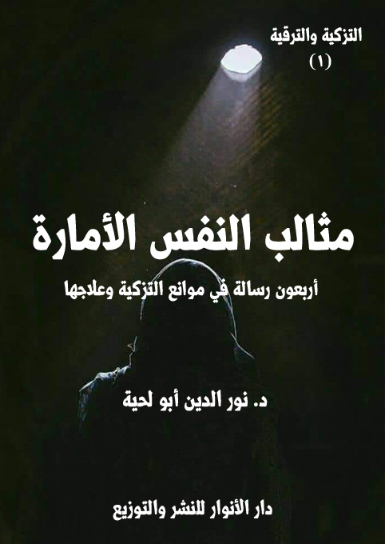

الوصف: أربعون رسالة في موانع التزكية وعلاجها
السلسلة: رسائل التزكية والترقية
المؤلف: أ.د. نور الدين أبو لحية
الناشر: دار الأنوار للنشر والتوزيع
الطبعة: الأولى، 1440 هـ
عدد الصفحات: 618
ISBN: 978-620-3-85904-1
لمطالعة الكتاب من تطبيق مؤلفاتي المجاني وهو أحسن وأيسر: هنا

التعريف بالكتاب
يحاول هذا الكتاب التعريف بالعيوب والمثالب المشكلة للنفس الأمارة، ومنابعها التي تنبع منها، والثمار التي تثمرها، مع بيان كيفية التخلص منها، إما باستعمال الأدوية المعرفية، أو أنواع الممارسات العملية.
وقد حاولنا أن نصيغ فيه كل ما ذكر في كتب الأخلاق والتصوف والسلوك من معارف مرتبطة بهذه الجوانب، مع الابتعاد عن كل ما لا علاقة بها، أو ما نرى أنه من الدخن الذي أصاب هذه العلوم، مثل غيرها من العلوم.
ولذلك كان اعتمادنا في التعرف على مظاهر تلك المثالب ومنابعها وكيفية علاجها على المصادر المقدسة بالدرجة الأولى، باعتبارها المصدر الأول للتزكية، سواء من ناحية التعريف بها، أو بيان منابعها وثمارها، أو بيان كيفية علاجها والتخلص منها.
ولضرورة التبسيط والتوضيح، جعلناه على شكل رسائل يرسلها شيخ مرشد مرب إلى مريده الذي يطلب منه أن يعرفه بالمثالب المشكلة للنفس الأمارة، وكيفية علاجها، مع سؤاله عن بعض أسرار النصوص المقدسة المرتبطة بها.
وقد أرسل له في هذا الكتاب أربعين رسالة تشمل جميع الجوانب المرتبطة بذلك، وتشرح له كل ما يتعلق بها من معارف يحتاجها لذلك.
مثالب النفس الأمارة (10)
تحاول هذه السلسلة المعنونة بـ[رسائل التزكية والترقية] بأجزائها الخمسة، ورسائلها المائتين، التعريف بالطريق إلى تزكية النفس وترقيتها ابتداء من مرحلتها الأولى: النفس الأمارة، وانتهاء بالمرحلة الأخيرة: النفس المرضية.
وهي تحاول أن تعتمد في ذلك، وبالدرجة الأولى على المصادر المقدسة من الكتاب والسنة المطهرة، بالإضافة إلى ما ذكره أئمة الهدى وورثة النبوة، أو ما انبنى على تلك التوجيهات المقدسة من تجارب وحكم ذكرها العلماء والحكماء من هذه الأمة وغيرها، فالحكمة ضالة المؤمن، أين وجدها، فهو أحق بها.
وهي تبتعد عن كل ذلك الدخن الذي أصاب الكتب التي ألفت في هذه الجوانب، بسبب اعتمادها على مصادر نهينا عن الاعتماد عليها، ولذلك أصبح العلم المرتبط بها، والذي يطلق عليه [التصوف] أو [العرفان] بشقيه النظري والعملي، محلا للكثير من الأطروحات التي لقيت الجدل الكبير، وتسببت بذلك في الابتعاد عن هذا العلم الجليل، حذرا من الدخن الذي وقع فيه.
ولذلك؛ فإن هذه السلسلة تحاول تجنب كل ذلك، وطرح القضايا المتعلقة بالتزكية والترقية من خلال المصادر الأصلية المعتمدة، بعيدا عن كل المؤثرات الخارجية، الشرقية والغربية.
بالإضافة إلى ذلك تحاول إقناع السالكين بضرورة التزكية في جوانبها المختلفة، باعتماد كل أنواع الاستمالات العقلية والعاطفية وغيرها، لأن الهدف من علم التزكية ليس حفظ مصطلحاته، ولا الغوص في تفاصيله وفروعه، وإنما هو وسيلة لتطهير النفس والعروج بها في معارج الكمال المتاحة لها.
مثالب النفس الأمارة (11)
وسبب تسميتنا لها بهذا الاسم [رسائل التزكية والترقية]، يعود إلى أنها عبارة عن رسائل يرسلها شيخ مرشد مرب إلى مريده الطالب للتزكية، يجيبه فيها على أسئلته وإشكالاته، ويوضح له كيفية تزكية نفسه من كل الآفات التي يتعرض لها، بالإضافة إلى تعريفه بمراتب الترقي التخلقي والتحققي.
وبناء على كون النفس هي المجال الذي ترتبط به التزكية والترقية كما قال الله تعالى: {وَنَفْسٍ وَمَا سَوَّاهَا (7) فَأَلْهَمَهَا فُجُورَهَا وَتَقْوَاهَا (8) قَدْ أَفْلَحَ مَنْ زَكَّاهَا (9) وَقَدْ خَابَ مَنْ دَسَّاهَا} [الشمس: 7 - 10]؛ فقد كانت عناوين هذه السلسلة جميعا مرتبطة بالنفوس، كما ذكرها القرآن الكريم.
وقد رأينا أنه ذكر خمس مراتب للنفوس، ولكل نفس حالتها ومراتبها الخاصة، وهذه النفوس هي:
1. النفس الأمارة: وهي من خلال اسمها تدل على المرحلة التي تكون فيها النفس خبيثة ممتلئة بالأهواء، مستعدة بدرجة كبيرة لتلقي الوساوس الشيطانية؛ فلذلك لا تأمر إلا بالشر.. وقد أشار الله تعالى إلى هذه النفس في قوله: {إِن النفْسَ لَأَمَّارَةٌ بِالسُّوءِ إِلَّا مَا رَحِمَ رَبِّي} [يوسف: 53]
لكن هذا لا يعني عدم إمكانية تطهيرها وتزكيتها وترقيتها من تلك الحالة إلى حالة أخرى أكثر طهرا.. بل إن ذلك ممكن، والقرآن الكريم أشار إليه عند ذكره لتحول السحرة وغيرهم إلى الإيمان.. ولولا ذلك لما كان هناك حاجة لعلم الأخلاق وغيره من العلوم المرتبطة بسياسة النفس وتهذيبها.
وقد خصصنا الحديث على هذه النفس بالجزء الأول من هذه السلسلة، والمعنون بـ[مثالب النفس الأمارة]، وقد أوردنا فيه المثالب والعيوب والنقائص التي تسببت في تحول
مثالب النفس الأمارة (12)
النفس من فطرتها الأصيلة إلى حالة النفس الأمارة المستعدة استعدادا كبيرا للشر.
ولم نكتف بإيراد ذلك، وإنما ذكرنا كيفية تطهير تلك المثالب، وعلاجها، وتصحيح ما تقع فيه النفس من أخطاء، حتى ترتقي إلى درجة أعلى في عالم النفوس.
2. النفس اللوامة: وقد ذكرها القرآن الكريم، وأثنى عليها في قوله تعالى: {وَلَا أُقْسِمُ بِالنفْسِ اللَّوَّامَةِ} [القيامة: 2]، والمراد منها تلك النفس الممتلئة بالورع والتقوى، والتي تلوم صاحبها على كل التصرفات التي تحول بينه وبين الكمال.
وقد خصصنا الحديث على هذه النفس بالجزء الثاني من هذه السلسلة، والمعنون بـ[مدارس النفس اللوامة]، وقد أوردنا فيه المناهج والرؤى المختلفة في كيفية التزكية والترقية، مما ذكرته المصادر المقدسة، أو ما بني عليها، أو على أصولها.
3. النفس المطمئنة: وقد ذكرها القرآن الكريم، وأثنى عليها في قوله تعالى: {يَا أَيَّتُهَا النفْسُ الْمُطْمَئِنةُ} [الفجر: 27]، والمراد منها تلك النفس التي وصلت إلى حالة اليقين والطمأنينة والصلاح؛ فصار صاحبها مرتاحا من شغبها وجدلها ولومها وأمرها له بالسوء، ولذلك كانت مطمئنة لينة سهلة مسالمة.
وبما أن النفس في هذه المرحلة تصبح محلا للتحقق الخلقي، فقد ذكرنا في الجزء الخاص بها، وهو الجزء الثالث المعنون بـ[منازل النفس المطمئنة] تلك المراتب والمنازل التي تمر بها، والتي تجعلها أهلا لرضوان الله تعالى، لتحققها بكل متطلبات كمالها الممكنة.
4. النفس الراضية: وهي التي أشار إليها القرآن الكريم من غير تصريح عند ذكره للنفس المطمئنة، فقد قال بعدها: {ارْجِعِي إِلَى رَبِّكِ رَاضِيَةً} [الفجر: 28]، أي أن من مواهب الله للنفس المطمئنة، أو من علامات اكتمالها، ونهاية سيرها حصولها على الرضا..
وبما أن الرضا مرتبط بالمعارف، فقد بحثنا في الجزء الخاص بهذه النفس تلك المعارف
مثالب النفس الأمارة (13)
التي تملأ النفس بالرضا، وهي معارف مرتبطة بحقائق الوجود الكبرى، وقد أطلقنا على هذا الجزء اسم [معارف النفس الراضية]، وقصدنا من ذلك المعارف الذوقية التي هي ثمار للسلوك التخلقي.. فالتحقق العرفاني ثمرة للسلوك الأخلاقي.
وقد حاولنا في هذا الجزء خصوصا تبسيط تلك المعارف، واستعمال كل وسائل الإقناع المرتبط بها، وابتعدنا في نفس الوقت عن كل تلك المصطلحات والمفاهيم الدخيلة على ما يطلق عليه [العرفان النظري] أو [التصوف الفلسفي]
ولذلك كان هذا الجزء خاصا بهذا النوع من العرفان، ولكن في صورته القرآنية النبوية بعيدا عن الغنوصيات والآثار الأجنبية.
5. النفس المرضية: وهي التي أشار إليها القرآن الكريم من غير تصريح عند ذكره للنفس المطمئنة، فقد ذكر لتلك النفس مرتبتين أو صفتين: الراضية.. والمرضية، فقال: {ارْجِعِي إِلَى رَبِّكِ رَاضِيَةً مَرْضِيَّةً} [الفجر: 28]، ثم عقب عليها بقوله: {فَادْخُلِي فِي عِبَادِي (29) وَادْخُلِي جَنتِي (30)} [الفجر: 29، 30]
وقد فهمنا من خلال هذا الوصف، والتعقيب الذي عقب به على أن النفس المرضية هي النفس التي أصبحت محلا لتنزل الكرامات والفضل الإلهي في الدنيا والآخرة..
ولذلك خصصنا هذا الجزء المعنون بـ[مواهب النفس المرضية] بما وفره الله تعالى من فضل للصالحين الذين جاهدوا نفوسهم في ذات الله إلى أن استقامت لهم، وصلحت، وصارت محلا لكل أنواع الكرامة والمواهب.. وقد اعتبرنا هذا من باب الحوافز على السير والسلوك.
هذه هي أجزاء السلسلة الخمسة، وقد وضعنا في كل جزء منها أربعين رسالة، يمكن قراءة كل واحدة منها منفصلة، والاستفادة منها، من دون حاجة لغيرها.
مثالب النفس الأمارة (14)
وقد اعتمدنا على ذلك لتيسير تعلم المسائل المرتبطة بكل فرع من تلك الفروع، لأن كثرة التفريعات ـ في حال جعلها فصولا محدودة ـ تؤدي إلى الانشغال بها عن المطلوب منها.
وقد حاولنا في هذه الرسائل المزج بين الجانب النظري والعملي.. ذلك أن التزكية تحتاج إلى كليهما، فالمعرفة لها دور كبير في تأكيد الحقائق وتعميقها، حتى تذعن النفس لها وتقوم بالمتطلبات العملية المرتبطة بها.
مثالب النفس الأمارة (15)
يحاول هذا الكتاب التعريف بالعيوب والمثالب المشكلة للنفس الأمارة، ومنابعها التي تنبع منها، والثمار التي تثمرها، مع بيان كيفية التخلص منها إما باستعمال الأدوية المعرفية، أو أنواع الممارسات العملية.
وقد حاولنا أن نصيغ فيه كل ما ذكر في كتب الأخلاق والتصوف والسلوك من معارف مرتبطة بهذه الجوانب، مع الابتعاد عن كل ما لا علاقة بها، أو ما نرى أنه من الدخن الذي أصاب هذه العلوم، مثل غيرها من العلوم.
ولذلك كان اعتمادنا في التعرف على مظاهر تلك المثالب ومنابعها وكيفية علاجها على المصادر المقدسة بالدرجة الأولى، باعتبارها المصدر الأول للتزكية، سواء من ناحية التعريف بها، أو بيان منابعها وثمارها، أو بيان كيفية علاجها والتخلص منها.
ولضرورة التبسيط والتوضيح، جعلناه على شكل رسائل يرسلها شيخ مرشد مرب إلى مريده الذي يطلب منه أن يعرفه بالمثالب المشكلة للنفس الأمارة، وكيفية التخلص منها، مع سؤاله عن بعض أسرار النصوص المقدسة المرتبطة بها.
وقد أرسل له في هذا الكتاب أربعين رسالة تشمل جميع الجوانب المرتبطة بالنفس الأمارة، وتشرح له كل ما يتعلق بها من معارف يحتاجها لذلك.
وبما أن غرض الكتاب ورسائله تربوي بالدرجة الأولى؛ فإنا ابتعدنا كل البعد عن الأساليب الأكاديمية الجافة من التعريفات ومناقشة المفاهيم والمصطلحات وغيرها، حتى لا ينشغل القارئ بتلك الجوانب على الهدف المقصود من الكتاب، وهو تربية النفس وتهذيبها.
ولذلك حاولنا ـ في حال الخلاف في بعض المفاهيم ـ أن نتجاوز ذلك، وأن نذكر
مثالب النفس الأمارة (16)
مباشرة ما ترجح لدنيا منه، وقد نشير إلى غيره مجرد إشارة لا تشغل القارئ عن الهدف الذي يهدف إليه.
ومن الأمثلة على ذلك أن أكثر كتب السلوك والتربية تتحدث عن الفوارق بين تلك المثالب، كذكر الفرق بين العجب والغرور، أو العجب والكبر ونحوها، وقد يختلفون في ذلك اختلافا شديدا، وكل ذلك لا يعني القارئ.. ولذلك ذكرنا الفكرة التي نريدها مباشرة، لأن الهدف ليس التحقيق العلمي، وإنما الدعوة إلى السلوك والتهذيب والتربية، وهي لا تهتم بالمصطلحات بقدر ما تهتم بالحقائق.
لذلك حاولنا أن نضع في الكتاب أكبر قدر من النصوص المقدسة المرتبطة بالترغيب والترهيب من تلك المثالب، مع الدعوة للتأمل فيها، ومخاطبة العقل بأنواع الأمثلة التي ترغبه في المحاسن، وترهبه من المساوئ.
وقد اعتمدنا في تلك النصوص بالإضافة للقرآن الكريم ما ورد في السنة المطهرة من المصادر المعتمدة لدى المدارس الإسلامية، على المنهج الذي نعتمده فيها، وهو الاهتمام بمتن الحديث؛ فإن كان متوافقا مع القرآن الكريم، وأصول الدين، والفطرة السليمة؛ فإننا نقبله، ونثبته بغض النظر عن رواته، مع ملاحظة أننا نهذب ـ أحيانا ـ تلك النصوص بحذف ما نراه مدرجا فيها، أو متعارضا مع القرآن الكريم والقيم النبوية والفطرة السليمة.
ومثل ذلك اعتمدنا على ما ورد من الروايات عن أئمة الهدى وورثة النبوة، باعتبارهم أساتذة التزكية، وروادها، مع التنبيه إلا أننا ـ ولغاية الاختصار ـ لم نذكر كل ما ورد عنهم من روايات في تلك الجوانب، لأننا أفردنا الحديث عنهم فيها في سلسلة [أئمة وقيم]
وننبه في الأخير إلى أن أننا لم نرتب الخصال الواردة في الكتاب بأي نوع من أنواع
مثالب النفس الأمارة (17)
الترتيب، ولم نجعل لأي منها علاقة بالأخرى، وذلك لغرض التبسيط، فكل رسالة يمكن قراءتها منفصلة، لأنها بمثابة الأدوية التي قد يحتاج البعض إلى بعضها، ويستغني عن الباقي.
لكن مع ذلك ننبه إلى أن هذه الخصال جميعا يؤثر بعضها في بعض، ولا يمكن فهم التزكية، ولا سلوك سبيلها دون التعرف عليها جميعا، ذلك أن بعضها ينبع من بعض، وبعضها يؤدي إلى بعض.
مثالب النفس الأمارة (18)
كتبت إلي ـ أيها المريد الصادق ـ تخبرني بألم عن شعورك باللامبالاة تجاه تلك الحقائق الجميلة التي كنت تستمع إليها أثناء الوعظ، وأخبرتني أن ذهنك حينها سرح وشرد في كل شيء، حتى في تلك الألوان التي كانت تزدهي بها السجادة التي كنت جالسا عليها، وتفاصيل خيوطها وأشكالها.
وأخبرتني أنك عند دعائك لربك، كان لسانك يتحدث إلى الله من غير أن تشعر به، ولا بوجوده، ولا بتلك الألفاظ التي كنت ترددها، ولا بالمطالب العظيمة التي كنت تطلب منه أن يحققها لك..
وأخبرتني أنك في صلاتك صرت مثل تلك الآلة التي تقوم بحركاتها في منتهى الدقة، ومن غير أن تشعر بما تفعل، أو تتأثر به.
وكل ما ذكرته ـ أيها المريد الصادق ـ أعراض لأخطر الأمراض التي تصيب النفس، وتملؤها بالمسالك التي يتسرب منها الشيطان والأهواء.. وهو مرض الغفلة.. وهو أخطر الأمراض جميعا، لأنه المقدمة التي تتيح للجحود والكفر وكل أنواع المعاصي كبائرها وصغائرها أن تتمكن من النفس، وتحولها إلى نفس أمارة بالسوء، لا حظ لها من الخير، ولا علاقة لها به.
وسر ذلك واضح أيها المريد الصادق، ذلك أن الغفلة تشبه ذلك المخدر الذي يوضع على مراكز الشعور، لتشعر بعدم الإحساس بأي شيء، وحينها يمكن التحكم في العضو المخدر، ليصبح لينا سهلا يسهل التحكم فيه بكل سهولة.
ولهذا، فإن أول ما يبدأ به الشيطان إغواءه للإنسان تسليط الغفلة عليه، بحيث يصبح مخدرا لا يهتم لشيء، ولا يلقي باله ولا سمعه، لا لناصح ولا لمذكر.. فإذا وصل الإنسان
مثالب النفس الأمارة (19)
إلى تلك الدرجة، سهل على الوساوس أن تتسرب، وسهل على ما بعدها أن يتمكن من النفس.
هذا تشخيص ما ذكرت ـ أيها المريد الصادق ـ والتشخيص نصف العلاج.. فلا تيأس.. فما أنزل الله داء إلا أنزل له دواء، ولذلك فقد وفر لهذا الداء الكثير من الأدوية، والتي سأختصرها لك في دواءين، عليك أن تمارسهما، حتى تشفى من هذه الحالة، وتستعيد نفسك عافيتها.
وأولهما أن تعلم علم اليقين خطر الغفلة على حياتك ومستقبلك وجميع مصالحك.. فلا ينفي الغفلة شيء مثل الخوف والألم.. ذلك أنهما من المنبهات الشديدة التي تؤدي إلى اليقظة.
ألا ترى كيف يسير ـ حذرا ومتيقظا ـ من يعلم أن المطبات تملأ طريقه، والأشواك تعترض مسالكه.. فلذلك يحذر عند كل حركة يقوم بها خشية أن تؤدي إلى تلفه أو إعاقته أو إلحاق أي ضرر به؟
وهكذا الأمر بالنسبة لدينك الذي هو رأسمالك؛ فإذا علمت أن الغفلة عن حقائقه وقيمه لن تجني منها إلا الهلاك الأبدي، فسيجعلك ذلك حذرا خائفا، مثل ذلك الذي يسير في طريق الأشواك، أو في مفازة يخاف أن تلتهمه السباع.
ولهذا اعتبر الله تعالى الغفلة هي السبب في هلاك كل القرى وأصحابها الذين لم يعطوا رسلهم ما يستحقون من الاهتمام، قال تعالى ـ مبينا السبب الأكبر لهلاك قوم فرعون ـ: {فَانْتَقَمْنَا مِنْهُمْ فَأَغْرَقْنَاهُمْ فِي الْيَمِّ بِأَنهُمْ كَذَّبُوا بِآيَاتِنَا وَكَانُوا عَنْهَا غَافِلِينَ} [الأعراف: 136]
مثالب النفس الأمارة (20)
واعتبر الغفلة السبب الأكبر لذلك الران الذي طغى على القلوب؛ فملأها بالكبر، وصرفها عن تدبر الحقائق، فقال: {سَأَصْرِفُ عَنْ آيَاتِيَ الَّذِينَ يَتَكَبَّرُونَ فِي الْأَرْضِ بِغَيْرِ الْحَقِّ وَإِنْ يَرَوْا كُلَّ آيَةٍ لَا يُؤْمِنُوا بِهَا وَإِنْ يَرَوْا سَبِيلَ الرُّشْدِ لَا يَتَّخِذُوهُ سَبِيلًا وَإِنْ يَرَوْا سَبِيلَ الْغَيِّ يَتَّخِذُوهُ سَبِيلًا ذَلِكَ بِأَنهُمْ كَذَّبُوا بِآيَاتِنَا وَكَانُوا عَنْهَا غَافِلِينَ} [الأعراف: 146]
وبذلك؛ فإن الغفلة أخطر من الكبر، ذلك أن المتكبر المستيقظ قد يسمع من الآيات، أو يرى من الحجج، ما يجعله متواضعا يستمع للحق، لكن الغافل المخدر يصم آذانه فلا يسمع حقا، ولا يقبل عليه في حال سماعه.
ولهذا أخبرنا الله تعالى أن الغفلة هي سبب الإعراض عن الحق، لعدم الاهتمام به، واللامبالاة تجاهه، قال تعالى: {اقْتَرَبَ لِلناسِ حِسَابُهُمْ وَهُمْ فِي غَفْلَةٍ مُعْرِضُونَ} [الأنبياء: 1]
وأخبر عن أدراك الغافلين للآثار التي جنوها من غفلتهم، فقال: {وَاقْتَرَبَ الْوَعْدُ الْحَقُّ فَإِذَا هِيَ شَاخِصَةٌ أَبْصَارُ الَّذِينَ كَفَرُوا يَا وَيْلَنَا قَدْ كُنا فِي غَفْلَةٍ مِنْ هَذَا بَلْ كُنا ظَالِمِينَ} [الأنبياء: 97]
وأخبر عن قول الملائكة وتأنيبها للغافلين، فقال: {وَجَاءَتْ كُلُّ نَفْسٍ مَعَهَا سَائِقٌ وَشَهِيدٌ (21) لَقَدْ كُنْتَ فِي غَفْلَةٍ مِنْ هَذَا فَكَشَفْنَا عَنْكَ غِطَاءَكَ فَبَصَرُكَ الْيَوْمَ حَدِيدٌ} [ق: 21، 22]
وأخبر عن أول تحذير إلهي للبشر من عالم الذر، وهو تحذيرهم من الغفلة، فقال: {وَإِذْ أَخَذَ رَبُّكَ مِنْ بَنِي آدَمَ مِنْ ظُهُورِهِمْ ذُرِّيَّتَهُمْ وَأَشْهَدَهُمْ عَلَى أَنْفُسِهِمْ أَلَسْتُ بِرَبِّكُمْ قَالُوا بَلَى شَهِدْنَا أَنْ تَقُولُوا يَوْمَ الْقِيَامَةِ إِنا كُنا عَنْ هَذَا غَافِلِينَ} [الأعراف: 172]
إن هذا التحذير ـ أيها المريد الصادق ـ يشبه تحذير الطبيب مريضه من الغفلة عن
مثالب النفس الأمارة (21)
استعمال أدويته، وفي أوقاتها المحددة، ذلك أن المشكلة ليست في عدم توفر الدواء، وإنما في الغفلة عن استعماله.
ولهذا، فإن على من عرف خطر الغفلة، وآثارها على حياته جميعا، أن يتخيل نفسه كل حين، وكأنه في سوق كثر لصوصه، أو في مفازة كثر سباعها.. فهو حذر كل حين على حقيقته التي يمكن أن تسلب منه في أي لحظة.
فلصوص الروح ـ أيها المريد الصادق ـ أخطر من لصوص المال، والسباع التي تنهش حقيقة الإنسان أخطر من السباع التي تنهش جسده..
فلذلك احذر من أولئك الذين يملؤونك بالرجاء الكاذب، أو يطمئنونك وأنت في هذه الفيافي الممتلئة بالمخاطر.. إنهم لا يختلفون أبدا عن أولئك اللصوص الذين يخدعونك بالكلام المعسول، والأماني الكاذبة قبل أن يقوموا بسرقتك.
وهكذا يفعل الشيطان وأولياؤه عندما يشعرونك بالأمان، قبل أن تقوم بالتحصينات اللازمة لمملكتك التي تهددها شياطين الإنس والجن كل حين.
إن مثلهم مثل من يأمرك بالسير إلى بلاد مملوءة بأنواع الوباء والفيروسات والجراثيم، ثم يدعوك إلى التوكل على الله، والاكتفاء بالثقة به، عن أن تحصن نفسك بأنواع التلقيحات.
وهكذا الأمر بالنسبة للغفلة، فإن أكبر أسبابها ذلك الوهن والكسل الناتج عن الثقة الزائدة، والأمل الكاذب.. لكن إن توفر ما يضادها من الخوف المقترن بالرجاء، فإن مفعول مخدر الغفلة سيزول لا محالة.
ولهذا دعا الله تعالى رسوله صلى الله عليه وآله وسلم إلى استعمال أسلوب الإنذار لا التبشر مع من تعتريهم الغفلة، لتحول بينهم وبين اليقظة، والجد في السير، قال تعالى: {وَأَنْذِرْهُمْ يَوْمَ الْحَسْرَةِ إِذْ قُضِيَ الْأَمْرُ وَهُمْ فِي غَفْلَةٍ وَهُمْ لَا يُؤْمِنُونَ} [مريم: 39]
مثالب النفس الأمارة (22)
إذا علمت ذلك ـ أيها المريد الصادق ـ فإن أول ما عليك فعله حتى تتجنب الغفلة وآثارها، أن تستعمل الأدوية والأسلحة التي تضادها، وتواجهها، وتبطل مفعولها، وأن تحرص عليها حتى لا يسلبها منك الشياطين أثناء غفلتك عنها، كما أشار إلى ذلك قوله تعالى: {وَدَّ الَّذِينَ كَفَرُوا لَوْ تَغْفُلُونَ عَنْ أَسْلِحَتِكُمْ وَأَمْتِعَتِكُمْ فَيَمِيلُونَ عَلَيْكُمْ مَيْلَةً وَاحِدَةً} [النساء: 102]
فكما أن أول أهداف الأعداء الذين يريدون السيطرة على أي حصن من الحصون، الوصول إلى مراكز أسلحته، وسرقتها، حتى لا يتمكن أصحاب الحصن من الدفاع عن أنفسهم، فهكذا يفعل أعداء النفس، فهم يستغلون تلك الغفلة التي تعتري الإنسان، لسلب أسلحته، والقضاء عليه بها.
وكما أن أول ما يفعله من يفطن للأعداء تلك الصيحة التي يحذر بها منهم، فيفرون مدبرين.. فكذلك الأمر في عالم الروح؛ فقد علمنا الله تعالى كيف نصيح بتلك الصيحة، حتى تستيقظ كل لطائفنا، وتنتبه إلى العدو الذي يتربص بها.
وتلك الصيحة هي ذكر الله تعالى، وحضور القلب معه، ولو تكلفا، فإن ذلك ـ مع الدوام عليه ـ سيعيد لكل لطائف الإنسان يقظتها، وهو ما يشير إليه قوله تعالى: {وَإِمَّا يَنْزَغَنكَ مِنَ الشَّيْطَانِ نَزْغٌ فَاسْتَعِذْ بِالله إِنهُ سَمِيعٌ عَلِيمٌ (200) إِن الَّذِينَ اتَّقَوْا إِذَا مَسَّهُمْ طَائِفٌ مِنَ الشَّيْطَانِ تَذَكَّرُوا فَإِذَا هُمْ مُبْصِرُونَ} [الأعراف: 200، 201]
ثم ذكر مقابلهم أولئك الذين يسكنون ويفرحون للغفلة، ويلتذون بها، لأنها تجعلهم في مأمن من كل ما تدعوهم إليه اليقظة من التكاليف، فقال: {وَإِخْوَانُهُمْ يَمُدُّونَهُمْ فِي الْغَيِّ ثُمَّ لَا يُقْصِرُونَ} [الأعراف: 202]
مثالب النفس الأمارة (23)
ولهذا اعتبر الله تعالى سبب استحواذ الشيطان على الإنسان، وتحويله عن إنسانيته الكريمة هو نسيانه لذكر الله، قال تعالى: {اسْتَحْوَذَ عَلَيْهِمُ الشَّيْطَانُ فَأَنْسَاهُمْ ذِكْرَ الله أُولَئِكَ حِزْبُ الشَّيْطَانِ أَلَا إِن حِزْبَ الشَّيْطَانِ هُمُ الْخَاسِرُونَ} [المجادلة: 19]
ولهذا ربط الذكر بالغفلة، واعتبره علاجا لها، فقال: {وَاذْكُرْ رَبَّكَ فِي نَفْسِكَ تَضَرُّعًا وَخِيفَةً وَدُونَ الْجَهْرِ مِنَ الْقَوْلِ بِالْغُدُوِّ وَالْآصَالِ وَلَا تَكُنْ مِنَ الْغَافِلِينَ} [الأعراف: 205]
وبناء على هذا وردت الأحاديث الكثيرة الدالة على فرار الشيطان من الذاكرين، ومنها قوله صلى الله عليه وآله وسلم: (إذا نودي بالصّلاة أدبر الشّيطان، فإذا قضي أقبل، فإذا ثوّب بها أدبر، فإذا قضي أقبل، حتّى يخطر بين الإنسان وقلبه فيقول: اذكر كذا وكذا، حتّى لا يدري أثلاثا صلّى أم أربعا) (1)
وقد قال الله تعالى مقررا لذلك: {وَجَعَلْنَا عَلَى قُلُوبِهِمْ أَكِنةً أَنْ يَفْقَهُوهُ وَفِي آذَانِهِمْ وَقْرًا وَإِذَا ذَكَرْتَ رَبَّكَ فِي الْقُرْآنِ وَحْدَهُ وَلَّوْا عَلَى أَدْبَارِهِمْ نُفُورًا} [الإسراء: 46]، فالآية الكريمة تشير إلى أن ذلك النفور سببه الذكر.. ولهذا كان الذكر أكبر دواء مضاد للغفلة.
وإياك ـ أيها المريد الصادق ـ أن (تترك الذكر لعدم حضور قلبك مع الله فيه، لأن غفلتك عن وجود ذكره أشد من غفلتك في وجود ذكره؛ فعسى أن يرفعك من ذكر مع وجود غفلة إلى ذكر مع وجود يقظة.. ومن ذكر مع وجود يقظة إلى ذكر مع وجود حضور.. ومن ذكر مع وجود حضور إلى ذكر مع غيبة عن ما سوى المذكور، وما ذلك على الله بعزيز)
لذلك التزم الذكر وداوم عليه، واحرص على حضور قلبك معه.. فإن اعترتك الغفلة أثناءه، فلا تيأس.. وإنما واصل ذكرك، وأنت تتألم لغفلتك.. وسترى كيف ينقذك الله منها.
__________
(1) البخاري [فتح الباري]، 6 (3285)
مثالب النفس الأمارة (24)
ليس ذلك فقط ما يمكنك أن تقوم به ـ أيها المريد الصادق ـ لمواجهة داء الغفلة؛ فقد تجد من شياطين الإنس من يلقي إليك بالوساوس التي تجعل من ذكرك مجرد لقلقة لسان، لا أثر لها في نفسك، ولا تأثير لها في حياتك.
ولذلك كان أول الطريق البعد عمن ينسيك ذكر الله، والقرب ممن يذكرك به، كما قال تعالى: {وَاصْبِرْ نَفْسَكَ مَعَ الَّذِينَ يَدْعُونَ رَبَّهُمْ بِالْغَدَاةِ وَالْعَشِيِّ يُرِيدُونَ وَجْهَهُ وَلَا تَعْدُ عَيْنَاكَ عَنْهُمْ تُرِيدُ زِينَةَ الْحَيَاةِ الدُّنْيَا وَلَا تُطِعْ مَنْ أَغْفَلْنَا قَلْبَهُ عَنْ ذِكْرِنَا وَاتَّبَعَ هَوَاهُ وَكَانَ أَمْرُهُ فُرُطًا} [الكهف: 28]
فهذه الآية الكريمة تحذرك من كل أولئك الشياطين الذين يملؤونك بالغفلة، وينحرفون بحقيقتك عن مسارها الصحيح.. فاحذر منهم.. واحذر من كل من لا تذكرك بالله رؤيته.. أو يدلك على الله حاله.. أو يزيد في علمك منطقه.. ذلك الذي إن رآك غافلا ذكرك.. وإن رآك ذاكرا أعانك.
لتكون مثل ذلك الذي قال لصاحبه: (تعال نؤمن بربنا ساعة)، فغضب الرجل، وجاء إلى النبي صلى الله عليه وآله وسلم، فقال: يا رسول الله، ألا ترى إلى ابن رواحة يرغب عن إيمانك إلى إيمان ساعة؟ فقال النبي صلى الله عليه وآله وسلم: (يرحم الله ابن رواحة، إنه يحب المجالس التي تتباهى بها الملائكة) (1)
وقد روي أن هذا الصحابي الجليل الشاعر الشهيد عبد الله بن رواحة، كان يأخذ بيد النفر من أصحابه فيقول: (تعالوا نؤمن ساعة، تعالوا فلنذكر الله ونزدد إيمانا، تعالوا نذكره بطاعته لعله يذكرنا بمغفرته) (2)
وروي أنه قال لصاحب له: تعال حتى نؤمن ساعة، فقال صاحبه: أولسنا بمؤمنين؟
__________
(1) مسند أحمد (21/ 309)
(2) ابن أبي شيبة 11/ 43
مثالب النفس الأمارة (25)
قال: (بلى، ولكنا نذكر الله فنزداد إيمانا) (1)
وقد صدق في ذلك، فالإيمان الحقيقي هو إيمان الذاكرين، لا الغافلين، والحاضرين، لا الناسين.. فهل يمكن أن تعتبر ذلك الغافل الذي لا يعرف ربه، ولا يذكره، ولا يتذكره في أي محل مؤمنا.. نعم هو مؤمن ظاهرا، لكن باطنه يغطي الله بحجب كثيرة تحول بينه وبين معرفته أو التواصل معه.
هذه ـ أيها المريد الصادق ـ الأدوية الكبرى لمرض الغفلة، وهناك أدوية كثيرة سأذكرها لك في سائر رسائلي، لذلك.. ليس عليك سوى استعمالها، وسترى كيف تنقشع الغفلة عن قلبك، وفي أقرب وقت، ليصبح مرآة تتجلى عليها كل حقائق الوجود بصورتها الجميلة الناصعة.. وستندم حينها على كل لحظة كنت فيها بعيدا عن تلك المشاهد التي لا يوجد ما هو أجمل منها.
__________
(1) البيهقي في الشعب (50)
مثالب النفس الأمارة (26)
كتبت ـ أيها المريد الصادق ـ تشكرني على ما ذكرته لك من أدوية حول مرض الغفلة، وكيفية علاجه، وذكرت أنك جربت تلك الأدوية التي وصفتها لك، وأنك رأيت بعض آثارها العاجلة عليك، وعلى قلبك.. وأنك أصبحت ـ لذلك ـ تلتذ بالذكر بعد أن كنت تنفر منه، وترق للمواعظ بعد أن كنت تضيق منها.
وأنا أبشرك بأنك إن أدمنت على ذلك وداومت عليه، فستنقشع عن قلبك كل الحجب، وسيزول كل الران الذي يحول بينك وبين رؤية الحق واتباعه.
لكني ـ مع ذلك ـ أحذرك من مرض لا يقل خطرا عن الغفلة، بل قد يكون أخا توأما له، وهو مسلك من مسالك الشيطان التي يتخذها مع من نجا من استحواذه عليه بسبب الغفلة.
وذلك المرض الخطير، هو الغرور، ذلك الداء الذي تنقصم له الظهور.. جميع الظهور.. حتى ظهور الصالحين التي قد تتذوق حلاوته، فتأنس لها، وتنسى أن الامتحان لم ينته، وبذلك تسقط، ولو في آخر اللحظات.
لقد ذكر الله تعالى ذلك، وحذر منه أشد تحذير، وضرب المثل له بآدم عليه السلام، ذلك الذي جاءه الشيطان من هذا الباب، بعد أن علم استعداده للوسوسة من خلاله، فقال: {فَدَلَّاهُمَا بِغُرُورٍ} [الأعراف: 22]
فالشيطان استطاع أن يغري آدم بالأكل من الشجرة، بسبب ما رآه من طمأنينته في الجنة، وتوهمه أنها ستبقى له أبد الآباد، وأنه لن يزيحه منها أحد، خاصة بعد أن علم لطف الله ورحمته وكرمه.. ولذلك أتاه الشيطان من هذا الباب، وراح يقسم له بالأيمان المغلظة إلى أن صدقه.
مثالب النفس الأمارة (27)
ولذلك اعتبر الله تعالى الغرور من أكبر أسلحة الشيطان التي يستعملها في غواية الإنسان، قال تعالى: {يَعِدُهُمْ وَيُمَنيهِمْ وَمَا يَعِدُهُمُ الشَّيْطَانُ إِلَّا غُرُورًا} [النساء: 120]
وقال ـ مفصلا وسائله وأساليبه في ذلك ـ: {إِنْ يَدْعُونَ مِنْ دُونِهِ إِلَّا إِنَاثًا وَإِنْ يَدْعُونَ إِلَّا شَيْطَانًا مَرِيدًا (117) لَعَنَهُ الله وَقَالَ لَأَتَّخِذَن مِنْ عِبَادِكَ نَصِيبًا مَفْرُوضًا (118) وَلَأُضِلَّنهُمْ وَلَأُمَنيَنهُمْ وَلَآمُرَنهُمْ فَلَيُبَتِّكُن آذَانَ الْأَنْعَامِ وَلَآمُرَنهُمْ فَلَيُغَيِّرُن خَلْقَ الله وَمَنْ يَتَّخِذِ الشَّيْطَانَ وَلِيًّا مِنْ دُونِ الله فَقَدْ خَسِرَ خُسْرَانًا مُبِينًا (119) يَعِدُهُمْ وَيُمَنيهِمْ وَمَا يَعِدُهُمُ الشَّيْطَانُ إِلَّا غُرُورًا} [النساء: 117 - 120]
وقال مبينا إقرار الله للشيطان فيما يريد أن يستعمله من وسائل للإيقاع بالإنسان: {وَاسْتَفْزِزْ مَنِ اسْتَطَعْتَ مِنْهُمْ بِصَوْتِكَ وَأَجْلِبْ عَلَيْهِمْ بِخَيْلِكَ وَرَجِلِكَ وَشَارِكْهُمْ فِي الْأَمْوَالِ وَالْأَوْلَادِ وَعِدْهُمْ وَمَا يَعِدُهُمُ الشَّيْطَانُ إِلَّا غُرُورًا} [الإسراء: 64]، ثم بين بعدها سر ذلك الإقرار، وهو تمييز الصادقين من المغترين، فقال: {إِن عِبَادِي لَيْسَ لَكَ عَلَيْهِمْ سُلْطَانٌ وَكَفَى بِرَبِّكَ وَكِيلًا} [الإسراء: 65]
وهكذا ذكر أن الغرور هو المصيدة التي يستعملها كل شياطين الإنس والجن، للإيقاع بمن يريدون ضمهم إلى صفوفهم، فقال: {وَكَذَلِكَ جَعَلْنَا لِكُلِّ نَبِيٍّ عَدُوًّا شَيَاطِينَ الْإِنْسِ وَالْجِن يُوحِي بَعْضُهُمْ إِلَى بَعْضٍ زُخْرُفَ الْقَوْلِ غُرُورًا وَلَوْ شَاءَ رَبُّكَ مَا فَعَلُوهُ فَذَرْهُمْ وَمَا يَفْتَرُونَ} [الأنعام: 112]
وهكذا اعتبر كل ما ينحرف بالإنسان عن مسيرة الترقي التي هيأها له، نوعا من أنواع الغرور، ومادة من مواده.. وبما أن كل ذلك مجتمع في الدنيا، فقد اعتبرها المتاع الذي لا يقع في حبائله إلا المغترون، قال تعالى: {وَمَا الْحَيَاةُ الدُّنْيَا إِلَّا مَتَاعُ الْغُرُورِ} [آل عمران: 185]
مثالب النفس الأمارة (28)
ولهذا كله اعتبر رسول الله صلى الله عليه وآله وسلم الغرور هو المصيدة التي لا ينجو منها إلا الفطنون الحذرون الصادقون الذي لا يسكنون لشيء، فقال: (حبّذا نوم الأكياس وفطرهم، كيف يغبنون سهر الحمقى واجتهادهم، ولمثقال ذرّة من صاحب تقوى ويقين أفضل من مل ء الأرض من المغترّين) (1)
وقال في حديث آخر: (الكيّس من دان نفسه وعمل لما بعد الموت، والاحمق من أتبع نفسه هواها وتمنى على الله الأمانيّ) (2)
وليس ذلك فقط، ما ورد في النصوص المقدسة من التحذير من الغرور، وإن كان كافيا، بل إن (كلّ ما ورد في فضل العلم وذمّ الجهل فهو دليل على ذمّ الغرور، لأن الغرور عبارة عن بعض أنواع الجهل، إذ الجهل هو أن يعتقد الشي ء، ويراه على خلاف ما هو به، والغرور هو الجهل) (3)
بل هو أخطر أنواع الجهل، ذلك أن الغرور جهل مركب؛ فالمغرور لا يكتفي بأن يجهل، وإنما يضم إليه ذلك التفكير الرغبوي الذي يجعله يرى الأشياء كما يحب، لا كما هي في الواقع، ثم يذهب إلى المغالطات والأكاذيب ليعتمدها أدلة على صدق دعواه، وإن لم تكن كذلك.
ولذلك يصبح علمه علم هوى، لا علما موضوعيا واقعيا.. وذلك أخطر أنواع الجهل.. ولهذا عرف الحكماء الغرور بأنه (سكون النفس إلى ما يوافق الهوى، ويميل إليه الطبع عن شبهة وخدعة من الشيطان، فمن اعتقد أنه على خير إمّا في العاجل أو في الآجل
__________
(1) ابن أبي الدنيا في كتاب اليقين.
(2) الترمذي والحاكم وأحمد وابن ماجه رقم 4260.
(3) المحجة البيضاء في تهذيب الإحياء، ج 6، ص: 293.
مثالب النفس الأمارة (29)
عن شبهة فاسدة فهو مغرور) (1)، وعرفوه بأنه (إخفاء الخدعة في صورة النصيحة) (2)، وأنه (تزيين الخطإ بأنه صواب) (3)
لا تيأس ـ أيها المريد الصادق ـ فأنا لم أرد ملأك بالقنوط عند تحذيري لك من الغرور، وإنما قصدي أن تنتبه له، وتحذر منه، ولا تكتفي بتلك اللذة التي وجدتها عند ذكرك لربك، أو عبوديتك له، فقد يأتيك الشيطان من حيث لا تحتسب، وقد قال الله تعالى عن ذلك الذي لم يأخذ حذره من الغرور: {وَاتْلُ عَلَيْهِمْ نَبَأَ الَّذِي آتَيْنَاهُ آيَاتِنَا فَانْسَلَخَ مِنْهَا فَأَتْبَعَهُ الشَّيْطَانُ فَكَانَ مِنَ الْغَاوِينَ (175) وَلَوْ شِئْنَا لَرَفَعْنَاهُ بِهَا وَلَكِنهُ أَخْلَدَ إِلَى الْأَرْضِ وَاتَّبَعَ هَوَاهُ فَمَثَلُهُ كَمَثَلِ الْكَلْبِ إِنْ تَحْمِلْ عَلَيْهِ يَلْهَثْ أَوْ تَتْرُكْهُ يَلْهَثْ ذَلِكَ مَثَلُ الْقَوْمِ الَّذِينَ كَذَّبُوا بِآيَاتِنَا فَاقْصُصِ الْقَصَصَ لَعَلَّهُمْ يَتَفَكَّرُونَ} [الأعراف: 175، 176]
ولهذا؛ فإني أنصحك ـ أيها المريد الصادق ـ مثلما نصحني جميع أساتذتي ومشايخي بأن تستعمل كل يوم، بل كل لحظة هذين الدوائين اللذين سأصفهما لك.. وهما كسائر أدوية النفس، أحدهما يرتبط بالمعرفة، والثاني بالعمل.. أولهما المقدمة، وثانيهما النتيجة.
أما الأول.. وهو العلاج المعرفي.. فاعلم أن السبب الأكبر للغرور هو عدم التصديق بوعد الله أو وعيده، أو ضعف ذلك التصديق.. وبقدر الضعف يكون الغرور.
ومثل ذلك ـ أيها المريد الصادق ـ مثل شخص دخل مدينة، وكان معه ثروة كبيرة من أصناف الأموال، وعندما خالط أهل المدينة سكن لهم، وأنس بهم، وتأثر بأخلاقهم..
__________
(1) المرجع السابق، ج 6، ص: 292.
(2) التوقيف ص 252.
(3) الكليات للكفوي ص 672.
مثالب النفس الأمارة (30)
فجعله ذلك يغفل عن حراسة ثروته؛ فأخذ اللصوص الذين لم ينتبه لهم، يسلبون منه كل حين طرفا منها إلى أن سلبوها منه جميعا.
فهكذا الأمر ـ أيها المريد الصادق ـ مع من اغتر بما وصل إليه من مكاسب أو ناله من شهرة، أو حظي به من أصناف التكريم.. فإنه إن سكن إلى ذلك، جاءه الشياطين بصور الملائكة، وسلبوا منه كل شيء، ومن غير أن يعلم.
ولذلك حذر الله تعالى من السكون إلى الأشياء، قبل معرفة المصير الحقيقي، الذي لا يمكن معرفته ما دمنا في الدنيا، قال تعالى: {كُلُّ نَفْسٍ ذَائِقَةُ الْمَوْتِ وَإِنمَا تُوَفَّوْنَ أُجُورَكُمْ يَوْمَ الْقِيَامَةِ فَمَنْ زُحْزِحَ عَنِ النارِ وَأُدْخِلَ الْجَنةَ فَقَدْ فَازَ وَمَا الْحَيَاةُ الدُّنْيَا إِلَّا مَتَاعُ الْغُرُورِ} [آل عمران: 185]
إن مثل ذلك ـ أيها المريد الصادق ـ مثل تلميذ في الامتحان؛ فهو قد يجيب عن بعض الأسئلة؛ فيفرح بإجابته، ويسكن لها، ويطمئن إلى نجاحه، ويجعله ذلك يقصر في باقي المواد، إلى أن يخسر كل شيء بسبب تقصيره..
ولهذا، فإن الكيس لا يغتر بالخلق جميعا، ولو أجمعوا على الثناء عليه، لأنه يعلم أن ثناءهم لن يجديه عند ربه ما لم يكن صادقا ومخلصا؛ فالله تعالى هو الذي يميز وحده الناجحين من الراسبين، والفائزين من الخاسرين.
ولهذا تتوالى التحذيرات الإلهية من السكون إلى الدنيا وأهلها، والاغترار بمعسول كلامهم وثنائهم ورضاهم، لأن رضاهم لا يعني رضى الله، كما أن سخطهم لا يعني سخطه، قال تعالى: {يَا أَيُّهَا الناسُ إِن وَعْدَ الله حَقٌّ فَلَا تَغُرَّنكُمُ الْحَيَاةُ الدُّنْيَا وَلَا يَغُرَّنكُمْ بِالله الْغَرُورُ (5) إِن الشَّيْطَانَ لَكُمْ عَدُوٌّ فَاتَّخِذُوهُ عَدُوًّا إِنمَا يَدْعُو حِزْبَهُ لِيَكُونُوا مِنْ أَصْحَابِ السَّعِيرِ} [فاطر: 5، 6]، وقال: {إِن وَعْدَ الله حَقٌّ فَلَا تَغُرَّنكُمُ الْحَيَاةُ الدُّنْيَا وَلَا يَغُرَّنكُمْ بِالله
مثالب النفس الأمارة (31)
الْغَرُورُ} [لقمان: 33]
وضرب المثل على ذلك بالمنافقين الذين توهموا أنهم ـ بذلك النور المزيف الذي اكتسبوه في الدنيا ـ نجحوا، لكنهم عرفوا في عالم الحقيقة والتجريد أن كل ما اكتسبوه لم يكن سوى أوهام لبّسوا بها على أنفسهم، قال تعالى: {يوْمَ يَقُولُ الْمُنَافِقُونَ وَالْمُنَافِقَاتُ لِلَّذِينَ آمَنُوا انْظُرُونَا نَقْتَبِسْ مِنْ نُورِكُمْ قِيلَ ارْجِعُوا وَرَاءَكُمْ فَالْتَمِسُوا نُورًا فَضُرِبَ بَيْنَهُمْ بِسُورٍ لَهُ بَابٌ بَاطِنُهُ فِيهِ الرَّحْمَةُ وَظَاهِرُهُ مِنْ قِبَلِهِ الْعَذَابُ (13) يُنَادُونَهُمْ أَلَمْ نَكُنْ مَعَكُمْ قَالُوا بَلَى وَلَكِنكُمْ فَتَنْتُمْ أَنْفُسَكُمْ وَتَرَبَّصْتُمْ وَارْتَبْتُمْ وَغَرَّتْكُمُ الْأَمَانِيُّ حَتَّى جَاءَ أَمْرُ الله وَغَرَّكُمْ بِالله الْغَرُورُ} [الحديد: 13، 14]
لذلك لا تسكن ـ أيها المريد الصادق ـ لأي شيء قد يتلاعب بحقيقتك ومصيرك.. فأنت ما دمت في هذه الدنيا في امتحان واختبار، ولا أحد يضمن لك النجاح، فقد تسقط في آخر محطة من المحطات، وقد ورد في الحديث أن أصحاب رسول الله صلى الله عليه وآله وسلم أثنوا على بعض الناس ثناء حسنا بسبب شجاعته في الجهاد في سبيل الله، فقال رسول الله: (أما انه من أهل النار)، فتعجب القوم من ذلك، ثم إن بعضهم راح يتبعه، فخرج معه فكلما وقف وقف معه، وإذا أسرع أسرع معه، فرآه في بعض المعارك، قد جرح جرحا شديدا، فوضع نصل سيفه في صدره، وقتل نفسه، فخرج الرجل إلى رسول الله صلى الله عليه وآله وسلم فقال: أشهد أنك رسول الله، قال: (وما ذاك؟) قال: (الرجل الذي ذكرت آنفا أنه من أهل النار، فأعظم الناس ذلك، فقلت: أنا لكم به، فخرجت في طلبه، ثم جرح جرحا شديدا، فاستعجل الموت فوضع نصل سيفه في الأرض وذبابه بين ثدييه، ثم تحامل عليه فقتل نفسه)، فقال رسول الله صلى الله عليه وآله وسلم: (إن الرجل ليعمل بعمل أهل الجنة فيما يبدو للناس، وهو من أهل النار، وإن الرجل ليعمل
مثالب النفس الأمارة (32)
عمل أهل النار، فيما يبدو للناس، وهو من أهل الجنة) (1)
وفي رواية أن رسول الله صلى الله عليه وآله وسلم قال لبلال حينها: (يا بلال، قم فأذن: لا يدخل الجنة الا مؤمن، وإن الله ليؤيد هذا الدين بالرجل الفاجر)
فاحفظ ـ أيها المريد الصادق ـ هذا الحديث، وضعه نصب عينيك؛ فلو أن ذلك الرجل كان موقنا بوعد الله ووعيده، ولو علم ما ينتظر الشهداء من فضله، وما ينتظر المنتحرين من عقابه، لما أقدم على ذلك، وفي آخر لحظة من حياته.
ولا تنس أن تحفظ ما ورد في الرواية الثانية من تأييد الله لدينه بالرجل الفاجر.. فلا يغرنك ما يذكرونه من خدماتك للإسلام والمسلمين.. فذلك كله قد يحبط جميعا بموقف تقفه، أو فلتة تقع منك.. ولا تتعجب من ذلك، فأنت ترى الغابات الشاسعة تحترق بعود ثقاب واحد..
لقد ذكر بعض الحكماء هذاالمعنى، فقال: (رب معصية أورثت ذلاً وافتقاراً خير من طاعة أورثت عزاً وأستكباراً)
هل تعلم ـ أيها المريد الصادق ـ سر ذلك؟.. إن سره هو أن ذلك العز والاستكبار يتنافى مع عبوديتك لربك.. فلذلك ترى بعض من يغترون بأعمالهم الصالحة مثل الجبابرة والفراعنة، وكأن مفاتيح الجنان أصبحت بأيديهم، لا يكتفون هم بدخولها فقط، وإنما يرون أنفسهم من المتحكمين في الجنة يدخلون إليها من شاءوا، ويخرجون من شاءوا.
هذا هو العلاج الأول ـ أيها المريد الصادق ـ ولا يعينك عليه شيء مثل كثرة قراءتك للقرآن الكريم، وتدبرك فيما ورد فيه من آيات.. فهو ينبهك كل حين من رقدتك، ويحذرك من السكون إلى الأشياء.. ويجعلك ترى العالم بصورته الحقيقية، لا بتلك الصورة التي
__________
(1) رواه البخاري.
مثالب النفس الأمارة (33)
يصوره لك بها المغترون، الذين يزينون لك أعمالك، إلى أن تلقى الله، وليس في صحيفتك حسنة واحدة.
ولهذا احذر أن تسكن إليهم، أو تفرح بما يذكرونه لك، فـ (لأن تلقى قوما يخوفونك حتى تجد الأمان، خير من أن تجد من يؤمنك إلى أن تجد المخافة)
واحذر من قولهم لك (إن الله كريم، وإنا نرجو عفوه)؛ أو ما ذكر عن بعضهم أنه قال: إذا قيل لك: (ما غرّك بربّك الكريم؟)، فقل: (غرّني ستورك المرخاة لأن الكريم هو السّتّار)
فكل هذا ناتج عن سوء فهم لقوله تعالى: {يَا أَيُّهَا الْإِنْسَانُ مَا غَرَّكَ بِرَبِّكَ الْكَرِيمِ} [الانفطار: 6]، فكرم الله ورحمته ولطفه بعباده، لا يعنيان عدم وجود عدله أو انتقامه ممن حرف أو انحرف.. وقد قال المفسرون في الآية الكريمة: (هذا تهديد، لا كما يتوهّمه بعض الناس من أنه إرشاد إلى الجواب، حيث قال الكريم، حتّى يقول قائلهم غرّه كرمه، بل المعنى في هذه الآية: ما غرّك يا بن آدم بربّك الكريم، أي العظيم حتّى أقدمت على معصيته وقابلته بما لا يليق كما جاء فى الحديث: (يقول الله تعالى يوم القيامة: يا ابن آدم ما غرّك بي؟ يا بن آدم ما ذا أجبت المرسلين؟) (1)
ويدل لذلك قوله تعالى: {نَبِّئْ عِبَادِي أَني أَنَا الْغَفُورُ الرَّحِيمُ (49) وَأَن عَذَابِي هُوَ الْعَذَابُ الْأَلِيمُ} [الحجر: 49، 50]، فالذي يقتصر من معرفته بالله على المغفرة والرحمة دون أن يعلم أنه يمكن أن يعاقب ويعذب.. مثل ذلك الذي يأكل العسل المسموم، متوهما أن الحلاوة لا يمكن أن يختلط بها سم..
وبما أن الله تعالى خلق العسل والسم.. فالعاقل هو الذي يعلم أنه يمكن أن يرحم،
__________
(1) تفسير ابن كثير (4/ 451)
مثالب النفس الأمارة (34)
كما أنه يمكن أن يعذب.. ولذلك كانت الفطنة في كلا المعرفتين، لا في الاقتصار على ما تشتهيه النفس منهما.
وإياك ـ أيها المريد الصادق ـ أن تورد لي هنا ما يورده المغترون الذين آثروا الحياة الدّنيا، واطمأنوا لها، وتوهموا أن مجرّد الإيمان يكفي للفوز، مع أن الله تعالى قرن مغفرته لعباده بالكثير من الشروط، فقال: {وَإِني لَغَفَّارٌ لِمَنْ تَابَ وَآمَنَ وَعَمِلَ صَالِحًا ثُمَّ اهْتَدَى} [طه: 82]
وإياك أن تسمع لتحريفهم للأسماء، وتبديلهم لها، حيث يسمون ذلك الغرور رجاء وحسن ظن بالله، ويوردون لك كل النصوص المقدسة التي تبين فضل ذلك..
وهؤلاء اشتبه عليهم الأمر؛ فأعملوا بعض النصوص، وضيعوا غيرها.. ولو فطنوا لأعملوها جميعا..
فلو أنهم تدبروا قوله صلى الله عليه وآله وسلم: (الكيّس من دان نفسه وعمل لما بعد الموت، والأحمق من أتبع نفسه هواها وتمنى على الله) (1) لعلموا أنهم المقصودون بذلك، ذلك أنهم غيروا اسم [التّمني] باسم [الرجاء]، مع أن الرجاء الذي دعا إليه القرآن الكريم لا يرتبط بالكسالى والمقعدين والمغرورين، وإنما يرتبط بأولئك الذين وصفهم الله تعالى، فقال: {إِن الَّذِينَ آمَنُوا وَالَّذِينَ هَاجَرُوا وَجَاهَدُوا فِي سَبِيلِ الله أُولَئِكَ يَرْجُونَ رَحْمَتَ الله وَالله غَفُورٌ رَحِيمٌ} [البقرة: 218]
ولو أنهم تدبروا كيف قرن الله تعالى الرجاء بالخوف، ثم رجح جانب الخوف، فقال في وصف عباده الصالحين: {أُولَئِكَ الَّذِينَ يَدْعُونَ يَبْتَغُونَ إِلَى رَبِّهِمُ الْوَسِيلَةَ أَيُّهُمْ أَقْرَبُ وَيَرْجُونَ رَحْمَتَهُ وَيَخَافُونَ عَذَابَهُ إِن عَذَابَ رَبِّكَ كَانَ مَحْذُورًا} [الإسراء: 57]
__________
(1) الترمذي والحاكم وأحمد وابن ماجه رقم 4260.
مثالب النفس الأمارة (35)
ولهذا، فإن أول علامات النجاة من الغرور، الحذر والحيطة التي يصحبها العمل لا الكسل، وقد قيل لبعض الحكماء: (قوم يقولون نرجو الله، ويضيّعون العمل)، فقال: (هيهات هيهات.. تلك أمانيّهم يترجّحون فيها، من رجا شيئا طلبه ومن خاف شيئا هرب منه)
قد تسألني ـ أيها المريد الصادق ـ عن محل الرّجاء؛ فاعلم أن الحكماء ذكروا له موضعين، أولهما مرتبط بذلك الذي أنهكته الذنوب، وطمع في التوبة، لكن شياطين الإنس والجن، راحوا يسخرون من طمعه فيها، وراحوا يؤيسونه من رحمة الله تعالى، فذلك الذي عليه أن يرجو غفران الله إن صدق في توبته، وأصلح ما أفسده من حاله، كما قال الله تعالى: {قُلْ يَاعِبَادِيَ الَّذِينَ أَسْرَفُوا عَلَى أَنْفُسِهِمْ لَا تَقْنَطُوا مِنْ رَحْمَةِ الله إِن الله يَغْفِرُ الذُّنُوبَ جَمِيعًا إِنهُ هُوَ الْغَفُورُ الرَّحِيمُ} [الزمر: 53]
وأما الثاني؛ فذلك الذي يستعمل الرجاء محركا له للجد في العمل الصالح، فيقرأ ما ورد في فضائل الأعمال، وما أورده الله تعالى في كلماته المقدسة، ويمني نفسه بتحصيل ذلك الأجر العظيم، ثم يندفع إلى ذلك العمل بصحبة ذلك الأمل..
فكلا الشخصين لم يستعملا الرجاء كمخدر للوهم والخديعة، وإنما استعملاه كمنشط للقيام بالأعمال الصالحة.. ولهذا فإن الفرق بين الرجاء والغرور في نتيجة كليهما.. فمن جعله رجاؤه نشيطا جادا في العمل الصالح، فهو صاحب رجاء حقيقي، ومن جعله رجاؤه كسولا متثاقلا، فهو مغرور بالأماني الكاذبة.
وأما العلاج الثاني للغرور؛ فهو ذلك الجهد والنشاط والهمة العالية التي تحول من المغرور كيّسا فطنا حذرا ورعا.. لا تغره الأماني الكاذبة، ولا معسول الكلام.. بل يسعى
مثالب النفس الأمارة (36)
بهمته للعمل الصالح، ولا يكتفي به، بل يتفقد نفسه، ويراجعها ليبحث عن أي ثغرة قد يدخل إليه الشيطان منها.. أو أي فيروس قد يقضي على كل ما اكتسبه من أعمال.
لقد أشار الإمام الصادق إلى ذلك، فقال: (المغرور في الدّنيا مسكين وفي الآخرة مغبون لأنه باع الأفضل بالأدنى، ولا تعجب من نفسك حيث ربّما اغتررت بمالك وصحّة جسمك أن لعلّك تبقى، وربّما اغتررت بطول عمرك وأولادك وأصحابك لعلّك تنجو بهم. وربّما اغتررت بجمالك ومنيتك وإصابتك مأمولك وهواك، فظننت أنك صادق ومصيب، وربّما اغتررت بما ترى من الندم على تقصيرك في العبادة ولعلّ الله تعالى يعلم من قلبك بخلاف ذلك، وربّما أقمت نفسك على العبادة متكلّفا والله يريد الإخلاص، وربّما افتخرت بعلمك ونسبك وأنت غافل عن مضمرات ما في غيب الله، وربّما توهّمت أنك تدعو الله وأنت تدعو سواه، وربّما حسبت أنك ناصح للخلق، وأنت تريدهم لنفسك، وأن يميلوا إليك، وربّما ذممت نفسك وأنت تمدحها على الحقيقة، واعلم أنك لن تخرج من ظلمات الغرور والتمني إلّا بصدق الإنابة إلى الله والإخبات له ومعرفة عيوب أحوالك من حيث لا توافق العقل والعلم ولا يحتمله الدّين والشريعة وسنن القدوة وأئمة الهدى، وإن كنت راضيا بما أنت فيه، فما أحد أشقى بعلمك منك وأضيع عمرا فأورثت حسرة يوم القيامة) (1)
هذا ما قاله الإمام الصادق، وهو ما اتفق عليه جميع الحكماء، ودلت عليه جميع النصوص المقدسة.. ولذلك كانت منافذ الغرور دقيقة جدا، قل من ينجو منها إلا المخلصون الصادقون الذين حاسبوا أنفسهم في ذات الله، ولم يلينوا لها، ولم يسكنوا لشيء.
وسأورد عليك ـ أيها المريد الصادق ـ بعض ما ذكروه عن أصناف المغترين، لا لتحفظه، أو تعتقد أنه النهاية.. بل لتحذر منه وتحذّر.. فمسالك الشيطان أكثر من أن
__________
(1) مصباح الشريعة، الباب السادس والثلاثين، نقلا عن: المحجة البيضاء في تهذيب الإحياء، ج 6، ص: 357.
مثالب النفس الأمارة (37)
يحصيها أحد.
فقد ذكروا أن من أوائل المغترين أولئك الذين لبسوا حلل أهل العلم، فتوهم الناس أن الجنة قد ضمنت لهم، مع أنهم في أشد المواضع خطرا، وقد أخبر الله تعالى عن غرور علماء من سبقنا من الأمم، فقال: {يَا أَيُّهَا الَّذِينَ آمَنُوا إِن كَثِيرًا مِنَ الْأَحْبَارِ وَالرُّهْبَانِ لَيَأْكُلُونَ أَمْوَالَ الناسِ بِالْبَاطِلِ وَيَصُدُّونَ عَنْ سَبِيلِ الله} [التوبة: 34]
ونفس الحكم ينطبق على علماء هذه الأمة، ولذلك أخبر صلى الله عليه وآله وسلم أنه (يجاء بالرجل يوم القيامة فيلقى في النار فتندلق أقتابه، فيدور بها كما يدور الحمار في الرحى فيجتمع إليه أهل النار فيقولون: يا فلان ما شأنك أليس كنت تأمرنا بالمعروف وتنهانا عن المنكر؟ فيقول: كنت آمركم بالخير ولا آتيه وأنهاكم عن الشر وآتيه) (1)
وضرب صلى الله عليه وآله وسلم للذي لا يعمل بعلمه مثلا، فقال: (مثل الذي يعلم الناس الخير وينسى نفسه كمثل الفتيلة تضيء على الناس وتحرق هي نفسها) (2)
وأخبر عن العقاب الشديد الذي يصيب أولئك الذين اغتروا بما عندهم من العلم، فقال: (كل علم وباله على صاحبه إلا من عمل به) (3) وفي رواية: (أشد الناس عذابا يوم القيامة عالم لم ينفعه الله بعلمه)
ولهذا كان رسول الله صلى الله عليه وآله وسلم يقول في دعائه: (اللهم إني أعوذ بك من نفس لا تشبع ومن علم لا ينفع) (4)
ولهذا، فإن كل من لم يلتفت لهذه النصوص المقدسة، وراح يزهو بما عنده من العلم
__________
(1) رواه البخاري ومسلم وغيرهما.
(2) رواه البزار وغيره.
(3) رواه الطبراني.
(4) رواه مسلم وغيره.
مثالب النفس الأمارة (38)
مغتر، فأول علامات العالم تواضعه وعبوديته لله، وشده حذره من التكاليف المناطة به، وأولها أن يطبق ما تعلمه من علم، حتى يعطي النموذج الصالح عن علمه.
لقد ضرب بعض الحكماء مثلا لذلك الذي يغتر بالعلم المفصول عن العمل، بمريض به علّة لا يزيلها إلّا دواء مركب من أخلاط كثيرة لا يعرفها إلّا حذّاق الأطباء.. وبعد أن بذل كل جهده في طلب الطبيب.. وهاجر عن وطنه حتّى عثر عليه، (فعلّمه الدّواء وفصّل له الأخلاط وأنواعها ومقاديرها ومعادنها الّتي منها تجتلب وعلّمه كيفيّة دقّ كلّ واحد منها وكيفيّة الخلط والعجن، فتعلّم ذلك منه فكتب منه نسخة حسنة بخطّ حسن ورجع إلى بيته وهو يكرّرها ويقرؤها ويعلّمها المرضى ولم يشتغل بشربها واستعمالها، أ فترى أن ذلك يغني عنه من مرضه شيئا؟) (1)
هيهات هيهات.. وأنى له ذلك.. بل إنه (لو كتب منه ألف نسخة، وعلّمه ألف مريض حتّى شفى جميعهم وكرّره كلّ ليلة ألف مرّة لم يغنه ذلك من مرضه شيئا إلّا أن يزن الذّهب، ويشتري الدّواء، ويخلطه كما تعلّم ويشربه ويصبر على مرارته، ويكون شربه في وقته وبعد تقديم الاحتماء وجميع شروطه، وإذا فعل جميع ذلك فهو على خطر من شفائه فكيف إذا لم يشربه أصلا، فمهما ظن أن ذلك يكفيه ويشفيه فقد ظهر غروره) (2)
ولهذا، فإن الله تعالى قال عن النفس: {قَدْ أَفْلَحَ مَنْ زَكَّاهَا} [الشمس: 9]، ولم يقل: (قد أفلح من تعلّم كيفية تزكيتها، وكتب علمها وعلّمها الناس).. وهكذا قال: {قَدْ أَفْلَحَ مَنْ تَزَكَّى (14) وَذَكَرَ اسْمَ رَبِّهِ فَصَلَّى} [الأعلى: 14، 15]، فربط الزكاة بالعمل، فلا تزكية من دون علم وعمل.
__________
(1) المحجة البيضاء في تهذيب الإحياء، ج 6، ص: 310.
(2) المرجع السابق، ج 6، ص: 311.
مثالب النفس الأمارة (39)
وهكذا يدخل في المغترين أولئك الذين اهتموا بالشعائر التعبدية دون ملاحظة مقاصدها؛ فحولوها من شعائر للتقرب إلى الله، وتزكية النفس إلى طقوس ظاهرية لا أثر لها في حياتهم إلا ذلك الكبر الذي يملأ نفوسهم.. فحولوا عبادة الله إلى وسيلة لعبادة أنفسهم.
وهؤلاء كثيرون جدا.. فمنهم من (أهملوا الفرائض، واشتغلوا بالفضائل والنوافل، وربّما تعمّقوا في الفضائل حتّى خرجوا إلى العدوان والسرف كالّذي تغلب عليه الوسوسة في الوضوء فيبالغ فيه ولا يرتضي الماء المحكوم بطهارته في فتوى الشرع ويقدّر الاحتمالات البعيدة قريبة في النجاسة) (1)
لكنه عند الورع عن أكل الحرام تجده ـ بعكس ذلك ـ (يقدّر الاحتمالات القريبة بعيدة، وربما أكل الحرام المحض)، مع أن النصوص المقدسة تتشدد في المال الحرام، وتيسر وترفع الحرج في الأمور المرتبطة بالطهارة والشعائر التعبدية.
ومنهم من راح يجعل كل اهتمامه عند قراءة القرآن الكريم على إخراج حروفه من مخارجها؛ (فلا يزال يحتاط في التشديدات والفرق بين الضاد والظاء.. لا يهمّه غيره، ولا يتفكّر فيما سواه ذاهلا عن معنى القرآن والاتّعاظ به وصرف الهمّ إلى فهم أسراره، وهذا من أقبح أنواع الغرور، فإنه لم يكلّف الخلق في تلاوة القرآن من تحقيق مخارج الحروف إلّا بما جرت به عادتهم في الكلام) (2)
إن مثل هؤلاء ـ أيها المريد الصادق ـ مثل (من حمل رسالة إلى مجلس سلطان، فأمر أن يؤدّيها على وجهها؛ فأخذ يؤدّي الرّسالة ويتأنق في مخارج الحروف ويكررها ويعيدها مرّة بعد أخرى، وهو في ذلك غافل عن مقصود الرّسالة ومراعاة حرمة المجلس، فما أحراه بأن
__________
(1) المرجع السابق، ج 6، ص: 333.
(2) المرجع السابق، ج 6، ص: 334.
مثالب النفس الأمارة (40)
تقام عليه السياسة فيردّ إلى دار المجانين ويحكم عليه بفقد العقل)
ومنهم من راح يصب كل اهتمامه عند صومه على ترك المفطرات من الأكل والشرب، ويبالغون في ذلك، بينما هم (لا يحفظون ألسنتهم عن الغيبة، وخواطرهم عن الرّياء، وبطونهم عن الحرام عند الإفطار، وألسنتهم من الهذيان بأنواع الفضول طول النهار)
ومنهم من راح يجعل كل اهتمامه ـ في تدينه ـ بالإكثار من الحج والعمرة، (فيخرجون إلى الحجّ من غير خروج عن المظالم وقضاء الدّيون، واسترضاء الوالدين، وطلب الزّاد الحلال، وقد يفعلون ذلك بعد سقوط حجّة الإسلام ويضيّعون في الطريق الصلاة والفرائض.. ولا يحذرون في الطريق عن الرفث والخصام، وربّما جمع بعضهم الحرام وأنفقه على الرفقاء في الطريق وهو يطلب به السمعة والرّياء، فيعصي الله في كسب الحرام أوّلا وفي إنفاقه بالرّياء ثانيا، فلا هو أخذه من حلّه ولا هو وضعه في حقّه، ثمّ يحضر البيت بقلب ملوّث برذائل الأخلاق وذمائم الصفات، لم يقدم تطهير قلبه على حضور بيت ربّه، وهو مع ذلك يظن أنه على خير من ربّه وهو مغرور)
وهكذا ـ أيها المريد الصادق ـ يمكن أن يدخل الغرور في أي عمل من الأعمال، والعاقل هو الذي يحاسب نفسه، ويزن أعماله بميزان الشريعة، لا بميزان الهوى، حتى لا يلقى الله، وليس في جعبته حسنة واحدة، كما قال تعالى: {قُلْ هَلْ نُنَبِّئُكُمْ بِالْأَخْسَرِينَ أَعْمَالًا (103) الَّذِينَ ضَلَّ سَعْيُهُمْ فِي الْحَيَاةِ الدُّنْيَا وَهُمْ يَحْسَبُونَ أَنهُمْ يُحْسِنُونَ صُنْعًا (104) أُولَئِكَ الَّذِينَ كَفَرُوا بِآيَاتِ رَبِّهِمْ وَلِقَائِهِ فَحَبِطَتْ أَعْمَالُهُمْ فَلَا نُقِيمُ لَهُمْ يَوْمَ الْقِيَامَةِ وَزْنًا} [الكهف: 103 - 105]
فاحذر ـ أيها المريد الصادق ـ أن تكون من هؤلاء، وكن فطنا حذرا.. وراجع كل موقف تقفه، أو سلوك تقوم به.. ولا يغرنك أحد عن نفسك، فقد قال رسول الله صلى الله عليه وآله وسلم:
مثالب النفس الأمارة (41)
(استفت قلبك، واستفت نفْسَك ثلاث مرات؛ البر ما اطمأنت إليه النفس، والإثم ما حاك في النفس، وتردد في الصدر، وإن أفتاك الناس وأفتوك) (1)
واحذر أن تسلم دينك لأحد من الناس، فينطبق عليك قوله تعالى: {إِذْ تَبَرَّأَ الَّذِينَ اتُّبِعُوا مِنَ الَّذِينَ اتَّبَعُوا وَرَأَوُا الْعَذَابَ وَتَقَطَّعَتْ بِهِمُ الْأَسْبَابُ وَقَالَ الَّذِينَ اتَّبَعُوا لَوْ أَن لَنَا كَرَّةً فَنَتَبَرَّأَ مِنْهُمْ كَمَا تَبَرَّءُوا مِنا كَذَلِكَ يُرِيهِمُ الله أَعْمَالَهُمْ حَسَرَاتٍ عَلَيْهِمْ وَمَا هُمْ بِخَارِجِينَ مِنَ النارِ} [البقرة: 166، 167]، وقوله: {يَوْمَ تُقَلَّبُ وُجُوهُهُمْ فِي النارِ يَقُولُونَ يَالَيْتَنَا أَطَعْنَا الله وَأَطَعْنَا الرَّسُولَا وَقَالُوا رَبَّنَا إِنا أَطَعْنَا سَادَتَنَا وَكُبَرَاءَنَا فَأَضَلُّونَا السَّبِيلَا} [الأحزاب: 66، 67]
فاحذر من كل فتوى تبعدك عن ربك وعن دينك وعن القيم المقدسة التي جاء بها، والتي دلت عليها الفطرة السليمة.. فإنه لن يجديك عند الله أن تبرئ نفسك، وتلقي التهمة على من أفتاك أو خدعك عن نفسك..
__________
(1) رواه أحمد 18006 والدارميُّ 2533.
مثالب النفس الأمارة (42)
كتبت إلي ـ أيها المريد الصادق ـ تخبرني عما أطلقت عليه [الثقة بالنفس]، وأخبرتني أنك دخلت دورة تدريبية خاصة بها، وأنها أثرت فيك تأثيرا بليغا، فصرت ترى من قدراتك ما لم تكن ترى، وتقتحم الحياة بجرأة لم تعهدها من نفسك.
وأنا لا أريد أن أثبطك أو أمنعك أو أحرم عليك ما اخترته لنفسك، وما رأيته صالحا لها؛ فما أنزل الله داء إلا أنزل له دواء.. والضعف والخور والعجز واهتزاز الثقة كلها أمراض، ويمكنك أن تعالجها بما تراه مناسبا لها.
لكني أريد أن أذكر لك أمرا قد يكون ناشئا عن تلك الثقة التي تحدثت عنها، أو قد يكون ناشئا من المبالغة فيها، وهو ما نص عليه قوله تعالى: {لَقَدْ نَصَرَكُمُ الله فِي مَوَاطِنَ كَثِيرَةٍ وَيَوْمَ حُنَيْنٍ إِذْ أَعْجَبَتْكُمْ كَثْرَتُكُمْ فَلَمْ تُغْنِ عَنْكُمْ شَيْئًا وَضَاقَتْ عَلَيْكُمُ الْأَرْضُ بِمَا رَحُبَتْ ثُمَّ وَلَّيْتُمْ مُدْبِرِينَ} [التوبة: 25]
فهذه الآية الكريمة تذكر نوعا من الثقة في النفس، كان سببا في الهزيمة، لا في الانتصار، لجيش كامل، على الرغم من أن رسول الله صلى الله عليه وآله وسلم كان معهم، لكنهم لم يلتفتوا إليه، ولا إلى المدد الإلهي، ولا إلى أخذ الحيطة والحذر، وإنما اكتفوا بالنظر إلى الكثرة التي أُعجبوا بها، فكانت سببا في هزيمتهم.
وهكذا أخبر الله تعالى عن إعجاب يهود بني النضير بحصونهم، وثقتهم فيها، وهو ما جعلهم يتبجحون، ويستكبرون، ويتصورون أنهم لا يمكن أبدا أن يُغلبوا أو يُهزموا.. لكن الله تعالى أتاهم من حيث لم يحتسبوا، فأُخرجوا من تلك الحصون، بل صاروا يدمرون بيوتهم التي كانوا يتباهون بها بأيديهم، قال تعالى: {هُوَ الَّذِي أَخْرَجَ الَّذِينَ كَفَرُوا مِنْ أَهْلِ الْكِتَابِ مِنْ دِيَارِهِمْ لِأَوَّلِ الْحَشْرِ مَا ظَنَنْتُمْ أَنْ يَخْرُجُوا وَظَنوا أَنهُمْ مَانِعَتُهُمْ حُصُونُهُمْ مِنَ الله
مثالب النفس الأمارة (43)
فَأَتَاهُمُ الله مِنْ حَيْثُ لَمْ يَحْتَسِبُوا وَقَذَفَ فِي قُلُوبِهِمُ الرُّعْبَ يُخْرِبُونَ بُيُوتَهُمْ بِأَيْدِيهِمْ وَأَيْدِي الْمُؤْمِنِينَ فَاعْتَبِرُوا يَاأُولِي الْأَبْصَارِ} [الحشر: 2]
وهكذا أخبر الله تعالى عن الخاسرين الذين لم يكتشفوا خسارتهم إلا بعد فوات الأوان، ذلك أن إعجابهم بأنفسهم وأعمالهم جعلهم منشغلين بالنظر إليها والفرح بها عن التحقق من مدى موافقتها للشريعة، ومدى توجههم بها لربهم، قال تعالى: {قُلْ هَلْ نُنَبِّئُكُمْ بِالْأَخْسَرِينَ أَعْمَالًا (103) الَّذِينَ ضَلَّ سَعْيُهُمْ فِي الْحَيَاةِ الدُّنْيَا وَهُمْ يَحْسَبُونَ أَنهُمْ يُحْسِنُونَ صُنْعًا} [الكهف: 103، 104]
هل رأيت ـ أيها المريد الصادق ـ كيف كان ذلك الإعجاب الذي قد يكون نوعا من الإسراف في الثقة بالنفس، سببا في الهلاك والخسارة؟
وكيف لا يكون كذلك.. وهو الحائل الأكبر بين الإنسان والتوبة؟.. وهل يمكن أن يتوب من يثق في أعماله، ويرى أنه منزه معصوم.. كل أعماله صالحة؟
وكيف لا يكون كذلك.. وهو الحائل الأكبر بين الإنسان ومراجعة نفسه، وتصحيح أخطائه ومواقفه.. والبحث عن الحقيقة والسراط المستقيم؟.. وهل كان سبب بقاء المشركين على شركهم، والضالين على ضلالهم إلا بسبب إعجابهم بأنفسهم، وفرحهم بما تركه لهم آباؤهم وأجدادهم، كما قال تعالى: {فَلَمَّا جَاءَتْهُمْ رُسُلُهُمْ بِالْبَيِّنَاتِ فَرِحُوا بِمَا عِنْدَهُمْ مِنَ الْعِلْمِ وَحَاقَ بِهِمْ مَا كَانُوا بِهِ يَسْتَهْزِئُونَ} [غافر: 83]
وكيف لا يكون كذلك.. وهو الحائل بين الإنسان والاستفادة من غيره، وتجاربهم، وخبراتهم.. وهل يمكن أن يستفيد من آراء غيره من امتلأ عجبا برأيه؟
وكيف لا يكون كذلك.. وهو السبب الأكبر في إحباط الأعمال، وقد قال الله تعالى: {يَا أَيُّهَا الَّذِينَ آمَنُوا لَا تُبْطِلُوا صَدَقَاتِكُمْ بِالْمَن وَالْأَذَى} [البقرة: 264]، فهل يمكن أن
مثالب النفس الأمارة (44)
يمن الإنسان بصدقاته وأعماله ما لم يكن معجبا بها؟
وكيف لا يكون كذلك.. وهو المدد الأكبر لنهر الكبر والإعراض والاستبداد والطغيان.. فكل هؤلاء معجبون بأنفسهم.. ولولا إعجاب فرعون بنفسه لما قال: {أَنَا رَبُّكُمُ الْأَعْلَى} [النازعات: 24]، ولما قال: {مَا عَلِمْتُ لَكُمْ مِنْ إِلَهٍ غَيْرِي} [القصص: 38]
لا تحسبن ـ أيها المريد الصادق ـ أن تلك المقولة مقولة فرعون وحده، بل هي مقولة كل معجب بنفسه، مغتر بما آتاه الله من الطاقات والمواهب والمكاسب.. وبدل أن يتواضع بها لله، راح يتبجح بها ويستكبر.
ولذلك كان العجب سببا من أسباب الهلاك الكبرى.. ومثلبا من مثالب النفس الأمارة العظمى.. ومن لم يتفقد هذا الداء من نفسه، ويعالجه، فإنه هالك لما محالة.
ليس هذا قولي ـ أيها المريد الصادق ـ وإنما هو قول ربنا.. فقد سمعت ما قرأته عليك من الآيات.. وهو قول نبينا صلى الله عليه وآله وسلم.. فقد ورد في الحديث قوله صلى الله عليه وآله وسلم: (ثلاث مهلكات: شح مطاع، وهوى متبع، وإعجاب المرء بنفسه) (1)
وقال في حديث آخر: (إذا رأيت شحا مطاعا وهوى متبعا وإعجاب كل ذي رأى برأيه فعليك نفسك) (2)
بل إنه صلى الله عليه وآله وسلم اعتبر المذنب المنكسر المتواضع أفضل من المطيع الممتلئ بالعجب بنفسه، ولذلك عندما سئل عن الذنوب، قال: (لو لم تذنبوا لخشيت عليكم ما هو أكبر من ذلك، العجب العجب) (3)
__________
(1) رواه البيهقي في الشعب.
(2) رواه أبو داود والترمذي وحسنه وابن ماجه.
(3) رواه البزار وابن حبان في الضعفاء والبيهقي في الشعب.
مثالب النفس الأمارة (45)
وهكذا حذر أئمة الهدى من العجب، واعتبروه أكبر حجاب يحول بين الإنسان والوصول إلى الحق، أو الإذعان له، فعن الإمام الصادق قال: (إن الله تعالى علم أن الذنب خير للمؤمن من العجب ولو لا ذلك ما ابتلى مؤمنا بذنب أبدا) (1)، وقال: (من دخله العجب هلك) (2)، وقال: (إن الرجل ليذنب الذنب فيندم عليه ويعمل العمل فيسره ذلك فيتراخى عن حاله تلك فلأن يكون على حاله تلك خير له مما دخل فيه) (3)
وحكى قصة تبين خطر العجب، فقال: (أتى عالم عابدا فقال له: كيف صلاتك؟ فقال: مثلي يسأل عن صلاته؟! وأنا أعبد الله منذ كذا وكذا، قال: فكيف بكاؤك؟ قال: أبكي حتى تجري دموعي، فقال العالم: إن ضحكك وأنت خائف أفضل من بكائك وأنت مدل.. إن المدل لا يصعد من عمله شي ء) (4)
وحكى قصة أخرى، فقال: (دخل رجلان المسجد أحدهما عابد والآخر فاسق فخرجا من المسجد والفاسق صديق والعابد فاسق، وذلك أنه يدخل العابد المسجد مدلا بعبادته يدل بها فتكون فكرته في ذلك وتكون فكرة الفاسق في الذم على فسقه ويستغفر الله مما صنع من الذنوب) (5)
وروى عن رسول الله صلى الله عليه وآله وسلم من أخبار الأنبياء أنه (بينما موسى عليه السلام جالس إذ أقبل إبليس وعليه برنس ذو ألوان فلما دنا منه خلع البرنس وقام إلى موسى عليه السلام فسلم عليه فقال له موسى عليه السلام: من أنت فقال: أنا إبليس، قال: أنت فلا قرب الله
__________
(1) الكافي ج 2 ص 313 رقم 1.
(2) الكافي ج 2 ص 313 رقم 2.
(3) الكافي ج 2 ص 313 رقم 4.
(4) الكافي ج 2 ص 313 رقم 5 والمدل: المنبسط المسرور الذي لا خوف له من التقصير في العمل.
(5) الكافي ج 2 ص 114 رقم 6..
مثالب النفس الأمارة (46)
دارك، قال: إني إنما جئت لأ سلم عليك لمكانك من الله تعالى، فقال له موسى عليه السلام: فما هذا البرنس؟ قال: أختطف به قلوب بني آدم، فقال له موسى: فأخبرني بالذنب الذي إذا أذنبه ابن آدم استحوذت عليه، قال: إذا أعجبته نفسه واستكثر عمله وصغر في عينه ذنبه) (1)
وحكى عن داود عليه السلام أن الله تعالى أوحى إليه، فقال: (يا داود بشر المذنبين وأنذر الصديقين)، فقال داود: كيف أبشر المذنبين وأنذر الصديقين؟ فقال الله تعالى له: (يا داود بشر المذنبين أني أقبل التوبة وأعفو عن الذنب، وأنذر الصديقين ألا يعجبوا بأعمالهم فإنه ليس عبد أنصبه للحساب إلا هلك) (2)
وهكذا اتفق كل الحكماء على خطورة العجب، وقد قال ابن مسعود: (الهلاك في اثنتين القنوط والعجب)، فانظر ـ أيها المريد الصادق ـ كيف جمع بينهما، لأن كليهما يقعدان بالإنسان عن العمل الجاد.. مع أن (السعادة لا تنال إلا بالسعي والطلب والجد والتشمر، والقانط لا يسعى ولا يطلب، والمعجب يعتقد أنه قد سعد وظفر بمراده فلا يسعى والموجود لا يطلب والمحال لا يطلب، والسعادة في اعتقاد المعجب حاصلة له ومستحيلة في اعتقاد القانط فبهذا جمع بينهما)
لا تحسبن ـ أيها المريد الصادق ـ أني أقصدك بهذا، أو أقصد أولئك الذين امتلأوا ثقة بأنفسهم؛ فليس كل واثق بنفسه معجبا بها.. وقد روي في الحديث أن رسول الله صلى الله عليه وآله وسلم قال لأصحابه يوم أحد، وهو يحمل سيفا: (من يأخذ هذا السيف بحقه؟)، فقام إليه رجال، فأمسكه عنهم، حتى قام إليه أبو دجانة، فقال: وما حقه يا رسول الله؟ قال: (أن تضرب به
__________
(1) الكافي ج 2 ص 314 رقم 8.
(2) الكافي ج 2 ص 314 رقم 8.
مثالب النفس الأمارة (47)
فى وجه العدو حتى ينحنى)، فقال: أنا آخذه بحقه يا رسول الله، فأعطاه إياه، وكان رجلا شجاعا يختال عند الحرب، فلما رآه صلى الله عليه وآله وسلم يتبختر قال: (إنها لمشية يبغضها الله إلا فى مثل هذا الموطن) (1)
وقال بعض من رآه يصفه: اتبعته، فأخذ عصابة له حمراء فعصب بها رأسه، فقالت الأنصار: أخرج عصابة الموت، فخرج، وهو يقول:
أنا الذى عاهدنى خليلى... ونحن بالسفح لدى النخيل
ألا أقوم الدهر فى الكيّول أضرب بسيف الله والرسول
فجعل لا يلقى أحدا من المشركين إلا قتله (2).
فأبو دجانة ـ أيها المريد الصادق ـ لم يكن معجبا بنفسه، ولكنه كان واثقا بها، وبقدراته، فلذلك قبل أن يحمل ذلك السيف بشروطه.. وعندما سار متبخترا لم يكن مختالا، ولا مزهوا، ولا متكبرا، وإنما كان فرحا بفضل الله عليه في حمل سيف رسول الله صلى الله عليه وآله وسلم والذب عنه.
وهكذا عندما قال يوسف عليه السلام للملك: {اجْعَلْنِي عَلَى خَزَائِنِ الْأَرْضِ إِني حَفِيظٌ عَلِيمٌ} [يوسف: 55]، أو عندما قال لأصحابه في السجن: {لَا يَأْتِيكُمَا طَعَامٌ تُرْزَقَانِهِ إِلَّا نَبَّأْتُكُمَا بِتَأْوِيلِهِ قَبْلَ أَنْ يَأْتِيَكُمَا ذَلِكُمَا مِمَّا عَلَّمَنِي رَبِّي} [يوسف: 37]
وهكذا عندما كان الإمام علي يصيح في المعرضين عنه، والمستبدلين به غيره: (سلوني قبل أن تفقدوني، فو الّذي نفسي! بيده لا تسألوني عن شيء فيما بينكم وبين السّاعة، ولا عن فئة تهدي مائة وتضلّ مائة إلاّ أنبأتكم بناعقها وقائدها وسائقها، ومناخ ركابها، ومحطّ رحالها، ومن يقتل من أهلها قتلا، ومن يموت منهم موتا) (3)
__________
(1) مسلم (2470)
(2) أحمد (3/ 123)، والحاكم (3/ 255)
(3) شرح الأخبار 1: 139، الحاكم في المستدرك (3394)
مثالب النفس الأمارة (48)
فكل هؤلاء ـ أيها المريد الصادق ـ لم يكونوا من المعجبين بأنفسهم، ولكنهم كانوا معجبين بفضل الله عليهم.. وفرق كبير بين من يعجب بما عنده، وبين من يعجب بما أعطاه الله.. فالأول يتكبر ويُدل ويبطر.. والثاني يحمد الله، ويضع النعمة في محلها، ويتواضع لخلق الله، لعلمه أن تلك النعمة ليست منه، وإنما هي من ربه.
ولذلك عرف الحكماء العجب بأنه (استعظام النعمة والركون إليها مع نسيان إضافتها إلى المنعم عز وجل) (1)
إذا عرفت هذا ـ أيها المريد الصادق ـ فاعلم أن للعجب ـ كسائر مثالب النفس الأمارة ـ دوائين، لا يمكن أن ينال الشفاء أحد من دون استعمالهما.
أما الأول.. وهو العلاج المعرفي.. فلا يمكن أن يتم إلا بعد التحقيق في ماهية العجب، والتفريق بينه وبين ما يشابهه من الأوصاف المحمودة.. حتى لا يزيل المداوي صفات أُمر بأن تتوفر فيه.
ولعل أقرب ما ييسر لك ذلك التفريق قوله تعالى: {قُلْ بِفَضْلِ الله وَبِرَحْمَتِهِ فَبِذَلِكَ فَلْيَفْرَحُوا هُوَ خَيْرٌ مِمَّا يَجْمَعُونَ} [يونس: 58] في نفس الوقت الذي نهي فيه عن الفرح بأشياء كثيرة (2).
ذلك أن العجب هو نوع من الفرح الذي يعتري النفس.. فإن كان هذا الفرح بفضل الله، كان فرحا في محله، وإن كان فرحا بالنفس، كان بطرا وكبرا وانحرافا.
أما الأول، وهو الفرح بالله، والإعجاب بفضله؛ فيثمر التواضع، وحمد الله، وشكره
__________
(1) إحياء علوم الدين 3/ 370.
(2) شرحنا بتفصيل المواضع التي نهي فيها عن الفرح، في كتاب [لا تفرح]
مثالب النفس الأمارة (49)
على نعمه، والخوف من التقصير في حقها، والذي يؤدي إلى سلبها.. ولذلك يكون الفرح مغمورا بالورع والتقوى والصلاح والعبودية.
وأما الثاني، فيجعل الإنسان مستكبرا بطرا مزهوا.. كما وصف الله تعالى قارون الذي لم يفرح بخزائن أمواله لكونها رزقا ساقه الله إليه، وإنما فرح بها لتوهمه أنها منه، وله، كما قال تعالى: {إِنمَا أُوتِيتُهُ عَلَى عِلْمٍ عِنْدِي} [القصص: 78]
ولذلك، فإن أحسن علاج يعالَج به هذا الفرح الكاذب هو قراءة ما ورد في القرآن الكريم من عواقب الذين استفزهم وأغراهم ذلك الفرح إلى الدرجة التي تحولوا فيها إلى مناوئين للرسل، ومعادين لأولياء الله.
وقد ذكر الله تعالى عاقبة إعجاب قارون بثروته وبيته وما آتاه الله من خزائن، فكان عاقبة أمره أن خسف الله به {وَبِدَارِهِ الْأَرْضَ فَمَا كَانَ لَهُ مِنْ فِئَةٍ يَنْصُرُونَهُ مِنْ دُونِ الله وَمَا كَانَ مِنَ الْمُنْتَصِرِينَ (81) وَأَصْبَحَ الَّذِينَ تَمَنوْا مَكَانَهُ بِالْأَمْسِ يَقُولُونَ وَيْكَأَن الله يَبْسُطُ الرِّزْقَ لِمَنْ يَشَاءُ مِنْ عِبَادِهِ وَيَقْدِرُ لَوْلَا أَنْ مَن الله عَلَيْنَا لَخَسَفَ بِنَا وَيْكَأَنهُ لَا يُفْلِحُ الْكَافِرُونَ} [القصص: 81، 82]
وهكذا كان عاقبة صاحب الجنتين الذي شغله الإعجاب بهما عن شكر الله وحمده، وشغله عن الاستماع لصاحبه الناصح له، والذي قال من شدة الإعجاب: {مَا أَظُن أَنْ تَبِيدَ هَذِهِ أَبَدًا (35) وَمَا أَظُن السَّاعَةَ قَائِمَةً وَلَئِنْ رُدِدْتُ إِلَى رَبِّي لَأَجِدَن خَيْرًا مِنْهَا مُنْقَلَبًا} [الكهف: 35، 36]
حينها علمه صاحبه المؤمن كيف يعالج ذلك العجب الكاذب، فقال له: {أَكَفَرْتَ بِالَّذِي خَلَقَكَ مِنْ تُرَابٍ ثُمَّ مِنْ نُطْفَةٍ ثُمَّ سَوَّاكَ رَجُلًا (37) لَكِنا هُوَ الله رَبِّي وَلَا أُشْرِكُ بِرَبِّي أَحَدًا (38) وَلَوْلَا إِذْ دَخَلْتَ جَنتَكَ قُلْتَ مَا شَاءَ الله لَا قُوَّةَ إِلَّا بِالله إِنْ تَرَنِ أَنَا أَقَلَّ مِنْكَ مَالًا
مثالب النفس الأمارة (50)
وَوَلَدًا (39) فَعَسَى رَبِّي أَنْ يُؤْتِيَنِ خَيْرًا مِنْ جَنتِكَ وَيُرْسِلَ عَلَيْهَا حُسْبَانًا مِنَ السَّمَاءِ فَتُصْبِحَ صَعِيدًا زَلَقًا (40) أَوْ يُصْبِحَ مَاؤُهَا غَوْرًا فَلَنْ تَسْتَطِيعَ لَهُ طَلَبًا} [الكهف: 37 - 41]
وقد ذكر الله تعالى المصير الذي صارت إليه تينك الجنتان، فقال: {وَأُحِيطَ بِثَمَرِهِ فَأَصْبَحَ يُقَلِّبُ كَفَّيْهِ عَلَى مَا أَنْفَقَ فِيهَا وَهِيَ خَاوِيَةٌ عَلَى عُرُوشِهَا وَيَقُولُ يَالَيْتَنِي لَمْ أُشْرِكْ بِرَبِّي أَحَدًا (42) وَلَمْ تَكُنْ لَهُ فِئَةٌ يَنْصُرُونَهُ مِنْ دُونِ الله وَمَا كَانَ مُنْتَصِرًا} [الكهف: 42، 43]
وعند تأملك ـ أيها المريد الصادق ـ في مقالة الصاحب المؤمن، تجد الحقائق التي يمكنك أن تستند إليها في علاج العجب الكاذب، وأولها أن تعلم أن كل شيء من الله، وأنه عارية عندك، ليختبرك به، وأنه كما أعطاك يمكن أن يمنعك، وكما من عليك به يمكن أن يحرمك منه.
ولذلك تنظر إلى ذلك الفضل الإلهي نظر التواضع، حتى تنجج في اختبارك، وحتى لا يكون وسيلة لأن يُسلب منك.
وقد ذكر الإمام الصادق ـ بيانا لما ورد في القرآن الكريم ـ المعارف الكبرى التي تحفظ قلبك من العجب، فقال: (العجب كل العجب ممن يعجب بعمله وهو لا يدري بما يختم له، فمن أعجب بنفسه وفعله فقد ضل عن نهج الرشاد، وادعى ما ليس له، والمدعي من غير حق كاذب، وإن خفي دعواه وطال دهره فإنه أولى ما يفعل بالمعجب نزع ما أعجب به، ليعلم أنه عاجز فقير، ويشهد على نفسه لتكون الحجة عليه أوكد، كما فعل بإبليس، والعجب نبات حبها الكفر، وأرضها النفاق، وماؤها البغي، وأغصانها الجهل، وورقها الضلالة، وثمرها اللعنة والخلود في النار، فمن اختار العجب فقد بذر الكفر وزرع النفاق، ولا بد من أن يثمر) (1)
__________
(1) مصباح الشريعة، الباب الأربعين، المحجة البيضاء في تهذيب الإحياء، ج 6، ص: 277.
مثالب النفس الأمارة (51)
فاجعل هذه المقولة ـ أيها المريد الصادق ـ بين عينيك؛ فهي مقولة إمام من أئمة الهدى، ووارث من ورثة النبوة، وهو يحذرك فيها من آثار العجب، فهو مثل الأمراض الخبيثة يتطور ويثمر كل ألوان الخبائث.
وقد سئل الإمام الكاظم عن العجب الذي يفسد العمل، فقال: (العجب درجات منها أن يزين للعبد سوء عمله، فيراه حسنا ويحسب أنه يحسن صنعا، ومنها أن يؤمن العبد بربه فيمن على الله، ولله عليه فيه المنة) (1)
إن الإمام الكاظم ـ أيها المريد الصادق ـ يشير إلى أثر من آثار العجب الخطيرة، وهو الإدلال على الله، ذلك الذي نهى الله تعالى عنه في قوله: {وَلَا تَمْنُنْ تَسْتَكْثِرُ} [المدثر: 6]، وقد قيل في تفسيرها: (أي لا تدل بعملك)
وهو ما أشار الله تعالى إليه في قول صاحب الجنتين: {مَا أَظُن السَّاعَةَ قَائِمَةً وَلَئِنْ رُدِدْتُ إِلَى رَبِّي لَأَجِدَن خَيْرًا مِنْهَا مُنْقَلَبًا} [الكهف: 36]، فقد بلغ به إعجابه بنفسه أنه تصور أن الله سيرزقه في الدار الأخرى، كما رزقه في الدنيا.
ومثله ذلك المشرك المعاند الذي حدث عنه قوله تعالى: {أَفَرَأَيْتَ الَّذِي كَفَرَ بِآيَاتِنَا وَقَالَ لَأُوتَيَن مَالًا وَوَلَدًا} [مريم: 77]، وقد رد الله تعالى عليه بقوله: {أَطَّلَعَ الْغَيْبَ أَمِ اتَّخَذَ عِنْدَ الرَّحْمَنِ عَهْدًا (78) كَلَّا سَنَكْتُبُ مَا يَقُولُ وَنَمُدُّ لَهُ مِنَ الْعَذَابِ مَدًّا (79) وَنَرِثُهُ مَا يَقُولُ وَيَأْتِينَا فَرْدًا} [مريم: 78 - 80]
ولهذا اتفق الحكماء على خطر الإدلال وكونه ثمرة من ثمار العجب، وقد قال بعضهم في ذلك: (لأن تضحك وأنت معترف بذنبك خير من أن تبكي وأنت مدل بعملك)
ثم بين سر ذلك، فقال: (الإدلال وراء العجب فلا مدل إلا وهو معجب، ورب
__________
(1) الكافي، ج 2 ص 313.
مثالب النفس الأمارة (52)
معجب لا يدل إذ العجب يحصل بالاستعظام ونسيان النعمة دون توقع جزاء عليه والإدلال لا يتم إلا مع توقع جزاء، فإن توقع إجابة دعوته واستنكر ردها بباطنه وتعجب منها كان مدلا بعمله فإنه لا يتعجب من رد دعاء الفساق ويتعجب من رد دعاء نفسه لذلك. فهذا هو العجب والإدلال وهو من مقدمات الكبر وأسبابه) (1)
إذا علمت ذلك ـ أيها المريد الصادق ـ وتأملت فيه، فإنه سيفيدك كثيرا في علاج العجب، ويقيك من آثاره الخطيرة على نفسك.
ومما يعينك على ذلك أن تقرأ سير الصالحين، لترى صلاحهم وتقواهم وطهارتهم، وبذلك يتحول إعجابك بنفسك إلى إعجاب بهم، والخير كل الخير في إعجابك بالصالحين ومحبتك لهم.
ولهذا امتلأ القرآن الكريم بذكر صفات الصالحين الصادقين الذين نجحوا فيما وضعوا فيه من الاختبارات.. فضع ما ذكره القرآن الكريم عنهم بين عينيك، وسترى كيف يملؤك ذلك بالعبودية والتواضع.
واستشعر ـ أيها المريد الصادق ـ دائما تلك الحقيقة القرآنية التي عبر عنها قول الله تعالى: {فَلَوْلَا فَضْلُ الله عَلَيْكُمْ وَرَحْمَتُهُ لَكُنْتُمْ مِنَ الْخَاسِرِينَ} [البقرة: 64]، وقوله: {وَلَوْلَا فَضْلُ الله عَلَيْكُمْ وَرَحْمَتُهُ لَاتَّبَعْتُمُ الشَّيْطَانَ إِلَّا قَلِيلًا} [النساء: 83]، وقوله: {وَلَوْلَا فَضْلُ الله عَلَيْكُمْ وَرَحْمَتُهُ مَا زَكَى مِنْكُمْ مِنْ أَحَدٍ أَبَدًا وَلَكِن الله يُزَكِّي مَنْ يَشَاءُ} [النور: 21]
وغيرها من الآيات الكريمة التي تشير إلى أن كل كمال تستشعره في نفسك، أو عمل
__________
(1) (7) إحياء علوم الدين 3/ 371.
مثالب النفس الأمارة (53)
تقوم به، أو تزكية تحصل عليها، إنما هي فضل إلهي خالص، كما عبر عن ذلك قوله صلى الله عليه وآله وسلم: (ما منكم من أحد ينجيه عمله)، قالوا: ولا أنت يا رسول الله؟ قال: (ولا أنا، إلا أن يتغمدني الله برحمته) (1)
ولذلك، كان لك أن تعجب بها جميعا، لكن باعتبارها فضل من الله عليك، وليس كسبا من كسبك، أو فضلا من فضلك.
أعلم ـ أيها المريد الصادق ـ أنك ستذكر لي ما ذكره بعضهم لشيخه حين قال له: (كيف يمكنني أن أجهل أعمالي؟ وإني أنا عملتها وإني أنتظر عليها ثوابا، ولو لا أنها عملي لما انتظرت الثواب فإن كانت الأعمال مخلوقة لله على سبيل الاختراع؛ فمن أين لي الثواب، وإن كانت الأعمال مني وبقدرتي فكيف لا أعجب بها؟) (2)
وأنا أحيلك في الجواب إلى القرآن الكريم.. فاقرأه بعين قلبك، وستجد الله تعالى يخاطب نبيه صلى الله عليه وآله وسلم ومن معه من المؤمنين بعدما انتصروا على أعدائهم، ويقول لهم: {فَلَمْ تَقْتُلُوهُمْ وَلَكِن الله قَتَلَهُمْ وَمَا رَمَيْتَ إِذْ رَمَيْتَ وَلَكِن الله رَمَى} [الأنفال: 17]
ويمكنك أن تقيس على هذا كل أعمالك، فالله تعالى هو الذي (خلقك، وخلق أعضاءك، وخلق فيها القوة والقدرة والصحة، وخلق لك العقل والعلم، وخلق لك الإرادة ولو أردت أن تنفي شيئا من ذلك عن نفسك لم تقدر عليه) (3)
وإن كنت (تحسب أن العمل حصل بقدرتك فمن أين قدرتك ولا يتصور العمل إلا بوجودك وبوجود علمك وإرادتك وقدرتك وسائر أسباب عملك وكل ذلك من الله تعالى لا منك، فإن كان العمل بالقدرة فالقدرة مفتاحه وهذا المفتاح بيد الله تعالى، ومهما لم يعطك
__________
(1) مسلم (2816) (73)
(2) المحجة البيضاء في تهذيب الإحياء، ج 6، ص: 279
(3) المحجة البيضاء في تهذيب الإحياء، ج 6، ص: 280
مثالب النفس الأمارة (54)
المفتاح فلا يمكنك العمل، فالعبادات خزائن بها يتوصل إلى السعادات ومفاتيحها القدرة والإرادة والعلم وهي بيد الله لا محالة) (1)
إذا علمت كل هذا ـ أيها المريد الصادق ـ فإنه يمكنك أن تبدأ في العلاج السلوكي المرتبط بتفاصيل حياتك، والمحال التي وجدت فيروس العجب قد اخترقها، لتزيله عنك، وتتحول إلى عبودية ربك.
وقد ذكر الحكماء الكثير من التفاصيل المرتبطة بذلك، ولن أذكرها لك جميعا، بل أكتفي بسبعة شواهد منها، تغنيك عن غيرك، أو تدربك على التعامل مع غيرها (2).
أما أولها.. فالإعجاب بجمال البدن.. وعلاجه ـ بالإضافة إلى تلك الأدوية العرفانية ـ بالتفكر في (أقذار الباطن، وفي أول أمره وآخره، وفي الوجوه الجميلة والأبدان الناعمة كيف تمزقت في التراب وأنتنت في القبور بحيث استقذرتها الطباع) (3)
وأما الثاني.. وهو الإعجاب بالقوة والبطش، فعلاجه بالتفكر في الأقوام الذين ذكرهم القرآن الكريم، والذين امتلأوا بالعجب بقوتهم، كما قال الله تعالى عنهم: {فَأَمَّا عَادٌ فَاسْتَكْبَرُوا فِي الْأَرْضِ بِغَيْرِ الْحَقِّ وَقَالُوا مَنْ أَشَدُّ مِنا قُوَّةً أَوَلَمْ يَرَوْا أَن الله الَّذِي خَلَقَهُمْ هُوَ أَشَدُّ مِنْهُمْ قُوَّةً وَكَانُوا بِآيَاتِنَا يَجْحَدُونَ (15) فَأَرْسَلْنَا عَلَيْهِمْ رِيحًا صَرْصَرًا فِي أَيَّامٍ نَحِسَاتٍ لِنُذِيقَهُمْ عَذَابَ الْخِزْيِ فِي الْحَيَاةِ الدُّنْيَا وَلَعَذَابُ الْآخِرَةِ أَخْزَى وَهُمْ لَا يُنْصَرُونَ} [فصلت: 15، 16]
وأما الثالث.. وهو العجب بالعقل والكياسة والتفطن لدقائق الأمور، وهو ما يثمر
__________
(1) المحجة البيضاء في تهذيب الإحياء، ج 6، ص: 280
(2) انظر التفاصيل المرتبطة بهذا في إحياء علوم الدين والمحجة البيضاء وغيرهما من كتب السلوك والأخلاق، وقد ذكرنا الكثير من التفاصيل المرتبطة بهذا من خلال ما ورد في القرآن الكريم في كتاب [لا تفرح]
(3) المحجة البيضاء في تهذيب الإحياء، ج 6، ص: 284، فما بعدها.
مثالب النفس الأمارة (55)
الاستبداد بالرأي، وترك المشورة، واستجهال المخالفين.. وعلاجه (أن يشكر الله على ما رزق من العقل، ويتفكر أنه بأدنى مرض يصيب دماغه كيف يوسوس ويجن بحيث يضحك الناس منه، ولا يأمن أن يسلب عقله إن أعجب به ولم يقم بشكره، وليستقصر عقله وعلمه، وليعلم أنه ما أوتي من العلم إلا قليلا، وإن اتسع علمه وأن ما جهله مما عرفه الناس أكثر مما علمه، فكيف بما لم يعرفه الناس من علم الله تعالى.. وأن يتهم عقله وينظر إلى الحمقى كيف يعجبون بعقولهم ويضحك الناس منهم، فيحذر أن يكون منهم وهو لا يدري فإن قاصر العقل قط لا يعلم قصور عقله فينبغي أن يعرف مقدار عقله من غيره لا من نفسه ومن أعدائه لا من أصدقائه، فإن من يداهنه يثني عليه فيزيده عجبا وهو لا يظن بنفسه إلا الخير ولا يفطن بجهل نفسه فيزداد به عجبا)
وأما الرابع.. فالعجب بالقومية والعرق والنسب، وخاصة إن كانت مرتبطة بالصالحين.. وعلاجه (أن يعلم أنه مهما خالف آباءه في أفعالهم وأخلاقهم فظن أنه ملحق بهم فقد جهل، وإن اقتدى بآبائه فما كان من أخلاقهم العجب، بل الخوف والإزراء على النفس واستعظام الخلق ومذمة النفس، وقد شرفوا بالطاعة والعلم والخصال المحمودة، لا بالنسب، فليتشرف بما شرفوا به.. بالإضافة إلى ذلك، فقد ساواهم في النسب، وشاركهم في القبائل من لم يؤمن بالله، فكانوا عند الله شرا من الكلاب وأخس من الخنازير، ولذلك قال الله تعالى: {يَا أَيُّهَا الناسُ إِنا خَلَقْنَاكُمْ مِنْ ذَكَرٍ وَأُنْثَى} [الحجرات: 13]، أي لا تفاوت في أنسابكم لاجتماعكم في أصل واحد، ثم ذكر فائدة النسب فقال: {وَجَعَلْنَاكُمْ شُعُوبًا وَقَبَائِلَ لِتَعَارَفُوا} [الحجرات: 13]، ثم بين أن الشرف بالتقوى لا بالنسب فقال: {إِن أَكْرَمَكُمْ عِنْدَ الله أَتْقَاكُمْ} [الحجرات: 13])
ولهذا عندما سئل رسول الله صلى الله عليه وآله وسلم: (أي المؤمنين أفضل؟) لم يقل: (أشرفهم نسبا)، وإنما
مثالب النفس الأمارة (56)
قال: (أحسنهم خلقا)، وعندما سئل: (فأي المؤمنين أكيس؟)، قال: (أكثرهم للموت ذكرا، وأحسنهم لما بعده استعدادا، أولئك الاكياس) (1)
وهكذا قال صلى الله عليه وآله وسلم: (إن الله قد أذهب عنكم عيبة الجاهلية ـ أي كبرها ـ كلكم بنو آدم وآدم من تراب) (2)، وقال مخاطبا قريش: (يا معشر قريش يأتي الناس بالأعمال يوم القيامة وتأتوني بالدنيا تحملونها على رقابكم، وتقولون: يا محمد يا محمد فأقول: هكذا) (3)
وأما السادس.. فالعجب بكثرة الأتباع والمعجبين.. والذين ضرب الله تعالى مثلا عنهم بالمشركين الذين قالوا: {نَحْنُ أَكْثَرُ أَمْوَالًا وَأَوْلَادًا وَمَا نَحْنُ بِمُعَذَّبِينَ} [سبأ: 35].. وعلاجه ما ذكره القرآن الكريم حين قال معقبا على قولهم: {قُلْ إِن رَبِّي يَبْسُطُ الرِّزْقَ لِمَنْ يَشَاءُ وَيَقْدِرُ وَلَكِن أَكْثَرَ الناسِ لَا يَعْلَمُونَ (36) وَمَا أَمْوَالُكُمْ وَلَا أَوْلَادُكُمْ بِالَّتِي تُقَرِّبُكُمْ عِنْدَنَا زُلْفَى إِلَّا مَنْ آمَنَ وَعَمِلَ صَالِحًا فَأُولَئِكَ لَهُمْ جَزَاءُ الضِّعْفِ بِمَا عَمِلُوا وَهُمْ فِي الْغُرُفَاتِ آمِنُونَ} [سبأ: 36، 37]
وعقب على هذا في آية أخرى، فقال: {كَالَّذِينَ مِنْ قَبْلِكُمْ كَانُوا أَشَدَّ مِنْكُمْ قُوَّةً وَأَكْثَرَ أَمْوَالًا وَأَوْلَادًا فَاسْتَمْتَعُوا بِخَلَاقِهِمْ فَاسْتَمْتَعْتُمْ بِخَلَاقِكُمْ كَمَا اسْتَمْتَعَ الَّذِينَ مِنْ قَبْلِكُمْ بِخَلَاقِهِمْ وَخُضْتُمْ كَالَّذِي خَاضُوا أُولَئِكَ حَبِطَتْ أَعْمَالُهُمْ فِي الدُّنْيَا وَالْآخِرَةِ وَأُولَئِكَ هُمُ الْخَاسِرُونَ} [التوبة: 69]
وهذه الآيات الكريمة تشير إلى (ضعفه وضعفهم، وأن جميعهم عبيد عجزة، لا يملكون لأنفسهم ضرا ولا نفعا.. ثم كيف يعجب بهم، وهم سيفترقون عنه إذا مات فيدفن في قبره ذليلا مهينا وحده لا يرافقه ولد ولا أهل ولا قريب ولا حميم ولا عشير، فيسلمونه
__________
(1) ابن ماجه رقم 4259
(2) أبو داود ج 2 ص 624.
(3) رواه الطبراني.
مثالب النفس الأمارة (57)
إلى البلى وإلى الحيات والعقارب والديدان ولا يغنون عنه شيئا وهو أحوج أوقاته إليهم وكذلك يهربون منه يوم القيامة {يَوْمَ يَفِرُّ الْمَرْءُ مِنْ أَخِيهِ (34) وَأُمِّهِ وَأَبِيهِ (35) وَصَاحِبَتِهِ وَبَنِيهِ (36) لِكُلِّ امْرِئٍ مِنْهُمْ يَوْمَئِذٍ شَأْنٌ يُغْنِيهِ} [عبس: 34 - 37]، فأي خير فيمن يفارقك في أشد أحوالك، ويهرب منك)
وأما السابع.. فالعجب بالمال ومتاع الحياة الدنيا.. فعلاجه أن يتفكر في آفات المال وكثرة حقوقه وعظم غوائله.. وإلى أن المال غاد ورائح ولا أصل له، وإلى أن في المشركين واليهود والمنحرفين من يزيد عليه في المال، ويتذكر قوله صلى الله عليه وآله وسلم: (بينما رجل يتبختر في حلة له قد أعجبته نفسه إذ أمر الله الأرض فأخذته فهو يتجلجل فيها إلي يوم القيامة) (1)
هذه ـ أيها المريد الصادق ـ بعض النماذج التي قد تعينك في علاج العجب، وإياك أن تبرئ نفسك منه، فتقع فيه.. فالعاقل هو الذي يحتاط لنفسه، ويحذر قبل تمكن المرض منه، وحينها قد لا يستطيع منه فكاكا.
وأحذرك ـ أيها المريد الصادق ـ من أن تقع فيما يقع فيه بعضهم من كثرة حديثه عن نفسه، وثنائه عليها، مستدلا على ذلك بقوله تعالى: {وَأَمَّا بِنِعْمَةِ رَبِّكَ فَحَدِّثْ} [الضحى: 11]، فذلك مقام رفيع، لا يصل إليه إلا من تجرد من نفسه وأهوائه، فكان ثناؤه على نفسه ثناء على ربه.. فلا تتخط رقاب الصديقين.. فلكل مقام أهله، ولكل حالة رجالها.
__________
(1) مسلم ج 6 ص 148.
مثالب النفس الأمارة (58)
كتبت إلي ـ أيها المريد الصادق ـ تسألني عن الكبر، وعلاماته، وهل يمكن أن يتصف به السائرون في طريق الله، من المريدين أو الواصلين؟.. أو أولئك العلماء الذين توجهوا بكنه همتهم لطلب العلوم، فتعلموها، ثم تفرغوا لتعليمها والتصنيف فيها؟.. أم أنه خاص بالسادة والكبراء.. من ذوي الجاه العريض والمال الكثير.. ممن أتيحت لهم المناصب، وتربعوا على العروش.
وجوابا عن سؤالك أذكر لك أن الكبر وغيره من مثالب النفس الأمارة ليس خاصا بمن ذكرت من الوجهاء والسادة، وإن كان عرضه باديا للعيان عليهم.. بل هو شامل لجميع الناس حتى أولئك المتسولين الشحاذين الذين يبدون كل أنواع الذلة، قد يكون فيهم من الكبر ما يوجد في فرعون نفسه.. لكنه احتبس عند الظهور لديهم، لعدم وجود البيئة المناسبة.. فإذا وجدت البيئة ظهر وبدا.
وقد أشار إلى ذلك قوله صلى الله عليه وآله وسلم: (ثلاثة لا يكلمهم الله يوم القيامة، ولا ينظر إليهم، ولا يزكيهم، ولهم عذاب أليم: شيخ زان، وملك كذاب، وعائل مستكبر) (1)
فهذا الحديث الشريف يشير إلى أن الأخلاق ليست مرتبطة بظهورها للعيان، وإنما بذلك المحل الذي يمدها من عالم النفس الأمارة، ولذلك قال بعض الحكماء: (ما من إنسان إلا وفي باطنه ما صرح به فرعون من قوله: {أَنَا رَبُّكُمُ الأَعْلَى} [النازعات:24]، ولكنه ليس يجد له مجالاً)
ولهذا عرفوا الكبر بأنه ذلك الاستعظام الذي تشعر به النفس الأمارة، وترى أن
__________
(1) مسلم (107)، وأبو عوانة 1/ 40، والبيهقي 8/ 161، والبغوي (3591)
مثالب النفس الأمارة (59)
قدرها فوق قدر غيرها، وأن غيرها يبنغي أن يكونوا خاضعين لها.. فإن لم يخضعوا لها تتألم لذلك، وتتحين أي فرصة لتفرض عليهم الخضوع.
وهي تنشأ من ذلك العجب الذي تمتلئ به النفس الأمارة، فتعتقد أنها الأفضل والأكمل، وأن رأيها الأصوب والأحكم.. وأن الخطأ قد يصيب الجميع لكنه لا يصيبها.
وهو لذلك أخطر المثالب، وأعظمها جرما، لأن صاحبها لا يكتفي بأن يفرض خضوعه على غيره من البشر ممن هم في مستواه، وإنما قد يشتد داؤه، فيفرضه على الله نفسه، فيعتقد أنه ند لله، أو أن الله ينبغي أن ينزل عند رغباته.. فإن لم ينزل راح يتحداه، ويكفر به، ويمارس كل المعاصي التي يتصور أنه يغيضه بها.
وقد يظهر هذا النوع من الكبر على الله في الكبر على رسله وأوليائه والصالحين من عباده؛ فيمارس المتكبر عليهم كل ألوان العتو والجبروت ليتحدى الله بذلك.
وقد أشار القرآن الكريم إلى هذا الصنف من المستكبرين، وهم الذين بلغ بهم الداء حده الأقصى، وأخبر أنهم أبعد الناس عن رضوان الله وجنته.. وهل يمكن أن يرضى الله عمن يتحداه؟.. وهل يمكن أن يتيح الجنان لمن لم يعرف قدره، وعبوديته؟.. وهل يمكن أن يستقر بالجنة حال، وفيها مستكبر واحد؟
وقد ضرب الله تعالى على ذلك الكثير من الأمثلة ليعتبر بها المعتبرون، ومنها ذلك الذي أدرك بذوقه اللغوي إعجاز القرآن الكريم، واستحالة أن يأتي به رسول الله صلى الله عليه وآله وسلم، وبعد أن فكر وقدر، وكاد يسلم لله، قام كبره ليحول بينه وبين ذلك، قال تعالى: {ثُمَّ أَدْبَرَ وَاسْتَكْبَرَ (23) فَقَالَ إِنْ هَذَا إِلَّا سِحْرٌ يُؤْثَرُ (24) إِنْ هَذَا إِلَّا قَوْلُ الْبَشَرِ} [المدثر: 23 - 25]
وأنت تلاحظ ـ أيها المريد الصادق ـ كيف ربط الله تعالى بين الكبر وذلك القول، واعتبره ضروريا ومباشرا.. فبمجرد أن حضر الكبر غطى على العقل، وأصبح صاحبه لا
مثالب النفس الأمارة (60)
يرى الأشياء بصورتها الحقيقية.. ولهذا تحول الإعجاز القرآني في ذهنه إلى مجرد سحر.
والسبب في ذلك هو أنه بعد أن أعمل عقله، وأدرك إعجاز القرآن راح يصرخ في باطنه في ربه: لم اخترت محمدا.. ولم تخترني.. ثم راح يتحداه بالكفر به وبنبيه.
وقد أشار القرآن الكريم إلى هذا المعنى عند حديثه عن هذا الرجل نفسه، وموقفه من الإيمان، في قوله تعالى: {وَقَالُوا لَوْلَا نُزِّلَ هَذَا الْقُرْآنُ عَلَى رَجُلٍ مِنَ الْقَرْيَتَيْنِ عَظِيمٍ} [الزخرف: 31]، فقد كان ذلك الرجل أحدهما.. ولذلك لم يرض قسمة الله تعالى، ولم يسلم لها، لأنه اعتبر الله غير محق في اختياره، كما رد الله تعالى عليهم ذلك بقوله: {أَهُمْ يَقْسِمُونَ رَحْمَتَ رَبِّكَ نَحْنُ قَسَمْنَا بَيْنَهُمْ مَعِيشَتَهُمْ فِي الْحَيَاةِ الدُّنْيَا وَرَفَعْنَا بَعْضَهُمْ فَوْقَ بَعْضٍ دَرَجَاتٍ لِيَتَّخِذَ بَعْضُهُمْ بَعْضًا سُخْرِيًّا وَرَحْمَتُ رَبِّكَ خَيْرٌ مِمَّا يَجْمَعُونَ} [الزخرف: 32]
ونفس الموقف حصل لإبليس عندما استكبر عن السجود لآدم عليه السلام، فقد كان استكباره في الحقيقة على الله، وكأنه أراد أن يغيظ الله لعدم اختياره له ليكون المسجود له، فلهذا رفض السجود، لأنه صنف نفسه من العالين من غير أن ينتظر تصنيف الله له بذلك، قال تعالى: {قَالَ يَاإِبْلِيسُ مَا مَنَعَكَ أَنْ تَسْجُدَ لِمَا خَلَقْتُ بِيَدَيَّ أَسْتَكْبَرْتَ أَمْ كُنْتَ مِنَ الْعَالِينَ} [ص: 75]، حينها ازداد كبر إبليس عنفوانا، فقال ـ غافلا أنه يخاطب ربه ـ: {أَنَا خَيْرٌ مِنْهُ خَلَقْتَنِي مِنْ نَارٍ وَخَلَقْتَهُ مِنْ طِينٍ} [ص: 76]
ولهذا كان الكبر علامة على استحواذ النفس الأمارة على الإنسان، بحيث تغطي كل مداركه العقلية؛ فلا يرى شيئا إلا نفسه.. حتى ربه يعزله ويحجبه إذا شعر أنه يحول بينه وبين رؤية نفسه، كما أشار إلى ذلك الإمام الصادق عندما قال: (ما من عبد إلّا وفي رأسه حكمة، وملك يمسكها فإذا تكبّر قال له: اتّضع وضعك الله، فلا يزال أعظم الناس في نفسه وهو أصغر الناس في أعين الناس، فإذا تواضع رفعها الله ثمّ قال له: انتعش نعشك الله، فلا يزال
مثالب النفس الأمارة (61)
أصغر الناس في نفسه وأرفع الناس في أعين الناس) (1)
ولهذا كان الجزاء الوفاق المرتبط بالمتكبر هو اللعن والبعد عن الله؛ فالله عزيز، ولا يرضى أن يقترب أو يقرب من أبعد نفسه عنه، ولهذا رد على إبليس، فقال: {فَاخْرُجْ مِنْهَا فَإِنكَ رَجِيمٌ (77) وَإِن عَلَيْكَ لَعْنَتِي إِلَى يَوْمِ الدِّينِ} [ص: 77، 78]
ونفس الخطاب يوجه لكل المستكبرين الذين {إِذَا قِيلَ لَهُمُ اسْجُدُوا لِلرَّحْمَنِ قَالُوا وَمَا الرَّحْمَنُ أَنَسْجُدُ لِمَا تَأْمُرُنَا وَزَادَهُمْ نُفُورًا} [الفرقان: 60]، أولئك الذين يحرمون أنفسهم من الإذعان لآيات الله، وكيف يذعنون لها، وهم ممتلئون بأنفسهم، ومحجوبون برؤيتها، قال تعالى: {سَأَصْرِفُ عَنْ آيَاتِيَ الَّذِينَ يَتَكَبَّرُونَ فِي الْأَرْضِ بِغَيْرِ الْحَقِّ وَإِنْ يَرَوْا كُلَّ آيَةٍ لَا يُؤْمِنُوا بِهَا وَإِنْ يَرَوْا سَبِيلَ الرُّشْدِ لَا يَتَّخِذُوهُ سَبِيلًا وَإِنْ يَرَوْا سَبِيلَ الْغَيِّ يَتَّخِذُوهُ سَبِيلًا ذَلِكَ بِأَنهُمْ كَذَّبُوا بِآيَاتِنَا وَكَانُوا عَنْهَا غَافِلِينَ} [الأعراف: 146]
وختم الآية الكريمة بالغفلة، دليل على أن الغفلة بنت من بنات الكبرياء، وثمرة من ثمراتها.. ذلك أن المستكبر ـ نتيجة انشغاله بنفسه ـ صار غافلا عن ربه.. ولو أنه أعطى ربه بعض الأهمية التي يوليها لنفسه لما غفل عنه.. ولهذا كان كل غافل يحمل بذور الكبرياء من حيث لا يشعر.
ولا تتوقف ثمار الكبر على ذلك، وإنما قد تتدحرج بصاحبها إلى أن يطلب من الله أدلة حسية خاصة به، بحيث يراها رأي العين، وهو يشبه في ذلك التلميذ الكسول الذي يأبى الدخول إلى الامتحان إلا بعد أن يضعوا أمامه الإجابة.. وقد ذكر الله تعالى ذلك، فقال: {وَقَالَ الَّذِينَ لَا يَرْجُونَ لِقَاءَنَا لَوْلَا أُنْزِلَ عَلَيْنَا الْمَلَائِكَةُ أَوْ نَرَى رَبَّنَا لَقَدِ اسْتَكْبَرُوا فِي أَنْفُسِهِمْ وَعَتَوْا عُتُوًّا كَبِيرًا (21) يَوْمَ يَرَوْنَ الْمَلَائِكَةَ لَا بُشْرَى يَوْمَئِذٍ لِلْمُجْرِمِينَ وَيَقُولُونَ حِجْرًا
__________
(1) الكافي ج 2 ص 312.
مثالب النفس الأمارة (62)
مَحْجُورًا} [الفرقان: 21، 22]،
وحكى عن المشركين المستكبرين هذه الاقتراحات التي فرضوها على ربهم حتى يؤمنوا برسوله، حيث قالوا ـ بكل جفاء وغلظة ـ: {مَالِ هَذَا الرَّسُولِ يَأْكُلُ الطَّعَامَ وَيَمْشِي فِي الْأَسْوَاقِ لَوْلَا أُنْزِلَ إِلَيْهِ مَلَكٌ فَيَكُونَ مَعَهُ نَذِيرًا (7) أَوْ يُلْقَى إِلَيْهِ كَنْزٌ أَوْ تَكُونُ لَهُ جَنةٌ يَأْكُلُ مِنْهَا} [الفرقان: 7 - 8]
وحكى عن فرعون قوله مخاطبا لقومه: {يَاقَوْمِ أَلَيْسَ لِي مُلْكُ مِصْرَ وَهَذِهِ الْأَنْهَارُ تَجْرِي مِنْ تَحْتِي أَفَلَا تُبْصِرُونَ (51) أَمْ أَنَا خَيْرٌ مِنْ هَذَا الَّذِي هُوَ مَهِينٌ وَلَا يَكَادُ يُبِينُ (52) فَلَوْلَا أُلْقِيَ عَلَيْهِ أَسْوِرَةٌ مِنْ ذَهَبٍ أَوْ جَاءَ مَعَهُ الْمَلَائِكَةُ مُقْتَرِنِينَ} [الزخرف: 51 - 53]
وهكذا قد تتدحرج ثمار الكبر بالمتكبر إلى أن يعلن نفسه وكيلا عن الله، ووصيا على عباده، أو أنه الله نفسه، فلذلك يفتري عليه الكذب، لشعوره أنه الحقيق بأن يوحى إليه، قال تعالى في وصف هؤلاء: {وَمَنْ أَظْلَمُ مِمَّنِ افْتَرَى عَلَى الله كَذِبًا أَوْ قَالَ أُوحِيَ إِلَيَّ وَلَمْ يُوحَ إِلَيْهِ شَيْءٌ وَمَنْ قَالَ سَأُنْزِلُ مِثْلَ مَا أَنْزَلَ الله وَلَوْ تَرَى إِذِ الظَّالِمُونَ فِي غَمَرَاتِ الْمَوْتِ وَالْمَلَائِكَةُ بَاسِطُو أَيْدِيهِمْ أَخْرِجُوا أَنْفُسَكُمُ الْيَوْمَ تُجْزَوْنَ عَذَابَ الْهُونِ بِمَا كُنْتُمْ تَقُولُونَ عَلَى الله غَيْرَ الْحَقِّ وَكُنْتُمْ عَنْ آيَاتِهِ تَسْتَكْبِرُونَ} [الأنعام: 93]
ولم يدرك هؤلاء أن تلك المناصب الإلهية الرفيعة التي تخول لصاحبها تلقي الوحي الصادق، أو الإلهام المسدد تقتضي تخلص النفس من كل رعونات الكبر، حتى يصبح عبدا محضا، لا حظ له من الاستعلاء، بل لا حظ له من الشعور بنفسه، كما قال تعالى عن المسيح عليه السلام: {لَنْ يَسْتَنْكِفَ الْمَسِيحُ أَنْ يَكُونَ عَبْدًا لِلَّهِ وَلَا الْمَلَائِكَةُ الْمُقَرَّبُونَ وَمَنْ يَسْتَنْكِفْ عَنْ عِبَادَتِهِ وَيَسْتَكْبِرْ فَسَيَحْشُرُهُمْ إِلَيْهِ جَمِيعًا} [النساء: 172]
وهكذا لو رجعت ـ أيها المريد الصادق ـ إلى القرآن الكريم، وبحثت في الموارد التي
مثالب النفس الأمارة (63)
ذكر فيها الكبر، فسترى أنه البذرة التي تنبت كل الخبائث، وأنه ليس خاصا بالملوك والجبابرة، بل قد يكون في أبسط الناس.
ولهذا ضرب الله تعالى المثل عن تواضع سليمان عليه السلام، الذي آتاه الله من الملك ما لم يؤت غيره، ومع ذلك تواضع لنملة، واستمع لنصيحة هدهد، وعندما سمع النملة تبسم ضاحكا من قولها، وقال بكل أدب وتواضع: {رَبِّ أَوْزِعْنِي أَنْ أَشْكُرَ نِعْمَتَكَ الَّتِي أَنْعَمْتَ عَلَيَّ وَعَلَى وَالِدَيَّ وَأَنْ أَعْمَلَ صَالِحًا تَرْضَاهُ وَأَدْخِلْنِي بِرَحْمَتِكَ فِي عِبَادِكَ الصَّالِحِينَ} [النمل: 19]
لهذا، فإن الصادقين من أولياء الله من أصحاب النفوس المطمئنة يستحيل عليهم الكبرياء.. فالله تعالى لن يختار وليا متكبرا.. فأول شروط الولاية الفناء عن النفس والامتلاء بالتواضع والعبودية.
بل إن ذلك ليس خاصا بالواصلين فقط، وإنما هو عام للمريدين أيضا، فلا يمكن للمريد أن يتحقق بالإرادة الصادقة ما لم يمتلئ بالتواضع، كما عبر بعضهم عن ذلك، فقال: (لا تصلح هذه الطريق الا لأقوام كنسوا بأرواحهم المزابل)
ذلك أن المريد الصادق هو الذي يذعن لمرشده ومربيه، ولا يجادله ولا يماريه، ولا يكون كذلك الذي قال الله تعالى عنه: {وَإِذَا قِيلَ لَهُ اتَّقِ الله أَخَذَتْهُ الْعِزَّةُ بِالْإِثْمِ} [البقرة: 206]
وقد ورد في الحديث أن رسول الله صلى الله عليه وآله وسلم قال لرجل: (كل بيمينك)، فلم يعجبه ذلك التوجيه، وقال متهربا: (لا أستطيع)، فقال النبيّ صلى الله عليه وآله وسلم: (لا استطعت)، فاعتلت يده، وما رفعها بعد ذلك (1)، لأنه استكبر عن توجيه نبي.
__________
(1) مسلم ج 6 ص 109.
مثالب النفس الأمارة (64)
ولذلك اتفق مشايخ التربية على أن من جادل شيخه في تربيته له، لن يفلح أبدا، لأن التربية تستدعي الإذعان والتسليم والتنفيذ.. وهي مثل الجندية، فالجندي الذي يجادل القائد في أرض المعركة سيكون سببا في الهزيمة.
إذا عرفت هذا ـ أيها المريد الصادق ـ فاسمع لما ألقيه لك من الأدوية والعلاجات التي ذكرها أولياء الله والهداة إليه، فخذها بقوة، وإياك ان تتكاسل في العمل بها، فالكبر يبدأ صغيرا، ثم يكبر، فإن كبر لم يمكنك استئصاله، وإن أخرجته من نفسك، وهو صغير، وتمكنت منك العبودية وأخلاق المتواضعين، دخلت بقدمك في أول مراتب الفائزين.. فأول الفوز التخلص من الكبر.. حتى لو كان مثقال ذرة، فقد قال رسول الله صلى الله عليه وآله وسلم: (لا يدخل الجنة رجل في قلبه مثقال ذرة من كبر، ولا يدخل النار رجل في قلبه مثقال ذرة من إيمان) (1)
وفي جمع رسول الله صلى الله عليه وآله وسلم بينهما دليل على أن الإيمان يتنافى مع الكبر، فأول صفات المؤمن الصادق في إيمانه عبوديته لله، وأول ثمار العبودية التواضع.
أول علاج تداوي به الكبر، وتستأصله به ـ أيها المريد الصادق ـ إزاحة الحجب عن عين القلب ليرى الحقائق كما هي، لا كما يشتهي.. فيعرف نفسه، وضعفها، ويعرف ربه وعظمته، وحينها يبدأ في وضع كل شيء في مرتبته التي وضعه الله فيها.. ليتعامل معه على أساس تلك المعرفة.
ذلك أن الكبر ـ كما عرفت ـ ناشئ من الجهل بالمراتب، وكيفية التعامل معها.. فلو أن إبليس عرف قدر ربه، وعظمته، حق المعرفة، لما استكبر عليه.. ولو أنه عرف أنه ما ابتلاه بالسجود لآدم إلا لكون آدم يستحق ذلك السجود، وأن الله ما أمر بذلك إلا لحكمة يعلمها،
__________
(1) أبو داود (4091)، والترمذي (1998)، والطبراني (10001)
مثالب النفس الأمارة (65)
لما أنف من السجود له، ولما أذعن لحديث نفسه الذي حال بينه وبين الاستماع لربه.
ولهذا ورد في الحديث القدسي، قوله صلى الله عليه وآله وسلم حاكيا عن ربه: (العظمة إزاري والكبرياء ردائي فمن نازعني فيهما قصمته) (1)
فهذا الحديث يصف لنا كيفية التخلص من الكبر، وهو تعظيم الله والشعور بأنه الأكبر والأعظم، وأن ما عداه الأصغر والأحقر.. فإذا ما شعر العبد بذلك زال كبرياؤه، وعاد إلى وضعه الطبيعي.
ولهذا قرن الله تعالى العبادات بتكبير الله، وجعل التكبير من صيغ الذكر، التي لها دورها الكبير في الشعور بعظمة الله.. فإذا ما حلت عظمة الله في القلب، زال عن المكبر وهم الكبر.
ولهذا وصف الله تعالى عباده الصالحين، فقال: {إِن الَّذِينَ أُوتُوا الْعِلْمَ مِنْ قَبْلِهِ إِذَا يُتْلَى عَلَيْهِمْ يَخِرُّونَ لِلْأَذْقَانِ سُجَّدًا (107) وَيَقُولُونَ سُبْحَانَ رَبِّنَا إِنْ كَانَ وَعْدُ رَبِّنَا لَمَفْعُولًا (108) وَيَخِرُّونَ لِلْأَذْقَانِ يَبْكُونَ وَيَزِيدُهُمْ خُشُوعًا} [الإسراء: 107 - 109]، ثم دعا إلى اقتفاء سبيلهم، وبين كيفيته، فقال: {وَقُلِ الْحَمْدُ لِلَّهِ الَّذِي لَمْ يَتَّخِذْ وَلَدًا وَلَمْ يَكُنْ لَهُ شَرِيكٌ فِي الْمُلْكِ وَلَمْ يَكُنْ لَهُ وَلِيٌّ مِنَ الذُّلِّ وَكَبِّرْهُ تَكْبِيرًا} [الإسراء: 111]، فهذه الأذكار، وما يصحبها من تكبير الله وتعظيمه هو السبيل الوحيد الذي يعيد الأمور إلى نصابها الصحيح.
لكن ذلك وحده لا يكفي ـ أيها المريد الصادق ـ في نزع في داء الكبر من القلب، ذلك أن الله تعالى ابتلى عباده ببعض الاختيارات التي قد لا تتناسب مع أهوائهم؛ فلذلك صاروا مخيرين بين أن يعبدو أنفسهم وأهواءها، وبين أن يعبدوا الله وما اختاره لهم.
ذلك أن أكثر العباد قد لا يجادل في تواضعه لربه، وخضوعه له، لكنه يجادل في
__________
(1) الحاكم ج 1 ص 61.
مثالب النفس الأمارة (66)
تواضعه وخضوعه لاختيار ربه، مثلما حصل من إبليس، ومن أقوام الأنبياء الذي رفضوا الانصياع لهم.
ولذلك رد الله تعالى على المشركين الذين رفضوا اختيار الله بقوله: {وَرَبُّكَ يَخْلُقُ مَا يَشَاءُ وَيَخْتَارُ مَا كَانَ لَهُمُ الْخِيَرَةُ سُبْحَانَ الله وَتَعَالَى عَمَّا يُشْرِكُونَ} [القصص: 68]، فقد اعتبر اعتقادهم بأن لهم الخيرة مع اختيار الله نوعا من الشرك، وهو شرك النفس بالله.
ولا تحسبن هذا ـ أيها المريد الصادق ـ خاصا بأقوام الأنبياء، بل إن الله تعالى يبتلي كل عصر بما يظهر تواضعهم أو كبرهم، حتى يتميز الصادقون في عبوديتهم من غيرهم، ولذلك اقتضت العبودية التواضع لجميع المؤمنين خشية أن يكون فيهم أولئك المختارون، كما قال بعض الصالحين: (إن الله أخفى أولياءه في عباده، فلا تدري من ولي الله ممن تلقاه ممن حولك.
بل إن الله تعالى جعل في شعائره التعبدية ما يميز به بين الصادقين وغيرهم، وقد أشار الإمام علي إلى ذلك عند ذكره للمكان الذي شاء الله أن يحج عباده إليه، فقال: (أ لا ترون أن الله سبحانه اختبر الأوّلين من لدن آدم (صلوات الله عليه) إلى الآخرين من هذا العالم، بأحجار لا تضرّ ولا تنفع، ولا تبصر ولا تسمع، فجعلها بيته الحرام، الّذي جعله للناس قياما. ثمّ وضعه بأوعر بقاع الأرض حجرا، وأقلّ نتائق الدّنيا مدرا، وأضيق بطون الأودية قطرا، بين جبال خشنة، ورمال دمثة، وعيون وشلة، وقرى منقطعة، لا يزكو بها خفّ، ولا حافر ولا ظلف. ثمّ أمر آدم عليه السّلام وولده، أن يثنوا أعطافهم نحوه، فصار مثابة لمنتجع أسفارهم، وغاية لملقى رحالهم، تهوي إليه ثمار الأفئدة، من مفاوز قفار سحيقة، ومهاوي فجاج عميقة، وجزائر بحار منقطعة، حتّى يهزّوا مناكبهم ذللا، يهلّلون للّه حوله، ويرملون على أقدامهم شعثا غبرا له. قد نبذوا السّرابيل وراء ظهورهم، وشوّهوا بإعفاء الشّعور
مثالب النفس الأمارة (67)
محاسن خلقهم، ابتلاء عظيما، وامتحانا شديدا، واختبارا مبينا، وتمحيصا بليغا، جعله الله سببا لرحمته، ووصلة إلى جنته) (1)
ثم بين أن الاختبار الإلهي لتواضع عباده هو الذي اقتضى ذلك، ذلك أن الله تعالى يمكنه (لو أراد أن يضع بيته الحرام، ومشاعره العظام، بين جنات وأنهار، وسهل وقرار، جمّ الأشجار، داني الثّمار، ملتفّ البنى، متّصل القرى، بين برّة سمراء، وروضة خضراء، وأرياف محدقة، وعراص مغدقة، ورياض ناضرة، وطرق عامرة، لكان قد صغر قدر الجزاء، على حسب ضعف البلاء. ولو كان الأساس المحمول عليها، والأحجار المرفوع بها، بين زمرّدة خضراء، وياقوته حمراء، ونور وضياء، لخفّف ذلك مصارعة الشّكّ في الصّدور، ولوضع مجاهدة إبليس عن القلوب، ولنفى معتلج الرّيب من الناس. ولكن الله يختبر عباده بأنواع الشّدائد، ويتعبّدهم بأنواع المجاهد، ويبتليهم بضروب المكاره، إخراجا للتّكبّر من قلوبهم، وإسكانا للتّذلّل في نفوسهم، وليجعل ذلك أبوابا فتحا إلى فضله، وأسبابا ذللا لعفوه)
وهكذا ذكر سر اختبار الله تعالى للأنبياء بذلك المظهر المتواضع الذي كانوا يبدون به، والذي جعل غيرهم يحتقرهم لأجله، لتوهمهم أن النبي لا يكون نبيا حتى يكون بنفس الصورة التي تتخيلها أمزجتهم.
وقد ضرب المثل على ذلك بموسى عليه السلام، فقال: (و لقد دخل موسى بن عمران ومعه أخوه هارون عليهما السّلام على فرعون، وعليهما مدارع الصّوف، وبأيديهما العصيّ، فشرطا له إن أسلم بقاء ملكه، ودوام عزّه، فقال: أ لا تعجبون من هذين، يشرطان لي دوام العزّ وبقاء الملك، وهما بما ترون من حال الفقر والذّلّ، فهلّا ألقي عليهما أساورة من
__________
(1) نهج البلاغة: خطبة 192.
مثالب النفس الأمارة (68)
ذهب؟ إعظاما للذّهب وجمعه، واحتقارا للصّوف ولبسه، ولو أراد الله سبحانه لأنبيائه حيث بعثهم أن يفتح لهم كنوز الذّهبان، ومعادن العقيان، ومغارس الجنان، وأن يحشر معهم طيور السّماء، ووحوش الأرضين لفعل، ولو فعل لسقط البلاء، وبطل الجزاء، واضمحلّت الأنباء، ولما وجب للقابلين أجور المبتلين، ولا استحقّ المؤمنون ثواب المحسنين، ولا لزمت الأسماء معانيها، ولكن الله سبحانه جعل رسله أولي قوّة في عزائمهم، وضعفة فيما ترى الأعين من حالاتهم، مع قناعة تملأ القلوب والعيون غنى، وخصاصة تملأ الأبصار والأسماع أذى)
ثم فسر سر كون الأنبياء من البسطاء والناس العاديين؛ فقال: (و لو كانت الأنبياء أهل قوّة لا ترام، وعزّة لا تضام، وملك تمدّ نحوه أعناق الرّجال، وتشدّ إليه عقد الرّحال، لكان ذلك أهون على الخلق في الاعتبار، وأبعد لهم في الاستكبار، ولآمنوا عن رهبة قاهرة لهم، أو رغبة مائلة بهم، فكانت النيّات مشتركة، والحسنات مقتسمة، ولكن الله سبحانه أراد أن يكون الاتّباع لرسله، والتّصديق بكتبه، والخشوع لوجهه، والاستكانة لأمره، والاستسلام لطاعته، أمورا له خاصّة، لا تشوبها من غيرها شائبة، وكلّما كانت البلوى والاختبار أعظم، كانت المثوبة والجزاء أجزل)
ولهذا كان اختبار الله تعالى للمستكبرين من أقوام الأنبياء بأولئك البسطاء الذين اتبعوهم، كما قال تعالى: {فَقَالَ الْمَلَأُ الَّذِينَ كَفَرُوا مِنْ قَوْمِهِ مَا نَرَاكَ إِلَّا بَشَرًا مِثْلَنَا وَمَا نَرَاكَ اتَّبَعَكَ إِلَّا الَّذِينَ هُمْ أَرَاذِلُنَا بَادِيَ الرَّأْيِ وَمَا نَرَى لَكُمْ عَلَيْنَا مِنْ فَضْلٍ بَلْ نَظُنكُمْ كَاذِبِينَ} [هود: 27]
وأخبر عن جواب نوح عليه السلام عندما طالبه قومه بطرد المستضعفين لينضموا إلى دعوته، فقال: {يَاقَوْمِ لَا أَسْأَلُكُمْ عَلَيْهِ مَالًا إِنْ أَجْرِيَ إِلَّا عَلَى الله وَمَا أَنَا بِطَارِدِ الَّذِينَ
مثالب النفس الأمارة (69)
آمَنُوا إِنهُمْ مُلَاقُو رَبِّهِمْ وَلَكِني أَرَاكُمْ قَوْمًا تَجْهَلُونَ (29) وَيَاقَوْمِ مَنْ يَنْصُرُنِي مِنَ الله إِنْ طَرَدْتُهُمْ أَفَلَا تَذَكَّرُونَ} [هود: 29، 30]
إذا عرفت هذا ـ أيها المريد الصادق ـ فاستشعر في نفسك أن كل من تراه من المستضعفين والبسطاء الذين يحتقرهم الناس قد يكونون من هؤلاء الذين تحدثت عليهم هذه الآيات الكريمة، فاحذر أن يكون موقفك نفس موقفهم، فتهلك الهلاك الأبدي.
وأما العلاج الثاني، وهو نتيجة العلاج الأول، فيبدأ بمراعاة تلك الشعائر التعبدية التي كلفنا الله تعالى بها ليربينا، ويهذب نفوسنا، فقم بها صادقا معها، وراع المقاصد التي قصدت بها، حتى تتحقق فيك كل المعاني التي أريدت لأجلها.
وقد ذكر الإمام علي بعض تلك المقاصد المودعة فيها، وأن من بينها إخراج الكبر من النفس، وتمييز المتكبرين عن غيرهم، فقال: (عن ذلك ما حرس الله عباده المؤمنين بالصّلوات والزّكوات، ومجاهدة الصّيام في الأيّام المفروضات، تسكينا لأطرافهم، وتخشيعا لأبصارهم، وتذليلا لنفوسهم، وتخفيضا لقلوبهم، وإذهابا للخيلاء عنهم، ولما في ذلك من تعفير عتاق الوجوه بالتّراب تواضعا، والتصاق كرائم الجوارح بالأرض تصاغرا، ولحوق البطون بالمتون من الصّيام تذلّلا، مع ما في الزّكاة من صرف ثمرات الأرض وغير ذلك إلى أهل المسكنة والفقر. انظروا إلى ما في هذه الأفعال من قمع نواجم الفخر، وقدع طوالع الكبر) (1)
إن هذه الكلمات ـ أيها المريد الصادق ـ تدلك على العلاج السلوكي للكبر، وهو مقاومته بما هو ضده.. فإذا كان الكبر يدعوك إلى تصعير خدك، فألنه.. وإن كان يدعوك إلى
__________
(1) نهج البلاغة: خطبة 192.
مثالب النفس الأمارة (70)
المشي مختالا، فامش هونا.. وإن كان يدعوك إلى رفع صوتك فخفضه.. وإن كان يدعوك إلى هجر الناس، فتقرب منهم.. وهكذا تقاوم الداء بما يضاده، إلى أن تتخلص منه.
نعم.. قد يشق عليك ذلك في البدء.. لكنك عندما تدمن عليه، وعندما يرى الله فيك صدق العبودية، يخلصك من هذا المثلب الخطير الذي علق الله به كل أنواع الخسارة.
وقد روي في الأخبار أن بعضهم كان وزيراً وعالماً وأبوه كان أميراً؛ ثم بدا له أن يسير في طريق السائرين إلى الله، فذهب إلى بعض المشايخ، فرأى فيه بعض آثار الكبر، فقال له: لا يمكنك أن تنال شيئاً في هذا الطريق حتى تبيع متاعك، وتلبس قشابة، وتأخذ دفا، وتدخل السوق، ففعل جميع ذلك، فقال له: ما تقول في السوق؟ فقال قل بدأت بذكر الحبيب فدخل السوق يضرب بنديره ويقول بدأت بذكر الحبيب؛ فبقي ثلاثة أيام، وخرقت له الحجب، فجعل يغني في الأسواق بعلوم الأذواق (1).
وقريب منه ما روي أن رجلاً كان لا ينقطع عن مجلس بعض المشايخ، فقال له ذات يوم: يا أستاذ أنا منذ ثلاثين سنة أصوم الدهر وأقوم الليل وقد تركت الشهوات ولست أجد في قلبي من هذا الذي تذكره شيئاً البتة، فقال له الشيخ: لو صمت ثلاثمئة سنة وقمت ثلاثمئة سنة وأنت على ما أراك لا تجد من هذا العلم ذرة، قال: ولم يا أستاذ، قال: لأنك محجوب بنفسك فقال له: أفلهذا دواء حتى ينكشف هذا الحجاب، قال: نعم ولكنك لم تقبل، قال: بلى أقبلُ وأعمل ما تقول، قال الشيخ: اذهب الساعة إلى الحجام واحلق رأسك وانزع عنك هذا اللباس، وابرز بعباءة وعلق في عنقك مخلاة واملأها جوزاً واجمع حولك صبياناً وقل بأعلى صوتك: يا صبيان من يصفعني صفعة أعطيته جوزة، وادخل إلى سوقك الذى تعظم فيه فقال الرجل: سبحان الله تقول لي مثل هذا ويحسن أن أفعل هذا فقال
__________
(1) إيقاظ الهمم شرح متن الحكم (ص: 20)
مثالب النفس الأمارة (71)
الشيخ: قولك سبحان الله شرك قال: وكيف قال: لأنك عظمت نفسك فسبحتها فقال: هذا ليس أقدر عليه ولا أفعله ولكن دلني على غيره حتى أفعله فقال الشيخ: ابتدر هذا قبل كل شيء حتى تسقط جاهك وتذل نفسك ثم بعد ذلك أعرفك ما يصلح لك (1).
أنا لا أقول لك ـ أيها المريد الصادق ـ افعل ما طلبه هذا الشيخ، فهو ليس نبيا، ولا ما طلبه شريعة من شرائع الله التي يجب التزامها، ولكني أقول لك: افعل أي شيء تراه مناسبا حتى تحطم ذلك الجدار المسموم الذي يحول بينك وبين ربك، وقد ينهد عليك في أي لحظة، فيقتلك.
وقد ورد في الحديث بعض ما ييسر لك ذلك، ومنه أن تشتغل في شؤون بيتك وغيره، كسائر الناس، فقد كان رسول الله صلى الله عليه وآله وسلم يفعل هذا، وفي الحديث أن عائشة وصفت ما كان يفعله صلى الله عليه وآله وسلم في بيته، فقالت: (كان بشرا من البشر، يفلي ثوبه، ويحلب شاته ويخيط ثوبه، ويخدم نفسه، ويخصف نعله، ويعمل ما تعمل الرجال في بيوتهم، ويكون في مهنة أهله، فإذا سمع المؤذن خرج إلى الصلاة) (2)
وعنها قالت: (كان رسول الله صلى الله عليه وآله وسلم يعمل عمل أهل البيت وأكثر ما يعمل للخياطة) (3)
ومن ميسرات ذلك أن تلبس لباس المتواضعين، والتي يربأ المتكبرون عنها، ولذلك قال رسول الله صلى الله عليه وآله وسلم: (البذاذة من الإيمان) (4)، والبذاذة هي الدون من اللّباس.
وفي حديث آخر قال رسول الله صلى الله عليه وآله وسلم: (من ترك زينة للَّه ووضع ثيابا حسنة تواضعا للَّه
__________
(1) إحياء علوم الدين (4/ 358)
(2) رواه البخاري ومسلم.
(3) رواه ابن سعد.
(4) أبو داود وابن ماجه رقم 4118، ورواه أحمد والحاكم في المستدرك
مثالب النفس الأمارة (72)
وابتغاء وجهه كان حقّا على الله أن يدّخر له عبقريّ الجنة) (1)
وقد روي أن الإمام عليّ رؤي وهو يلبس إزارا مرقوعا، فقال: (يقتدي به المؤمن ويخشع له القلب) (2)
وإياك يا بني أن تظن أنك إن فعلت ذلك نزعت داء الكبر من قلبك؛ فهو أخطر من أن ينزع بمثل هذا وحده، بل قد يستعمل الشيطان ذلك، وسيلة للخداع والتزيين، وقد ورد في الأثر عن المسيح عليه السّلام قوله: (ما لكم تأتوني وعليكم ثياب الرّهبان وقلوبكم قلوب الذّئاب الضواري، البسوا ثياب الملوك وأميتوا قلوبكم بالخشية)
ولهذا، فإن الاهتمام بالثياب الحسنة، إن لم يصحبها التباهي والفخر والخيلاء، ليست من الكبر، فقد روي في الحديث أنه عندما قال رسول الله صلى الله عليه وآله وسلم: (لا يدخل النار من كان في قلبه مثقال حبة من إيمان، ولا يدخل الجنة من كان في قلبه مثقال حبة من كبر)، قال له بعض أصحابه: يا رسول الله إني ليعجبني أن يكون ثوبي غسيلا، ورأسي دهينا وشراك نعلي جديدا، أفمن الكبر ذاك يا رسول الله؟ فقال رسول الله صلى الله عليه وآله وسلم: (لا.. ذاك الجمال إن الله جميل يحب الجمال، ولكن الكبر من سفه الحق وازدرى الناس) (3)
وروي عن الإمام الصادق أنه قيل له: (إنني آكل الطعام الطيّب وأشمّ الرّيح الطيّبة وأركب الدّابّة الفارهة.. فترى في هذا شيئا من التجبّر فلا أفعله؟) فأطرق، ثمّ قال: (إنما الجبّار الملعون من غمص الناس وجهل الحقّ)، فقال السائل: أمّا الحقّ فلا أجهله، والغمص لا أدري ما هو؟ قال: (من حقّر الناس وتجبّر عليهم فذلك الجبّار) (4)
__________
(1) أبو سعيد المالينى في مسند الصوفية، وأبو نعيم في الحلية.
(2) نهج البلاغة، رقم 103.
(3) أحمد: 1/ 399، المعجم الكير: 10/ 221.
(4) الكافي ج 2 ص 311 رقم 13.
مثالب النفس الأمارة (73)
وقد ورد في حديث آخر عن بعض أصحاب رسول الله صلى الله عليه وآله وسلم ما يوضح ذلك أعظم توضيح؛ فقد روي أنه سئل عما أحدث الناس بعد رسول الله صلى الله عليه وآله وسلم من الملبس والمشرب والمركب والمطعم؛ فقال للسائل: (يا ابن أخي كل للَّه، واشرب الله، والبس للَّه وكلّ شي ء من ذلك دخله زهو أو مباهاة أو رياء أو سمعة فهو معصية وسرف، وعالج في بيتك من الخدمة ما كان رسول الله صلى الله عليه وآله وسلم يعالج في بيته كان يعلف الناضح، ويعقل البعير، ويقم البيت، ويحلب الشاة ويخصف النعل، ويرقّع الثوب، ويأكل مع خادمه، ويطحن عنه إذا أعيا، ويشتري الشي ء من السوق ولا يمنعه الحياء أن يعلّقه بيده أو يجعله في طرف ثوبه فينقلب إلى أهله، يصافح الغنيّ والفقير والصغير والكبير، ويسلّم مبتدئا على كلّ من استقبله من صغير أو كبير، أسود أو أحمر، حرّ أو عبد من أهل الصلاة، ليست له حلّة لمدخله وحلّة لمخرجه، لا يستحي من أن يجيب إذا دعي وإن كان أشعث أغبر، ولا يحقر ما دعي إليه وإن لم يجد إلّا حشف الدّقل، لا يرفع غداء لعشاء ولا عشاء لغداء، هيّن المئونة لين الخلق كريم الطبيعة، جميل المعاشرة طليق الوجه، بسّاما من غير ضحك محزونا من غير عبوس، شديدا في غير عنف، متواضعا في غير مذلّة، جوادا من غير سرف، رحيما بكلّ ذي قربى، قريبا من كلّ ذمّي ومسلم، رقيق القلب، دائم الإطراق، لم يبشم قطّ من شبع، ولا يمدّ يده إلى طمع) (1)
وقد روي أن السائل ذهب إلى عائشة، يسألها عن ذلك، فقالت: (ما أخطأ منه حرفا ولقد قصر إذ ما أخبرك أن رسول الله صلى الله عليه وآله وسلم لم يمتلئ قطّ شبعا، ولم يبثّ إلى أحد شكوى، وأن الفاقة كانت أحبّ إليه من اليسار والغنى، وأنه كان يظلّ جائعا يلتوي ليلته حتّى يصبح فما يمنعه ذلك عن صيام يومه، ولو شاء أن يسأل ربّه فيؤتى بكنوز الأرض وثمارها ورغد
__________
(1) قال قال العراقي: لم أقف له على اسناد، قال محقق [المحجة البيضاء في تهذيب الإحياء، ج 6، ص: 250]: يوجد بعض فصوله في الاخبار متفرقا عن غير أبي سلمة، ومنها سنن ابن ماجه كتاب الزهد، ومجمع الزوائد ج 10 ص 312، وغيرها.
مثالب النفس الأمارة (74)
عيشها من مشارقها ومغاربها لفعل، وربّما بكيت رحمة له ممّا أوتي من الجوع، فأقول: نفسي لك الفداء لو تبلّغت من الدّنيا بقدر ما يقوتك ويمنعك من الجوع؟ فيقول: يا عائشة إخواني من أولى العزم من الرّسل قد صبروا على ما هو أشدّ من هذا فمضوا على حالهم، وقدموا على ربّهم فأكرم مآبهم وأجزل ثوابهم فأجدني أستحي إن ترفّهت في معيشتي أن يقصر بي دونهم، فأصبر أيّاما يسيرة أحبّ إليّ من أن ينقص حظّي غدا في الآخرة، وما من شي ء أحبّ إليّ من اللّحوق بإخواني وأخلاّئي) (1)
هذه ـ أيها المريد الصادق ـ بعض الأعمال التي يمكنك لو عملت بها، وداومت عليها أن تعالج الكبر الذي قد يتطرق إلى نفسك، ليدمرها، ويملأها بالخراب.
ولكن ذلك ـ كما ذكرت لك ـ لا يكفي.. فداء الكبر داء خفي، ولا يمكن علاجه بذلك وحده، وإنما يعالج بالتفكر والتأمل وتحقيق العبودية.. أما تلك السلوكات التي ذكرت لك، فلها دورها الكبير في الحماية من آثار الكبر، أو تطوره.. ولعل الله تعالى إن رأى عزمك على إصلاح ما بدا لك من الكبر أن يصلح عنك ما عجزت عما خفي منه.
فلذلك لا تحتقر تلك الأعمال، ولا تكتف بها.. بل اجمع بينها وبين ما ذكرته لك في العلاج المعرفي؛ فهما كاليدان تغسل إحداهما الأخرى.. ولهذا قال الله تعالى في الجمع بينهما: {إِن الَّذِينَ قَالُوا رَبُّنَا الله ثُمَّ اسْتَقَامُوا فَلَا خَوْفٌ عَلَيْهِمْ وَلَا هُمْ يَحْزَنُونَ} [الأحقاف: 13]
فالإيمان يتحقق بالعلاج المعرفي، والاستقامة تتحقق بالعلاج السلوكي، ومن جمع بينهما نال ذلك الجزاء الذي ذكره الله تعالى.. وذكر في آية أخرى ما هو أعظم من ذلك، فقال: {إِن الَّذِينَ قَالُوا رَبُّنَا الله ثُمَّ اسْتَقَامُوا تَتَنَزَّلُ عَلَيْهِمُ الْمَلَائِكَةُ أَلَّا تَخَافُوا وَلَا تَحْزَنُوا وَأَبْشِرُوا بِالْجَنةِ الَّتِي كُنْتُمْ تُوعَدُونَ} [فصلت: 30]
__________
(1) تتمة الحديث السابق.
مثالب النفس الأمارة (75)
فتنزل الملائكة على هؤلاء ليس بشارة فقط، وإنما له دوره الكبير في التحقق بالطهارة والصفاء والتزكية..
هذه ـ أيها المريد الصادق ـ إجابتي على سؤالك، فأرجو أن تهتم بهذا المثلب من مثالب النفس الأمارة، وتحذر منه أشد الحذر، وإياك أن تطمئن إلى نفسك بما تعرفه منها؛ فهي نفس مخادعة أمارة مكارة.. فعالج الداء قبل استفحاله أو ظهوره.. فلا يمكنك أن تسير في طريق الله، أو يأذن لك في الدخول إلى حضرته، وفي قلبك ذرة منه.
مثالب النفس الأمارة (76)
كتبت إلي ـ أيها المريد الصادق ـ تسألني عن الشيطان ومنافذه إلى نفس الإنسان، وكيف يستطيع فعل ذلك؟.. ولماذا مُكّن من ذلك؟.. وهل يمكن للإنسان أن يفلت منه ما دام في الدنيا، أم أن عليه أن يبقى حذرا منه ما دام فيها؟
وغيرها من الأسئلة التي قد لا أجيبك عنها جميعا الآن.. فأنت في هذه المرحلة تحتاج إلى تهذيب النفس وتعريفها بمثالبها، وكيفية النجاة منها، وبعض أسئلتك يدخل في أبواب المعرفة بحقائق الوجود، وسأشرحها لك في محالها المناسبة لها.. وربما تصل إليها من غير أن تحتاج لشرحها مني؛ فمن تطهرت نفسه، وأخلص إلى ربه، لُقن من معاني الحكمة ما قد يغنيه عن الأستاذ، كما قال تعالى: {وَاتَّقُوا الله وَيُعَلِّمُكُمُ الله وَالله بِكُلِّ شَيْءٍ عَلِيمٌ} [البقرة: 282]
ولهذا، فإن ما يهمك في هذه المرحلة بالدرجة الأولى هو تنفيذ أمر الله تعالى لك ولنا جميعا بعدم اتباع خطوات الشيطان، والذي ورد التصريح به في مواضع من القرآن الكريم، كقوله تعالى: {يَا أَيُّهَا الَّذِينَ آمَنُوا لَا تَتَّبِعُوا خُطُوَاتِ الشَّيْطَانِ وَمَنْ يَتَّبِعْ خُطُوَاتِ الشَّيْطَانِ فَإِنهُ يَأْمُرُ بِالْفَحْشَاءِ وَالْمُنْكَرِ} [النور: 21]، وقوله: {يَا أَيُّهَا الَّذِينَ آمَنُوا ادْخُلُوا فِي السِّلْمِ كَافَّةً وَلَا تَتَّبِعُوا خُطُوَاتِ الشَّيْطَانِ إِنهُ لَكُمْ عَدُوٌّ مُبِينٌ} [البقرة: 208]
فهذه الآيات الكريمة تنبهنا إلى أن استعاذتنا من الشيطان بألسنتنا وحدها لا تكفي، ما لم يصحبها ذلك الحذر، وتلك الحيطة التي تجعلنا نبحث عن المحال التي يسير فيها الشيطان، لا لنتبعها، وإنما لنجتنبها، ونحذر منها.
فالشيطان لا يهمه أن يبغضه الإنسان، ولا أن يستعيذ منه، وإنما يهمه أن يغويه ويضله.. لأنه إن فعل ذلك، فسيصبح من حزبه شاء أو أبى، كما قال الله تعالى: {اسْتَحْوَذَ
مثالب النفس الأمارة (77)
عَلَيْهِمُ الشَّيْطَانُ فَأَنْسَاهُمْ ذِكْرَ الله أُولَئِكَ حِزْبُ الشَّيْطَانِ أَلَا إِن حِزْبَ الشَّيْطَانِ هُمُ الْخَاسِرُونَ} [المجادلة: 19]
وحتى لا أطيل عليك ـ أيها المريد الصادق ـ أو أشغلك بما لست في حاجة إليه في هذه المرحلة؛ فإني سأكتفي في هذه الرسالة بذكر أربع خطوات شيطانية كبرى ورد التحذير منها في القرآن الكريم، وهي تكفيك في التعرف على كيفية تأثيره، وفي توفير القدرة لنفسك على النفور منه، وتحقيق الاستعاذة العملية من كيده.
وأول تلك الخطوات ـ أيها المريد الصادق ـ تزيين السيئات والفواحش بوضع بعض المساحيق عليها، حتى تصبح جميلة مألوفة مع أن باطنها مملوء بالخبث والقذارة، وفي مقابل ذلك تشويه الأعمال الحسنة، بحيث تبدو قبيحة منفرة.
وقد ضرب الله تعالى مثالا لذلك بتزيين الشيطان للكبرياء التي منعت أقوام الأنبياء من التضرع إلى الله واللجوء إليه بعد تلك العقوبات التي تعرضوا لها، والتي كان الهدف منها ردعهم وتأديبهم وإعادتهم إلى ربهم، كما قال تعالى: {وَلَقَدْ أَرْسَلْنَا إِلَى أُمَمٍ مِنْ قَبْلِكَ فَأَخَذْنَاهُمْ بِالْبَأْسَاءِ وَالضَّرَّاءِ لَعَلَّهُمْ يَتَضَرَّعُونَ (42) فَلَوْلَا إِذْ جَاءَهُمْ بَأْسُنَا تَضَرَّعُوا وَلَكِنْ قَسَتْ قُلُوبُهُمْ وَزَيَّنَ لَهُمُ الشَّيْطَانُ مَا كَانُوا يَعْمَلُونَ} [الأنعام: 42، 43]
وهذا يشبه كثيرا ذلك التلميذ الكسول الذي قد يتعرض لبعض أنواع التأديب من أستاذه، وبدل أن يكون ذلك وسيلة لإصلاحه، يصبح وسيلة لتبجحه وكبريائه وتظاهره بأنه لن يستسلم للتأديب.
وهكذا يذكر القرآن الكريم تزيين الشيطان لعاد وثمود أعمالهم، حتى صاروا يعشقونها، ويتشبثون بها إلى الدرجة التي آثروها على أنبيائهم، كما قال تعالى: {وَعَادًا
مثالب النفس الأمارة (78)
وَثَمُودَ وَقَدْ تَبَيَّنَ لَكُمْ مِنْ مَسَاكِنِهِمْ وَزَيَّنَ لَهُمُ الشَّيْطَانُ أَعْمَالَهُمْ فَصَدَّهُمْ عَنِ السَّبِيلِ وَكَانُوا مُسْتَبْصِرِينَ} [العنكبوت: 38]
وهكذا يذكر القرآن الكريم تزيين الشيطان لأهل سبأ عبادة الشمس مع كونها مجرد خلق من خلق الله، وآية من آياته، قال تعالى على لسان الهدهد: {وَجَدْتُهَا وَقَوْمَهَا يَسْجُدُونَ لِلشَّمْسِ مِنْ دُونِ الله وَزَيَّنَ لَهُمُ الشَّيْطَانُ أَعْمَالَهُمْ فَصَدَّهُمْ عَنِ السَّبِيلِ فَهُمْ لَا يَهْتَدُونَ} [النمل: 24]
وفي ذكر الله تعالى ذلك على لسان الهدهد دليل على أنه ليست الطباع السليمة فقط من ينفر مما فعله أهل سبأ من عبادة الشمس، بل حتى الحيوانات تنفر منها.
وهذه الآيات جميعا تشير إلى أن الشيطان ـ بأداة التزيين ـ يشغل عقل الإنسان عن البحث في حقائق الأشياء، ليكتفي منها بذلك الظاهر البسيط الذي يلمحه وينجذب إليه من غير تفكير في مصادره، ولا عواقبه.
ولذلك لو تأملت ـ أيها المريد الصادق ـ أكثر ما تراه من أنواع الإغواء الشيطاني تجد سببه مرتبطا بذلك التزيين الشيطاني؛ فهو يقوم بدور السحر للعقول، حتى يتحول الحق عندها باطلا، والباطل حقا.
وقريب منه [تسويل الباطل]، والذي ورد في قوله تعالى: {إِن الَّذِينَ ارْتَدُّوا عَلَى أَدْبَارِهِمْ مِنْ بَعْدِ مَا تَبَيَّنَ لَهُمُ الْهُدَى الشَّيْطَانُ سَوَّلَ لَهُمْ وَأَمْلَى لَهُمْ} [محمد: 25]
والمراد منه ذلك التيسير والتسهيل الذي يقوم به الشيطان حول المعصية (1)،
__________
(1) الكثير من المفسرين يفسرون التسويل بالتزيين، لكن الراجح هو أن التسويل والتزيين وإن كان مؤداهما واحد، إلا أن لكل منهما دلالته الخاصة، كما أشار إلى ذلك أبو السعود بقوله: (أي سهّل لهم ركوب العظائم، من السَّوَل، وهو الاسترخاء، وقيل السُّول المخفف من السؤل لاستمرار القلب، فمعنى سوَّل له أمراً حينئذٍ: أوقعه في أمنيّته فإن السؤل الأمنية) [إرشاد العقل السليم لأبي السعود ج 7، ص 99]، وقال ابن عاشور: (والتسويل: التسهيل وتزيين النفس ما تحرص على حصوله) [التحرير والتنوير، لابن عاشور، م 6، ج 12، ص 238]
مثالب النفس الأمارة (79)
واعتبارها أمرا هينا، وذلك باستعمال المسوغات المختلفة، بحسب الذين يريد أن يغويهم.
وقد أشار رسول الله صلى الله عليه وآله وسلم إلى بعض ذلك، فقال: (إن الشيطان قعد لابن آدم بطرق فقعد له بطريق الإسلام فقال له: أ تسلم وتترك دينك ودين آبائك؟ فعصاه فأسلم، ثم قعد له بطريق الهجرة فقال: أ تهاجر وتدع أرضك ونساءك؟ فعصاه فهاجر، ثم قعد له بطريق الجهاد فقال: أ تجاهد وهو تلف النفس والمال فتقاتل فتقتل فتنكح نساؤك ويقسم مالك؟ فعصاه فجاهد، فمن فعل ذلك فمات كان حقا على الله أن يدخله الجنة) (1)
ومن الخطوات التي يستعملها الشيطان لإغواء الإنسان ما عبر عنه قوله تعالى: {اسْتَحْوَذَ عَلَيْهِمُ الشَّيْطَانُ فَأَنْسَاهُمْ ذِكْرَ الله أُولَئِكَ حِزْبُ الشَّيْطَانِ أَلَا إِن حِزْبَ الشَّيْطَانِ هُمُ الْخَاسِرُونَ} [المجادلة: 19]
ذلك أنه يعلم أن ذكر الله تعالى هو الذي يحمي اللطائف الإنسانية من كل ما يؤذيها أو يشوهها أو ينتكس بإنسانيتها، وبذلك كان هو الحصن الحصين للحقيقة الإنسانية؛ ولهذا كان هم الشيطان الأكبر هو اختراق ذلك الحصن، بأي طريقة، وأي شاغل، كما قال الله تعالى: {قَالَ فَبِمَا أَغْوَيْتَنِي لَأَقْعُدَن لَهُمْ صِرَاطَكَ الْمُسْتَقِيمَ (16) ثُمَّ لَآتِيَنهُمْ مِنْ بَيْنِ أَيْدِيهِمْ وَمِنْ خَلْفِهِمْ وَعَنْ أَيْمَانِهِمْ وَعَنْ شَمَائِلِهِمْ وَلَا تَجِدُ أَكْثَرَهُمْ شَاكِرِينَ} [الأعراف: 16، 17]
فالفرق بين التزيين والتسويل والإنساء هو أن الأولَين مرتبطين بالمعصية نفسها بتجميلها وتسهيلها.. أما الإنساء فليس مرتبطا بها، وإنما يرتبط بكل ما يشغل الإنسان عن ذكر الله حتى لو كان مباحا، لأنه بعد الغفلة يحصل الاختراق، ثم الاستحواذ.
__________
(1) النسائي ج 6 ص 22 وأحمد والطبراني وابن حبان والبيهقي في الشعب كما في الدر المنثور ج 3 ص 73.
مثالب النفس الأمارة (80)
وقد ورد في القرآن الكريم ذكر محل آخر لإنساء الشيطان، وهو مرتبط بأحكام الشريعة، كما قال تعالى: {وَإِذَا رَأَيْتَ الَّذِينَ يَخُوضُونَ فِي آيَاتِنَا فَأَعْرِضْ عَنْهُمْ حَتَّى يَخُوضُوا فِي حَدِيثٍ غَيْرِهِ وَإِمَّا يُنْسِيَنكَ الشَّيْطَانُ فَلَا تَقْعُدْ بَعْدَ الذِّكْرَى مَعَ الْقَوْمِ الظَّالِمِينَ} [الأنعام: 68]، فالآية تقول: (وإن أنساك الشيطان نَهْيَنا إياك عن الجلوس معهم، والإعراض عنهم في حال خوضهم في آياتنا، ثم ذكرت ذلك، فقم عنهم، ولا تقعد بعد ذكرك ذلك مع القوم الظالمين الذين خاضوا في غير الذي لهم الخوض فيه)
وورد فيه محل آخر لإنساء الشيطان، وهو مرتبط بالواجبات الشرعية المؤقتة بمواقيت محددة، حيث يشغل الشيطان عنها بأي شاغل حتى يفوت وقتها، وقد ضرب الله تعالى المثل له بما ورد في قصة موسى مع الخضر عليهما السلام، ونسيان فتاه للآية التي جعلها الله تعالى علامة على الالتقاء بالخضر، كما قال تعالى: {فَلَمَّا جَاوَزَا قَالَ لِفَتَاهُ آتِنَا غَدَاءَنَا لَقَدْ لَقِينَا مِنْ سَفَرِنَا هَذَا نَصَبًا (62) قَالَ أَرَأَيْتَ إِذْ أَوَيْنَا إِلَى الصَّخْرَةِ فَإِني نَسِيتُ الْحُوتَ وَمَا أَنْسَانِيهُ إِلَّا الشَّيْطَانُ أَنْ أَذْكُرَهُ وَاتَّخَذَ سَبِيلَهُ فِي الْبَحْرِ عَجَبًا} [الكهف: 62، 63]
وقد قال بعض المفسرين في تفسيرها: (مع كون المنسي أعجوبة شأنها ألا تُنسى، يتعيَّن أن الشيطان ألهاه بأشياء عن أن يتذكر ذلك الحادث العجيب، وعلِم يوشع أن الشيطان يسوؤه الْتقاءُ هذين العبدين الصالحين، وما له من الأثر في بثِّ العلوم الصالحة، فهو يصرف عنها، ولو بتأخر وقوعها طمعاً في حدوث العوائق) (1)
وورد فيه محل آخر لإنساء الشيطان، وهو ما نص عليه قوله تعالى: {وَقَالَ لِلَّذِي ظَن أَنهُ نَاجٍ مِنْهُمَا اذْكُرْنِي عِنْدَ رَبِّكَ فَأَنْسَاهُ الشَّيْطَانُ ذِكْرَ رَبِّهِ فَلَبِثَ فِي السِّجْنِ بِضْعَ سِنِينَ} [يوسف: 42]، وهو يدل على أن الشيطان يسعى إلى الإضرار بأولياء الله، من خلال اختراق
__________
(1) - التحرير والتنوير، لابن عاشور، م 7، ج 15، ص 367.
مثالب النفس الأمارة (81)
أولئك الذين تربطهم بهم أي علاقة كما فعل مع صاحب يوسف عليه السلام في السجن (1)، الذي نسي أن يؤدي الرسالة البسيطة التي طلبت منه.
ومن الخطوات التي يستعملها الشيطان لإغواء الإنسان تلك الأماني الكاذبة، والآمال الطويلة اللذيذة التي يملأ بها عقولهم وقلوبهم، من غير أن يكون لها أي حقيقة، كما عبر عن ذلك قوله تعالى: {إِن الَّذِينَ ارْتَدُّوا عَلَى أَدْبَارِهِمْ مِنْ بَعْدِ مَا تَبَيَّنَ لَهُمُ الْهُدَى الشَّيْطَانُ سَوَّلَ لَهُمْ وَأَمْلَى لَهُمْ} [محمد: 25]، فالآية الكريمة تشير إلى دور الشيطان في جعلهم يتولون عن الزحف، وذلك باستخدام أمرين:
أولهما: تيسير التولي، والتهوين منه وإخراجه من كونه معصية.
والثاني: الإملاء، أي مَدّهم بالأماني والآمال التي تحسن ذلك العمل في عيونهم، بدل أن ينفروا منه، ولذلك ذكر الله تعالى بعدها عاقبة ذلك العمل، ونتيجة ذلك الأمل الذي أمدهم به الشيطان، فقال: {فَكَيْفَ إِذَا تَوَفَّتْهُمُ الْمَلَائِكَةُ يَضْرِبُونَ وُجُوهَهُمْ وَأَدْبَارَهُمْ (27) ذَلِكَ بِأَنهُمُ اتَّبَعُوا مَا أَسْخَطَ الله وَكَرِهُوا رِضْوَانَهُ فَأَحْبَطَ أَعْمَالَهُمْ} [محمد: 27، 28]
وقد ورد في الآثار ما يدل على أن الشيطان لا يمل من استعمال هذه الوسيلة إلى آخر لحظة من حياة الإنسان، طمعا في إضلاله، روي أن (إبليس لا يكون في حال أشدٌ منه على ابن آدم عند الموت، يقول لأعوانه: دونكموه، فإنه إن فاتكم اليوم لم تلحقوه) (2)
__________
(1) اختلف المفسرون في عود الضمير في كلمة (فأنساه) هل هو إلى يوسف عليه السلام، باعتبار أنه لم يعلق خروجه من السجن على مشيئة الله أو إلى الصاحب الناجي، وقد اخترنا الثاني، لدلالة المقام عليه، ولتناسبه مع عصمة الأنبياء عليهم السلام.
(2) الثبات عند الممات (ص: 57)
مثالب النفس الأمارة (82)
ومن الخطوات التي يستعملها الشيطان لإغواء الإنسان تخويفه من كل ما يراه مؤثرا فيه، ليشغله الخوف عن ذكر الله، كما قال تعالى: {الشَّيْطَانُ يَعِدُكُمُ الْفَقْرَ وَيَأْمُرُكُمْ بِالْفَحْشَاءِ وَالله يَعِدُكُمْ مَغْفِرَةً مِنْهُ وَفَضْلًا وَالله وَاسِعٌ عَلِيمٌ} [البقرة: 268]
ولذلك كان ذكر الله جالبا للطمأنينة والأمل والسعادة، كما قال تعالى: {الَّذِينَ آمَنُوا وَتَطْمَئِن قُلُوبُهُمْ بِذِكْرِ الله أَلَا بِذِكْرِ الله تَطْمَئِن الْقُلُوبُ} [الرعد: 28]، بخلاف الغفلة عنه، والتي لا تجلب إلا الهم والحزن والتشاؤم..
ذلك أن العبد في حال ذكره لله، يكون متواصلا معه ومع فضله ووعده وكرمه؛ فإذا ما غفل عنه تواصل مع الشيطان ووعيده وتخويفه وتحزينه.
وقد ذكر الله تعلى مدى اهتمام الشيطان بالتخويف من الموت، قال تعالى: {إِنمَا ذَلِكُمُ الشَّيْطَانُ يُخَوِّفُ أَوْلِيَاءَهُ فَلَا تَخَافُوهُمْ وَخَافُونِ إِنْ كُنْتُمْ مُؤْمِنِينَ} [آل عمران: 175]، وقد وردت في سياق الحديث عن الجهاد في سبيل الله، لتبين أن الذين جبنوا عن خوض المعارك، لم يكن جبنهم إلا بسبب ذلك التخويف الذي مارسه الشيطان معهم، بسبب نسيانهم لذكر الله.
ولهذا، فإن مواجهة هذه الثغرة الشيطانية تكون باليقين في الله وفضله، فالله هو الذي قدر الآجال والأرزاق، وقدر كل شيء، ولذلك يعيش المؤمن بهذه المعاني في سلام حقيقي، كما قال تعالى: {الَّذِينَ آمَنُوا وَلَمْ يَلْبِسُوا إِيمَانَهُمْ بِظُلْمٍ أُولَئِكَ لَهُمُ الْأَمْنُ وَهُمْ مُهْتَدُونَ} (الأنعام:82)، والظلم المراد في الآية هو تلك الأوهام التي تحول بين الإيمان وأداء دوره النفسي في إحلال الطمأنينة والسلام.
وقد عبر القرآن الكريم عن ذلك الإيمان المختلط بالأوهام الشيطانية بالشرك، الذي هو أخفى من دبيب النمل، ولذلك كلما اشتد وعظم عظمت المخاوف، وكلما نقص أو
مثالب النفس الأمارة (83)
تلاشى نقصت المخاوف أو تلاشت، فمعرفة الله والتوجه إليه هي بر الأمان، وهي سفينة نوح التي من ركبها لم تغرقه الأمواج، وهي ظل الله الذي يحتمي به من أحرقته شموس الرعب.
ولذلك أخبر الله تعالى أن الشرك هو مصدر الرعب، وأنه عقوبة إلهية تقتضيها طبيعة الكفر، فقال: {سَنُلْقِي فِي قُلُوبِ الَّذِينَ كَفَرُوا الرُّعْبَ بِمَا أَشْرَكُوا بِالله مَا لَمْ يُنَزِّلْ بِهِ سُلْطَاناً وَمَأْوَاهُمُ النارُ وَبِئْسَ مَثْوَى الظَّالِمِينَ} (آل عمران:151)، فقد أخبر تعالى أن مصدر خوفهم هو شركهم بالله.
وفي مقابل ذلك ذكر الله تعالى مواقف المؤمنين الصادقين الذين ملأوا قلوبهم بالله، فرزقهم الأمن التام، والسكينة المطلقة، فهذا إبراهيم عليه السلام وحده في الأرض يوحد الله، ووحده في الأرض يعبد الله، وتدعوه رأفته على الجاهلين بالله، فيتحدى قومه، ويتحدى الأرض معهم، فيحطم الأصنام من غير خوف ولا وجل، وهو يدرك المصير الذي يتعرض له من يحطم تلك الأوثان المقدسة.
ولكن إبراهيم عليه السلام انشغل بالله، وبجوار الله عن كل المخاوف التي يتذرع بها الخلق، وعندما خوفه قومه من آلهتهم التي دعا إلى نبذها، قال متعجبا: {وَكَيْفَ أَخَافُ مَا أَشْرَكْتُمْ وَلا تَخَافُونَ أَنكُمْ أَشْرَكْتُمْ بِالله مَا لَمْ يُنَزِّلْ بِهِ عَلَيْكُمْ سُلْطَاناً فَأَيُّ الْفَرِيقَيْنِ أَحَقُّ بِالْأَمْنِ إِنْ كُنْتُمْ تَعْلَمُونَ} (الأنعام:81)
فإبراهيم عليه السلام في ذلك الموقف كان يقارن بين القوة الوهمية التي يستند إليها قومه، والقوة الوهمية التي كانوا يتصورون أنهم يملكونها، وبين قوة الله تعالى فأخبر أن قومه أولى بالخوف منه.
وقد عقب الله تعالى على قول إبراهيم عليه السلام مقررا هذه الحقيقة المطلقة، ومقننا
مثالب النفس الأمارة (84)
هذه السنة الإلهية التي لا تتخلف، فقال تعالى: {الَّذِينَ آمَنُوا وَلَمْ يَلْبِسُوا إِيمَانَهُمْ بِظُلْمٍ أُولَئِكَ لَهُمُ الْأَمْنُ وَهُمْ مُهْتَدُونَ} (الأنعام:82)
وعلى خطى إبراهيم عليه السلام سار أصحاب محمد صلى الله عليه وآله وسلم الذين: {الَّذِينَ قَالَ لَهُمُ الناسُ إِن الناسَ قَدْ جَمَعُوا لَكُمْ فَاخْشَوْهُمْ فَزَادَهُمْ إِيمَاناً وَقَالُوا حَسْبُنَا الله وَنِعْمَ الْوَكِيلُ} (آل عمران:173)
ولذلك فإن مصدر المخاوف التي تعتري النفوس فتملأها هما وحزنا، هو حصاد نبات الغفلة والشرك، وهما مرتع من مراتع الشيطان، قال تعالى: {إِنمَا ذَلِكُمُ الشَّيْطَانُ يُخَوِّفُ أَوْلِيَاءَهُ فَلا تَخَافُوهُمْ وَخَافُونِ إِنْ كُنْتُمْ مُؤْمِنِينَ} (آل عمران:175)
وبخلاف هذا نجد الغافلين والجاحدين أكثر الناس مخاوف، فهم يخافون كل شيء، وقد يدركون ما يخافون، وقد لا يدركون، كما عبر بعضهم عن نفسه بقوله عن مخاوفه التي لا تنتهي، والتي لا يعلم لها سببا: (إنني أعيش في خوف دائم، في رعب من الناس والأشياء، ورعب من نفسي، لا الثروة أعطتني الطمأنينة، ولا المركز الممتاز أعطانيها ولا الصحة، ولا الرجولة، ولا المرأة، ولا الحب، ولا السهرات الحمراء... ضقت بكل شيء، بعد أن جربت كل شيء)
فالمعرفة الصحيحة بالله والتي تتولد عنها جميع المعارف، وتصحح بها جميع الفهوم، وتنشق عنها جميع المشاعر هي التي تقي المؤمن من الخوف الذي يستعبد الناس.
هذه ـ أيها المريد الصادق ـ بعض مسالك الشيطان إلى نفس الإنسان، فتعلم علمها، واحذر منها، ولا تيأس من التفلت منها، فالشيطان مع كيده ومكره وخداعه أضعف خلق الله.. ومن عرف نقاط ضعفه، يمكنه أن ينتصر عليه بسهولة.
لقد ذكر الله تعالى ذلك، وبينه أحسن بيان وأوجزه، فقال: {وَإِمَّا يَنْزَغَنكَ مِنَ
مثالب النفس الأمارة (85)
الشَّيْطَانِ نَزْغٌ فَاسْتَعِذْ بِالله إِنهُ سَمِيعٌ عَلِيمٌ} [الأعراف: 200]، وقال: {إِن الَّذِينَ اتَّقَوْا إِذَا مَسَّهُمْ طَائِفٌ مِنَ الشَّيْطَانِ تَذَكَّرُوا فَإِذَا هُمْ مُبْصِرُونَ} [الأعراف: 201]
فالآيتان الكريمتان تدلان على الأسلحة التي تقاوم بها كيد الشيطان، وهما شيئان: الذكر والمذاكرة.. ذكرك لربك، ومذاكرتك للحقائق..
فإذا ذكرت ربك، وعرفت أنه سميع عليم، وأنه معك، وأنه يعيذ كل من التجأ إليه واحتمى به، ابتعد عنك الشيطان، لأنك صرت في جوار الله، ويستحيل على الشيطان أن يقترب ممن أجاره الله.. ولذلك روي أن بعض المشايخ قال لتلميذه: ما تصنع بالشيطان إذا سول لك الخطايا؟ قال: أجاهده.. قال: فإن عاد؟ قال: أجاهده.. قال: فإن عاد؟ قال: أجاهده.. قال: (هذا يطول، أرأيت لو مررت بغنم فنبحك كلبها ومنعك من العبور ما تصنع؟) قال: أكابده وأرده جهدي.. قال: (هذا يطول عليك، ولكن استغث بصاحب الغنم يكفه عنك)
وهكذا، فإن الاستغاثة بالله، والاستجارة به تكفيك كل ما يخيفك ويحزنك ويؤلمك، كما فعل أيوب عليه السلام حين قال: {أَني مَسَّنِيَ الشَّيْطَانُ بِنُصْبٍ وَعَذَابٍ} [ص: 41]، وما إن قال ذلك حتى جاءه المدد الإلهي بقوله: {ارْكُضْ بِرِجْلِكَ هَذَا مُغْتَسَلٌ بَارِدٌ وَشَرَابٌ} [ص: 42]
ولهذا علمنا رسول الله صلى الله عليه وآله وسلم الكثير من الاستعاذات التي تجيرنا من الشيطان، وتجعلنا في مأمن من كيده ومكره.
وأما السلاح الثاني الذي دلنا عليه ربنا، فهو مذاكرة الحقائق، والبحث فيها، إلى أن ننال البصيرة التي تجعلنا نرى كيد الشيطان بأعيننا، فنحذر منه..
وذلك لا يكون إلا بالعلم النافع، فأكثر الناس عبودية للشيطان الجهلة الذين
مثالب النفس الأمارة (86)
يكتفون بظواهر العبادات، دون الاهتمام بالعلم، ولذلك ورد في الحديث قوله صلى الله عليه وآله وسلم: (ما عُبد الله بشيء أفضل من فقه في دين، ولفقيه واحد أشد على الشيطان من ألف عابد، ولكل شيء عماد، وعماد هذا الدين الفقه) (1)
وفي حديث آخر قال صلى الله عليه وآله وسلم: (والذي نفس محمد بيده لَعالم واحد أشد على إبليس من ألف عابد، لأن العابد لنفسه، والعالم لغيره) (2)
وقد ورد في تفسير قوله تعالى: {كَمَثَلِ الشَّيْطَانِ إِذْ قَالَ لِلْإِنْسَانِ اكْفُرْ فَلَمَّا كَفَرَ قَالَ إِني بَرِيءٌ مِنْكَ إِني أَخَافُ الله رَبَّ الْعَالَمِينَ} [الحشر: 16] قصة قد يفيدك تأملها في التعرف على قيمة العلم، ودوره في الوقاية من الشيطان، فقد رووا عن ابن مسعود أنه قال: (كانت امرأة ترعى الغنم، وكان لها أربعة إخوة، وكانت تأوي بالليل إلى صومعة راهب؛ فنزل الراهب ففجر بها، فحملت، فأتاه الشيطان فقال له: اقتلها ثم ادفنها، فإنك رجل مصدق يسمع قولك. فقتلها ثم دفتها.. فأتى الشيطان إخوتها في المنام فقال لهم: إن الراهب صاحب الصومعة فجر بأختكم، فلما أحبلها قتلها ثم دفنها في مكان كذا وكذا. فلما أصبحوا قال رجل منهم: والله لقد رأيت البارحة رؤيا ما أدري أقصها عليكم أم أترك؟ قالوا: لا بل قصها علينا. قال: فقصها، فقال الآخر: وأنا والله لقد رأيت ذلك، فقال الآخر: وأنا والله لقد رأيت ذلك. فقالوا: فوالله ما هذا إلا لشيء. قال: فانطلقوا فاستعدوا ملكهم على ذلك الراهب، فأتوه فأنزلوه ثم انطلقوا به فلقيه الشيطان فقال: إني أنا الذي أوقعتك في هذا، ولن ينجيك منه غيري، فاسجد لي سجدة واحدة وأنجيك مما أوقعتك فيه. قال: فسجد له، فلما أتوا به ملكهم تبرأ منه، وأخذ فقتل) (3)
__________
(1) رواه الطبراني في الأوسط (6/ 194 رقم 6166)
(2) عزاه في الكنز (28908) لابن النجار.
(3) تفسير الطبري (28/ 33)
مثالب النفس الأمارة (87)
واعلم ـ أيها المريد الصادق ـ أن الشيطان لن يتمكن منك إلا إذا مكنته من نفسك؛ ولهذا يدرس الشيطان المزاج والطبع الإنساني ليستحوذ عليه من خلاله، وقد روي عن بعض الصالحين أنه سأل إبليس: بأي شي ء تغلب ابن آدم؟ قال: (آخذه عند الغضب وعند الهوى)
وروي أنه ظهر لراهب فقال له: أي أخلاق بني آدم أعون لك؟ قال: (الحدة إن العبد إذا كان حديدا قلبناه كما يقلب الصبيان الكرة)
وروي أنه ظهر ليحيى عليه السلام فرأى عليه مغاليق من كل شي ء، فقال له يحيى عليه السلام: يا إبليس ما هذه المغاليق؟ قال: (هذه الشهوات التي أصبت بها بني آدم)، قال: فهل لي فيها شي ء؟ قال: (ربما شبعت فثقلناك عن الصلاة وعن الذكر)، قال: هل غير ذلك قال: لا، قال يحيى: لله علي أن لا املأ بطني من طعام أبدا، فقال إبليس: ولله علي أن لا أنصح مسلما أبدا (1).
ويروى أن الشيطان يقول: (كيف يغلبني ابن آدم؟ وإذا رضي جئت حتى أكون في قلبه وإذا غضب طرت حتى أكون في رأسه)
وإياك ـ أيها المريد الصادق ـ بعد إيراد هذه الأحاديث والحكايات عليك أن تتساءل عن كيفية حديث الشيطان، وبأي صورة ظهر، وهل يمكن أن يلتقي بالإنسان.. فكل هذه الأسئلة من كيد الشيطان ومكره، وهي من أساليبه التي يستعملها ليصرفك عن الحق.
وقد روي في الحديث قوله صلى الله عليه وآله وسلم: (يأتي الشيطان أحدكم فيقول: من خلق كذا؟ من خلق كذا؟ حتى يقول: من خلق الله؟ فمن وجد ذلك فليستعذ بالله ولينته) (2)
__________
(1) رواه ابن الشيخ في مجالسه بنحو أبسط راجع بحار الأنوار ج 14 ص 620.
(2) البخاري (3276)، ومسلم (134) (214)
مثالب النفس الأمارة (88)
وفي حديث آخر روي أن أصحاب رسول الله صلى الله عليه وآله وسلم قالوا: يا رسول الله إن أحدنا ليجد في نفسه ما لأن يخرّ من السماء إلى الأرض أحبّ إليه من أن يتكلم به، فقال صلى الله عليه وآله وسلم: (الحمد لله الذي رد كيده إلى الوسوسة) (1)
__________
(1) عبد بن حميد (701)، والطحاوي 2/ 252، وابن منده في الإيمان (345)
مثالب النفس الأمارة (89)
كتبت إلي ـ أيها المريد الصادق ـ تسألني عن الهوى، وعلاقته بالنفس والشيطان، وهل هو من إلهام الشيطان ووساوسه، أم هو من ابتداع النفس الأمارة بالسوء ومثالبها؟.. أو هو من البيئة والمحيط الذي يعيشه الإنسان؟ أو هو من الثقافة التي ربي عليها، وأسس عقله وفكره على أساسها؟
وكل ما سألته أسئلة نافعة تحتاج إلى الإجابة عنها.. لكن ذلك كله قد لا يفيدك كثيرا في تهذيبك لنفسك، وتزكيتك لها، ذلك أن المهم عندك الآن، وفي هذه المرحلة، تمييز الحقائق من الأهواء، ولا يهمك بعد ذلك هل كان مصدر الأهواء إملاءات شيطانية، أو بدعا نفسية، أو تلقينا اجتماعيا..
ولذلك؛ فإن أول ما عليك فعله في هذه المرحلة، لتميز الحقائق عن الأهواء، هو البحث عن المقدس المعصوم الذي يمكنك أن تستند إليه، وأنت واثق من أنه يحمل الحقيقة المطلقة.. أما ما عداه؛ فيمكن أن يحملها سليمة صافية من كل كدر، ويمكن أن يشوهها ويغيرها ويبدلها؛ فتصبح باطلا في صورة حق، وسما في طعم عسل.
وقد جعل الله لنا ـ أيها المريد الصادق ـ مصدرين يمكننا أن نستند إليهما في ذلك التمييز.. فإذا عطلناهما، أو عطلنا أحدهما تسربت إلينا الأهواء من كل السبل.
أما أحدهما فشريعة ربنا، ومصادرها المقدسة، وأما الثاني، فالعقل السليم الذي أودعه الله فينا لنميز به بين الحق والباطل، ذلك العقل الذي لم تتلاعب به الأهواء، ولم يدنس بالشهوات.
وقد ضرب بعض الحكماء لكلا المصدرين مثلا، فقال: (اعلم أن العقل لن يهتدي إلا بالشرع، والشرع لم يتبين إلا بالعقل، فالعقل كالأس، والشرع كالبناء، ولن يغني أس ما لم
مثالب النفس الأمارة (90)
يكن بناء، ولن يثبت بناء ما لم يكن أس) (1)
ثم ضرب المثل له بالبصر والشعاع، فقال: (العقل كالبصر والشرع كالشعاع، ولن يغني البصر ما لم يكن شعاع من خارج ولن يغني الشعاع ما لم يكن بصر)
وضرب له المثل بالسراج والزيت، فقال: (العقل كالسراج والشرع كالزيت الذي يمده فما لم يكن زيت لم يحصل السراج وما لم يكن سراج لم يضئ الزيت، وعلى هذا نبه الله سبحانه بقوله: {الله نُورُ السَّمَاوَاتِ وَالْأَرْضِ مَثَلُ نُورِهِ كَمِشْكَاةٍ فِيهَا مِصْبَاحٌ الْمِصْبَاحُ فِي زُجَاجَةٍ الزُّجَاجَةُ كَأَنهَا كَوْكَبٌ دُرِّيٌّ يُوقَدُ مِنْ شَجَرَةٍ مُبَارَكَةٍ زَيْتُونَةٍ لَا شَرْقِيَّةٍ وَلَا غَرْبِيَّةٍ يَكَادُ زَيْتُهَا يُضِيءُ وَلَوْ لَمْ تَمْسَسْهُ نَارٌ نُورٌ عَلَى نُورٍ} [النور: 35])
ولذلك، فإن (الشرع عقل من خارج، والعقل شرع من داخل، وهما متعاضدان بل متحدان)، ولذلك سلب الله تعالى اسم العقل من المفتقر للشرع، فقال: {صُمٌّ بُكْمٌ عُمْيٌ فَهُمْ لَا يَعْقِلُونَ} [البقرة: 171]
ولذلك سمى العقل دينا وشرعا من داخل، فقال في وصفه: {فِطْرَتَ الله الَّتِي فَطَرَ الناسَ عَلَيْهَا لَا تَبْدِيلَ لِخَلْقِ الله ذَلِكَ الدِّينُ الْقَيِّمُ} [الروم: 30]، فسمى العقل دينا ولكونهما متحدين قال: {نُورٌ عَلَى نُورٍ} [النور: 35]} أي نور العقل ونور الشرع، ثم قال: {يَهْدِي الله لِنُورِهِ مَنْ يَشَاءُ} [النور: 35] فجعلها نورا واحدا.
إذا عرفت هذا ـ أيها المريد الصادق ـ يمكنك تمييز الأهواء من الحقائق، بهذين النورين اللذين وفرهما الله لك.. نور الداخل الذي هو عقلك السليم.. ونور الخارج الذي هو شريعة ربك الحكيمة..
وسأورد لك ما ورد من حقائق ذلك ومعاييره من القرآن الكريم، لتؤصل به
__________
(1) معارج القدس في مدارج معرفه النفس (ص: 57)
مثالب النفس الأمارة (91)
للحقيقة المنافية للهوى، ثم أورد لك المصاديق التي يمكنك أن تستند إليها، ولك أن تفكر فيها، وتبحث عنها، حتى لا يكون اعتمادك لها اعتماد المقلدين، الذين قد يقعون في الأهواء، وإنما اعتماد المحققين الذين ينجون منها.
أما الأول، فيمكنك أن أن تقرأ ما شئت من آيات القرآن الكريم التي تنهى عن اتباع الأهواء، لتجدها مرتبطة بفقدان ذينك المصدرين أو أحدهما.
فمن تلك الآيات قوله تعالى مخاطبا اليهود، ومواقفهم من أنبيائهم: {أَفَكُلَّمَا جَاءَكُمْ رَسُولٌ بِمَا لَا تَهْوَى أَنْفُسُكُمُ اسْتَكْبَرْتُمْ فَفَرِيقًا كَذَّبْتُمْ وَفَرِيقًا تَقْتُلُونَ} [البقرة: 87]، وقوله: {لَقَدْ أَخَذْنَا مِيثَاقَ بَنِي إِسْرَائِيلَ وَأَرْسَلْنَا إِلَيْهِمْ رُسُلًا كُلَّمَا جَاءَهُمْ رَسُولٌ بِمَا لَا تَهْوَى أَنْفُسُهُمْ فَرِيقًا كَذَّبُوا وَفَرِيقًا يَقْتُلُونَ} [المائدة: 70]
فهذه الآيات الكريمة تشير إلى أن اليهود، ضيعوا كلا المصدرين.. أما الأول، فعقولهم التي لم يحكّموها في التعرف على أنبيائهم الذين جاءوهم بالبينات الدالة على صدقهم.. وأما الثاني فشريعة ربهم التي جاءهم بها أنبياؤهم.. ولذلك سقطوا في هاوية الهوى، وصاروا كذلك الذي أعطاه الله عينين ليبصر بهما، وسراجا ليستضيء به، فأطفأ السراج، وأغلق عينيه، وراح يقتحم الظلمات.
ولذلك عقب الله تعالى على فعلهم ذلك بقوله: {قَالُوا قُلُوبُنَا غُلْفٌ بَلْ لَعَنَهُمُ الله بِكُفْرِهِمْ فَقَلِيلًا مَا يُؤْمِنُونَ} [البقرة: 88]، وذلك شيء طبيعي، فمن ابتعد عن إعمال عقله الإعمال المناسب، وابتعد عن الهداة والرسل الذين جاءوا بالبينات، فسيغلف على عقله وقلبه، وستتبعه اللعنة لا محالة، لأنه لا يكون في جوار الله إلا أصحاب العقول النيرة، والقلوب الطاهرة.
مثالب النفس الأمارة (92)
ومثل ذلك ما ورد في قوله تعالى: {وَمَا لَكُمْ أَلَّا تَأْكُلُوا مِمَّا ذُكِرَ اسْمُ الله عَلَيْهِ وَقَدْ فَصَّلَ لَكُمْ مَا حَرَّمَ عَلَيْكُمْ إِلَّا مَا اضْطُرِرْتُمْ إِلَيْهِ وَإِن كَثِيرًا لَيُضِلُّونَ بِأَهْوَائِهِمْ بِغَيْرِ عِلْمٍ إِن رَبَّكَ هُوَ أَعْلَمُ بِالْمُعْتَدِينَ} [الأنعام: 119]
فهذه الآية الكريمة تشير إلى استغناء العقل عن الشرع، أو استغناء العين عن السراج.. حينها يخبط خبط عشواء، ويتدخل فيما لا يعنيه..
ومثال ذلك ـ أيها المريد الصادق ـ مثال من ينشئ لنفسه قانونا خاصا للمرور، فيرتكب المخالفات؛ فإذا ما سئل عن ذلك، ذكر أنه لا يحب أن يملي عليه أي قانون لا ينسجم مع هواه.. مع أنه لا يمكن أن يكون هناك نظام في أي شيء من دون أن تكون هناك قوانين تحكمه.
وهكذا الأمر بالنسبة لما ذكرت الآية الكريمة؛ فهي تشير إلى أن المتحكم في التحليل والتحريم هو الله.. ذلك أن الملك ملكه، والعباد ضيوف عنده، فإن أباح لهم شيئا، أو حرمه، لم يكن على العباد سوى الخضوع لذلك، لأنه صادر من صاحب الملك والعلم والحكمة.
ولهذا اعتبر الله تعالى الجدال في ذلك، والافتراء على الله بتحليل الحرام، أو تحريم الحلال تدخلا من العقل فيما لا يعنيه، وهو يدل على أن مصدر ذلك هو الهوى.. وأن من يقوم بذلك شيطان من شياطينه، كما قال تعالى ـ معقبا على تلك الآية الكريمة ـ: {وَلَا تَأْكُلُوا مِمَّا لَمْ يُذْكَرِ اسْمُ الله عَلَيْهِ وَإِنهُ لَفِسْقٌ وَإِن الشَّيَاطِينَ لَيُوحُونَ إِلَى أَوْلِيَائِهِمْ لِيُجَادِلُوكُمْ وَإِنْ أَطَعْتُمُوهُمْ إِنكُمْ لَمُشْرِكُونَ} [الأنعام: 121]
وقد أشار القرآن الكريم إلى أن الآلة التي يستعملها أهل الهوى وشياطينه هي الجدال، وهو التلاعب بالألفاظ والمعاني، ليصرفوا به عن الحق الواضح المنير، كما قال تعالى: {وَمِنَ الناسِ مَنْ يُجَادِلُ فِي الله بِغَيْرِ عِلْمٍ وَلَا هُدًى وَلَا كِتَابٍ مُنِيرٍ (8) ثَانِيَ عِطْفِهِ لِيُضِلَّ
مثالب النفس الأمارة (93)
عَنْ سَبِيلِ الله لَهُ فِي الدُّنْيَا خِزْيٌ وَنُذِيقُهُ يَوْمَ الْقِيَامَةِ عَذَابَ الْحَرِيقِ} [الحج: 8، 9]
ولذلك اعتبر الله تعالى أولئك الذين أعموا عقولهم عن شريعة ربهم، وهداتها، ومصادرها المقدسة، من الذين رموا بالسراج من أيديهم، ليخبطوا بعقولهم المجردة في الظلمات من غير أي دليل، كما قال تعالى ـ تعقيبا على الآيات السابقة ـ: {أَوَمَنْ كَانَ مَيْتًا فَأَحْيَيْنَاهُ وَجَعَلْنَا لَهُ نُورًا يَمْشِي بِهِ فِي الناسِ كَمَنْ مَثَلُهُ فِي الظُّلُمَاتِ لَيْسَ بِخَارِجٍ مِنْهَا كَذَلِكَ زُيِّنَ لِلْكَافِرِينَ مَا كَانُوا يَعْمَلُونَ} [الأنعام: 122]
ثم ذكر أن الذي يتولى هذا النوع من الهوى في كل قرية أو أمة كبار المجرمين والمضللين الذين ينتخبهم الشيطان للنيابة عنه في هذا الدور، قال تعالى: {وَكَذَلِكَ جَعَلْنَا فِي كُلِّ قَرْيَةٍ أَكَابِرَ مُجْرِمِيهَا لِيَمْكُرُوا فِيهَا وَمَا يَمْكُرُونَ إِلَّا بِأَنْفُسِهِمْ وَمَا يَشْعُرُونَ} [الأنعام: 123]
والآية الكريمة تشير إلى أن أول ما يُميز به الحق عن الهوى هو البحث عن أولئك المجرمين المبدلين المغيرين الذين أخضعوا الدين للعقول المجردة، أو الأمزجة المتقلبة، ولذلك يذكر القرآن الكريم ذلك الصراع الذي يدور في ساحات القيامة بين التابعين والمتبوعين الذين تركوا عقولهم، وسلموها لساداتهم، فصاروا هم المتحكمين فيها، قال تعالى: {إِذْ تَبَرَّأَ الَّذِينَ اتُّبِعُوا مِنَ الَّذِينَ اتَّبَعُوا وَرَأَوُا الْعَذَابَ وَتَقَطَّعَتْ بِهِمُ الْأَسْبَابُ (166) وَقَالَ الَّذِينَ اتَّبَعُوا لَوْ أَن لَنَا كَرَّةً فَنَتَبَرَّأَ مِنْهُمْ كَمَا تَبَرَّءُوا مِنا كَذَلِكَ يُرِيهِمُ الله أَعْمَالَهُمْ حَسَرَاتٍ عَلَيْهِمْ وَمَا هُمْ بِخَارِجِينَ مِنَ النارِ} [البقرة: 166، 167]
ولهذا، فإن أول ما يفعله العقل الذي يريد التخلص من الأهواء البحث عن الهداة الحقيقيين الذين يملكون السراج المنير، لأن من عداهم سيؤدي إلى الضلالة والانحراف، كما أشار إلى ذلك قوله تعالى في سورة الفاتحة: {اهْدِنَا الصِّرَاطَ الْمُسْتَقِيمَ (6) صِرَاطَ الَّذِينَ
مثالب النفس الأمارة (94)
أَنْعَمْتَ عَلَيْهِمْ غَيْرِ الْمَغْضُوبِ عَلَيْهِمْ وَلَا الضَّالِّينَ} [الفاتحة: 6، 7]
فهاتان الآيتان الكريمتان تدعوان إلى البحث عن أهل السراط المستقيم الذين لم ينحرفوا به، ولم يغيروه، ولم يقعوا في الضلالة، ولا في الغضب.. ذلك أن الدعاء الذي لا يصحبه الجهد والصدق لا ينفع صاحبه شيئا.
وقد ضرب الله تعالى مثالا لأولئك المغيرين والمبدلين المضللين، وكيف انحرفوا عن السراط المستقيم، واتبعوا أهواءهم، فقال: {وَاتْلُ عَلَيْهِمْ نَبَأَ الَّذِي آتَيْنَاهُ آيَاتِنَا فَانْسَلَخَ مِنْهَا فَأَتْبَعَهُ الشَّيْطَانُ فَكَانَ مِنَ الْغَاوِينَ (175) وَلَوْ شِئْنَا لَرَفَعْنَاهُ بِهَا وَلَكِنهُ أَخْلَدَ إِلَى الْأَرْضِ وَاتَّبَعَ هَوَاهُ فَمَثَلُهُ كَمَثَلِ الْكَلْبِ إِنْ تَحْمِلْ عَلَيْهِ يَلْهَثْ أَوْ تَتْرُكْهُ يَلْهَثْ ذَلِكَ مَثَلُ الْقَوْمِ الَّذِينَ كَذَّبُوا بِآيَاتِنَا فَاقْصُصِ الْقَصَصَ لَعَلَّهُمْ يَتَفَكَّرُونَ} [الأعراف: 175، 176]
فهذه الآيات الكريمة تشير إلى المنبع الذي تصدر منه الأهواء، وهو التثاقل إلى الأرض، واتباع الشهوات، حتى يصبح الإنسان مثل الكلب الذي لا يعرف غير اللهث والنباح.
ولهذا يستعمل هؤلاء الذين وكل لهم الناس عقولهم، رسلا للشيطان يضل بهم الخلق عن ربهم، وعن هداتهم الحقيقيين، كما قال تعالى عن موقف المشركين من رسول الله صلى الله عليه وآله وسلم: {وَإِذَا رَأَوْكَ إِنْ يَتَّخِذُونَكَ إِلَّا هُزُوًا أَهَذَا الَّذِي بَعَثَ الله رَسُولًا (41) إِنْ كَادَ لَيُضِلُّنَا عَنْ آلِهَتِنَا لَوْلَا أَنْ صَبَرْنَا عَلَيْهَا وَسَوْفَ يَعْلَمُونَ حِينَ يَرَوْنَ الْعَذَابَ مَنْ أَضَلُّ سَبِيلًا (42)} [الفرقان: 41، 42]
ثم بين المنبع الذي جعلهم يقفون هذا الموقف، فقال: {أَرَأَيْتَ مَنِ اتَّخَذَ إِلَهَهُ هَوَاهُ أَفَأَنْتَ تَكُونُ عَلَيْهِ وَكِيلًا} [الفرقان: 43]
وبين افتقاد هؤلاء للعقل السليم الذي يسمح لهم برؤية الحقائق، وتمييزها، فقال:
مثالب النفس الأمارة (95)
{أَمْ تَحْسَبُ أَن أَكْثَرَهُمْ يَسْمَعُونَ أَوْ يَعْقِلُونَ إِنْ هُمْ إِلَّا كَالْأَنْعَامِ بَلْ هُمْ أَضَلُّ سَبِيلًا} [الفرقان: 44]
وبذلك فإن أولئك الذين وقفوا محاربين للرسل عليهم السلام، لم يكن لهم حظ من العقل الداخلي، ولا من العقل الخارجي.. ذلك أنهم سلموا الأول لسادتهم وكبرائهم.. وأما الثاني فراحوا يستهزئون به، ويسخرون منه.
ولذلك طالبهم الله تعالى ببيان المصدر الذي جعلوه رائدهم في اتخاذ تلك المواقف، قال تعالى: {قُلْ فَأْتُوا بِكِتَابٍ مِنْ عِنْدِ الله هُوَ أَهْدَى مِنْهُمَا أَتَّبِعْهُ إِنْ كُنْتُمْ صَادِقِينَ (49) فَإِنْ لَمْ يَسْتَجِيبُوا لَكَ فَاعْلَمْ أَنمَا يَتَّبِعُونَ أَهْوَاءَهُمْ وَمَنْ أَضَلُّ مِمَّنِ اتَّبَعَ هَوَاهُ بِغَيْرِ هُدًى مِنَ الله إِن الله لَا يَهْدِي الْقَوْمَ الظَّالِمِينَ} [القصص: 49، 50]
ولذلك اعتبر الله تعالى هؤلاء جميعا عبيدا لأهوائهم تتقلب بهم حيث شاءت، قال تعالى: {أَفَرَأَيْتَ مَنِ اتَّخَذَ إِلَهَهُ هَوَاهُ وَأَضَلَّهُ الله عَلَى عِلْمٍ وَخَتَمَ عَلَى سَمْعِهِ وَقَلْبِهِ وَجَعَلَ عَلَى بَصَرِهِ غِشَاوَةً فَمَنْ يَهْدِيهِ مِنْ بَعْدِ الله أَفَلَا تَذَكَّرُونَ} [الجاثية: 23]
وفي مقابله أولئك الذين أعملوا عقولهم، ولم يعطلوها، وأعملوا شريعة ربهم، فلم يضيعوها، وبحثوا عن الهداة، ووصلوا إليهم، فهؤلاء لا يمكن أن يضلوا أبدا، ولهذا اعتبرهم الله تعالى على بينة من ربهم، فقال: {أَفَمَنْ كَانَ عَلَى بَيِّنَةٍ مِنْ رَبِّهِ كَمَنْ زُيِّنَ لَهُ سُوءُ عَمَلِهِ وَاتَّبَعُوا أَهْوَاءَهُمْ} [محمد: 14]
إذا عرفت هذا ـ أيها المريد الصادق ـ فاعلم أن اتباع الهوى أخطر من كل ما ذكرته لك في رسائلي السابقة.. ذلك أن صاحب الهوى قد يفطن لكبره وعجبه وغروره وغفلته، لكنه لا يفطن لضلاله وتيهه عن الحق.. وبذلك قد يلهيه الشيطان ببعض الأعمال الصالحة حتى يظن نفسه على شيء، بينما هو غارق في ضلاله وتيهه، وقد ورد في الأثر أن (إبليس قال
مثالب النفس الأمارة (96)
لأوليائه: من أي شي ء تأتون بني آدم؟.. فقالوا: من كل شي ء. قال: فهل تأتونهم من قبل الاستغفار؟ فقالوا: هيهات، ذاك شي ء قرن بالتوحيد، قال: لأبثن فيهم شيئا لا يستغفرون الله منه؛ فبث فيهم الأهواء) (1)
وقد أخبر الله تعالى أن السبب الأكبر الحائل بين الخلق والاستجابة للرسل هو الهوى، فقال: {فَإِنْ لَمْ يَسْتَجِيبُوا لَكَ فَاعْلَمْ أَنمَا يَتَّبِعُونَ أَهْوَاءَهُمْ وَمَنْ أَضَلُّ مِمَّنِ اتَّبَعَ هَوَاهُ بِغَيْرِ هُدًى مِنَ الله إِن الله لَا يَهْدِي الْقَوْمَ الظَّالِمِينَ} [القصص: 50]
ولذلك كان رسول الله صلى الله عليه وآله وسلم يحذر من مضلات الهوى، ويقول: (اللهم إني أعوذ بك من منكرات الأخلاق والأعمال والأهواء) (2)، ويقول: (إن مما أخشى عليكم شهوات الغي في بطونكم وفروجكم ومضلات الهوى) (3)
وهكذا حذر أئمة الهدى منه، فعن الإمام علي أنه قال: (إنما بدء وقوع الفتن أهواء تتبع، وأحكام تبتدع، يخالف فيها كتاب الله، ويتولى عليها رجال رجالا، على غير دين الله) (4)
وبين علاقة ذلك بالتثاقل إلى الدنيا، فقال: (إن أخوف ما أتخوف عليكم اثنتان: طول الأمل واتباع الهوى. فأما طول الأمل فينسي الآخرة، وأما اتباع الهوى فيصد عن الحق. ألا وإن الدنيا قد ولت مدبرة والآخرة مقبلة ولكل واحدة منهما بنون، فكونوا من أبناء الآخرة ولا تكونوا من أبناء الدنيا، فإن اليوم عمل ولا حساب، وغدا حساب ولا عمل) (5)
__________
(1) سنن الدارمي (1/ 103) رقم (308)
(2) رواه الترمذي (2/ 761 - 762)
(3) أحمد (4/ 042 - 423)
(4) نهج البلاغة: (ك 50)
(5) فضائل الصحابة، للإمام أحمد (1/ 530) رقم (881)
مثالب النفس الأمارة (97)
إذا علمت ذلك ـ أيها المريد الصادق ـ وتيقنت منه، فيمكنك أن تتخلص من الهوى، بثلاثة أمور كلها مما اتفق عليه النقل والعقل:
أما أولها، فهو أن تعمل عقلك، ولا تعطله، فالله ما خلقه لك، لتهبه لغيرك، وإنما أعطاه الله لك لتميز به بين الحق والباطل، والخير والشر، ولهذا قدمه رسول الله صلى الله عليه وآله وسلم عند الفتوى، فقال: (استفت قلبك، واستفت نفْسَك ثلاث مرات؛ البر ما اطمأنت إليه النفس، والإثم ما حاك في النفس، وتردد في الصدر، وإن أفتاك الناس وأفتوك) (1)
وإياك ـ عند البحث عن الحقائق ـ أن تلتفت للآباء والأجداد، فالله ما أمرك بأن تفكر بعقولهم، وإنما أمرك بالتفكير بعقلك.. ولهذا كان التفكير بعقولهم من أكبر الحجب التي حالت بين الأنبياء وأقوامهم، كما قال تعالى: {وَكَذَلِكَ مَا أَرْسَلْنَا مِنْ قَبْلِكَ فِي قَرْيَةٍ مِنْ نَذِيرٍ إِلَّا قَالَ مُتْرَفُوهَا إِنا وَجَدْنَا آبَاءَنَا عَلَى أُمَّةٍ وَإِنا عَلَى آثَارِهِمْ مُقْتَدُونَ} [الزخرف: 23]
وأما الثاني: فأن تتمسك بكتاب ربك المقدس، ذلك الكتاب العزيز الذي {لَا يَأْتِيهِ الْبَاطِلُ مِنْ بَيْنِ يَدَيْهِ وَلَا مِنْ خَلْفِهِ تَنْزِيلٌ مِنْ حَكِيمٍ حَمِيدٍ} [فصلت: 42]، فقد ورد في الحديث أن جبريل عليه السلام نزل على رسول الله صلى الله عليه وآله وسلم، فأخبره أنها ستكون فتن، فسأله رسول الله صلى الله عليه وآله وسلم عن المخرج منها؛ فقال: (كتاب الله، فيه نبأ ما قبلكم، ونبأ ما هو كائن بعدكم، وفيه الحكم بينكم، وهو حبل الله المتين، وهو النور المبين، وهو الصراط المستقيم، وهو الشفاء النافع، عصمة لمن تمسك به، ونجاة لمن اتبعه، لا يعوج فيقوم، ولا يزيغ فيستعتب، ولا يخلق على كثرة الرد، ولا تنقضي عجائبه، هو الذي لا تلتبس به الأهواء، ولا تشبع منه العلماء.. من وليه من جبار فحكم بغير ما فيه قصمه الله، ومن ابتغى الهدى في غيره أضله
__________
(1) رواه أحمد 18006 والدارميُّ 2533.
مثالب النفس الأمارة (98)
الله، من قال به صدق، ومن عمل به أجر، ومن اتبعه هدي إلى صراط مستقيم) (1)
وأما الثالث: فهو أدقها وأصعبها، وهو أن تتمسك بالهداة الذين لم ينحرفوا عن الدين، ولم يتبعوا أهواءهم، أولئك الذين أشار إليهم قوله تعالى: {هْدِنَا الصِّرَاطَ الْمُسْتَقِيمَ (6) صِرَاطَ الَّذِينَ أَنْعَمْتَ عَلَيْهِمْ غَيْرِ الْمَغْضُوبِ عَلَيْهِمْ وَلَا الضَّالِّينَ (7)} [الفاتحة: 6، 7]
ولا تتعب نفسك في البحث عنهم، فرسول الله صلى الله عليه وآله وسلم الحريص على أمته، لم يتركها من دون أن ينصحها بهم، ويحذرها من المحرفين المبدلين، وقد ورد في وصيته التي تواترت عنه، والتي جمع فيها بينهم وبين كتاب الله، قوله صلى الله عليه وآله وسلم: (إني تركت فيكم ما إنْ تمسّكتم به لنْ تضلّوا بعدي: كتاب الله حبلٌ ممدودٌ مِن السماء إلى الأرض، وعترتي أهل بيتي، ولنْ يفترقا حتّى يردا عليّ الحوض، فانظروا كيف تخلفوني فيهما) (2)
وفي حديث آخر قال صلى الله عليه وآله وسلم: (أيها الناس. إنما أنا بشر يوشك أن يأتيني رسول من ربي فأجيب. وإني تارك فيكم الثقلين. أولهما كتاب الله فيه الهدى والنور فخذوا بكتاب الله واستمسكوا به. فحث على كتاب الله ورغب فيه. ثم قال: وأهل بيتي. أذكركم الله في أهل بيتي. أذكركم الله في أهل بيتي. أذكركم الله في أهل بيتي) (3)
وقد ورد في الروايات الكثيرة أن رسول الله صلى الله عليه وآله وسلم كان يكرر هذه الوصية كل حين، بل إنه عندما نزل عليه قوله تعالى: {يَا أَيُّهَا الرَّسُولُ بَلِّغْ مَا أُنزِلَ إِلَيْكَ مِن رَّبِّكَ وَإِن لَّمْ تَفْعَلْ فَمَا بَلَّغْتَ رِسَالَتَهُ وَالله يَعْصِمُكَ مِنَ الناسِ إِن الله لاَ يَهْدِي الْقَوْمَ الْكَافِرِين} [المائدة:67] طلب أن يجتمع الناس، ثم قال: (إني أوشك أن أدعى فأجيب، وإني مسئول، وأنتم مسئولون، فما
__________
(1) قال في جامع الأصول (8/ 464): رواه أبو عبيد القاسم بن سلام في كتابه [فضائل القرآن]
(2) الحديث متواتر، وقد ورد بصيغ كثيرة رواه أحمد ومسلم والترمذي وغيرهم، وقد نص الألباني على صحته انظر حديث رقم: 2458 في صحيح الجامع.
(3) رواه مسلم (2408)
مثالب النفس الأمارة (99)
ذا أنتم قائلون؟)، فقالوا: نشهد أنك قد بلّغت، ونصحت وجهدت فجزاك الله خيرا.. فقال رسول الله صلى الله عليه وآله وسلم: (ألستم تشهدون أن لا إله إلاّ الله، وأن محمّدا عبده ورسوله، وأن جنته حقّ، وأن ناره حقّ، وأن الموت حقّ، وأن السّاعة آتية لا ريب فيها، وأن الله يبعث من في القبور)، فقالوا: بلى نشهد بذلك، فقال صلى الله عليه وآله وسلم: (اللهمّ اشهد)، ثم قال: (إني فرط على الحوض، وأنتم واردون عليّ الحوض، وإن عرضه ما بين صنعاء وبصرى، فيه أقداح عدد النجوم من فضّة، فانظروا كيف تخلّفوني في الثّقلين؟.. الثّقل الأكبر كتاب الله، طرف بيد الله عزّ وجلّ، وطرف بأيديكم فتمسّكوا به لا تضلّوا، والآخر الأصغر عترتي، وإن اللّطيف الخبير نبّأني أنهما لن يتفرّقا حتّى يردا عليّ الحوض، فسألت ذلك لهما ربّي، فلا تقدّموهما فتهلكوا، ولا تقصروا عنهما فتهلكوا) (1)
ثمّ أخذ صلى الله عليه وآله وسلم بيد الإمام علي، فرفعها، حتى بان بياض إبطيهما، ثم قال مخاطبا الجموع الكثيرة التي احتشدت: (أيّها الناس، من أولى الناس بالمؤمنين من أنفسهم؟)، فأجابوا: الله ورسوله أعلم، فقال صلى الله عليه وآله وسلم: (إن الله مولاي، وأنا مولى المؤمنين، وأنا أولى بالمؤمنين من أنفسهم، فمن كنت مولاه فعليّ مولاه)
وكرر ذلك وأكده، ثم ختمه بقوله: (اللهمّ وال من والاه، وعاد من عاداه، وأحبّ من أحبّه، وأبغض من أبغضه، وانصر من نصره، واخذل من خذله، وأدر الحقّ معه حيث دار، ألا فليبلّغ الشّاهد الغائب) (2)
__________
(1) صحيح مسلم (2408) والترمذي (3788) واللفظ له. وغيرهما كثير.
(2) الشطر الأول من الحديث ـ كما ينص المحدثون ـ: متواتر، نص على تواتره عدد من الحفاظ، وأما الزيادة الواردة في الحديث، وهي قوله (: (اللهم وال من والاه، وعاد من عاداه) فهي صحيحة، وقد وردت عن عدد من الصحابة، وصححها عدد من الحفاظ من رواية أنس بن مالك، وأبي سعيد الخدري، وزيد بن أرقم، وسعد بن أبي وقاص.. وقد خصص الحافظ ابن عقدة لها مصنفا مستقل، استوعب فيه طرقها، ومثله السيد أحمد بن الصديق الغماري في: (الإعلام بطرق المتواتر من حديثه عليه السلام)، بل إن الإمام أحمد نفسه ذكر في (الفضائل)، والنسائي في (الخصائص)، وابن الجزري في (المناقب)، والهيثمي في (المجمع) روايات كثيرة في الدلالة عليه وعلى معناه.
مثالب النفس الأمارة (100)
هذه ـ أيها المريد الصادق ـ وصيتي إليك في مواجهة الهوى؛ فعليك بها، وإياك أن تلتفت لما يقول الناس عنك، أو يتهموك به، فالحق أحق أن يتبع، وقد قال الإمام علي لبعض من التبس عليه الأمر، فلم يدر من يرضي ومن يسخط: (إنك امرؤ ملبوس عليك، إن دين الله لا يُعْرف بالرجال، فاعرِف الحقّ تعرف أهله) (1)
وكان يقول: (لو أن الباطل خَلُص من مزاح الحقّ لم يخفَ على المرتادين، ولو أن الحقّ خَلُص من لَبْس الباطل، انقطعت عنه ألسُن المعاندين ولكن يؤخذ من هذا ضغثٌ، ومن هذا ضغثٌ، فيمزجان فهنالك يستولي الشيطان على أوليائه، وينجو الذين سبقت لهم من الله الحسنى) (2)
وهذا هو مصداق ما ورد في القرآن الكريم من الآيات الكريمة المخبرة عن الابتلاءات والاختبارات التي تميز أهل الحق من أهل الباطل، ومنفذي وصايا أنبيائهم من المعرضين عنها، قال تعالى: {أَمْ حَسِبْتُمْ أَنْ تَدْخُلُوا الْجَنةَ وَلَمَّا يَعْلَمِ الله الَّذِينَ جَاهَدُوا مِنْكُمْ وَيَعْلَمَ الصَّابِرِينَ} [آل عمران: 142]
وأخبر عن الفتن التي ستحصل للأمة، واعتبرها من الاختبارات اللازمة للأمم، فقال: {وَمَا أَرْسَلْنَا فِي قَرْيَةٍ مِنْ نَبِيٍّ إِلَّا أَخَذْنَا أَهْلَهَا بِالْبَأْسَاءِ وَالضَّرَّاءِ لَعَلَّهُمْ يَضَّرَّعُونَ (94) ثُمَّ بَدَّلْنَا مَكَانَ السَّيِّئَةِ الْحَسَنَةَ حَتَّى عَفَوْا وَقَالُوا قَدْ مَسَّ آبَاءَنَا الضَّرَّاءُ وَالسَّرَّاءُ فَأَخَذْنَاهُمْ بَغْتَةً وَهُمْ لَا يَشْعُرُونَ} [الأعراف: 94، 95]
وقد أخبر رسول الله صلى الله عليه وآله وسلم أن الأمة ستبتلى بالفتن، كما أخبر أن هناك الكثير ممن
__________
(1) نهج البلاغة، الحكمة:262
(2) نهج البلاغة، الخطبة:50.
مثالب النفس الأمارة (101)
سيرسب في هذا الاختبار، ففي الحديث قال صلى الله عليه وآله وسلم: (والله ما الفقر أخشى عليكم، ولكن أخشى أن تبسط عليكم الدنيا كما بسطت على من كان قبلكم، فتنافسوها كما تنافسوها، وتهلككم كما أهلكتهم) (1)
__________
(1) رواه البخاري: 3158، 4015، 6425، ومسلم: 7614.
مثالب النفس الأمارة (102)
كتبت إلي ـ أيها المريد الصادق ـ تسألني عن الدنيا، وحقيقتها، والموقف منها، وهل هي محترمة لكونها دار أولياء الله.. أم هي مذمومة لكونها دار أعدائه؟.. وهل لذلك أثر في تقويم النفس وتعديلها وتربيتها؟.. أم أن ذلك من الفروع التي لا يحتاج إليها السالك لتزكية نفسه وترقيتها لتصبح أهلا لمنازل المقربين والصديقين؟
وكل أسئلتك التي سألتها محترمة وجيهة، والإجابة عليها واجبة، لأنها من الأسس التي يقوم عليها السلوك التحققي والتخلقي؛ فلا يمكن لمن يجهل الدنيا، وكيفية التعامل معها أن يسير السير الصحيح.
ولا تخف ـ أيها المريد الصادق ـ ولا تفزع، فلن أحدثك بأحاديث الأحبار والرهبان، ولن أجلب لك ما ذكره الزهاد والمنقطعون عن الدنيا، فأنا أعلم أنك لا ترغب في أن تخلط دين الله بدين البشر، ولا أن تجعل لك قدوة غير رسولك، وأئمة الهدى وورثة النبوة من بعده، أولئك الذين تمسكوا بالكتاب، ولم ينحرفوا عنه.
وأول من يجيبك على أسئلتك ـ أيها المريد الصادق ـ القرآن الكريم؛ فهو الكتاب الذي حوى حقائق الوجود بكل دقة، ولذلك كان أول مصدر تنكشف به الحقائق، وتُميز به عن الأهواء.. ومن أعرض عنه لن يصل إلى الحقيقة، ولو جمع جميع عقول أهل العالم.
وعند عودتنا للقرآن الكريم نجد الله تعالى يهون من شأن الدنيا، ويعتبرها دار غرور، وأن من انشغل بها انشغل عن الخير كله.. وليس ذلك ـ كما يتوهم المقصرون في فهم لغة القرآن الكريم وحقائقه ـ ذما للدنيا، أو احتقارا لها، فما خلق الله شيئا إلا لحكمة وغرض،
مثالب النفس الأمارة (103)
ويستحيل عليه العبث.
وإنما هو مثل ذلك الأستاذ الذي يقول لتلاميذه في المرحلة الابتدائية، وفي حصة الحساب: أتقنوا جيدا ما تدرسونه من هذه المسائل والمعالات.. لأنكم ستحتاجون إليها في مستقبل دراستكم.. وكل ما درستموه الآن سيكون حقيرا وبسيطا وهزيلا جدا أمام ما لم تدرسوه.
وهكذا الأمر بل هو أعظم منه، في ذكر القرآن الكريم للدنيا، فهو يقول للمنشغلين بها، إما بعلومها، وما يغذي عقولهم منها.. أو ما يغذي بطونهم وأهواءهم: إن ما ترونه لا يساوي شيئا أمام ما لم تروه.. فلذلك جهزوا أنفسكم لتصبح صالحة لتلك العوالم التي لا تساوي الدنيا أمامها شيئا.
وهو يبادر قبل ذلك، فيقرر في نفوس المؤمنين أن الله تعالى رب الدنيا والآخرة، وأنه الخالق لهما جميعا، وأنه العالم بهما، وبصفات كل منهما، قال تعالى: {مَنْ كَانَ يُرِيدُ ثَوَابَ الدُّنْيَا فَعِنْدَ الله ثَوَابُ الدُّنْيَا وَالْآخِرَةِ وَكَانَ الله سَمِيعًا بَصِيرًا} [النساء: 134]
وانطلاقا من ذلك يبين الله تعالى ـ باعتباره مالك الدنيا والآخرة والخبير بهما جميعا ـ أن الدنيا لا تساوي شيئا أمام الآخرة، ومثل ذلك ـ أيها المريد الصادق ـ مثل رجل يريد أن يري قوما بعض قصوره وضياعه؛ فإذا رأوا بعضها، وبهتوا لها، قال لهم: هذا شيء هين وقليل وحقير جدا بجانب ما لم تروه..
وقد ورد ذلك التهوين من شأن الدنيا مقارنة بالآخرة بصيغ كثيرة، منها قوله تعالى: {وَمَا أُوتِيتُمْ مِنْ شَيْءٍ فَمَتَاعُ الْحَيَاةِ الدُّنْيَا وَزِينَتُهَا وَمَا عِنْدَ الله خَيْرٌ وَأَبْقَى أَفَلَا تَعْقِلُونَ} [القصص: 60]، فهذه الآية الكريمة تشير إلى أن كل ما في الدنيا من متاع وزينة يوجد ما هو خير منه وأدوم في الآخرة.. ولذلك فإن الزاهد في الدنيا، لن يضيع زهده، بل
مثالب النفس الأمارة (104)
سيكسب أضعاف ما يتوهم المتثاقلون أنه خسره، بإضافة عنصر الزمان وامتداده، والذي حرم منه المتثاقلون إلى في الدنيا.
وقد عقب الله تلك الآية الكريمة بقوله: {أَفَمَنْ وَعَدْنَاهُ وَعْدًا حَسَنًا فَهُوَ لَاقِيهِ كَمَنْ مَتَّعْنَاهُ مَتَاعَ الْحَيَاةِ الدُّنْيَا ثُمَّ هُوَ يَوْمَ الْقِيَامَةِ مِنَ الْمُحْضَرِينَ} [القصص: 61]، وهي تدل على أنه لا وجه للمقارنة بين المؤمن الذي وثق في وعد الله الذي سيلقاه لا محالة، وبين ذلك الذي اكتفى بالنصيب المحدود الذي يعيش به في الدنيا، ثم يلاقي في الآخرة الأهوال بسبب تثاقله.
وهكذا يخاطب القرآن الكريم رسول الله صلى الله عليه وآله وسلم والمؤمنين بأن ما أعد الله تعالى لهم في الآخرة، لا يمكن مقارنته بما يرونه من النعيم الذي يعيشه المتثاقلون إلى الدينا، ذلك النعيم الممتلئ بكل أصناف المنغصات، قال تعالى: {فَلَا تُعْجِبْكَ أَمْوَالُهُمْ وَلَا أَوْلَادُهُمْ إِنمَا يُرِيدُ الله لِيُعَذِّبَهُمْ بِهَا فِي الْحَيَاةِ الدُّنْيَا وَتَزْهَقَ أَنْفُسُهُمْ وَهُمْ كَافِرُونَ} [التوبة: 55]
ويخاطب الله تعالى رسول الله صلى الله عليه وآله وسلم مسليا له وللمؤمنين على ما فاتهم أو يفوتهم من الدنيا، فيقول: {وَلَلْآخِرَةُ خَيْرٌ لَكَ مِنَ الْأُولَى} [الضحى: 4]، ويقول: {وَمَا الْحَيَاةُ الدُّنْيَا إِلَّا لَعِبٌ وَلَهْوٌ وَلَلدَّارُ الْآخِرَةُ خَيْرٌ لِلَّذِينَ يَتَّقُونَ أَفَلَا تَعْقِلُونَ} [الأنعام: 32]
ويبين مدى غفلة المتثاقلين إلى الدنيا وغبائهم عندما يسخرون من الزاهدين في الدنيا، فيقول: {زُيِّنَ لِلَّذِينَ كَفَرُوا الْحَيَاةُ الدُّنْيَا وَيَسْخَرُونَ مِنَ الَّذِينَ آمَنُوا وَالَّذِينَ اتَّقَوْا فَوْقَهُمْ يَوْمَ الْقِيَامَةِ وَالله يَرْزُقُ مَنْ يَشَاءُ بِغَيْرِ حِسَابٍ} [البقرة: 212]
ويذكر بعض مجامع نعيم الدنيا، ويبين مدى انحطاطها مقارنة بنعيم الآخرة، فيقول: {زُيِّنَ لِلناسِ حُبُّ الشَّهَوَاتِ مِنَ النسَاءِ وَالْبَنِينَ وَالْقَنَاطِيرِ الْمُقَنْطَرَةِ مِنَ الذَّهَبِ وَالْفِضَّةِ وَالْخَيْلِ الْمُسَوَّمَةِ وَالْأَنْعَامِ وَالْحَرْثِ ذَلِكَ مَتَاعُ الْحَيَاةِ الدُّنْيَا وَالله عِنْدَهُ حُسْنُ الْمَآبِ} [آل
مثالب النفس الأمارة (105)
عمران: 14]
ثم يبين بعض مظاهر ذلك النعيم المعد للمؤمنين في الآخرة، والذي لا يمكن مقارنة أي نعيم في الدنيا به، فيقول: {قُلْ أَؤُنَبِّئُكُمْ بِخَيْرٍ مِنْ ذَلِكُمْ لِلَّذِينَ اتَّقَوْا عِنْدَ رَبِّهِمْ جَناتٌ تَجْرِي مِنْ تَحْتِهَا الْأَنْهَارُ خَالِدِينَ فِيهَا وَأَزْوَاجٌ مُطَهَّرَةٌ وَرِضْوَانٌ مِنَ الله وَالله بَصِيرٌ بِالْعِبَادِ} [آل عمران: 15]
والغرض من تقرير هذه المعاني جميعا، ليس مجرد اتخاذ موقف من الدنيا، وإنما لتأثير ذلك في السلوك التحققي والتخلقي؛ فالمقبل بكل همته على الدنيا المتثاقل لها، يستحيل عليه أن يطهر نفسه أو يزكيها، أو يرقى بها إلى مراتب الكمال التي تستدعي المجاهدات الطويلة، كما قال تعالى: {وَالَّذِينَ جَاهَدُوا فِينَا لَنَهْدِيَنهُمْ سُبُلَنَا وَإِن الله لَمَعَ الْمُحْسِنِينَ} [العنكبوت: 69]
ولهذا يقرن الله تعالى التكاليف المشددة بالنهي عن التثاقل إلى الدينا، ومن أمثلتها قوله تعالى في الحث على الجهاد والتضحية في سبيل نصرة المستضعفين المظلومين: {يَا أَيُّهَا الَّذِينَ آمَنُوا مَا لَكُمْ إِذَا قِيلَ لَكُمُ انْفِرُوا فِي سَبِيلِ الله اثَّاقَلْتُمْ إِلَى الْأَرْضِ أَرَضِيتُمْ بِالْحَيَاةِ الدُّنْيَا مِنَ الْآخِرَةِ فَمَا مَتَاعُ الْحَيَاةِ الدُّنْيَا فِي الْآخِرَةِ إِلَّا قَلِيلٌ} [التوبة: 38]
ويذكّر المتثاقلين إلى الدنيا بأن الموت قادم لا محالة، ولذلك لا داعي إلى الحرص الشديد على الحياة، خصوصا إذا ما تنافت التكاليف الشرعية مع ذلك الحرص، قال تعالى: {كُلُّ نَفْسٍ ذَائِقَةُ الْمَوْتِ وَإِنمَا تُوَفَّوْنَ أُجُورَكُمْ يَوْمَ الْقِيَامَةِ فَمَنْ زُحْزِحَ عَنِ النارِ وَأُدْخِلَ الْجَنةَ فَقَدْ فَازَ وَمَا الْحَيَاةُ الدُّنْيَا إِلَّا مَتَاعُ الْغُرُورِ} [آل عمران: 185]
ويذكرهم بأن الدنيا تشبه تلك الأيام المعدودة التي تخرج الأرض فيها بعض خيراتها، ثم سرعان ما يصيب القحط كل شيء، قال تعالى: {إِنمَا مَثَلُ الْحَيَاةِ الدُّنْيَا كَمَاءٍ
مثالب النفس الأمارة (106)
أَنْزَلْنَاهُ مِنَ السَّمَاءِ فَاخْتَلَطَ بِهِ نَبَاتُ الْأَرْضِ مِمَّا يَأْكُلُ الناسُ وَالْأَنْعَامُ حَتَّى إِذَا أَخَذَتِ الْأَرْضُ زُخْرُفَهَا وَازَّيَّنَتْ وَظَن أَهْلُهَا أَنهُمْ قَادِرُونَ عَلَيْهَا أَتَاهَا أَمْرُنَا لَيْلًا أَوْ نَهَارًا فَجَعَلْنَاهَا حَصِيدًا كَأَنْ لَمْ تَغْنَ بِالْأَمْسِ كَذَلِكَ نُفَصِّلُ الْآيَاتِ لِقَوْمٍ يَتَفَكَّرُونَ} [يونس: 24]
ويذكرهم بأن السبب الأكبر في كل الانحرافات التي وقع فيها البشر تثاقلهم إلى أهواء الدنيا، قال تعالى: {وَذَرِ الَّذِينَ اتَّخَذُوا دِينَهُمْ لَعِبًا وَلَهْوًا وَغَرَّتْهُمُ الْحَيَاةُ الدُّنْيَا} [الأنعام: 70]، وقال: {إِن الَّذِينَ لَا يَرْجُونَ لِقَاءَنَا وَرَضُوا بِالْحَيَاةِ الدُّنْيَا وَاطْمَأَنوا بِهَا وَالَّذِينَ هُمْ عَنْ آيَاتِنَا غَافِلُونَ (7) أُولَئِكَ مَأْوَاهُمُ النارُ بِمَا كَانُوا يَكْسِبُونَ} [يونس: 7، 8]، وقال: {الَّذِينَ اتَّخَذُوا دِينَهُمْ لَهْوًا وَلَعِبًا وَغَرَّتْهُمُ الْحَيَاةُ الدُّنْيَا فَالْيَوْمَ نَنْسَاهُمْ كَمَا نَسُوا لِقَاءَ يَوْمِهِمْ هَذَا وَمَا كَانُوا بِآيَاتِنَا يَجْحَدُونَ} [الأعراف: 51]
ويذكرهم بأن ذلك لا يعني الانصراف التام عن الدنيا، بحيث ينصرف المؤمنون عنها انصرافا تاما يحول بينهم وبين أي عمل إيجابي فيها؛ فذلك ليس هو المراد، وإنما النهي قاصر على التثاقل إليها والحرص عليها والتكاثر فيها، لا الأخذ منها بقدر الحاجة، قال تعالى: {قُلْ مَنْ حَرَّمَ زِينَةَ الله الَّتِي أَخْرَجَ لِعِبَادِهِ وَالطَّيِّبَاتِ مِنَ الرِّزْقِ قُلْ هِيَ لِلَّذِينَ آمَنُوا فِي الْحَيَاةِ الدُّنْيَا خَالِصَةً يَوْمَ الْقِيَامَةِ كَذَلِكَ نُفَصِّلُ الْآيَاتِ لِقَوْمٍ يَعْلَمُونَ} [الأعراف: 32]
وقال حاكيا عن المؤمنين من قوم قارون، ونصيحتهم له: {وَابْتَغِ فِيمَا آتَاكَ الله الدَّارَ الْآخِرَةَ وَلَا تَنْسَ نَصِيبَكَ مِنَ الدُّنْيَا وَأَحْسِنْ كَمَا أَحْسَنَ الله إِلَيْكَ وَلَا تَبْغِ الْفَسَادَ فِي الْأَرْضِ إِن الله لَا يُحِبُّ الْمُفْسِدِينَ} [القصص: 77]
بل إن الله تعالى يخبر أنه ـ بفضله ورحمته ـ يعطي عباده الصالحين المترفعين عن الدنيا، ما يحتاجونه منها، من غير أن يؤثر ذلك في طهارة نفوسهم، وصفاء قلوبهم، أو يحول بينهم وبين السير إلى ربهم، قال تعالى: {أَلَا إِن أَوْلِيَاءَ الله لَا خَوْفٌ عَلَيْهِمْ وَلَا هُمْ يَحْزَنُونَ (62)
مثالب النفس الأمارة (107)
الَّذِينَ آمَنُوا وَكَانُوا يَتَّقُونَ (63) لَهُمُ الْبُشْرَى فِي الْحَيَاةِ الدُّنْيَا وَفِي الْآخِرَةِ لَا تَبْدِيلَ لِكَلِمَاتِ الله ذَلِكَ هُوَ الْفَوْزُ الْعَظِيمُ} [يونس: 62 - 64]، وقال: {وَقِيلَ لِلَّذِينَ اتَّقَوْا مَاذَا أَنْزَلَ رَبُّكُمْ قَالُوا خَيْرًا لِلَّذِينَ أَحْسَنُوا فِي هَذِهِ الدُّنْيَا حَسَنَةٌ وَلَدَارُ الْآخِرَةِ خَيْرٌ وَلَنِعْمَ دَارُ الْمُتَّقِينَ} [النحل: 30]
ويضرب المثل على ذلك بأولئك المجاهدين مع أنبيائهم، والذين آثروا أن يضحوا بأنفسهم في سبيل القيم التي جاءوهم بها، بأن الله آتاهم كلا الثوابين: ثواب الدنيا، وثواب الآخرة، قال تعالى: {وَكَأَيِّنْ مِنْ نَبِيٍّ قَاتَلَ مَعَهُ رِبِّيُّونَ كَثِيرٌ فَمَا وَهَنُوا لِمَا أَصَابَهُمْ فِي سَبِيلِ الله وَمَا ضَعُفُوا وَمَا اسْتَكَانُوا وَالله يُحِبُّ الصَّابِرِينَ (146) وَمَا كَانَ قَوْلَهُمْ إِلَّا أَنْ قَالُوا رَبَّنَا اغْفِرْ لَنَا ذُنُوبَنَا وَإِسْرَافَنَا فِي أَمْرِنَا وَثَبِّتْ أَقْدَامَنَا وَانْصُرْنَا عَلَى الْقَوْمِ الْكَافِرِينَ (147) فَآتَاهُمُ الله ثَوَابَ الدُّنْيَا وَحُسْنَ ثَوَابِ الْآخِرَةِ وَالله يُحِبُّ الْمُحْسِنِينَ} [آل عمران: 146 - 148]
هذه بعض الآيات القرآنية التي وردت في شأن الدنيا، ويمكنك ـ أيها المريد الصادق ـ بالتدبر فيها أن تعرف حقيقتها، وأنها مجرد مرحلة ابتدائية قصيرة من حياة الإنسان والكون، وأن الله تعالى لم يخلقها باعتبارها دارا للجزاء، وإنما باعتبارها دارا للابتلاء والتكليف والامتحان، لذلك اختلط النعيم فيها بالعذاب، والصالحين بالمفسدين..
ولذلك كانت النجاة فيها مثل النجاة في أي امتحان، وهو الانشغال به عن غيره.. فمن انشغل يوم الامتحان باللهو واللعب والنوم، فلن يجني إلا الخيبة والخسارة، ومن جد في امتحانه واجتهد وأخذ من الراحة بقدر الحاجة نجح ورقى في مراتب الفائزين.
وكل ذلك ـ أيها المريد الصادق ـ لا يعني احتقارا للدنيا بذاتها، وإنما الاحتقار موجه لأصحاب الهمم الدنية الذين آثروا القليل على الكثير، والفاني على الدائم، والنعيم المنغص على النعيم الخالص.
مثالب النفس الأمارة (108)
بعد أن عرفت ـ أيها المريد الصادق ـ حقيقة الدنيا، ومنزلتها من خلال كلمات ربك المقدسة، سأذكر لك بعض البيان النبوي بشأنها.. وهو بيان يؤكد ما ذكره الله، ويبين مناهج تنفيذه، كما قال تعالى: {وَأَنْزَلْنَا إِلَيْكَ الذِّكْرَ لِتُبَيِّنَ لِلناسِ مَا نُزِّلَ إِلَيْهِمْ وَلَعَلَّهُمْ يَتَفَكَّرُونَ} [النحل: 44]
ولهذا استعمل رسول الله صلى الله عليه وآله وسلم لتقرير تلك الحقائق القرآنية الكثير من المناهج، ومنها ذلك المثل الذي ضربه لأصحابه وأمته عندما مر على شاة ميتة، فقال: (أترون هذه الشاة الميتة هينة على صاحبها؟ قالوا: نعم من هوانها ألقوها، فقال صلى الله عليه وآله وسلم: (والّذي نفسي بيده، الدّنيا أهون على الله عزّ وجلّ من هذه على صاحبها، ولو كانت الدّنيا تعدل عند الله جناح بعوضة ما سقى كافرا منها شربة ماء) (1)
وهذا الحديث لا يحتقر الدنيا بذاتها ـ كما قد يُتوهم ـ وإنما يبين ضآلة ما فيها من متاع مقارنة بالمتاع المعد في الآخرة.. فمتاع الدنيا جميعا يشبه تلك الشاة الميتة، ولذلك كان التثاقل إليها، أو الصراع من أجلها يشبه الصراع على من يملك تلك الشاة.
وبهذا فإن رسول الله صلى الله عليه وآله وسلم يضع صورة للدنيا في نفوس المؤمنين تبعدهم عن التثاقل إليها، وهي صورة الشاة الميتة صاحبة الرائحة الكريهة، أو صورة البعوضة أو جناحها، ليقول لهم: كيف لكم أن تضحوا بسعادة الأبد من أجل هذه القاذورات التي يتهافت الخلق عليها؟
وفي حديث آخر يشبه رسول الله صلى الله عليه وآله وسلم الدنيا بالمزبلة التي تتراكم فيها القاذورات، فقد روي أنه وقف على مزبلة، فقال: (هلمّوا إلى الدّنيا، وأخذ خرقا قد بليت على تلك المزبلة
__________
(1) الحاكم ج 4 ص 306، وابن ماجه رقم 4110.
مثالب النفس الأمارة (109)
وعظاما قد نخرت فقال: هذه الدّنيا) (1)
وما ذكره رسول الله صلى الله عليه وآله وسلم هو الحقيقة بعينها، وليست مجرد مثال، ذلك أن مآل كل زينة في الدنيا يتهالك عليها الناس إلى تلك الصورة التي ضربها رسول الله صلى الله عليه وآله وسلم مثلا للدنيا، فكل الثياب ستبلى، وكل الجمال سيذبل، وكل الطعام سيتحول إلى المزابل.
ولهذا يعتبر رسول الله صلى الله عليه وآله وسلم الدنيا لضآلتها وقلتها سجنا بالنسبة للمؤمن الذي تنتظره الجنات التي وسعت السموات والأرض، قال صلى الله عليه وآله وسلم: وقال صلى الله عليه وآله وسلم: (الدّنيا سجن المؤمن وجنة الكافر) (2)
ويضرب المثل على ذلك بتلك الآلام التي يجدها المستغرقون في حب الدنيا، فيقول: (من أصبح والدّنيا أكبر همّه فليس من الله في شي ء، وألزم الله قلبه أربع خصال: همّا لا ينقطع عنه أبدا، وشغلا لا يتفرّغ منه أبدا، وفقرا لا ينال غناه أبدا، وأملا لا يبلغ منتهاه أبدا) (3)
ويعتبر أن كل شيء في الدنيا يحول بين المؤمن وتلك السعادة ملعون، فيقول: (الدّنيا ملعونة ملعون ما فيها إلّا ما كان للَّه منها) (4)
ويعتبر الدنيا والآخرة مثل الضرتين إذا أحب أحدهما أبغض الأخرى، فيقول: (من أحبّ دنياه أضرّ بآخرته ومن أحبّ آخرته أضرّ بدنياه، فآثروا ما يبقى على ما يفنى) (5)
ويبين المصير الذي يصير إليه المتثاقلون إلى الدينا، فيقول: (ليجيئن أقوام يوم القيامة وأعمالهم كجبال تهامة فيؤمر بهم إلى النار، فقيل: يا رسول الله أ مصلّين؟ قال: نعم كانوا
__________
(1) رواه ابن أبي الدنيا في الزهد والبيهقي في الشعب.
(2) الترمذي ج 9 ص 199.
(3) الطبراني في الأوسط وابن أبي الدنيا والحاكم.
(4) ابن ماجه رقم 4112، والترمذي ج 9 ص 198.
(5) الحاكم ج 4 ص 319.
مثالب النفس الأمارة (110)
يصومون ويصلّون ويأخذون هنة من اللّيل فإذا عرض لهم من الدّنيا شي ء وثبوا عليه) (1)
ويقول في بعض خطبه: (المؤمن بين مخافتين بين أجل قد مضى لا يدري ما الله صانع فيه وبين أجل قد بقي لا يدري ما الله قاض فيه فليتزوّد العبد من نفسه لنفسه ومن دنياه لآخرته، ومن حياته لموته، ومن شبابه لهرمه، فإن الدّنيا قد خلقت لكم وأنتم خلقتم للآخرة، والّذي نفسي بيده ما بعد الموت من مستعتب ولا بعد الدّنيا من دار إلّا الجنة أو النار) (2)
ولهذا يعتبر رسول الله صلى الله عليه وآله وسلم (حبّ الدّنيا رأس كلّ خطيئة) (3)، ويتعجب من الذي يقضي كل عمره في اللهث خلفها، فيقول: (يا عجبا كلّ العجب للمصدّق بدار الخلود وهو يسعى لدار الغرور) (4)
ويبين أن الغرض من الدنيا ـ مثلما ذكر القرآن الكريم ـ هو الاختبار والابتلاء، وليس التثاقل إليها، أو الاطمئنان لما فيها والصراع من أجله، قال صلى الله عليه وآله وسلم: (إن الدّنيا حلوة خضرة، وإن الله مستخلفكم فيها فناظر كيف تعملون، إن بني إسرائيل لمّا بسطت لهم الدّنيا ومهّدت تاهوا في الحلية والنساء والطيب والثياب) (5)
ويضرب رسول الله صلى الله عليه وآله وسلم بنفسه أروع المثل في الموقف من الدنيا، والزهد فيها، فيقول: (ما لي وللدنيا؟! ما أنا والدنيا؟! إنما مثلي ومثل الدنيا كراكب ظَلّ تحت شجرة، ثم راح وتركها) (6)
__________
(1) أبو نعيم في الحلية وأبو منصور الديلمي.
(2) الكافي ج 2 ص 70.
(3) البيهقي في شعب الايمان.
(4) ابن أبي الدنيا في الزهد.
(5) ابن ماجه رقم 4000.
(6) الترمذي (2377) وسنن ابن ماجة (4109)
مثالب النفس الأمارة (111)
وهكذا ورد في الآثار الكثيرة عن موقف الأنبياء عليهم السلام من الدنيا (1).. ومن أمثلتها قول المسيح عليه السلام: (لا تتّخذوا الدّنيا ربّا فتتّخذكم الدّنيا عبيدا، اكنزوا كنزكم عند من لا يضيّعه لكم؛ فإن صاحب كنز الدّنيا يخاف عليه الآفة وصاحب كنز الله لا يخاف عليه الآفة)
و قال: (يا معشر الحواريّين إني قد كببت لكم الدّنيا على وجهها فلا تنعشوها بعدي؛ فإن من خبث الدّنيا أن عصي الله فيها، وإن من خبث الدّنيا أن الآخرة لا تدرك إلّا بتركها، ألا فاعبروا الدّنيا ولا تعمروها، واعلموا أن أصل كلّ خطيئة حبّ الدّنيا، وربّ شهوة ساعة أورثت أهلها حزنا طويلا)
و قال: (الدّنيا طالبة ومطلوبة، فطالب الآخرة تطلبه الدّنيا حتى يستكمل فيها رزقه، وطالب الدّنيا تطلبه الآخرة حتّى يجي ء الموت فيأخذ بعنقه)
و قال: (لا يستقيم حبّ الدّنيا والآخرة في قلب مؤمن كما لا يستقيم الماء والنار في إناء واحد)
و قال: (يا معشر الحواريّين ارضوا بدنيّ الدّنيا مع سلامة الدّين كما رضي أهل الدّنيا بدنيّ الدّين مع سلامة الدّنيا)
ويروى أنه مر بقرية، فإذا أهلها موتى في الأفنية والطرق فقال لهم: يا معشر الحواريّين إن هؤلاء ماتوا عن سخطة ولو ماتوا عن غير ذلك لتدافنوا، فقالوا: يا روح الله
__________
(1) انظر هذه الآثار وغيرها في: المحجة البيضاء في تهذيب الإحياء، ج 5، ص: 355، فما بعدها، وقد انتقينا ما رأيناه متناسبا مع الحقائق القرآنية، وأعرضنا عما رأيناه متنافيا معها، ومن أمثلتها ما روي عن المسيح عليه السلام ـ وهو غير صحيح ـ أنه قال: (بطحت لكم الدّنيا، وجلستم على ظهرها؛ فلا ينازعنّكم فيها الملوك والنساء، فأمّا الملوك فلا تنازعوهم في الدّنيا فإنّهم لن يتعرّضوا لكم ما تركتموهم ودنياهم، وأمّا النساء فاتّقوهنّ بالصوم والصلاة)، فقد رأينا أن الشق المرتبط بالملوك لا يتناسب مع ما ورد في النصوص المقدسة من الحاكمية الإلهية والدعوة الإلهية، ولو بمواجهة السلاطين الظلمة.
مثالب النفس الأمارة (112)
وددنا أنا علمنا خبرهم، فسأل ربّه فأوحى الله إليه إذا كان اللّيل فنادهم يجيبوك، فلمّا كان اللّيل أشرف على نشز من الأرض، ثمّ نادى: يا أهل القرية؟ فأجابه مجيب: لبّيك يا روح الله، فقال: ما حالكم وما قصّتكم؟ قالوا: بتنا في عافية وأصبحنا في هاوية، قال: وكيف ذلك؟ قال: لحبّنا الدّنيا وطاعتنا أهل المعاصي، قال: وكيف كان حبّكم للدّنيا؟ قال: حبّ الصبيّ لامّه إذا أقبلت فرحنا وإذا أدبرت حزنا وبكينا، قال: فما بال أصحابك لم يجيبوني؟ قال: لأنهم ملجمون بلجام من نار بأيدي ملائكة غلاظ شداد قال: كيف أجبتني أنت من بينهم؟ قال: لأني كنت فيهم ولم أكن منهم، فلمّا نزل بهم العذاب أصابني معهم فأنا معلّق على شفير جهنم لا أدري أنجو منها أم أكبكب فيها، فقال المسيح عليه السّلام للحواريّين: لأكل خبز الجريش بالملح الشعير ولبس المسوح والنوم على المزابل كثير مع عافية الدّنيا والآخرة) (1)
ومثله ما روي أن جبريل عليه السّلام قال لنوح عليه السّلام: يا أطول الأنبياء عمرا كيف وجدت الدّنيا؟ قال: (كدار لها بابان دخلت من أحدهما وخرجت من آخر)
وروي أن سليمان عليه السّلام مر في موكبه والطير تظلّه والجن والإنس عن يمينه وعن يساره، فمرّ بعابد من عبّاد بني إسرائيل فقال: والله يا ابن داود لقد آتاك الله ملكا عظيما، فسمعه سليمان عليه السّلام، فقال: (لتسبيحة في صحيفة مؤمن خير ممّا أعطي ابن داود، فإن ما أعطي ابن داود يذهب والتسبيحة تبقى)
وروي أن الله تعالى أوحى إلى موسى عليه السّلام: (يا موسى مالك ولدار الظالمين إنها ليست لك بدار أخرج منها همّك وفارقها بعقلك، فبئست الدّار هي إلّا لعامل يعمل فيها فنعمت الدّار هي، يا موسى إني مرصد للظالم حتّى آخذ منه للمظلوم)
__________
(1) الكافي ج 2 ص 318.
مثالب النفس الأمارة (113)
وروي أنه أوحي إليه: (يا موسى لا تركنن إلى حبّ الدّنيا فلن تأتيني بكبيرة هي أشدّ عليك منها).
وروي أنه مرّ برجل وهو يبكي، ورجع وهو يبكي، فقال موسى عليه السلام: يا ربّ عبدك يبكي من مخافتك؛ فقال: (يا ابن عمران لو سال دماغه مع دموع عينيه، ورفع يديه حتّى تسقطا لم أغفر له وهو يحبّ الدنيا)
فاعتبر ـ أيها المريد الصادق ـ بهذه المواعظ، واملأ بها قلبك، ولا تسمع لأولئك المتثاقلين إلى الدينا الذين يوهمونك أن الله خلقك لها لا له، أو خلقك لتستقر فيها لا لتعبر منها.. فأعظم الناصحين هم الرسل عليهم الصلاة والسلام، وما عداهم إن كان على طريقهم، فهو وارث من ورثتهم، وإن لم يكن على طريقهم، فهو حجاب دونهم، فإياك أن تضيع طريق الأنبياء وتسير في طرق أصحاب الأهواء.
ومما يؤكد لك كل ذلك ـ أيها المريد الصادق ـ اتفاق جميع أئمة الهدى، وورثة النبوة على ذلك؛ فأحاديثهم مملوءة بالوصايا التي تحذر من التثاقل إلى الدنيا، والانشغال بأهوائها.
ولا يمكنني في هذه الرسالة أن أذكر لك كل ما ذكروه، ولذلك أكتفي لك بنموذجهم الأرفع، ومثلهم الأسمى، إما المتقين الأكبر، وتلميذ رسول الله صلى الله عليه وآله وسلم الأعظم، يعسوب الدين.. ذلك الإمام الذي مثل التلمذة للنبوة أحسن تمثيل، فكان معجزتها الكبرى، وآيتها العظمى؛ فقد وردت عنه الكثير من المواعظ والخطب والكلمات النيرة، وكانت حياته كلها مصداقا للتسامي عن الدنيا.
فمن مواعظه البليغة قوله ـ مخاطبا الدنيا ـ: (إليك عني يا دنيا، فحبلك على غاربك، قد انسللت من مخالبك، وأفلتّ من حبائلك، واجتنبت الذّهاب في مداحضك، أين القرون
مثالب النفس الأمارة (114)
الّذين غررتهم بمداعبك؟ أين الأمم الّذين فتنتهم بزخارفك؟ فها هم رهائن القبور، ومضامين اللّحود! والله لو كنت شخصا مرئيّا، وقالبا حسّيّا، لأقمت عليك حدود الله في عباد غررتهم بالأمانيّ، وأمم ألقيتهم في المهاوي، وملوك أسلمتهم إلى التّلف، وأوردتهم موارد البلاء إذ لا ورد ولا صدر.. هيهات من وطئ دحضك زلق، ومن ركب لججك غرق، ومن ازورّ عن حبائلك وفّق، والسّالم منك لا يبالي إن ضاق به مناخه، والدّنيا عنده كيوم حان انسلاخه) (1)
وكان يقول: (اعزبي عني، فو الله لا أذلّ لك فتستذلّيني، ولا أسلس لك فتقوديني، وأيم الله ـ يمينا أستثني فيها بمشيئة الله ـ لأروضن نفسي رياضة تهشّ معها إلى القرص، إذا قدرت عليه مطعوما، وتقنع بالملح مأدوما، ولأدعن مقلتي كعين ماء نضب معينها، مستفرغة دموعها، أ تمتلئ السّائمة من رعيها فتبرك؟ وتشبع الرّبيضة من عشبها فتربض؟ ويأكل عليّ من زاده فيهجع، قرّت إذا عينه إذا اقتدى بعد السّنين المتطاولة بالبهيمة الهاملة، والسّائمة المرعيّة!) (2)
وكان يقول في بعض خطبه: (و أحذّركم الدّنيا فإنها منزل قلعة، وليست بدار نجعة، قد تزيّنت بغرورها، وغرّت بزينتها. دارها هانت على ربّها، فخلط حلالها بحرامها، وخيرها بشرّها، وحياتها بموتها، وحلوها بمرّها. لم يصفها الله تعالى لأوليائه، ولم يضن بها على أعدائه. خيرها زهيد، وشرّها عتيد، وجمعها ينفد، وملكها يسلب، وعامرها يخرب. فما خير دار تنقض نقض البناء، وعمر يفنى فيها فناء الزّاد، ومدّة تنقطع انقطاع السّير. اجعلوا ما افترض الله عليكم من طلبكم، واسألوه من أداء حقّه ما سألكم، وأسمعوا دعوة الموت
__________
(1) نهج البلاغة: الكتاب 45 ص 417.
(2) نهج البلاغة: الكتاب 45 ص 417.
مثالب النفس الأمارة (115)
آذانكم قبل أن يدعى بكم) (1)
وكان مع ذلك كله يفرق بين دنيا الصالحين المترفعين، ودنيا العابثين المتثاقلين.. فقد روي أنه رأى قوما يذمون الدنيا ذما مطلقا، فراح يقول لهم: (ما بال أقوام يذمّون الدنيا وقد انتحلوا الزهد فيها؟!، الدنيا منزل صدق لمن صدّقها، ومسكن عافية لمن فهم عنها، ودار غنى لمن تزوّد منها، مسجد أنبياء الله، ومهبط وحيه، ومصلّى ملائكته، ومسكن أحبّائه، ومتجر أوليائه، اكتسبوا فيها الرحمة، وربحوا منها الجنة. فمن ذا يذم الدنيا وقد آذنت ببينها؟! ونادت بانقطاعها، ونعت نفسها بالزوال، ومثّلت ببلائها البلاء، وشوّقت بسرورها إلى السرور، وراحت بفجيعة، وابتكرت بنعمة وعافية، ترهيبا وترغيبا، فذمّها قوم غداة الندامة، وحمدها آخرون، خدمتهم جميعا فصدقتهم، وذكّرتهم فاذّكّروا، ووعظتهم فاتّعظوا، وخوّفتهم فخافوا، وشوقتهم فاشتاقوا) (2)
وسمع آخر يذم الدنيا ذما مطلقا، فراح يصحح له، ويقول: (فأيّها الذامّ للدنيا المغترّ بغرورها! متى استذمّت إليك؟ بل متى غرّتك بنفسها؟ أ بمصارع آبائك من البلى؟! أم بمضاجع أمّهاتك من الثرى؟ كم مرّضت بيديك، وعلّلت بكفّيك؟ تستوصف لهم الدواء، وتطلب لهم الأطباء، لم تدرك فيه طلبتك، ولم تسعف فيه بحاجتك. بل مثّلت الدنيا به نفسك، وبحاله حالك، غداة لا ينفعك أحباؤك، ولا يغني عنك نداؤك، يشتد من الموت أعالين المرضى، وأليم لوعات المضض، حين لا ينفع الأليل، ولا يدفع العويل، حين يحفز بها الحيزوم، ويغصّ بها الحلقوم، حين لا يسمعه النداء، ولا يروعه الدعاء، فيا طول الحزن عند انقطاع الأجل. ثمّ يراح به على شرجع تقلّه أكفّ أربع، فيضجع في قبره في لبث، وضيق
__________
(1) نهج البلاغة: الخطبة رقم (113)
(2) مستدرك نهج البلاغة: ج 1 ص 352 - 357.
مثالب النفس الأمارة (116)
جدث، فذهبت الجدّة، وانقطعت المدة، ورفضته العطفة، وقطعته اللطفة، لا تقاربه الإخلاء، ولا تلمّ به الزوّار، ولا اتّسقت به الدار. انقطع دونه الأثر، واستعجم دونه الخبر، وبكّرت ورثته، فأقسمت تركته، ولحقه الحوب، وأحاطت به الذنوب، فإن يكن قدّم خيرا طاب مكسبه، وإن يكن قدّم شرّا تبّ منقلبه، وكيف ينفع نفسا قرارها، والموت قصارها، والقبر مزارها؟ فكفى بهذا واعظا كفى) (1)
وطلب منه بعضهم أن يصف الدنيا، فقال: (ما أصف لك من دار من صحّ فيها ما آمن، ومن سقم فيها ندم، ومن افتقر فيها حزن، ومن استغنى فيها فتن، في حلالها الحساب، وفي حرامها العذاب)
وسئل عن ذلك مرّة أخرى، فقال: (أطوّل أو أقصّر؟) فقال السائل: قصّر، فقال: (حلالها حساب وحرامها عذاب) (2)
ولم يكن ذلك منه مجرد كلمات، وإنما كانت حقائق عاشها، ورآها أصحابها، الذين قال بعضهم في وصفه: (كان والله! بعيد المدى، شديد القوى، يقول فصلا، ويحكم عدلا، يتفجّر العلم من جوانبه، وتنطق الحكمة من لسانه، يستوحش من الدنيا وزخرفها، ويستأنس بالليل ووحشته، وكان غزير الدمعة، طويل الفكرة، يعجبه من اللباس ما خشن، ومن الطعام ما جشب، وكان فينا كأحدنا، يجيبنا إذا سألناه، وينبئنا إذا استنبأناه، ونحن ـ والله! ـ مع تقرّبه لنا وقربه منا لا نكاد نكلّمه هيبة له، يعظّم أهل الدين، ويقرّب المساكين، لا يطمع القويّ في باطله، ولا ييأس الضعيف من عدله، وإني أشهد بالله لقد رأيته في بعض مواقفه ـ وقد أرخى الليل سدوله وغارت نجومه ـ قابضا على لحيته يتململ تململ السليم
__________
(1) مستدرك نهج البلاغة: ج 1 ص 352 - 357.
(2) نهج البلاغة، رقم 82.
مثالب النفس الأمارة (117)
ويبكي بكاء الحزين وهو يقول: (يا دنيا غرّي غيري، إليّ تعرّضت أم إليّ تشوّقت؟ هيهات هيهات، قد باينتك ثلاثا لا رجعة فيها، فعمرك قصير، وخطرك كبير، وعيشك حقير، آه! من قلّة الزّاد، وبعد السّفر، ووحشة الطّريق) (1)
وقد ورث سائر أئمة الهدى عن النبوة والإمام علي كل هذه المعاني السامية، فقد روي عن الإمام السجاد قوله: (إن الدّنيا قد ارتحلت مدبرة وإن الآخرة قد ارتحلت مقبلة، ولكلّ واحد منهما بنون فكونوا من أبناء الآخرة ولا تكونوا من أبناء الدّنيا، ألا وكونوا من الزّاهدين في الدّنيا الرّاغبين في الآخرة، ألا إن الزّاهدين في الدّنيا اتّخذوا الأرض بساطا والتراب فراشا والماء طيبا وقرّضوا من الدّنيا تقريضا، ألا ومن اشتاق إلى الجنة سلا عن الشهوات، ومن أشفق من النار رجع عن المحرّمات، ومن زهد في الدّنيا هانت عليه المصائب، ألا إن للَّه عبادا كمن رأى أهل الجنة في الجنة مخلّدين وكمن رأى أهل النار في النار معذّبين شرورهم مأمونة وقلوبهم محزونة أنفسهم عفيفة وحوائجهم خفيفة صبروا أيّاما قليلة فصاروا بعقبى راحة طويلة، أمّا اللّيل فصافّون أقدامهم تجري دموعهم على خدودهم وهم يجارون إلى ربّهم يسعون في فكاك رقابهم، وأمّا النهار فحلماء علماء بررة أتقياء كأنهم القداح قد براهم الخوف من العبادة ينظر إليهم الناظر فيقول: مرضى، وما بالقوم من مرض، أم خولطوا، فقد خالط القوم أمر عظيم من ذكر النار وما فيها) (2)
وروي أنه سئل: أيّ الأعمال أفضل عند الله تعالى؟ فقال: (ما من عمل بعد معرفة الله تعالى ومعرفة رسول الله صلى الله عليه وآله وسلم أفضل من بغض الدّنيا، وإن لذلك لشعبا كثيرة، وللمعاصي شعبا فأوّل ما عصى الله به الكبر وهي معصية إبليس حين أبى واستكبر وكان من الكافرين،
__________
(1) لاستيعاب 3: 107، حلية الأولياء 1: 84.
(2) الكافي ج 2 ص 131
مثالب النفس الأمارة (118)
والحرص وهي معصية آدم وحوّاء حين قال الله تعالى لهما: {فَكُلَا مِنْ حَيْثُ شِئْتُمَا وَلَا تَقْرَبَا هَذِهِ الشَّجَرَةَ فَتَكُونَا مِنَ الظَّالِمِينَ} [الأعراف: 19]، فأخذا ما لا حاجة بهما إليه؛ فدخل ذلك على ذريّتهما إلى يوم القيامة، وذلك أن أكثر ما يطلب ابن آدم ما لا حاجة به إليه، ثمّ الحسد وهي معصية ابن آدم حيث حسد أخاه فقتله، فتشعّب من ذلك حبّ النساء وحبّ الدّنيا وحبّ الرّئاسة وحبّ الرّاحة وحبّ الكلام وحبّ العلوّ والثروة، فصرن سبع خصال فاجتمعن كلّهن في حبّ الدّنيا، فقال الأنبياء والعلماء بعد معرفة ذلك: حبّ الدّنيا رأس كلّ خطيئة والدنيا دنيا آن دنيا بلاغ ودنيا ملعونة) (1)
وقال الإمام الكاظم مخاطبا جابر بن عبد الله: (إن المؤمنين لم يطمئنوا إلى الدّنيا ببقائهم فيها، ولم يأمنوا قدومهم الآخرة، يا جابر الآخرة دار قرار، والدّنيا دار فناء وزوال، ولكن أهل الدّنيا أهل غفلة، وكأن المؤمنين هم الفقهاء أهل فكرة وعبرة، لم يصمهم عن ذكر الله تعالى ما سمعوا بآذانهم ولم يعمهم عن ذكر الله تعالى ما رأوا من الزينة بأعينهم ففازوا بثواب الآخرة كما فازوا بذلك العلم، واعلم يا جابر أن أهل التقوى أيسر أهل الدّنيا مئونة وأكثرهم لك معونة تذكر فيعينونك، وإن نسيت ذكروك، قوّالون بأمر الله قوّامون على أمر الله، قطعوا محبّتهم بمحبّة ربّهم ووحشوا الدّنيا لطاعة مليكهم ونظروا إلى الله تعالى وإلى محبّته بقلوبهم وعلموا أن ذلك هو المنظور إليه لعظيم شأنه، فأنزل الدّنيا كمنزل نزلته ثمّ ارتحلت عنه، أو كمال وجدته في منامك فاستيقظت وليس معك منه شي ء، إني إنما ضربت لك هذا مثلا لأنها عند أهل اللّبّ والعلم بالله كفي ء الظلال، يا جابر فاحفظ ما استرعاك الله من دينه وحكمته ولا تسألن عمّالك عنده إلّا ما له عند نفسك، فإن تكن الدّنيا على ما وصفت لك فتحوّل إلى دار المستعتب، فلعمري لربّ حريص على أمر قد شقي به حين أتاه
__________
(1) الكافي ج 2 ص 130
مثالب النفس الأمارة (119)
ولربّ كاره لأمر قد سعد به حين أتاه وذلك قول الله تعالى: {وَلِيُمَحِّصَ الله الَّذِينَ آمَنُوا وَيَمْحَقَ الْكَافِرِينَ} [آل عمران: 141]
وضرب مثلا للدنيا، فقال: (مثل الحريص على الدّنيا كمثل دودة القزّ كلّما ازدادت على نفسها لفّا كان أبعد لها من الخروج حتّى تموت غمّا) (1)
وقال الإمام الصادق: (إذا تخلّى المؤمن من الدّنيا سما ووجد حلاوة حبّ الله وكان عند أهل الدّنيا كأنه قد خولط وإنما خالط القوم حلاوة حبّ الله فلم يشتغلوا بغيره) (2)
وقال: (جعل الخير كلّه في بيت وجعل مفتاحه الزّهد في الدّنيا، ولا يجد الرّجل حلاوة الإيمان في قلبه حتّى لا يبالي من أكل الدّنيا) (3)
وقال: (من زهد في الدّنيا أثبت الله الحكمة في قلبه وأنطق بها لسانه وبصّره عيوب الدّنيا داءها ودواءها، وأخرجه من الدّنيا سالما إلى دار السّلام) (4).
وهكذا اتفق جميع أئمة الهدى على وصف الدنيا بما سمعت.. فردد هذه العبارات ـ أيها المريد الصادق ـ وتأمل فيها، وعش معانيها، لتخرج حب الدنيا من قلبك؛ فلا يمكنك أن تسير إلى الله، أو تسلك سبيل الصديقين، وأنت موثوق في قيودها، مقيد بأغلالها.
__________
(1) الكافي، ج 2 ص 134.
(2) الكافي ج 2 ص 130
(3) الكافي، ج 2 ص 128.
(4) الكافي، ج 2 ص 128.
مثالب النفس الأمارة (120)
كتبت إلي ـ أيها المريد الصادق ـ تسألني عن المال، وسر اعتبار الصالحين لحبه مثلبا من مثالب النفس الأمارة؛ فلا يصح السلوك إلى الله قبل إخراجه ونزع كل آثاره وثماره.. ثم سألتني عن المعارف والأعمال التي تتمكن بها من فعل ذلك.
وكل أسئلتك في هذا محترمة وجيهة، ويجب علي أن أجيب عليها، ووفق الشروط التي طلبتها مني، بل طلبتها مني الحقيقة نفسها، وهي الاكتفاء بما ورد في المصادر المقدسة، دون غيرها، حتى لا تشوه الحقيقة بأي دخن.
وابتداء أقول لك، ولكل أولئك الذين يقابلون مثل هذه المعاني بالرفض والاشمئزاز، واعتبارها دخيلة على الدين، ثم يوردون لذلك ما ورد في النصوص المقدسة من تكريم المال، واحترامه، واعتباره عصب الحياة، أو قواما لها، أن هناك فرقا بين المال وبين حب المال.
فالمال في حد ذاته خلق من خلق الله، والله ما خلق شيئا إلا لمصلحة ومنفعة ومقصد، ولهذا نسب المال إليه، وأكرمه بتلك النسبة، بل سماه خيرا، فقال في صفات الإنسان: {وَإِنهُ لِحُبِّ الْخَيْرِ لَشَدِيدٌ} [العاديات: 8]
لكن حب المال شيء مختلف.. فالمال وسيلة لا غاية، وحب الوسيلة قد يصرف عن الغاية، ولذلك يتحول إلى حجاب دونها.
ولذلك لم يكن للتحذيرات الواردة حول حب المال، أي علاقة بضرورة كسب المال، أو إنفاقه، أو الاهتمام بحفظه، أو صرفه في المواضع التي يحتاج أن يصرف فيها.. أو الاهتمام بالجانب الاقتصادي ودراسته والتعمق فيه.. وغير ذلك من المعاني.. فكل ذلك لا علاقة له بحب المال.
مثالب النفس الأمارة (121)
ذلك أن تلك الأمور جميعا لا علاقة لها بالقلب، ولا بالمشاعر، وإنما علاقتها بالجد والاجتهاد والضرب في الأرض، وكل ذلك من الأمور المحمودة التي حثت عليها الشريعة، بل إن الله تعالى قرن الضاربين في الأرض بالمجاهدين في سبيل الله، فقال: {عَلِمَ أَنْ سَيَكُونُ مِنْكُمْ مَرْضَى وَآخَرُونَ يَضْرِبُونَ فِي الْأَرْضِ يَبْتَغُونَ مِنْ فَضْلِ الله وَآخَرُونَ يُقَاتِلُونَ فِي سَبِيلِ الله} (المزمل: 20)
وهكذا قرن رسول الله صلى الله عليه وآله وسلم بين التجار النشطين الذين يجلبون السلع لأسواق المسلمين بالمجاهدين في سبيل الله، فقال: (الجالب إلى سوقنا كالمجاهد في سبيل الله، والمحتكر في سوقنا كالملحد في كتاب الله) (1)
ولذلك لا تخف ـ أيها المريد الصادق ـ فما سأورده لك من علاجات لإخراج حب المال من القلب، ليس المراد منها إخراجه من الجيب، أو عدم امتلاكه مطلقا، أو عدم السعي لكسبه؛ فلا يمكن أن تستقيم الحياة بذلك، وإلا أصبح السائرون في طريق الله مجرد كسالى شحاذين لا يملكون هذا المصدر من مصادر قوة المؤمن.
بناء على هذا، وبناء على طلبك المرتبط بذكر العلاج الذي يخرج حب المال من القلب، فسأذكر لك علاجين، كلاهما وردت به النصوص المقدسة، أحدهما يرتبط بالمعارف التي تتسلل إلى عقلك وقلبك، لتصحح تصوراتها الخاطئة، والثاني يرتبط بالسلوكات التي تمارسها في حياتك، نتيجة لتلك المعارف التي اقتنعت بها، وتشكلت منها شخصيتك الجديدة.
أول علاج لحب المال ـ أيها المريد الصادق ـ علمك أنه فتنة واختبار إلهي لحقيقتك،
__________
(1) رواه ابن ماجه، والزبير بن بكار في أخبار المدينة والحاكم.
مثالب النفس الأمارة (122)
وتساميها أو تثاقلها؛ فهو ليس نعمة محضة للتلذذ المجرد، مثلما هو حال الزهرة الجميلة، التي يمكنك أن تحبها لرائحتها الطيبة، أو تتلذذ بقسماتها البهية، من غير أن يؤثر ذلك الحب فيك، وبأي وجه من الوجوه.. فتلك الزهرة جمال محض لا علاقة له بالتكليف، ولا بالفتنة.
لكن حب المال مختلف؛ ذلك أن الاستغراق فيه قد يجعلك كذلك السكران الثمل الذي لا يرضى ولا يسكن إلا إذا شرب من الكأس التي لا تزيده إلا سكرا وثمالة.
وهكذا حب المال؛ فهو إذا تحول إلى شراب مسكر، جعل من صاحبه مجرد خادم له، يفرّط في كل شيء من أجل كسبه، ويضيع كل شيء من أجل حفظه والتقتير به، ثم يجعله بعد ذلك كله أسيرا لهواه، مشغولا به عن حقائق الوجود، حيث يتحول الكون عنده بسعته إلى مجرد دنانير ودراهم وكنوز.. ينشغل بها عن حياته وحقيقته والوظائف التي كلف بها.
وبذلك يصبح عبدا من عبيده، بدل أن يكون سيدا عليه، يستخدمه فيما يحتاجه.. ولهذا قال رسول الله صلى الله عليه وآله وسلم: (تعس عبد الدينار تعس عبد الخميصة تعس وانتكس وإذا شيك فلا انتقش) (1)
وبناء على هذه المعاني يذكر القرآن الكريم حقيقة المال، وكونه اختبارا وفتنة إلهية للتفريق بين من يستخدمونه، ومن يستخدمهم، أو بين عبيده وبين عبيد الله.. يقول الله تعالى: {وَاعْلَمُوا أَنمَا أَمْوَالُكُمْ وَأَوْلَادُكُمْ فِتْنَةٌ وَأَن الله عِنْدَهُ أَجْرٌ عَظِيمٌ} [الأنفال: 28]
ولهذا كان من ضرورات هذا الابتلاء أن يتعلق باسمي الله تعالى [المعطي المانع]؛ فالله هو الذي يعطي هذا المال، لا تكريما، ويمنعه لا إهانة، وإنما يفعل ذلك كله للاختبار والتمحيص.
ولذلك كان من الأدوية العرفانية المهمة في العلاقة بالمال أن تعلم ـ أيها المريد الصادق
__________
(1) رواه البخاري.
مثالب النفس الأمارة (123)
ـ أن زيادته أو نقصه لا علاقة لها بحقيقتك، ولا بدرجتك، كما يتوهم الغافلون الذين يتصورون زيادة المال إكراما، ونقصه إهانة، كما قال الله تعالى: {فَأَمَّا الْإِنْسَانُ إِذَا مَا ابْتَلَاهُ رَبُّهُ فَأَكْرَمَهُ وَنَعَّمَهُ فَيَقُولُ رَبِّي أَكْرَمَنِ (15) وَأَمَّا إِذَا مَا ابْتَلَاهُ فَقَدَرَ عَلَيْهِ رِزْقَهُ فَيَقُولُ رَبِّي أَهَانَنِ (16) كَلَّا} [الفجر: 15 - 17]
ولهذا ينهى الله تعالى عن النظر إلى الأغنياء باعتبارهم مكرمين، لأن ذلك يؤثر في علاقة الإنسان بربه، ويجعله يشعر بنقص وقصور تجاههم يؤثر في همته وشخصيته تأثيرا بليغا يحول بينها وبين مقتضيات السلوك.
ولذلك اعتبر الله تعالى الموقف من المال والغنى من الفوارق المهمة بين أهل العلم والإيمان وغيرهم، وقد ضرب المثل على ذلك بمن أثرت فيهم رؤيتهم لقارون وكنوزه وزينته، فراحوا يقولون بحسرة وألم: {يَالَيْتَ لَنَا مِثْلَ مَا أُوتِيَ قَارُونُ إِنهُ لَذُو حَظٍّ عَظِيمٍ} [القصص: 79]، بينما قال {الَّذِينَ أُوتُوا الْعِلْمَ وَيْلَكُمْ ثَوَابُ الله خَيْرٌ لِمَنْ آمَنَ وَعَمِلَ صَالِحًا وَلَا يُلَقَّاهَا إِلَّا الصَّابِرُونَ} [القصص: 80]
فأهل العلم الصالحون نظروا إلى أموال قارون باعتبارها أسئلة واختبارات سئل عنها، وكُلف بالإجابة الصحيحة عليها، ولذلك حزنوا له، ولأخطائه في الإجابة، ولم يؤثر فيهم غناه، ولم يصرفهم عن رضاهم عن ربهم، وفرحهم بما آتاهم من العلم والحكمة.
ولهذا كان لهذه المعرفة آثارها النفسية الجميلة في حماية المؤمن من كثير من مثالب النفس الأمارة التي تجعله يحسد أو يحقد أو يسخط أو ينزعج بسبب تلك الفروق التي تفصل بينه وبين أصحاب الثروات والأموال، بل بعكس ذلك تجعله مشفقا عليهم، حزينا على تقصيرهم وتفريطهم.
وكل هذه المعاني يكتشفها المؤمن عند قراءته للآيات الكثيرة التي تنهى عن
مثالب النفس الأمارة (124)
الإعجاب بأموال الجاحدين الظالمين الذين سيعذبون بها في الدنيا والآخرة، كما قال تعالى: {فَلَا تُعْجِبْكَ أَمْوَالُهُمْ وَلَا أَوْلَادُهُمْ إِنمَا يُرِيدُ الله لِيُعَذِّبَهُمْ بِهَا فِي الْحَيَاةِ الدُّنْيَا وَتَزْهَقَ أَنْفُسُهُمْ وَهُمْ كَافِرُونَ} [التوبة: 55]
ويضرب الأمثلة الكثيرة على أولئك الذين فشلوا في الاختبارات المرتبطة بالمال، كما فشلوا في الاختبارات المرتبطة بغيره، فيقول: {كَالَّذِينَ مِنْ قَبْلِكُمْ كَانُوا أَشَدَّ مِنْكُمْ قُوَّةً وَأَكْثَرَ أَمْوَالًا وَأَوْلَادًا فَاسْتَمْتَعُوا بِخَلَاقِهِمْ فَاسْتَمْتَعْتُمْ بِخَلَاقِكُمْ كَمَا اسْتَمْتَعَ الَّذِينَ مِنْ قَبْلِكُمْ بِخَلَاقِهِمْ وَخُضْتُمْ كَالَّذِي خَاضُوا أُولَئِكَ حَبِطَتْ أَعْمَالُهُمْ فِي الدُّنْيَا وَالْآخِرَةِ وَأُولَئِكَ هُمُ الْخَاسِرُونَ} [التوبة: 69]
ويخبر عن الأموال التي أصبحت حسرة للمحبين لها بعد فشلهم في الاختبارات المرتبطة بها، فيقول: {ن الَّذِينَ كَفَرُوا يُنْفِقُونَ أَمْوَالَهُمْ لِيَصُدُّوا عَنْ سَبِيلِ الله فَسَيُنْفِقُونَهَا ثُمَّ تَكُونُ عَلَيْهِمْ حَسْرَةً ثُمَّ يُغْلَبُونَ وَالَّذِينَ كَفَرُوا إِلَى جَهَنمَ يُحْشَرُونَ} [الأنفال: 36]
ويخبر عن مصير أولئك الأحبار والرهبان الذين باعوا دينهم بالأموال، فيقول: {يَا أَيُّهَا الَّذِينَ آمَنُوا إِن كَثِيرًا مِنَ الْأَحْبَارِ وَالرُّهْبَانِ لَيَأْكُلُونَ أَمْوَالَ الناسِ بِالْبَاطِلِ وَيَصُدُّونَ عَنْ سَبِيلِ الله وَالَّذِينَ يَكْنِزُونَ الذَّهَبَ وَالْفِضَّةَ وَلَا يُنْفِقُونَهَا فِي سَبِيلِ الله فَبَشِّرْهُمْ بِعَذَابٍ أَلِيمٍ} [التوبة: 34]، ثم يذكر بعض مظاهر ذلك العذاب، فيقول: {يَوْمَ يُحْمَى عَلَيْهَا فِي نَارِ جَهَنمَ فَتُكْوَى بِهَا جِبَاهُهُمْ وَجُنُوبُهُمْ وَظُهُورُهُمْ هَذَا مَا كَنَزْتُمْ لِأَنْفُسِكُمْ فَذُوقُوا مَا كُنْتُمْ تَكْنِزُونَ} [التوبة: 35]
ويخبر عن مصير الحريصين الذين أداهم حب المال إلى أكل أموال اليتامى، فيقول: {إِن الَّذِينَ يَأْكُلُونَ أَمْوَالَ الْيَتَامَى ظُلْمًا إِنمَا يَأْكُلُونَ فِي بُطُونِهِمْ نَارًا وَسَيَصْلَوْنَ سَعِيرًا} [النساء: 10]
مثالب النفس الأمارة (125)
وغيرها من الآيات الكريمة التي تعطي صورة أخرى للمال، غير تلك الصورة التي يراه بها المتثاقلون إلى الأرض، فهي تصوره بكونه عبارة عن صفائح محماة تكوى بها الجباه والجنوب والظهور، أو نيران تغلي بها البطون، أو انتكاسة تخسف بصاحبها، فيتحول من الحرية التي وهبها الله له إلى العبودية التي ارتضاها لنفسه.
وفي مقابل هذه الصورة ذلك المال الذي عرف صاحبه كيف يتعامل معه، فلم يكسبه إلا من حله، ولم يصرفه إلا في محله، ولم يملأ به قلبه، ولم يشغل به نفسه؛ فهو يتحول إلى نعمة لصاحبه، ووسيلة إلى رضوان ربه، كما قال تعالى عن المنفقين في سبيل الله: {مَثَلُ الَّذِينَ يُنْفِقُونَ أَمْوَالَهُمْ فِي سَبِيلِ الله كَمَثَلِ حَبَّةٍ أَنْبَتَتْ سَبْعَ سَنَابِلَ فِي كُلِّ سُنْبُلَةٍ مِائَةُ حَبَّةٍ وَالله يُضَاعِفُ لِمَنْ يَشَاءُ وَالله وَاسِعٌ عَلِيمٌ (261) الَّذِينَ يُنْفِقُونَ أَمْوَالَهُمْ فِي سَبِيلِ الله ثُمَّ لَا يُتْبِعُونَ مَا أَنْفَقُوا مَنا وَلَا أَذًى لَهُمْ أَجْرُهُمْ عِنْدَ رَبِّهِمْ وَلَا خَوْفٌ عَلَيْهِمْ وَلَا هُمْ يَحْزَنُونَ} [البقرة: 261، 262]
وقال عنهم: {الَّذِينَ يُنْفِقُونَ أَمْوَالَهُمْ بِاللَّيْلِ وَالنهَارِ سِرًّا وَعَلَانِيَةً فَلَهُمْ أَجْرُهُمْ عِنْدَ رَبِّهِمْ وَلَا خَوْفٌ عَلَيْهِمْ وَلَا هُمْ يَحْزَنُونَ} [البقرة: 274]
وقال عن المجاهدين بأموالهم وأنفسهم في سبيل الله: {لَا يَسْتَوِي الْقَاعِدُونَ مِنَ الْمُؤْمِنِينَ غَيْرُ أُولِي الضَّرَرِ وَالْمُجَاهِدُونَ فِي سَبِيلِ الله بِأَمْوَالِهِمْ وَأَنْفُسِهِمْ فَضَّلَ الله الْمُجَاهِدِينَ بِأَمْوَالِهِمْ وَأَنْفُسِهِمْ عَلَى الْقَاعِدِينَ دَرَجَةً وَكُلًّا وَعَدَ الله الْحُسْنَى وَفَضَّلَ الله الْمُجَاهِدِينَ عَلَى الْقَاعِدِينَ أَجْرًا عَظِيمًا} [النساء: 95]
إذا عرفت هذا ـ أيها المريد الصادق ـ فاعلم أن أول ما عليك القيام به لتحقيق العلاقة الصحيحة بينك وبين المال، هي أن تعتقد أن المال مال الله، وأنك مجرد مستخلف فيه، وأنه
مثالب النفس الأمارة (126)
ليس لك كامل الحرية في طرق كسبه، أو التصرف في إنفاقه.
ولذلك فإن وظائفك المرتبطة به هي القيام نحوه بما تقتضيه عبوديتك لله، كما قال تعالى: {قُلْ إِن صَلَاتِي وَنُسُكِي وَمَحْيَايَ وَمَمَاتِي لِلَّهِ رَبِّ الْعَالَمِينَ} [الأنعام: 162]
فإذا طلبت الشريعة منك، بحكم قدراتك ومواهبك أن تكون صاحب أموال كثيرة؛ فإن عبوديتك حينها أن تجلب ما قدرت عليه من الأرزاق التي يحتاجها إخوانك في الإنسانية، سواء بالاتجار فيها، أو بصناعتها، لأنك بذلك تكون قد تخلقت باسم الله: (الرزاق) ويكون لك من الأجر إذا نويت ذلك ما لا يخطر له على بال.
لكنك إن رحت تكنز ذلك المال، أو تكتفي باستعماله في الترف وشؤونك الخاصة؛ فإنك حينها تخرج من عبوديتك لربك، وتصبح عبدا لمالك، لا عبدا لربك.
ولذلك أجاب الله تعالى من سألوا عن حدود الإنفاق بقوله: {وَيَسْأَلُونَكَ مَاذَا يُنْفِقُونَ قُلِ الْعَفْوَ} [البقرة: 219]، فالعفو في الآية الكريمة يعني كل ما فضل عن الحاجات الخاصة، والتي لا تبلغ مبلغ المترفين.
والإنفاق فيها لا يشمل فقط تلك الصدقات، ولا تلك الزكوات التي نص عليها قوله تعالى: {وَالَّذِينَ فِي أَمْوَالِهِمْ حَقٌّ مَعْلُومٌ (24) لِلسَّائِلِ وَالْمَحْرُومِ} [المعارج: 24، 25]؛ فلم يقل أحد من المتقدمين أو المتأخرين بأن كل دينار فضل عن الحاجة يجب التصدق به، ولو كان الأمر كذلك لم يكن لأحكام الزكاة وأنصبتها ومقاديرها أي معنى.. ولكن المراد هو استثمار تلك الأموال في كل الأعمال التي تعود بالمصلحة على البشر.
ولهذا أخبر رسول الله صلى الله عليه وآله وسلم أن الذي يقرض غيره ينال أجرا زائد على المتصدق مع أن مال الصدقات يذهب عن صاحبه ولا يرجع، ومال القرض يرجع، فقد قال صلى الله عليه وآله وسلم: (رأيت ليلة أسري بي مكتوباً على باب الجنة الصدقة بعشر أمثالها والقرض بثمانية عشر) فقلت
مثالب النفس الأمارة (127)
لجبريل: (ما بال القرض أفضل من الصدقة؟) قال: (لأن السائل يسأل وعنده شيء، والمستقرض لا يستقرض إلا من حاجة) (1)
ولهذا ورد النهي الشديد عن كنز المال وادخاره، وعدم الاستفادة منه، أو ترك الغير ليستفيد منه، لأن ذلك يجعل من المال مقصودا لذاته، لا وسيلة لغيره، وقد ورد في الحديث أن رجلا من أهل الصفة مات، فوجد في بردته دينار، فقال رسول الله صلى الله عليه وآله وسلم: (كية)، ثم مات آخر فوجد له ديناران، فقال رسول الله صلى الله عليه وآله وسلم: (كيتان) (2)
وإياك ـ أيها المريد الصادق ـ أن تفعل مثلما فعل ذلك الذي أراد أن يخرج حب المال من قلبه، فراح يرميه في النهر، كما حدث عن ذلك بعضهم، فقال: دخلت على الشبلي، فقال مفتونا يا أحمد، فقلت: ما الخبر؟ قال: كنت جالسا فجرى بخاطري أنك بخيل: فقلت: ما أنا بخيل؛ فعاد منى خاطري، وقال: بل أنت بخيل، فقلت: ما فتح اليوم علي بشي ء إلا دفعته إلى أول فقير يلقاني.. فما استتم الخاطر حتى دخل علي صاحب المؤنس الخادم، ومعه خمسون دينارا، فقال: اجعلها في مصالحك؛ فقمت فأخذتها وخرجت. وإذا بفقير مكفوف بين يدي مزين يحلق رأسه، فتقدمت إليه، وناولته الدنانير، فقال: أعطها المزين، فقلت: إن جملتها كذا وكذا، قال: أو ليس قد قلنا لك إنك بخيل؟ قال: فناولتها المزين، فقال المزين: قد عقدنا لما جلس هذا الفقير بين أيدينا أن لا نأخذ عليه أجرا.. فرميت بها في دجلة، وقلت ما أعزك أحد إلا أذله الله عز وجل (3).
فرمي المال حرام، وفاعل ذلك مثل من يرمي السلاح من يده في معاركه مع العدو الظالم، أو مثل من يتخلى عن مسؤوليته تجاه من كلف بالإنفاق عليهم.
__________
(1) رواه الطبراني في الكبير..
(2) رواه الطبري.
(3) إحياء علوم الدين (3/ 25)
مثالب النفس الأمارة (128)
وقد كان في إمكانه إن شاء أن يرحل إلى المسافات البعيدة ليبحث عن المستحقين لذلك المال؛ فيكون له به الأجر العظيم، ويكون قد أدى ما كلف به من تلك التكاليف الشرعية الكثيرة التي تعتبر الإنفاق على الفقراء والمساكين وأصحاب الحاجات أساسا من أسس الدين، كما قال تعالى: {أَرَأَيْتَ الَّذِي يُكَذِّبُ بِالدِّينِ (1) فَذَلِكَ الَّذِي يَدُعُّ الْيَتِيمَ (2) وَلَا يَحُضُّ عَلَى طَعَامِ الْمِسْكِينِ} [الماعون: 1 - 3]
لكن عزل الشريعة، وتحكيم الهوى في الدين، يجعل من صاحبها عرضة لوساوس الشيطان، الذي يزين له ما يفعله من الآثام، موهما إياه أنه يسعى في تزكية نفسه، وهو لا يعلم أن تزكية النفس لا تكون إلا بمقتضى الشرع.
ولهذا فإن عليك ـ أيها المريد الصادق ـ إن أردت أن تنجح في الاختبارات المرتبطة بالمال أن تجيب على تلك الأسئلة التي أخبر عنها رسول الله صلى الله عليه وآله وسلم في الدنيا قبل الآخرة، فقد ورد في الحديث:
(ما تزول قدما عبد يوم القيامة حتى يسأل عن أربع: عن عمره فيما أفناه، وعن شبابه فيما أبلاه، وعن ماله من أين اكتسبه وفيما أنفقه، وعن علمه ماذا عمل فيه) (1)
وفي حديث آخر قال رسول الله صلى الله عليه وآله وسلم: (الدنيا خضرة حلوة، من اكتسب فيها مالا من حله وأنفقه في حقه أثابه الله عليه وأورده جنته، ومن اكتسب فيها مالا من غير حله وأنفقه في غير حقه أورده الله دار الهوان، ورب متخوض في مال الله ورسوله له النار يوم القيامة، يقول الله تعالى: {كُلَّمَا خَبَتْ زِدْنَاهُمْ سَعِيراً} (الاسراء: 97) (2)
وقال: (لا يدخل الجنة لحم ودم نبتا من سحت والنار أولى به) (3)
__________
(1) رواه الترمذي وصححه.
(2) رواه البيهقي.
(3) رواه ابن حبان في صحيحه.
مثالب النفس الأمارة (129)
وقال: (لا يربو لحم نبت من سحت إلا كانت النار أولى به) (1)
ثم إن عليك ـ أيها المريد الصادق ـ لتنفي عن قلبك كل تعلق بالمال يصرفك عن ربك، أن تجمل في الطلب، ولا تبالغ فيه، ولا في الحرص، فإن الشيطان قد يزين لك السعي في كسب المال لتنفقه في سبيل الله، ثم يشغلك بجمعه عن هدفك الذي قصدته، كما أشار إلى ذلك قوله تعالى: {وَمِنْهُمْ مَنْ عَاهَدَ الله لَئِنْ آتَانَا مِنْ فَضْلِهِ لَنَصَّدَّقَن وَلَنَكُونَن مِنَ الصَّالِحِينَ (75) فَلَمَّا آتَاهُمْ مِنْ فَضْلِهِ بَخِلُوا بِهِ وَتَوَلَّوْا وَهُمْ مُعْرِضُونَ} [التوبة: 75، 76]
وقد ورد في الحديث قوله صلى الله عليه وآله وسلم: (ألا أيّها الناس أجملوا في الطلب فإنه ليس للعبد إلّا ما كتب له، ولن يذهب عبد من الدّنيا حتّى يأتيه ما كتب له في الدّنيا وهي راغمة) (2)
وفي حديث آخر قال رسول الله صلى الله عليه وآله وسلم: (إن روح القدس نفث في روعي إن نفسا لن تموت حتّى تستكمل رزقها فاتّقوا الله وأجملوا في الطلب) (3).
واعلم ـ أيها المريد الصادق ـ أن الحرص أخطر الشواغل على القلب، لأنه يجعله منشغلا به انشغالا كليا عن كل مكرمة، وقد ورد في الحديث أن رسول الله صلى الله عليه وآله وسلم قال: (لو كان لابن آدم واديان من ذهب لابتغى وراءهما ثالثا، ولا يملأ جوف ابن آدم إلّا التراب ويتوب الله على من تاب) (4)
__________
(1) رواه الترمذي، وفي رواية بسند حسن: (لا يدخل الجنة جسد غذي بحرام)
(2) الحاكم في المستدرك ج 2 ص 4. والبيهقي في السنن ج 5 ص 264.
(3) الحاكم في المستدرك ج 2 ص 4 وابن أبي الدنيا في القناعة.
(4) البخاري ج 8 ص 115.
مثالب النفس الأمارة (130)
وفي حديث آخر قال صلى الله عليه وآله وسلم: (إن الله عزّ وجلّ يقول: إنا أنزلنا المال لإقام الصلاة وإيتاء الزكاة، ولو أن لابن آدم واديا من ذهب لأحبّ أن يكون إليه الثاني، ولو كان له الثاني لأحبّ أن يكون إليهما الثالث، ولا يملأ جوف ابن آدم إلّا التراب ويتوب الله على من تاب) (1)
وإنما يعينك على هذا ـ أيها المريد الصادق ـ أن تقنع من الدنيا بما يكفيك، ولا تتجاوزه إلى ما يطغيك، كما ورد في الحديث قوله صلى الله عليه وآله وسلم: (طوبى لمن هدي للإسلام وكان عيشه كفافا وقنع به) (2)، وهذا لا يضاد الغنى كما قد يتوهمه المتوهمون، وإنما يضاد الترف.. فصاحب المال الذي يستثمره فيما ينفع الخلق مجرد وكيل فيه، ولذلك لا يتصرف فيه كمالك، وإنما كصاحب مسؤولية يحاسب نفسه على كل دقيق وجليل تجاهها.
وقد قال بعض الصالحين مشيرا إلى هذا: (أهل الأموال يأكلون ونأكل، ويشربون ونشرب، ويلبسون ونلبس، لهم فضول أموال ينظرون إليها وننظر معهم إليها وعليهم حسابها ونحن منه براء)
واعلم ـ أيها المريد الصادق ـ أن الغنى الحقيقي هو غنى النفس، وليس غنى العرض والمتاع، فذلك غنى قارون، ولذلك قال صلى الله عليه وآله وسلم: (ليس الغنى عن كثرة العرض، إنما الغنى غنى النفس) (3)
وقال: (كن ورعا تكن أعبد الناس، وكن قانعا تكن أشكر الناس، وأحبّ للناس ما تحبّ لنفسك تكن مؤمنا) (4).
و روي أن موسى عليه السّلام سأل ربّه تعالى فقال: (أيّ عبادك أغنى؟ قال: أقنعهم
__________
(1) أحمد ج 5 ص 219 وابن ماجه رقم 4235.
(2) الترمذي ج 9 ص 211 وقال: حسن صحيح.
(3) البخاري ج 8 ص 118.
(4) ابن ماجه رقم 4217.
مثالب النفس الأمارة (131)
لما أعطيته، قال: فأيّهم أعدل؟ قال: من أنصف من نفسه)
هذه بعض وصاياي إليك ـ أيها المريد الصادق ـ في شأن المال، فاسمعها سماع المؤمنين، لا سماع المجادلين، وسترى كيف يملأ الله قلبك بالغنى به، فمن استغنى بغير الله افتقر، ومن ملأ قلبه بغير محبته انتكست طبيعته، وتسلطت عليه نفسه الأمارة، واجتمع عليه كل شياطين الإنس والجن.
مثالب النفس الأمارة (132)
كتبت إلي ـ أيها المريد الصادق ـ تسألني عن الفرح الذي ملأ قلبك بسبب ذلك الاستقبال الذي لقيته في تلك المدينة التي زرتها، وكيف أنهم أكرموك، وكرّموك، وقدموا لك كل أصناف الهدايا.. وأنك طيلة مكوثك معهم كنت كالملك عليهم، يأتمرون بما تأمر، وينتهون عما تنتهي..
وأخبرتني أنهم ذكروا لك ـ في معرض ثنائهم عليك ـ أن الملوك وإن كانوا يملكون أرضهم؛ فأنت تملك قلوبهم ومشاعرهم، وأنك لذلك أغنى من الملوك.. لأن مالهم جميعا لك ومن حقك.. ذلك أنهم وإن كانوا يعطونه للملوك كراهية، فهم يعطونه لك طوعا، وليس عليك سوى الإشارة بطلب ذلك، ولست بحاجة مثل الملوك لسطوة ولا لشرطة ولا لأي عنف.
وأرسلت لي مع كل تلك الأخبار السارة، تلك القصائد التي مدحوك بها، ومثلها تلك التي هجوا بها أعداءك.
وأنا لا ألومهم على ذلك التكريم الذي كرموك به؛ فهو دليل على طيبتهم وأخلاقهم، واحترامهم لأهل العلم، وتطبيقهم وصايا رسول الله صلى الله عليه وآله وسلم في ذلك، فاحترام العلماء دليل على صفاء النفس ورقة الطبع؛ وقد أخبر رسول الله صلى الله عليه وآله وسلم أن كل شيء يحترم أهل العلم حتى الحوت في البحر؛ ففي الحديث قال صلى الله عليه وآله وسلم: (من سلك طريقا يلتمس فيه علما سهل الله له طريقا إلى الجنة، وإن الملائكة لتضع أجنحتها لطالب العلم رضا بما يصنع، وإن العالم ليستغفر له من في السماوات ومن في الأرض حتى الحيتان في الماء، وفضل العالم على العابد كفضل القمر
مثالب النفس الأمارة (133)
على سائر الكواكب، وإن العلماء ورثة الأنبياء، إن الأنبياء لم يورثوا دينارا ولا درهما إنما ورثوا العلم فمن أخذه أخذ بحظ وافر) (1)
ولا ألومك ـ كذلك ـ على ذلك الفرح الذي قابلت به استقبالهم، والبشر الذي أبديته لهم؛ فما كان لك أن تعبس في وجوههم، ولا أن تقابل إكرامهم بالجفاء والغلظة والقسوة، وقد قال رسول الله صلى الله عليه وآله وسلم: (تبسمك في وجه أخيك صدقة) (2)
لكن الذي ألومك عليه، أو أحذرك منه أن يتحول ذلك التكريم الذي حظيت به إلى مثلب من مثالب النفس الأمارة، يجعلك تشعر بأنك حقيق بذلك الاحترام والتقدير، وأن عليهم أن يفعلوا ذلك بك، وإن قصروا لمتهم، لأنك حينذاك تقع فيما حذرت منه النصوص المقدسة من حب الجاه والسمعة، كما ورد في الحديث عن رسول الله صلى الله عليه وآله وسلم أنه قال: (بحسب المرء من الشرّ إلّا من عصمه الله من السوء أن يشير الناس إليه بالأصابع في دينه ودنياه، إن الله لا ينظر إلى صوركم ولكن ينظر إلى قلوبكم وإلى أعمالكم) (3)
وذكر صلى الله عليه وآله وسلم خطورة ذلك على القلب، ودوره في تنمية بذور النفاق فيه، فقال: (حبّ الجاه والمال ينبتان النفاق في القلب كما ينبت الماء البقل) (4).. وصدق رسول الله صلى الله عليه وآله وسلم في ذلك، ذلك أن مثل ذلك التكريم الذي يحظى به صاحب الجاه قد يجعله يتوانى في النصيحة، أو يقصر في الأمر بالمعروف والنهي عن المنكر إرضاء لمن يكرمونه ويثنون عليه، وذلك ما قد يجعله يحسن لهم سيئاتهم، وهو النفاق بعينه، وقد أشار بعض الصالحين إلى ذلك، فقال: (إذا
__________
(1) أبو داود والترمذي وابن ماجه وابن حبان في صحيحه والبيهقي.
(2) البخاري في الأدب والترمذي وابن حبان.
(3) رواه الطبراني في الأوسط والبيهقي في الشعب.
(4) قال العراقي في تخريج أحاديث [إحياء علوم الدين (3/ 159)]: رواه أبو منصور الديلمي في مسند الفردوس من حديث أبي هريرة بسند ضعيف إلا أنه قال حب الغناء وقال العشب مكان البقل.
مثالب النفس الأمارة (134)
رأيت الرجل يحب أن يحبه الناس كلهم ويكره أن يذكره أحد بسوء فاعلم أنه منافق، فهذا داخل في وصف الله تعالى المنافقين بقوله تعالى: {سَتَجِدُونَ آخَرِينَ يُرِيدُونَ أَنْ يَأْمَنُوكُمْ وَيَأْمَنُوا قَوْمَهُمْ} [النساء: 91]، ثم قال بعدها: {كُلَّ مَا رُدُّوا إِلَى الْفِتْنَةِ أُرْكِسُوا فِيهَا} [النساء: 91])
ولهذا أخبر رسول الله صلى الله عليه وآله وسلم عن خطور حب الجاه على الدين، فقال: (ما ذئبان ضاريان أرسلا في زريبة غنم بأكثر فسادا من حبّ الجاه والمال والشرف في دين الرّجل المسلم) (1).
بل إنه صلى الله عليه وآله وسلم في حديث آخر بين أن الهلاك وفساد الأديان لم يرتبط بحب المال فقط، وإنما ارتبط معه بحب الجاه، فقد قال صلى الله عليه وآله وسلم: (إنما هلك الناس باتّباع الهوى وحبّ الثناء)، وفي رواية: (حب الثناء من الناس يعمي ويصم) (2)
وهكذا ورد عن أئمة الهدى التحذير من أولئك الذين قد تحولهم الشهرة والرئاسة والجاه إلى عبيد عند الخلق، يداهنونهم، ويرضونهم، ولو بسخط الله، فقد قال الإمام الصادق: (إيّاكم وهؤلاء الرّؤساء الّذين يترأسون فو الله ما خفقت النعال خلف رجل إلّا هلّك وأهلك) (3).
وفي حديث آخر ذكر ما هو أخطر من ذلك، فقال: (ملعون من ترأّس، ملعون من همّ بها، ملعون من حدّث بها نفسه) (4)، وقال: (من أراد الرّئاسة هلك) (5)
وأوصى الإمام الكاظم بعض مريديه وتلاميذه، فقال: (ويحك يا أبا الرّبيع لا تطلبن
__________
(1) الكافي ج 2 ص 297.
(2) أبو منصور الديلمي في مسند الفردوس.
(3) الكافي ج 2 ص 297.
(4) الكافي ج 2 ص 298.
(5) الكافي ج 2 ص 298.
مثالب النفس الأمارة (135)
الرّئاسة، ولا تكن ذئبا، ولا تأكل بنا الناس، فيفقرك الله، ولا تقل فينا ما لا نقول في أنفسنا فإنك موقوف ومسئول لا محالة، فإن كنت صادقا صدّقناك وإن كنت كاذبا كذّبناك) (1)
إذا علمت هذا ـ أيها المريد الصادق ـ ودب إلى نفسك الحنين إلى التخلص من هذا المثلب وكل ثماره السامة التي ينتجها، فاعلم أنك تحتاج إلى علاجين: معرفي تقنع به عقلك، وسلوكي تسير به في حياتك.
أما الأول، فيبدأ بمعرفتك لخطر حب الجاه على قلبك، ودوره في إنبات شجرة النفاق التي هي أسوأ الأشجار، وأكثرها سمية، وكيف لا تكون كذلك، وهي التي توعد الله أهلها بالدرك الأسفل من النار، فقال: {إِن الْمُنَافِقِينَ فِي الدَّرْكِ الْأَسْفَلِ مِنَ النارِ وَلَنْ تَجِدَ لَهُمْ نَصِيرًا} [النساء: 145]
وفي مقابلهم ورد الثناء العظيم على من لم يستعبد حب الجاه قلبه؛ فلذلك صار لا يبالي بالظهور، ولا بالخفاء، لأنه عبد الله، لا عبد القلوب التي يتوهم أنه امتلكها؛ فقد أخبر الله تعالى عن الجزاء العظيم المعد لهم، فقال: {تِلْكَ الدَّارُ الْآخِرَةُ نَجْعَلُهَا لِلَّذِينَ لَا يُرِيدُونَ عُلُوًّا فِي الْأَرْضِ وَلَا فَسَادًا وَالْعَاقِبَةُ لِلْمُتَّقِينَ} [القصص: 83]
وانظر ـ أيها المريد الصادق ـ كيف جمع الله تعالى بين إرادة العلو والفساد، لتعلم أن كل من يريد أن يعلي ذاته لا الحق الذي يمثله سيقع في الفساد لا محالة، وكيف لا يقع فيه، وهو لم يرد ربه، وإنما أراد نفسه.
ولهذا أثنى الله تعالى على أولئك الذين جهل الناس قدرهم، بكونهم لا يريدون إلا الله، قال تعالى: {وَلَا تَطْرُدِ الَّذِينَ يَدْعُونَ رَبَّهُمْ بِالْغَدَاةِ وَالْعَشِيِّ يُرِيدُونَ وَجْهَهُ} [الأنعام:
__________
(1) الكافي ج 2 ص 298.
مثالب النفس الأمارة (136)
52]
ومثله تلك الأحاديث الكثيرة التي تثني عليهم أعظم الثناء، ومنها قوله صلى الله عليه وآله وسلم: (ربّ أشعث أغبر ذي طمرين لا يؤبه له، لو أقسم على الله لأبرّه، منهم البراء بن مالك) (1)
وفي حديث آخر قال صلى الله عليه وآله وسلم: (ألا أدلّكم على أهل الجنة؟: كلّ ضعيف متضعف لو أقسم على الله لأبرّه، وأهل النار كلّ متكبّر جوّاظ) (2)
وفي حديث آخر قال صلى الله عليه وآله وسلم: (إن من امّتي من لو أتى أحدكم يسأله دينارا لم يعطه إيّاه، ولو سأله درهما لم يعطه إيّاه، ولو سأله فلسا لم يعطه إيّاه، ولو سأل الله تعالى الجنة لأعطاها إيّاه، ولو سأله الدّنيا لم يعطه إيّاها، وما منعها إيّاه إلّا لهوانها عليه، ذو طمرين لا يؤبه له لو أقسم على الله لأبرّه) (3).
وفي حديث آخر قال صلى الله عليه وآله وسلم: (إن اليسير من الرّياء شرك، وإن الله يحبّ الأتقياء الأخفياء الّذين إن غابوا لم يفقدوا وإذا حضروا لم يعرفوا، قلوبهم مصابيح الهدى ينجون من كلّ غبراء مظلمة) (4).
وفي حديث آخر قال صلى الله عليه وآله وسلم: (إن أغبط أوليائي عبد مؤمن خفيف الحاذّ ذو حظّ من صلاة أحسن عبادة ربّه وأطاعه في السرّ والعلانية وكان غامضا في الناس لا يشار إليه بالأصابع وصبر على ذلك)، ثمّ نقر رسول الله صلى الله عليه وآله وسلم بيده فقال: (عجّلت منيّته وقلّ تراثه وقلّت بواكيه) (5)
__________
(1) مسلم ج 8 ص 36 و154.
(2) مسلم ج 8 ص 154.
(3) الطبراني في الأوسط، كما في مجمع الزوائد ج 10 ص 264.
(4) الحاكم وقال: صحيح الاسناد، وابن ماجه رقم 3989.
(5) ابن ماجه رقم 4117. ورواه الكليني في الكافي ج 2 ص 141.
مثالب النفس الأمارة (137)
وفي حديث آخر قال صلى الله عليه وآله وسلم: (طوبى لعبد آخذ بعنان فرسه في سبيل الله، أشعث رأسه مغبرّة قدماه، إن كان في الحراسة كان في الحراسة، وإن كان في السّاقة كان في السّاقة، إن استأذن لم يؤذن له وإن شفع لم يشفّع) (1)
فردد ـ أيها المريد الصادق ـ بينك وبين نفسك هذه الأحاديث العظيمة، واستشعر ذلك الجزاء العظيم الذي يناله من ضحى بجاه الدنيا، في سبيل ربه، ذلك الذي يكرمه الله بكل أنواع الكرامة، فيتقبل أعماله ويقربه إليه، ويحبه.
فأيهما أفضل لك، هل ذلك الجاه الذي تملك به بعض قلوب البشر، ولوقت محدود، أم ذلك الجاه الذي تناله عند ربك، ملائكته وعباده الصالحين، كما قال تعالى: {وَقُلِ اعْمَلُوا فَسَيَرَى الله عَمَلَكُمْ وَرَسُولُهُ وَالْمُؤْمِنُونَ وَسَتُرَدُّونَ إِلَى عَالِمِ الْغَيْبِ وَالشَّهَادَةِ فَيُنَبِّئُكُمْ بِمَا كُنْتُمْ تَعْمَلُونَ} [التوبة: 105]
واعلم ـ أيها المريد الصادق ـ أن من سنن الله تعالى في الجزاء والعقوبة أنه يعاقب كل شخص أعرض عنه إلى غيره، بذلك الغير.. فمن آثر المال على الله عاقبه بماله، كما قال تعالى: {فَلَا تُعْجِبْكَ أَمْوَالُهُمْ وَلَا أَوْلَادُهُمْ إِنمَا يُرِيدُ الله لِيُعَذِّبَهُمْ بِهَا فِي الْحَيَاةِ الدُّنْيَا وَتَزْهَقَ أَنْفُسُهُمْ وَهُمْ كَافِرُونَ} [التوبة: 55]
ومن آثر أهله وأولاده على مرضاة ربه، عوقب بنفورهم منه أحوج ما يكون إليهم، كما قال تعالى: {يَوْمَ يَفِرُّ الْمَرْءُ مِنْ أَخِيهِ (34) وَأُمِّهِ وَأَبِيهِ (35) وَصَاحِبَتِهِ وَبَنِيهِ (36) لِكُلِّ امْرِئٍ مِنْهُمْ يَوْمَئِذٍ شَأْنٌ يُغْنِيهِ} [عبس: 34 - 37]
وهكذا، فإن من أرضى الناس بسخط الله ابتغاء للجاه عندهم، يعاقَب بأن تحول القلوب عنه، فيتحول حبها له بغضا، وقربها منه بعدا، وصداقتها له عداوة، كما قال تعالى:
__________
(1) رواه البخاري.
مثالب النفس الأمارة (138)
أنه قال: (من التمس رضى الله بسخط الناس، رضي الله عنه، وأرضى الناس عنه، ومن التمس رضا الناس بسخط الله، سخط الله عليه، وأسخط عليه الناس) (1)، وفي رواية: (من التمس رضاء الله بسخط الناس كفاه الله مؤنة الناس، ومن التمس رضاء الناس بسخط الله وكله الله إلى الناس)
إذا علمت كل ذلك ـ أيها المريد الصادق ـ ورددته بينك وبين نفسك، وتأملت فيه حق التأمل؛ فإن أول نتيجة لذلك هو أن تحن نفسك للخروج عن أسر كل شيء، حتى تصبح عبدا لربك وحده.
وذلك ما يستدعي منك الكثير من الأعمال التي تثبت بها صدق ذلك الحنين، وأولها ألا تبحث عما يبحث عنه طلاب الجاه من وسائل امتلاك القلوب، وهي كثيرة جدا، منها ما عبر عنه الإمام عليّ بقوله: (تبذّل ولا تشتهر، ولا ترفع شخصك لتذكر وتعلم، واكتم واصمت تسلم تسرّ الأبرار وتغيظ الفجّار) (2)
ومنها ما عبر عنه بعض الصالحين بقوله: (والله ما صدّق الله عبد إلّا سرّه أن لا يشعر بمكانه)
وقال آخر: (إن خفق النعال حول الرّجال قلّما تلبث عليه قلوب الحمقى)
وأوصى بعض الصالحين مريدا له، فقال: (إن استطعت أن تعرف ولا تعرف، وتمشي ولا يمشي إليك، وتسأل ولا تسأل فافعل)
و خرج بعض الصالحين في سفر فتبعه ناس كثير، فقال: (لو لا أني أعلم أن الله يعلم
__________
(1) رواه الترمذي (2414)
(2) المحجة البيضاء في تهذيب الإحياء، ج 6، ص: 109
مثالب النفس الأمارة (139)
من قلبي أني لهذا كاره لخشيت المقت من الله)
وعوتب بعضهم في طول قميصه، فقال: (إن الشهرة فيما مضى كانت في طوله، وهي اليوم في تشميره)
وقال آخر: (كانوا يكرهون الشهرتين الثياب الجيّدة والثياب الرديّة إذ الأبصار تمتدّ إليهما جميعا)
إذا علمت هذا ـ أيها المريد الصادق ـ فإياك أن يتطرق إلى قلبك سوء الظن بالأنبياء والصالحين الذين ملأ ذكرهم الآفاق، وامتلأت القلوب بمحبتهم، وكان لهم من الجاه ما لم يظفر به أحد في الدنيا، ولا في الآخرة؛ فالذي تولى ذلك عنهم هو الله، ولم يكن بجهدهم، ولا برغبتهم، وإنما هو جزاء إلهي على عبوديتهم لله، وإرضائهم له ولو بسخط الناس..
وفرق كبير بين أن تسعى لنيل الجاه، وتضحي بدينك من أجله، وبين أن يأتيك الجاه من غير أن تقصده، أو تطلبه، أو تحن إليه.
ولذلك كان الكامل من السالكين ليس من هرب من الجاه، أو الظهور، وإنما من ترك الأمر لربه، فهو عبد ربه إن شاء أظهره أو شاء أخفاه.. وقد قال بعض الحكماء في ذلك: (من أراد الظهور فهو عبد الظهور، ومن أراد الخفاء فهو عبد الخفاء، أما من أراد الله وهو عبدٌ له، فهو الذي إذا شاء أظهره وإذا شاء أخفاه، لا يختار لنفسه ظهورا ولا خفاءً)
بل إن من الصالحين من يسأل لنفسه الظهور، لا لذاته، وإنما لكونه ممثلا للحق، ولا يمكن أن ينتشر الحق ويظهر من دون أن يظهر ذلك الذي مثله، كما قال الله تعالى حاكيا دعاء إبراهيم عليه السلام بأن يكسبه الله جاها وسمعة، فقال: {وَاجْعَلْ لِي لِسَانَ صِدْقٍ فِي الْآخِرِينَ} [الشعراء: 84]
وهكذا منّ الله تعالى على رسوله صلى الله عليه وآله وسلم برفعة الذكر، وهي دليل على رفعة الدين، فرسول
مثالب النفس الأمارة (140)
الله صلى الله عليه وآله وسلم ممثل للدين، ورفعته رفعة له، قال تعالى: {وَرَفَعْنَا لَكَ ذِكْرَكَ} [الشرح: 4]، وهكذا قال عن الأنبياء والصالحين: {وَوَهَبْنَا لَهُمْ مِنْ رَحْمَتِنَا وَجَعَلْنَا لَهُمْ لِسَانَ صِدْقٍ عَلِيًّا} [مريم: 50]
لكني مع ذلك ـ أيها المريد الصادق ـ وحرصا عليك أنصحك ـ ما دمت في بداية سلوكك ـ أن تبتعد عن كل ما يمكن أن يأسر قلبك، أو يصرفك عن الطريق الذي تريد السير فيه؛ ذلك أن الشيطان قد يزين لك ذلك الظهور الذي أتاك من حيث لا تحتسب، فيقصم به ظهرك، ويصرفك به عن ربك.
وقد قال بعض الحكماء في ذلك محذرا: (ادفن وجودك في أرض الخمول، فما نبت مما لم يدفن لن يتم نتاجه)
وإياك ـ أيها المريد الصادق ـ أن تقع فيما وقع فيه بعضهم عندما راح يتخلص من الجاه بمعصيته لربه، كما روي عنه أنه قال: (نزلت في محلة فعرفت فيها بالصلاح؛ فتشتت علي قلبي، فدخلت الحمام، وعدلت إلى ثياب فاخرة فسرقتها، ولبستها، ثم لبست مرقعتي فوقها، وخرجت وجعلت أمشي قليلا قليلا؛ فلحقوني، فنزعوا مرقعتي، وأخذوا الثياب وصفعوني وأوجعوني ضربا؛ فصرت بعد ذلك أعرف بلص الحمام؛ فسكنت نفسي) (1)
فإن ذلك ـ أيها المريد الصادق ـ مخالف للشريعة، ونحن لم نطالب بتهذيب نفوسنا بما نبتدعه من بدع لأنفسنا، وإنما طولبنا بأن نهذبها ونزكيها بما علمنا ربنا.
ثم إننا ـ أيها المريد الصادق ـ لم نطالب بالتخلص من الجاه كلية، ففرق بين أن يستعبدنا الجاه، وبين أن يكون لنا بعض الجاه الذي نوفر به الأمان والاستقرار لأنفسنا.. فالجاه مثل المال، لا يمكن التخلص كلية منه.
__________
(1) إحياء علوم الدين (4/ 358)
مثالب النفس الأمارة (141)
ولذلك، فإنك إذا أحببت أن يكون لك بعض الجاه عند أستاذك حتى تستفيد من علومه، أو يكون لك بعض الجاه عند جيرانك حتى يحترموك وتحترمهم.. فإن ذلك لا حرج فيه، لأنك لم تقصد استعباد قلوبهم، وإنما طلبت أن تكون لك العلاقة الطيبة بهم، تلك التي لا يمكن أن تؤدي أوامر ربك من دونها.
ولهذا ورد في الحديث عن أبي ذر، أنه قال: (يا رسول الله، الرجل يعمل العمل فيحمده الناس عليه، ويثنون عليه به؟)، فقال رسول الله صلى الله عليه وآله وسلم: (تلك عاجل بشرى المؤمن) (1)
وفي حديث آخر أخبر رسول الله صلى الله عليه وآله وسلم عن دور ثناء المؤمنين الصادقين، فقال: (أيما مسلم شهد له أربعة بخير أدخله الله الجنة)، فقيل: وثلاثة؟ قال: وثلاثة.. قيل: واثنان، قال: واثنان (2).
وإياك ـ أيها المريد الصادق ـ بعد هذا أن يلبس عليك الشيطان؛ فيدعوك إلى إظهار سيئاتك وعيوبك، ويغرك في ذلك عن نفسك، ويوسوس لك بأن من النفاق أن تظهر حسناتك وتكتم سيئاتك.. فإن ذلك ليس من النفاق، بل هو من الإيمان.
والشيطان لا يريد منك بذلك أن تهذب نفسك، وإنما يريد أن يجعلك وسيلة لنشر الرذيلة والانحراف، وتهوين شأنهما بين الخلق، ولذلك كان إظهار المعاصي كبيرة من الكبائر، كما قال صلى الله عليه وآله وسلم: (كل أمتي معافى إلا المجاهرين، وإن من الإجهار أن يعمل الرجل بالليل عملا ثم يصبح وقد ستره الله فيقول: عملت البارحة كذا وكذا، وقد بات يستره ربه فيصبح يكشف ستر الله عز وجل عنه) (3)
وقال صلى الله عليه وآله وسلم: (يكون في آخر هذه الأمّة خسف ومسخ وقذف). قيل: يا رسول الله،
__________
(1) مسلم (2642)
(2) البخاري (2643)، والترمذي (1059)، والبزار (312)
(3) البخاري ومسلم.
مثالب النفس الأمارة (142)
أنهلك وفينا الصّالحون؟ قال: (نعم إذا ظهر الخبث) (1)
هذه وصيتي ـ أيها المريد الصادق ـ إليك، فاحفظها، وحاول أن تستعمل كل ما أوتيت من حيلة لتخلص نفسك من أي تسلل لهذا المرض الخبيث إلى قلبك، فإنه إن تسلل إليه أفسده، وقد يصل الفساد إلى مرحلة يصعب معها العلاج.. فتدارك الأمر من أوله، وتأمل قلبك، فهو رأسمالك، لا تدعه إلا لربك.. فلا خير في أن يقربك الخلق ويحبوك، ويبعدك الله ويبغضك.
__________
(1) رواه الترمذي، وقال: هذا حديث غريب.
مثالب النفس الأمارة (143)
كتبت إلي ـ أيها المريد الصادق ـ تسألني عن تلك النشوة التي اعترتك، والفرحة التي غمرتك عند سماعك لتلك الكلمات التي قيلت في الثناء عليك ومدحك، وذكرت لي أنك صرت بعدها أكثر نشاطا، وأنها جعلتك تبذل جهودا مضاعفة فوق التي كنت تبذلها.
لكنك عدت فذكرت لي بأسف كيف أثرت فيك كلمات من سميتهم أعداءك والحاقدين عليك، فجعلتك متوانيا كسولا غير قادر على القيام بأي عمل.
وأظن أنك لو تأملت ـ أيها المريد الصادق ـ في كلا الحالتين اللتين مرتا بك، علمت جواب سؤالك، فجوابه ليس في مطالبة الموالين بالثناء والمدح، أو مطالبة المعادين بالكف عن الهجو والقدح، وإنما مطالبة النفس بعدم الاستماع أو الاهتمام لكلا الطرفين.. المادح والقادح، والمثني والذام.. فعبوديتك لله، وحريتك، تستدعي التحرر منهما جميعا.
ذلك أنك مع كليهما لن تذوق طعم الراحة، ولن تسكن بك الحياة.. فقلوب الذين أثنيت على وفائهم وصدقهم من الذين مدحوك قد تتقلب، وترتد عليك، وتعود لتهجوك مثل الذين تعتبرهم أعداءك.
ولعلك ـ أيها المريد الصادق ـ سمعت قصة المتنبي مع صديقه القديم سيف الدولة والذي كتب القصائد الكثيرة في مدحه، لكنه لم يلبث إلا قليلا، حتى عاد لهجائه، ووصفه بالغَّدار، وهو أبشع الأوصاف وأشنعها، فقد قال فيه مخاطبا كافور في فترة صداقته له:
حببتك قلبي قبل حبك من نأى... وقد كان غدارا فكن أنت وافيا
فإن دموع العين غدر بربها... إذا كن إثر الغادرين جواريا
ولكن بالفسطاط بحر أزرته... حياتي ونصحى والهوى والقوافيا
وهكذا راح يصف كافورا بكونه أبا المسك، وأنه شمس منيرة سوداء، وأنه الأكثر
مثالب النفس الأمارة (144)
تجربة بين الملوك، وأنه الأستاذ الكريم الشجاع.. وأن على الملوك تبديل بياض وجهها بلون كافور الأسود، ويقول له:
كرم في شجاعة وذكاء... في بهاء وقدرة في وفاء
من لبيض الملوك أن تبدل اللون... بلون الأستاذ والسحناء
ويقول في قصيدة أخرى:
ومن مثل كافور إذا الخيل أحجمت... وكان قليلا من يقول لها أقدمي
شديد ثبات الطرف والنقع واصل... إلى لهوات الفارس المتلثم
فلو لم تكن في مصر ما سرت نحوها... بقلب المشوق المستهام المتيم
رضيت بما ترضى لي محبة... وقدت إليك النفس قود المسلم
ومثلك من كان الوسيط فؤاده... فكلمة عنى ولم أتكلم
لكنه ما لبث أن راح يهجوه بأبشع هجاء وأقذعه، حتى نسي الناس كل أشعار مدحه له، ولم يعودوا يذكرون إلا قوله له:
العبد ليس لحر صالح بأخ... لو أنه في ثياب الحر مولود
لا تشتر العبد إلا والعصا معه... إن العبيد لأنجاس مناكيد
نامت نواطير مصر عن ثعالبها... فقد بشمن وما تفنى العناقيد
ما كنت أحسبني أحيا إلى زمن... يسيء بي فيه عبد وهو محمود
بل إنه لم يكتف بهجاء كافور حاكم مصر وحده، وإنما راح يهجو المصريين جميعا بسبب عدم ثورتهم عليه، ويقول لهم:
وماذا بمصر من المضحكات... ولكنه ضحك كالبكا
بها نبطي من أهل السواد... يدرس أنساب أهل الفلا
وأسود مشفرة نصفه... يقال له أنت بدر الدجى
فما كان ذلك مدحا له... ولكنه هجو الورى
ومن جهلت نفسه قدره... رأى غيره منه مالا يرى
هذا مجرد مثال ـ أيها المريد الصادق ـ عن تقلب القلوب بالمدح والهجاء، ولعلك قرأت ما ورد في السيرة النبوية المطهرة عن عبد الله بن سلام، فقد روي أنه بعد إسلامه خرج إلى رسول الله صلى الله عليه وآله وسلم، فقال: (يا رسول الله، إن اليهود قد علمت أني سيدهم وابن سيدهم، وأعلمهم وابن أعلمهم، وأنهم قوم بهت، وأنهم إن يعلموا بإسلامي قبل أن تسألهم عني بهتوني، وقالوا في ما ليس في، فأحب أن تدخلني بعض بيوتك)، فأدخله رسول الله صلى الله عليه وآله وسلم بعض بيوته، وأرسل إلى اليهود فدخلوا عليه، فقال: (أي رجل فيكم الحصين بن سلام؟) قالوا: (خيرنا وابن خيرنا وسيدنا وابن سيدنا وأعلمنا وابن أعلمنا)، فقال: (أرأيتم إن أسلم)، قالوا: (أعاذه الله من ذلك)، فقال صلى الله عليه وآله وسلم: (يا ابن سلام اخرج إليهم)، فخرج عبد الله فقال: (أشهد ألا إله إلا الله وأشهد أن محمد رسول الله، يا معشر يهود اتقوا الله واقبلوا ما جاءكم به، فوالله إنكم لتعلمون أنه لرسول الله حقا، تجدونه مكتوبا عندكم في التوراة: اسمه وصفته، فإني أشهد أنه رسول الله وأؤمن به وأصدقه وأعرفه)، قالوا: (كذبت أنت شرنا وابن شرنا)، وانتقصوه، فقال عبد الله: (هذا الذي كنت أخاف يا رسول الله، ألم أخبرك أنهم قوم بهت، أهل غدر وكذب وفجور؟) (1)
وقد عبر الشاعر عن هذا الواقع المؤلم للبشر، ودعا إلى عدم الركون إلى مدحهم وذمهم، فقال:
وما أحد من ألسن الناس سالما... ولو أنه ذاك النبي المطهر
فإن كان مقداما يقولون أهوج... وإن كان مفضالا يقولون مبذر
وإن كان سكيتا يقولون أبكم... وإن كان منطقيا يقولون مهذر
وإن كان صواما وبالليل قائما... يقولون زراف يرائي ويمكر
فلا تحتفل بالناس في الذم والثنا... ولا تخش غير الله فالله أكبر
إذا علمت هذا ـ أيها المريد الصادق ـ فاسع لأن تطهر أرض قلبك من أشواك كل المادحين أو القادحين.. حتى يصبح قلبك لله وحده.. فحب المدح مثلب من مثالب النفس الأمارة التي لا يمكنك أن تسير في طريق الله قبل أن تتخلص منها.
وسأضع بين يديك علاجين يمكنك استعمالهما، لتطهير أرض نفسك من كل تلك المؤثرات التي تبعدك عن ربك وعن حقيقتك وعن سعادتك.
أما الأول، فيبدأ بمعرفتك لخطر المدح، وأثره فيك، وكونه شبكة قد يصطادك بها الشيطان ليبعدك عن حقيقتك وقيمك ووظيفتك في هذه الحياة.
ذلك أن الذين مدحوك، لم يفعلوا ذلك إلا لكونك أرضيتهم، ووافقت أهواءهم، ولو أنك خالفتها لانقلبوا عليك.. ولذلك، فإن مدحهم لك غل في رقبتك يجعلك تحتاط من أن تتسبب فيما يجعلهم ينقلبون عليك.
وذلك ما يجعلك عبدا لهم، ولمدحهم؛ فلا ترى رأيا، ولا تذهب مذهبا إلا إذا علمت رضاهم عنك فيه، وهذا ما يحول بينك وبين حقيقتك ودينك وقيمك..
وهكذا التفاتك لمن ذمك أو هجاك، فهو قد يدعوك إلى ظلمهم وممارسة كل أنواع الجور عليهم، انتقاما لنفسك، وشماتة فيهم، مع أن الله تعالى يقول: {يَا أَيُّهَا الَّذِينَ آمَنُوا كُونُوا قَوَّامِينَ لِلَّهِ شُهَدَاءَ بِالْقِسْطِ وَلَا يَجْرِمَنَّكُمْ شَنَآنُ قَوْمٍ عَلَى أَلَّا تَعْدِلُوا اعْدِلُوا هُوَ أَقْرَبُ لِلتَّقْوَى وَاتَّقُوا الله إِنَّ الله خَبِيرٌ بِمَا تَعْمَلُونَ} [المائدة: 8]
__________
(1) رواه البيهقي.
مثالب النفس الأمارة (145)
بل إنه يدعونا إلى الوقوف مع الحق، ولو في مواجهة أنفسنا وأقرب المقربين إلينا، فيقول: {يَا أَيُّهَا الَّذِينَ آمَنُوا كُونُوا قَوَّامِينَ بِالْقِسْطِ شُهَدَاءَ لِلَّهِ وَلَوْ عَلَى أَنْفُسِكُمْ أَوِ الْوَالِدَيْنِ وَالْأَقْرَبِينَ إِنْ يَكُنْ غَنِيًّا أَوْ فَقِيرًا فَالله أَوْلَى بِهِمَا فَلَا تَتَّبِعُوا الْهَوَى أَنْ تَعْدِلُوا وَإِنْ تَلْوُوا أَوْ تُعْرِضُوا فَإِنَّ الله كَانَ بِمَا تَعْمَلُونَ خَبِيرًا} [النساء: 135]
ولذلك كان التفاتك للمدح والذم أثره البالغ فيك وفي مواقفك التي قد تحاسب عليها عند ربك.. ذلك أنك لم تتعامل مع الحقائق بصدق وموضوعية، وإنما أدخلت فيها ذاتك، وجعلتها المعيار الذي تحدد به الصواب من الخطأ، والحق من الباطل.
ولذلك؛ فإن الصدق والعدل يدعوك ـ أيها المريد الصادق ـ إلى عدم الالتفات لما يقوله المادحون أو الذامون، فهم مهما عرفوك لن تبلغ معرفتهم بك معرفتك بنفسك..
فإن مدحوك بالكرم، وأنت بخيل، أو بالصدق وأنت كاذب، أو بالوفاء وأنت غادر.. لم يجدك ذلك عند ربك، فربك لا يسمع لما قالوا، وإنما ينظر إلى نفسك التي هي بين يديه مثل الصفحة التي كتب عليها كل شيء.. فلذلك لا تغرنك تلك الكلمات التي قيلت فيك.
وهكذا، إن ذموك بشيء ليس فيك.. فالله أكرم من أن يسمع لدعاواهم، فلذلك لا تشغل نفسك كثيرا بالرد عليهم، لأن الكذب والبهتان لن يقلب الحق باطلا، ولا الخير شرا.
لذلك كان انشغالك بنفسك، وبما تعرفه منها، أجدى لك من الاستماع لغيرك.. فكلمات غيرك ومواقفهم لن تفيدك سلبا، ولا إيجابا.. ما دمت تريد الحق والحقيقة، لا الوهم والسراب، وقد قال بعض الصالحين في ذلك: (علامة الزهد في الدنيا وفي الناس، أن لا تحب ثناء الناس عليك، ولا تبالي بمذمتهم، وإن قدرت ألا تعرف فافعل، ولا عليك ألا تعرف، وما عليك ألا يثنى عليك، وما عليك أن تكون مذموما عند الناس إن كنت محموداً
مثالب النفس الأمارة (146)
عند الله) (1)
ووعظ آخر بعض الخلفاء، فقال: (يا أمير المؤمنين إن أقواماً غرَّهم سترُ الله عز وجل، وفتنَهم حسنُ الثناء، فلا يغلبنَّ جهلُ غيرِك بك علمَك بنفسك، أعاذنا الله وإياك أن نكون بالستر مغرورين، وبثناء الناس مسرورين، وعن ما افترض الله متخلفين مقصّرين، وإلى الأهواء مائلين) (2)
وقيل لبعض العقلاء: (ما أحسن ثناء الناس عليك؟)، فقال: (بلاء الله عندي أحسن من مدح المادحين وإن أحسنوا، وذنوبي أكثر من ذم الذامين وإن أكثروا، فيا أسفي فيما فرطت ويا سوأتا فيما قدمت) (3)
وقال بعض الصالحين: (إذا قيل لك: نعم الرّجل أنت، فكان أحبّ إليك من أن يقال لك: بئس الرّجل أنت، فأنت والله بئس الرّجل) (4)
ولهذا كله اعتبر رسول الله صلى الله عليه وآله وسلم حب المدح وتأثيره في الممدوح مهلكا من المهلكات، فقال ـ عند سماعه لرجل يثني على آخر، ويبالغ في الثناء عليه: (أهلكتم ـ أو قطعتم ـ ظهر الرجل) (5)
وفي حديث آخر روي أن رجلا ذكر عند النبي صلى الله عليه وآله وسلم، فأثنى عليه رجل خيرا، فقال النبي صلى الله عليه وآله وسلم: (ويحك! قطعت عنق صاحبك.. إن كان أحدكم مادحا لا محالة فليقل: أحسب كذا وكذا إن كان يرى أنه كذلك وحسيبه الله، ولا يزكى على الله أحد) (6)
__________
(1) حلية الأولياء (8/ 90)
(2) حلية الأولياء (8/ 18)
(3) شعب الإيمان (4/ 228)
(4) المحجة البيضاء في تهذيب الإحياء، ج 6، ص: 133.
(5) البخاري 3/ 231 (2663)، ومسلم 8/ 228 (3001) (67)
(6) البخاري 8/ 22 (6061)، ومسلم 8/ 227 (3000) (65)
مثالب النفس الأمارة (147)
ولهذا ورد في السنة المطهرة ذكر عقوبة المتملقين الذين يكثرون المدح ويبالغون فيه، وخاصة إن كان عن طمع، وذلك بأن يحثى على وجوههم التراب، فقد قال صلى الله عليه وآله وسلم: (إذا رأيتم المداحين، فاحثوا في وجوههم التراب) (1)
وقد جمع رسول الله صلى الله عليه وآله وسلم كل هذه المعاني في دعائه الذي علمنا إياه عند سماعنا للمدح، حيث علمنا أن نقول: (اللهم لا تؤاخذني بما يقولون، واغفر لي مالا يعلمون، واجعلني خيراً مما يظنون) (2)
ففي هذا الدعاء دعوة لثلاث معارف مرتبطة بعلاج حب المدح:
أولها: الدعوة إلى عدم اعتبار ما يقولون في حال عدم صدقه، وذلك أخطر ما ينتجه المديح من ثمار، ذلك أن الممدوح قد يتوهم أنه حقيق بتلك الصفات مع خلوه عنها، كما قال تعالى: {لَا تَحْسَبَنَّ الَّذِينَ يَفْرَحُونَ بِمَا أَتَوْا وَيُحِبُّونَ أَنْ يُحْمَدُوا بِمَا لَمْ يَفْعَلُوا فَلَا تَحْسَبَنَّهُمْ بِمَفَازَةٍ مِنَ الْعَذَابِ وَلَهُمْ عَذَابٌ أَلِيمٌ} [آل عمران: 188]
ثانيها: تذكر الذنوب التي لم يلتفت لها المادحون، وفي ذلك نفي للعجب الذي يسببه المدح.
ثالثها: السعي لأن يتصف بما هو أعظم من الأوصاف التي وصف بها، وفي ذلك نفي للغرور والكسل الذي يسببه المدح.
إذا علمت كل ذلك ـ أيها المريد الصادق ـ ورددته بينك وبين نفسك، وتأملت فيه حق التأمل؛ فإن أول نتيجة لذلك هي سعيك للتخلص من كل تلك القيود التي تجعل
__________
(1) مسلم 8/ 228 (3002) (69)
(2) البخاري في الأدب المفرد برقم 761، والبيهقي في شعب الإيمان 4/ 228.
مثالب النفس الأمارة (148)
اجتهادك مرتبطا بثناء الخلق وذمهم؛ فأنت عبد الله، لا عبد من مدحك وذمك.
ولذلك اسع لأن تجعل كل أعمالك خالصة لوجه ربك، فيكفيك ثناؤه ومدحه، فلو اجتمع الخلق كلهم على ذمك، وأثنى عليك ربك لكان ذلك كافيا مغنيا لك عن غيره.. ولو اجتمعوا جميعا على مدحك، لم يغن ذلك عنك شيئا.. وكيف يغني عنك، وهو لا يستطيع أن يدفع عنك سيئة واحدة، ولا أن يجلب لك حسنة واحدة؟
ولا تكتف بذلك ـ أيها المريد الصادق ـ بل اجعل من مديح غيرك أو ذمهم لك وسيلة لتهذيب نفسك وتزكيتها..
فإن سمعت من ثناء مادحيك ما لا تراه متوفرا لديك، فاسع لأن تجعل كذبهم صدقا؛ فتجتهد في تحقيق ما أثنوا به عليك؛ فلعل الله أنطقهم بذلك من باب النصيحة لك، لا من باب الثناء عليك.. فاسمع ثناءهم بهذا الاعتبار لتتهذب، ولا تسمعه ثناء لتغتر.
وهكذا.. اسمع لمن يذمك، فلعل فيك ما يذكره، فاعتبره من باب النصيحة.. ولا يعنيك سوء أدبه في نصحه لك، فالله تعالى هو الذي يتولى تأديبه على سوء أدبه.. وهل يمكنك أن تلوم شخصا إن نبهك إلى حريق يشب في بيتك، فتترك إطفاء الحريق، لتلومه على طريقة إخباره لك؟
فإذا رأيت أنه ذمك بما ليس فيك، فلا تحزن، بل امتلأ فرحا وسرورا، لأن الله تعالى خلصك من تلك الصفة التي ذمك بها، وأضاف إليك أجرا عظيما بذلك الإفك الذي قذفك به.. وهل يمكن لشخص من الناس أن يحزن على مكافأة جزيلة صرفت له بكلمات قليلة كاذبة قيلت فيه؟
واسمع ـ أيها المريد الصادق ـ لما قاله بعض المشايخ ناصحا بعض مريديه فيما عليه أن يواجه به من يذمونه بما هو بريء منه.. فهو لم يدعه إلى أن يوكل محاميا ليدافع عنه، ويصرف
مثالب النفس الأمارة (149)
أوقاتا وأموالا كثيرة لأجل ذلك، وإنما دعاه إلى ثلاثة أمور (1):
أولها: أن يتفكر في ستر الله عليه، لأن ذلك الذي ذمه لم يلتفت لعيوبه الحقيقية، وإنما التفت لغيرها، وربما تكون التي لم يلتفت لها أخطر من التي ذكرها.. ولذلك كان في التي ذكرها ـ ولو كانت كاذبة ـ عوضا عن التي لم يذكرها.
ثانيها: أنّ ذلك كفّارات لبقيّة الذنوب، و(كأنّه رماك بعيب أنت بريء منه، وطهّرك من ذنوب أنت ملوّث بها، وكلّ من اغتابك فقد أهدى إليك حسناته وكلّ من مدحك فقد قطع ظهرك، فما بالك تفرح بقطع الظهر وتحزن لهدايا الحسنات الّتي تقرّبك إلى الله، وأنت تزعم أنّك تحبّ القرب من الله)
ثالثها: أنّ المسكين الذي ذمك قد جنى على دينه حتّى سقط من عين الله جلّ وعزّ وأهلك نفسه بافترائه وتعرّض لعقابه الأليم؛ فلا ينبغي أن تغضب عليه مع غضب الله عليه فتشمت به الشيطان وتقول: (اللهمّ أهلكه)، بل ينبغي أن تقول: (اللهمّ أصلحه، اللهمّ تب عليه، اللهمّ ارحمه) كما قال صلى الله عليه وآله وسلم: (اللهمّ اغفر لقومي فإنّهم لا يعلمون) لمّا ضربوه (2).
ومما يروى في ذلك عن بعض الصالحين أنه شجّ رأسه بالمغفرة، فلم يدع على من فعل به ذلك، فقيل له في ذلك، فقال: (علمت أنّي مأجور بسببه وما نالني منه إلّا خير، فلا أرضى أن يكون هو معاقبا بسببي)
إذا علمت كل ذلك ـ أيها المريد الصادق ـ فاسع لأن تخلي قلبك من ذلك القيد الوهمي الذي قيدك به المادحون والذامون، فأنت لم تنزل لهذه الدنيا ليكتب عنك الخلق قصائد المديح والثناء، وإنما نزلت لتكتب عنك الملائكة ذلك.. فهي التي كلفت بكتابة حسناتك
__________
(1) انظر: المحجة البيضاء في تهذيب الإحياء، ج 6، ص: 135.
(2) رواه البيهقي في شعب الإيمان.
مثالب النفس الأمارة (150)
وسيئاتك.. فكل حسنة يكتبها الملك الذي على يمينك هي قصيدة في مدحك.. وكل سيئة يكتبها الملك الذي على يسارك هي قصيدة في هجائك..
فاسع لأن تمحو قصائد الهجاء، وتكثر من قصائد المدح، فإن تلك القصائد لن يسمعها أهل عصرك فقط، وإنما سيسمعها في أرض الموقف الخلائق جميعا..
ويا فضيحة من اهتم بقصيدة كتبها عنه في الدنيا صعلوك خطاء ممتلئ بالذنوب.. وانشغل عما تكتبه الملائكة البررة الطيبون الطاهرون المعصومون المبرؤون من الكذب والحقد والتملق وكل الأمراض التي تملي على المادحين أو الذامين قصائدهم.
واعلم ـ أيها المريد الصادق ـ أن الله تعالى قد يبتليك بمن مدحك أو ذمك، فيضعه بين يديك، ليرى ما تصنع فيه.. فإياك أن تتجاوز حدك، وحد عبوديتك، فتعطي المادح ما لا يستحق، وتحرم الذام ما يستحق.. فأنت عبد الله لا عبد نفسك، وأنت مطالب بأن تؤدي حق الله، ولا يضرك أن يخطئ الخلق في حقك، وقد قال الله تعالى آمرا بالإحسان للذامين: {وَلَا يَأْتَلِ أُولُو الْفَضْلِ مِنْكُمْ وَالسَّعَةِ أَنْ يُؤْتُوا أُولِي الْقُرْبَى وَالْمَسَاكِينَ وَالْمُهَاجِرِينَ فِي سَبِيلِ الله وَلْيَعْفُوا وَلْيَصْفَحُوا أَلَا تُحِبُّونَ أَنْ يَغْفِرَ الله لَكُمْ وَالله غَفُورٌ رَحِيمٌ} [النور: 22]
وهكذا احذر ـ أيها المريد الصادق ـ مما ذكرته لي في رسالتك من تأثير المدح والذم فيك وفي نشاطك، فإن ذلك قد يقدح في إخلاصك لربك.. فاجتهد لأن تتخلص منه، وتكتفي بنظر الله إليك، فما يغنيك أن يرى غيرك عملك، وهو لا يضرك، ولا ينفعك، ولا يملك أن يكافئك، ولا يملك أن يعاقبك.
مثالب النفس الأمارة (151)
كتبت إلي ـ أيها المريد الصادق ـ تسألني عن قوله تعالى: {فَخَلَفَ مِنْ بَعْدِهِمْ خَلْفٌ أَضَاعُوا الصَّلَاةَ وَاتَّبَعُوا الشَّهَوَاتِ فَسَوْفَ يَلْقَوْنَ غَيًّا} [مريم: 59]، وسر جمع الله تعالى بين إضاعة الصلاة واتباع الشهوات، وهل هناك علاقة بينهما؟
ومثل ذلك سألتني عن قوله تعالى: {وَالله يُرِيدُ أَنْ يَتُوبَ عَلَيْكُمْ وَيُرِيدُ الَّذِينَ يَتَّبِعُونَ الشَّهَوَاتِ أَنْ تَمِيلُوا مَيْلًا عَظِيمًا} [النساء: 27]، وعن علاقة الانحراف باتباع الشهوات.
ثم عقبت كل أسئلتك بما ورد في النصوص المقدسة من أن حب الشهوات فطرة فُطر عليها الإنسان، وأنه لا يمكن استئصاله مطلقا، كما ورد في قوله تعالى: {زُيِّنَ لِلنَّاسِ حُبُّ الشَّهَوَاتِ مِنَ النِّسَاءِ وَالْبَنِينَ وَالْقَنَاطِيرِ الْمُقَنْطَرَةِ مِنَ الذَّهَبِ وَالْفِضَّةِ وَالْخَيْلِ الْمُسَوَّمَةِ وَالْأَنْعَامِ وَالْحَرْثِ} [آل عمران: 14]؛ فليس هناك في الدنيا من ينفر قلبه عن حب ما ورد في الآية الكريمة من المشتهيات، المزينة في فطرة الإنسان، والتي لا يمكن خلعها أبدا.
وقد ختمت أسئلتك بطلب حل التعارض المرتبط بين الشهوات المزينة في النفس، والتي لا يمكن التخلص منها أبدا، وبين ما ورد في النصوص المقدسة من النهي عن اتباع الشهوات، واعتبارها مثلبا من مثالب النفس الأمارة.
وجوابا على سؤالك أذكر لك ـ ابتداء ـ بأن كل ما ذكرته من الإشكالات وجيه وصحيح، ولا يمكنني، ولا لأحد من العقلاء، أن يذكر لك بأن المجاهدة في استئصال الشهوات استئصالا مطلقا مجاهدة شرعية، إلا إذا كان من الرهبان الذين قال الله تعالى فيهم: {وَرَهْبَانِيَّةً ابْتَدَعُوهَا مَا كَتَبْنَاهَا عَلَيْهِمْ إِلَّا ابْتِغَاءَ رِضْوَانِ الله فَمَا رَعَوْهَا حَقَّ رِعَايَتِهَا} [الحديد: 27]
أو كان من أولئك الذين خلطوا دين الله بدين الرهبان؛ فتأثروا بهم، وسلكوا
مثالب النفس الأمارة (152)
سلوكهم، وتركوا الدين الإلهي الأصيل الذي مثله رسول الله صلى الله عليه وآله وسلم، فصار دينهم مزيجا بين شريعة الله وشريعة الأهواء.
وقد ورد في الحديث أن مثل هذا النوع من الفهم ظهر في عهد النبوة؛ فتصدى له رسول الله صلى الله عليه وآله وسلم بشدة، وبين غرابته على الدين، فقد روي أن ثلاثة من الناس جاءوا إلى بيت النبي صلى الله عليه وآله وسلم يسألون عن عبادته؛ فلما أخبروا كأنهم تقالوها، وقالوا: (أين نحن من النبي صلى الله عليه وآله وسلم وقد غفر له ما تقدم من ذنبه وما تأخر)، ثم قال أحدهم: (أما أنا فأصلي الليل أبدا)، وقال الآخر: (وأنا أصوم الدهر أبدا، ولا أفطر)، وقال الآخر: (وأنا أعتزل النساء؛ فلا أتزوج أبدا)، فلما سمع رسول الله صلى الله عليه وآله وسلم خبرهم قال لهم: (أنتم الذين قلتم كذا وكذا؟ أما والله إني لأخشاكم لله، وأتقاكم له، لكني أصوم وأفطر، وأصلي وأرقد، وأتزوج النساء، فمن رغب عن سنتي فليس مني) (1)
هل سمعت ـ أيها المريد الصادق ـ كلمة أشد من هذه الكلمة، وتحذيرا أعظم من هذا التحذير، فرسول الله صلى الله عليه وآله وسلم لم يعتبر ذلك التصرف مشينا أو تشددا فقط، وإنما اعتبره مخالفا لهديه، وأن الذي يفعل ذلك لا علاقة له برسول الله صلى الله عليه وآله وسلم.. ولا بالحنيفية السمحة التي جاء بها.
ومثل ذلك ما روي أنه بينما كان النبي صلى الله عليه وآله وسلم يخطب إذا هو برجل قائم فسأل عنه، فقالوا: (أبو إسرائيل نذر أن يقوم في الشمس ولا يقعد، ولا يستظل، ولا يتكلم، ويصوم)، فقال النبي صلى الله عليه وآله وسلم: (مروه، فليتكلم، وليستظل، وليقعد، وليتم صومه) (2)
ومثل ذلك ما روي أنه صلى الله عليه وآله وسلم مر برجل، وهو يهادى بين ابنيه، فسأل عنه، فقالوا: نذر
__________
(1) البخاري 7/ 2 (5063)، ومسلم 4/ 129 (1401)
(2) البخاري 8/ 178 (6704)
مثالب النفس الأمارة (153)
أن يمشي، فقال صلى الله عليه وآله وسلم: (إن الله عن تعذيب هذا نفسه لغني)، ثم أمره أن يركب (1).
ومثل ذلك ما روي أن بعض أصحاب رسول الله صلى الله عليه وآله وسلم شكا له حاله، فقال: (يا رسول الله، نكون عندك تذكرنا بالنار والجنة كأنا رأي العين؛ فإذا خرجنا من عندك عافسنا الأزواج والأولاد والضيعات، ونسينا كثيرا)، فقال رسول الله صلى الله عليه وآله وسلم: (والذي نفسي بيده، لو تدومون على ما تكونون عندي، وفي الذكر، لصافحتكم الملائكة على فرشكم وفي طرقكم، لكن ساعة وساعة) (2)
وغيرها من الأحاديث الكثيرة التي تبين أن تهذيب النفس وتطهيرها لا علاقة له بتلك النعم التي أنعم الله بها علينا، وجعلنا نلتذ بها، ونفرح بما أهداه إلينا منها.
وكيف يكون ذلك، وقد قال الله تعالى: {قُلْ مَنْ حَرَّمَ زِينَةَ الله الَّتِي أَخْرَجَ لِعِبَادِهِ وَالطَّيِّبَاتِ مِنَ الرِّزْقِ قُلْ هِيَ لِلَّذِينَ آمَنُوا فِي الْحَيَاةِ الدُّنْيَا خَالِصَةً يَوْمَ الْقِيَامَةِ كَذَلِكَ نُفَصِّلُ الْآيَاتِ لِقَوْمٍ يَعْلَمُونَ} [الأعراف: 32]
ثم عقب عليها ببيان المحرمات الحقيقية، فقال: {قُلْ إِنَّمَا حَرَّمَ رَبِّيَ الْفَوَاحِشَ مَا ظَهَرَ مِنْهَا وَمَا بَطَنَ وَالْإِثْمَ وَالْبَغْيَ بِغَيْرِ الْحَقِّ وَأَنْ تُشْرِكُوا بِالله مَا لَمْ يُنَزِّلْ بِهِ سُلْطَانًا وَأَنْ تَقُولُوا عَلَى الله مَا لَا تَعْلَمُونَ} [الأعراف: 33]
إذا عرفت هذا ـ أيها المريد الصادق ـ فاعلم أن الآيتين اللتين ذكرتهما، واللتين تعتبران اتباع الشهوات مثلبا من مثالب النفس الأمارة، لا تفهمان إلا في ضوء ما سبق من الآيات الكريمة، فالقرآن الكريم يفسر بعضه بعضا، ولا تلغي آية منه أخرى، وكيف يكون ذلك، وهو الذي {لَا يَأْتِيهِ الْبَاطِلُ مِنْ بَيْنِ يَدَيْهِ وَلَا مِنْ خَلْفِهِ تَنْزِيلٌ مِنْ حَكِيمٍ حَمِيدٍ} [فصلت:
__________
(1) أحمد (21/ 129)، وشرح معاني الآثار 3/ 129.
(2) مسلم 8/ 94 (2750) (12)
مثالب النفس الأمارة (154)
42]
وقبل أن أذكر لك تأويلهما، ووجه الجمع بينهما وبين تلك الآيات التي ذكرت أذكر لك مثالا يقرب لك ذلك.. وهو ما يفعله الطبيب عندما يصرف دواء معينا لمريض، وبدل أن يتقيد المريض بمقادير الوصفة التي وصفت له، يتجاوز المقادير المحددة، ويسرف في شرب الدواء لحلاوته ولذته.. فهل يمكن لهذا المريض أن ينجو بفعلته هذه.. أم أن الهلاك مصيره؟
وهكذا الأمر بالنسبة للشهوات التي أتيحت وأبيحت للإنسان في الدنيا؛ فهو إن تناولها برفق، وفي الحدود التي وصفت له، كان فيها نفعه وراحته وسعادته، لكنه إن أسرف فيها، وأدمن عليها، صار داؤه في دوائه، وصار حتفه في تلك اللذة الوهمية التي امتلكته، كما عبر الحكيم عن ذلك بقوله:
داؤك منك وما تبصر... دواؤك فيك وما تشعر
وقد أشار رسول الله صلى الله عليه وآله وسلم إلى قريب من ذلك المثال، فقال: (إنّ ممّا أخاف عليكم من بعدي ما يفتح عليكم من زهرة الدّنيا وزينتها)؛ فقيل له: يا رسول الله، أو يأتي الخير بالشّرّ؟ فسكت النّبيّ صلى الله عليه وآله وسلم هنيهة، ثم قال: (إنّه لا يأتي الخير بالشّرّ، وإنّ ممّا ينبت الرّبيع يقتل أو يلمّ، إلّا آكلة الخضراء، أكلت حتّى إذا امتدّت خاصرتاها استقبلت عين الشّمس فثلطت ورتعت، وإنّ هذا المال خضرة حلوة، فنعم صاحب المسلم ما أعطى منه المسكين واليتيم وابن السّبيل، وإنّ من يأخذه بغير حقّه كالّذي يأكل ولا يشبع، ويكون شهيدا عليه يوم القيامة) (1)
لهذا، فإن هناك فرقا كبيرا بين ذلك الحب الفطري للشهوات المباحة، وبين اتباعها،
__________
(1) البخاري [فتح الباري]، 3 (1465)، 6 (2842)
مثالب النفس الأمارة (155)
والاستغراق في الميل إليها، لأنها ستجعل صاحبها أسيرا لها، خاضعا لمتطلباتها، ويترك كل شيء من أجلها، حتى الصلاة نفسها التي هي أساس علاقته بربه.. وذلك ما يجعله منحرفا عن حقيقته وحياته وطبيعته وأهدافه التي خلق من أجلها.
ويصبح حاله حينها حال ذلك الطفل الكسول الذي دخل الامتحان، وبدل أن يهتم بالإجابة على أسئلته راح يستغرق في الأحلام الجميلة، والألعاب الملهية إلى أن خرج من الامتحان من غير أن يجيب عن الأسئلة التي طرحت عليه، والتي كان عليها مدار نجاحه ورسوبه.. وهكذا حال من اتبعوا الشهوات، وغفلوا عن حقيقتهم، وعن الدور العظيم الذي أنيط بهم في هذه الحياة الدنيا.
لا تيأس ـ أيها المريد الصادق ـ فليس هناك داء إلا وله دواء.. فلذلك أنصحك ـ إن خفت على نفسك من أن تكون من أتباع الشهوات ـ بهذين العلاجين.
أما أولهما؛ فأن تعلم أن الله تعالى ما وفر لك الشهوات في الدنيا، لتنعم بها، أو تنشغل باتباعها، وإنما خلقها لتعبر منها إليه؛ فتعلم أن لك ربا رحيما كريما لطيفا، يراعي حاجاتك بدقيقها وجليلها، ويوفرها لك كما تحتاجها بالضبط، ومن غير أن تسأله.
وحين تعلم ذلك، تخرج عن تلك القسوة التي يمارس بها أتباع الشهوات شهواتهم، حين يتعاملون معها بكل حدة، وكأنها ملك لهم، لا ملك لله تعالى.. بخلاف المؤمن الذي يمتلئ قلبه ذكرا لله، فيذكر اسمه، ويحمده، ويثني عليه عند تناولها.. ويشعر بأن الله تعالى هو الذي من عليه بها.. وبذلك تصبح دليله إلى ربه، لا حجابا بينه وبينه، كما روي عن بعض الشيوخ أنه قال لمريد له رآه يشرب الماء الساخن في الصيف الحار: (برّد الماء؛ فإن النفس إذا شربت الماد البارد؛ حمدت الله بجميع الجوارح، وإذا شربت الماء السخن؛ حمدت الله بكزازة)
مثالب النفس الأمارة (156)
ولذلك ذكر الله تعالى البراهين الدالة عليه في الطعام، فقال: {فَلْيَنْظُرِ الْإِنْسَانُ إِلَى طَعَامِهِ (24) أَنَّا صَبَبْنَا الْمَاءَ صَبًّا (25) ثُمَّ شَقَقْنَا الْأَرْضَ شَقًّا (26) فَأَنْبَتْنَا فِيهَا حَبًّا (27) وَعِنَبًا وَقَضْبًا (28) وَزَيْتُونًا وَنَخْلًا (29) وَحَدَائِقَ غُلْبًا (30) وَفَاكِهَةً وَأَبًّا (31) مَتَاعًا لَكُمْ وَلِأَنْعَامِكُمْ} [عبس: 24 - 32]
ومثلها البراهين الدالة عليه في أصناف الثمار، فقال: {وَهُوَ الَّذِي أَنْزَلَ مِنَ السَّمَاءِ مَاءً فَأَخْرَجْنَا بِهِ نَبَاتَ كُلِّ شَيْءٍ فَأَخْرَجْنَا مِنْهُ خَضِرًا نُخْرِجُ مِنْهُ حَبًّا مُتَرَاكِبًا وَمِنَ النَّخْلِ مِنْ طَلْعِهَا قِنْوَانٌ دَانِيَةٌ وَجَنَّاتٍ مِنْ أَعْنَابٍ وَالزَّيْتُونَ وَالرُّمَّانَ مُشْتَبِهًا وَغَيْرَ مُتَشَابِهٍ انْظُرُوا إِلَى ثَمَرِهِ إِذَا أَثْمَرَ وَيَنْعِهِ إِنَّ فِي ذَلِكُمْ لَآيَاتٍ لِقَوْمٍ يُؤْمِنُونَ} [الأنعام: 99]
وهذه المعرفة ـ أيها المريد الصادق ـ تجعل من صاحبها متعلقا بربه بعد إيمانه به، فهو يعلم أن الذي خلق هذه الشهوات في الدنيا، قادر على خلق غيرها في الآخرة، ولذلك كانت السعادة الأبدية مرتبطة بالتواصل معه، وطاعته، لا الميل عنه، أو ترك عبادته من أجل شهوات فانية..
ولذلك فإن المحب للشهوات غير الأسير لها، لن يعرض عن الصلاة، ولن يقصر فيها، وكيف يقصر فيها، وهو يعلم أنها وسيلته لاقتناص لذات الأبد، والتي لا يمكن قياس أو تشبيه أي لذة بها في جميع الدنيا.
وكيف يكون ذلك، وقد أخبر رسول الله صلى الله عليه وآله وسلم عن أدنى أهل الجنة منزلة، فقال: (أدنى أهل الجنة منزلة رجل صرف الله وجهه عن النار قبل الجنة ومثل له شجرة ذات ظل فقال: أي رب! قدمني إلى هذه الشجرة أكون في ظلها، فقال الله تعالى: هل عسيت إن فعلت أن تسألني غيره؟ قال: لا وعزتك! فقدمه الله إليها، ومثل له شجرة ذات ظل وثمر، فقال: أي رب! قدمني إلى هذه الشجرة فأكون في ظلها وآكل من ثمرها، فقال الله تعالى له: هل عسيت
مثالب النفس الأمارة (157)
إن أعطيتك ذلك أن تسألني غيره؟ فيقول: لا وعزتك! فيقدمه الله إليها.. فيبرز له باب الجنة فيقول: أي رب! قدمني إلى باب الجنة فأكون تحت نجاف الجنة فأرى أهلها، فيقدمه الله إليها فيرى الجنة وما فيها فيقول: أي رب أدخلني الجنة! فيدخله الجنة، فإذا دخل الجنة قال: هذا لي؟ فيقول الله تعالى له: تمن! فيتمنى، ويذكره الله عز وجل: سل من كذا وكذا، حتى إذا انقطعت به الأماني قال الله تعالى: هو لك وعشرة أمثاله) (1)
فإذا علم محب الشهوات ذلك، لم يكتف بتلك الصلاة التي يؤديها، ولا العبادات التي يدمن عليها، وإنما يذهب إلى كل ما حرمته الشريعة عليه، ليحرمه على نفسه، حتى لا يبيع سعادة الأبد بلذات مشبوهة مملوءة بالغصص.
فإذا فعل ذلك، لم تستعبده الشهوات، وإنما تصير أسيرة بين يديه، يتناول منها ما ينفعه، ويبتعد عما يضره، ذلك أن عقله صار هو المسيطر على هواه.. وصار حاله مثل المريض صاحب الحمية، حين يكتشف أن طعاما معينا قد يؤثر في صحته، فيسرع، ويحرم نفسه منه، ويلتذ بذلك الحرمان، لأنه يعلم أن نهايته الصحة والسعادة.
وبذلك لن يكون مصداقا لتلك الآية الكريمة التي ذكرت الميل العظيم الذي يحصل لأتباع الشهوات.. ذلك أن سبب ذلك الميل العظيم هو إبعاد العقل والفطرة السليمة، وهو ما يجر إلى الانتكاسة العظيمة التي يخرج بها الإنسان عن إنسانيته، حين يذعن للشهوات ومطالبها التي لا تنتهي.
واعلم ـ أيها المريد الصادق ـ بعد كل هذا أن الله تعالى ما خلق الشهوات لنتنعم بها، أو لنستدل بها عليه فقط، وإنما خلقها ليميز بين من يريدونه، ومن يريدونها، ومن يعبدونه ومن يعبدونها.. وقد ورد في الأثر الإلهي عن الله تعالى أنه قال: (خلقت الخلق فكلهم ادعوا
__________
(1) رواه أحمد.
مثالب النفس الأمارة (158)
محبتي، فخلقت الدنيا فذهب مني تسعة أعشارهم وبقي العشر، فخلقت الجنة فهرب مني تسعة أعشار العشر وبقي معي عشر العشر، فسلطت عليهم ذرة من البلاء فهرب مني تسعة أعشار عشر العشر، فقلت للباقين: لا الدنيا أردتم، ولا الجنة أخذتم، ولا من النار هربتم، فماذا تريدون؟! قالوا: إنك لتعلم ما نريد. فقلت لهم: فإني مسلط عليكم من البلاء بعدد أنفاسكم ما لا تقوم له الجبال الرواسي، أتصبرون؟! قالوا: إذا كنت أنت المبتلى لنا فافعل ما شئت. فهؤلاء عبادي حقاً!) (1)
إذا عرفت هذا ـ أيها المريد الصادق ـ فاعلم أن الله تعالى وضع للشهوات حدودا ومقادير، من تجاوزها، وأدمن على ذلك التجاوز، قد يتحول عن فطرته السليمة المرتبطة بالمحبة الطبيعية للشهوات إلى الفطرة المنتكسة التي لا شغل لها سوى اللهث وراءها.
وقد أشار إلى ذلك قوله صلى الله عليه وآله وسلم: (إن الحلال بين وإن الحرام بين، وبينهما أمور مشتبهات، لا يعلمهن كثير من الناس، فمن اتقى الشبهات استبرأ لدينه وعرضه، ومن وقع في الشبهات وقع في الحرام، كالراعي يرعى حول الحمى يوشك أن يرتع فيه، ألا وإن لكل ملك حمى، ألا وإن حمى الله محارمه، ألا وإن في الجسد مضغة إذا صلحت صلح الجسد كله، وإذا فسدت فسد الجسد كله، ألا وهي القلب) (2)
ولذلك كانت الحمية في أن تدع بعض الحلال خشية الوقوع في الحرام، كما أخبر رسول الله صلى الله عليه وآله وسلم عن ذلك، وأثنى على فاعله، فقال: (لا يبلغ العبد أن يكون من المتقين، حتى
__________
(1) صفة الصفوة (1/ 501)
(2) رواه البخاري ومسلم.
مثالب النفس الأمارة (159)
يدع ما لا بأس به حذراً مما به بأس) (1)
وقد قال بعض الصالحين: (كنا ندع تسعة أعشار الحلال مخافة أن نقع في الحرام)، وقال آخر: (إن من تمام التقوى أن يتقي العبد في مثال ذرة حتى يترك بعض ما يرى أنه حلال خشية أن يكون حراما حتى يكون حجابا بينه وبين النار) (2)
واعلم ـ أيها المريد الصادق ـ أنك قد تحتاج أحيانا إلى بعض الرياضة التي تهذب بها نفسك، حتى لا تدمن على الشهوات، وتصبح أسيرة لها، كما وردت الإشارة إلى ذلك في قوله تعالى: {فَلَمَّا فَصَلَ طَالُوتُ بِالْجُنُودِ قَالَ إِنَّ الله مُبْتَلِيكُمْ بِنَهَرٍ فَمَنْ شَرِبَ مِنْهُ فَلَيْسَ مِنِّي وَمَنْ لَمْ يَطْعَمْهُ فَإِنَّهُ مِنِّي إِلَّا مَنِ اغْتَرَفَ غُرْفَةً بِيَدِهِ فَشَرِبُوا مِنْهُ إِلَّا قَلِيلًا مِنْهُمْ} [البقرة: 249]
فهذه الآية الكريمة تشير إلى قوة أولئك الذين أذعنوا لقول طالوت، واستجابوا له، فلم يشربوا الماء مع حاجتهم إليه، أو اكتفوا منه بما سمح لهم به.. وقد رأى طالوت أن هؤلاء هم الذين يمكنهم الثبات في المعركة.. ذلك أن الذي لا يملك نفسه عند الماء، لا يمكنه أن يملكها عند مواجهة العدو.
ومن هذا الباب ـ أيها المريد الصادق ـ شرع لنا ربنا الصوم الذي نترك به بعض الشهوات، وندرب أنفسنا على الصبر عليها، حتى تحصل لنا التقوى الحقيقية بسبب ذلك، وقد قال تعالى مبينا مقاصد الصوم: {يَا أَيُّهَا الَّذِينَ آمَنُوا كُتِبَ عَلَيْكُمُ الصِّيَامُ كَمَا كُتِبَ عَلَى الَّذِينَ مِنْ قَبْلِكُمْ لَعَلَّكُمْ تَتَّقُونَ} [البقرة: 183]
ولهذا كان تأديب الله تعالى للذين تعمدوا الإفطار في رمضان رعاية لشهواتهم، بأن
__________
(1) رواه الترمذي وقال: حديث حسن غريب.
(2) إحياء علوم الدين (2/ 95)
مثالب النفس الأمارة (160)
يصوموا شهرين متتابعين تأديبا لأنفسهم، وتهذيبا لها حتى لا تبقى أسيرة لشهواتها.
ومثل ذلك مثل صاحب الحمية الذي لا تكفيه المدد القليلة، بل يحتاج إلى الفترات الطويلة، حتى تؤتي الحمية أكلها.
ولهذا أوصيك ـ أيها المريد الصادق ـ بالدخول إلى مدرسة الصوم، فهي مدرسة وضعها الله تعالى لكل من يريد تهذيب نفسه حتى لا يصبح عبدا لشهواته.
وقد ترك لنا رسول الله صلى الله عليه وآله وسلم فيها سننا كثيرة، وذكر لنا فيها فضائل عظيمة، فاحرص عليها، والتزمها بقدر طاقتك، مع مراعاة ظروفك وأحوالك حتى لا يقعدك الصوم عن سائر الطاعات، أو يمنعك عما كلفت به من واجبات.
مثالب النفس الأمارة (161)
كتبت إلي ـ أيها المريد الصادق ـ تسألني عن الرياء وعلاماته، وطرق علاجه، وعن السر في تلك النصوص المقدسة الكثيرة التي تبين سوء عاقبة أصحابه، مع أنهم في ظاهر حالهم لم يتسببوا بأي أذى لغيرهم، وإنما كل ذنبهم تلك النشوة التي وجدوها في نفوسهم عندما رأوا اطلاع الخلق على أعمالهم؛ فسرتهم، بل زادت في نشاطهم وهمتهم.
وكل أسئلتك ـ كما تعودت ذلك منك ـ وجيهة، وتحتاج إلى إجابة عليها، لأنه لا يمكن تهذيب النفس، ولا إصلاحها من دونها.
وحتى سؤالك الأخير الذي استشكلت فيه مدى عدالة تلك التشديدات المرتبطة بالرياء وجيهة أيضا، وخاصة في هذا العصر الذي تصور فيه بعضهم أن الدين مجرد قيم أخلاقية، وسلوكات اجتماعية، وأن الصالح من الناس هو ذلك المهذب الطيب في سلوكه وعلاقاته، ولا يهم بعد ذلك إن كان صادقا مخلصا، أو منافقا مرائيا.
وهؤلاء لا يعلمون أن الدين له جانبان، كلاهما ركنان فيه، والعبث بأحدهما عبث بالآخر، والاهتمام بأحدهما لا يؤثر في الآخر فقط، وإنما يؤثر في كل اللطائف التي حُبي بها الإنسان، والتي تشكل حقيقته التي لا يكون إنسانا من دونها.
أما أولهما؛ فذلك الذي حصروا الدين فيه، وهو القيم الأخلاقية الرفيعة، التي تدعو إلى السلام والتعايش والبر والأدب والتحضر والإيجابية مع كل أصناف الناس، وكل المجتمعات، وفي كل الأحوال.
وأما الثاني؛ فهو العلاقة مع الله، ذلك أن الرسل عليهم الصلاة والسلام، لم يرسلوا لأجل تهذيب العلاقات الاجتماعية، ونشر القيم الأخلاقية المرتبطة بها فقط، وإنما أرسلوا لتعريف الخلق بالله، وتعليمهم كيفية التواصل معه.
مثالب النفس الأمارة (162)
ولو أنك ـ أيها المريد الصادق ـ تأملت ما ورد في النصوص المقدسة حول أهداف دعوة الرسل عليهم الصلاة والسلام (1) لرأيت أن الثاني هو الهدف الأساسي، والأول تبع ونتيجة له، ذلك أن المعرفة بالله هي الأساس الذي تنبع منه كل الفضائل، فمن عرف الله ووحده، وامتلأ قلبه بالإخلاص له، ارتقى في كل معارج الكمال، وتنزلت على نفسه كل ألوان الفضائل.
أما من حُجب عن الله، وراح يمارس حياته بعيدا عنه؛ فإنه وإن بدا متخلقا في ظاهره إلا أنه ـ بسبب خراب باطنه ببعده عن الله ـ يمكن أن ينقلب في أي لحظة إلى وحش كاسر، أو حية رقطاء، كما ذكر الله تعالى ذلك عن المنافقين الذين زينوا ظواهرهم، وخربوا بواطنهم، قال تعالى: {وَإِذَا رَأَيْتَهُمْ تُعْجِبُكَ أَجْسَامُهُمْ وَإِنْ يَقُولُوا تَسْمَعْ لِقَوْلِهِمْ كَأَنَّهُمْ خُشُبٌ مُسَنَّدَةٌ يَحْسَبُونَ كُلَّ صَيْحَةٍ عَلَيْهِمْ هُمُ الْعَدُوُّ فَاحْذَرْهُمْ قَاتَلَهُمُ اللَّهُ أَنَّى يُؤْفَكُونَ} [المنافقون: 4]
وأنت ترى ـ أيها المريد الصادق ـ ذلك في الواقع في تلك الدول التي يتصور الكثير من أصحاب التدين المادي أنها دول متخلقة مهذبة مع غفلتها عن الله.. لكنهم لا يلاحظون تلك الشذوذات التي يقعون فيها، والتي لا تختلف أبدا عن تلك الشذوذات التي وقع فيها أقوام الأنبياء عليهم السلام.
إذا عرفت هذا ـ أيها المريد الصادق ـ فاعلم أن المرائي يشبه ذلك الذي دخل الامتحان، وأجاب عن كل الأسئلة إجابة صحيحة، لكنه بدل أن يعطي ورقة الإجابة لأستاذه الذي سأله راح يأخذها معه، ويريها لأصدقائه، ويبين لهم مدى قدرته على الإجابة.. فهذا وإن فرح في تلك اللحظات بثناء أصدقائه عليه إلا أنه عند ظهور النتائج لن يجد له أي علامة..
__________
(1) من الأمثلة على ذلك قوله تعالى: {وَمَا أَرْسَلْنَا مِنْ قَبْلِكَ مِنْ رَسُولٍ إِلَّا نُوحِي إِلَيْهِ أَنَّهُ لَا إِلَهَ إِلَّا أَنَا فَاعْبُدُونِ} [الأنبياء: 25]، وقوله: {وَلَقَدْ بَعَثْنَا فِي كُلِّ أُمَّةٍ رَسُولًا أَنِ اعْبُدُوا اللَّهَ وَاجْتَنِبُوا الطَّاغُوتَ} [النحل: 36]
مثالب النفس الأمارة (163)
والعتاب هنا لا يتوجه للأستاذ السائل، وإنما يتوجه لذلك الغبي الذي راح يضع الأمور في غير محالها طلبا للذة العاجلة..
ولو أنه تمهل إلى أن تخرج النتائج، ليسمع أصدقاؤه وغيرهم بعمله بعد أن يزنه الأستاذ بموازين الحكمة التي يملكها، لكان ذلك أجدى وأنفع له.
وهذا المثال ينطبق تماما على المرائي الذي يطلب اللذة العاجلة، ويخرب لأجلها كل ما بناه، ذلك أنه بدل أن يتوجه بأعماله لربه الذي وضعه موضع الاختبار، راح يتوجه بها لغيره، ولذلك كان من عزة الله تعالى أن يتركه لمن توجه بعمله إليه، كما قال صلى الله عليه وآله وسلم: (إنما الأعمال بالنيات، وإنما لكل امريءٍ ما نوى فمن كانت هجرته إلى الله ورسوله فهجرته إلى الله ورسوله، ومن كانت هجرته لدنيا يصيبها، أو امرأةٍ ينكحها فهجرته إلى ما هاجر إليه) (1)
ولذلك، فإن الجزاء الوفاق المتناسب مع العدالة هو أن لا ينال أي شخص أجره إلا لمن وجه إليه عمله، كما ورد في الحديث القدسي قوله تعالى: (أنا أغنى الشركاء عن الشرك من عمل عملا أشرك فيه معي غيري تركته وشركه، إذا كان يوم القيامة أتي بصحف مختمة فتنصب بين يدي الله تعالى، فيقول الله لملائكته: اقبلوا هذا وألقوا هذا، فتقول الملائكة: وعزتك ما رأينا إلا خيرا، فيقول: نعم لكن كان لغيري ولا أقبل اليوم إلا ما ابتغي به وجهي) (2)
وفي رواية أخرى: (إذا كان يوم القيامة يجاء بالأعمال في صحف مختمة، فيقول الله ـ عز وجل ـ: اقبلوا هذا وردوا هذا، فتقول الملائكة وعزتك ما كتبنا إلا ما عمل، فيقول: إن عمله كان لغير وجهي، وإني لا أقبل اليوم إلا ما كان لوجهي)
وإذا أضفت ـ أيها المريد الصادق ـ إلى هذا ذلك الخداع الذي يتصف به المرائي، حين
__________
(1) رواه البخاري ومسلم.
(2) رواه مسلم وابن ماجه.
مثالب النفس الأمارة (164)
يتظاهر بأنه يعبد ربه، بينما هو في الحقيقة يعبد من ينظرون إليه، فإن الجزاء العدل الوفاق لهذا هو ذلك العذاب المتناسب مع المخادعين، والذي يتجسد له يوم القيامة في تلك الصور التي أخبر عنها رسول الله صلى الله عليه وآله وسلم.
ولهذا فإن القرآن الكريم يصف المرائين بالشرك والخداع، أما الشرك، فلأنهم توجهوا بأعمالهم لغير الله، اعتقادا منهم أن المتوجه لهم بتلك الأعمال أولى من الله، وأما الخداع، فلأن ظواهرهم تخالف بواطنهم، وذلك هو الخداع بعينه.
ولهذا وصف الله تعالى المنافقين بالرياء والخديعة، فقال: {إِنَّ الْمُنَافِقِينَ يُخَادِعُونَ اللَّهَ وَهُوَ خَادِعُهُمْ وَإِذَا قَامُوا إِلَى الصَّلَاةِ قَامُوا كُسَالَى يُرَاءُونَ النَّاسَ وَلَا يَذْكُرُونَ اللَّهَ إِلَّا قَلِيلًا (142) مُذَبْذَبِينَ بَيْنَ ذَلِكَ لَا إِلَى هَؤُلَاءِ وَلَا إِلَى هَؤُلَاءِ وَمَنْ يُضْلِلِ اللَّهُ فَلَنْ تَجِدَ لَهُ سَبِيلًا} [النساء: 142، 143]
واعتبرهم قرناء الشيطان، وإن كان ظاهرهم يدل على الصلاح، قال تعالى: {وَالَّذِينَ يُنْفِقُونَ أَمْوَالَهُمْ رِئَاءَ النَّاسِ وَلَا يُؤْمِنُونَ بِاللَّهِ وَلَا بِالْيَوْمِ الْآخِرِ وَمَنْ يَكُنِ الشَّيْطَانُ لَهُ قَرِينًا فَسَاءَ قَرِينًا} [النساء: 38]، ثم بين سوء تدبيرهم حين تركوا التوجه بأعمالهم إلى الله صاحب الجزاء العظيم، ووجهوها إلى الخلق، فقال: {وَمَاذَا عَلَيْهِمْ لَوْ آمَنُوا بِاللَّهِ وَالْيَوْمِ الْآخِرِ وَأَنْفَقُوا مِمَّا رَزَقَهُمُ اللَّهُ وَكَانَ اللَّهُ بِهِمْ عَلِيمًا (39) إِنَّ اللَّهَ لَا يَظْلِمُ مِثْقَالَ ذَرَّةٍ وَإِنْ تَكُ حَسَنَةً يُضَاعِفْهَا وَيُؤْتِ مِنْ لَدُنْهُ أَجْرًا عَظِيمًا (40)} [النساء: 39، 40]
وهؤلاء ـ أيها المريد الصادق ـ وإن بدوا بتلك الصورة الجميلة في ظاهرهم إلا أن باطنهم يأبى إلا أن يظهر، فيحول عملهم إلى صورة قبيحة تشبه قبح بواطنهم، ولذلك تجد المنفق المخلص، لا تدري شماله ما أنفقت يمينه، بينما المنفق المرائي يملأ الدنيا صراخا بإنفاقه، ويسيء إلى كل من أنفق عليهم، ولهذا ورد النهي الشديد عن تلك الثمار السيئة التي
مثالب النفس الأمارة (165)
ينبتها الرياء في أعمال المنفقين، قال تعالى: {يَا أَيُّهَا الَّذِينَ آمَنُوا لَا تُبْطِلُوا صَدَقَاتِكُمْ بِالْمَنِّ وَالْأَذَى كَالَّذِي يُنْفِقُ مَالَهُ رِئَاءَ النَّاسِ وَلَا يُؤْمِنُ بِاللَّهِ وَالْيَوْمِ الْآخِرِ فَمَثَلُهُ كَمَثَلِ صَفْوَانٍ عَلَيْهِ تُرَابٌ فَأَصَابَهُ وَابِلٌ فَتَرَكَهُ صَلْدًا لَا يَقْدِرُونَ عَلَى شَيْءٍ مِمَّا كَسَبُوا وَاللَّهُ لَا يَهْدِي الْقَوْمَ الْكَافِرِينَ} [البقرة: 264]
وفي مقابلهم ذكر المؤمنين المخلصين الذين ينفقون أموالهم في سبيل الله، قال تعالى: {الَّذِينَ يُنْفِقُونَ أَمْوَالَهُمْ فِي سَبِيلِ اللَّهِ ثُمَّ لَا يُتْبِعُونَ مَا أَنْفَقُوا مَنًّا وَلَا أَذًى لَهُمْ أَجْرُهُمْ عِنْدَ رَبِّهِمْ وَلَا خَوْفٌ عَلَيْهِمْ وَلَا هُمْ يَحْزَنُونَ} [البقرة: 262]
ثم أعطى القاعدة المرتبطة بذلك، فقال: {قَوْلٌ مَعْرُوفٌ وَمَغْفِرَةٌ خَيْرٌ مِنْ صَدَقَةٍ يَتْبَعُهَا أَذًى وَاللَّهُ غَنِيٌّ حَلِيمٌ} [البقرة: 263]
وهي تبين أن المنفق المرائي، وإن كان قد أحسن إلى المحتاجين بسد بعض حاجاتهم المادية إلا أنه ملأ قلوبهم وبواطنهم ألما قد يفوق بكثير ذلك الألم الذي كانوا يعانون منه قبل إنفاقه عليهم.
وفوق ذلك كله، فإن المرائي الذي يهتم بنظر الناس أكثر من اهتمامه بالله، سيجعل كل همه العمل وفق ما يحقق له ذلك الرضى الذي يبتغيه منهم، ولو في سخط الله، وهو ما يجعله سلبيا إمعة ليس له أي دور إيجابي في التغيير والتأثير والتطوير.
وقد أشار الإمام علي إلى ذلك بقوله: (ثلاث علامات للمرائي: ينشط إذا رأى الناس، ويكسل إذا كان وحده، ويحبّ أن يحمد في جميع أموره) (1)
وفوق ذلك كله؛ فإن تأثير الرياء ليس في إحباط جزاء الأعمال فقط، وإنما له تأثيره الكبير في الأعمال التي يقوم بها المرائي نفسها، ذلك أنها تصير ـ بسبب ذلك الرياء ـ خالية،
__________
(1) الكافي، ج 2 ص 295 رقم 8.
مثالب النفس الأمارة (166)
ممحوقة من البركة، سرعان ما يظهر عوارها وعيوبها.
ولو أن الخلق وضعوا هذا الاعتبار في تقييمهم لأعمالهم، ووزنهم لها، لعرفوا أن أكثر تلك الجهود التي تضيع هباء منثورا من غير أن تنتج أي نتيجة ليس لها من سبب سوى ذلك الفيروس الخطير الذي هو الرياء.
ولذلك كان رسول الله صلى الله عليه وآله وسلم يبين هذه الحقيقة لأصحابه في الوقت الذي كان يحتاج فيه إلى تكثير سواد المسلمين.. بل كان يقولها، وهو مقدم على مواجهة أعدائه الذين يريدون استئصال الإسلام، لأنه يعلم أنه لا ينتصر الدين إلا بالصادقين المخلصين، لا المنافقين المرائين.
وقد ورد في الحديث أنّ أعرابيّا أتى النّبيّ صلى الله عليه وآله وسلم فقال: يا رسول الله، الرّجل يقاتل للمغنم، والرّجل يقاتل ليذكر، والرّجل يقاتل ليرى مكانه، فمن في سبيل الله؟ فقال رسول الله صلى الله عليه وآله وسلم: (من قاتل لتكون كلمة الله أعلى فهو في سبيل الله) (1)
ولهذا كان رسول الله صلى الله عليه وآله وسلم ينبه إلى أن الرياء سيكون من الأسباب الكبرى لانحراف هذه الأمة، مثلما كان السبب الأكبر لانحرافات الأمم السابقة، فقال: (أخوف من أخاف عليكم الرّياء والشّهوة الخفيّة) (2)
وفي حديث آخر أنه صلى الله عليه وآله وسلم رئي باكيا، فقيل له: ما يبكيك؟ فقال: (إنّي تخوّفت على امّتي الشّرك، أما إنّهم لا يعبدون صنما ولا شمسا ولا قمرا ولا حجرا، ولكنّهم يراءون بأعمالهم) (3)
وفي نبوءة من نبوءات رسول الله صلى الله عليه وآله وسلم قال: (سيأتي على الناس زمان تخبث فيه
__________
(1) البخاري- الفتح (2810)، ومسلم (1904)
(2) ابن ماجه.
(3) الحاكم ج 4 ص 330 باختلاف، وابن ماجه رقم 4205 بنحوه.
مثالب النفس الأمارة (167)
سرائرهم، وتحسن فيه علانيتهم طمعا في الدّنيا، لا يريدون به ما عند ربّهم، يكون دينهم رياء، لا يخالطهم خوف، يعمّهم اللّه بعقاب فيدعونه دعاء الغريق فلا يستجيب لهم) (1)
وقد أشار الإمام الصادق إلى هذا المعنى في تفسير قوله تعالى: {فَمَنْ كَانَ يَرْجُو لِقَاءَ رَبِّهِ فَلْيَعْمَلْ عَمَلًا صَالِحًا وَلَا يُشْرِكْ بِعِبَادَةِ رَبِّهِ أَحَدًا} [الكهف: 110] حيث قال: (الرّجل يعمل شيئا من الثواب لا يطلب به وجه اللّه إنّما يطلب تزكية الناس، يشتهي أن يسمع به الناس فهذا الّذي أشرك بعبادة ربّه)، ثمّ قال: (ما من عبد أسرّ خيرا فذهبت الأيّام أبدا حتّى يظهر اللّه له خيرا، وما من عبد يسرّ شرّا فذهبت الأيّام حتّى يظهر اللّه له شرّا) (2)
وقال: (ما يصنع أحدكم أن يظهر حسنا ويسرّ سيّئا؟ أ ليس يرجع إلى نفسه فيعلم أنّ ذلك ليس كذلك واللّه تعالى يقول: {بَلِ الْإِنْسَانُ عَلَى نَفْسِهِ بَصِيرَةٌ} [القيامة: 14]، إنّ السريرة إذا صحّت قويت العلانية) (3)
وقال: (من أراد اللّه بالقليل من عمله أظهره اللّه له أكثر ممّا أراد ومن أراد الناس بالكثير من عمله في تعب من بدنه وسهر من ليله أبى اللّه إلّا أن يقلّله في عين من سمعه) (4)
وإلى هذا المعنى يشير قوله صلى الله عليه وآله وسلم: (من راءى راءى اللّه به ومن سمع سمّع اللّه به) (5)، وقوله صلى الله عليه وآله وسلم: (من أكل برجل مسلم أكلة فإنّ الله يطعمه مثلها من جهنّم، ومن كسي ثوبا برجل مسلم فإنّ الله يكسوه مثله من جهنّم، ومن قام برجل مقام سمعة ورياء فإنّ الله يقوم به مقام سمعة ورياء يوم القيامة) (6)
__________
(1) الكافي، ج 2 ص 296 رقم 14.
(2) الكافي ج 2 ص 293 رقم 4.
(3) الكافي، ج 2 ص 295 رقم 11.
(4) الكافي، ج 2 ص 296 رقم 13.
(5) البخاري ج 8 ص 130.
(6) أبو داود (4881) وأحمد (4/ 229)
مثالب النفس الأمارة (168)
هذه مجرد نماذج لآثار الرياء النفسية والاجتماعية، أردت من خلالها أن أجيبك ـ أيها المريد الصادق ـ عن ذلك الإشكال الذي طرحته، والذي أثاره أولئك الذين عزلوا الله عن الدين، وعزلوا معه كل تلك القيم الروحانية الرفيعة التي لا يقوم الدين من دونها.. بل لا تقوم الأخلاق من دونها.. فالأخلاق الخالية من الروحانية ليست سوى طلاء سرعان ما تزيله الأيام.
لا تيأس ـ أيها المريد الصادق ـ فما من داء إلا وله دواء، وما من علة إلا ولها طبيب.. فأبشر؛ فقد ورد في المصادر المقدسة، ما يدلك على كيفية التخلص من هذا المثلب من مثالب النفس الأمارة، فشمر عن ساعد الجد، وخذ كتابك بقوة.
أول علاج للرياء ـ أيها المريد الصادق ـ هو اقتناعك بتلك المعاني التي ذكرتها لك، ذلك أن الهمة والحزم يحتاجان إلى القناعة التامة بجدوى العمل وفائدته وضرورته، ولذلك كان الاستماع للمرجئة والتأثر بدعواتهم وأمانيهم ليس سوى تلبية لكسل النفس الأمارة، وقعودها عن تهذيب نفسها.
فلذلك احذر من كل من يدعوك إلى الاهتمام ببنائك الخارجي، وترك بنائك الداخلي؛ فبناؤك الداخلي هو الذي سيرحل معك، وهو الذي سينعم أو يعذب..
فما جدوى أن تتطوع ببناء المساجد والمستشفيات، وتقدم الخدمات الكثيرة للفقراء والمساكين، ثم تجد كل ما قمت به بعد ذلك سرابا لا قيمة له، كما قال تعالى: {وَقَدِمْنَا إِلَى مَا عَمِلُوا مِنْ عَمَلٍ فَجَعَلْنَاهُ هَبَاءً مَنْثُورًا} [الفرقان: 23]
فالآية الكريمة لا تدعونا إلى التوقف عن عمل الخير، ولكنها تدعونا إلى التأسيس الصحيح له، حتى يكون نافعا لنا، ولمن قدمنا لهم ذلك الخير، وحتى لا تتسبب تلك
مثالب النفس الأمارة (169)
الأمراض النفسية في تشويه ذلك الخير، وتحويله إلى شر.
ولذلك كان تفعيلك لتلك النصوص المقدسة التي تحذر من الرياء، وتبين عواقبه، وعدم تعطيلك لها هو الأساس الأول الذي ينطلق منه العلاج..
ذلك أن تلك الخشية والرهبة تجعلك حذرا ممتلئا بالمخافة مثلما يحذر صاحب الأموال الكثيرة أن يشعلها بعود ثقاب واحد يضعه عليها..
وهكذا هو نفسه حال المرائي الذي يجمع الجبال من الحسنات، ثم يرمى عليها أعواد ثقاب الرياء، لتشتعل جميعا، وفي طرفة عين.
بل إن الأمر أخطر من ذلك، فالمرائي لا يحبط عمله فقط، وإنما تمتد تلك النار إليه لتحرقه أيضا.. ذلك أن تقديمه لرؤية الخلق على رؤية ربه ليست سوى صورة من صور الشرك، وقد أخبر الله تعالى أنه {لَا يَغْفِرُ أَنْ يُشْرَكَ بِهِ وَيَغْفِرُ مَا دُونَ ذَلِكَ لِمَنْ يَشَاءُ وَمَنْ يُشْرِكْ بِاللَّهِ فَقَدِ افْتَرَى إِثْمًا عَظِيمًا} [النساء: 48]
وقد ورد في الحديث ما يدل على ذلك صراحة، فقد قال صلى الله عليه وآله وسلم: (من صلّى يرائي فقد أشرك ومن صام يرائي فقد أشرك، ومن تصدّق يرائي فقد أشرك) (1)
ولذلك يطالب المراؤون يوم القيامة بأن يذهبوا إلى شركائهم ليأخذوا منهم أجورهم، مثلما يخاطب المشركون تماما، كما قال تعالى: {وَقِيلَ ادْعُوا شُرَكَاءَكُمْ فَدَعَوْهُمْ فَلَمْ يَسْتَجِيبُوا لَهُمْ وَرَأَوُا الْعَذَابَ لَوْ أَنَّهُمْ كَانُوا يَهْتَدُونَ} [القصص: 64]
وقد ورد في الحديث القدسي أن الله تعالى قال: (أنا خير قسيم لمن أشرك بي، من أشرك بي شيئا فإن حشده عمله قليله وكثيره لشريكه الذي أشركه به، وأنا عنه غني) (2)
__________
(1) أحمد، 4/ 126.
(2) الحاكم 4/ 329، وأبو نعيم في الحلية 1/ 268 - 269.
مثالب النفس الأمارة (170)
وفي حديث آخر قال رسول الله صلى الله عليه وآله وسلم: (إنّ أخوف ما أخاف عليكم الشّرك الأصغر)، قالوا: يا رسول الله، وما الشّرك الأصغر؟ قال: (الرّياء، إنّ الله تبارك وتعالى يقول يوم تجازى العباد بأعمالهم: اذهبوا إلى الّذين كنتم تراءون بأعمالكم في الدّنيا فانظروا، هل تجدون عندهم جزاء؟) (1)
وسئل رسول الله صلى الله عليه وآله وسلم عن الجهاد والغزو، فقال: (إن قاتلت صابرا محتسبا بعثك الله صابرا محتسبا، وإن قاتلت مرائيا مكابرا بعثك الله مرائيا مكابرا، على أيّ حال قاتلت أو قتلت بعثك الله على تيك الحال) (2)
وفي حديث آخر قال رسول الله صلى الله عليه وآله وسلم: (الغزو غزوان، فأمّا من ابتغى وجه الله وأطاع الإمام وأنفق الكريمة، وياسر الشّريك، واجتنب الفساد. فإنّ نومه ونبهه أجر كلّه، وأمّا من غزا فخرا ورياء وسمعة وعصى الإمام وأفسد في الأرض فإنّه لم يرجع بالكفاف) (3)
وقال الإمام الرضا: (اعملوا لغير رياء ولا سمعة فإنّه من عمل لغير اللّه وكله اللّه إلى ما عمل، ويحك ما عمل أحد عملا إلّا ردّاه اللّه به، إن خيرا فخير وإن شرّا فشرّ) (4)
ردد ـ أيها المريد الصادق ـ هذه الأحاديث بينك وبين نفسك، وحاول أن تتخيل معانيها، وكيف تأتي يوم القيامة بجبال من الحسنات، وعندما تطلب أجورها، يقال لك: اذهب إلى من كنت تعمل عندهم.. وعندما تذهب إليهم يتبرؤون منك، فتعود بالخيبة التي لا مثلها خيبة.
ليس ذلك فقط ـ أيها المريد الصادق ـ ولو أن الأمر اقتصر عليه مع خطره لكان هينا..
__________
(1) أحمد، 5/ 429، البيهقي في الشعب (5/ 332) / 6831.
(2) أبو داود (2519)، والحاكم (2/ 85 - 86)، وقال: حديث صحيح الإسناد، ووافقه الذهبي.
(3) أبو داود (2515) واللفظ له، والحاكم في المستدرك (2/ 85)، وقال: حديث صحيح على شرط مسلم ولم يخرجاه.
(4) الكافي ج 2 ص 294 رقم 5.
مثالب النفس الأمارة (171)
فالنصوص المقدسة لا تكتفي بذكر تلك البراءة من الأعمال، ولا بعدم نيل أصحابها أجورهم، وإنما تضيف إليهم العذاب العظيم الذي ينالونه.
وهو تجسيد لذلك النفاق والشرك الذي كان يغمر نفوسهم عندما يمارسون تلك الأعمال الصالحة في ظاهرها، الخبيثة في باطنها.
وقد أشار إلى هذا العذاب قوله تعالى: {فَوَيْلٌ لِلْمُصَلِّينَ (4) الَّذِينَ هُمْ عَنْ صَلَاتِهِمْ سَاهُونَ (5) الَّذِينَ هُمْ يُرَاءُونَ (6) وَيَمْنَعُونَ الْمَاعُونَ} [الماعون: 4 - 7]
وفي الحديث عن رسول الله صلى الله عليه وآله وسلم أنه قال: (لا تعلّموا العلم لتباهوا به العلماء، ولا لتماروا به السّفهاء، ولا تخيّروا به المجالس. فمن فعل ذلك فالنّار النّار) (1)
وفي حديث آخر قال رسول الله صلى الله عليه وآله وسلم: (تعوّذوا بالله من جبّ الحزن)، قالوا: يا رسول الله، وما جبّ الحزن؟ قال: (واد في جهنّم تتعوّذ منه جهنّم كلّ يوم أربعمائة مرّة)، قالوا: يا رسول الله، ومن يدخله؟ قال: (أعدّ للقرّاء المرائين بأعمالهم، وإنّ من أبغض القرّاء إلى الله تعالى الّذين يزورون الأمراء) (2)
وفي حديث آخر قال رسول الله صلى الله عليه وآله وسلم: (إنّ الملك ليصعد بعمل العبد مبتهجا به فإذا صعد بحسناته يقول اللّه تعالى: اجعلوها في سجّين إنّه ليس إيّاي أراد بها) (3)
وفي حديث آخر ورد تحذير أشد من ذلك كله، فقد روي أنه صلى الله عليه وآله وسلم قال: (إنّ أوّل النّاس يقضى يوم القيامة عليه، رجلّ استشهد، فأتي به فعرّفه نعمه فعرفها، قال: فما عملت فيها؟ قال: قاتلت فيك حتّى استشهدت، قال: كذبت، ولكنّك قاتلت لأن يقال جري ء، فقد قيل، ثمّ أمر به فسحب على وجهه حتّى ألقي في النّار، ورجل تعلّم العلم وعلّمه، وقرأ القرآن،
__________
(1) ابن ماجة (مقدمة: 254)، والحاكم في المستدرك (1/ 86)
(2) سنن ابن ماجه (256) واللفظ له، والترمذي (2383)، وقال الترمذي: حسن غريب.
(3) الكافي، ج 2 ص 295.
مثالب النفس الأمارة (172)
فأتي به، فعرّفه نعمه فعرفها، قال: فما عملت فيها؟ قال: تعلّمت العلم وعلّمته وقرأت فيك القرآن، قال: كذبت، ولكنّك تعلّمت العلم ليقال: عالم، وقرأت القرآن ليقال: هو قاري ء، فقد قيل: ثمّ أمر به فسحب على وجهه حتّى ألقي في النّار، ورجل وسّع الله عليه وأعطاه من أصناف المال كلّه، فأتي به فعرّفه نعمه فعرفها، قال: فما عملت فيها؟ قال: ما تركت من سبيل تحبّ أن ينفق فيها إلّا أنفقت فيها لك، قال: كذبت، ولكنّك فعلت ليقال: هو جواد، فقد قيل، ثمّ أمر به فسحب على وجهه، ثمّ ألقي في النّار) (1)
إذا عرفت ذلك ـ أيها المريد الصادق ـ وكررته بينك وبين نفسك، فإن همتك لا محالة ستنبعث للبحث عن الطرق التي تجعلك تتخلص من الرياء وآثاره وثماره، وأول ما عليك فعله لذلك هو التضرع إلى الله في أن ينجيك منه، ويطهر قلبك من طلب الخلق، ويجعله متمحضا خالصا للحق.
وإذا فعلت ذلك صادقا، فإن الله الكريم لن يرد من قصده، ولن يبعد من التجأ إليه، خاصة إذا لم يكن ذلك اللجوء مرتبطا بالدنيا وأهوائها، وإنما هو مرتبط بالله والدار الآخرة.
ولهذا نرى دعاء المؤمنين في القرآن الكريم مرتبطا بالهداية، كما في قوله تعالى في سورة الفاتحة: {اهْدِنَا الصِّرَاطَ الْمُسْتَقِيمَ (6) صِرَاطَ الَّذِينَ أَنْعَمْتَ عَلَيْهِمْ غَيْرِ الْمَغْضُوبِ عَلَيْهِمْ وَلَا الضَّالِّينَ} [الفاتحة: 6، 7]، وحكى لنا دعاء إبراهيم وإسماعيل عليهما السلام، فقال: {رَبَّنَا وَاجْعَلْنَا مُسْلِمَيْنِ لَكَ وَمِنْ ذُرِّيَّتِنَا أُمَّةً مُسْلِمَةً لَكَ وَأَرِنَا مَنَاسِكَنَا وَتُبْ عَلَيْنَا إِنَّكَ أَنْتَ التَّوَّابُ الرَّحِيمُ} [البقرة: 128]، وقال: {رَبِّ اجْعَلْ هَذَا بَلَدًا آمِنًا وَارْزُقْ أَهْلَهُ مِنَ الثَّمَرَاتِ مَنْ آمَنَ مِنْهُمْ بِاللَّهِ وَالْيَوْمِ الْآخِرِ} [البقرة: 126]
__________
(1) مسلم (1905)
مثالب النفس الأمارة (173)
وقد كان رسول الله صلى الله عليه وآله وسلم يقول في دعائه: (اللهم آت نفسي تقواها، وزكها أنت خير من زكاها، أنت وليها ومولاها، اللهم إني أعوذ بك من قلب لا يخشع، ونفس لا تشبع، وعلم لا ينفع، ودعوة لا يستجاب لها) (1)
وكان يقول: (اللهم اهدني لأحسن الأخلاق، لا يهدي لأحسنها إلا أنت، واصرف عني سيئها، لا يصرف عني سيئها إلا أنت) (2)
ومن تلك الأدعية العظيمة المرتبطة بهذا ما ورد في الحديث من قوله صلى الله عليه وآله وسلم لبعض أصحابه: (والذي نفسي بيده للشرك أخفى من دبيب النمل، ألا أدلك على شيء إذا قلته ذهب عنك قليله وكثيره؟ قل: اللهم إني أعوذ بك أن أشرك بك وأنا أعلم، وأستغفرك لما لا أعلم) (3)
وفي حديث آخر عن رسول الله صلى الله عليه وآله وسلم أنه خطب ذات يوم، فقال: (أيها الناس اتقوا هذا الشرك؛ فإنه أخفى من دبيب النمل)، فقيل له: وكيف نتقيه، وهو أخفى من دبيب النمل يا رسول الله؟ فقال: (قولوا: اللهم إنا نعوذ بك من أن نشرك بك شيئا نعلمه، ونستغفرك لما لا نعلم)
ومن أدعيته المرتبطة بهذا هذا الدعاء العظيم الشامل لخير الدنيا والآخرة: (اللهم إني أعوذ بك من الفقر والكفر، والفسوق، والشقاق، والنفاق، والسمعة، والرياء) (4)
ولا تكتف بذلك ـ أيها المريد الصادق ـ فالدعاء يحتاج إلى العمل، والصادق هو الذي يجمع بينهما لينجح في الابتلاء..
__________
(1) مسلم (2722)، وابن أبي عاصم في السنة (320)
(2) رواه مسلم (1290)
(3) البخاري في الأدب المفرد (716)
(4) رواه الحاكم (1944)
مثالب النفس الأمارة (174)
ولا يمكنني في هذا المقام أن أذكر لك كل ما يفيدك في ذلك، فهو كثير جدا، لا يمكن حصره، فلله طرائق بعدد الخلائق..
ولعل الجامع لها جميعا هو مقاومة العلة بما يضادها؛ مثلما نفعل مع الأمراض التي تعترينا، وقد روي عن المسيح عليه السلام في هذا قوله: (إذا كان يوم صوم أحدكم فليدهن رأسه ولحيته ويمسح شفتيه لئلاّ يرى الناس أنّه صائم وإذا أعطى بيمينه فليخف عن شماله وإذا صلّى فليرخ ستر بابه فإنّ اللّه يقسم الثناء كما يقسم الرّزق) (1)
وروي في أخبار الأمم السابقة أن رجلا من السوّاح قال لأصحابه: إنّا إنّما فارقنا الأموال والأولاد مخافة الطغيان فنخاف أن يكون قد دخل علينا في أمرنا هذا من الطغيان أكثر ممّا دخل على أهل الأموال في أموالهم، إنّ أحدنا إذا لقي أحبّ أن يعظّم لمكان دينه، وإن اشترى شيئا أحبّ أن يرخّص عليه لمكان دينه، وإن سأل حاجة أحبّ أن تقضى له لمكان دينه. فبلغ ذلك ملكهم فركب في موكبه من الناس فإذا السهل والجبل قد امتلأ بالناس، فقال السائح: ما هذا قيل: هذا الملك قد أظلّك، فقال للغلام: ائتني بطعام فأتاه ببقل وزيت وقلوب الشجر فجعل يحشو شدقه ويأكل أكلا عنيفا، فقال الملك: أين صاحبكم، قالوا: هذا قال: كيف أنت؟ قال: كالناس، فقال الملك: ما عند هذا من خير، فانصرف عنه. وقال السّائح: الحمد للَّه الّذي صرفك عنّي وأنت لي ذامّ (2).
ولهذا فإن عليك ـ أيها المريد الصادق ـ أن تجتهد في إخفاء طاعاتك ما أطقت إلى ذلك سبيلا، ولذلك ورد في الحديث الإخبار بأفضلية صلاة النافلة في البيت، قال صلى الله عليه وآله وسلم: (اجعلوا في بيوتكم من صلاتكم ولا تتخذوها قبوراً) (3)
__________
(1) المحجة البيضاء في تهذيب الإحياء، ج 6، ص: 141.
(2) المرجع السابق، ج 6، ص: 164.
(3) رواه البخاري (422) ومسلم (777)
مثالب النفس الأمارة (175)
وفي حديث آخر روي أنه صلى الله عليه وآله وسلم اتخذ حجرة في رمضان فصلى فيها ليالي، فصلَّى بصلاته ناسٌ من أصحابه فلما علم بهم جعل يقعد فخرج إليهم، فقال: (قد عرفت الذي رأيت من صنيعكم فصلُّوا أيها الناس في بيوتكم فإن أفضل الصلاة صلاة المرء في بيته إلا المكتوبة) (1)
وسئلت عائشة عن تطوعه صلى الله عليه وآله وسلم فقالت: (كان يصلي في بيتي قبل الظهر أربعا، ثم يخرج فيصلي بالناس ثم يدخل فيصلي ركعتين وكان يصلي بالناس المغرب ثم يدخل فيصلي ركعتين ويصلي بالناس العشاء ويدخل بيتي فيصلي ركعتين وكان يصلي من الليل تسع ركعات فيهن الوتر وكان يصلي ليلا طويلا قائما وليلا طويلا قاعدا وكان إذا قرأ وهو قائم ركع وسجد وهو قائم وإذا قرأ قاعدا ركع وسجد وهو قاعد وكان إذا طلع الفجر صلى ركعتين) (2)
وغيرها من الأحاديث التي تبين أفضلية كون النوافل بعيدا عن الناس، حتى لا يتسرب الرياء إلى أصحابها.. ذلك أن الرياء عادة لا يتطرق إلا للتطوعات، بخلاف الفرائض التي يشترك فيها الناس جميعا.
وقد قال بعضهم مبينا تأثير ذلك في دفع الرياء: (دفع الرّياء يستلزم من المرء أن يعوّد نفسه إخفاء العبادات، وإغلاق الأبواب دونها، كما تغلق الأبواب دون الفواحش، حتّى يقنع قلبه بعلم الله ولا تنازعه نفسه بطلب علم غير الله به، وهذا وإن كان يشقّ في البداية إلّا أنّه يهون بالصّبر عليه وبتواصل ألطاف الله عزّ وجلّ وما يمدّ به عباده من التأييد والتّسديد)
واحذر ـ أيها المريد الصادق ـ من أن يستفزك الشيطان عن نفسك، ويدعوك إلى إظهار
__________
(1) رواه البخاري (698) ومسلم (781)
(2) رواه مسلم (730)
مثالب النفس الأمارة (176)
المعاصي وتعمد ارتكابها بين الناس ولو من غير قصد لها، حتى تبعد عنك الرياء والسمعة، فما جعل الله دواء عباده فيما حرم عليهم، ومن فعله من أولئك الذين يدعون أنفسهم ملامتية، فقد ابتعدوا عن شريعة ربهم بذلك، وحكموا أهواءهم، وما كان الله ليهدي من ابتعد عن سنة نبيه صلى الله عليه وآله وسلم وأئمة الهدى، وراح يحكم هواه.
بل إن الواجب عليك ـ أيها المريد الصادق ـ في حال وقوعك في أي مخالفة شرعية أن تسترها وتكتمها، لا حفظا لسمعتك؛ فتكون مرائيا بذلك، وإنما حفظا لدين ربك، وخشية من إشاعة الفاحشة بين المؤمنين، وحذرا من أن تكون من الذين قال فيهم رسول الله صلى الله عليه وآله وسلم: (من سن في الإسلام سنة حسنة، فله أجرها وأجر من عمل بها من بعده من غير أن ينقص من أجورهم شيء، ومن سن في الإسلام سنة سيئة كان عليه وزرها ووزر من عمل بها من غير أن ينقص من أوزارهم شيء) (1)
وهذا الحديث يرشدك إلى أنه ـ في سبيل نشرك للخير ودعوتك إليه ـ يمكنك أن تظهره وتعلنه، لا لأجلك، وإنما لأجل أن يقتدى بك، كما ورد الإذن بذلك في قوله تعالى: {إِنْ تُبْدُوا الصَّدَقَاتِ فَنِعِمَّا هِيَ وَإِنْ تُخْفُوهَا وَتُؤْتُوهَا الْفُقَرَاءَ فَهُوَ خَيْرٌ لَكُمْ} [البقرة: 271]
وورد الثناء عليهم بذلك في مواضع من القرآن الكريم، منها قوله تعالى: {الَّذِينَ يُنْفِقُونَ أَمْوَالَهُمْ بِاللَّيْلِ وَالنَّهَارِ سِرًّا وَعَلَانِيَةً فَلَهُمْ أَجْرُهُمْ عِنْدَ رَبِّهِمْ وَلَا خَوْفٌ عَلَيْهِمْ وَلَا هُمْ يَحْزَنُونَ} [البقرة: 274]، وقوله: {وَالَّذِينَ صَبَرُوا ابْتِغَاءَ وَجْهِ رَبِّهِمْ وَأَقَامُوا الصَّلَاةَ وَأَنْفَقُوا مِمَّا رَزَقْنَاهُمْ سِرًّا وَعَلَانِيَةً وَيَدْرَءُونَ بِالْحَسَنَةِ السَّيِّئَةَ أُولَئِكَ لَهُمْ عُقْبَى الدَّارِ} [الرعد: 22]
__________
(1) رواه مسلم وغيره.
مثالب النفس الأمارة (177)
وذلك لأن تلك الصدقات التي تعطى علانية، مع البعد عن قصد الرياء والسمعة، قد تكون سببا في أن تصبح سنة حسنة لمن يريد أن يقتدي بصاحبها، وقد ورد في الحديث عن بعض أصحاب رسول الله صلى الله عليه وآله وسلم أنه قال: كنّا في صدر النهار عند رسول الله صلى الله عليه وآله وسلم فجاءه قوم عُراة مجتابي النِّمار أو العَبَاءِ متقلدي السيوف، عامتهم من مضر بل كلهم من مضر، فتمعَّر وجه رسول الله صلى الله عليه وآله وسلم لِمَا رأى بهم من تلك الفاقة، فدخل ثم خرج، فأمر بلالاً فأذَّن وأقام ثم صلى ثم خطب، فقال: {يَا أَيُّهَا النَّاسُ اتَّقُوا رَبَّكُمُ الَّذِي خَلَقَكُم مِّن نَّفْسٍ وَاحِدَةٍ} [النساء: 1] والآية الأخرى التي في آخر الحشر: {يَا أَيُّهَا الَّذِينَ آمَنُوا اتَّقُوا اللَّهَ وَلْتَنظُرْ نَفْسٌ مَّا قَدَّمَتْ لِغَدٍ} [الحشر: 81]. تصدَّق رجل من ديناره، من درهمه، من ثوبه، من صاع بُرِّه، من صاع تمره، حتى قال: ولو بشقِّ تمرة، فجاء رجل من الأنصار بصُرَّة كادت كفه تعجز عنها، بل قد عجزت. ثم تتابع الناس حتى رأيت كَوْمَيْنِ من طعام وثياب، حتى رأيت وجه رسول الله صلى الله عليه وآله وسلم يتهلَّل كأنه مُذْهَبَةٌ، فقال رسول الله صلى الله عليه وآله وسلم: (من سنَّ في الإسلام سنة حسنة فله أجرها وأجر من عمل بها بعده من غير أن ينقص من أجورهم شيءٌ، ومن سنَّ في الإسلام سنة سيئة كان عليه وزرها ووزر من عمل بها من بعده من غير أن ينقص من أوزارهم شيءٌ) (1)
ولهذا احذر ـ أيها المريد الصادق ـ أن تتهم غيرك بالرياء لكونه أظهر عمله؛ فما أدراك بنيته، فاكتف بنفسك وحسابها ودعك من الخلق، فالله ما أذن لك في أن تكشف علانيتهم، فكيف تأذن لنفسك بكشف سرائرهم؟
بل حتى لو وجدتهم ـ أيها المريد الصادق ـ يتحدثون عن أعمالهم الصالحة، ويذيعونها، فلا تقتد بهم في ذلك، فعمل السر أفضل من عمل العلانية، ولكن مع ذلك التمس لهم الأعذار، فلعلهم يقصدون من ذلك توجيه غيرهم أو تربيته، أو لعلهم يرون ذلك من
__________
(1) مسلم (1017) (69) [4/ 2060]
مثالب النفس الأمارة (178)
التحدث بالنعمة، كما قال تعالى: {وَأَمَّا بِنِعْمَةِ رَبِّكَ فَحَدِّثْ} [الضحى: 11]
وإياك ـ أيها المريد الصادق ـ بعد كل هذا أن تتوقف عن العمل خشية الرياء؛ فذلك ما يريده الشيطان منك.. فأقدم على أعمالك التي هممت بها، واسأل ربك أن يرزقك الإخلاص فيها، واعتذر له من أي شوب أو شرك أو رياء دخل إليها.
واعلم ـ أيها المريد الصادق ـ أن الرياء قد يتخفى في صور دقيقة.. فاحذر منها جميعا، فكلها شرك.. فليس الرياء أن تقصد بأعمالك الخلق وحدهم، وتعطيهم كل همتك.. فذلك وإن كان أغلظ أنواع الرياء وأخطرها إلا أنه ليس متوقفا عليه.
فمن الرياء أن تقصد ثواب الله تعالى، وتقصد معه ثواب الخلق.. فتحب أن يروك، ويثنوا عليك، وإن قصروا في ذلك تألمت.. أو رحت تذيع عليهم ما عملته سرا مما لم يروه، فتحبط عملك بذلك، أو تخرجه من عمل السر إلى عمل العلانية، فتضيع لك أجور عظيمة بسبب ذلك.
وقد روي عن الإمام الكاظم في هذا قوله: (الإبقاء على العمل أشدّ من العمل)، فقيل له: (وما الإبقاء على العمل؟) قال: (يصل الرّجل بصلة، وينفق نفقة للَّه وحده لا شريك له فكتبت له سرّا، ثمّ يذكرها فتمحى فتكتب له علانية، ثمّ يذكرها فتمحى وتكتب له رياء) (1)
فاجتهد ـ أيها المريد الصادق ـ في أن تعمل بهذه الوصية العظيمة، ففيها خير الدنيا والآخرة، وقد قال رسول الله صلى الله عليه وآله وسلم: (إنّ في ظلّ العرش يوم لا ظلّ إلّا ظلّه رجلا تصدّق بيمينه فكاد يخفيها عن شماله) (2)، وورد في الآثار: (فضل عمل السرّ على عمل الجهر بسبعين
__________
(1) الكافي ج 2 ص 296 رقم 16.
(2) مسلم ج 3 ص 93.
مثالب النفس الأمارة (179)
ضعفا) (1)
إذا علمت كل هذا ـ أيها المريد الصادق ـ وملأت به قلبك وعقلك.. وراقبت حركاتك وسكناتك.. ثم سمعت بعد ذلك من يثني عليك ثناء صالحا، ففرحت بذلك؛ فلا تحزن، فإن ذلك بشارة من الله تعالى لصدقك وإخلاصك، وقد ورد في الحديث أن رسول الله صلى الله عليه وآله وسلم سئل: الرجل يعمل العمل فيحمده الناس عليه، ويثنون عليه به؟ فقال رسول الله صلى الله عليه وآله وسلم: (تلك عاجل بشرى المؤمن) (2)
بل روي في حديث آخر ما هو أعظم من ذلك، فقد روي أن رجلا قال لرسول الله صلى الله عليه وآله وسلم: (يا رسول اللّه أسرّ العمل لا أحبّ أن يطّلع عليه أحد فيطّلع عليه، فيسرّني؟)، قال: (لك أجران أجر السرّ وأجر العلانية) (3)
وسر ذلك هو أنه فطرة إلهية في الإنسان، لا يمكنه الانفكاك عنها، وما جعل الله في دينه ما يناقض الفطرة، وقد روي عن الإمام الكاظم أنه سئل عن الرّجل يعمل الشّي ء من الخير فيراه إنسان فيسرّه ذلك؟ فقال: (لا بأس ما من أحد إلّا وهو يحبّ أن يظهر اللّه له في الناس الخير إذا لم يكن صنع ذلك لذلك) (4)
ولكن مع ذلك إياك أن تسكن لذلك الثناء، أو تركن إليه، أو تغتر به، لأن ذلك قد يكون وسيلة للشيطان إلى قلبك، ليحبب لك ذلك، ثم يصرفك عن ربك به.. فكن دائما على حذر.. فالإخلاص سر دقيق لا يظفر به إلا المتقون.
__________
(1) البيهقي في الشعب.
(2) مسلم (2642)
(3) الترمذي ج 9 ص 231.
(4) الكافي، ج 2 ص 297 رقم 18.
مثالب النفس الأمارة (180)
كتبت إلي ـ أيها المريد الصادق ـ تسألني عن قولهم: (لا صغيرة مع الإصرار)، وهل يمكن اعتبارها قاعدة شرعية يمكن الركون إليها، أم أنها مجرد اجتهاد ورأي؟.. وكيف يكون الإصرار؟.. وكيف تُهذب النفس بالتخلص منه؟.. وهل في الذنوب صغائر وكبائر؟.. وكيف يُميز بينهما؟
وغيرها من الأسئلة الكثيرة الوجيهة التي لا يمكن لمن يريد السير إلى الله وتهذيب نفسه الأمارة أن يجهلها.. فالعلم بالطريق، وعقباته، وكيفية تجاوزها علم ضروري، لا يصلح السير من دونه.. فكيف إذا كان السير إلى الله، وكانت العقبات عقبات النفس الأمارة؟
وهل يمكن لشخص أن يقيم صلاته، أو يؤدي زكاته، أو يقوم بمناسك حجه من دون معرفة الأحكام الفقهية المرتبطة بها؟.. فكذلك العلم بالسلوك إلى الله واجب كوجوبها، ضروري كضرورتها، وتهاون الخلق في شأنه، أو رغبته عن تعلمه، لا يلغيه، فالعبرة بالحقائق لا بمواقف الخلق منها.
وبخصوص ما ذكرت من تلك المقولة؛ فهي مقولة صحيحة، وهي محل اتفاق من الأمة جميعا، وقد اتفق على روايتها والاهتمام بها كل علماء السلوك والتربية..
وقد رويت بتلك الصيغة عن الإمام الصادق، وقد تكون من روايته عن أجداده إلى رسول الله صلى الله عليه وآله وسلم، فقد روي عنه قوله: (لا صغيرة مع الإصرار، ولا كبيرة مع الاستغفار) (1)
بل إن الواقع يدل عليها.. فالذي يتساهل في المخالفات الصغيرة يتجاوزها إلى
__________
(1) أصول الكافي، ج 2، ص 288.
مثالب النفس الأمارة (181)
الكبيرة، والذي يسرق البيضة يوشك أن يسرق جملا، والذي يشرب كأسا من الحرام يوشك أن يصبح مدمنا..
والعقل يدل عليها.. ذلك أن كل المعاصي مبنية على الهوى والشهوة، وهما لا قرار لهما، فمن بدأ بالصغير يوشك أن تطالبه نفسه بالمزيد إلى أن يصل إلى الكبير.
ومما يروى في الحكايات أن بعض الصالحين كان يمشي في الوحل جامعا ثيابه محترزا، لكن رجله زلقت، وسقط، واتسخت ثيابه، فقام يمشي وسط الوحل، ويبكي، ويقول: (هذا مثل العبد لا يزال يتوقى الذنوب ويجانبها حتى يقع في ذنب أو ذنبين، فعندها يخوض في الذنوب جميعا)
وقد صاغ ذلك بعضهم شعرا، فقال:
خلّ الذنوب صغيرها... وكبيرها ذاك التقى
واصنع كماشٍ فوق... أرض الشوك يحذر ما يرى
لا تحقرنّ صغيرة... إن الجبال من الحصى
بل روي في الحديث ما يشير إلى هذا المعنى، فقد روي أن رسول الله صلى الله عليه وآله وسلم نزل بأرض قرعاء، فقال لأصحابه: ائتوا بحطب، فقالوا: يا رسول الله، نحن بأرض قرعاء، ما بها من حطب! قال: فليأتِ كلّ إنسان بما قدر عليه؛ فجاؤوا به حتَّى رموا بين يديه بعضه على بعضه، فقال رسول الله صلى الله عليه وآله وسلم: (هكذا تجتمع الذّنوب)، ثم قال: (إيّاكم والمحقّرات من الذّنوب؛ فإنّ لكل شيء طالباً، ألا وإنّ طالبها يكتب {مَا قَدَّمُوا وَآثَارَهُمْ وَكُلَّ شَيْءٍ أَحْصَيْنَاهُ فِي إِمَامٍ مُبِينٍ} [يس: 12]) (1)
ولهذا لم يصف الله تعالى الصالحين من العباد بالعصمة المطلقة من الذنوب، وإنما
__________
(1) أصول الكافي، ج 2، ص 288.
مثالب النفس الأمارة (182)
وصفهم بعدم الإصرار عليها، والمسارعة إلى التوبة منها، قال تعالى: {وَالَّذِينَ إِذَا فَعَلُوا فَاحِشَةً أَوْ ظَلَمُوا أَنْفُسَهُمْ ذَكَرُوا اللَّهَ فَاسْتَغْفَرُوا لِذُنُوبِهِمْ وَمَنْ يَغْفِرُ الذُّنُوبَ إِلَّا اللَّهُ وَلَمْ يُصِرُّوا عَلَى مَا فَعَلُوا وَهُمْ يَعْلَمُونَ} [آل عمران: 135]، ثم عقب على ذلك بقوله: {أُولَئِكَ جَزَاؤُهُمْ مَغْفِرَةٌ مِنْ رَبِّهِمْ وَجَنَّاتٌ تَجْرِي مِنْ تَحْتِهَا الْأَنْهَارُ خَالِدِينَ فِيهَا وَنِعْمَ أَجْرُ الْعَامِلِينَ} [آل عمران: 136]
إذا عرفت هذا ـ أيها المريد الصادق ـ فاعلم أن لهذا المثلب من مثالب النفس الأمارة طرقا من العلاج تجتمع في أمرين: العرفان الذي تغذي به عقلك، والسلوك الذي تحرك به نفسك.
أما الأول، وهو العلاج العرفاني؛ فينطلق من تعظيمك لربك؛ فكل الذنوب سببها الجرأة على الله، وهي بسبب عدم توقيره وتعظيمه، كما يروى عن الإمام علي قوله: (من أصرّ على ذنبه؛ اجترأ على ربه) (1)
وقد أشار إلى هذا المعنى قوله تعالى: {مَا قَدَرُوا اللَّهَ حَقَّ قَدْرِهِ إِنَّ اللَّهَ لَقَوِيٌّ عَزِيزٌ} [الحج: 74]، وقال عن خطاب نوح عليه السلام لقومه: {مَا لَكُمْ لَا تَرْجُونَ لِلَّهِ وَقَارًا (13) وَقَدْ خَلَقَكُمْ أَطْوَارًا} [نوح: 13، 14]، ثم عقب بعدها بذكر بعض مظاهر عظمة الله تعالى، فقال: {أَلَمْ تَرَوْا كَيْفَ خَلَقَ اللَّهُ سَبْعَ سَمَاوَاتٍ طِبَاقًا (15) وَجَعَلَ الْقَمَرَ فِيهِنَّ نُورًا وَجَعَلَ الشَّمْسَ سِرَاجًا (16) وَاللَّهُ أَنْبَتَكُمْ مِنَ الْأَرْضِ نَبَاتًا (17) ثُمَّ يُعِيدُكُمْ فِيهَا وَيُخْرِجُكُمْ إِخْرَاجًا (18) وَاللَّهُ جَعَلَ لَكُمُ الْأَرْضَ بِسَاطًا (19) لِتَسْلُكُوا مِنْهَا سُبُلًا فِجَاجًا} [نوح: 15 - 20]
__________
(1) وسائل الشيعة، ج 11، ص 368.
مثالب النفس الأمارة (183)
فهذه الآيات الكريمة، وغيرها كثير من القرآن الكريم يدلك على الطريق الذي تتعرف به على عظمة الله، هو النظر في آياته، وخلقه، وعندما تمتلئ نفسك بمعاني عظمته، تمتلئ بتوقيره، وعند امتلائك بذلك تحذر من معصيته، وتستعمل كل السبل للتقرب إليه.
وإن شئت أن تعرف سر هذا، فاعلم أن الفطرة الإنسانية مجبولة على تعظيم من يملكون القدرات بمختلف أنواعها سواء ارتبطت بالعلم أو بغيره، ولهذا ذكر القرآن الكريم موقف ملكة سبأ حين رأت القصر الممرد من القوارير، ورأت قبل ذلك عرشها، فلم تملك إلا أن تقول: {رَبِّ إِنِّي ظَلَمْتُ نَفْسِي وَأَسْلَمْتُ مَعَ سُلَيْمَانَ لِلَّهِ رَبِّ الْعَالَمِينَ} [النمل: 44]
وهكذا أخبر الله تعالى عن أولي الألباب أنهم يقولون بعد التأمل في السموات والأرض: {رَبَّنَا مَا خَلَقْتَ هَذَا بَاطِلًا سُبْحَانَكَ فَقِنَا عَذَابَ النَّارِ} [آل عمران: 191]
وإن شئت ـ أيها المريد الصادق ـ أن تستدل لهذا من الواقع، فانظر إلى مواقف الناس من الأثرياء أو الحكام؛ فهم يتعاملون معهم بحسب مراتبهم، وغناهم، وما يملكون..
ولهذا تجدهم يحذرون من أصحاب المراتب الرفيعة، ويحسبون لهم كل حساب، خشية أن يقعوا في أي سوء أدب معهم قد ينزل عليهم الويلات..
ولهذا، فإن المؤمن العارف بالله وعظمته، يعظم الذنب في عينه حتى لو كان صغيرا، بل إنه يعتقد أن كل الذنوب كبائر.. وهل يمكن أن تسمى معصية الله صغيرة؟
وقد ورد في الحديث قوله صلى الله عليه وآله وسلم: (إن المؤمن يرى ذنوبه كأنه قاعد تحت جبل يخاف أن يقع عليه، وإن الفاجر يرى ذنوبه كذباب مر على أنفه، فقال به هكذا ـ أي بيده ـ فذبه عنه) (1)
وفي وصية رسول الله صلى الله عليه وآله وسلم لأبي ذر قوله: (يا أبا ذر المتّقون سادة، والفقهاء قادة،
__________
(1) البخاري 11/ 88 و89 و90، ومسلم رقم (2744)
مثالب النفس الأمارة (184)
ومجالستهم زيادة، إنّ المؤمن ليرى ذنبه كأنّه تحت صخرة يخاف أن تقع عليه، وإنّ الكافر ليرى ذنبه كأنّه ذباب مرّ على أنفه، يا أبا ذر إنّ اللَّه تبارك وتعالى إذا أراد بعبد خيراً جعل الذنوب بين عينيه ممثلة، الإثم عليه ثقيلاً وبيلاً، وإذا أراد بعبد شراً أنساه ذنوبه، يا أبا ذر لا تنظر إلى صغر الخطيئة ولكن انظر إلى من عصيت، يا أبا ذر إنّ نفس المؤمن أشدّ ارتكاضاً من الخطيئة من العصفور حين يقذف به في شركه) (1)
ولو أنك ـ أيها المريد الصادق ـ تأملت في كلام العلماء في الكبائر والصغائر، وخلافهم الشديد في أصنافهما (2)، لامتلأت بالمخافة، وأخذت بالاحتياط؛ فليس هناك ذنب من
__________
(1) بحار الأنوار، ج 74، ص 77.
(2) من الأمثلة على الخلاف الوارد في عد الكبائر، ما نقله الغزالي عن أبي طالب المكّي، قال: الكبائر سبع عشرة جمعتها من جملة الأخبار، وجملة ما اجتمع من أقوال الصحابة أربع في القلب: وهو الشرك باللّه تعالى، والإصرار على معصيته، والقنوط من رحمته، والأمن من مكره. وأربع في اللّسان: وهي شهادة الزّور، وقذف المحصن، واليمين الغموس- وهي الّتي يحقّ بها باطلا أو يبطل بها حقّا، وقيل: هي الّتي يقتطع بها مال امرئ مسلم باطلا ولو سواك من أراك، وسمّيت غموسا لأنّها تغمس صاحبها في النار-، والسحر وهو كلّ كلام يغيّر الإنسان وسائر الأجسام عن موضوعات الخلقة. وثلاث في البطن وهي شرب الخمر والمسكر من كلّ شراب، وأكل مال اليتيم ظلما، وأكل الرّبا وهو يعلم. واثنتان في الفرج وهما الزنى واللّواط. واثنتان في اليدين وهو القتل والسرقة. وواحدة في الرّجلين وهو الفرار من الزّحف، وواحدة في جميع الجسد وهي عقوق الوالدين، قال: وجملة عقوقهما أن يقسما عليه في حقّ فلا يبرّ قسمهما، وأن يسألاه حاجة فلا يعطيهما، وأن يسبّاه فيضربهما، ويجوعان فلا يطعمهما)
وقد علق الغزالي على هذا بقوله: (هذا ما قاله وهو قريب، ولكن ليس يحصل به تمام الشفاء، إذ يمكن الزيادة عليه والنقصان منه؛ فإنّه جعل أكل الرّبا ومال اليتيم من الكبائر وهي جناية على الأموال، ولم يذكر في كبائر النفوس إلّا القتل، فأمّا فق ء العينين وقطع اليدين وغير ذلك من تعذيب المسلمين بالضرب وأنواع العذاب فلم يتعرّض له، وضرب اليتيم وتعذيبه وقطع أطرافه لا شكّ في أنّه أكبر من أكل ماله) [انظر: إحياء علوم الدين (4/ 17)]
أما ما روي عن الإمام الصادق، من حصر الكبائر فيما ورد في القرآن الكريم من ذكر العذاب المرتبط بأصحابه، فهو يشير إلى أصول الكبائر، أو ما يمكن أن يطلق عليه [أكبر الكبائر]، لأن هناك روايات أخرى كثيرة تدل على غير ما ذكر في الحديث.
ونص الحديث هو أن عمرو بن عبيد دخل على الإمام الصادق، فلمّا سلّم وجلس تلا هذه الآية {الَّذِينَ يَجْتَنِبُونَ كَبائِرَ الْإِثْمِ والْفَواحِشَ}، ثمّ أمسك فقال له الإمام: ما أسكتك؟ قال: أحبّ أن أعرف الكبائر من كتاب اللّه، فقال: نعم يا عمرو أكبر الكبائر الإشراك باللّه يقول اللّه: {إِنَّهُ مَنْ يُشْرِكْ بِاللَّهِ فَقَدْ حَرَّمَ اللَّهُ عَلَيْهِ الْجَنَّةَ}، وبعده الإياس من روح اللّه لأنّ اللّه يقول: {إِنَّهُ لا يَيْأَسُ مِنْ رَوْحِ اللَّهِ إِلَّا الْقَوْمُ الْكافِرُونَ}، ثمّ الأمن لمكر اللّه إنّ اللّه يقول: {فَلا يَأْمَنُ مَكْرَ اللَّهِ إِلَّا الْقَوْمُ الْخاسِرُونَ}، ومنها عقوق الوالدين لأنّ اللّه جعل العاقّ جبّارا شقيّا، وقتل النفس الّتي حرّم اللّه إلّا بالحق لأنّ اللّه يقول: {فَجَزاؤُهُ جَهَنَّمُ خالِداً فِيها}، وقذف المحصنة لأنّ اللّه يقول: {لُعِنُوا فِي الدُّنْيا والْآخِرَةِ ولَهُمْ عَذابٌ عَظِيمٌ}، وأكل مال اليتيم لأنّ اللّه يقول: {إِنَّما يَأْكُلُونَ فِي بُطُونِهِمْ ناراً وسَيَصْلَوْنَ سَعِيراً}، والفرار من الزّحف لأنّ اللّه يقول: {وَ مَنْ يُوَلِّهِمْ يَوْمَئِذٍ دُبُرَهُ إِلَّا مُتَحَرِّفاً لِقِتالٍ أَوْ مُتَحَيِّزاً إِلى فِئَةٍ فَقَدْ باءَ بِغَضَبٍ مِنَ اللَّهِ ومَأْواهُ جَهَنَّمُ وبِئْسَ الْمَصِيرُ}، وأكل الرّبا لأنّ اللّه يقول: {الَّذِينَ يَأْكُلُونَ الرِّبا لا يَقُومُونَ إِلَّا كَما يَقُومُ الَّذِي يَتَخَبَّطُهُ الشَّيْطانُ مِنَ الْمَسِّ}، والسحر لأنّ اللّه يقول: {وَ لَقَدْ عَلِمُوا لَمَنِ اشْتَراهُ ما لَهُ فِي الْآخِرَةِ مِنْ خَلاقٍ}، والزّنى، لأنّ اللّه يقول: {وَ مَنْ يَفْعَلْ ذلِكَ يَلْقَ أَثاماً يُضاعَفْ لَهُ الْعَذابُ يَوْمَ الْقِيامَةِ ويَخْلُدْ فِيهِ مُهاناً}، واليمين الغموس الفاجرة، لأنّ اللّه يقول: {الَّذِينَ يَشْتَرُونَ بِعَهْدِ اللَّهِ وأَيْمانِهِمْ ثَمَناً قَلِيلًا أُولئِكَ لا خَلاقَ لَهُمْ فِي الْآخِرَةِ} والغلول لأنّ اللّه يقول: {وَ مَنْ يَغْلُلْ يَأْتِ بِما غَلَّ يَوْمَ الْقِيامَةِ}، ومنع الزكاة المفروضة لأنّ اللّه يقول: {فَتُكْوى بِها جِباهُهُمْ وجُنُوبُهُمْ وظُهُورُهُمْ} وشهادة الزور وكتمان الشهادة لأنّ اللّه يقول: {وَ مَنْ يَكْتُمْها فَإِنَّهُ آثِمٌ قَلْبُهُ} وشرب الخمر لأنّ اللّه نهى عنها كما نهى عن عبادة الأوثان. وترك الصلاة متعمّدا أو شيئا ممّا فرض اللّه لأنّ رسول اللّه ? قال: (من ترك الصلاة متعمّدا فقد برئ من ذمّة اللّه وذمّة رسوله)، ونقض العهد وقطيعة الرّحم لأنّ اللّه يقول: {أُولئِكَ لَهُمُ اللَّعْنَةُ ولَهُمْ سُوءُ الدَّارِ} قال: فخرج عمرو وله صراخ من بكائه وهو يقول: (هلك من قال برأيه ونازعكم في الفضل والعلم) [الكافي، 2/ 285]
مثالب النفس الأمارة (185)
الذنوب إلا وهناك من يعتبره كبيرة من الكبائر، وقد يكون الحق مع ذلك القائل، ولذلك كان العاقل الممتلئ بالورع هو الذي يحذر منها جميعا.
لا تحسب ـ أيها المريد الصادق ـ أني أريد بهذا أن أقول لك بأن الذنوب كلها كبائر، وأنه لا توجد هناك صغائر؛ فمعاذ الله أن أخالف برأيي القرآن الكريم، فالله تعالى يقول: {إِنْ تَجْتَنِبُوا كَبَائِرَ مَا تُنْهَوْنَ عَنْهُ نُكَفِّرْ عَنْكُمْ سَيِّئَاتِكُمْ وَنُدْخِلْكُمْ مُدْخَلًا كَرِيمًا} [النساء: 31]، ويقول: {وَالَّذِينَ يَجْتَنِبُونَ كَبَائِرَ الْإِثْمِ وَالْفَوَاحِشَ وَإِذَا مَا غَضِبُوا هُمْ يَغْفِرُونَ} [الشورى: 37]، ويقول: {الَّذِينَ يَجْتَنِبُونَ كَبَائِرَ الْإِثْمِ وَالْفَوَاحِشَ إِلَّا اللَّمَمَ إِنَّ رَبَّكَ وَاسِعُ الْمَغْفِرَةِ} [النجم: 32]
ولكني أدلك على الاحتياط والورع، حتى لا تستهين بما تسميه صغائر، فتتحول إلى كبائر، ذلك أنه مع الخلاف الشديد في مصاديق الكبائر، اتفق العلماء جميعا على أن الصغائر يمكن أن تتحول إلى كبائر، وأول ما يحولها استهانة صاحبها بها، واحتقاره لها.
مثالب النفس الأمارة (186)
وقد ورد في الحديث ما يشير إلى ذلك، فقد حدث بعض أصحاب رسول الله صلى الله عليه وآله وسلم قال: (إنّكم لتعملون أعمالا هي أدقّ في أعينكم من الشعر، كنّا نعدّها في عهد رسول اللّه صلى الله عليه وآله وسلم من الكبائر) (1)
وروي أنه صلى الله عليه وآله وسلم قال لعائشة عندما وصفت إحدى النساء بالقصر: (يا عائشة، لقد قلت كلمة لو مُزجت بماء البحر لمزجته)، وقالت: وحكيت له إنساناً ـ أي قلدته في حركته أو صوته أو نحو ذلك ـ فقال: (ما أحب أني حكيت إنساناً وأن لي كذا وكذا) (2)
ومثله ما ورد في الحديث من قوله صلى الله عليه وآله وسلم: (من الكبائر السبّتان بالسبّة، ومن الكبائر استطالة الرّجل في عرض أخيه المسلم) (3)
فاعتبر السب الزائد كبيرة من الكبائر مع أنك ـ أيها المريد الصادق ـ لو رجعت إلى دواوين الفقهاء، لوجدتهم يعتبرونها من الصغائر، وقد يهونون من شأنها تهوينا كبيرا.
ولو أنك لو تأملت في الدافع الذي دفع إلى تلك الكلمات لوجدته مرضا نفسيا خطيرا، فقد تكون تلك السبة ثمرة للحسد والحقد والكبر وغيرها من الكبائر المتفق عليها.
إذا عرفت هذا ـ أيها المريد الصادق ـ فعليك أن تشمر على ساعد الجد، وابتعد عن كل من يهون لك شأن المعاصي، أو يدعوك إلى الرجاء الكاذب، فهو داعية ضلالة، والعاقل هو الذي يحذر، ويحتاط إلى أن ينال الفوز والنجاة، وقد قال تعالى: {فَمَنْ زُحْزِحَ عَنِ النَّارِ وَأُدْخِلَ الْجَنَّةَ فَقَدْ فَازَ} [آل عمران: 185]
__________
(1) رواه البزار في مسنده، وأحمد، مجمع الزوائد ج 1 ص 106 وج 10 ص 190.
(2) أبو داود والترمذي.
(3) قال العراقي: عزاه أبو منصور الديلمي في مسند الفردوس لأحمد وأبي داود
مثالب النفس الأمارة (187)
وإن أردت مثالا مقربا لهذا، فانظر إلى تعاملك مع الأطباء الذين يعالجون جسدك، فإن نصحك بعضهم بترك طعام معين، لتأمن على صحتك، وذكر لك آخر عدم أهمية ذلك.. فلأيهما تميل، أليس لذلك الذي دعاك إلى الاحتياط؟.. خاصة وأنه لا ضرر عليك فيه.. ذلك أن تركك لطعام واحد، للحفاظ على صحتك خير من العبث بهذا لأجل شيء غير متيقن.
وهكذا افعل مع المعاصي.. فاحذر منها جميعا.. فبعضها يؤدي إلى بعض.. وهي جميعا تؤدي إلى الكفر.. فقد قالوا: (المعاصي بريد الكفر)
وقد أشار رسول الله صلى الله عليه وآله وسلم إلى هذا، فقال: (لا يزني الزاني حين يزني وهو مؤمن، ولا يسرق حين يسرق وهو مؤمن) (1)
وأشار إلى سره، وسببه، فقال: (إن العبد إذا أذنب ذنباً كانت نكتة سوداء في قلبه، فإن تاب منها صقل قلبه، وإن زاد زادت، فذلك قول اللّه تعالى: {كَلَّا بَلْ رَانَ عَلَى قُلُوبِهِم مَّا كَانُوا يَكْسِبُونَ}) (2)
وإن رأيت اختلاف العلماء في مسألة، بين التحريم والإباحة، أو بين الفريضة والنافلة، ولم يكن لديك القدرة على الاجتهاد والتحقيق، ولم يكن لك إمام أو مرجع ترجع إليه، فإياك أن تتبع الهوى، وتسرع إلى الرخصة، بل خذ بالأحوط لدينك.
ولا تغفل أن تتأمل كل حين في قوله تعالى: {إِنَّمَا التَّوْبَةُ عَلَى اللَّهِ لِلَّذِينَ يَعْمَلُونَ السُّوءَ بِجَهَالَةٍ ثُمَّ يَتُوبُونَ مِنْ قَرِيبٍ فَأُولَئِكَ يَتُوبُ اللَّهُ عَلَيْهِمْ وَكَانَ اللَّهُ عَلِيمًا حَكِيمًا} [النساء: 17]، فأسرع بالتوبة، قبل أن تتجذر في نفسك، وتتمكن منها، فيصعب عليك بعدها قلعها،
__________
(1) أحمد (23/ 71)، والطبراني في الكبير (13304)
(2) رواه الترمذي والنسائي، وقال الترمذي: حسن صحيح.
مثالب النفس الأمارة (188)
مثل أولئك الذين أشارت إليهم الآية التالية، قال تعالى: {وَلَيْسَتِ التَّوْبَةُ لِلَّذِينَ يَعْمَلُونَ السَّيِّئَاتِ حَتَّى إِذَا حَضَرَ أَحَدَهُمُ الْمَوْتُ قَالَ إِنِّي تُبْتُ الْآنَ وَلَا الَّذِينَ يَمُوتُونَ وَهُمْ كُفَّارٌ أُولَئِكَ أَعْتَدْنَا لَهُمْ عَذَابًا أَلِيمًا} [النساء: 18]
ولا تلتفت ـ أيها المريد الصادق ـ لمن يزين لك المعصية، بحجة التوبة بعدها، فما أدراك أنك يمكن أن توفق للتوبة، فهي فضل إلهي، ولا يمكن أن تقدم عليه ما لم يكن هناك إذن إلهي مسبق قال تعالى: {وَعَلَى الثَّلَاثَةِ الَّذِينَ خُلِّفُوا حَتَّى إِذَا ضَاقَتْ عَلَيْهِمُ الْأَرْضُ بِمَا رَحُبَتْ وَضَاقَتْ عَلَيْهِمْ أَنْفُسُهُمْ وَظَنُّوا أَنْ لَا مَلْجَأَ مِنَ اللَّهِ إِلَّا إِلَيْهِ ثُمَّ تَابَ عَلَيْهِمْ لِيَتُوبُوا إِنَّ اللَّهَ هُوَ التَّوَّابُ الرَّحِيمُ} [التوبة: 118]
وأول من يصرف على التوبة أولئك المصرين المعاندين المستهينين بالمعصية المحتقرين لها.. ذلك أنهم لم يراعوا جناب الحق، ولم يستحيوا منه.. ومن رفع عنه الحياء عند ممارسة المعصية، صعبت عليهم التوبة.
واعلم ـ أيها المريد الصادق ـ أن التوبة ليست لقلقة اللسان بالاستغفار، فهو وحده لا يجدي، بل إنه قد يحتاج هو نفسه إلى استغفار.
واعلم أن الله تعالى قد يضعك بين قوم مسرفين على أنفسهم، فتتوهم أنك من المحسنين، فلا تفعل هذا، فهو من الغرور الكاذب، وقد قال بعض الحكماء في ذلك: (ربّما كنت مسيئا فأراك الإحسان منك صحبتك إلى من هو أسوأ حالا منك)
ولذلك احرص على صحبة الصالحين، والأخذ من هديهم لتهذب نفسك وترقيها، وحتى لا تكون من أولئك الذين قالوا ندما: {يَا لَيْتَنِي اتَّخَذْتُ مَعَ الرَّسُولِ سَبِيلًا (27) يَا وَيْلَتَا لَيْتَنِي لَمْ أَتَّخِذْ فُلَانًا خَلِيلًا (28) لَقَدْ أَضَلَّنِي عَنِ الذِّكْرِ بَعْدَ إِذْ جَاءَنِي وَكَانَ الشَّيْطَانُ لِلْإِنْسَانِ خَذُولًا} [الفرقان: 27 - 29]
مثالب النفس الأمارة (189)
وليس عليك ـ أيها المريد الصادق ـ لذلك أن ترحل إليهم، أو تسكن بينهم، بل يمكنك بمحبتهم والتعرف على هديهم، والتواصل معهم أن تكون من الصالحين، فما كلفك الله بأن ترحل بجسدك من بلدك الذي نشأت فيه، ولكنه أمرك بأن ترحل بقلبك وعقلك لتبحث عمن يتناسب مع الرحلة العظيمة التي تريد أن ترحلها.
مثالب النفس الأمارة (190)
بعد أن كتبت إليك ـ أيها المريد الصادق ـ الرسالة السابقة التي حدثتك فيها عن المثالب الخطيرة التي يتعرض لها من يحتقر الذنوب ويستهين بها ويستصغرها، خشيت أن يتسرب إليك بعض التلبيسات حول ما ذكرت؛ فتتوهم أن تلك النصوص المقدسة التي تطالبنا بتعظيم الذنوب، وعدم احتقارها، تطالبنا معها باحتقار المذنبين وازدرائهم، والأمر ليس كذلك.
فاحتقار الذنوب يعطي النفس الأمارة هواها، ويجعلها تُقدم على المعاصي بكل جرأة ووقاحة، فتنتقل من الصغائر إلى الكبائر، ومن اللمم إلى الإدمان، ومن المسارعة بالتوبة إلى تأجيلها أو تعطيها.. بينما احتقار المذنبين وازدراؤهم والتعامل معهم بقسوة، يجعل من النفس الأمارة طاغوتا وجبارا متكبرا، ويجعل العاصي مصرا عنيدا.
ولذلك كان من الذنوب الكبيرة، والمثالب العظيمة التعامل مع المذنبين بالاحتقار والازدراء، لا بالدعوة والرحمة واللطف.
وقد ورد في الحديث ما يشير إلى هذا، ويؤكده، ويبين عظم خطره، فقد روي أن رسول الله صلى الله عليه وآله وسلم قال: (كان رجلان في بني إسرائيل متواخيين، فكان أحدهما يذنب، والآخر مجتهد في العبادة، فكان لا يزال المجتهد يرى الآخر على الذنب فيقول: أقصر، فوجده يوما على ذنب فقال له: أقصر، فقال: خلني وربي أبعثت علي رقيبا؟ فقال: والله لا يغفر الله لك، أو لا يدخلك الله الجنة، فقبض أرواحهما، فاجتمعا عند رب العالمين فقال لهذا المجتهد: أكنت بي عالما، أو كنت على ما في يدي قادرا؟ وقال للمذنب: اذهب فادخل الجنة برحمتي،
مثالب النفس الأمارة (191)
وقال للآخر: اذهبوا به إلى النار) (1)
هل رأيت ـ أيها المريد الصادق ـ تأثير تلك المواقف المتشددة في مصير صاحبها.. فلا تستهن بذلك، ولا تتوهم أن ذلك مخالف للعدالة؛ فلا يقول ذلك إلا من لا يعرف العدالة.
فأول الجرائم التي ارتكبها ذلك المتألي على الله، المحتقر لأخيه ادعاؤه أنه الديان، وأنه من يملك المغفرة والرحمة، والجنة والنار، وبذلك يكون قد انتحل منصبا لا يستحقه، وليس أهلا له، بل جعل نفسه شريكا لله تعالى.
وثاني الجرائم هو النظر إلى أخيه بعين الاتهام، لا بعين الرحمة، ولو أنه نظر إليه باعتباره جاهلا يحتاج إلى تعليم، وعاصيا يحتاج إلى دعوة، ومريضا يحتاج إلى طبيب، لما وقف منه ذلك الموقف.
وثالث الجرائم وأخطرها هو أنه أعطى صورة سيئة للدين والتقوى والصلاح، تجعل النفوس تنفر منها.. فالفطرة الإنسانية مجبولة على القبول من أصحاب اللين والرفق، والنفور من التشدد والمتشددين، ولهذا دعا الله تعالى موسى عليه السلام إلى التعامل باللين مع فرعون، فقال: {فَقُولَا لَهُ قَوْلًا لَيِّنًا لَعَلَّهُ يَتَذَكَّرُ أَوْ يَخْشَى} [طه: 44]
وقد روي في الحديث أن أعرابيا بال في المسجد، فقام أصحاب رسول الله صلى الله عليه وآله وسلم ليقعوا فيه.. لكن رسول الله صلى الله عليه وآله وسلم أدرك حاله من الجهل، وأدرك أنه ـ في ذلك الحين ـ كان في حالة خاصة.. ولذلك عالجه بما يناسب حاله.. فعالج جهله بالتعليم.. وعالج الحالة الخاصة التي كان عليها بتأخيره حتى يفرغ من بوله، ولو كان في المسجد، لأن مفسدة قطعه من بوله أعظم من مفسدة ما يفعل..
لذلك بدأ رسول الله صلى الله عليه وآله وسلم بمعالجة حاله، ونهى أصحابه أن يتعرضوا له، بل منعهم من
__________
(1) أبو داود (4/ 275)
مثالب النفس الأمارة (192)
أن يقطعوا عليه بوله، فقال: (لا تُزرِمُوه)
ثم ما إن انتهت حاله هذه حتى بدأ رسول الله صلى الله عليه وآله وسلم بمعالجة حاله الأصلية، وهي الجهل، فبدأ يُعلِّمُهُ بكل رِفق، وبكل سهولة، حتى قال الأعرابي قولته المشهورة، التي أضحكت رسول الله صلى الله عليه وآله وسلم: (اللهم ارحمني ومحمدًا، ولا ترحم معنا أحداً) (1)
وقريب من هذا ما حدث به بعض الصحابة قال: بينا أنا أصلي مع رسول الله صلى الله عليه وآله وسلم إذ عطس رجل من القوم فقلت: يرحمك الله، فرماني القوم بأبصارهم فقلت: وا ثكل أمياه ما شأنكم تنظرون إلي، فجعلوا يضربون بأيديهم على أفخاذهم فلما رأيتهم يصمتونني لكني سكت فلما صلى رسول الله صلى الله عليه وآله وسلم فبأبي هو وأمي ما رأيت معلما قبله ولا بعده أحسن تعليما منه، فوالله ما كهرني ولا ضربني ولا شتمني قال: (إن هذه الصلاة لا يصلح فيها شيء من كلام الناس، إنما هو التسبيح والتكبير وقراءة القرآن) (2)
وقد كان سلوك رسول الله صلى الله عليه وآله وسلم مع هذا الرجل المبتدئ في الإسلام سببا لأن يقول هذه الشهادة التي ظلت الأجيال تحفظها: (ما رأيت معلماً قبله ولا بعده أحسن تعليماً منه، فوالله ما كهرني ولا ضربني ولا شتمني)
إذا عرفت هذا ـ أيها المريد الصادق ـ فاسمع إلي لأحدثك عن كيفية علاج هذه الحالة إن طرأت عليك، ولا أحسبها ستطرأ عليك؛ فأنا أعلم تواضعك وورعك ومراعاتك لشريعة ربك.. ولكن مع ذلك لا بد أن تحتاط لنفسك، والعاقل هو الذي يحتاط لكل شيء، حتى لا تتسرب إليه وساوس الشيطان؛ فتخرب كل ما بناه بموقف أو كلمة.
__________
(1) رواه البخاري وغيره.
(2) رواه مسلم.
مثالب النفس الأمارة (193)
أول علاج لهذا المثلب من مثالب النفس الأمارة ـ أيها المريد الصادق ـ أن تعلم أن الهداية هبة إلهية، وفضل رباني، وأن الذي أعطاها يمكن أن يمنعها، وأن أولى الناس بالحرمان منها أولئك الذين يستكبرون بها، ولا يتواضعون لها.
فلذلك كان أدبك مع ربك، أن تترك عباده له؛ فكما هداك يمكن أن يهديهم، وكما أصلحك يمكن أن يصلحهم؛ فلم تتدخل بين ربك وعباده، وأنت لست سوى عبد من عباده، وليس لك من وظيفة معهم سوى النصيحة والبلاغ والدعوة، ثم تركهم بعد ذلك لله، إن رآهم أهلا للهداية هداهم، وإن رآهم لغير ذلك تركهم مع نفوسهم.
لقد قال الله تعالى ذلك.. لا لي.. ولا لك.. وإنما لرسول الله صلى الله عليه وآله وسلم.. ذلك السراج المنير الحريص على هداية الخلق.. لقد قال الله له: {نَحْنُ أَعْلَمُ بِمَا يَقُولُونَ وَمَا أَنْتَ عَلَيْهِمْ بِجَبَّارٍ فَذَكِّرْ بِالْقُرْآنِ مَنْ يَخَافُ وَعِيدِ} (قّ:45)، وقال: {لَسْتَ عَلَيْهِمْ بِمُصَيْطِرٍ} (الغاشية:22)، وقال: {وَلَوْ شَاءَ اللَّهُ مَا أَشْرَكُوا وَمَا جَعَلْنَاكَ عَلَيْهِمْ حَفِيظاً وَمَا أَنْتَ عَلَيْهِمْ بِوَكِيلٍ} (الأنعام:107)
وقد حصر القرآن الكريم دعوة الرسول صلى الله عليه وآله وسلم والذين معه على البلاغ، قال تعالى: {مَا عَلَى الرَّسُولِ إِلَّا الْبَلاغُ وَاللَّهُ يَعْلَمُ مَا تُبْدُونَ وَمَا تَكْتُمُونَ} (المائدة:99).. {فَإِنْ أَعْرَضُوا فَمَا أَرْسَلْنَاكَ عَلَيْهِمْ حَفِيظاً إِنْ عَلَيْكَ إِلَّا الْبَلاغُ} (الشورى: 48)
ففي هذه الآيات تصريح بأن دور رسول الله صلى الله عليه وآله وسلم مقصور على التبليغ، وأنه أُرسل مبلغاً، ولم يُرسل حفيظاً عليهم، مسؤولاً عن إيمانهم وطاعتهم، حتى يمنعهم عن الإعراض، ويتعب نفسه لإقبالهم عليه؛ فإذا كان هذا حال رسول الله صلى الله عليه وآله وسلم ووظيفته، فكيف حالنا نحن؟
ولنفرض ـ أيها المريد الصادق ـ أنك لم تُكلف بالتبليغ فقط، وإنما كلفت بالهداية
مثالب النفس الأمارة (194)
أيضا؛ فهل ترى أن ذلك التشدد يمكنه أن يؤدي دوره في إصلاحهم، أم أنه سيتحول إلى حجاب بينهم وبين الهداية؟
وهل ترى أن الدعاء لهم بالهداية والصلاح أولى أم الدعاء عليهم بالويل والثبور، والذي لن يزيدهم إلا بعدا عن ربهم الذي تريد أن تقربهم منه، وقد روي في الحديث أن أصحاب رسول الله صلى الله عليه وآله وسلم قالوا له ـ بعد الأذى الشديد الذي أصابهم من ثقيف ـ: (يا رسول الله أحرقتنا نبال ثقيف، فادع الله عليهم)، فقال: (اللهم اهد ثقيفا) (1)
وروي أنهم طلبوا منه أن يدعو على المشركين، ويلعنهم، فقال: (إني إنما بعثت رحمة، ولم أبعث لعانا) (2)
ومما يروى في ذلك عن بعض الصالحين أنه مر بجانبه زورق فيه شباب يظهر عليهم المجون، وكانوا يغنون ويرقصون، وقد لعبت الخمر برؤوسهم، فقال له أصحابه ـ وكان مستجاب الدعوة ـ: ادع عليهم؛ فرفع الصالح كفه، وقال: (اللهم كما أفرحتهم في الدنيا فأفرحهم في الآخرة)؛ فصاح به أصحابه معترضين، يقولون له: نقول لك ادع عليهم فتدعوا لهم، فقال لهم: (وما يضيركم.. إن أفرحهم في الآخرة تاب عليهم في الدنيا)
وإن استشكلت ـ أيها المريد الصادق ـ هذه الحكاية، ورحت تلوم صاحبها، فاقرأ قصة إبراهيم عليه السلام مع قريبه، وكيف كانت معاملته له، ولولا أنه نهي عن الدعاء له والاستغفار لما كف عن ذلك.. ومثله رسول الله صلى الله عليه وآله وسلم الذي كان يعرف المنافقين ومع ذلك ظل يدعو ويستغفر لهم إلى أن نهاه الله عن ذلك.
واذكر بعد هذا ـ أيها المريد الصادق ـ قصة أولئك السحرة الذين دخلوا على فرعون،
__________
(1) الترمذي رقم (3937)
(2) مسلم رقم (2599)
مثالب النفس الأمارة (195)
وهم يقولون: {بِعِزَّةِ فِرْعَوْنَ إِنَّا لَنَحْنُ الْغَالِبُونَ} [الشعراء: 44] لكنهم ما لبثوا حتى صاروا يقولون لفرعون بكل عزة وإيمان: {لَنْ نُؤْثِرَكَ عَلَى مَا جَاءَنَا مِنَ الْبَيِّنَاتِ وَالَّذِي فَطَرَنَا فَاقْضِ مَا أَنْتَ قَاضٍ إِنَّمَا تَقْضِي هَذِهِ الْحَيَاةَ الدُّنْيَا (72) إِنَّا آمَنَّا بِرَبِّنَا لِيَغْفِرَ لَنَا خَطَايَانَا وَمَا أَكْرَهْتَنَا عَلَيْهِ مِنَ السِّحْرِ وَاللَّهُ خَيْرٌ وَأَبْقَى} [طه: 72، 73]
في نفس الوقت الذي تحول فيه ذلك الصحابي الذي صحب موسى عليه السلام، وكان مقربا منه إلى داعية للضلالة والشرك.. لاشك أنك تعرفه.. إنه السامري.. ذلك الذي استغل غياب موسى عليه السلام ليخلفه شر خلافة، قال تعالى: {وَأَضَلَّهُمُ السَّامِرِيُّ (85) فَرَجَعَ مُوسَى إِلَى قَوْمِهِ غَضْبَانَ أَسِفًا قَالَ يَاقَوْمِ أَلَمْ يَعِدْكُمْ رَبُّكُمْ وَعْدًا حَسَنًا أَفَطَالَ عَلَيْكُمُ الْعَهْدُ أَمْ أَرَدْتُمْ أَنْ يَحِلَّ عَلَيْكُمْ غَضَبٌ مِنْ رَبِّكُمْ فَأَخْلَفْتُمْ مَوْعِدِي (86) قَالُوا مَا أَخْلَفْنَا مَوْعِدَكَ بِمَلْكِنَا وَلَكِنَّا حُمِّلْنَا أَوْزَارًا مِنْ زِينَةِ الْقَوْمِ فَقَذَفْنَاهَا فَكَذَلِكَ أَلْقَى السَّامِرِيُّ (87) فَأَخْرَجَ لَهُمْ عِجْلًا جَسَدًا لَهُ خُوَارٌ فَقَالُوا هَذَا إِلَهُكُمْ وَإِلَهُ مُوسَى فَنَسِيَ (88) أَفَلَا يَرَوْنَ أَلَّا يَرْجِعُ إِلَيْهِمْ قَوْلًا وَلَا يَمْلِكُ لَهُمْ ضَرًّا وَلَا نَفْعًا} [طه: 85 - 89]
بل إن الأمر لم يكن قاصرا على ذلك السامري، ولا على أولئك النفر الذين اتبعوه، بل إن الله تعالى أخبر عن بني إسرائيل أنهم بعد أن اجتازوا البحر {أَتَوْا عَلَى قَوْمٍ يَعْكُفُونَ عَلَى أَصْنَامٍ لَهُمْ قَالُوا يَامُوسَى اجْعَلْ لَنَا إِلَهًا كَمَا لَهُمْ آلِهَةٌ قَالَ إِنَّكُمْ قَوْمٌ تَجْهَلُونَ} [الأعراف: 138]
ولهذا تذكر دائما ـ أيها المريد الصادق ـ ذلك الحديث الذي يقول فيه رسول الله صلى الله عليه وآله وسلم: (فوالذي لا إله غيره، إن أحدكم ليعمل بعمل أهل الجنة، حتى ما يكون بينه وبينها إلا ذراع، فيسبق عليه الكتاب، فيعمل بعمل أهل النار فيدخلها، وإن أحدكم ليعمل بعمل أهل النار، حتى ما يكون بينه وبينها إلا ذراع، فيسبق عليه الكتاب، فيعمل بعمل أهل الجنة
مثالب النفس الأمارة (196)
فيدخلها) (1)
واعلم بعد هذا ـ أيها المريد الصادق ـ أن الله يعاملك بما تعامل به غيرك؛ فإن رحمتهم رحمك، وإن عفوت عنهم عفا عنك، وإن أحسنت إليهم أحسن إليك، فلذلك أنت بين أن تعامل المخطئين بالرحمة، فيرحمك، أو تعاملهم بقسوة، فتعامل بمثل ذلك.. لأنك لا تخلو من معصية وخطيئة وذنب.. فاختر لنفسك، فلعل ذنوبك الباطنة أخطر من ذنوبهم الظاهرة، ولعل كبرك في التعامل معهم أخطر من كل ذنوبهم ومعاصيهم.
إذا عرفت هذا كل هذا ـ أيها المريد الصادق ـ واستقرت معانيه في نفسك، امتلأت بالسلام والرحمة لكل الخلق، وتحققت فيك تلك المعاني النبيلة التي حكاها الله تعالى عن رسول الله صلى الله عليه وآله وسلم.. وكيف كان يحزن ويتألم لحال المعرضين، ويمتلئ شفقة عليهم، على الرغم من الأذى الشديد الذي كان يناله منهم.
لقد ذكر الله تعالى ذلك، فقال: {فَلَعَلَّكَ بَاخِعٌ نَفْسَكَ عَلَى آثَارِهِمْ إِنْ لَمْ يُؤْمِنُوا بِهَذَا الْحَدِيثِ أَسَفًا} (الكهف: 6)، وقال: {فَلا تَذْهَبْ نَفْسُكَ عَلَيْهِمْ حَسَرَاتٍ} (فاطر:8)، وقال: {وَلا تَحْزَنْ عَلَيْهِمْ} (النحل:127)، وقال: {لَعَلَّكَ بَاخِعٌ نَفْسَكَ أَلا يَكُونُوا مُؤْمِنِينَ} (الشعراء:3)
فتعلم هذا الحزن الصادق الممتلئ بالرحمة من نبيك صلى الله عليه وآله وسلم.. فهو قدوتك وأسوتك.. وليس أولئك الغلاظ الشداد الذين نصبوا أنفسهم دعاة للخلق من غير إذن إلهي، ولا بصيرة إيمانية.. فراحوا يصرفون الناس عن الدين، وهم يظنون أنهم يدعونهم إليه.
واعلم ـ أيها المريد الصادق ـ أنك لن ترتقي بنفسك إلى المقامات التي أتيحت لهم ما
__________
(1) رواه البخاري 11/ 417، ومسلم رقم (2643)
مثالب النفس الأمارة (197)
لم تكن فيك هذه الخلة النبوية، فلن يقرب الله أحدا إلا إذا كان يسير على قدمي رسول الله صلى الله عليه وآله وسلم.. وعلى منهاجه منهاج النبوة التي هي رحمة للعالمين.. كما قال تعالى: {وَمَا أَرْسَلْنَاكَ إِلَّا رَحْمَةً لِلْعَالَمِينَ} (الانبياء:107)، بل إن الله تعالى سماه باسمين من أسماء رحمته، فقال تعالى: {لَقَدْ جَاءَكُمْ رَسُولٌ مِنْ أَنْفُسِكُمْ عَزِيزٌ عَلَيْهِ مَا عَنِتُّمْ حَرِيصٌ عَلَيْكُمْ بِالْمُؤْمِنِينَ رَؤُوفٌ رَحِيمٌ} (التوبة:128)
ومما ييسر لك هذا ـ أيها المريد الصادق ـ أن تجعل بصيرتك ترى العاصين مثل قوم اقتربت النيران من بيوتهم، تريد أن تحرقهم؛ فلذلك تقتضي الرحمة أن تسرع إليهم لتنقذهم، لا أن تنظر إليهم بشماتة وحقد.
لقد ذكر رسول الله صلى الله عليه وآله وسلم هذا، ونبه إليه عند التعامل مع المنحرفين والمخطئين؛ فقال: (إن اللّه لم يحرم حرمة إلا وقد علم أنه سيطلعها منكم مطلع، ألا وإني آخذ بحجزكم أن تهافتوا في النار كتهافت الفراش والذباب) (1)
ومما يروى في السنة النبوية من هذا أن أول رجل أقيم عليه الحد في الإسلام أُتي به النبي صلى الله عليه وآله وسلم، فقيل: (يا رسول الله، إن هذا سرق)، فكأنما أسف وجه رسول الله صلى الله عليه وآله وسلم رمادا، فقال بعضهم: مالك يا رسول الله، فقال: (وما يمنعني؟ وأنتم أعوان الشيطان على صاحبكم، والله عز وجل عفو يحب العفو، ولا ينبغي لوالي أمر أن يؤتى بحد إلا أقامه، ثم قرأ: {وَلْيَعْفُوا وَلْيَصْفَحُوا أَلَا تُحِبُّونَ أَنْ يَغْفِرَ اللَّهُ لَكُمْ وَاللَّهُ غَفُورٌ رَحِيمٌ} [النور: 22]) (2)
وفي حديث آخر أن النبي صلى الله عليه وآله وسلم أُتي برجل قد شرب الخمر، قال: اضربوه، فأمر بإقامة الحد عليه، فلما انصرف، قال بعض القوم: (أخزاك الله)، فقال رسول الله صلى الله عليه وآله وسلم: (لا تقولوا
__________
(1) رواه أحمد والطبراني في الكبير.
(2) مسند أحمد (7/ 84)، الطبراني في الكبير (8572)، والبيهقي 8/ 331.
مثالب النفس الأمارة (198)
هكذا، لا تعينوا عليه الشيطان) (1)
أعلم ـ أيها المريد الصادق ـ أنك ستورد لي ما ورد في القرآن الكريم في حق مرتكبي الفاحشة، وكيف أمرنا بالغلظة عليهم، كما قال تعالى: {الزَّانِيَةُ وَالزَّانِي فَاجْلِدُوا كُلَّ وَاحِدٍ مِنْهُمَا مِائَةَ جَلْدَةٍ وَلَا تَأْخُذْكُمْ بِهِمَا رَأْفَةٌ فِي دِينِ اللَّهِ إِنْ كُنْتُمْ تُؤْمِنُونَ بِاللَّهِ وَالْيَوْمِ الْآخِرِ وَلْيَشْهَدْ عَذَابَهُمَا طَائِفَةٌ مِنَ الْمُؤْمِنِينَ} [النور: 2]
فاعلم أن هذه الآية الكريمة تدعو إلى حفظ الأعراض والتشدد فيها، وعدم اللين مع مشيعي الفواحش، حتى يحفظ المجتمع من كل مظاهر الانحراف، وهي بذلك ليست قسوة مجردة، وإنما هي قسوة تربوية، وهي التي قصدها الشاعر بقوله:
وقسا ليزدجروا ومن يك راحما... فليقس أحيانا على من يرحم
ومما يدلك على هذا ما ورد في الحديث من قوله صلى الله عليه وآله وسلم لأصحابه بعد إقامة الحد على بعضهم: (بكتوه)، فأقبلوا عليه يقولون: ما اتقيت الله، ما خشيت الله، وما استحييت من رسول الله صلى الله عليه وآله وسلم، فلما انصرف قال بعض القوم: (أخزاك الله)، فقال رسول الله صلى الله عليه وآله وسلم: (لا تقولوا هكذا، لا تعينوا الشيطان على أخيكم.. ولكن قولوا: اللهم اغفر له، اللهم ارحمه) (2)
وإياك بعد هذا ـ أيها المريد الصادق ـ أن تقوم بفضحه؛ فإن في ذلك إشاعة للفاحشة، وقد قال رسول الله صلى الله عليه وآله وسلم: (من ستر أخاه المسلم في الدنيا، ستره الله في الدنيا والآخرة) (3)، وقال: (من رأى عورة فسترها، كان كمن استحيا موءودة من قبرها) (4)، وقال: (من ستر عورة أخيه المسلم ستر الله عورته يوم القيامة، ومن كشف عورة أخيه المسلم كشف الله
__________
(1) رواه البخاري، 6777.
(2) رواه أبو داود: 4478.
(3) رواه أحمد.
(4) رواه البخاري في الأدب، وأبو داود والحاكم.
مثالب النفس الأمارة (199)
عورته حتى يفضحه بها في بيته) (1)
ولا تكتف بذلك ـ أيها المريد الصادق ـ بل استعمل كل وسائل الحيلة لأن تدلهم على ربك، وتعرفهم بدينهم، فإنهم لو عرفوه لأقبلوا عليه بكل كيانهم، ولكان لك في ذلك الأجر العظيم، وقد ورد في الحديث قوله صلى الله عليه وآله وسلم: (لأن يهدي الله بك رجلا واحدا خير لك من حمر النعم) (2)
واسمع لهذه الحكاية التي رويت عن رابعة العدوية، وكيف استطاعت أن تحول لصا إلى طريق الله، على الرغم من أنه جاء ليسرقها، فقد روي أن لصا دخل بيتها بعد منتصف الليل من أجل السرقة، فبحث فلم يجد شيئا إلا إبريقا؛ فلما أراد الخروج نادته قائلة: يا هذا إن كنت من الشطار فلا تخرج بغير شيء، فقال لها: إني لم أجد شيئا، فقالت: يا مسكين خذ هذا الإبريق، وتوضأ، وادخل في هذا المحراب، وصل ركعتين، فإنك ما تخرج إلا بشيء، فأخذ الإبريق، وتوضأ، ثم دخل محرابها، وحينها رفعت رابعة العدوية يدها إلى السماء وقالت: (سيدي ومولاي هذا قد أتى بابي، ولم يجد شيئا عندي، وقد أوقفته ببابك، فلا تحرمه من فضلك وثوابك)، فلما فرغ من صلاته قذف الله تعالى في قلبه الإيمان، فلذت له العبادة، وما برح يصلي إلى أن أذن الفجر، فلما دخلت عليه وجدته باكيا مصليا، فلما أراد الخروج سألته: كيف كانت ليلتك؟ فقال: وقفت بين يدي مولاي بذلي وافتقاري، فقبل عذري وتوبتي، وجبر كسري، وغفر لي الذنوب وبلغني المطلوب، ثم خرج، فرفعت يديها إلى السماء، ودموعها تجري، وقالت: (سيدي ومولاي، هذا وقف ببابك ساعة فقبلته، وأنا منذ عرفتك بين يديك هلا قبلتني)، فنوديت: (يا رابعة من أجلك قبلناه، وبسببك قربناه)
__________
(1) رواه ابن ماجة.
(2) رواه البخاري ومسلم.
مثالب النفس الأمارة (200)
تأمل هذه الحكاية ـ أيها المريد الصادق ـ ولا تسألني عن رابعة وبلدها وعصرها ومواقف الناس منها.. فكل ذلك لا يجديك.. والعاقل هو الذي يأكل اللباب، والأحمق هو الذي يشتغل بالقشور.. فكل المبقلة ولا تسأل عن البقال.
وابحث لك عن اسم في عالم الولاية.. فهو عالم مملوء بالأنوار، ولا يدخل إليه إلا الصادقون المخلصون الممتلئون بالحكمة.. فاسع لأن تكون منهم.. ولن تكون منهم حتى تسير على قدمي رسول الله صلى الله عليه وآله وسلم من غير أن تنحرف عن سراطه المستقيم.
مثالب النفس الأمارة (201)
كتبت إلي ـ أيها المريد الصادق ـ تسألني عن سر تقسيم النصوص المقدسة للذنوب والمعاصي إلى أنواع مختلفة، منها الصغير والكبير، والظاهر والباطن، والإثم والعدوان، واللمم وغيره.. ثم طلبت مني أن أحدثك خصوصا على الإثم والعدوان، كنموذج لأسرار ذلك التقسيم، باعتباره قد ذُكر في القرآن الكريم في مواضع متعددة، وهو ما يدل على أهميته، وضرورة معرفته لمن يريد تزكية نفسه.
وقد سرتني رسالتك كثيرا، وهي تدل على أنك تسير على المنهاج الصحيح في تزكية النفس، ذلك أن المصدر الأكبر للتزكية هو تلك النصوص المقدسة التي حوت كل قوانين التربية والتهذيب والتزكية، وخلت من كل ما قد ينحرف بالنفس ـ عند إرادتها التزكية ـ إلى ما يخرج بها عن الإنسانية والفطرة والجبلة التي جبلت عليها، مثلما حصل للكثير من المدارس التي اخترعت لنفسها من طرق التهذيب ما لم يأذن به الله؛ فأخرجت الإنسان عن إنسانيته، وانتكست بالفطرة عن طبيعتها التي خلقت عليها.
والسر في ذلك واضح، وهو أن العالم الأكبر بالنفس هو الله تعالى، ذلك أنه هو الذي خلق الإنسان، ويعلم خصائصه الظاهرة والباطنة، ولهذا كان أولى من يُرجع إليه في معرفتها، ومعرفة طرق تهذيبها وتزكيتها وترقيتها، مثلما يُرجع إلى صانع الآلة ومخترعها والخبير بإمكانياتها، وبما يحصل لها من عطب، وبما يؤول إليه أمرها.
ولهذا عقب الله تعالى خطابه للمؤمنين في قوله: {وَأَسِرُّوا قَوْلَكُمْ أَوِ اجْهَرُوا بِهِ} [الملك: 13]، بتعقيبين، أولهما قوله: {إِنَّهُ عَلِيمٌ بِذَاتِ الصُّدُورِ} [الملك: 13]، أي أنه لا يسمع تلك الكلمات التي يقولونها فقط، وإنما يعلم المنابع النفسية التي نبعت منها، وهو المعبر عنها بـ[ذات الصدور]
مثالب النفس الأمارة (202)
والتعقيب الثاني قوله: {أَلَا يَعْلَمُ مَنْ خَلَقَ وَهُوَ اللَّطِيفُ الْخَبِيرُ} [الملك: 14]، وهو استفهام تقريري يؤكد تلك الحقيقة التي أشرنا إليها من أن الصانع هو الأعلم بالصنعة، وأنه المرجع فيها، وكيف لا يكون كذلك، وهو اللطيف الذي يعلم دقائق الأشياء، الخبير الذي يعلم تفاصيلها.
ولهذا، فإن تلك التقسيمات التي وردت في القرآن الكريم للذنوب، والتي سألتني عنها ـ أيها المريد الصادق ـ ليست تقسيمات اعتباطية، وإنما هي تقسيمات دقيقة ومهمة، ولها تأثيرها الكبير في التزكية، ولذلك يحتاج السالك إلى التعرف عليها.
وهي تشبه كثيرا ما يقوم به الأطباء من تقسيم الأمراض إلى أقسام كثيرة، حتى يعالجوا كل قسم بما يتناسب معه، ومع الخصوصيات التي يتميز بها عن سائر الأقسام.
ومن تلك التصنيفات التي أشرتَ إليها في رسالتك ما ورد في القرآن الكريم من تقسيم الذنوب إلى ذنوب ظاهرة وذنوب باطنة، كما في قوله تعالى: {وَذَرُوا ظَاهِرَ الْأِثْمِ وَبَاطِنَهُ إِنَّ الَّذِينَ يَكْسِبُونَ الْأِثْمَ سَيُجْزَوْنَ بِمَا كَانُوا يَقْتَرِفُونَ} (الأنعام:120)، فقد قسم الذنوب في هذه الآية إلى ذنوب ظاهرة وذنوب باطنة، وأمر بترك جميعها، حتى لا يكتفي المريد بتزكية ظاهره أو باطنه أو العكس.
وقريب منه ما ورد في قوله تعالى: {قُلْ إِنَّمَا حَرَّمَ رَبِّيَ الْفَوَاحِشَ مَا ظَهَرَ مِنْهَا وَمَا بَطَنَ وَالْأِثْمَ وَالْبَغْيَ بِغَيْرِ الْحَقِّ وَأَنْ تُشْرِكُوا بِاللَّهِ مَا لَمْ يُنَزِّلْ بِهِ سُلْطَاناً وَأَنْ تَقُولُوا عَلَى اللَّهِ مَا لا تَعْلَمُونَ} (لأعراف:33)
ومنها تصنيف الذنوب إلى كبائر وصغائر، كما أشار إلى ذلك قوله تعالى: {وَالَّذِينَ يَجْتَنِبُونَ كَبَائِرَ الْأِثْمِ وَالْفَوَاحِشَ وَإِذَا مَا غَضِبُوا هُمْ يَغْفِرُونَ} (الشورى:37)
ومنها تصنيف الذنوب إلى إثم وفواحش، ثم كبائر ولمم، كما في قوله تعالى: {الَّذِينَ
مثالب النفس الأمارة (203)
يَجْتَنِبُونَ كَبَائِرَ الْأِثْمِ وَالْفَوَاحِشَ إِلَّا اللَّمَمَ إِنَّ رَبَّكَ وَاسِعُ الْمَغْفِرَةِ هُوَ أَعْلَمُ بِكُمْ إِذْ أَنْشَأَكُمْ مِنَ الْأَرْضِ وَإِذْ أَنْتُمْ أَجِنَّةٌ فِي بُطُونِ أُمَّهَاتِكُمْ فَلا تُزَكُّوا أَنْفُسَكُمْ هُوَ أَعْلَمُ بِمَنِ اتَّقَى} (لنجم:32)
ومنها تصنيف الذنوب إلى صنفي الإثم والعدوان، وقد ورد ذلك في خمسة مواضع من القرآن الكريم، قال تعالى: {ثُمَّ أَنْتُمْ هَؤُلاءِ تَقْتُلُونَ أَنْفُسَكُمْ وَتُخْرِجُونَ فَرِيقاً مِنْكُمْ مِنْ دِيَارِهِمْ تَظَاهَرُونَ عَلَيْهِمْ بِالْأِثْمِ وَالْعُدْوَانِ} (البقرة:85)، وقال: {وَتَعَاوَنُوا عَلَى الْبِرِّ وَالتَّقْوَى وَلا تَعَاوَنُوا عَلَى الْأِثْمِ وَالْعُدْوَانِ} (المائدة:2)، وقال: {وَتَرَى كَثِيراً مِنْهُمْ يُسَارِعُونَ فِي الْأِثْمِ وَالْعُدْوَانِ} (المائدة:62)، وقال: {وَيَتَنَاجَوْنَ بِالْأِثْمِ وَالْعُدْوَانِ وَمَعْصِيَتِ الرَّسُولِ} (المجادلة:8)، وقال: {يَا أَيُّهَا الَّذِينَ آمَنُوا إِذَا تَنَاجَيْتُمْ فَلا تَتَنَاجَوْا بِالْأِثْمِ وَالْعُدْوَانِ وَمَعْصِيَتِ الرَّسُولِ} (المجادلة:9)
وبما أنك طلبت مني أن أحدثك عن هذا التصنيف الأخير؛ فسأقتصر في هذه الرسالة عليه، لأمرين: أولهما طلبك العزيز علي، والذي لا أستطيع رفضه، وثانيهما لأن فهم هذا التقسيم سيؤدي لا محالة إلى فهم سائر الأقسام، لأنها مستوعبة فيهما ببعض الوجوه، أو بالكثير منها، ولهذا وقع الخلاف بين العلماء في التفريق بينهما بسبب ذلك.
ولعل أحسن الأقوال في هذا، وأقربها للمعنى القرآني، هو ما اتفق عليه العلماء من تقسيم الذنوب إلى قسمين: خاصة، ومتعدية.. ويقصدون بالخاصة تلك الذنوب التي يمارسها العبد بينه وبين نفسه من غير أن يكون لها أي أثر خارجي، ويقصدون بالذنوب المتعدية تلك التي يكون لها أثر خارجي، كما عبر عن ذلك بعضهم بقوله: (اعلم أنّ الذنوب تُقسم إلى ما بين العبد وبين الله تعالى، وإلى ما يتعلق بحقوق العباد.. فما يتعلق بالعبد خاصة كترك الصلاة والصوم والواجبات الخاصة به وما يتعلق بحقوق العباد كتركه الزكاة وقتله
مثالب النفس الأمارة (204)
النفس وغصبه الأموال وشتمه الأعراض وكل متناول من حق الغير، فإما نفس أو طرف أو مال أو عرض أو دين أو جاه، وتناول الدين بالإغواء والدعاء إلى البدعة والترغيب في المعاصي وتهييج أسباب الجرأة على الله تعالى كما يفعله بعض الوعاظ بتغليب جانب الرجاء على جانب الخوف) (1)
وقد أشار إلى هذا التقسيم قوله تعالى: {وَلَيَحْمِلُنَّ أَثْقَالَهُمْ وَأَثْقَالًا مَعَ أَثْقَالِهِمْ} [العنكبوت: 13]، وهي تشير إلى أن العصاة يوم القيامة لا يتحملون أعمالهم التي عملوها فقط، وإنما يتحملون أثقالا أخرى بسبب كونهم سببا فيها.
ويشير إليها كذلك قوله تعالى في الجمع بينهما: {وَهُمْ يَنْهَوْنَ عَنْهُ وَيَنْأَوْنَ عَنْهُ وَإِنْ يُهْلِكُونَ إِلَّا أَنْفُسَهُمْ وَمَا يَشْعُرُونَ} [الأنعام: 26]، وهو يشير إلى مبلغ الحقد الذي بلغه المشركون الذين لم يكتفوا بأن يرتكبوا الذنب الخاص الذي يتمثل في نأيهم ونفورهم عن رسول الله صلى الله عليه وآله وسلم ودينه، وإنما أضافوا إليه نهي غيرهم عنه.
وأشار إليها ما ورد في الحديث من أن: (الدواوين عند الله عز وجل ثلاثة: ديوان لا يعبأ الله به شيئاً، وديوان لا يترك الله منه شيئاً، وديوان لا يغفره الله، فأما الديوان الذي لا يغفره الله: فالشرك بالله، قال الله عز وجل: {إِنَّهُ مَنْ يُشْرِكْ بِاللَّهِ فَقَدْ حَرَّمَ اللَّهُ عَلَيْهِ الْجَنَّةَ} [المائدة: 72]، وأما الديوان الذي لا يعبأ الله به شيئاً، فظلم العبد نفسه فيما بينه وبين ربه، من صوم يوم تركه أو صلاة تركها، فإن الله عز وجل يغفر ذلك ويتجاوز إن شاء، وأما الديوان الذي لا يترك الله منه شيئاً: فظلم العباد بعضهم بعضاً، القصاص لا محالة) (2)
وعن الإمام علي أنه قال في بعض خطبه: (أيها الناس إن الذنوب ثلاثة: فذنب
__________
(1) إحياء علوم الدين: 4/ 36.
(2) رواه أحمد (6/ 240) (26073)، والحاكم (4/ 619) وقال: هذا حديث صحيح الإسناد ولم يخرجاه.
مثالب النفس الأمارة (205)
مغفور، وذنب غير مغفور، وذنب نرجو ونخاف عليه.. أما الذنب المغفور فعبد عاقبه الله تعالى على ذنبه في الدنيا؛ فالله أحكم وأكرم أن يعاقب عبده مرتين، وأما الذي لايغفر فظلم العباد بعضهم لبعض، إن الله تبارك وتعالى أقسم قسما على نفسه فقال: وعزتي وجلالي لا يجوزني ظلم ظالم ولو كف بكف، ولو مسحة بكف، ونطحة ما بين الشاة القرناء إلى الشاة الجماء؛ فيقتص الله للعباد بعضهم من بعض حتى لا يبقى لاحد عند أحد مظلمة، ثم يبعثهم الله إلى الحساب، وأما الذنب الثالث فذنب ستره الله على عبده ورزقه التوبة فأصبح خاشعا من ذنبه راجيا لربه، فنحن له كما هو لنفسه، نرجو له الرحمة، ونخاف عليه العقاب) (1)
ويمكنك من خلال هذا التقسيم ـ أيها المريد الصادق ـ أن تضم كل الأقسام الواردة في القرآن الكريم، كما قال تعالى: {وَذَرُوا ظَاهِرَ الْإِثْمِ وَبَاطِنَهُ} [الأنعام: 120]، وبذلك فإن الإثم يمكن تقسيمه إلى ظاهر وباطن.. ومثله العدوان.. فسوء الظن الذي ورد النهي عنه في القرآن الكريم، والذي هو المقدمة لكل مظاهر العدوان، ينطلق من الباطن.. وبذلك يمكن تقسيم كل من الإثم والعدوان إلى هذه الأقسام.. وهكذا يمكن تقسيمها إلى كبائر وصغائر، وغيرها من التقسيمات.
وأنبهك ـ أيها المريد الصادق ـ ألا تستغرق في عالم الألفاظ، وتبني علومك عليها؛ فعالم الألفاظ وسيلة لا مقصد، والحقائق أعظم من أن يعبر عنها بها.. ولذلك إذا سمعت قوله تعالى: {وَإِذَا قِيلَ لَهُ اتَّقِ اللَّهَ أَخَذَتْهُ الْعِزَّةُ بِالْإِثْمِ} [البقرة: 206]، أو قوله: {وَذَرُوا ظَاهِرَ الْإِثْمِ وَبَاطِنَهُ إِنَّ الَّذِينَ يَكْسِبُونَ الْإِثْمَ سَيُجْزَوْنَ بِمَا كَانُوا يَقْتَرِفُونَ} [الأنعام: 120]، أو قوله: {لِكُلِّ امْرِئٍ مِنْهُمْ مَا اكْتَسَبَ مِنَ الْإِثْمِ} [النور: 11]، أو قوله: {وَالَّذِينَ يَجْتَنِبُونَ كَبَائِرَ الْإِثْمِ وَالْفَوَاحِشَ} [الشورى: 37]؛ فلا تفهم من [الإثم] فيها اقتصارها على
__________
(1) بحار الأنوار: 6/ 29.
مثالب النفس الأمارة (206)
الذنوب الخاصة دون الذنوب المتعدية؛ بل المقصود منها كل الذنوب؛ فكلها خاصة حتى تلك المتعدية.
وهكذا إذا سمعت الله تعالى يحذرك من العدوان، كقوله تعالى: {يَا أَيُّهَا الَّذِينَ آمَنُوا لَا تُحَرِّمُوا طَيِّبَاتِ مَا أَحَلَّ اللَّهُ لَكُمْ وَلَا تَعْتَدُوا إِنَّ اللَّهَ لَا يُحِبُّ الْمُعْتَدِينَ} [المائدة: 87]، وقوله: {تِلْكَ حُدُودُ اللَّهِ فَلَا تَعْتَدُوهَا وَمَنْ يَتَعَدَّ حُدُودَ اللَّهِ فَأُولَئِكَ هُمُ الظَّالِمُونَ} [البقرة: 229]، وقوله: {وَمَنْ يَعْصِ اللَّهَ وَرَسُولَهُ وَيَتَعَدَّ حُدُودَهُ يُدْخِلْهُ نَارًا خَالِدًا فِيهَا وَلَهُ عَذَابٌ مُهِينٌ} [النساء: 14]؛ فلا تفهم من [العدوان] فيها اقتصارها على الذنوب المتعدية؛ بل المقصود منها كل الذنوب؛ فكلها متعدية، وأول من تتعدى عليه الله تعالى.
إذا وعيت هذا ـ أيها المريد الصادق ـ فاجتهد لتطهر أرض نفسك من الإثم والعدوان؛ فإنك إن طهرتها منهما طهرتها من كل الذنوب، وحينها تصبح طاهرا طيبا صالحا لأن تنبت فيك المكارم، فهي لا تنبت إلا في النفوس الطيبة الممتلئة بالإيمان.
فإذا تحركت نفسك لهذا؛ فعالج كل واحد منهما بما يتناسب معه، لتمحو الران الذي حجبك به عن حقيقتك، وعن المكارم التي أنزلك الله إلى الأرض لتكتسبها.
أول علاج للإثم ـ أيها المريد الصادق ـ أن تعلم أنه المنبع الذي تنبع منه كل الرذائل الخاصة والمتعدية؛ فمن تهاون فيما يسميه الذنوب الخاصة يوشك أن يقع في الذنوب المتعدية، ولذلك لا تلتفت لأولئك المرجئة الذين يغرونك عن نفسك، ويحقرون لك هذا النوع من الذنوب.. فلولاه لم تكن هناك ذنوب متعدية.
وكمثال مقرب لذلك [العجب] الذي هو باتفاق جميع الناس ذنب خاص.. فالشخص المعجب بنفسه لم يتعد على أحد، وإنما اكتفى بالإعجاب بنفسه..
مثالب النفس الأمارة (207)
لكن التهاون في هذا، سيجعله مغرورا.. ثم يجعله مستكبرا ينظر إلى غيره بازدراء واحتقار.. وذلك ذنب متعد.. ثم لا يكتفي بذلك، وإنما يتعامل معهم وفق موقفهم منه؛ فإن رأى في بعضهم عدم تقدير أو احترام له راح يحقد عليهم، وقد يحسدهم.. وكل ذلك يجره إلى كل أنواع الذنوب المتعدية.
ولو أن هذا الشخص بدأ بذلك الذنب القاصر، فعالجه، وأصلحه قبل أن يتجذر في نفسه لما تحول إلى ذنب متعد، يصعب علاجه.
ولهذا عندما ذكر القرآن الكريم الاستعاذة من الحسد قال: {وَمِنْ شَرِّ حَاسِدٍ إِذَا حَسَدَ} [الفلق: 5]، وهو يشير إلى أن الحسد في بدايته هيئة نفسية مرتبطة بصاحبها فقط، لكنه يتحول بعد ذلك إلى حالة متعدية تؤذي غيرها.. ولهذا لم تكن الاستعاذة من أصل الحسد، وإنما من آثاره.
وهكذا، فإن الشيطان الرجيم كان يملك في نفسه تلك الآثام التي تمنعه من السجود، لكنها لم تظهر إلا في المواقف الخاصة بها.
ولهذا فإن الذي لا يراقب نفسه، أو يعيش في بيئة قد لا تسمح لأخلاقه بالظهور، لا يغتر بذلك، فيدعي طهارة نفسه من الإثم والعدوان، وإنما عليه أن يبحث عن أصولها في نفسه ليعالجها.
إذا عرفت هذا ـ أيها المريد الصادق ـ فاسع لأن تلجم نفسك عن آثامها قبل أن تتحول إلى ذنوب متعدية تفوح رائحتها الكريهة، وقد قال الشاعر:
ومهما تكن عند امرئ من خليقة... وإن خالها تخفى على الناس تعلم
ولهذا عندما نهانا الله تعالى عن الفواحش، وهي من أخطر الذنوب المتعدية، أمرنا بأن نجتنب مبادئها التي قد تكون ذنوبا خاصة، فقال:
مثالب النفس الأمارة (208)
{وَلا تَقْرَبُوا الْفَوَاحِشَ مَا ظَهَرَ مِنْهَا وَمَا بَطَنَ} (الأنعام:151).. وفيه: {وَلا تَقْرَبُوا الزِّنَى إِنَّهُ كَانَ فَاحِشَةً وَسَاءَ سَبِيلاً} (الاسراء:32)
فانظر ـ أيها المريد الصادق ـ كيف أن القرآن الكريم حذرنا من مجرد الاقتراب من الفواحش، لأن الاقتراب منها قد يوقع فيها، ولهذا ورد النهي عن كل الأسباب الدافعة لذلك حتى لو كانت ذنوبا خاصة.
فالتبرج بالزينة ليس ذنبا خاصا، ذلك أن كل من تقوم بذلك، تتحمل جرائر كل من ينظرون إليها من غير أن ينقص من ذنوبهم شيئا.
وهكذا فإن إطلاق البصر، وإن كان ذنبا خاصا إلا أنه قد يؤدي بصاحبه إلى الفاحشة، ويجره إليها من حيث لا يشعر، وقد ورد في وصية المسيح عليه السلام قوله: (قد سمعتم أنه قيل للقدماء لا تزن، وأما أنا أقول لكم إن كل من ينظر إلى امرأة ليشتهيها فقد زنى بها في قلبه) (متى 5: 27، 28)
ولهذا ورد الأمر بغض البصر، لأنه الوسيلة الوحيدة لحفظ عفاف النفس وطهارتها؛ فمن تنجست عينه تنجست نفسه، ومن تنجست نفسه فاحت رائحته الكريهة، وتحول ذنبه من الإثم إلى العدوان، قال تعالى: {قُلْ لِلْمُؤْمِنِينَ يَغُضُّوا مِنْ أَبْصَارِهِمْ وَيَحْفَظُوا فُرُوجَهُمْ ذَلِكَ أَزْكَى لَهُمْ إِنَّ اللَّهَ خَبِيرٌ بِمَا يَصْنَعُونَ} (النور:30)
ومثل ذلك أمر النساء بغض البصر مثل الرجال، وعدم إبداء زينتهن إلا لمحارمهن، قال تعالى: {وَقُلْ لِلْمُؤْمِنَاتِ يَغْضُضْنَ مِنْ أَبْصَارِهِنَّ وَيَحْفَظْنَ فُرُوجَهُنَّ وَلا يُبْدِينَ زِينَتَهُنَّ إِلَّا مَا ظَهَرَ مِنْهَا وَلْيَضْرِبْنَ بِخُمُرِهِنَّ عَلَى جُيُوبِهِنَّ وَلا يُبْدِينَ زِينَتَهُنَّ إِلَّا لِبُعُولَتِهِنَّ أَوْ آبَائِهِنَّ أَوْ آبَاءِ بُعُولَتِهِنَّ أَوْ أَبْنَائِهِنَّ أَوْ أَبْنَاءِ بُعُولَتِهِنَّ أَوْ إِخْوَانِهِنَّ أَوْ بَنِي إِخْوَانِهِنَّ أَوْ بَنِي أَخَوَاتِهِنَّ أَوْ نِسَائِهِنَّ أَوْ مَا مَلَكَتْ أَيْمَانُهُنَّ أَوِ التَّابِعِينَ غَيْرِ أُولِي الْأِرْبَةِ مِنَ الرِّجَالِ أَوِ الطِّفْلِ الَّذِينَ لَمْ
مثالب النفس الأمارة (209)
يَظْهَرُوا عَلَى عَوْرَاتِ النِّسَاءِ وَلا يَضْرِبْنَ بِأَرْجُلِهِنَّ لِيُعْلَمَ مَا يُخْفِينَ مِنْ زِينَتِهِنَّ وَتُوبُوا إِلَى اللَّهِ جَمِيعاً أَيُّهَا الْمُؤْمِنُونَ لَعَلَّكُمْ تُفْلِحُونَ} (النور:31)
وكل هذا علاج للآثام قبل أن تتحول إلى معاص متعدية يصعب الفكاك منها.. ولهذا يمكنك ـ أيها المريد الصادق ـ اعتبار الآثام مرحلة من مراحل العدوان، والمسارعة في علاجها لا تحفظ الفرد فقط، وإنما تحفظ المجتمع أيضا.
ولذلك كان جرم أولئك المرجئة المهونين من الآثام خطيرا، ذلك أنهم يوفرون البيئة الحاضنة لكل الجرائم.. فالجريمة لا تبدأ من الخارج، وإنما تبدأ من النفس.. والخارج صدى الداخل.. ومن امتلأ بالصراع في داخله، فسيملأ بالصراع كل ما يحيط به شعر أو لم يشعر.
ولهذا ورد في النصوص المقدسة بيان العقوبات الشديدة التي ينالها تاركو الصلاة مع كونها في الظاهر إثما خاصا، وليست عدوانا.. لكن آثار تركها يمكن أن تملأ العالم كله بالخراب.
ولهذا ورد في الحديث الإخبار بأن (أول ما يحاسب به العبد يوم القيامة من عمله صلاته، فإن صلحت فقد أفلح وأنجح، وإن فسدت فقد خاب وخسر، فإن انتقص من فريضته شيء قال الرب عز وجل: انظروا هل لعبدي من تطوع، فيكمل به ما انتقص من الفريضة، ثم يكون سائر عمله على ذلك) (1)
بل إن القرآن الكريم يشير إلى ذلك، بل يكاد يصرح به، قال الله تعالى: {وَأَقِمِ الصَّلاةَ إِنَّ الصَّلاةَ تَنْهَى عَنِ الْفَحْشَاءِ وَالْمُنْكَرِ وَلَذِكْرُ اللَّهِ أَكْبَرُ وَاللَّهُ يَعْلَمُ مَا تَصْنَعُونَ} (العنكبوت:45)
فالآية الكريمة تبين أن الصلاة هي العلاج الذي يحمي المجتمع من الفواحش
__________
(1) رواه أبو داود (864)، والترمذي (413)، والنسائي (1/ 232)، وابن ماجه (1425)
مثالب النفس الأمارة (210)
والمنكرات، والذي يترك صلاته يشبه ذلك المجنون الذي لا يتناول دواءه، ثم يخرج إلى المجتمع ليملأه بما يأمره به جنونه.
ولهذا يأمر الله تعالى بالاستعانة بالصلاة لحفظ المجتمع من العدوان بأنواعه المختلفة، قال تعالى: {وَاسْتَعِينُوا بِالصَّبْرِ وَالصَّلاةِ وَإِنَّهَا لَكَبِيرَةٌ إِلَّا عَلَى الْخَاشِعِينَ} (البقرة:45)، وقال: {يَا أَيُّهَا الَّذِينَ آمَنُوا اسْتَعِينُوا بِالصَّبْرِ وَالصَّلاةِ إِنَّ اللَّهَ مَعَ الصَّابِرِينَ} (البقرة:153)
لذلك، فإن من يهون من أمر الصلاة باعتبارها من الآثام، والذنوب الخاصة لا يختلف عن ذلك الذي يهون من أمر متناولي المخدرات والمسكرات، باعتبارهم لا يفعلون ذلك إلا بأنفسهم.. مع أنه لولا وجودهم لما كان هناك من يتاجر بهما، ويدعو لهما.
وهكذا اعتبر القرآن الكريم الصيام علاجا للتقوى، ومن أهمل الصيام، أو احتقره باعتباره إثما خاصا، يجعل المجتمع خاليا منها.. وإذا خلى المجتمع من التقوى، أصبح مجتمع وحوش لا مجتمع بشر.. فالتقوى هي صمام أمان المجتمع.. ولذلك كان حفظها حفظ للمجتمع، وللدولة، وللأمة جميعا.
إذا علمت هذا ـ أيها المريد الصادق ـ فاترك أولئك المشاغبين المنشغلين بالأماني الكاذبة، واقرأ كتاب ربك، وسنة نبيك صلى الله عليه وآله وسلم، وما ورد فيهما من العقوبات الشديدة على الذنوب مهما كان نوعها، فهما الناصحان، ومن خالفهما فقد غشك.
وإن شئت مثالا لهذا من القرآن الكريم، فاقرأ قوله تعالى: {ذَلِكَ بِأَنَّهُمُ اتَّبَعُوا مَا أَسْخَطَ اللَّهَ وَكَرِهُوا رِضْوَانَهُ فَأَحْبَطَ أَعْمَالَهُمْ} [محمد: 28]، فقد أخبر الله تعالى أن اتباع سخط الله، وهو ما يمكن أن يكون في أي ذنب من الذنوب، سيؤدي لا محالة إلى إحباط الأعمال، وقد عقب الله تعالى الآية الكريمة بقوله: {أَمْ حَسِبَ الَّذِينَ فِي قُلُوبِهِمْ مَرَضٌ أَنْ لَنْ يُخْرِجَ اللَّهُ أَضْغَانَهُمْ} [محمد: 29]، وهي تشير إلى أن أمراض القلوب التي يعتبرونها
مثالب النفس الأمارة (211)
من الذنوب الخاصة، قد تخرج في أي لحظة لتعبر عن نفسها على شكل ذنوب متعدية.
وإن شئت مثالا لهذا من السنة المطهرة، فاقرأ قوله صلى الله عليه وآله وسلم: (تعرض الفتن على القلوب كالحصير عودا عودا فأي قلب أشربها نكتت فيه نكتة سوداء وأي قلب أنكرها نكتت فيه نكتة بيضاء حتى تصير على قلبين، على أبيض مثل الصفا، فلا يضره فتنة ما دامت السموات والأرض، والآخر أسود مربادا كالكوز مجخيا لا يعرف معروفا ولا ينكر منكرا إلا ما أشرب من هواه) (1)
فالحديث يشير إلى أن لكل ذنب من الذنوب أثره الكبير في النفس، والذي قد يتحول إلى حجاب يحول بين القلب وبين رؤية الحقائق، حتى يتحول المنكر إلى معروف، والمعروف إلى منكر.
إذا عرفت كل ذلك ـ أيها المريد الصادق ـ ووعيته واستوعبته نفسك؛ فاعلم أنه لا يمكن علاج الذنوب المتعدية علاجا شاملا وكاملا وصحيحا إلا إذا بدأتها من مرحلتها الأولى التي هي مرحلة [الإثم]
فالذي يريد أن يتخلص من الكبر الذي هو أخطر الأمراض المتعدية، لا يمكنه أن يتخلص منه بطريقة صحيحة إلا إذا تخلص من المستنقعات التي تمده، وأولها العجب والغرور وغيرها.. فلا يمكن أن يتخلص من الكبر من جثا في محراب نفسه يعبدها من دون الله.
وهكذا، فإن الذي يحتقر ترك الصلاة، أو التهاون فيها، باعتبارها من الآثام، يوشك أن يقع في كل الجرائم.. مع أن ترك الصلاة ليست ذنبا خاصا فقط، بل هو ذنب متعد، لأنها
__________
(1) رواه مسلم وغيره.
مثالب النفس الأمارة (212)
عدوان على الله، وجحود لفضله، وتكذيب لأمره، واحتقار لما أمر بالتشدد فيه، ولذلك قرن الله تعالى التعامل السيئ مع الصلاة بالتعامل السيئ مع الخلق، فقال: {فَوَيْلٌ لِلْمُصَلِّينَ (4) الَّذِينَ هُمْ عَنْ صَلَاتِهِمْ سَاهُونَ (5) الَّذِينَ هُمْ يُرَاءُونَ (6) وَيَمْنَعُونَ الْمَاعُونَ (7)} [الماعون: 4 - 7]
فهذه الآيات الكريمة تشير إلى أن المتهاونين في الصلاة المرائين بها، يمنعون المعونات عن غيرهم، وهو من أخطر الذنوب المتعدية.
ولهذا ورد في القرآن الكريم النهي عن التعاون على الإثم والعدوان، كما قال تعالى: {وَتَعَاوَنُوا عَلَى الْبِرِّ وَالتَّقْوَى وَلَا تَعَاوَنُوا عَلَى الْإِثْمِ وَالْعُدْوَانِ} [المائدة: 2]، ذلك أن الذي يعين غيره على ذنب خاص، أو يوفره له، أو ييسر عليه ممارسته، يوشك أن ينتكس بشخصيته، ليحوله إلى مجرم لا يقتصر إجرامه على نفسه، وإنما يتعداها إلى غيره.
بالإضافة إلى كل ذلك ـ أيها المريد الصادق ـ فاعلم أن خطر الذنوب المتعدية يفوق كثيرا خطر الذنوب الخاصة، مع كون كليهما ذنوبا وخطايا.
ذلك أن صاحب الذنب الخاص، يمكنه أن يتوب إلى الله تعالى في أي لحظة، ويصحح أخطاءه التي وقع فيها، بينما صاحب الذنب المتعدي يحتاج إلى أن يمر على كل من آذاهم، ليستحلهم، لا ليمحو تلك الذنوب التي سجلت عليه بسببهم فقط، وإنما ليمحو آثار دعواتهم عليه، والتي قد تحول بينه وبين التوبة.
لذلك ورد التحذير الشديد من الذنوب المتعدية، لأن إصلاحها أو تصحيحها يحتاج جهدا كبيرا مضاعفا، قد لا يحتاج مثله صاحب الذنب الخاص.
ولهذا شرط القرآن الكريم الكثير من الشروط لمن يريدون التوبة من كتمان الهدى الإلهي، وهو من أخطر الذنوب المتعدية، قال تعالى: {إِنَّ الَّذِينَ يَكْتُمُونَ مَا أَنْزَلْنَا مِنَ
مثالب النفس الأمارة (213)
الْبَيِّنَاتِ وَالْهُدَى مِنْ بَعْدِ مَا بَيَّنَّاهُ لِلنَّاسِ فِي الْكِتَابِ أُولَئِكَ يَلْعَنُهُمُ اللَّهُ وَيَلْعَنُهُمُ اللَّاعِنُونَ (159) إِلَّا الَّذِينَ تَابُوا وَأَصْلَحُوا وَبَيَّنُوا فَأُولَئِكَ أَتُوبُ عَلَيْهِمْ وَأَنَا التَّوَّابُ الرَّحِيمُ} [البقرة: 159، 160]
فالآية الكريمة تخبر أن الله تعالى لا يتوب عليهم، بمجرد التوبة والندم فقط، وإنما شرطت شرطان إضافيان، أولهما الإصلاح، أي إصلاح ما أفسدوه بكتمانهم.. والثاني البيان.. أي الاعتراف والإقرار والتصريح بالكتمان.. وعدم الاكتفاء بالإصلاح من دون الاعتراف.
ولهذا نرى المصادر المقدسة تبين خطر الذنوب المتعدية، لأن التوبة منها تحتاج جهدا كبيرا مضاعفا، وتبعاتها قد لا يمكن تحملها، خاصة إذا انتشر العدوان، ولم يتمكن التائب من الوصول إلى كل من آذاهم، وحينها تبقى توبته قاصرة، ولو بذل فيها كل جهده، ذلك أن كل من لم يستطع أن يستحلهم، يطالبونه يوم القيامة بما ارتكبه في حقهم، حتى لو تاب منه في الدنيا.
ولذلك لا تسمع ـ أيها المريد الصادق ـ لأولئك الذين يكذبون عليك، ويمنونك بأن مجرد توبتك تكفي لمحو سيئاتك، فهؤلاء لم يسمعوا قوله صلى الله عليه وآله وسلم: (من كانت عنده مظلمة لأخيه فليتحلله منها، فإنه ليس ثمَّ دينار ولا درهم من قبل أن يؤخذ لأخيه من حسناته، فإن لم يكن له حسنات أخذ من سيئات أخيه فطرحت عليه) (1)
وقد اعتبر رسول الله صلى الله عليه وآله وسلم الواقع في أمثال هذه الذنوب مفلسا، وإن جاء بجبال من الحسنات، لأنها سرعان ما توزع على الذين ظلمهم، قال صلى الله عليه وآله وسلم: (أتدرون من المفلس؟) قالوا: المفلس فينا من لا درهم له ولا متاع، فقال: (إن المفلس من أمتي من يأتي يوم القيامة بصلاة
__________
(1) رواه البخاري (6534)
مثالب النفس الأمارة (214)
وصيام وزكاة، ويأتي وقد شتم هذا، وقذف هذا، وأكل مال هذا، وسفك دم هذا، وضرب هذا، فيعطى هذا من حسناته، وهذا من حسناته، فإن فنيت حسناته قبل أن يقضى ما عليه، أخذ من خطاياهم فطرحت عليه، ثم طرح في النار) (1)
وفي حديث آخر قال رسول الله صلى الله عليه وآله وسلم: (إنّ الشيطان قد يئس أن تعبد الأصنام بأرض العرب ولكن سيرضى منكم بما هو دون ذلك بالمحقّرات وهي الموبقات، فاتّقوا الظلم ما استطعتم فإنّ العبد ليجيء يوم القيامة بأمثال الجبال من الطاعات فيرى أنّها ستنجينّه، فما يزال عبد يجيء فيقول: يا ربّ إنّ فلانا ظلمني بمظلمة فيقال: امح من حسناته، فما يزال كذلك حتى ما يبقى له من حسناته شيء، وإنّ مثل ذلك مثل سفر نزلوا بفلاة من الأرض ليس معهم حطب فتفرّق القوم فاحتطبوا فلم يلبثوا أن أوقدوا نارهم وصنعوا ما أرادوا وكذلك الذّنوب) (2)
فاسمع ـ أيها المريد الصادق ـ لهذه الأحاديث بأذن قلبك، وإياك أن تترك نبيك صلى الله عليه وآله وسلم الحريص عليك وعلى مصالحك وسعادتك، لتسمع لأولئك الذين يمنونك الأماني الكاذبة؛ فهم لا يختلفون عن الشيطان الذي غر أباك آدم؛ فأكل من الشجرة، وكانت سبب خروجه من الجنة.
فاحذر أن يخرجوك من الجنة التي أعدها الله لك.. والتي لا يدخلها إلا الطيبون الطاهرون الذين عظموا حق الله، وعرفوا خطر الذنوب، ولم يستهينوا بشيء منها.. فوردوا القيامة مخفين، من دون أثقال ولا أوزار؛ فتحقق لهم الفوز في الدنيا والآخرة.
__________
(1) رواه مسلم رقم (2581)، والترمذي رقم (2420)
(2) رواه أحمد، ورواه أبو يعلى والخرائطي في مساوئ الأخلاق والطبراني في الكبير والحاكم والضياء.
مثالب النفس الأمارة (215)
كتبت إلي ـ أيها المريد الصادق ـ تسألني عن الحدة والغضب، وهل هما من الطباع التي طُبع عليها البشر؛ فلا انفكاك لهم منها، أم أنهما خاضعان للرياضة والتهذيب والإصلاح؟.. ثم سألتني عن كيفية ذلك؟.. وعن سر اختلاف الناس في حدة الغضب وشدته؟.. وعن أولئك الذين يبررون تصرفاتهم بكونهم مارسوها في حالة غضب، وهل يؤاخذون عليها، أم أن الله يعفو عنهم لعدم تحكمهم في نفوسهم حال الغضب؟
وغيرها من أسئلتك الوجيهة، والتي لا يمكن لمن يريد أن يهذب نفسه أن يجهل الإجابة الصحيحة عليها، ذلك أن الغضب وسيلة الشيطان الكبرى للتحكم في تصرفات الإنسان، ومن لم يهذب غضبه، ويعدله وفق الشريعة، صار زمام أمره بيد الشياطين يعبثون به كما يشاءون.
ولو أنك ـ أيها المريد الصادق ـ تأملت في كل أنواع الصراع التي حصلت بين الأمم والشعوب، أو بين المجتمعات ومكوناتها، أو حتى بين أفراد الأسرة الواحدة، لوجدت أن الغضب هو السبب الأكبر فيها.. ولو أن الذين وقعوا في ذلك الصراع تحكموا في غضبهم، وعالجوه وفق ما تقتضيه الشريعة، لكان وضع البشرية مختلفا تماما.
ولذلك ورد في الحديث عن رسول الله صلى الله عليه وآله وسلم ما يدل على أن الغضب نار في نفس الإنسان، لا تختلف عن النار التي يتشكل منها الشيطان، ولذلك كانت أقرب المحال التي يوصل بها رسائله إلى الإنسان، ليحوله إلى مساره وطبيعته، إلى أن يصير شيطانا إنسيا لا يختلف عن شيطان الجن، قال رسول الله صلى الله عليه وآله وسلم: (إنّ الغضب من الشّيطان، وإنّ الشّيطان خلق
مثالب النفس الأمارة (216)
من النّار، وإنّما تطفأ النّار بالماء، فإذا غضب أحدكم فليتوضّأ) (1)
وروي عن ذي القرنين أنّه لقي ملكا من الملائكة فقال: علّمني علما أزدد به إيمانا ويقينا، قال: (لا تغضب فإنّ الشّيطان أقدر ما يكون على ابن آدم حين يغضب، فردّ الغضب بالكظم، وسكّنه بالتّؤدة، وإيّاك والعجلة فإنّك إذا عجلت أخطأت حظّك وكن سهلا ليّنا للقريب والبعيد، ولا تكن جبّارا عنيدا) (2)
وروي أن إبليس قال: (ما أعجزني بنو آدم فلن يعجزوني في ثلاث: إذا سكر أحدهم أخذنا بخزامته فقدناه حيث شئنا وعمل لنا بما أحببنا، وإذا غضب قال بما لا يعلم وعمل بما يندم، ونبخّله بما في يديه ونمنّيه بما لا يقدر عليه) (3)
ولهذا كان الغضب سببا لكل أنواع الصراع والعدوان، التي وقعت بين البشر، ولعل الملائكة عليهم السلام أدركوا ذلك عندما علموا بالمركبات التي تتكون منها نفس الإنسان، فقالوا: {أَتَجْعَلُ فِيهَا مَنْ يُفْسِدُ فِيهَا وَيَسْفِكُ الدِّمَاءَ} [البقرة: 30]
لكن الله تعالى أخبرهم أن هناك من يستطيع أن يسيطر على غضبه، ويصرفه إلى مواضعه الصحيحة، مثلما تستعمل النار في الطبخ، لا في الحرق.
ولذلك قال رسول الله صلى الله عليه وآله وسلم: (ليس الشّديد بالصّرعة، إنّما الشّديد الّذي يملك نفسه عند الغضب) (4)؛ فلم ينف رسول الله صلى الله عليه وآله وسلم الغضب عن الشديد، وإنما أخبر عن تحكمه فيه، مثلما نتحكم في النار، فنستفيد منها في طبخ الطعام، دون أن تحرقه.
ولهذا أخبر الله تعالى عن غضب الأنبياء عليهم السلام، وكيف صرفوه في مواضعه
__________
(1) أبو داود (4784)، وأحمد (4/ 226)
(2) إحياء علوم الدين (3/ 177)
(3) المرجع السابق، (3/ 177)
(4) البخاري [فتح الباري]، 10 (6114)، ومسلم (2609)
مثالب النفس الأمارة (217)
الصحيحة، ومن ذلك ما أخبر به عن غضب موسى عليه السلام عندما عبد قومه العجل، قال تعالى: {وَلَمَّا رَجَعَ مُوسَى إِلَى قَوْمِهِ غَضْبَانَ أَسِفًا قَالَ بِئْسَمَا خَلَفْتُمُونِي مِنْ بَعْدِي أَعَجِلْتُمْ أَمْرَ رَبِّكُمْ} [الأعراف: 150]، وقال: {فَرَجَعَ مُوسَى إِلَى قَوْمِهِ غَضْبَانَ أَسِفًا قَالَ يَا قَوْمِ أَلَمْ يَعِدْكُمْ رَبُّكُمْ وَعْدًا حَسَنًا أَفَطَالَ عَلَيْكُمُ الْعَهْدُ أَمْ أَرَدْتُمْ أَنْ يَحِلَّ عَلَيْكُمْ غَضَبٌ مِنْ رَبِّكُمْ فَأَخْلَفْتُمْ مَوْعِدِي} [طه: 86]
وأخبر عن غضب يونس عليه السلام من إعراض قومه، فقال: {وَذَا النُّونِ إِذْ ذَهَبَ مُغَاضِبًا} [الأنبياء: 87]
وأخبر عن غضب نوح عليه السلام ودعوته على قومه بسبب إعراضهم الشديد في تلك الآماد الطويلة، قال تعالى: {وَقَالَ نُوحٌ رَبِّ لَا تَذَرْ عَلَى الْأَرْضِ مِنَ الْكَافِرِينَ دَيَّارًا (26) إِنَّكَ إِنْ تَذَرْهُمْ يُضِلُّوا عِبَادَكَ وَلَا يَلِدُوا إِلَّا فَاجِرًا كَفَّارًا} [نوح: 26، 27]
وأخبر عن غضب إبراهيم عليه السلام على قومه بسب إعراضهم الشديد، وأنه قال لهم في حال غضبه: {أَفَتَعْبُدُونَ مِنْ دُونِ اللَّهِ مَا لَا يَنْفَعُكُمْ شَيْئًا وَلَا يَضُرُّكُمْ (66) أُفٍّ لَكُمْ وَلِمَا تَعْبُدُونَ مِنْ دُونِ اللَّهِ أَفَلَا تَعْقِلُونَ} [الأنبياء: 66، 67]
وهكذا ورد في الحديث أن رسول الله صلى الله عليه وآله وسلم كان (إذا خطب احمرّت عيناه، وعلا صوته، واشتدّ غضبه حتّى كأنّه منذر جيش يقول: (صبّحكم ومسّاكم)، ويقول: (بعثت أنا والسّاعة كهاتين) (1)
وروي أنه صلى الله عليه وآله وسلم رخّص في بعض الأمور، فتنزّه ناس عنها، فبلغه ذلك، فغضب حتّى بان الغضب في وجهه. ثمّ قال: (ما بال أقوام يرغبون عمّا رخّص لي فيه، فو الله لأنا أعلمهم
__________
(1) مسلم (867)
مثالب النفس الأمارة (218)
بالله وأشدّهم له خشية) (1)
وروي أن رجلا قال: يا رسول الله. إنّي لأتأخّر عن الصّلاة في الفجر ممّا يطيل بنا فلان فيها، فغضب رسول الله صلى الله عليه وآله وسلم، ثمّ قال: (يا أيّها النّاس إنّ منكم منفّرين فمن أمّ النّاس فليتجوّز، فإنّ خلفه الضّعيف والكبير وذا الحاجة) (2)
إذا عرفت هذا ـ أيها المريد الصادق ـ فاعلم أن الشريعة الحكيمة لم تطالبك بقطع أصل الغضب، فذلك مستحيل، وغير ممكن، وكيف يكون ذلك وهو طبع من الطباع التي جبل عليها الإنسان، ولولاها لما استطاع تهذيب نفسه وإصلاحها؛ فغضبه على نفسه وسوء أخلاقها هو الذي يجره إلى مجاهدتها.
ولولاه لما جاهد الظالمين الذين يظلمون المستضعفين، كما قال تعالى: {وَمَا لَكُمْ لَا تُقَاتِلُونَ فِي سَبِيلِ اللَّهِ وَالْمُسْتَضْعَفِينَ مِنَ الرِّجَالِ وَالنِّسَاءِ وَالْوِلْدَانِ الَّذِينَ يَقُولُونَ رَبَّنَا أَخْرِجْنَا مِنْ هَذِهِ الْقَرْيَةِ الظَّالِمِ أَهْلُهَا وَاجْعَلْ لَنَا مِنْ لَدُنْكَ وَلِيًّا وَاجْعَلْ لَنَا مِنْ لَدُنْكَ نَصِيرًا} [النساء: 75]،وهل الجهاد سوى ذلك الغضب للمظلومين، والذي يدعو إلى حمايتهم وتخليصهم من المستكبرين؟
ولولا الغضب لم يتحرك قلب المسلم لنصرة أخيه في حال حاجته إليه، وقد ورد في الحديث قوله صلى الله عليه وآله وسلم: (ما من أمرئ يخذل امرأ مسلما في موضع تنتهك فيه حرمته وينتقص فيه من عرضه إلّا خذله الله في موطن يحبّ فيه نصرته، وما من امرئ ينصر مسلما في موضع ينتقص فيه من عرضه وينتهك من حرمته إلّا نصره الله في موطن يحبّ نصرته) (3)
ولولا الغضب لم تكن هناك تلك الغيرة الشرعية التي تجعل صاحبها يحافظ على
__________
(1) البخاري [فتح الباري] 10 (6101)، ومسلم (2356)
(2) البخاري [فتح الباري]، 2 (704) واللفظ له، ومسلم (466)
(3) أبو داود (4884) وأحمد (4/ 30)
مثالب النفس الأمارة (219)
عرضه، ولا يدعه عرضة للانتهاك، وقد ورد في الحديث قوله صلى الله عليه وآله وسلم: (أتعجبون من غيرة سعد، فوالله لأنا أغير منه، والله أغير منّي، من أجل غيرة الله حرّم الفواحش ما ظهر منها وما بطن، ولا شخص أغير من الله، ولا شخص أحبّ إليه العذر من الله، من أجل ذلك بعث الله المرسلين مبشّرين ومنذرين، ولا شخص أحبّ إليه المدحة من الله، من أجل ذلك وعد الله الجنّة) (1)
ولولا الغضب لم يتحرك المؤمن المحتسب لمواجهة المنكر.. ولهذا أثنى الإمام علي على أبي ذر الذي غضب في ذات الله على تلك التحريفات العظمية التي حصلت لدين الله، فقال مخاطبا له: (يا أبا ذر: إنك غضبت لله، فَارْجُ من غضبتَ له، إن القوم خافوك على دنياهم وخِفتَهُم على دينك، فاترك في أيديهم ما خافوك عليه واهرب بما خِفتَهم عليه، فما أحوجهم إلى ما منعتهم، وما أغناك عما منعوك، ولو أن السماوات والأرض كانتا على عبد رتقاً، ثم اتقى الله، لجعل له منهما مخرجاً، ولا يُؤنِسنّك ألا الحق، ولا يُوحِشنّك إلا الباطل، فلو قبلت دنياهم لأحبوك، ولو قرضت منها لأمّنوك) (2)
لكن إياك ـ أيها المريد الصادق ـ أن تبرر لنفسك غضبها، وتذكر أثناء ذلك ما كان من غضب الأنبياء عليهم السلام؛ فقد كان غضبهم لله تعالى، ولم يكن لأنفسهم، وكان مضبوطا بضوابط الشريعة، لا بنوازع الهوى، وقد ورد في الحديث: (ما خيّر رسول الله صلى الله عليه وآله وسلم بين أمرين إلّا اختار أيسرهما، ما لم يأثم، فإذا كان الإثم كان أبعدهما منه، والله ما انتقم لنفسه في شيء يؤتى إليه قطّ حتّى تنتهك حرمات الله فينتقم لله) (3)
ولهذا؛ فإن تعديل الغضب يقتضي القدرة على التحكم فيه، حتى يصرف في محاله
__________
(1) البخاري [فتح الباري] 13 (7416)، ومسلم (1499)
(2) بحار الانوار 22/ 412.
(3) البخاري [فتح الباري] 12 (6786) ومسلم (2327)
مثالب النفس الأمارة (220)
الصحيحة، وحتى لا يكون وبالا على صاحبه، وقد ورد في الحديث أن ذلك الرجل الذي قال له رسول الله صلى الله عليه وآله وسلم في وصيته: (لا تغضب)، قال: (ففكّرت حين قال النّبيّ صلى الله عليه وآله وسلم ما قال، فإذا الغضب يجمع الشّرّ كلّه) (1)
إذا عرفت هذا ـ أيها المريد الصادق ـ فاسمع لما أورده لك من الأدوية التي تجعلك تتحكم في غضبك؛ فتحركه متى تشاء، وتوقفه متى تشاء.. لتكون أنت ملك نفسك، وليس الشيطان الذي يراقب انفعالاتك وأهواءك لينحرف بك من خلالها.
أول علاج تنطلق منه ـ أيها المريد الصادق ـ لإصلاح غضبك وتوجيهه الوجهة الشرعية المتناسبة مع الفطرة السليمة هي أن تعلم مضار الغضب، وخطورته عليك، وعلى شخصيتك، ونفسك، وحياتك في الدنيا والآخرة.. مثلما تفعل تماما مع الأغذية التي ترى خطرها؛ فتسرع لتحرم نفسك منها خشية أن تحرمك من الحياة، أو من بعض ملذاتها.
وقد قال الإمام الصادق معبرا عن الثمار التي ينتجها الغضب: (الغضب مفتاح كلّ شرّ) (2)
وشبه بعض الحكماء حال الإنسان عند الغضب بالسّفينة عند اضطراب الأمواج في لجّة البحر، (إذ في السّفينة من يحتال لتسكينها وتدبيرها وسياستها أمّا القلب فهو صاحب السّفينة وقد سقطت حيلته بعد أن أعماه الغضب وأصمّه، ويظهر ذلك على أعضائه وكلامه وفعاله) (3)
ثم ذكر أنه (لو رأى الغضبان في حالة غضبه قبح صورته لسكن غضبه حياء من قبح
__________
(1) أحمد (5/ 373)
(2) الكافي ج 2 ص 303.
(3) إحياء علوم الدين (3/ 184)
مثالب النفس الأمارة (221)
صورته واستحالة خلقته، وقبح الباطن أعظم من قبح الظّاهر فإنّ الظّاهر عنوان الباطن)
ثم ذكر الثمار المرة التي ينتجها الغضب، فقال: (وإنّما قبحت صورة الباطن أوّلا ثمّ انتشر قبحها إلى الظّاهر ثانيا، وأمّا في اللّسان فأثره بالشّتم والفحش الّذي يستحي منه قائله عند سكون الغضب فضلا عن تخبّط النّظم واضطراب اللّفظ، وأمّا أثره على الأعضاء فالضّرب والتّهجّم والتّمزيق والقتل للمغضوب عليه وإذا فلت منه بسبب عجز أو غيره فقد يرجع إلى صاحبه فربّما مزّق ثوب نفسه أو لطم وجهه وربّما ضرب بيده على الأرض. وأمّا أثره في القلب على المغضوب عليه فالحقد والحسد واضحا والسّوء والشّماتة بالمساءات) (1)
ولهذا قال الإمام الصادق: (الغضب ممحقة لقلب الحكيم)، وقال: (من لم يملك غضبه لم يملك عقله) (2)
وقال بعض الحكماء لابنه: (يا بنيّ لا يثبت العقل عند الغضب كما لا تثبت روح الحيّ في التّنانير المسجورة، فأقلّ النّاس غضبا أعقلهم، فإن كان لدنيا كان دهاء ومكرا وإن كان للآخرة كان حلما وعلما، فقد قيل: الغضب عدوّ العقل والغضب غول العقل) (3)
ولذلك لا تلتفت لأولئك الذين يبررون لأنفسهم سرعة غضبهم، ويعتبرونه جبلة جبلوا عليها؛ فما كان الله ليجبل عباده على الشر، وإنما هم الذين مكنوا لغضبهم، وربوه، وحولوه إلى ملك يتحكم فيهم، ولو أنهم واجهوه وعالجوه، لما تمكن منهم.
ولولا ذلك لم يكن لوصية رسول الله صلى الله عليه وآله وسلم للرجل بالتحكم في غضبه أي معنى.. فرسول الله صلى الله عليه وآله وسلم يستحيل عليه أن ينهى عن شيء لا يطاق.
__________
(1) المرجع السابق، (3/ 184)
(2) الكافي، ج 2 ص 306.
(3) إحياء علوم الدين (177)
مثالب النفس الأمارة (222)
وروي أن النّبيّ صلى الله عليه وآله وسلم مرّ بقوم يصطرعون، فقال: ما هذا؟ قالوا: فلان، ما يصارع أحدا إلّا صرعه، قال: (أفلا أدلّكم على من هو أشدّ منه؟ رجل كلّمه رجل فكظم غيظه فغلبه وغلب شيطانه وغلب شيطان صاحبه) (1)
ولهذا ورد في الحديث بيان فضل البشر بحسب تحكمهم في غضبهم، وقد قسمهم رسول الله صلى الله عليه وآله وسلم في ذلك إلى أربعة أصناف؛ فقال: (ألا إنّ بني آدم على طبقات شتّى، فمنهم بطيء الغضب سريع الفيء، ومنهم سريع الغضب سريع الفيء فتلك بتلك، ألا وإنّ منهم سريع الغضب بطيء الفيء، ألا وخيرهم بطيء الغضب سريع الفيء، ألا وشرّهم سريع الغضب بطيء الفيء) (2)
وهذا الحديث يدل على أن بإمكان الإنسان التحكم في غضبه، بحيث لا يغضب إلا في المواطن التي تستحق الغضب، وأنه بعد ذلك الغضب يمكنه أن يتحكم في مدته وكيفية التصرف فيه..
ومما يعينك على هذا ـ أيها المريد الصادق ـ معرفة أنواع الجزاء التي ينالها من يتحكمون في غضبهم، وأولها ما وصف به القرآن الكريم ذلك الجزاء العظيم الذي ينتظر المؤمنين الذين يغفرون عند غضبهم، والذي لا يساوي أمامه متاع الدنيا شيئا، قال تعالى: {فَمَا أُوتِيتُمْ مِنْ شَيْءٍ فَمَتَاعُ الْحَيَاةِ الدُّنْيَا وَمَا عِنْدَ اللَّهِ خَيْرٌ وَأَبْقَى لِلَّذِينَ آمَنُوا وَعَلَى رَبِّهِمْ يَتَوَكَّلُونَ (36) وَالَّذِينَ يَجْتَنِبُونَ كَبَائِرَ الْإِثْمِ وَالْفَوَاحِشَ وَإِذَا مَا غَضِبُوا هُمْ يَغْفِرُونَ} [الشورى: 36، 37]
وبين سعة النعيم الذي ينتظر من وسعوا صدورهم، فلم يضيقها الغضب، ولم تخنقها
__________
(1) رواه البزار (2/ 439) برقم (2053)
(2) الترمذي (2191) وقال: هذا حديث حسن صحيح.
مثالب النفس الأمارة (223)
الحدة، فقال: {وَسَارِعُوا إِلَى مَغْفِرَةٍ مِنْ رَبِّكُمْ وَجَنَّةٍ عَرْضُهَا السَّمَاوَاتُ وَالْأَرْضُ أُعِدَّتْ لِلْمُتَّقِينَ (133) الَّذِينَ يُنْفِقُونَ فِي السَّرَّاءِ وَالضَّرَّاءِ وَالْكَاظِمِينَ الْغَيْظَ وَالْعَافِينَ عَنِ النَّاسِ وَاللَّهُ يُحِبُّ الْمُحْسِنِينَ} [آل عمران: 133، 134]
فتمثل ـ أيها المريد الصادق ـ هذا الجزاء العظيم الذي ينتظر ذلك الذي يكظم غيظه، ويملك غضبه؛ فيكون أهدأ ما يكون عندما يستفز ويستثار..
وإن شئت، فتمثل نفسك، وكأنك في مسابقة لمن يكظمون غيظهم، وأن الفائز فيها ينال ملايين الدنانير من الذهب والفضة.. وسترى كيف تتحكم في نفسك طمعا في تلك الجائزة العظيمة، مع أن ما أعد الله للمتحكمين في غضبهم، والكاظمين لغيظهم أعظم بكثير.
وقد ورد في الحديث قوله صلى الله عليه وآله وسلم: (ما من جرعة أعظم أجرا عند الله من جرعة غيظ كظمها عبد ابتغاء وجه الله) (1)
وقال: (من أنظر معسرا أو وضع عنه وقاه الله من فيح جهنّم، ألا إنّ عمل الجنّة حزن بربوة (ثلاثا)، ألا إنّ عمل النّار سهل بشهوة، والسّعيد من وقي الفتن، وما من جرعة أحبّ إليّ من جرعة غيظ يكظمها عبد، ما كظمها عبد لله إلّا ملأ الله جوفه إيمانا) (2)
فتأمل هذا المعنى ـ أيها المريد الصادق ـ فهو لا يمكن تقديره بثمن.. ذلك أنك في الوقت الذي تبتسم فيه أثناء استفزازك وإغضابك تكون محل قرب ومحبة من ربك..
وأضف إلى هذا ما ورد في الأحاديث من حرمان الكاظمين لغيظهم من العذاب، ففي الحديث قال رسول الله صلى الله عليه وآله وسلم: (من كفّ غضبه كفّ الله عنه عذابه، ومن اعتذر إلى ربّه
__________
(1) ابن ماجه (4189) وأحمد (2/ 128) برقم (6116)
(2) أحمد (5/ 9 - 10) رقم (3017)
مثالب النفس الأمارة (224)
قبل الله عذره، ومن خزن لسانه ستر الله عورته) (1)
بل ورد ما هو أعظم من ذلك، فقد قال رسول الله صلى الله عليه وآله وسلم: (من كظم غيظا ولو شاء أن يمضيه أمضاه ملأ الله قلبه يوم القيامة رضا، وأمنا وإيمانا) (2)
وروي أنّ رجلا جاء إلى النّبيّ صلى الله عليه وآله وسلم فقال: يا رسول الله! أيّ النّاس أحبّ إلى الله تعالى؟ وأيّ الأعمال أحبّ إلى الله؟ فقال رسول الله صلى الله عليه وآله وسلم: (أحبّ النّاس إلى الله تعالى أنفعهم للنّاس، وأحبّ الأعمال إلى الله تعالى سرور يدخله على مسلم، أو يكشف عنه كربة، أو تقضي عنه دينا، أو تطرد عنه جوعا، ولأن أمشي مع أخ في حاجة أحبّ إليّ من أن أعتكف في هذا المسجد شهرا، ومن كفّ غضبه ستر الله عورته، ومن كظم غيظه ولو شاء أن يمضيه أمضاه ملأ الله قلبه رجاء يوم القيامة، ومن مشى مع أخيه في حاجة حتّى يتهيّأ له أثبت الله قدمه يوم تزول الأقدام) (3)
ولا يقتصر جزاء المتحكمين في غضبهم على ذلك الجزاء المعنوي الذي لا يقدر بثمن، بل قد أخبر رسول الله صلى الله عليه وآله وسلم عن بعض الجزاء الحسي الذي ينالونه؛ فقال: (من كظم غيظا وهو قادر على أن ينفذه دعاه الله عزّ وجلّ على رؤوس الخلائق حتّى يخيّره من الحور ما شاء) (4)
ولهذا فإن ابتلاء الله تعالى لك ـ أيها المريد الصادق ـ بإيقاعك في المواقع التي تثير غضبك فرصة لك لتنال كل هذه الأجور العظيمة التي لا يمكن أن تنالها من دونها.. فابتهلها، واغتنمها، ولا تفرط فيها لأجل غضب يضرك أكثر مما ينفعك.. وقد روي عن الإمام الصادق أنه قال: (نعم الجرعة الغيظ لمن صبر عليها فإنّ عظيم الأجر لمن عظم البلاء،
__________
(1) الطبراني في الأوسط، مجمع الزوائد ج 8 ص 68.
(2) ابن أبي الدنيا، وأبو داود ج 2 ص 548.
(3) رواه الطبراني في الكبير (12/ 453)
(4) الترمذي (2021)، وأبو داود (4777) واللفظ له، وابن ماجه (4186)
مثالب النفس الأمارة (225)
وما أحبّ الله قوما إلّا ابتلاهم) (1)، وقال: (ما من عبد كظم غيظا إلّا زاده الله تعالى عزّا في الدّنيا والآخرة، وأثابه الله مكان غيظه ذلك)
فهذه الروايات تدل على أن الله تعالى يختبر عباده بأن يوقعهم في مثل تلك المحال التي تثير غضبهم، ليتميز الخبيث منهم من الطيب، مثلما ابتلى إبليس بالسجود لآدم عليه السلام، ولولا ذلك ما ظهر كبره وحسده.
ومما يروى عن لقمان في هذا قوله: (ثلاثة لا يعرفون إلّا عند ثلاثة: لا يعرف الحليم إلّا عند الغضب ولا الشجاع إلّا عند الحرب، ولا تعرف أخاك إلّا عند حاجتك إليه)
ولهذا قال الإمام الكاظم: (اصبر على أعداء النعم فإنّك لن تكافئ من عصى الله فيك بأفضل من أن تطيع الله فيه) (2)، وهي حكمة تدلك على أن عبوديتك لله تعالى في المواقف التي تثير غضبك هي أن تتحكم في نفسك، ولا تترك لها العنان لتمارس أهواءها، بل عليك حينها أن تذكر ربك، وتطبق شريعته في غضبك كما تطبقها في رضاك.
وقد ورد في الحديث عن عبد الله بن عمرو قال: كنت أكتب كل شيء أسمعه من رسول الله صلى الله عليه وآله وسلم أريد حفظه فنهتني قريش وقالوا: أتكتب كل شيء؟ ورسول الله صلى الله عليه وآله وسلم بشر يتكلم في الغضب والرضا، فأمسكت عن الكتاب، فذكرت ذلك لرسول الله صلى الله عليه وآله وسلم، فأومأ بإصبعه إلى فيه فقال: (اكتب فوالذي نفسي بيده ما يخرج منه إلا حق) (3)
فاجتهد ـ أيها المريد الصادق ـ لتستن بسنة رسول الله صلى الله عليه وآله وسلم في غضبك ورضاك، فلا تترك في كليهما لنفسك هواها، بل تحكم شريعة ربك، وأخلاق نبيك صلى الله عليه وآله وسلم، فالكمال في اتباع هديه، لا في اتباع هوى نفسك الأمارة.
__________
(1) الكافي ج 2 ص 110.
(2) الكافي، ج 2 ص 109 و110.
(3) رواه أبو داود.
مثالب النفس الأمارة (226)
ومما يعينك على ذلك ـ أيها المريد الصادق ـ علمك برؤية الله لك عند غضبك، وتوليه الدفاع عنك، كما نص على ذلك قوله تعالى: {إِنَّ اللَّهَ يُدَافِعُ عَنِ الَّذِينَ آمَنُوا إِنَّ اللَّهَ لَا يُحِبُّ كُلَّ خَوَّانٍ كَفُورٍ} [الحج: 38]
وقد روي في تفسيرها عن الإمام الصادق أنه قال: (إنّ في التوراة مكتوبا: يا ابن آدم اذكرني حين تغضب أذكرك عند غضبي فلا أمحقك فيما أمحق، وإذا ظلمت بمظلمة فارض بانتصاري لك فإنّ انتصاري لك خير من انتصارك لنفسك) (1)
وروي أنه قال: (إذا وقع بين رجلين منازعة نزل ملكان فيقولان للسفيه منهما: قلت وقلت وأنت أهل لما قلت ستجزى بما قلت، ويقولان للحليم منهما: صبرت وحلمت سيغفر الله لك إن أتممت ذلك، قال: فإن ردّ الحليم عليه ارتفع الملكان) (2)
وقد ورد في الحديث أن رجلا كان يشتم بعض الصحابة، وهو ساكت؛ فلمّا ابتدأ لينتصر منه قام رسول الله صلى الله عليه وآله وسلم، فقال: إنّك كنت ساكتا لمّا شتمني فلمّا تكلّمت قمت؟ قال: (لأنّ الملك كان يجيب عنك، فلمّا تكلّمت ذهب الملك وجاء الشيطان؛ فلم أكن لأجلس في مجلس فيه الشيطان) (3)
فتذكر عند غضبك ـ أيها المريد الصادق ـ هذان الملكان اللذان توليا الدفاع عنك والثناء عليك، ولا تجعلهما يرتفعان بسبب طيشك أثناء غضبك.
وإن نازعتك نفسك وذكرت لك أنك بشر، وأن للغضب حدودا، وأن من استغضب فلم يغضب فهو حمار، فذكرها بتلك النماذج التي جعلها الله حججا على خلقه، يقتدون بها، ويسلكون سبيلها، ومنهم المسيح عليه السلام، فقد روي أنه مرّ بقوم من اليهود
__________
(1) الكافي ج 2 ص 306.
(2) الكافي ج 2 ص 112.
(3) أبو داود ج 2 ص 572.
مثالب النفس الأمارة (227)
فقالوا له شرّا، فقال لهم خيرا، فقيل له: (إنّهم يقولون شرّا وأنت تقول خيرا؟) فقال: كلّ واحد ينفق ممّا عنده.
ومنهم رسول الله صلى الله عليه وآله وسلم سيد الحلماء الرحماء، وقد حدث أنس بن مالك قال: كنت أمشي مع رسول الله صلى الله عليه وآله وسلم وعليه رداء نجرانيّ غليظ الحاشية، فأدركه أعرابيّ فجبذه بردائه جبذة شديدة. نظرت إلى صفحة عنق رسول الله صلى الله عليه وآله وسلم وقد أثّرت بها حاشية الرّداء من شدّة جبذته، ثمّ قال: يا محمّد! مر لي من مال الله الّذي عندك، فالتفت إليه رسول الله صلى الله عليه وآله وسلم فضحك ثمّ أمر له بعطاء) (1)
ومنهم الإمام الحسن؛ فقد روي أن شامياً رآه راكباً، فجعل يلعنه والحسن لا يرد، فلما فرغ أقبل الحسن إليه يبتسم في وجهه وقال: (أيها الشيخ، أظنك غريباً، ولعلك شبّهت، فلو استعتبتنا أعتبناك، ولو سألتنا أعطيناك، ولو استرشدنا أرشدناك، ولو استحملتنا حملناك، وإن كنت محتاجاً أغنيناك، وإن كنت طريداً آويناك وإن كانت لك حاجة قضيناها لك، فلو حركت رحلك إلينا وكنت ضعيفاً إلى وقت ارتحالك كان أعود عليك، لأن لنا موضعاً رحباً، وجاهاً عريضاً، ومالاً كثيراً).. فلما سمع الرجل كلامه بكى ثم قال: أشهد أنك خليفة الله في أرضه.. الله أعلم حيث يجعل رسالته... كنت أنت وأبوك أبغض خلق الله إليّ، والآن أنت أحب خلق الله إليّ، وَحَوّل رحله، وكان ضيفه إلى أن ارتحل، وصار معتقداً لمحبتهم.
ومنهم الإمام السجاد الذي ضرب أروع الأمثلة في التحكم في الغضب، والحلم عنده، وقد روي أنه كان يقول: (ما أحبّ أنّ لي بذلّ نفسي حمر النعم، وما تجرّعت جرعة
__________
(1) البخاري [فتح الباري] 10 (6088) ومسلم (1057)
مثالب النفس الأمارة (228)
أحبّ إليّ من جرعة غيظ لا أكافي بها صاحبها) (1)
وروي أن رجلا سبّه؛ فرمى إليه خميصة كانت عليه وأمر له بألف درهم (2)، وقد قال بعضهم معلقا على هذا الموقف: (جمع له خمس خصال: الحلم وإسقاط الأذى، وتخليص الرّجل ممّا يبعده من الله وحمله على الندم والتوبة ورجوعه إلى المدح بعد الذّم، اشترى جميع ذلك بشيء من الدّنيا يسير)
وروي أن رجلا شتمه، فقصده بعض مرافقيه، ليرد عنه، فقال لهم: (دعوه فإنّ ما خفي منّا أكثر ممّا قالوا)، ثمّ قال له: أ لك حاجة يا رجل؟ فخجل الرجل، فأعطاه الإمام السجاد ثوبه، وأمر له بألف درهم، فانصرف الرجل صارخاً، وهو يقول: (أشهد أنّك ابن رسول الله صلى الله عليه وآله وسلم) (3)
وروي أنّ شخصاً آخر شتمه، فقال له: (يا فتى إنّ بين أيدينا عقبة كؤوداً؛ فإن جزت منها فلا أبالي بما تقول، وإن أتحيّر فيها فأنا شرّ ممّا تقول) (4)
وروي أن آخر سبّه، فسكت، فقال الرجل: إيّاك أعني، فرد عليه الإمام السجاد: (وعنك أغضي) (5)
وروي أنه مر يوما على قوم يغتابونه، فوقف عليهم، فقال: (إن كنتم صادقين فغفر الله لي، وإن كنتم كاذبين فغفر الله لكم) (6)
__________
(1) الكافي ج 2 ص 109 و110.
(2) أورده الشعراني في الطبقات ج 1 ص 28.
(3) مناقب آل أبي طالب: ج 4 ص 157.
(4) المرجع السابق، ج 4 ص 157..
(5) المرجع السابق، ج 4 ص 157..
(6) بحار الأنوار، (46/ 62)
مثالب النفس الأمارة (229)
إذا عرفت كل هذا ـ أيها المريد الصادق ـ وعزمت على أن تتحكم في غضبك، فعليك أن تستعين بربك، وتدرب نفسك بما تراه صالحا لها، كما روي عن بعضهم أنه كان شديد الغضب، وعندما أدرك خطره عليه، كتب ثلاث صحائف، فأعطى كل صحيفةٍ رجلاً، وقال للأول: إذا اشتد غضبي فقم إليّ بهذه الصحيفة، وقال للثاني: إذا سكن بعض غضبي فأعطنيها، وقال للثالث، إذا ذهب غضبي فناولنيها.. وكان في الصحيفة الأولى: أقصر، ما أنت وهذا الغضب؟ لست بِإله إنما أنت بشر!! أوشك أن يأكل بعضك بعضاً.. فيسكن بعض غضبه.. وكان في الصحيفة الثانية: ارحم من في الأرض يرحمك من في السماء.. فيسكن بعض غضبه.. وفي الصحيفة الثالثة: خذ الناس بحق الله، فإنه لا يصلحهم إلاّ ذاك.. فلا يقرر أي قرار في حال غضبه يتنافى مع شريعة الله.
ولهذا كان الطريق الأمثل لعلاج الغضب هو ذكر الله.. فما ذكر الله في محل إلا خنس الشيطان، قال تعالى: {إِنَّ الَّذِينَ اتَّقَوْا إِذَا مَسَّهُمْ طَائِفٌ مِنَ الشَّيْطَانِ تَذَكَّرُوا فَإِذَا هُمْ مُبْصِرُونَ} [الأعراف: 201]، وبخلافهم الغافلين الذين {يَمُدُّونَهُمْ فِي الْغَيِّ ثُمَّ لَا يُقْصِرُونَ} [الأعراف: 202]
ولهذا روي في الحديث أنه استبّ رجلان عند النّبيّ صلى الله عليه وآله وسلم، وأحدهما يسبّ صاحبه مغضبا قد احمرّ وجهه، فقال النّبيّ صلى الله عليه وآله وسلم: (إنّي لأعلم كلمة لو قالها لذهب عنه ما يجد، لو قال: أعوذ بالله من الشّيطان الرّجيم)، لكن الرجل كان غويا مستكبرا، فعندما ذكر له هذا، قال: (إنّي لست بمجنون) (1)
ولهذا فإن ذكر الله هو العلاج الأكبر للغضب، وقد روي عن الإمام علي أنه قال:
__________
(1) البخاري [فتح الباري]، 01 (6115) واللفظ له، ومسلم (2610)
مثالب النفس الأمارة (230)
(متى أشفي غيظي إذا غضبت؟ أحين أعجز عن الانتقام، فيقال لي: ألا صبرت، أم حين أقدر عليه، فيقال لي: لو عفوت)
ومن الأدوية التي يمكن استعمالها في حال الغضب الشديد، وخشية اتخاذ أي قرار خاطئ ما أرشدنا إليه رسول الله صلى الله عليه وآله وسلم بقوله: (علّموا ويسّروا ولا تعسّروا، وإذا غضب أحدكم فليسكت) (1)
ومما يعين على الحد من الغضب في حال اشتعاله الاشتغال بأي شيء آخر، يجعل الذهن منصرفا عن الحالة التي كان فيها.. ومن وصايا رسول الله صلى الله عليه وآله وسلم في ذلك قوله: (إنّ الغضب من الشّيطان، وإنّ الشّيطان خلق من النّار، وإنّما تطفأ النّار بالماء، فإذا غضب أحدكم فليتوضّأ) (2)
ومنها ما ورد في قوله صلى الله عليه وآله وسلم: (إذا غضب أحدكم وهو قائم فليجلس، فإن ذهب عنه الغضب وإلّا فليضطجع) (3)
ومنها ما ورد عن الإمام الباقر أنه قال: (إنّ الرّجل ليغضب فما يرضى أبدا حتّى يدخل النار، فأيّما رجل غضب على قوم وهو قائم فيجلس من فوره ذلك فإنّه سيذهب عنه رجز الشيطان، وأيّما رجل غضب على ذي رحم فليدن منه فليمسّه فإنّ الرّحم إذا مسّت سكنت) (4)
__________
(1) أحمد (1/ 239) وفي رقم (2136)
(2) أبو داود (4784) وهذا لفظه، وأحمد (4/ 226)
(3) أبو داود (4782)، أحمد (5/ 152) ابن حبان (3/ 450)
(4) الكافي، ج 2 ص 302.
مثالب النفس الأمارة (231)
وقال: (إنّ هذا الغضب جمرة من الشيطان توقد في جوف ابن آدم وإنّ أحدكم إذا غضب احمرّت عيناه وانتفخت أوداجه ودخل الشيطان فيه، فإذا خاف أحدكم ذلك من نفسه فليلزم الأرض فإنّ رجز الشيطان يذهب عنه عند ذلك) (1)
ومن الأدوية التي يمكن استعمالها في هذا تذكر أي موقف من المواقف السيئة التي قد تغطي على ذلك الموقف، وخاصة إن كانت أسوأ منه، ومن الأمثلة على ذلك ما روي أن بعض الحكماء دخل على صديق له فقدّم إليه الطعام فخرجت امرأة الحكيم وهي سيّئة الخلق فرفعت المائدة، وأقبلت على شتم الحكيم، فخرج الصديق مغضبا فتبعه الحكيم وقال: أتذكر يوما كنّا في منزلك نطعم، فسقطت دجاجة على المائدة، وأفسدت ما عليها، فلم يغضب أحد منّا فقال: نعم فقال: (احسب أنّ هذه مثل تلك الدّجاجة)، فسرّي عن الرّجل وانصرف وقال: (صدق الحكيم، الحلم شفاء من كلّ ألم)
وهكذا يمكنك ـ أيها المريد الصادق ـ أن تكتشف آلاف الحيل التي تحمي عقلك من أن يتلاعب به الشيطان أثناء الغضب، وستجد من اللذة بعدها ما لا يعدله ذلك التهور الذي يدعوك إليه غضبك، ليجعلك كالمجانين تتصرف من غير وعي في أحلك الأوقات التي تحتاج فيها إليه.
هذه وصيتي إليك، فاجتهد في تدريب نفسك في العمل بها؛ فهي وإن كانت ثقيلة عليك، إلا أن عواقبها حميدة، فتذكر عواقبها ليخف على نفسك ثقلها.
واعلم ـ أيها المريد الصادق ـ أنه لا يمكن لأحد أن يحسن خلقه من غير أن يتحكم في غضبه.. فلذلك اجتهد في أن يكون غضبك مثل شهوتك مثل حياتك جميعا ملكا لعقلك وشريعة ربك، لا لأهوائك، ولا للشياطين الذين يتربصون بك.
__________
(1) الكافي، ج 2 ص 302.
مثالب النفس الأمارة (232)
كتبت إلي ـ أيها المريد الصادق ـ تسألني عن الحقد والحسد، والفرق بينهما، والجذور التي تمدهما، وهل يمكن استئصالهما، أم يكتفى بإخماد نارهما.. ثم طلبت مني كعادتك في رسائلك أن أدلك على الأدوية التي يمكن استخدامها لعلاجهما.
وكل هذه الأسئلة وجيهة، ولا يمكن لطالب التزكية ألا يعرفها، أو يتعلم علومها، حتى لو ظن أنه خال منهما.. وما أدراه أنه خال منهما.. فقد لا يكون تعرض للاختبار الخاص بهما، ولذلك ظن نفسه بمنجاة منهما.. والعاقل هو الذي يستعمل الوقاية قبل العلاج، ويستأصل الداء في مبدئه قبل أن يتحكم فيه، ولا يستطع إنقاذ نفسه منه.
وقبل أن أتحدث لك عن كل واحد منهما، وعلامته، والعلاج الخاص به، أذكر لك أنهما ينتميان لأسرة واحدة، هي الأسرة التي أطلق عليها القرآن الكريم لقب العدوان.. وهو لقب مرتبط بالمثالب التي لا تكتفي بصاحبها، وإنما تمتد لغيره، فيتحول من إنسان مسالم إلى إنسان عدواني.
وبذلك يفقد اسم الإسلام الحقيقي، الذي أخبر رسول الله صلى الله عليه وآله وسلم أنه لا يتحقق به إلا المسالمون، فقد قال: (المسلم من سلم المسلمون من لسانه ويده) (1)، ويفقد اسم الإيمان الحقيقي الذي أخبر رسول الله صلى الله عليه وآله وسلم أنه لا يتحقق به إلا (من أمنه المؤمنون على أنفسهم وأموالهم) (2)
والحقد والحسد ـ كما ذكرت لك في رسائلي السابقة ـ مرتبطان بتلك المثالب الخطيرة
__________
(1) رواه البخاري ومسلم.
(2) رواه الطبراني والحاكم وصححه.
مثالب النفس الأمارة (233)
التي هي أم لكل الأمراض، وأولها العجب الذي يجعل النفس لا ترى إلا ذاتها، فتعتبر نفسها المركز الذي ينبغي للجميع أن يلتف حوله.. وثانيها الغرور الذي يولده العجب، فيتوهم أنه الحق الذي لا يعتريه الباطل، والخير الذي لا يقع في الشر.. وثالثها الكبر الذي يخرج بالعجب والغرور من الذات ليتسلط بهم على كل ما هو خارج عنها.
فلذلك إن رأت النفس المعجبة المغرورة المستكبرة شخصا نال ما هو أفضل مما لديها، أو صُرفت الأبصار إليه، ولم تصرف إليها، ملأها ذلك حقدا وغيظا وغلا.. وقد يؤدي بها ذلك الحقد إن اشتد إلى إبرازه في صورة غيبة ونميمة وقذف.. أو في صورة إذية حسية قد تصل إلى حد القتل.. وقد لا يظهر في أي صورة، لعدم توفر البيئة المناسبة، أو لجبن صاحبها وخوره وضعفه.. لكنها تظل مثل تلك النار الخامدة التي قد تشتعل في أي لحظة.
ومن البديهيات بالنسبة لهذه النفس الممتلئة بالعجب والغرور والكبر أن تتمنى زوال كل نعمة لا تتعلق بها.. لأنها ترى في النعم المسداة لغيرها حائلا بينهم وبين النظر لها، والإعجاب بها وإكبارها.. لأنها تريد أن تكون المحور والمركز الذي يلتف حوله الجميع، وهذا هو الحسد.. والذي قد يكون نارا خامدة لا تظهر في الواقع، وقد تظهر في أي لحظة عند توفر الأسباب الداعية لها.
وبذلك يمكنك ـ أيها المريد الصادق ـ أن تفرق بين هذين المثلبين، فأولهما ذلك الغل والغيظ الذي تمتلئ به القلوب، نتيجة خلاف أو غضب أو أي اختبار من الاختبارات الإلهية التي يبرز الله تعالى بها ما في الصدور.
والثاني هو انشغال النفس، لا بعدّ نعم الله تعالى عليها، ولا بسؤاله المزيد منها، وإنما بطلب سلبها على من تصورته منافسا لها، أو مثيرا للإعجاب بدلها..
إذا عرفت هذا، فاسمع للعلاج المرتبط بهما، والذي يمكنك باستعمالك الدائم له،
مثالب النفس الأمارة (234)
أن تحفظ نفسك من الوقوع في أغلال هذين المثلبين الخطيرين اللذين لن تخمد نارهما حتى تحرق كل أخضر ويابس من المكارم التي زرعها الله فيك، وطبعك عليها، ورباك بها.
أول علاج للحقد ـ أيها المريد الصادق ـ هو أن تعلم الأصناف التي اتصفت به، والتي أخبر الله تعالى أنها جميعا من المستحقين للعذاب الشديد، ولذلك فإن المتلبس به، سيكون ـ وفق قانون الزوجية والمثلية ـ معهم.. فالمرء مع من شاكله، وما كان الله تعالى ليعذب قوما نتيجة عمل معين، ثم يترك آخرين قاموا بنفس العمل من غير أن يعذبهم؛ فذلك يتنافى مع العدالة الإلهية.
ولذلك قال تعالى معقبا على العقوبة التي عوقب بها قوم لوط عليه السلام: {فَلَمَّا جَاءَ أَمْرُنَا جَعَلْنَا عَالِيَهَا سَافِلَهَا وَأَمْطَرْنَا عَلَيْهَا حِجَارَةً مِنْ سِجِّيلٍ مَنْضُودٍ (82) مُسَوَّمَةً عِنْدَ رَبِّكَ وَمَا هِيَ مِنَ الظَّالِمِينَ بِبَعِيدٍ} [هود: 82، 83]
وقال عن العقوبة المرتبطة بعبدة العجل: {إِنَّ الَّذِينَ اتَّخَذُوا الْعِجْلَ سَيَنَالُهُمْ غَضَبٌ مِنْ رَبِّهِمْ وَذِلَّةٌ فِي الْحَيَاةِ الدُّنْيَا وَكَذَلِكَ نَجْزِي الْمُفْتَرِينَ} [الأعراف: 152]، وقال: {وَكَذَلِكَ نَجْزِي مَنْ أَسْرَفَ وَلَمْ يُؤْمِنْ بِآيَاتِ رَبِّهِ وَلَعَذَابُ الْآخِرَةِ أَشَدُّ وَأَبْقَى} [طه: 127]
وهكذا، فإن قوانين العدالة الإلهية واحدة، وتطبق على الجميع، ولا يمكن لأحد أن يدعي أنه بمنجاة منها، كما قال تعالى: {لَيْسَ بِأَمَانِيِّكُمْ وَلَا أَمَانِيِّ أَهْلِ الْكِتَابِ مَنْ يَعْمَلْ سُوءًا يُجْزَ بِهِ وَلَا يَجِدْ لَهُ مِنْ دُونِ اللَّهِ وَلِيًّا وَلَا نَصِيرًا} [النساء: 123]
فلا تلتفت ـ أيها المريد الصادق ـ لمن يكذب عليك، ويوهمك أن هذه الأمة مرحومة، وغيرها معذب.. فالله تعالى لا يفرق بين الأمم، وإنما يتعامل معها جميعا معاملة واحدة، وفق قوانينه التي لا تحابي أحدا.
مثالب النفس الأمارة (235)
إذا عرفت هذا، فاقرأ تلك الآيات الكثيرة التي تتحدث عن أصحاب القلوب الحاقدة، والمصير الذي صارت إليه بسبب حقدها، وأولهم أولئك الذي وصفهم الله تعالى، فقال: {ذَلِكَ بِأَنَّهُمُ اتَّبَعُوا مَا أَسْخَطَ اللَّهَ وَكَرِهُوا رِضْوَانَهُ فَأَحْبَطَ أَعْمَالَهُمْ (28) أَمْ حَسِبَ الَّذِينَ فِي قُلُوبِهِمْ مَرَضٌ أَنْ لَنْ يُخْرِجَ اللَّهُ أَضْغَانَهُمْ} [محمد: 28، 29]
فهاتان الآيتان الكريمتان تشيران إلى أن تلك الأحقاد التي امتلأت بها تلك القلوب المريضة التي كرمها الله بأن ترى النبوة وعظمتها ومعجزاتها، لكنها بسبب الغل الذي ملأها لم تر الحق، ولم تذعن له، بل آثرت سخط الله على مرضاته، إرضاء لحقدها.
وهي تشير كذلك إلى أن الأحقاد قد تكون مخفية، أو قد يظهر صاحبها بصورة المجادل الباحث عن الحق، بينما هو في حقيقته ليس سوى مرجل يغلي من الغل، ولذلك هددهم الله تعالى بالكشف على حقيقتهم التي تخفيها نفوسهم، فقال: {وَلَوْ نَشَاءُ لَأَرَيْنَاكَهُمْ فَلَعَرَفْتَهُمْ بِسِيمَاهُمْ وَلَتَعْرِفَنَّهُمْ فِي لَحْنِ الْقَوْلِ وَاللَّهُ يَعْلَمُ أَعْمَالَكُمْ} [محمد: 30]
وهي تشير إلى أن الحقد ـ وإن أخفاه صاحبه، أو اجتهد في إخفائه ـ سيفضحه، وسيظهر لا محالة عبر تصرفاته، وعبر ملامح وجهه، ونبرات صوته، ومواقفه، كما قال الشاعر:
ومهما تكن عند امرئ من خليقة... وإن خالها تخفى على الناس تعلم
وبذلك، فإن الآيات الكريمة تشير إلى أن منشأ الحقد هو ذلك الغل الذي تمتلئ به القلوب، وأنه قد يظهر أو لا يظهر، وعدم ظهوره لا يعني عدمه، وإنما يعني عدم توفر البيئة المناسبة له، ولذلك فهي تدعو إلى مراقبة القلوب، حتى لا تفضح عند الاختبارات الإلهية، ومنها ذلك الاختبار الذي عبر الله تعالى عنه بقوله: {إِنَّمَا الْحَيَاةُ الدُّنْيَا لَعِبٌ وَلَهْوٌ وَإِنْ تُؤْمِنُوا وَتَتَّقُوا يُؤْتِكُمْ أُجُورَكُمْ وَلَا يَسْأَلْكُمْ أَمْوَالَكُمْ (36) إِنْ يَسْأَلْكُمُوهَا فَيُحْفِكُمْ تَبْخَلُوا وَيُخْرِجْ
مثالب النفس الأمارة (236)
أَضْغَانَكُمْ} [محمد: 36، 37]
ويذكر الله تعالى في آيات أخرى بعض ثمار ذلك الحقد، فيقول: {هَا أَنْتُمْ أُولَاءِ تُحِبُّونَهُمْ وَلَا يُحِبُّونَكُمْ وَتُؤْمِنُونَ بِالْكِتَابِ كُلِّهِ وَإِذَا لَقُوكُمْ قَالُوا آمَنَّا وَإِذَا خَلَوْا عَضُّوا عَلَيْكُمُ الْأَنَامِلَ مِنَ الْغَيْظِ قُلْ مُوتُوا بِغَيْظِكُمْ إِنَّ اللَّهَ عَلِيمٌ بِذَاتِ الصُّدُورِ} [آل عمران: 119]، فهؤلاء الحاقدين من أهل الكتاب، لم يؤمنوا بالقرآن الكريم على الرغم من معرفتهم به، بسبب ذلك الغشاء الذي غشيت به عقولهم نتيجة امتلائها بالغل والحقد والبغض.
ويخبر الله تعالى عن لجوء الحاقدين إلى النفاق والخداع لمحاولة ستر حقدهم، خاصة إذا كانوا في مواقف الضعف، قال تعالى: {وَمِنَ النَّاسِ مَنْ يُعْجِبُكَ قَوْلُهُ فِي الْحَيَاةِ الدُّنْيَا وَيُشْهِدُ اللَّهَ عَلَى مَا فِي قَلْبِهِ وَهُوَ أَلَدُّ الْخِصَامِ (204) وَإِذَا تَوَلَّى سَعَى فِي الْأَرْضِ لِيُفْسِدَ فِيهَا وَيُهْلِكَ الْحَرْثَ وَالنَّسْلَ وَاللَّهُ لَا يُحِبُّ الْفَسَادَ} [البقرة: 204، 205]
وأخبر عن اجتهادهم الكاذب في إرضاء من يحقدون عليهم، فقال: {كَيْفَ وَإِنْ يَظْهَرُوا عَلَيْكُمْ لَا يَرْقُبُوا فِيكُمْ إِلًّا وَلَا ذِمَّةً يُرْضُونَكُمْ بِأَفْوَاهِهِمْ وَتَأْبَى قُلُوبُهُمْ وَأَكْثَرُهُمْ فَاسِقُونَ} [التوبة: 8]
ولهذا حذر المنافقين المتملقين المخادعين بأن يكشف عن الغل الذي تمتلئ به قلوبهم، فقال: {يَحْذَرُ الْمُنَافِقُونَ أَنْ تُنَزَّلَ عَلَيْهِمْ سُورَةٌ تُنَبِّئُهُمْ بِمَا فِي قُلُوبِهِمْ قُلِ اسْتَهْزِئُوا إِنَّ اللَّهَ مُخْرِجٌ مَا تَحْذَرُونَ} [التوبة: 64]
وبذلك، فإن هذه الآيات الكريمة تشير إلى أن الغل من صفات مرضى القلوب من المنافقين والمناوئين للصالحين، وأن السبب الأكبر الذي حال بينهم وبين رؤية الحق، أو اتباعه هو تلك البغضاء التي امتلأت بها قلوبهم.
وفي مقابل ذلك يصف القرآن الكريم الصادقين من المؤمنين بأنهم أصحاب قلوب
مثالب النفس الأمارة (237)
سليمة طاهرة، ليس فيها غل ولا حقد ولا حسد، ولذلك يستوي ظاهرها بباطنها، كما قال تعالى عن إبراهيم عليه السلام: {وَإِنَّ مِنْ شِيعَتِهِ لَإِبْرَاهِيمَ (83) إِذْ جَاءَ رَبَّهُ بِقَلْبٍ سَلِيمٍ} [الصافات: 83، 84]
ويذكر القرآن الكريم القانون المرتبط بذلك، وهو ما عبر عنه قوله تعالى: {يَوْمَ لَا يَنْفَعُ مَالٌ وَلَا بَنُونَ (88) إِلَّا مَنْ أَتَى اللَّهَ بِقَلْبٍ سَلِيمٍ} [الشعراء: 88، 89]، وقد عقب الله تعالى الآية الكريمة بذلك الجزاء العظيم الذي يناله أصحاب القلوب السليمة، فقال: {وَأُزْلِفَتِ الْجَنَّةُ لِلْمُتَّقِينَ (90) وَبُرِّزَتِ الْجَحِيمُ لِلْغَاوِينَ} [الشعراء: 90، 91]
وقد ورد في آية أخرى أنه لا يدخل الجنة أحد إلا بعد أن يمر على محال التأديب الإلهي في البرزخ أو الموقف أو غيرها حتى تطيب نفسه، ويتخلص من الغل الذي كان يحول بينه وبين دخول الجنة، كما قال تعالى: {وَنَزَعْنَا مَا فِي صُدُورِهِمْ مِنْ غِلٍّ تَجْرِي مِنْ تَحْتِهِمُ الْأَنْهَارُ وَقَالُوا الْحَمْدُ لِلَّهِ الَّذِي هَدَانَا لِهَذَا وَمَا كُنَّا لِنَهْتَدِيَ لَوْلَا أَنْ هَدَانَا اللَّهُ لَقَدْ جَاءَتْ رُسُلُ رَبِّنَا بِالْحَقِّ وَنُودُوا أَنْ تِلْكُمُ الْجَنَّةُ أُورِثْتُمُوهَا بِمَا كُنْتُمْ تَعْمَلُونَ} [الأعراف: 43]
فالآية الكريمة تشير إلى أن الله تعالى هدى هؤلاء بعد فترات طويلة من التربية إلى تطهير قلوبهم من كل آثار الغل إلى أن أصبحت سليمة وأهلا لدخول الجنة.
وإياك ـ أيها المريد الصادق ـ أن تتوهم أن قلوبهم كانت مملوءة بالغل، ثم أُخرج منهم بماء شربوه، أو نهر اغتسلوا فيه، من غير جهد عملوه، ولا تأديب تعرضوا له.. فالأمر ليس كذلك.. ولو حصل ذلك لهم لحصل لغيرهم، ولما كان هناك معنى للتكليف.
فاحذر من تلك التفسيرات التي يفسرون بها الآيات الكريمة، والتي يجمعون فيها بين الجلاد والضحية، وبين المظلومين والمستضعفين، فعدالة الله ورحمته تأبى ذلك.
مثالب النفس الأمارة (238)
ثم إن عليك ـ أيها المريد الصادق ـ لتستأصل كل ما يمكن أن يثمر الحقد في قلبك أن تتناول تلك الأدوية التي وصفها لك ربك ونبيك ومن بعده أئمة الهدى، وورثة النبوة، ليصبح قلبك سليما طاهرا ليس فيه غل ولا حقد على أحد من الخلق.
وأولها أن تسارع إلى دعاء ربك ليزكيك ويطهر قلبك من كل ما يصرفك عنه، أو يبعدك منه، كما أخبر الله تعالى عن المؤمنين، وقولهم في دعائهم: {رَبَّنَا اغْفِرْ لَنَا وَلِإِخْوَانِنَا الَّذِينَ سَبَقُونَا بِالْإِيمَانِ وَلَا تَجْعَلْ فِي قُلُوبِنَا غِلًّا لِلَّذِينَ آمَنُوا رَبَّنَا إِنَّكَ رَءُوفٌ رَحِيمٌ} [الحشر: 10]
وهذه الآية الكريمة تشير إلى أن الغل والحقد قد لا يكون مرتبطا بالبيئة المكانية والزمانية للنفس، بل قد يكون متغلغلا في جذور التاريخ، وأبعاد الجغرافية، ليشمل كل من يخالفها، ولو لم تربطها به أي علاقة.
ومن الأدعية المأثورة عن رسول الله صلى الله عليه وآله وسلم في هذا قوله: (ربّ أعنّي ولا تعن عليّ، وانصرني ولا تنصر عليّ، وامكر لي ولا تمكر عليّ، واهدني ويسّر الهدى لي، وانصرني على من بغى عليّ، ربّ اجعلني لك شكّارا، لك ذكّارا، لك رهّابا، لك مطواعا، لك مخبتا، إليك أوّاها منيبا، ربّ تقبّل توبتي، واغسل حوبتي، وأجب دعوتي، وثبّت حجّتي، وسدّد لساني، واهد قلبي، واسلل سخيمة صدري (1)) (2)
وثانيها أن تملأ قلبك مخافة مما ورد في النصوص المقدسة التي تذكر أن الحاقدين محجوبون بحقدهم عن ربهم، وفضله وكرمه، وقد ورد في الحديث عن رسول الله صلى الله عليه وآله وسلم أنه قال: (يطّلع الله إلى عباده ليلة النصف من شعبان، فيغفر للمؤمنين ويمهل الكافرين، ويدع
__________
(1) سخيمة صدري: غشه وحقده وغله.
(2) الترمذي (3551) وقال: هذا حديث حسن صحيح، وابن ماجة (3830)
مثالب النفس الأمارة (239)
أهل الحقد بحقدهم حتّى يدَعوه) (1)، وهذا يعني أن الحقد من موانع إجابة الدعاء، وأعظم بذلك خطرا.
وفي حديث آخر عن عائشة قالت: قام رسول الله صلى الله عليه وآله وسلم من الليل، فصلّى فأطال السجود حتّى ظننت أنّه قبض، فلمّا رأيت ذلك قمت حتّى حرّكت إبهامه، فتحرّك فرجع، فلمّا رفع رأسه من السجود، وفرغ من صلاته قال: (يا عائشة، أ ظننت أنّ النبيّ؟ قد خاس بك (2))، قلت: لا والله يا رسول الله، ولكنّي ظننت أنّك قبضت لطول سجودك، فقال: (أتدرين أيّ ليلة هذه؟) قلت: الله ورسوله أعلم، قال: (هذه ليلة النصف من شعبان، إنّ الله عزّ وجلّ يطّلع على عباده ليلة النصف من شعبان فيغفر للمستغفرين، ويرحم المسترحمين، ويؤخّر أهل الحقد كما هم) (3)
وفي حديث آخر قال رسول الله صلى الله عليه وآله وسلم: (تعرض الأعمال يوم الاثنين والخميس، فمن مستغفر فيغفر له، ومن تائب فيتاب عليه، ويردّ أهل الضغائن بضغائنهم حتّى يتوبوا) (4)
وقال: (تفتح أبواب الجنّة يوم الاثنين، ويوم الخميس. فيغفر لكلّ عبد لا يشرك بالله شيئا إلّا رجلا كانت بينه وبين أخيه شحناء فيقال: أنظروا هذين حتّى يصطلحا. أنظروا هذين حتّى يصطلحا. أنظروا هذين حتّى يصطلحا) (5)
وثانيها أن تملأ قلبك مخافة مما ورد في النصوص المقدسة التي تذكر مصير الحاقدين، وهو العذاب الشديد، فقد جمع رسول الله صلى الله عليه وآله وسلم بين الحقد وجريمتين كبيرتين، هما الشرك
__________
(1) رواه البيهقي، الترغيب والترهيب 3/ 461.
(2) خاس بك: أي غدر بذمتك وضيّع وقت وجوده معك.
(3) رواه البيهقي، والترغيب والترهيب 3/ 461 ـ 462.
(4) قال المنذري في الترغيب والترهيب 1/ 459، وقال: رواه الطبراني في الأوسط ورواته ثقات.
(5) مسلم (2565)
مثالب النفس الأمارة (240)
والسحر، فقال: (ثلاث من لم يكن فيه واحدة منهنّ، فإنّ الله يغفر له ما سوى ذلك لمن يشاء: من مات لا يشرك بالله شيئا، ولم يكن ساحرا يتّبع السحرة، ولم يحقد على أخيه) (1)
وفي حديث آخر جمع رسول الله صلى الله عليه وآله وسلم بين الحقد وبعض ثماره وأخبر أنها جميعا في النار؛ فقال: (النميمة والشتيمة والحميّة فى النار)، وقال: (إنّ النميمة والحقد في النار، لا يجتمعان في قلب مسلم) (2)
وفي مقابل ذلك أثنى على من خلا قلبه من الحقد، بل شهد له بدخول الجنة، فقد روي عن بعض أصحاب رسول الله صلى الله عليه وآله وسلم أنه قال: كنّا جلوسا مع رسول الله صلى الله عليه وآله وسلم فقال: (يطلع الآن عليكم رجل من أهل الجنّة)، فطلع رجل من الأنصار تنطف لحيته من وضوئه قد علّق نعليه بيده الشمال، فلمّا كان الغد قال النبيّ صلى الله عليه وآله وسلم مثل ذلك، فطلع ذلك الرجل مثل المرّة الأولى، فلمّا كان اليوم الثالث قال النبيّ صلى الله عليه وآله وسلم مثل مقالته أيضا، فطلع ذلك الرجل على مثل حاله الأوّل، فلمّا قام النبيّ صلى الله عليه وآله وسلم تبعه عبد الله بن عمرو، فقال: إنّى لاحيت (3) أبي، فأقسمت أنّي لا أدخل عليه ثلاثا، فإن رأيت أن تؤويني إليك حتّى تمضي فعلت، قال: نعم، فكان عبد الله يحدّث أنّه بات معه تلك الثلاث الليالي فلم يره يقوم من الليل شيئا غير أنّه إذا تعارّ تقلّب على فراشه ذكر الله عزّ وجلّ، وكبّر حتّى صلاة الفجر، قال عبد الله: غير أنّي لم أسمعه يقول إلّا خيرا، فلمّا مضت الثلاث الليالي، وكدت أن أحتقر عمله قلت: يا عبد الله لم يكن بيني وبين أبي غضب ولا هجرة، ولكن سمعت رسول الله صلى الله عليه وآله وسلم يقول لك ثلاث مرّات: (يطلع عليكم الآن رجل من أهل الجنّة، فطلعت أنت الثلاث المرّات، فأردت أن آوي إليك، فأنظر ما عملك، فأقتدي بك، فلم أرك عملت كبير عمل، فما الّذي بلغ بك ما قال رسول الله صلى الله عليه وآله وسلم؟
__________
(1) رواه الطبراني في الكبير والأوسط.
(2) رواه الطبراني، الترغيب والترهيب 3/ 497، 498.
(3) لا حيث: جادلت وخاصمت.
مثالب النفس الأمارة (241)
قال: ما هو إلّا ما رأيت، فلمّا ولّيت دعاني فقال: (ما هو إلّا ما رأيت، غير أنّي لا أجد في نفسي لأحد من المسلمين غشّا ولا أحسد أحدا على خير أعطاه الله إيّاه)، فقال عبد الله: (هذه الّتي بلغت بك) (1)
ولهذا أخبر رسول الله صلى الله عليه وآله وسلم أن أكرم الأخلاق على الله العفو والتسامح والرفق واللين، وهي الأخلاق التي تتناقض مع الحقد تماما، وقد روي في الحديث عن رسول الله صلى الله عليه وآله وسلم أنه قال لبعض أصحابه: (ألا أخبرك بأفضل أخلاق أهل الدّنيا والآخرة؟.. تصل من قطعك وتعطي من حرمك وتعفو عمّن ظلمك) (2)
وفي حديث آخر أن رسول الله صلى الله عليه وآله وسلم قال في بعض خطبه: (ألا أخبركم بخير خلائق الدّنيا والآخرة العفو عمّن ظلمك، وتصل من قطعك، والإحسان إلى من أساء إليك، وإعطاء من حرمك) (3).
وأخبر عن العز الذي يناله أصحاب القلوب السليمة، فقال: (عليكم بالعفو، فإنّ العفو لا يزيد العبد إلّا عزّا فتعافوا يعزّكم الله) (4)، وقال: (التواضع لا يزيد العبد إلّا رفعة، فتواضعوا يرفعكم الله، والعفو لا يزيد العبد إلّا عزّا فاعفوا يعزّكم الله، والصدقة لا تزيد المال إلّا كثرة فتصدّقوا يغنكم الله) (5)
وأخبر عن موسى عليه السلام أنه قال: (يا ربّ أيّ عبادك أعزّ عليك؟) قال: (الّذي إذا قدر عفا) (6)
__________
(1) أحمد 3/ 166.
(2) أحمد ج 4 ص 148 و158 والطبراني وأحد اسنادى أحمد رجاله ثقات كما في مجمع الزوائد ج 8 ص 189.
(3) الكافي، ج 2 ص 107.
(4) الكافي ج 2 ص 107 و108.
(5) ابن أبي الدنيا في الصمت، وأحمد، ج 1 ص 193.
(6) الخرائطي في المكارم والبيهقي في الشعب.
مثالب النفس الأمارة (242)
وأخبر عن الكرم العظيم الذي يناله أصحاب القلوب السليمة، فقال: (إذا وقف العباد نادى مناد ليقم من أجره على الله فليدخل الجنّة قيل: من ذا الّذي أجره على الله؟ قال: العافون عن الناس، فيقوم كذا وكذا ألفا فيدخلونها بغير حساب) (1)
وهكذا كان رسول الله صلى الله عليه وآله وسلم يرغب في العفو، وفي محو الأحقاد من القلب، والاكتفاء برؤية الله تعالى ونصره، حتى أنه أخبر أن: (من دعا على من ظلمه فقد انتصر) (2)
وقد جاءه بعض أصحابه يشكوه، ويقول له: (يا رسول الله، إن لي قرابة أصلهم ويقطعوني، وأحسن إليهم ويسيئون إلي، وأحلم عنهم ويجهلون علي)، فقال صلى الله عليه وآله وسلم: (لئن كنت كما تقول، فكأنما تسفهم المل، ولا يزال معك من الله ظهير عليهم، ما دمت على ذلك) (3)
وجاءه آخر يشكو مظلمة، أمره النبيّ صلى الله عليه وآله وسلم أن يجلس، في انتظار أن يأخذ له بمظلمته، لكنه قبل أن يأخذها له قال له مرغبا في العفو: (إنّ المظلومين هم المفلحون يوم القيامة)، فأبى أن يأخذها حين سمع الحديث (4).
وقد ضرب رسول الله صلى الله عليه وآله وسلم أروع الأمثلة في ذلك، وقد روي أنه لما فتح مكّة طاف بالبيت وسعى وصلّى ركعتين، ثمّ أتى الكعبة فأخذ بعضادتي الباب فقال: (ما تقولون وما تظنّون؟) قالوا: (نقول أخ وابن عمّ حليم رحيم)، فقال رسول الله صلى الله عليه وآله وسلم: (أقول كما قال أخي يوسف: {لَا تَثْرِيبَ عَلَيْكُمُ الْيَوْمَ يَغْفِرُ اللَّهُ لَكُمْ وَهُوَ أَرْحَمُ الرَّاحِمِينَ} [يوسف: 92]) (5)
وحدثت عائشة قالت: (ما رأيت رسول الله صلى الله عليه وآله وسلم منتصرا من مظلمة ظلمها قطّ ما لم
__________
(1) الطبراني في مكارم الأخلاق.
(2) الترمذي ج 13 ص 66.
(3) مسلم (2558)، وابن حبان (451) والبخاري في الأدب المفرد (52)
(4) ابن أبي الدنيا في ذم الغضب.
(5) الكامل لابن الاثير ج 2 ص 120.
مثالب النفس الأمارة (243)
ينتهك حرمة من محارم الله، فإذا انتهك من محارم الله شيء كان أشدّهم في ذلك غضبا، وما خيّر بين أمرين إلّا اختار أيسرهما ممّا لم يكن مأثما) (1)
و عن الإمام الباقر قال: (إنّ رسول الله صلى الله عليه وآله وسلم أتي باليهوديّة الّتي سمّت الشاة للنبيّ صلى الله عليه وآله وسلم فقال لها: ما حملك على ما صنعت؟ فقالت: قلت: إن كان نبيّا لم يضرّه وإن كان ملكا أرحت الناس منه، قال: فعفا رسول الله صلى الله عليه وآله وسلم عنها) (2)
أول المعارف التي تحتاجها ـ أيها المريد الصادق ـ لوقاية نفسك من داء الحسد، هو أن تعلم أنك بحسدك لم تعتد على الذي حسدته فقط، إنما اعتديت قبل ذلك على الله تعالى، لاتهامك له بسوء التدبير والتقدير والعدالة، ولهذا رحت تعترض على نعمه الله التي أنعم بها على عباده، والتي لم توافق مزاجك، ولا هواك، كما عبر الشاعر عن ذلك بقوله:
أيا حاسداً لي على نعمتي... أتدري على من أسأت الأدب
أسأت على الله في حكمه... لأنك لم ترض لي ما وهب
فأخزاك ربي بأن زادني... وسد عليك وجوه الطلب
ولهذا، لم يتوقف حسد إبليس عند آدم عليه السلام، وإنما راح يعترض على الله نفسه، عندما أمر بالسجود له، وما أمره الله بذلك إلا ليكشف عن حقيقته المدنسة التي كان يسترها بعبادته.
ومثلهم أولئك النفر والطوائف من أهل الكتاب الذي ما قدموا المدينة المنورة إلا لأجل النبي الموعود الذي كانوا ينتظرونه، ويستفتحون به، لكنهم عندما رأوه وعرفوه
__________
(1) مسلم، ج 7 ص 80.
(2) الكافي ج 2 ص 107 و108.
مثالب النفس الأمارة (244)
أعرضوا عنه حسدا، مع علمهم أنه مرسل من الله، كما قال تعالى: {وَدَّ كَثِيرٌ مِنْ أَهْلِ الْكِتَابِ لَوْ يَرُدُّونَكُمْ مِنْ بَعْدِ إِيمَانِكُمْ كُفَّارًا حَسَدًا مِنْ عِنْدِ أَنْفُسِهِمْ مِنْ بَعْدِ مَا تَبَيَّنَ لَهُمُ الْحَقُّ} [البقرة: 109]
وهكذا عندما أخبر الله تعالى عن أولئك النفر من أهل الكتاب الذين راحوا يعتبرون المشركين أهدى من المسلمين، والشرك أفضل من الإسلام، ذكر أن سبب ذلك هو حسدهم، قال تعالى: {أَلَمْ تَرَ إِلَى الَّذِينَ أُوتُوا نَصِيبًا مِنَ الْكِتَابِ يُؤْمِنُونَ بِالْجِبْتِ وَالطَّاغُوتِ وَيَقُولُونَ لِلَّذِينَ كَفَرُوا هَؤُلَاءِ أَهْدَى مِنَ الَّذِينَ آمَنُوا سَبِيلًا} [النساء: 51] ثم بين سبب ذلك بعدها، فقال: {أَمْ لَهُمْ نَصِيبٌ مِنَ الْمُلْكِ فَإِذًا لَا يُؤْتُونَ النَّاسَ نَقِيرًا (53) أَمْ يَحْسُدُونَ النَّاسَ عَلَى مَا آتَاهُمُ اللَّهُ مِنْ فَضْلِهِ فَقَدْ آتَيْنَا آلَ إِبْرَاهِيمَ الْكِتَابَ وَالْحِكْمَةَ وَآتَيْنَاهُمْ مُلْكًا عَظِيمًا} [النساء: 53، 54]
وكل هذه الآيات تشير إلى أن اعتراض هؤلاء في الحقيقة ليس على رسول الله صلى الله عليه وآله وسلم، وإنما على الله تعالى لاختياره له، وهو نفس ما وقع من المشركين الذين أخبر الله تعالى عن حسدهم الشديد، وكونه السبب في إعراضهم على رسول الله صلى الله عليه وآله وسلم، فقال: {وَجَحَدُوا بِهَا وَاسْتَيْقَنَتْهَا أَنْفُسُهُمْ ظُلْمًا وَعُلُوًّا فَانْظُرْ كَيْفَ كَانَ عَاقِبَةُ الْمُفْسِدِينَ} [النمل: 14]
وذكر في آيات أخرى تلك الاقتراحات التي كانوا يقترحونها على الله تعالى ليرسل لهم رسولا على مزاجهم، ومنها قوله تعالى: {وَقَالُوا لَوْلَا نُزِّلَ هَذَا الْقُرْآنُ عَلَى رَجُلٍ مِنَ الْقَرْيَتَيْنِ عَظِيمٍ} [الزخرف: 31]، ثم عقب عليها بقوله: {أَهُمْ يَقْسِمُونَ رَحْمَتَ رَبِّكَ نَحْنُ قَسَمْنَا بَيْنَهُمْ مَعِيشَتَهُمْ فِي الْحَيَاةِ الدُّنْيَا وَرَفَعْنَا بَعْضَهُمْ فَوْقَ بَعْضٍ دَرَجَاتٍ لِيَتَّخِذَ بَعْضُهُمْ بَعْضًا سُخْرِيًّا وَرَحْمَتُ رَبِّكَ خَيْرٌ مِمَّا يَجْمَعُونَ} [الزخرف: 32]
وهكذا، فإن الحسد هو الذي جر الأمم إلى الاعتراض على وصايا رسلها، وتعيين
مثالب النفس الأمارة (245)
بدائل للخلفاء الذين ارتضوهم لها، ليبدأ الصراع بعد ذلك، والذي قد يصل إلى حد القتال، كما قال تعالى: {كَانَ النَّاسُ أُمَّةً وَاحِدَةً فَبَعَثَ اللَّهُ النَّبِيِّينَ مُبَشِّرِينَ وَمُنْذِرِينَ وَأَنْزَلَ مَعَهُمُ الْكِتَابَ بِالْحَقِّ لِيَحْكُمَ بَيْنَ النَّاسِ فِيمَا اخْتَلَفُوا فِيهِ وَمَا اخْتَلَفَ فِيهِ إِلَّا الَّذِينَ أُوتُوهُ مِنْ بَعْدِ مَا جَاءَتْهُمُ الْبَيِّنَاتُ بَغْيًا بَيْنَهُمْ} [البقرة: 213]، وقال: {وَآتَيْنَاهُمْ بَيِّنَاتٍ مِنَ الْأَمْرِ فَمَا اخْتَلَفُوا إِلَّا مِنْ بَعْدِ مَا جَاءَهُمُ الْعِلْمُ بَغْيًا بَيْنَهُمْ إِنَّ رَبَّكَ يَقْضِي بَيْنَهُمْ يَوْمَ الْقِيَامَةِ فِيمَا كَانُوا فِيهِ يَخْتَلِفُونَ} [الجاثية: 17]
وبذلك، فإن الحسد ـ أيها المريد الصادق ـ هو أحبولة الشيطان الكبرى التي يملأ بها حياة الناس بالصراع، ذلك أنه مثل الحقد، يجعل صاحبه أعمى، قد يرى من كل الجهات، لكنه لا يستطيع أن يرى أبدا من الجهة التي يكون فيها محسوده.. ولذلك يبتليه الله تعالى بأن يضع له الحق في تلك الجهة.
بل إن الله تعالى أخبر أن الحسد قد يحول من الذين تربوا في حجر النبوة إلى عصابة مجرمة، فذكر قصة يوسف عليه السلام، وكيف آذاه إخوته بسبب حسدهم له، قال تعالى: {إِذْ قَالُوا لَيُوسُفُ وَأَخُوهُ أَحَبُّ إِلَى أَبِينَا مِنَّا وَنَحْنُ عُصْبَةٌ إِنَّ أَبَانَا لَفِي ضَلَالٍ مُبِينٍ (8) اقْتُلُوا يُوسُفَ أَوِ اطْرَحُوهُ أَرْضًا يَخْلُ لَكُمْ وَجْهُ أَبِيكُمْ وَتَكُونُوا مِنْ بَعْدِهِ قَوْمًا صَالِحِينَ} [يوسف: 8، 9]
وأخبر عما فعله أحد ابني آدم بأخيه، وكيف قتله حسدا له، فقال: {وَاتْلُ عَلَيْهِمْ نَبَأَ ابْنَيْ آدَمَ بِالْحَقِّ إِذْ قَرَّبَا قُرْبَانًا فَتُقُبِّلَ مِنْ أَحَدِهِمَا وَلَمْ يُتَقَبَّلْ مِنَ الْآخَرِ قَالَ لَأَقْتُلَنَّكَ قَالَ إِنَّمَا يَتَقَبَّلُ اللَّهُ مِنَ الْمُتَّقِينَ} [المائدة: 27]
ولذلك، فإنك لو ذهبت إلى سجلات المجرمين والقتلة السفاحين.. فستجد هذا الداء متربعا على قلوبهم وعقولهم، يملي عليهم الأوامر ويحجب عنهم الحكمة، ويجعلهم
مثالب النفس الأمارة (246)
يعيشون عالما خاصا بهم، لا علاقة له بالواقع.
وقد أخبر الله تعالى عن تربع هذا الداء على عرش قلوب الذين عارضوا رسول الله صلى الله عليه وآله وسلم وحاربوه لا لأدلة أو حقائق تبينت لهم، وإنما بسبب تلك الأمراض التي أعمت بصائرهم، كما قال تعالى يصفهم، ويصف أمراضهم التي حالت بينهم وبين الحق: {يَا أَيُّهَا الَّذِينَ آمَنُوا لَا تَتَّخِذُوا بِطَانَةً مِنْ دُونِكُمْ لَا يَأْلُونَكُمْ خَبَالًا وَدُّوا مَا عَنِتُّمْ قَدْ بَدَتِ الْبَغْضَاءُ مِنْ أَفْوَاهِهِمْ وَمَا تُخْفِي صُدُورُهُمْ أَكْبَرُ قَدْ بَيَّنَّا لَكُمُ الْآيَاتِ إِنْ كُنْتُمْ تَعْقِلُونَ (118) هَا أَنْتُمْ أُولَاءِ تُحِبُّونَهُمْ وَلَا يُحِبُّونَكُمْ وَتُؤْمِنُونَ بِالْكِتَابِ كُلِّهِ وَإِذَا لَقُوكُمْ قَالُوا آمَنَّا وَإِذَا خَلَوْا عَضُّوا عَلَيْكُمُ الْأَنَامِلَ مِنَ الْغَيْظِ قُلْ مُوتُوا بِغَيْظِكُمْ إِنَّ اللَّهَ عَلِيمٌ بِذَاتِ الصُّدُورِ (119) إِنْ تَمْسَسْكُمْ حَسَنَةٌ تَسُؤْهُمْ وَإِنْ تُصِبْكُمْ سَيِّئَةٌ يَفْرَحُوا بِهَا وَإِنْ تَصْبِرُوا وَتَتَّقُوا لَا يَضُرُّكُمْ كَيْدُهُمْ شَيْئًا إِنَّ اللَّهَ بِمَا يَعْمَلُونَ مُحِيطٌ} [آل عمران: 118 - 120]
وأخبر رسول الله صلى الله عليه وآله وسلم أن هذا الداء الخطير هو الذي سيكون سببا في تيه هذه الأمة، وانحرافها عن منهاج النبوة؛ فقال: (إذا فتحت عليكم فارس والروم، أيّ قوم أنتم؟) قالوا: نقول كما أمرنا الله، نحمده ونشكره، فقال رسول الله صلى الله عليه وآله وسلم: (أو غير ذلك.. تتنافسون، ثمّ تتحاسدون، ثمّ تتدابرون، ثمّ تتباغضون، ثمّ تنطلقون في مساكين المهاجرين، فتجعلون بعضهم على رقاب بعض) (1)
بل إن رسول الله صلى الله عليه وآله وسلم سمى هذا الداء [داء الأمم]، فهو وجميع الأسرة التي ينتمي إليها هو السبب في الانحرافات التي وقعت في الأديان، فحولت من دين الله إلى دين البشر، ومن الدين المقدس إلى الدين المدنس، ومن دين الأنبياء والأولياء إلى دين الأفاكين والدجالين،
__________
(1) مسلم (2962)
مثالب النفس الأمارة (247)
قال رسول الله صلى الله عليه وآله وسلم: (إنّه سيصيب أمّتي داء الأمم)، قالوا: وما داء الأمم؟ قال: (الأشر والبطر والتكاثر والتنافس في الدنيا والتباعد والتحاسد حتّى يكون البغي ثمّ الهرج) (1)
وقال: (دبّ إليكم داء الأمم: الحسد والبغضاء، هي الحالقة، لا أقول تحلق الشعر ولكن تحلق الدين، والّذي نفسي بيده لا تدخلوا الجنّة حتّى تؤمنوا، ولا تؤمنوا حتّى تحابّوا، أفلا أنبّئكم بما يثبت ذاكم لكم؟ أفشوا السلام بينكم) (2)
ولذلك ربط رسول الله صلى الله عليه وآله وسلم بين صفاء القلب وخيرية الأمة، فقال: (لا يزال الناس بخير ما لم يتحاسدوا) (3)
وأخبر أن المؤمن الحقيقي هو المؤمن الذي يخلو قلبه من الحسد وكل الأمراض العدوانية التي يتنافى الإيمان معها، ففي الحديث أنه قيل لرسول الله صلى الله عليه وآله وسلم: أيّ الناس أفضل؟ فقال: (كلّ مخموم القلب، صدوق اللسان) قالوا: صدوق اللسان نعرفه. فما مخموم القلب؟ قال: (هو التقيّ النقيّ. لا إثم فيه ولا بغي ولا غلّ ولا حسد) (4)
وفي حديث آخر قال رسول الله صلى الله عليه وآله وسلم: (لا يجتمعان في النار مسلم قتل كافرا، ثمّ سدّد وقارب، ولا يجتمعان في جوف مؤمن غبار في سبيل الله، وفيح جهنّم، ولا يجتمعان في قلب عبد الإيمان والحسد) (5)
إذا عرفت هذا ـ أيها المريد الصادق ـ واستيقنت به نفسك، فاعلم أن الله تعالى قد يبتليك في أي لحظة بأي شيء يبرز حقيقتك؛ فكن حذرا أن تكون كإبليس الذي أبى
__________
(1) قال الحافظ العراقي في الإحياء (3/ 199): أخرجه ابن أبي الدنيا، والطبراني في الأوسط بإسناد جيد.
(2) الترمذي (2510)
(3) قال المنذري في الترغيب والترهيب (3/ 547): رواه الطبراني ورواته ثقات.
(4) ابن ماجة (4216)
(5) مسلم (1891)
مثالب النفس الأمارة (248)
السجود لآدم، أو كأولئك الكتابيين الذين عرفوا الحق وجحدوه حسدا من عند أنفسهم.
ولا تستبعد ذلك، فقد يكون الابتلاء في خطأ ينبهك له بعض تلاميذك، ليرى الله مدى تواضعك لقبول الحق.. أو يبتليك الله ببعض المغمورين من الناس، أو بعض من ترى نفسك أفضل منهم شأنا، ثم تراهم بعد ذلك في مناصب أفضل من منصبك؛ فلا تتوهم أن القدر أخطأ حين فضلهم عليك؛ فإن ذلك قد يجرك للحسد من حيث لا تشعر.
ولهذا؛ فإن الطريق الأسلم لك هو التسليم لربك، وترك خلقه له، يرفع من يشاء منهم، ويخفض، ويعطي من يشاء، ويمنع.. وبدل أن تهتم بمن خُفض أو رفع.. أو أعطي أو منع.. اهتم بنفسك لتكون أهلا لفضل ربك..
ولذلك؛ فإن تحقيق التوحيد، وامتلاء القلب بالمعرفة بالله هو الذي يحفظك من كل هذه الأدواء.. فالعارف بربه، لا ينظر إلى شيء إلا نظر إلى الله قبله وبعده ومعه.. فلذلك لا يعترض على شيء، بل يكتفي بما كُلف به من تكاليف، ثم يترك الخلق للخالق والرزق للرازق.
والعارف بالله لا يحسد أحدا على نعمة أعطاها الله له، وكيف يحسده، وهو يرى أن كل النعم في الدنيا والآخرة لا تساوي لحظة أنس واحدة مع ربه.
والعارف لا يحسد أحدا على منصب تبوأه، وكيف يحسده، وهو يعلم أن كل المناصب لا تساوي شيئا، أمام منصب القرب من الله، وهو متاح للجميع، ولا يحال بين أحد من الناس وتبوئه.
ومما يروى عن بعض الحكماء في هذا أنه قال: (ما حسدت أحدا على شيء من أمر الدّنيا، لأنّه إن كان من أهل الجنّة فكيف أحسده على أمر الدّنيا وهي حقيرة في الجنّة؟.. وإن كان من أهل النار فكيف أحسده على أمر الدّنيا وهو يصير إلى النار؟)
مثالب النفس الأمارة (249)
وهكذا فإن الرؤية الحقيقية للوجود والكون، تحمي صاحبها من هذا المثلب الخطير الذي لا يقع فيه إلا أصحاب العقول الصغيرة الذين يختصرون الحياة في تلك اللحظات المعدودة، أو ذلك النعيم المحدود.
وقد روي في الحديث عن رسول الله صلى الله عليه وآله وسلم أنه قال: (قال الله تعالى لموسى بن عمران: يا ابن عمران لا تحسدنّ الناس على ما آتيتهم من فضلي، ولا تمدّنّ عينيك إلى ذلك ولا تتبعه نفسك، فإنّ الحاسد ساخط لنعمي، صادّ لقسمي الّذي قسمت بين عبادي ومن يك كذلك فلست منه وليس منّي) (1)
وفي حديث آخر، قال صلى الله عليه وآله وسلم: (إنّ لنعم الله أعداء فقيل: ومن أولئك؟ قال: الّذين يحسدون الناس على ما آتاهم الله من فضله) (2)
وعن الإمام الباقر أنه قال: (إنّ الرّجل ليأتي بأيّ بادرة فيكفر (3) وإنّ الحسد ليأكل الإيمان كما تأكل النّار الحطب) (4)
إذا عرفت هذا ـ أيها المريد الصادق ـ فتذكر أنواع البلاء التي يصاب بها الذين امتلأت قلوبهم حسدا.. وأولها الحسد نفسه، فنيرانهم تملأ حياتهم كدرا وضيقا، كما عبر الشاعر عن ذلك بقوله:
اصبر على كيد الحسو... د فإن صبرك قاتله
كالنار تأكل نفسها... إن لم تجد ما تأكله
وقال آخر:
دع الحسود وما يلقاه من كمد... يكفيك منه لهيب النار في كبده
إن لمت ذا حسد نفثت كربته... وإن سكت فقد عذبته بيده
وقال آخر متهكما:
إن شئت قتل الحاسدين تعمداً... من غير مادية عليك ولا قود
وبغير سم قاتل وصوارم... وعقاب رب ليس يغفل عن أحد
عظيم تجاه عيونهم محسودهم... فتراهمو موتى النفوس مع الجسد
ذوب المعادن باللظى لكنما... ذوب الحسود بحر نيران الحسد
وعبر بعض الحكماء عن ذلك فقال: (الحسد جرح لا يبرأ، وحسب الحسود ما يلقى)
وقال آخر: (ما رأيت ظالما أشبه بمظلوم من حاسد، إنّه يرى النعمة عليك نقمة عليه)
وقال آخر: (الحاسد لا ينال من المجالس إلّا مذمّة وذلّا، ولا ينال من الملائكة إلّا لعنة وبغضا، ولا ينال من الخلق إلّا جزعا وغمّا ولا ينال عند النزع إلّا شدّة وهولا، ولا ينال عند الموقف إلّا فضيحة ونكالا)
وروي عن الإمام الصادق أنه قال: (الحاسد يضرّ بنفسه قبل أن يضرّ بالمحسود، كإبليس أورث بحسده لنفسه اللّعنة، ولآدم الاجتباء والهدى والرّفع إلى محلّ حقائق العهد والاصطفاء، فكن محسودا ولا تكن حاسدا فإنّ ميزان الحاسد أبدا خفيف بثقل ميزان المحسود، والرّزق مقسوم فما ذا ينفع الحسد الحاسد؟ وما ذا يضرّ المحسود الحسد؟ والحسد أصله من عمى القلب وجحود فضل الله وهما جناحان للكفر، وبالحسد وقع ابن آدم في حسرة الأبد وهلك مهلكا لا ينجو منه أبدا، ولا توبة للحاسد لأنّه مصرّ عليه، معتقد به،
__________
(1) الكافي، ج 2 ص 306 و307.
(2) الطبراني في الأوسط.
(3) البادرة: ما يبدر من حدتك في الغضب من قول أو فعل، وفي النهاية: الكلام الذي يسبق الإنسان في الغضب.
(4) الكافي، ج 2 ص 306.
مثالب النفس الأمارة (250)
مطبوع فيه، يبدو بلا معارض به ولا سبب، والطبع لا يتغيّر عن الأصل وإن عولج) (1)
تأمل ـ أيها المريد الصادق ـ هذه المعاني الجليلة، وتفكر فيها، واعلم أن البلاء يتربص بالحاسد في أي محل، حتى يكون فيه حتفه، كما كان حتف إبليس في حسده، ولولا حسده، لترضى الناس عنه، وسلموا عليه، بدل لعنه ورجمه والتبري منه.
ومن الحكايات التي تحكى في هذا ما روي أن رجلا كان يغشي بعض الملوك، فيقوم أمام الملك فيقول: أحسن إلى المحسن بإحسانه والمسيء سيكفيكه مساويه، فحسده رجل على ذلك المقام والكلام، فسعى به إلى الملك، فقال: إنّ هذا الّذي يقوم بحذائك، ويقول ما يقول يزعم أنّ الملك أبخر نتن الرائحة، فقال له الملك: فكيف يصحّ ذلك عندي؟، قال: تدعو به غدا إليك؛ فإذا دنى منك وضع يده على أنفه، حتى لا يشمّ ريح البخر، فقال له الملك: انصرف حتّى أنظر؛ فخرج من عند الملك، ثم دعا الرّجل إلى منزله؛ فأطعمه طعاما فيه ثوم كثير، فخرج الرّجل من عنده، وقام بحذاء الملك، فقال ما تعود أن يقوله، فقال له الملك: ادن منّي، فدنا منه، فوضع يده على فمه مخافة أن يشمّ الملك منه ريح الثوم، فقال الملك في نفسه: ما أدري فلانا إلّا صدق، فكتب له كتابا بخطّه إلى عامل من عمّاله، يقول له فيه: إذا أتاك حامل كتابي هذا، فاذبحه واسلخه واحش جلده تبنا وابعث به إليّ، فأخذ الكتاب، وخرج، فلقيه الرّجل الّذي سعى به، وهو لا يعلم ما حصل من الملك، فقال: ما هذا الكتاب؟ فقال الرجل: خطّ الملك أمر لي بصلة، فقال: هبه لي، فقال: هو لك، فأخذه ومضى إلى العامل، فقال العامل: في كتابك أن أذبحك وأسلخك، قال: إنّ الكتاب ليس لي، فالله الله في أمري حتّى تراجع إلى الملك، قال: ليس لكتاب الملك مراجعة، ففعل به ما طلبه الملك، ثمّ عاد الرّجل إلى الملك كعادته، وقال مثل قوله فتعجّب الملك وقال: ما فعل
__________
(1) مصباح الشريعة، الباب الحادي والخمسون.
مثالب النفس الأمارة (251)
الكتاب؟ فقال: لقيني فلان فاستوهبه منّي فوهبته له، فقال الملك: إنّه ذكر لي أنّك تزعم أنّي أبخر؟ قال: ما قلت ذلك، قال: فلم وضعت يدك على أنفك؟ قال: كان أطعمني طعاما فيه ثوم فكرهت أن تشمّه، قال: صدقت ارجع إلى مكانك فقد كفاك المسيء مساويه.
هذه ليست مجرد حكاية ـ أيها المريد الصادق ـ للتسلية، وإنما هي الحقيقة التي قد لا تظهر لك بنفس الصورة، ولكنها حتما ستظهر؛ فيستحيل على من امتلأ قلبه بنيران الحسد ألا تشتعل فيه؟.. وهل يمكن لمن دخل في وسط النيران ألا يحترق؟
واعلم ـ أيها المريد الصادق ـ أن أول ما تحرقه نيران الحاسد هي تلك الحسنات التي بذل كل جهده في الحصول عليها، والتي هي زاده الذي يرحل به إلى الآخرة، وقد ورد في الحديث قوله صلى الله عليه وآله وسلم: (الحسد يأكل الحسنات كما تأكل النار الحطب) (1)
إذا علمت هذا ـ أيها المريد الصادق ـ فاجتهد لأن تقمع داء الحسد من قلبك قبل استفحاله، وخروجه إلى الخارج ليملأ حياتك وحياة من حسدتهم بالنكد والغصص، فما قتل قاتل، ولا أجرم مجرم إلا بسبب هذه الأدواء الخبيثة.
وقد كتب بعض الحكماء إلى مريد له شكا حالة عرضت له جعلته يقع فيها في حسد بعض الناس، فقال له ناصحا: (إياك أن تترك للحسد التحكم فيك وفي تصرفاتك.. فاقمعها؛ فإنك إن فعلت ذلك طهرك الله من باطنه، كما طهرت سلوكك من ظاهره)
فكتب له المريد يستفسره عن كيفية ذلك، فكتب له يقول: (من خاف على نفسه الحسد، ومقتضياته فعليه أن يكلّف نفسه نقيضه، فإن بعثه الحسد على القدح فيه كلّف لسانه المدح له والثناء عليه، وإن حمله على التكبّر عليه ألزم نفسه التواضع له والاعتذار إليه، وإن بعثه على كفّ الإنعام عنه ألزم نفسه الزّيادة في الإنعام، فمهما فعل ذلك عن تكلّف وعرفه
__________
(1) ابن ماجه رقم 4210.
مثالب النفس الأمارة (252)
المحسود طاب قلبه وأحبّه ومهما ظهر حبّه عاد الحاسد وأحبّه وتولّد بينهما الموافقة الّتي يقطع مادّة الحسد، لأنّ التواضع والثناء والمدح وإظهار السرور بالنعمة يستميل قلب المنعم عليه ويسترقّه ويستعطفه ويحمله على مقابلة ذلك بالإحسان ثمّ ذلك الإحسان يعود إلى الأوّل فيطيب قلبه فيصير ما تكلّفه أوّلا طبعا آخرا) (1)
وكتب له في آخر رسالته يقول له: (ولا يصدّنّه عن ذلك قول الشيطان له: لو تواضعت وأثنيت عليه حمله العدوّ على العجز أو على النفاق والخوف، وإنّ ذلك مذلّة ومهانة، فإنّ ذلك من خدع الشيطان ومكايده، بل المجاملة تكلّفا كان أو طبعا تكسّر سورة العداوة من الجانبين وتقلّ من عزّتها، ويعود القلب إلى التآلف والتحابّ، وبه يستريح القلب من ألم الحسد وغمّ التباغض) (2)
ثم ختم رسالته له بقوله: (فهذه هي أدوية الحسد وهي نافعة جدّا إلّا أنّها مرّة جدّا، لكن النفع في الدّواء المرّ، فمن لم يصبر على مرارة الدّواء لم ينل حلاوة الشفاء، وإنّما يهون مرارة الدّواء والتواضع للأعداء والتقرّب إليهم بالمدح والثناء بقوّة العلم بالمعاني الّتي ذكرناها وقوّة الرّغبة في ثواب الرّضا بقضاء الله وحبّ ما أحبّه الله، وعزّة النفس وترفّعها عن أن يكون في العالم شيء على خلاف مرادها جهل، وعند ذلك يريد ما يكون، إذ لا مطمع في أن يكون ما يريد وفوات المراد ذلّ وخيبة ولا طريق إلى الخلاص من هذا الذّلّ إلّا بأحد أمرين إمّا أن يكون ما يريد أو بأن يريد ما يكون، والأوّل ليس إليك ولا مدخل للتكلّف والمجاهدة فيه. وأمّا الثاني فللمجاهدة فيه مدخل وتحصيله بالرّياضة ممكن، فيجب تحصيله على كلّ عاقل، هذا هو الدّواء الكلّي) (3)
__________
(1) إحياء علوم الدين (3/ 199)
(2) المرجع السابق، (3/ 199)
(3) المرجع السابق، (3/ 199)
مثالب النفس الأمارة (253)
هذه وصيتي إليك ـ أيها المريد الصادق ـ فاسع لتنفيذها، واحترس لنفسك، وضع تلك النصوص المقدسة بين عينيك دائما، حتى لا تأتي يوم القيامة مفلسا، وقد حُرقت جميع حسناتك، أو وزعت على من حسدتهم، فتزيد من نعيمهم في الآخرة، بعد أن عشت مكدرا بنعيمهم في الدنيا.
مثالب النفس الأمارة (254)
كتبت إلي ـ أيها المريد الصادق ـ تسألني عن السخرية والاستهزاء، والمنابع التي ينبعان منها، والثمار التي يثمرانها، وسر تلك النصوص المقدسة الكثيرة التي تتحدث عنهما، وكيفية علاجهما.
وغيرها من أسئلتك الكثيرة الوجيهة التي لا يمكن لمريد طريق الله أن يزكي نفسه من دون أن يعلم علمها، ليسلك السبل التي تطهر نفسه منها.. فالله تعالى طيب لا يقبل إلا الطيب، وطاهر لا يقبل إلا الطاهر.
وقد أحسنت ـ أيها المريد الصادق ـ بإشارتك للنصوص المقدسة، واهتمامها الكبير بهذا الجانب، وهو ما يدعونا إلى إعطاءه حقه من الاهتمام؛ فهي مقدسة في حروفها وكلماتها، كما أنها مقدسة في كل الجوانب التي تعرضت لها، وفي المدى الذي تعرضت لها فيه.
ولذلك تعامل معها الحكماء والصالحون باعتبارها موجهة لكل الأجيال، وليست خاصة بجيل دون جيل، وهي إن تحدثت عن قوم من الأقوام الهالكين لم تقصدهم فقط، وإنما قصدت التحذير من أفعالهم، وبيان السنن التي جرت عليهم، والقوانين الإلهية التي نفذت أحكامها فيهم، حتى تكون عبرة للمعتبرين.
وقبل أن أحدثك ـ أيها المريد الصادق ـ عنهما، وعن منابعهما، والنصوص المقدسة الواردة فيهما، أنبهك إلى ما كنت نبهتك إليه سابقا، وهو أن تطلب الحقائق من خلال المعاني، لا من خلال الألفاظ، ولذلك لا ينبغي أن تهتم كثيرا بهذه الألفاظ، وهل هي مترادفة أم لكل منها معناه الخاص، وعن ذلك المعنى الخاص (1).. فقد ورد الخلاف في ذلك جميعا..
__________
(1) الخلاف في السّخرية والاستهزاء والفرق بينهما، مثل الخلاف في الإسلام والإيمان والفرق بينهما، ولذلك ذهب الكثير إلى أن السخرية والاستهزاء معناهما واحد [انظر مثلا: الصحاح للجوهري (1/ 83) حيث فسر الاستهزاء بالسخرية، وغذاء الألباب للسفاريني 1/ 131] وعلى ذلك فسّر كثيرون: السّخرية بالاستهزاء [انظر مثلا، تفسير ابن كثير 4/ 4 حيث فسر يستسخرون ب (يستهزئون)]، لكن هناك من وجود فرق بينهما، ويتمثّل في أنّ الهزء: هو إظهار الجدّ وإخفاء الهزل فيه [التوقيف على مهمات التعاريف ص 343]، أمّا السّخرية فإنّها تكون بالفعل أو بالإشارة، وذكروا أن هناك فرقا بينهما من جهتين: الأولى السّخرية تكون بالفعل وبالقول، والهزء لا يكون إلّا بالقول، الثّانية: أنّ السّخرية يسبقها عمل من أجله يسخر بصاحبه، أما الاستهزاء فلا يسبقه ذلك [انظر الفروق لأبي هلال العسكري ص 249]
مثالب النفس الأمارة (255)
لكنهم لم يختلفوا في المعاني، وهي المرادة المقصودة؛ فضع كل اهتمامك فيها، واجعل كل همتك لها.
ولتفهم المعاني المرتبطة بهما، ومن خلالهما يمكنك أن تعرف معناهما، أو معنى كل واحد منهما، فاقرأ قوله تعالى: {وَإِذَا قِيلَ لَهُمْ آمِنُوا كَمَا آمَنَ النَّاسُ قَالُوا أَنُؤْمِنُ كَمَا آمَنَ السُّفَهَاءُ أَلَا إِنَّهُمْ هُمُ السُّفَهَاءُ وَلَكِنْ لَا يَعْلَمُونَ} [البقرة: 13]، فهذه الآية الكريمة تشير إلى المنابع التي ينبع منها الاستهزاء والسخرية والتهكم والتحقير وغيرها من المثالب.. ذلك أنها عقبت بقوله تعالى: {وَإِذَا لَقُوا الَّذِينَ آمَنُوا قَالُوا آمَنَّا وَإِذَا خَلَوْا إِلَى شَيَاطِينِهِمْ قَالُوا إِنَّا مَعَكُمْ إِنَّمَا نَحْنُ مُسْتَهْزِئُونَ} [البقرة: 14]
فالآيتان الكريمتان تشيران إلى أن ذلك التحقير والاستهزاء، وما ينتج عنهما من سخرية وهجاء وتهكم وغيرها، تنبع من اعتقادهم بأن الإسلام دين السفهاء، لا دين العقلاء.. وبذلك كان لرؤيتهم أثرها في نفوسهم وسلوكهم ومواقفهم.
ولتفهم ذلك ـ أيها المريد الصادق ـ تخيل أنك أمام مهرج يضحك الناس، فأنت تنظر إلى تصرفاته باعتبارها تصرفات هزلية لا تؤخذ مأخذ الجد، ولذلك لا تعطيها أي قيمة، بل تكتفي بالضحك عليها، وتسلية النفس بها.
وهكذا فعل المستهزئون والساخرون بالرسل عليهم الصلاة والسلام؛ فقد نظروا إليهم بكل احتقار، وتعاملوا معهم بكل ما يثمره ذلك من تصرفات.
مثالب النفس الأمارة (256)
ولذلك قرن الله تعالى المستهزئين باللاعبين والعابثين، فقال: {يَا أَيُّهَا الَّذِينَ آمَنُوا لَا تَتَّخِذُوا الَّذِينَ اتَّخَذُوا دِينَكُمْ هُزُوًا وَلَعِبًا مِنَ الَّذِينَ أُوتُوا الْكِتَابَ مِنْ قَبْلِكُمْ وَالْكُفَّارَ أَوْلِيَاءَ وَاتَّقُوا اللَّهَ إِنْ كُنْتُمْ مُؤْمِنِينَ} [المائدة: 57]، ثم ذكر بعض مظاهر ذلك، فقال: {وَإِذَا نَادَيْتُمْ إِلَى الصَّلَاةِ اتَّخَذُوهَا هُزُوًا وَلَعِبًا ذَلِكَ بِأَنَّهُمْ قَوْمٌ لَا يَعْقِلُونَ} [المائدة: 58]
فهؤلاء العابثين لم ينظروا إلى الصلاة باعتبارها وسيلة التقرب إلى الله، فيستعينوا بها على أنفسهم وتزكيتها وتطهيرها، وإنما نظروا إليها باعتبارها مجرد تسلية ولعبة مثل سائر اللعب التي يضيعون فيها أوقاتهم.
وقد نعتهم الله لذلك بكونهم [لا يعقلون]، وهي تدل على المنبع الذي صدر منه ذلك الاستهزاء، وهو عدم استعمال العقل.. وهم يشبهون في ذلك التلميذ الكسول الذي يتهكم على الأستاذ حين يشرح دروسه، ويتسلى مع أمثاله من المشاغبين بها، دون أن يعطيها حقها من الفهم والاستيعاب، ولذلك لا يتمكن من فهمها، ولا استيعابها.
فالشرط الأول للفهم والاستيعاب وإدراك الحقائق هو التعامل معها بجدية، فلا يمكن لغير الجاد، أن يفهم شيئا، أو يدرك أي حقيقة.
وهذا هو الفرق بين الحكماء والعلماء وغيرهم؛ فالحكماء والعلماء ينظرون إلى الظواهر بجدية واهتمام، ولذلك يبحثون فيها إلى أن تدلهم على الحقائق المختفية وراءها، بخلاف الذين لا يعملون عقولهم، والذين ينظرون إلى الأشياء نظرة قاصرة محدودة، ولذلك لا يستفيدون منها إلا قليلا.
وإن شئت مثلا على ذلك، فاقرأ قوله تعالى: {إِنَّ اللَّهَ لَا يَسْتَحْيِي أَنْ يَضْرِبَ مَثَلًا مَا بَعُوضَةً فَمَا فَوْقَهَا فَأَمَّا الَّذِينَ آمَنُوا فَيَعْلَمُونَ أَنَّهُ الْحَقُّ مِنْ رَبِّهِمْ وَأَمَّا الَّذِينَ كَفَرُوا فَيَقُولُونَ مَاذَا أَرَادَ اللَّهُ بِهَذَا مَثَلًا يُضِلُّ بِهِ كَثِيرًا وَيَهْدِي بِهِ كَثِيرًا وَمَا يُضِلُّ بِهِ إِلَّا الْفَاسِقِينَ} [البقرة:
مثالب النفس الأمارة (257)
26]
فهذه الآية الكريمة تشير إلى أن المؤمنين يهتمون بكل ما ورد في النصوص المقدسة من حقائق، حتى لو تعلقت بذبابة أو بعوضة أو عنكبوت أو نملة أو نحلة، لأنهم يعبرون منها إلى غيرها.. أما أصحاب العقول الصغيرة؛ فيتركون العبور، ويكتفون بالحروف يرددونها، ويسخرون منها.
وقد ذكر الله تعالى مثالا لذلك ببني إسرائيل حين أمرهم موسى عليه السلام بذبح البقرة، وبدل أن ينظروا إليه كنبي معصوم يتلقى وحي الله، ويستحيل عليه أن يكذب أو يعبث، راحوا ينظرون إليه نظرة أخرى، تنبع من عقولهم الصغيرة التي تعودت أن ترى كل شيء بصورة اللاعب العابث، قال تعالى: {وَإِذْ قَالَ مُوسَى لِقَوْمِهِ إِنَّ اللَّهَ يَأْمُرُكُمْ أَنْ تَذْبَحُوا بَقَرَةً قَالُوا أَتَتَّخِذُنَا هُزُوًا قَالَ أَعُوذُ بِاللَّهِ أَنْ أَكُونَ مِنَ الْجَاهِلِينَ} [البقرة: 67]
ولذلك بدل أن يسرعوا لتطبيق الأمر الإلهي، ويختاروا أي بقرة، راحوا يسألون، ويعبثون في أسئلتهم.. وقد شاء الله أن يمدهم في ذلك بما تشتهيه أنفسهم، وبدل أن يكون تكليفهم بسيطا محدودا صار ثقيلا مكلفا.
وإن شئت ـ أيها المريد الصادق ـ مثالا يقرب لك هذا، ويبسّطه، فاذكر قصة نيوتن مع التفاحة، والتي جلب انتباهه سقوطها إلى الأرض، وعدم سقوطها في جهة أخرى غير جهة الأرض، وقد أوحى له ذلك الاهتمام وعدم التحقير إلى تساؤلات كثيرة جرته الإجابة عليها إلى اكتشاف قوانين الجاذبية، وقوانين أخرى ساهمت في نشأة الفيزياء المرتبطة بنيوتن وتفاحته، وكان لذلك كله أثره في الثورة الصناعية الكبرى، والتي استطاعت بعد ذلك كله أن تخرج أوروبا من عصور التخلف لتزج بها في عصر النهضة الحديثة.. ولا تزال أوروبا والعالم أجمع ينعمان ببركات تفاحة نيوتن إلى يوم الناس هذا.
مثالب النفس الأمارة (258)
هذا كله من بركات التعامل بجدية مع تفاحة سقطت إلى الأرض.. فكيف بالتعامل الجاد مع الأنبياء والمرسلين وحقائق الوجود الكبرى.
ولذلك أمر الله تعالى بأخذ الكتاب بقوة، قال تعالى مخاطبا يحي عليه السلام: {يَا يَحْيَى خُذِ الْكِتَابَ بِقُوَّةٍ} [مريم: 12]
وقال مخاطبا موسى عليه السلام: {وَكَتَبْنَا لَهُ فِي الْأَلْوَاحِ مِنْ كُلِّ شَيْءٍ مَوْعِظَةً وَتَفْصِيلًا لِكُلِّ شَيْءٍ فَخُذْهَا بِقُوَّةٍ وَأْمُرْ قَوْمَكَ يَأْخُذُوا بِأَحْسَنِهَا سَأُرِيكُمْ دَارَ الْفَاسِقِينَ} [الأعراف: 145]
وأمر بني إسرائيل بأن يأخذوا الكتاب بقوة، فقال: {وَإِذْ أَخَذْنَا مِيثَاقَكُمْ وَرَفَعْنَا فَوْقَكُمُ الطُّورَ خُذُوا مَا آتَيْنَاكُمْ بِقُوَّةٍ وَاذْكُرُوا مَا فِيهِ لَعَلَّكُمْ تَتَّقُونَ} [البقرة: 63]
لكنهم لم يفعلوا، لأنهم كانوا ينظرون إلى الدين باعتباره مجرد تسلية، ولذلك أخبر الله تعالى عن ذلك الدين الجديد الذي ابتدعوه لأنفسهم بعد غياب موسى عليه السلام، قال تعالى: {وَاتَّخَذَ قَوْمُ مُوسَى مِنْ بَعْدِهِ مِنْ حُلِيِّهِمْ عِجْلًا جَسَدًا لَهُ خُوَارٌ أَلَمْ يَرَوْا أَنَّهُ لَا يُكَلِّمُهُمْ وَلَا يَهْدِيهِمْ سَبِيلًا اتَّخَذُوهُ وَكَانُوا ظَالِمِينَ (148) وَلَمَّا سُقِطَ فِي أَيْدِيهِمْ وَرَأَوْا أَنَّهُمْ قَدْ ضَلُّوا قَالُوا لَئِنْ لَمْ يَرْحَمْنَا رَبُّنَا وَيَغْفِرْ لَنَا لَنَكُونَنَّ مِنَ الْخَاسِرِينَ (149)} [الأعراف: 148، 149]
ومثلهم أولئك المشركون الذين كانوا يزعمون أنهم على ملة إبراهيم عليه السلام، بينما لم يكن دينهم سوى ذلك العبث الذي كانوا يمارسونه عند المسجد الحرام، قال تعالى: {وَمَا كَانَ صَلَاتُهُمْ عِنْدَ الْبَيْتِ إِلَّا مُكَاءً وَتَصْدِيَةً} [الأنفال: 35]
إذا وعيت هذا ـ أيها المريد الصادق ـ فاعلم أن المنبع الأكبر للسخرية والاستهزاء والتحقير وغيرها هي توهم النفس أنها مركز الحقائق والقيم وأنها وحدها من يعطي
مثالب النفس الأمارة (259)
للأشياء قيمها ومقاديرها.. لذلك تعظم ما تشاء، وتحقر ما تشاء.. وتكرم من تشاء.. وتسخر بمن تشاء.. من دون أي ضابط عقلي صحيح.
ويمكنك أن تفهم هذا المعنى من خلال الآية الكريمة التي نهت عن السخرية، والتي يقول الله تعالى فيها: {يَا أَيُّهَا الَّذِينَ آمَنُوا لَا يَسْخَرْ قَوْمٌ مِنْ قَوْمٍ عَسَى أَنْ يَكُونُوا خَيْرًا مِنْهُمْ وَلَا نِسَاءٌ مِنْ نِسَاءٍ عَسَى أَنْ يَكُنَّ خَيْرًا مِنْهُنَّ وَلَا تَلْمِزُوا أَنْفُسَكُمْ وَلَا تَنَابَزُوا بِالْأَلْقَابِ بِئْسَ الِاسْمُ الْفُسُوقُ بَعْدَ الْإِيمَانِ وَمَنْ لَمْ يَتُبْ فَأُولَئِكَ هُمُ الظَّالِمُونَ} [الحجرات: 11]
فهذه الآية الكريمة لا تكتفي بتحريم السخرية وتوابعها وثمارها، بل تضم إلى ذلك المنبع النفسي لها، وهو توهم الساخر أنه خير من الذي يسخر منه، وبذلك يتيح لنفسه أن يحتقره ويستهزئ به وباسمه ولقبه، ليجعله مادة للضحك والتسلية.
إذا عرفت هذا ـ أيها المريد الصادق ـ فاعلم أن الاستهزاء والسخرية قد يرتبط بالأشخاص والطوائف، أو بالحقائق والقيم، وقد يمتد إلى أي شيء في الكون، كما قال بعض الحكماء: (لا تحتقر أحدا ولا شيئا من خلق الله، فإن الله ما احتقره حين خلقه)
ولهذا ذكر الله تعالى الكلب عند ذكره لأهل الكهف، وذكر الحمار عند ذكره لعزير.. وذكر حديث النملة والهدهد وغيرها من الحيوانات التي سخر المشركون من ذكر القرآن الكريم لها.. وهو دليل على عدم معرفتهم بالله.. وإلا فإن كل شيء بالنسبة لله تعالى واحد.. فخلق السموات والأرض مثل خلق نملة وبعوضة.. كلها بأمر واحد، كما قال تعالى: {إِنَّمَا قَوْلُنَا لِشَيْءٍ إِذَا أَرَدْنَاهُ أَنْ نَقُولَ لَهُ كُنْ فَيَكُونُ} [النحل: 40]، وقال: {وَمَا أَمْرُنَا إِلَّا وَاحِدَةٌ كَلَمْحٍ بِالْبَصَرِ} [القمر: 50]
ولهذا، فإن أولئك الملاحدة الذين يحتقرون الأديان، ويسخرون من المتدينين، ويذكرون لهم أثناء سخريتهم سعة الكون، وكون الأرض لا تساوي بالنسبة له شيئا، وأنها
مثالب النفس الأمارة (260)
أقل من أن تكون محل عناية إلهية.. لا يعرفون الله، ولا يعرفون أن المبدع العظيم لا يتخلى عن أي جزء في كونه، ولو كان صغيرا.
إذا عرفت هذا ـ أيها المريد الصادق ـ فاسمع لما سأورده لك من الأدوية التي تجعلك تنظر إلى الكون والأشياء والخلق والحقائق نظرة أخرى، مملوءة بالتقدير، لتضع كل شيء في محله الصحيح، وحينها لن تقع في هذا المثلب الخطير، ولا المثالب التي تتولد عنه.
أول علاج تنطلق منه ـ أيها المريد الصادق ـ لحماية نفسك من الاستهزاء والسخرية والتحقير وكل ما يتولد عنها من جرائم هو أن تعلم أن مقادير الأشياء وحقائقها ومآلاتها بيد الله، لا بيدك..
وحين تنظر إلى الأشياء بهذا الاعتبار تصبح هينا لينا.. حتى عند سيرك على تراب الأرض، تخفف الوطء، ولا تسير مستكبرا ولا مستعليا عليه، لأن الذين استعلوا عليه صاروا يتمنون أن يكونوا مثله، كما قال تعالى: {إِنَّا أَنْذَرْنَاكُمْ عَذَابًا قَرِيبًا يَوْمَ يَنْظُرُ الْمَرْءُ مَا قَدَّمَتْ يَدَاهُ وَيَقُولُ الْكَافِرُ يَا لَيْتَنِي كُنْتُ تُرَابًا} [النبأ: 40]
ولهذا وصف الله تعالى المؤمنين بالهون والتواضع عند سيرهم، فقال: {وَعِبَادُ الرَّحْمَنِ الَّذِينَ يَمْشُونَ عَلَى الْأَرْضِ هَوْنًا وَإِذَا خَاطَبَهُمُ الْجَاهِلُونَ قَالُوا سَلَامًا} [الفرقان: 63]، ونهى عن ذلك المرح الذي يبديه المستكبرون المختالون، فقال: {وَلَا تَمْشِ فِي الْأَرْضِ مَرَحًا إِنَّكَ لَنْ تَخْرِقَ الْأَرْضَ وَلَنْ تَبْلُغَ الْجِبَالَ طُولًا} [الإسراء: 37]
وهكذا، فإن المؤمن لا يحتقر شيئا من خلق الله، بل يتواضع له، ويتأدب بآداب العبودية بين يديه، وقد روي عن عبد الله بن مسعود أنه قال: (البلاء موكّل بالقول، لو
مثالب النفس الأمارة (261)
سخرت من كلب لخشيت أن أحوّل كلبا) (1)، وقال آخر: (لو رأيت رجلا يرضع عنزا فضحكت منه لخشيت أن أصنع مثل الّذي صنع)
وروي عن بعض الصالحين ـ وقد كان من الفقهاء والعلماء ـ أنه بينما كان يمشي في يوم شات كثير الطين، فاستقبله كلب يمشي على الطريق التي كان عليها، فقال من رآه: رأيت الشيخ قد لصق بالحائط وعمل للكلب طريقا ووقف ينتظره ليجوز، فلما قرب منه الكلب ترك مكانه الذي كان فيه ونزل أسفل وترك الكلب يمشي فوقه، قال: فلما جاوزه الكلب وصلت إليه فوجدته وعليه كآبة، فقلت له: يا سيدي رأيتك الآن صنعت شيئا استغربته، كيف رميت بنفسك في الطين، وتركت الكلب يمشي في الموضع النقي؟ فقال لي: (بعد أن عملت له طريقا تفكرت، وقلت: ترفعت على الكلب، وجعلت نفسي أرفع منه، بل هو واللّه أرفع مني وأولى بالكرامة، لأني عصيت اللّه تعالى وأنا كثير الذنوب والكلب لا ذنب له، فنزلت له عن موضعي وتركته يمشي عليه، وأنا الآن أخاف من اللّه ألا يعفو عني، لأني رفعت نفسي على من هو خير مني) (2)
وما فعله هذا الصالح يدلك على الطريق الذي تتخلص به من كل تحقير لغيرك.. فهذا الكلب، وإن كان في مرتبة أدنى من الإنسان، لكنه ليس كذلك بالنسبة لكل الناس، فالذي لم يتحقق بإنسانيته، ولم يطع الله تعالى، ولم يلتزم حدوده، سيكون الكلب في مرتبة أعلى منه، كما قال تعالى: {وَلَقَدْ ذَرَأْنَا لِجَهَنَّمَ كَثِيرًا مِنَ الْجِنِّ وَالْإِنْسِ لَهُمْ قُلُوبٌ لَا يَفْقَهُونَ بِهَا وَلَهُمْ أَعْيُنٌ لَا يُبْصِرُونَ بِهَا وَلَهُمْ آذَانٌ لَا يَسْمَعُونَ بِهَا أُولَئِكَ كَالْأَنْعَامِ بَلْ هُمْ أَضَلُّ أُولَئِكَ هُمُ الْغَافِلُونَ} [الأعراف: 179]، وقال: {أَمْ تَحْسَبُ أَنَّ أَكْثَرَهُمْ يَسْمَعُونَ أَوْ يَعْقِلُونَ إِنْ
__________
(1) تفسير القرطبي ج 16 ص 325 وانظر الاثر الاخير عن ابن مسعود في نزهة الفضلاء 1/ 85. وتفسير البحر المحيط 8/ 112.
(2) إيقاظ الهمم في شرح الحكم، ص: 470
مثالب النفس الأمارة (262)
هُمْ إِلَّا كَالْأَنْعَامِ بَلْ هُمْ أَضَلُّ سَبِيلًا} [الفرقان: 44]
ولهذا، فإن الصادق مع نفسه، الذي يعلم أنه لا يمكنه أن يعرف مصيره ما دام في هذه الدنيا، يتعرض لاختباراتها، ولا يعرف مرتبته عند الله، وهل هو من المرضي عنهم، أم من المغضوب عليهم، وهل سيصير إلى الجنة أم إلى النار.. يبقى دائما محتاطا خائفا حذرا، ولهذا يتواضع لكل شيء.. لأنه يخاف أن يحتقر شيئا، ثم يكون يوم القيامة فوقه.
ولهذا أخبر الله تعالى عن أولئك الذين كانوا يسخرون من المؤمنين في الدنيا، أو من بعضهم، ويتوهمون أنهم في النار، لكنهم يفاجؤون أنهم في الجنة، وأن النار التي كانوا يتوعدون بها غيرهم، صارت منزلهم، كما قال تعالى عنهم: {وَقَالُوا مَا لَنَا لَا نَرَى رِجَالًا كُنَّا نَعُدُّهُمْ مِنَ الْأَشْرَارِ (62) أَتَّخَذْنَاهُمْ سِخْرِيًّا أَمْ زَاغَتْ عَنْهُمُ الْأَبْصَارُ} [ص: 62، 63]
وقال حاكيا عن أساليب السخرية والاحتقار التي كانوا يمارسونها معهم: {إِنَّ الَّذِينَ أَجْرَمُوا كَانُوا مِنَ الَّذِينَ آمَنُوا يَضْحَكُونَ (29) وَإِذَا مَرُّوا بِهِمْ يَتَغَامَزُونَ (30) وَإِذَا انْقَلَبُوا إِلَى أَهْلِهِمُ انْقَلَبُوا فَكِهِينَ (31) وَإِذَا رَأَوْهُمْ قَالُوا إِنَّ هَؤُلَاءِ لَضَالُّونَ (32) وَمَا أُرْسِلُوا عَلَيْهِمْ حَافِظِينَ (33)} [المطففين: 29 - 33]
وفي نفس الوقت ذكر أولئك المؤمنين الذين تعرضوا لكل ألوان السخرية والاستهزاء في الدنيا، وكيف أنهم {مِنَ الْكُفَّارِ يَضْحَكُونَ (34) عَلَى الْأَرَائِكِ يَنْظُرُونَ (35) هَلْ ثُوِّبَ الْكُفَّارُ مَا كَانُوا يَفْعَلُونَ (36)} [المطففين: 34 - 36]
ولهذا خاطب نوح عليه السلام قومه الذين كانوا يسخرون من صنعه للسفينة، ويقول لهم: {إِنْ تَسْخَرُوا مِنَّا فَإِنَّا نَسْخَرُ مِنْكُمْ كَمَا تَسْخَرُونَ (38) فَسَوْفَ تَعْلَمُونَ مَنْ يَأْتِيهِ عَذَابٌ يُخْزِيهِ وَيَحِلُّ عَلَيْهِ عَذَابٌ مُقِيمٌ} [هود: 38، 39]
ولم يكن نوح عليه السلام وحده من سخر به، بل إن الله تعالى أخبر أن المناوئين
مثالب النفس الأمارة (263)
للأنبياء جميعا اتخذوا السخرية والاستهزاء أسلوبهم في التعامل معهم، وهو ما حرمهم من الاستفادة منهم، أو تقليب النظر فيما يدعونهم إليه، قال تعالى: {يَا حَسْرَةً عَلَى الْعِبَادِ مَا يَأْتِيهِمْ مِنْ رَسُولٍ إِلَّا كَانُوا بِهِ يَسْتَهْزِئُونَ} [يس: 30]، وقال: {وَلَقَدْ أَرْسَلْنَا مِنْ قَبْلِكَ فِي شِيَعِ الْأَوَّلِينَ (10) وَمَا يَأْتِيهِمْ مِنْ رَسُولٍ إِلَّا كَانُوا بِهِ يَسْتَهْزِئُونَ} [الحجر: 10، 11]
وأخبر أن تلك السخرية هي التي طبعت على قلوبهم، وحالت بينهم وبين رؤية الحق، أو اتباعه، قال تعالى: {كَذَلِكَ نَسْلُكُهُ فِي قُلُوبِ الْمُجْرِمِينَ (12) لَا يُؤْمِنُونَ بِهِ وَقَدْ خَلَتْ سُنَّةُ الْأَوَّلِينَ (13) وَلَوْ فَتَحْنَا عَلَيْهِمْ بَابًا مِنَ السَّمَاءِ فَظَلُّوا فِيهِ يَعْرُجُونَ (14) لَقَالُوا إِنَّمَا سُكِّرَتْ أَبْصَارُنَا بَلْ نَحْنُ قَوْمٌ مَسْحُورُونَ} [الحجر: 12 - 15]، وقال: {وَإِذَا رَأَوْكَ إِنْ يَتَّخِذُونَكَ إِلَّا هُزُوًا أَهَذَا الَّذِي بَعَثَ اللَّهُ رَسُولًا (41) إِنْ كَادَ لَيُضِلُّنَا عَنْ آلِهَتِنَا لَوْلَا أَنْ صَبَرْنَا عَلَيْهَا} [الفرقان: 41، 42]
ولهذا كان جزاء الساخر والمستهزئ أن يعامل بمثل معاملته، كما قال تعالى: {وَإِذَا لَقُوا الَّذِينَ آمَنُوا قَالُوا آمَنَّا وَإِذَا خَلَوْا إِلَى شَيَاطِينِهِمْ قَالُوا إِنَّا مَعَكُمْ إِنَّمَا نَحْنُ مُسْتَهْزِئُونَ (14) اللَّهُ يَسْتَهْزِئُ بِهِمْ وَيَمُدُّهُمْ فِي طُغْيَانِهِمْ يَعْمَهُونَ} [البقرة: 14، 15]
وقد ورد في الحديث قوله صلى الله عليه وآله وسلم: (إنّ المستهزئين بالنّاس يفتح لأحدهم باب إلى الجنّة، فيقال لهم: هلمّ؛ فيجي ء بكربه وغمّه، فإذا جاءه أغلق دونه فلا يزال كذلك حتّى إنّ أحدهم ليفتح له الباب من أبواب الجنّة فيقال له: هلمّ فلا يأتيه من الإياس) (1)
بل إن رسول الله صلى الله عليه وآله وسلم أخبر بأن هذا النوع من العقوبة قد يتحقق في الدنيا قبل الآخرة، فقال: (لا تظهر الشّماتة لأخيك فيرحمه الله ويبتليك) (2)
__________
(1) رواه البيهقي
(2) الترمذي (2506) وقال: هذا حديث حسن غريب.
مثالب النفس الأمارة (264)
وفي حديث آخر قال صلى الله عليه وآله وسلم: (من عيّر أخاه بذنب لم يمت حتّى يعمله) (1)
وقد قال الشّاعر معبرا عن هذا المعنى:
إذا ما الدّهر جرّ على أناس... كلاكله أناخ بآخرينا
فقل للشّامتين بنا أفيقوا... سيلقى الشّامتون كما لقينا
إذا عرفت هذا ـ أيها المريد الصادق ـ فضع نفسك دائما موضع اختبار، وحاسبها قبل أن تحاسب.. واعلم أن الله قد يبتليك في أي لحظة بأضعف مخلوقاته، وأحقرهم في عينك، ليرى حقيقتك، مثلما فعل مع الشيطان حين اختبره بالطين التي كان يتوهم أنه أفضل منها.
وتذكر دائما ما قاله إمامك الإمام علي، فقد قال: (إن الله أخفى أربعة في أربعة: أخفى رضاه في طاعته، فلا تستصغرن شيئا من طاعته، فربما وافق رضاه وأنت لا تعلم، وأخفى سخطه في معصيته، فلا تستصغرن شيئا من معصيته، فربما وافق سخطه معصيته وأنت لا تعلم، وأخفى إجابته في دعوته، فلا تستصغرن شيئا من دعائه، فربما وافق إجابته وأنت لا تعلم، وأخفى وليه في عباده، فلا تستصغرن عبدا من عبيد الله، فربما يكون وليه وأنت لا تعلم) (2)
تأمل ـ أيها المريد الصادق ـ ففيها كل الأدوية التي تحفظ قلبك من الوقوع في هذا المثلب الخطير.. فهو ينبهك إلى أن الله تعالى أخفى رضاه في شريعته.. ولذلك لا تحقر، ولا تستصغر أي حكم من أحكامها، أو قيمة من قيمها، وقد قال رسول الله صلى الله عليه وآله وسلم: (اتّقوا النّار ولو بشقّ تمرة، فمن لم يجد شقّة تمرة فبكلمة طيّبة) (3)
وفي حديث آخر، قال رسول الله صلى الله عليه وآله وسلم: (بينما رجل يمشي بطريق اشتدّ عليه العطش
__________
(1) الترمذي (2505) وقال: حسن غريب.
(2) وسائل الشيعة: 1/ 87.
(3) رواه البخاري- انظر الفتح 6 (3595)
مثالب النفس الأمارة (265)
فوجد بئرا فنزل فيها فشرب ثمّ خرج فإذا كلب يلهث يأكل الثّرى من العطش فقال الرّجل: لقد بلغ هذا الكلب من العطش مثل الّذي كان بلغ بي، فنزل البئر فملأ خفّة ثمّ أمسكه بفيه فسقى الكلب فشكر الله له فغفر له)، قالوا: يا رسول الله، وإنّ لنا في البهائم أجرا؟، فقال: (في كلّ ذات كبد رطبة أجر) (1)
وقال صلى الله عليه وآله وسلم: (تلقّت الملائكة روح رجل ممّن كان قبلكم، فقالوا: أعملت من الخير شيئا؟ قال: لا. قالوا: تذكّر. قال: كنت أداين النّاس فامر فتياني أن ينظروا المعسر ويتجوّزوا عن الموسر. قال: قال الله عزّ وجلّ: تجوّزوا عنه) (2)
ولهذا نهى رسول الله صلى الله عليه وآله وسلم عن احتقار أي عمل صالح، فقال: (لا تحقرن من المعروف شيئا ولو أن تلقى أخاك بوجه طليق) (3)، وفي رواية: (ولا تحقرنّ شيئا من المعروف، وأن تكلّم أخاك، وأنت منبسط إليه وجهك إنّ ذلك من المعروف) (4)
وقال مخاطبا النساء: (يا نساء المسلمات، لا تحقرنّ جارة لجارتها ولو فرسن شاة) (5)
وقال ـ جامعا بين المحتقرات من الأعمال الصالحة، وغيرها ـ: (عرضت علي أعمال أمتي حسنها وسيئها فوجدت في محاسن أعمالها الأذى يماط عن الطريق، ووجدت في مساوئ أعمالها النخاعة تكون في المسجد لا تدفن) (6)
وأخبر عن الأعمال السيئة، وكيف يدخل الشيطان من خلال احتقارها والاستهانة بها ليخرب كل ما بناه الإنسان، فقال: (ألا وإنّ الشّيطان قد أيس من أن يعبد في بلادكم
__________
(1) البخاري [فتح الباري]، 10 (6009) واللفظ له، ومسلم (2244)
(2) البخاري [فتح الباري]، 4 (7702) ومسلم (1560)
(3) مسلم (2626)
(4) أبو داود (4084)
(5) البخاري [فتح الباري]، 10 (6017) ومسلم (1030)
(6) مسلم (553)
مثالب النفس الأمارة (266)
هذه أبدا، ولكن ستكون له طاعة فيما تحتقرون من أعمالكم فسيرضى به) (1)، وهو لا يرضى به إلا لأنه يعلم أنه يمكن أن يؤثر في الإنسان من خلاله.
وتعاملك ـ أيها المريد الصادق ـ مع الطاعات والمعاصي بهذه المعايير النبوية، يدعوك إلى التعامل مع الخلق بها أيضا.. فأنت مطالب معهم بإقامة شريعة ربك، ونصيحتهم، وأمرهم بالمعروف ونهيهم عن المنكر، ولست مطالبا بالحكم عليهم، فقد يكون وعي أولئك الذين تعلمهم وتوجههم أفضل من وعيك، وقد ورد في الحديث قوله صلى الله عليه وآله وسلم: (بلغوا عني ولا تكذبوا فرب مبلغ أوعى من سامع، ورب حامل فقه إلى من هو أفقه منه) (2)
وتذكر ـ أيها المريد الصادق ـ قصة السحرة، ولا تغفل عنها أبدا، فالله ما كرر ذكرها في القرآن الكريم إلا لتعتبر بها.. فأولئك السحرة الذين قضوا عمرهم في خدمة فرعون والشرك بالله تحولوا بين عشية وضحاها إلى أولياء صادقين، وماتوا شهداء بين يدي نبيهم، في نفس الوقت الذي تحول فيه بلعم بن باعوراء ذلك العالم الذي انسلخ من آيات الله، فتحول إلى كلب يلهث.
إذا عرفت كل هذا ـ أيها المريد الصادق ـ فالتزم أحكام ربك في التعامل مع الأشياء والأكوان والخلق، ولا تتجاوزها، فإذا عظمت شيئا عظمته باسم الله، وإذا حقرته حقرته باسم الله، لا باسمك.. حتى إذا ذبحت الذبيحة، فاذبحها، وأنت مطأطئ الرأس معتذرا لها، بأنك لم تفعل ذلك إلا باسم الله، وبإذنه.. حتى لا تكون مجرما بذبحك لها، معتقدا أنك أفضل منها، وأن عليها أن تسلم لحمها لك لتأكلها.
__________
(1) الترمذي (2159) وقال: حسن صحيح. واللفظ له، ابن ماجة (3055)، أحمد (3/ 499)
(2) أبو داود (3660) 3/ 322، والترمذي، (2656) 5/ 33، والدارمي (228) 1/ 86.
مثالب النفس الأمارة (267)
وهكذا.. إياك أن تكون من أهل قوله تعالى: {وَيْلٌ لِكُلِّ هُمَزَةٍ لُمَزَةٍ (1) الَّذِي جَمَعَ مَالًا وَعَدَّدَهُ (2) يَحْسَبُ أَنَّ مَالَهُ أَخْلَدَهُ (3) كَلَّا لَيُنْبَذَنَّ فِي الْحُطَمَةِ (4) وَمَا أَدْرَاكَ مَا الْحُطَمَةُ (5) نَارُ اللَّهِ الْمُوقَدَةُ (6) الَّتِي تَطَّلِعُ عَلَى الْأَفْئِدَةِ (7) إِنَّهَا عَلَيْهِمْ مُؤْصَدَةٌ (8) فِي عَمَدٍ مُمَدَّدَةٍ (9)} [الهمزة: 1 - 9]
فما ورد في هذه السورة الكريمة من العقاب الشديد ليس مرتبطا بالأخنس بن شريق، أو غيره من المشركين الذين كانوا يسخرون من رسول الله صلى الله عليه وآله وسلم، وإنما هو عام لكل من يعيب الخلق، ويتخذهم مادة للتسلية والعبث.
وإياك ـ أيها المريد الصادق ـ أن تسمي أحدا بغير الاسم الذي اختاره لنفسه، وتسخر منه بذلك، فقد ورد التحذير الشديد من ذلك، كما قال تعالى: {وَلَا تَنَابَزُوا بِالْأَلْقَابِ بِئْسَ الِاسْمُ الْفُسُوقُ بَعْدَ الْإِيمَانِ وَمَنْ لَمْ يَتُبْ فَأُولَئِكَ هُمُ الظَّالِمُونَ} [الحجرات: 11]
واسمع لرسولك صلى الله عليه وآله وسلم، وهو يحذرك من احتقار المسلم، فيقول: (المسلم أخو المسلم، لا يخونه، ولا يكذبه، ولا يخذله، كل المسلم على المسلم حرام عرضه وماله ودمه، التقوى هاهنا، بحسب امرئ من الشر أن يحقر أخاه المسلم) (1)
ونهي رسول الله صلى الله عليه وآله وسلم عن احتقار المسلم لا يعني إباحة احتقار غيره، فالمسلم مطالب بأن يحترم جميع خلق الله، ويؤلف قلوبهم، ويتعامل معهم بما يقتضيه التواضع والعبودية.
وتخصيص رسول الله صلى الله عليه وآله وسلم المسلم بذلك مرتبط بخطابه للمجتمع المسلم، وكأنه يقول لهم: كيف تجيزون لأنفسكم احتقار من لا يشاركهم في الإنسانية فقط، وإنما يشارككم في الإسلام أيضا؟
ولهذا عندما أرسل رسول الله صلى الله عليه وآله وسلم رسائله إلى الملوك والأمراء غير المسلمين خاطبهم
__________
(1) أبو داود (4882)، وابن ماجه (3933)، والترمذي (1927) وقال: (حديث حسن غريب)
مثالب النفس الأمارة (268)
بكل لطف، وقد قال في رسالته إلى ملك الروم،: (بسم الله الرحمن الرحيم، من محمد رسول الله إلى هرقل عظيم الروم، سلام على من اتبع الهدى، أما بعد، فإني أدعوك بدعاية الإسلام أسلم تسلم، وأسلم يؤتك الله أجرك مرتين، وإن توليت فإن عليك إثم الأريسيين، و{قُلْ يَا أَهْلَ الْكِتَابِ تَعَالَوْا إِلَى كَلِمَةٍ سَوَاءٍ بَيْنَنَا وَبَيْنَكُمْ أَلَّا نَعْبُدَ إِلَّا اللَّهَ وَلَا نُشْرِكَ بِهِ شَيْئًا وَلَا يَتَّخِذَ بَعْضُنَا بَعْضًا أَرْبَابًا مِنْ دُونِ اللَّهِ فَإِنْ تَوَلَّوْا فَقُولُوا اشْهَدُوا بِأَنَّا مُسْلِمُونَ} [آل عمران: 64] ([4]) (1)
انظر كيف خاطب رسول الله صلى الله عليه وآله وسلم ملك الروم، وبذلك الأدب واللطف، وقد سماه عظيم الروم، ولم يسمه كلبهم، كما فعل أولئك المحرفون المبدلون الذين راحوا يستحلون أعراض غيرهم، بحجة كونهم غير مسلمين.
وإياك ـ أيها المريد الصادق ـ بعد هذا أن تحاكي أحدا من خلق الله تسخر منه بذلك، وقد روي أنه صلى الله عليه وآله وسلم قال لعائشة عندما وصفت إحدى النساء بالقصر: (يا عائشة، لقد قلت كلمة لو مُزجت بماء البحر لمزجته)، وقالت: وحكيت له إنساناً ـ أي قلدته في حركته أو صوته أو نحو ذلك ـ فقال: (ما أحب أني حكيت إنساناً وأن لي كذا وكذا) (1)
هذه وصيتي إليك ـ أيها المريد الصادق ـ فاحفظها، وتأدب بآداب العبودية، فهي وحدها من يحميك من هذا المثلب الخطير الذي قد تبتلى به من حيث لا تشعر.. فكن حذرا، والتزم التقوى، واستعن بالله ليحميك منه، وإياك أن تبادل من سخر منك أو استهزأ بك بمثل معاملته، فتستحلي نفسك ذلك، فيترسخ هذا الخلق فيك، ويصعب عليك بعدها التخلص منه.
__________
(1) أبو داود والترمذي.
مثالب النفس الأمارة (269)
كتبت إلي ـ أيها المريد الصادق ـ تسألني عن اللسان وعلاقته بالنفس الأمارة، وكيف يمكنه أن يتخلص من تحكمها فيه، وسيطرتها عليه، وعن أولئك الذين راحوا يضعون الحجارة في أفواههم حتى يتدربوا على الصمت، وعن مشروعية ذلك، وأسئلة أخرى كثيرة لها علاقة باللسان، ربما أجيبك عنها في رسائل لاحقة.
وقبل أن أجيبك عن أسئلتك أحب أن أبين لك أن اللسان جارحة من الجوارح الخاضعة للنفس، وهي تتحكم فيه بحسب المرتبة التي تنزل فيها، فإن كانت نفسا أمارة أمرته بالصمت في الوقت الذي يجب فيه الكلام، وبالكلام في الوقت الذي يجب فيه الصمت، وخلطت عليه الأمور، وأصبح بذلك أداة من أدوات الشيطان.. وإن كانت النفس مطمئنة شغلته بالذكر والمذاكرة والمجاهدة والأمر بالمعروف والنهي عن المنكر، وكل خصال الخير.
وهكذا، فإن اللسان مثله مثل سائر الجوارح، تابع للنفس، يتلون بلونها، ويتحرك تحت أوامرها.. ومن طهّر نفسه طهُر لسانه، ومن أوبقها أوبقه.
ولذلك أثنى الله تعالى على اللسان الطيب الذي يقول الكلمة الطيبة، فقال: {أَلَمْ تَرَ كَيْفَ ضَرَبَ اللَّهُ مَثَلًا كَلِمَةً طَيِّبَةً كَشَجَرَةٍ طَيِّبَةٍ أَصْلُهَا ثَابِتٌ وَفَرْعُهَا فِي السَّمَاءِ (24) تُؤْتِي أُكُلَهَا كُلَّ حِينٍ بِإِذْنِ رَبِّهَا وَيَضْرِبُ اللَّهُ الْأَمْثَالَ لِلنَّاسِ لَعَلَّهُمْ يَتَذَكَّرُونَ (25)} [إبراهيم: 24، 25]؛ فقد أخبر الله تعالى أن الكلمة الطيبة يمكنها أن تتحول إلى مصدر كبير من مصادر الحسنات التي لا تنضب.
وهكذا ورد في النصوص المقدسة الكثيرة عظم الأجر الذي يناله المسبحون والذاكرون لله، كما قال صلى الله عليه وآله وسلم: (من قال سبحان الله والحمد لله ولا إله إلا الله والله أكبر كتب له
مثالب النفس الأمارة (270)
بكل حرف عشر حسنات) (1)، وقال: (والحمد لله تملأ الميزان) (2)
وأخبر صلى الله عليه وآله وسلم عن فضل الدعوة إلى الله، وعظم الأجر الذي يناله أصحابها، فقال: (لأن يهدي الله بك رجلاً واحداً خيرٌ لك من حمر النعم) (3)
وهكذا، فإن الكثير من أعمال الخير لا يمكن لأحد من الناس أن يقوم بها من دون أن يستعمل فيها لسانه، وبذلك فهو آلة من آلات التقوى والهداية والصلاح.
وقد أخبر الله تعالى أن ملك مصر لم يعرف قدر يوسف عليه السلام إلا بعد أن كلمه، فقال: {وَقَالَ الْمَلِكُ ائْتُونِي بِهِ أَسْتَخْلِصْهُ لِنَفْسِي فَلَمَّا كَلَّمَهُ قَالَ إِنَّكَ الْيَوْمَ لَدَيْنَا مَكِينٌ أَمِينٌ} [يوسف: 54]
وبعكس ذلك، فإن اللسان الذي رفع يوسف عليه السلام، هو نفسه اللسان الذي فضح أولئك اليهود، الذين أخبر الله عنهم، فقال: {لَقَدْ سَمِعَ اللَّهُ قَوْلَ الَّذِينَ قَالُوا إِنَّ اللَّهَ فَقِيرٌ وَنَحْنُ أَغْنِيَاءُ سَنَكْتُبُ مَا قَالُوا وَقَتْلَهُمُ الْأَنْبِيَاءَ بِغَيْرِ حَقٍّ وَنَقُولُ ذُوقُوا عَذَابَ الْحَرِيقِ (181) ذَلِكَ بِمَا قَدَّمَتْ أَيْدِيكُمْ وَأَنَّ اللَّهَ لَيْسَ بِظَلَّامٍ لِلْعَبِيدِ} [آل عمران: 181، 182]
وهو الذي فضح المنافقين، كما قال تعالى: {هُمُ الَّذِينَ يَقُولُونَ لَا تُنْفِقُوا عَلَى مَنْ عِنْدَ رَسُولِ اللَّهِ حَتَّى يَنْفَضُّوا وَلِلَّهِ خَزَائِنُ السَّمَاوَاتِ وَالْأَرْضِ وَلَكِنَّ الْمُنَافِقِينَ لَا يَفْقَهُونَ (7) يَقُولُونَ لَئِنْ رَجَعْنَا إِلَى الْمَدِينَةِ لَيُخْرِجَنَّ الْأَعَزُّ مِنْهَا الْأَذَلَّ وَلِلَّهِ الْعِزَّةُ وَلِرَسُولِهِ وَلِلْمُؤْمِنِينَ وَلَكِنَّ الْمُنَافِقِينَ لَا يَعْلَمُونَ} [المنافقون: 7، 8]
وهو الذي فضح الأفاكين، كما قال تعالى: {إِذْ تَلَقَّوْنَهُ بِأَلْسِنَتِكُمْ وَتَقُولُونَ بِأَفْوَاهِكُمْ مَا لَيْسَ لَكُمْ بِهِ عِلْمٌ وَتَحْسَبُونَهُ هَيِّنًا وَهُوَ عِنْدَ اللَّهِ عَظِيمٌ (15) وَلَوْلَا إِذْ سَمِعْتُمُوهُ قُلْتُمْ مَا
__________
(1) رواه ابن أبي الدنيا.
(2) رواه مسلم.
(3) رواه البخاري ومسلم.
مثالب النفس الأمارة (271)
يَكُونُ لَنَا أَنْ نَتَكَلَّمَ بِهَذَا سُبْحَانَكَ هَذَا بُهْتَانٌ عَظِيمٌ (16) يَعِظُكُمُ اللَّهُ أَنْ تَعُودُوا لِمِثْلِهِ أَبَدًا إِنْ كُنْتُمْ مُؤْمِنِينَ} [النور: 15 - 17]
وهو الذي أخبر الله تعالى أنه من يمد الشجرة الخبيثة في النفس، ويملأ العالم بالصراع، قال تعالى: {وَمَثَلُ كَلِمَةٍ خَبِيثَةٍ كَشَجَرَةٍ خَبِيثَةٍ اجْتُثَّتْ مِنْ فَوْقِ الْأَرْضِ مَا لَهَا مِنْ قَرَارٍ} [إبراهيم: 26]
وبذلك فإن اللسان أكبر دليل على الإنسان، فهو الذي يرفعه أو يخفضه، وهو الذي يكرمه أو يهينه، كما قال تعالى: {وَلَوْ نَشَاءُ لَأَرَيْنَاكَهُمْ فَلَعَرَفْتَهُمْ بِسِيمَاهُمْ وَلَتَعْرِفَنَّهُمْ فِي لَحْنِ الْقَوْلِ وَاللَّهُ يَعْلَمُ أَعْمَالَكُمْ} [محمد: 30]
وقد عبر الشاعر عن ذلك بقوله:
ولكم ترى من صامتٍ لك مُعجب... زيادته أم نقصه في التكلم
لسان الفتى نصفٌ ونصفٌ فؤاده... فلم يبق إلا صورةُ اللحم والدم
وعبر عنه بعض الحكماء، فقال: (القلوب كالقدور تغلي بما فيها، وألسنتها مغارفها، فانظر إلى الرجل حين يتكلم، فإن لسانه يغترف لك مما في قلبه، حلو وحامض وعذب، وأجاج، وغير ذلك وَيُبَيِّن لك طعم قلبه اغتراف لسانه) (1)
إذا عرفت هذا ـ أيها المريد الصادق ـ فاعلم أن لكل مرض من أمراض القلوب، إفرازاته الخاصة باللسان، ولذلك كان علاج اللسان متوقفا على علاج مصادر الخبث التي تمده؛ فإن لم تعالج بقي الداء العضال.
ولذلك لا تنفع الحصيات التي توضع في الأفواه، ولا تكميمها؛ فإن ذلك لا يسد أبواب الشر، وإنما يستر بعض روائحها الكريهة.
__________
(1) حلية الأولياء، لأبي نعيم، 10/ 63.
مثالب النفس الأمارة (272)
وأنا لا أستطيع أن أوافقك أو أوافق أحدا من الناس على رياضة لم يأت بها الشرع، ولم يدل عليها الدليل؛ ونحن لم نطالب بالصمت المطبق، ولا بتكميم الأفواه، وإنما طولبنا بأن نعبد الله بالكلام الطيب، والذكر الكثير، وعدم السكوت عن المنكر.
والعلاج الأجدى من ذلك هو تأمل ما ورد في النصوص المقدسة، والاستفادة منها في تطهير الألسن، وتربيتها وإصلاحها، حتى تكون أداة للتزكية والترقية، لا للتدنيس والانتكاسة.
وسأصف لك ـ بحسب طلبك أيها المريد الصادق ـ علاجين، إن أنت أدمنت على استعمالهما، شفى الله لسانك، وطهره، وجعله سلمك الذي ترتقي به في معارج الكمال.
أول علاج تنطلق منه ـ أيها المريد الصادق ـ لإصلاح لسانك، وحماية نفسك من آثاره، أن تمتلئ تصديقا بتلك النصوص المقدسة الكثيرة التي تجعل مصيرك ومستقبلك رهنا للكلمات التي تقولها؛ فتلك النصوص هي قوانين العقوبات الإلهية التي أنذر الله بها عباده، وأعلمهم إياها، والقانون لا يحمي المغفلين.
فإياك أن تسمع لأولئك الذين يهونون من تلك النصوص، أو يكذبونها، أو يحقرونها، فإن ذلك أماني تمنوها، وليس لهم عليها دليل من كتاب، ولا برهان من عقل، وقد قال الله تعالى مخبرا عن دور رسول الله صلى الله عليه وآله وسلم: {وَأَنْزَلْنَا إِلَيْكَ الذِّكْرَ لِتُبَيِّنَ لِلنَّاسِ مَا نُزِّلَ إِلَيْهِمْ وَلَعَلَّهُمْ يَتَفَكَّرُونَ} [النحل: 44]، وقال رسول الله صلى الله عليه وآله وسلم: (ألا اني أوتيت الكتاب ومثله معه ألا يوشك رجل شبعان على أريكته، يقول: عليكم بهذا القرآن فما وجدتم فيه من حلال فأحلوه، وما وجدتم فيه من حرام فحرموه) (1)
__________
(1) رواه أبو داود: 4604.
مثالب النفس الأمارة (273)
ولذلك لا تدع أقوال نبيك صلى الله عليه وآله وسلم التي يربيك بها، ويزكيك، ويعلمك الكتاب والحكمة، وتذهب لأولئك المشاغبين المجادلين فيها، الذين راحوا يستثمرون ما دس الكذبة فيها، ليرموها جميعا من غير تحقيق، ولا دراسة، وإنما هو الكسل الذي دعاهم إلى ذلك.
فلو تأملت ـ أيها المريد الصادق ـ تلك الوصايا والأحاديث النبوية لعلمت عظم خطر اللسان عليك، وعلى حقيقتك، وعلى مستقبلك، وعلى علاقتك مع الله، وعلاقتك مع خلقه.
وقد ورد في الحديث أن بعض أصحاب رسول الله صلى الله عليه وآله وسلم قال له: (أخبرني عن الإسلام بأمر لا أسأل عنه أحدا بعدك)، فقال له رسول الله صلى الله عليه وآله وسلم: (قل آمنت بالله ثمّ استقم)، قال: فما أتّقي؟ فأومأ صلى الله عليه وآله وسلم بيده إلى لسانه) (1)
وسأله آخر: (ما النجاة؟)، فقال صلى الله عليه وآله وسلم: (أمسك عليك لسانك، وليسعك بيتك، وابك على خطيئتك) (2)
وسأله آخر: (أنؤاخذ بما نقول؟)، فقال صلى الله عليه وآله وسلم: (ثكلتك أمّك، وهل يكبّ الناس على مناخرهم إلّا حصائد ألسنتهم) (3)
وسأله آخر: (ما أكثر ما يدخل النّاس الجنّة)، فقال: (تقوى الله وحسن الخلق)، وسئل عن أكثر ما يدخل الناس النّار، فقال: (الأجوفان: الفم والفرج) (4)
وقال له آخر: (يا رسول الله ما أخوف ما تخاف عليّ؟)، فأخذ رسول الله صلى الله عليه وآله وسلم بلسانه،
__________
(1) ابن ماجه، 3972.
(2) الترمذي ج 9 ص 247 وقال: هذا حديث حسن.
(3) الترمذي (2616) والنسائي (3/ 13)، وابن ماجة (3973)
(4) ابن ماجه، 4246.
مثالب النفس الأمارة (274)
ثمّ قال: (هذا) (1)
وكان يقول لهم، ولكل الأجيال: (من يتكفّل لي بما بين لحييه ورجليه أتكفّل له بالجنّة) (2)
ويقول: (من وقي شرّ قبقبه وذبذبه ولقلقه (3) فقد وقي) (4)
وقد سبق أن ذكرت لك حديث ذلك الرجل الذي دخل النار بسبب كلمة قالها لأخيه يتألى فيها على الله، فقد روي أن رسول الله صلى الله عليه وآله وسلم قال: (كان رجلان في بني إسرائيل متواخيين، فكان أحدهما يذنب، والآخر مجتهد في العبادة، فكان لا يزال المجتهد يرى الآخر على الذنب فيقول: أقصر، فوجده يوما على ذنب فقال له: أقصر، فقال: خلني وربي أبعثت علي رقيبا؟ فقال: والله لا يغفر الله لك، أو لا يدخلك الله الجنة، فقبض أرواحهما، فاجتمعا عند رب العالمين فقال لهذا المجتهد: أكنت بي عالما، أو كنت على ما في يدي قادرا؟ وقال للمذنب: اذهب فادخل الجنة برحمتي، وقال للآخر: اذهبوا به إلى النار) (5)
ولهذا أخبر رسول الله صلى الله عليه وآله وسلم أنه لا يمكن أن يستقيم القلب حتى يستقيم اللسان، فقال: (لا يستقيم إيمان عبد حتّى يستقيم قلبه، ولا يستقيم قلبه حتّى يستقيم لسانه، ولا يدخل الجنّة رجل لا يأمن جاره بوائقه) (6)
وعبر الإمام عليّ عن هذا المعنى، فقال: (اللّسان قوام البدن، فإذا استقام اللّسان
__________
(1) الترمذي ج 9 ص 249 والدارمي ج 2 ص 299.
(2) البخاري والترمذي ج 9 ص 248.
(3) القبقب البطن، والذبذب الفرج، واللّقلق اللّسان.
(4) البيهقي في الشعب.
(5) أبو داود (4/ 275)
(6) رواه أحمد وابن أبي الدنيا في الصمت، الترغيب والترهيب ج 3 ص 528.
مثالب النفس الأمارة (275)
استقامت الجوارح، وإذا اضطرب اللّسان لم تقم له جارحة) (1)
وهو دليل على أن الاستقامة تحتاج إلى الطرفين: القلب والجوارح.. وأن المستقيم هو الذي يزكيهما جميعا؛ فيستعين بإصلاح قلبه على إصلاح لسانه، وبإصلاح لسانه على إصلاح قلبه.
ولهذا ربط رسول الله صلى الله عليه وآله وسلم بين الصمت وحسن الخلق، فقال: (أنا زعيم ببيت في ربض (2) الجنّة لمن ترك المراء وإن كان محقّا، وببيت في وسط الجنّة لمن ترك الكذب وإن كان مازحا، وببيت في أعلى الجنّة لمن حسن خلقه) (3)
وفي حديث آخر قال صلى الله عليه وآله وسلم: (من كان يؤمن بالله واليوم الآخر فليقل خيرا أو ليصمت، ومن كان يؤمن بالله واليوم الآخر فليكرم جاره، ومن كان يؤمن بالله واليوم الآخر فليكرم ضيفه) (4)، وفي ربط رسول الله صلى الله عليه وآله وسلم بين هذه الثلاثة دليل على أنه لا يمكن إكرام الجار، ولا الضيف من دون التحكم في اللسان.
إذا عرفت هذا ـ أيها المريد الصادق ـ وعزمت على أن تتحكم في لسانك، فعليك بكثرة الصمت، فـ (من كثر كلامه كثر خطؤه، ومن كثر خطؤه قل حياؤه، ومن قل حياؤه قل ورعه، ومن قل ورعه مات قلبه، ومن مات قلبه دخل النار) (5)
__________
(1) الصمت لابن أبي الدنيا (249)
(2) ربض الجنة: ما حول الجنة خارجا عنها تشبيها بالأبنية التي تكون حول المدن وتحت القلاع، (وهو ما يعرف الآن بضواحي المدن)
(3) أبو داود 4 (4800) والترمذي (1993) وقال: حديث حسن.
(4) البخاري [فتح الباري]، 10 (6018)، ومسلم (47)
(5) وسائل الشيعة: 12/ 187.
مثالب النفس الأمارة (276)
ولهذا أخبر صلى الله عليه وآله وسلم أن السلامة في الصمت عما حرم الله، فقال: (من كفّ لسانه ستر الله عورته، ومن ملك غضبه وقاه الله عذابه، ومن اعتذر إلى الله قبل الله عذره) (1)
وقال: (إذا أصبح ابن آدم أصبحت الأعضاء كلّها تستكفي اللّسان أي تقول اتق الله فينا فإنّك إن استقمت استقمنا وإن اعوججت اعوججنا) (2)
وروي عن ابن مسعود أنّه كان على الصفا يلبّي، ويقول: (يا لسان قل خيرا تغنم، أو اصمت تسلم من قبل أن تندم)، فقيل له: يا أبا عبد الرّحمن أهذا شيء تقوله، أو شيء سمعته؟ قال: لا بل سمعت رسول الله صلى الله عليه وآله وسلم يقول: (إنّ أكثر خطايا ابن آدم في لسانه) (3)
وأعطى رسول الله صلى الله عليه وآله وسلم قاعدة مختصرة يسهل حفظها لذلك، فقال: (من صمت نجا) (4)، وقال: (من سرّه أن يسلم فليلزم الصمت) (5)
وقد قال الشاعر معبرا عن هذه المعاني:
عوّد لسانك قلّة اللّفظ... واحفظ كلامك أيّما حفظ
إيّاك أن تعظ الرّجال وقد... أصبحت محتاجا إلى الوعظ
وقال آخر:
من لزم الصّمت اكتسى هيبة... تخفي على النّاس مساويه
لسان من يعقل في قلبه... وقلب من يجهل في فيه
وقال آخر:
عجبت لإدلال العييّ بنفسه... وصمت الّذي قد كان بالقول أعلما
وفي الصّمت ستر للعييّ وإنّما... صحيفة لبّ المرء أن يتكلّما
ثم عليك ـ أيها المريد الصادق ـ أن تراعي في لسانك ما تراعيه في سائر جوارحك، من عدم تحريكه إلا وفق ما ضبطته به الشريعة الحكيمة؛ فلا تتكلم إلا حيث ترى الكلام نافعا، وما عدا ذلك انشغل بالصمت إلا عن ذكر الله.
وقد أعطى رسول الله صلى الله عليه وآله وسلم قاعدة لذلك، فقال: (كلّ كلام ابن آدم عليه لا له إلّا أمر بمعروف، أو نهي عن منكر، أو ذكر الله) (6)
وفي حديث آخر قال صلى الله عليه وآله وسلم: (لا تكثروا الكلام بغير ذكر الله، فإنّ كثرة الكلام بغير ذكر الله قسوة للقلب، وإنّ أبعد النّاس من الله القلب القاسي) (7)
ولذلك ابتعد ـ أيها المريد الصادق ـ عن فضول الكلام وحشوه، وما لا حاجة لك فيه؛ فقد يدفعك الشيطان إلى أن تتكلم ببعض الخير، ثم يزينه لك، ثم يملي عليك حينها كل ما يريده، فلذلك إن أديت مقصودك بكلمة واحدة فاكتف بها، ولا تتبعها بالثانية، فقد تحبط كل ما ذكرته في الأولى.
وقد قال بعض الحكماء في هذا: (إنّ من كان قبلكم كانوا يكرهون فضول الكلام، وكانوا يعدّون فضول الكلام ما عدا كتاب الله تعالى وسنّة رسول الله صلى الله عليه وآله وسلم أو أمرا بمعروف أو نهيا عن منكر أو نطقا بحاجتك في معيشتك الّتي لا بدّ لك منها، أتنكرون {إِنَّ عَلَيْكُمْ لَحَافِظِينَ (10) كِرَامًا كَاتِبِينَ} [الانفطار: 10، 11] {عَنِ الْيَمِينِ وَعَنِ الشِّمَالِ قَعِيدٌ (17) مَا يَلْفِظُ مِنْ قَوْلٍ إِلَّا لَدَيْهِ رَقِيبٌ عَتِيدٌ} [ق: 17، 18]، أما يستحي أحدكم أن لو نشرت عليه صحيفته الّتي أملاها صدر نهاره كان أكثر ما فيها ليس من أمر دينه ولا دنياه)
__________
(1) ابن أبي الدنيا في الصمت.
(2) الترمذي ج 9 ص 247..
(3) ابن أبي الدنيا في الصمت والبيهقي في الشعب، الترغيب ج 3 ص 534.
(4) الترمذي (2503)
(5) ابن أبي الدنيا في الصمت وأبو الشيخ في فضائل الاعمال وغيرهما، الترغيب ج 3 ص 536.
(6) رواه الترمذي (2412) وقال: حديث حسن غريب، وابن ماجة (3974)
(7) الترمذي (2411) وقال: هذا حديث حسن غريب.
مثالب النفس الأمارة (277)
وقال آخر: (إنّ الرّجل ليكلّمني بالكلام لجوابه أشهى إليّ من الماء البارد على الظمآن، فأترك جوابه خيفة أن يكون فضولا)
ولهذا قال رسول الله صلى الله عليه وآله وسلم: (طوبى لمن أمسك الفضل من لسانه، وأنفق الفضل من ماله) (1)
وقد كان صلى الله عليه وآله وسلم لأجل ذلك ينهى المبالغة في الكلام والتقعر فيه، قال صلى الله عليه وآله وسلم:: (إنّ من أحبّكم إليّ وأقربكم منّي مجلسا يوم القيامة أحاسنكم أخلاقا، وإنّ أبغضكم إليّ وأبعدكم منّي مجلسا يوم القيامة الثّرثارون والمتشدّقون والمتفيهقون)، قالوا: يا رسول اللّه قد علمنا الثّرثارون والمتشدّقون. فما المتفيهقون؟ قال: (المتكبّرون)، وقال: (شرار أمتي الذين غذوا بالنعيم يأكلون ألوان الطعام ويلبسون ألوان الثياب ويتشدقون في الكلام) (2)
ثم إن عليك ـ أيها المريد الصادق ـ أن تراعي في كلامك مشاعر غيرك؛ فلا تجرحها، ولا تحرجهم، ولا تؤذهم، فإن أعظم وسائل الشيطان للإذية والتفريق اللسان، وقد ورد في الحديث عن رسول الله صلى الله عليه وآله وسلم: (إنّ الله يرضى لكم ثلاثا، ويكره لكم ثلاثا. فيرضى لكم أن تعبدوه ولا تشركوا به شيئا، وأن تعتصموا بحبل الله جميعا ولا تفرّقوا، ويكره لكم قيل وقال (3) وكثرة السّؤال (4) وإضاعة المال) (5)، وربط رسول الله صلى الله عليه وآله وسلم هذه جميعا باللسان دليل على دوره العظيم فيها.
وفي حديث آخر سئل رسول الله صلى الله عليه وآله وسلم: يا رسول الله، أيّ الأعمال أفضل؟ قال: (الصّلاة
__________
(1) رواه ابن شعبة في التحف ص 30 والبيهقي، الدر المنثور ج 2 ص 221.
(2) رواه ابن أبي الدنيا والبيهقي في الشعب.
(3) قيل وقال: هو الخوض في أخبار الناس.
(4) كثرة السؤال: المراد به التنطع في المسائل والإكثار من السؤال عما لا يقع ولا تدعو إليه الحاجة.
(5) مسلم (1715) وبعضه عند البخاري 9 (5975)
مثالب النفس الأمارة (278)
على ميقاتها) قيل: ثمّ ما ذا يا رسول الله؟ قال: (أن يسلم النّاس من لسانك) (1)
وفي حديث آخر سئل رسول الله صلى الله عليه وآله وسلم: يا رسول الله ما الإسلام؟. قال: (أن يسلم قلبك لله عزّ وجلّ، وأن يسلم المسلمون من لسانك ويدك) (2)
وفي حديث آخر قال رسول الله صلى الله عليه وآله وسلم لمن طلب وصيته: (تملك يدك)، فقال: فما ذا أملك إذا لم أملك يدي؟ قال: (تملك لسانك)، قال: فما ذا أملك إذا لم أملك لساني؟ قال: (لا تبسط يدك إلّا إلى خير، ولا تقل بلسانك إلّا معروفا) (3)
وأول ما يعينك على ذلك كله ألا تتكلف ما لا يعنيك، أو تبحث عما لا ينفعك، وقد قال الله تعالى: {يَا أَيُّهَا الَّذِينَ آمَنُوا لَا تَسْأَلُوا عَنْ أَشْيَاءَ إِنْ تُبْدَ لَكُمْ تَسُؤْكُمْ وَإِنْ تَسْأَلُوا عَنْهَا حِينَ يُنَزَّلُ الْقُرْآنُ تُبْدَ لَكُمْ عَفَا اللَّهُ عَنْهَا وَاللَّهُ غَفُورٌ حَلِيمٌ (101) قَدْ سَأَلَهَا قَوْمٌ مِنْ قَبْلِكُمْ ثُمَّ أَصْبَحُوا بِهَا كَافِرِينَ} [المائدة: 101، 102]
وقد ورد في الحديث عن رسول الله صلى الله عليه وآله وسلم أنه قال: (من حسن إسلام المرء تركه ما لا يعنيه) (4)
ولهذا ورد في أوصاف رسول الله صلى الله عليه وآله وسلم أنه كان (يكثر الذّكر، ويقلّ اللّغو، ويطيل الصّلاة، ويقصر الخطبة، ولا يأنف أن يمشي مع الأرملة والمسكين فيقضي له الحاجة) (5)
وإياك ـ أيها المريد الصادق ـ بعد هذا أن تخوض في الباطل، أو تسعى لإرضاء جلسائك بإسخاط الله، فأنت مكلف بإرضاء الله، لا بإرضاء خلقه، وقد قال رسول الله
__________
(1) رواه الطبراني وصدره في الصحيحين، الترغيب والترهيب (3/ 523)
(2) رواه أحمد (4/ 114)
(3) رواه ابن أبي الدنيا. والطبراني والبيهقي، الترغيب والترهيب (3/ 530)
(4) مالك في الموطأ (2/ 903) والترمذي (2317) وقال: هذا حديث غريب.
(5) النسائي (3/ 109)
مثالب النفس الأمارة (279)
صلى الله عليه وآله وسلم: (إنّ الرّجل ليتكلّم بالكلمة من رضوان الله ما يظنّ أنّها تبلغ به ما بلغت، فيكتب الله له بها رضوانه إلى يوم القيامة، وإنّ الرجل ليتكلّم بالكلمة من سخط الله ما يظنّ أنّها تبلغ به ما بلغت فكتب الله عليه بها سخطه إلى يوم القيامة) (1)
وتحدث رسول الله صلى الله عليه وآله وسلم عن أولئك الذين يريدون أن يظهروا للناس بصورة الظرفاء خفيفي الدم، ولو في معصية الله، فقال: (إنّ الرّجل ليتكلّم بالكلمة يضحك بها جلساءه يهوى بها أبعد من الثريّا) (2)
ولهذا كان بعض الصالحين يمر بالمجالس، فيسمع خوضهم في الباطل، فيقول لهم: (توضّؤوا فإنّ بعض ما تقولون شرّ من الحدث)
وعليك ـ أيها المريد الصادق ـ بعد كل هذا أن تستفيد من كل ما ذكره الحكماء وتلاميذ النبوة في كيفية حفظ اللسان، وتوجيهه الوجهة الصحيحة، فالحكمة ضالة المؤمن، وأين وجدها، فهو أحق بها.
ومن تلك الحكم ما عبر عنه ابن عبّاس بقوله ـ ملخصا موارد الكلام الطيب ـ: (خمس لهنّ أحبّ إليّ من الدّهم الموقوفة (3): لا تتكلّم فيما لا يعنيك؛ فإنّه فضل، ولا آمن عليك الوزر.. ولا تتكلّم فيما يعنيك حتّى تجد له موضعا، فإنّه ربّ متكلّم في أمر يعنيه، قد وضعه في غير موضعه فعنت.. ولا تمار حليما ولا سفيها؛ فإنّ الحليم يقليك، والسّفيه يؤذيك.. واذكر أخاك إذا غاب عنك بما تحبّ أن يذكرك به، وأعفه ممّا تحبّ أن يعفيك منه، وعامل أخاك بما تحبّ أن يعاملك به.. واعمل عمل رجل يعلم أنّه مجازى بالإحسان مأخوذ
__________
(1) ابن ماجه في حديث، 3969، وأحمد ج 3 ص 469.
(2) البغوي في المصابيح ج 2 ص 153، وابن أبي الدنيا.
(3) الدهم الموقفة: أي من الخيل الدهم التي أوقفت وأعدّت للركوب..
مثالب النفس الأمارة (280)
بالاحترام) (1)
وقال آخر: (لا خير في الكلام إلّا في تسع: تهليل، وتكبير، وتسبيح، وتحميد، وسؤالك عن الخير، وتعوّذك من الشّرّ، وأمرك بالمعروف، ونهيك عن المنكر، وقراءتك القرآن) (2).
وقال آخر: (المؤمن إذا أراد أن يتكلّم نظر، فإن كان كلامه له تكلّم، وإن كان عليه أمسك عنه، والفاجر إنّما لسانه رسلا رسلا (3)) (4).
وقال آخر: (إذا كان المرء يحدّث في مجلس فأعجبه الحديث فليسكت، وإن كان ساكتا فأعجبه السّكوت فليتحدّث) (5).
وقال آخر: (اجتمع أربعة ملوك، فقال أحدهم: أنا أندم على ما قلت، ولا أندم على ما لم أقل، وقال آخر: إنّي إذا تكلّمت بكلمة ملكتني ولم أملكها، وإذا لم أتكلّم بها ملكتها ولم تملكني، وقال ثالث: عجبت للمتكلّم إن رجعت عليه كلمته ضرّته، وإن لم ترجع لم تنفعه. وقال الرّابع: أنا على ردّ ما لم أقل أقدر منّي على ردّ ما قلت) (6)
هذه وصيتي إليك ـ أيها المريد الصادق ـ في حفظ لسانك، وأنا أعلم أنك ستسألني عن بعض التفاصيل المرتبطة بما ورد في النصوص المقدسة من الأحكام المرتبطة باللسان؛ فلذلك اكتفيت في هذه الرسالة بدعوتك لحفظ لسانك في كل محل اشتبه عليك أمره، فأن
__________
(1) إحياء علوم الدين للغزالي (3/ 122)
(2) الصمت لابن أبي الدنيا (246)
(3) رسلا: ليّنا مسترخيا لا تؤدة فيه.
(4) الصمت لابن أبي الدنيا (247)
(5) المرجع السابق (252)
(6) إحياء علوم الدين (3/ 133)
مثالب النفس الأمارة (281)
تخطئ بالصمت، خير من أن تخطئ بالكلام؛ فالكلام مثل السهام، إذا خرجت من القوس لا يمكن ردها.
مثالب النفس الأمارة (282)
كتبت إلي ـ أيها المريد الصادق ـ تسألني عن الغيبة والنميمة، والمنابع التي ينبعان منها، والثمار التي يثمرانها، وكيفية معالجة النفس الأمارة منهما، وأسرار تلك النصوص المقدسة الواردة حولهما.
وجوابا على سؤالك الوجيه أذكر لك أن هذين المثلبين من مثالب النفس الأمارة، من أخطر المهلكات، وأنهما ليسا مرضين بحد ذاتهما، وإنما هما عرضان لأمراض كثيرة تعتري النفس تبدأ بالعجب والغرور والاستكبار الذي يختصر كل شيء في أنانية الإنسان، واعتباره لنفسه المحور والقطب والمركز.. ولذلك تسارعان لكل من ينافس تلك النفس، أو يصرف الأنظار عنها إلى الإساءة إليه بأي شيء، ومنها الإساءة إليه بذكر عيوبه وإشاعتها ونشرها، أو الإفساد بينه وبين غيره.
ومن منابع هذين المرضين دناءة النفس، وغفلتها عن حقيقتها ووظائفها، وذلك ما يجعلها في فراغ كبير، يستغله الشيطان ليملي عليها نشر العداوة والشحناء عبر وسائل الغيبة والنميمة والقذف وغيرها.
ومن منابعها تلك التبعية والعبودية للأصدقاء والأعراف والمجتمعات، والتي تجعل المريض بها يجاريها، ويسير وفق أهوائها، من غير أ ن يكون له في ذلك أي مصلحة، سوى إرضاء الأصدقاء أو المجتمع، وعدم الخروج عنه.
ومن منابعها الحقد والحسد والبغضاء التي تجعل المريض بها منشغلا عن نفسه بتتبع أخطاء الآخرين وإذاعتها ونشرها والزيادة فيها.
وغيرها من المنابع الكثيرة التي عبر عن أصولها الكبرى الإمام الصادق، عند ذكره للغيبة، فقال: (انّ أصل الغيبة متنوّع بعشرة أنواع: شفاء غيظ ومساعدة قوم وتهمة
مثالب النفس الأمارة (283)
وتصديق خبر بلا كشفه وسوء ظنّ وحسد وسخريّة وتعجّب وتبرّم وتزيّن.. فإن أردت السّلامة فاذكر الخالق لا المخلوق فيصير لك مكان الغيبة عبرة ومكان الإثم ثوابا) (1)
وما ذكره الإمام الصادق يدل على أن الأمراض النفسية يؤدي بعضها إلى بعض، ويقوي بعضها بعضا.. فالحقد والحسد يدعو إلى الغيبة والنميمة، وهما يقويان الحقد والحسد، ويجذرانه في النفس..
ومثل ذلك ـ أيها المريد الصادق ـ مثل الشجرة التي تغذي أوراقها بالماء والأملاح المعدنية، فإذا ما قويت الورقة واشتدت غذت الشجرة بما تحتاجه من طاقة عبر التمثيل الضوئي.
أما الثمار التي يثمرانها، فكثيرة جدا، وأولها انشغال النفس عن وظائفها، وهربها من نقصها بتتبع نقص الآخرين، وإشاعتها للفساد عبر نشرها لأخباره، وإشاعتها للقطيعة عبر الإفساد الذي تهدم به عرى المجتمع.
ولذلك لا يمكن لمن يريد أن يزكي نفسه، ويطهرها، ويجعلها صالحة لسلوك الطريق المستقيم ألا يحيط علما بحدود هذين المثلبين، وكيفية علاجهما، حتى يحفظ أعماله وسلوكه، ويهيئ نفسه للمراتب العالية التي لا يرقى إليها إلا أصحاب القلوب السليمة، والألسنة الطاهرة، والنفوس المطمئنة.
ولذلك سأحدثك عن كل واحد منهما، وحدوده، وكيفية علاجه؛ فالعلم بالمثالب أول الطريق لعلاجها.. ورب نفوس صادقة لا تحتاج سوى معرفة حدود الشريعة لتلتزم بها، من غير أن مشقة ولا عناء.
__________
(1) مصباح الشريعة، الباب التاسع والأربعون.
مثالب النفس الأمارة (284)
أما الغيبة ـ أيها المريد الصادق ـ فهي تلك التي نص على تحريمها وعقوبة أصحابه قوله تعالى: {وَلَا يَغْتَبْ بَعْضُكُمْ بَعْضًا أَيُحِبُّ أَحَدُكُمْ أَنْ يَأْكُلَ لَحْمَ أَخِيهِ مَيْتًا فَكَرِهْتُمُوهُ وَاتَّقُوا اللَّهَ إِنَّ اللَّهَ تَوَّابٌ رَحِيمٌ} [الحجرات: 12]
وقد عرّفها رسول الله صلى الله عليه وآله وسلم تعريفا جامعا مانعا، لا يترك مجالا لأي تأويل، ولا يحتاج بعده أي تفصيل؛ فقد روي في الحديث أنه صلى الله عليه وآله وسلم قال ـ مخاطبا أصحابه ـ: (أتدرون ما الغيبة؟)، قالوا: الله ورسوله أعلم، قال: (ذكرك أخاك بما يكره)، قالوا: أفرأيت إن كان في أخي ما أقول؟ قال: (إن كان فيه ما تقول فقد اغتبته، وإن لم يكن فيه فقد بهته) (1)
وفي حديث آخر أن رجلا ذكر عند رسول الله صلى الله عليه وآله وسلم فقالوا: ما أعجزه، فقال رسول الله صلى الله عليه وآله وسلم: (اغتبتم صاحبكم)، قالوا: يا رسول الله قلنا ما فيه، قال: (إن قلتم ما ليس فيه فقد بهتّموه) (2)
وروي عن عائشة أنّها ذكرت امرأة فقالت: إنّها قصيرة فقال النبيّ صلى الله عليه وآله وسلم: (اغتبتها) (3)
وهذه الأحاديث جميعا تدل على أن الغيبة تشمل كل ما يكرهه من وقعت عليه الغيبة، سواء في دينه أو دنياه، أو جسده، أو نسبه، أو أي شيء قد لا يخطر على البال، وقد ذكر بعض الصالحين رجلا فقال: ذلك الرّجل الأسود، ثمّ قال: أستغفر الله، إنّي أراني قد اغتبته.
وقال آخر: (ذكر الغير بالسوء ثلاثة أقسام: الغيبة والبهتان والإفك، والكلّ في كتاب الله، والغيبة أن تقول ما فيه، والبهتان أن تقول ما ليس فيه، والإفك أن تقول ما بلغك)
__________
(1) مسلم، رقم 2589.
(2) الطبراني في الكبير، مجمع الزوائد ج 8 ص 94.
(3) أحمد وأبو داود ج 2 ص 567 والترمذي.
مثالب النفس الأمارة (285)
وإياك ـ أيها المريد الصادق ـ أن تفهم من هذه النصوص اختصاص الغيبة باللسان، فالأمر ليس كذلك؛ فاللسان ليس سوى أداة لذلك، ولذلك فإن الغيبة تشمل كل تنقيص للغير، وذكر لعيوبه، حتى لو كانت صورة نشرتها عنه، أو حركة أومأت بها إليه، أو تعريضا عرضت به، يسيء إليه، أو إشارة أو إيماء أو غمزا أو رمزا أو كتابة أو حركة.. فكل هذه الأمور داخلة في الغيبة، وقد ذكرت لك في مناسبات سابقة ما ورد في الحديث عن عائشة أنها أومأت بيدها تشير إلى امرأة بكونها قصيرة، فاعتبر رسول الله صلى الله عليه وآله وسلم حركتها غيبة (1).
وهي كذلك تشمل الأحياء والموتى، بل إن غيبة الميت أشد، لعدم إمكانية الاستحلال منه، وقد ورد في الحديث عن النبي صلى الله عليه وآله وسلم أنه قال: (إذا مات صاحبكم فدعوه، ولا تقعوا فيه) (2)
وهذا لا يعني ـ أيها المريد الصادق ـ أن تكف لسانك عن إنكار المنكر خشية أن يفهم البعض منه قصدك لأشخاص معينين، أو طوائف معينة؛ فذلك ليس من الغيبة، وقد كان رسول الله صلى الله عليه وآله وسلم إذا كره من إنسان شيئا قال: (ما بال أقوام يفعلون كذا وكذا) (3) من دون أن يعين أحدا.
وإياك عند قصدك لهذا، أن تحكم على الناس من خلال رؤيتك للشريعة، أو مرتبتك في التحقق بها؛ فتقع فيما وقع فيه ذلك الصحابي الذي راح يذم بعضهم بسبب تقصيره في بعض الشعائر، فأخبره رسول الله صلى الله عليه وآله وسلم أنه خير منه.
فقد ورد في الحديث أنّ رجلا مرّ على قوم في حياة رسول الله صلى الله عليه وآله وسلم فسلّم عليهم فردّوا عليه السلام؛ فلمّا جاوزهم قال رجل منهم: إنّي لأبغض هذا للَّه، فقال أهل المجلس: والله
__________
(1) الخرائطي وابن مردويه والبيهقي كما في الدر المنثور ج 6 ص 94.
(2) أبو داود، رقم 4899.
(3) أبو داود ج 2 ص 550.
مثالب النفس الأمارة (286)
لبئس ما قلت والله لننبّئنّه.. فقاموا، فأخبروه، فأتى الرّجل رسول الله صلى الله عليه وآله وسلم وحكى له ما قال وسأله أن يدعوه، فدعاه فسأله، فقال: قد قلت ذلك؟ فقال رسول الله صلى الله عليه وآله وسلم: لم تبغضه؟ قال: أنا جاره وأنا به خبير، والله ما رأيته يصلّي صلاة قطّ إلّا هذه المكتوبة، قال الرجل: فاسأله يا رسول الله هل رآني أخّرتها عن وقتها، أو أسأت الوضوء لها أو الرّكوع أو السجود؟ فسأله فقال: لا، قال: والله ما رأيته يصوم شهرا قطّ إلّا هذا الشهر الّذي يصومه البرّ والفاجر، قال الرجل: فاسأله يا رسول الله هل رآني قطّ أفطرت فيه أو نقصت من حقّه شيئا؟ فسأله، فقال: لا، قال: والله ما رأيته يعطي سائلا قطّ ولا مسكينا، ولا رأيته ينفق من ماله شيئا في سبيل الخير إلّا هذه الزكاة الّتي يؤدّيها البرّ والفاجر، قال الرجل: فأسأله هل رآني نقصت منها شيئا أو ماكست فيها طالبها الّذي يسألها؟ فسأله، فقال: لا، فقال للرّجل: (قم فلعلّه خير منك) (1)
واعلم ـ أيها المريد الصادق ـ أنه إذا اقتضت المصلحة الشرعية اللجوء إلى ذكر الأسماء، والتصريح بها؛ فإن الحرج حينها منتف، كما أشار إلى ذلك قوله تعالى: {لَا يُحِبُّ اللَّهُ الْجَهْرَ بِالسُّوءِ مِنَ الْقَوْلِ إِلَّا مَنْ ظُلِمَ وَكَانَ اللَّهُ سَمِيعًا عَلِيمًا} [النساء: 148]
ولذلك لا يمكنك أن تلوم شخصا يذكر ظالمه، ويشكو منه، وتنعته بكونه مغتابا، وتطلب منه ألا يسميه، فكيف يمكنك أن تنصره، وأنت لا تعرف من ظلمه، ولذلك قال رسول الله صلى الله عليه وآله وسلم لبعضهم: (دعوه، فإن لصاحب الحقّ مقالا) (2)، وقال: (مطل الغني ظلم) (3)، وقال: (ليّ الواجد يحلّ عرضه وعقوبته) (4)
__________
(1) أحمد ج 5 ص 455.
(2) رواه أحمد (6/ 268)
(3) البخاري- الفتح 5 (2400)
(4) أبو داود وابن ماجه رقم 2427
مثالب النفس الأمارة (287)
ومثل ذلك من يريد الاستعانة على تغيير المنكر؛ فيضطر إلى تسمية من وقع فيه، حتى يدعو لنصحه، والإنكار عليه، فلا حرج في ذلك، ما دام المنكر لا يغير إلا بذلك، وقد قال الإمام الصادق في ذلك: (صفة الغيبة أن يذكر أحد بما ليس هو عند الله عيب ويذمّ ما يحمده العلم فيه، وأمّا الخوض في ذكر غائب بما هو عند الله مذموم وصاحبه فيه ملوم فليس بغيبة وإن كره صاحبه إذا سمع به وكنت أنت معافى عنه خاليا منه وتكون مبيّنا للحقّ من الباطل ببيان الله ورسوله، ولكن على شرط أن لا يكون للقائل بذلك مراد غير بيان الحقّ والباطل في دين الله، وأمّا إذا أراد به نقص المذكور بغير ذلك المعنى فهو مأخوذ بفساد مراده وإن كان صوابا) (1)
وانتبه ـ أيها المريد الصادق ـ لما قيد به الإمام الصادق إباحة ذلك، وهو قصد بيان الحق، والبعد عن أهواء النفس وأحقادها وأمراضها.
ومثل ذلك المستفتي الذي يذكر حاله للمفتي، أو الشاكي الذي يذكر حاله للقاضي، فيسمي من ظلمه، أو أخطأ في حقه؛ فكل ذلك جائز، ولا حرج فيه، وقد ورد في الحديث أن هندا قالت للنبيّ صلى الله عليه وآله وسلم: (إنّ أبا سفيان رجل شحيح لا يعطيني ما يكفيني إيّاي وولدي أفآخذ من غير علمه؟ قال: خذي ما يكفيك وولدك بالمعروف) (2)
ومثل ذلك التحذير من رؤساء الشر، ودعاة الفتنة، وبيان عيوبهم وفضائحهم، حتى يحذر منهم الناس، وقد قال رسول الله صلى الله عليه وآله وسلم في ذلك: (أترعون عن ذكر الفاجر حتّى لا يعرفه النّاس، اذكروه بما فيه يحذره النّاس) (3)
__________
(1) مصباح الشريعة، الباب التاسع والأربعون.
(2) البخاري- الفتح 4 (2211) واللفظ له، ومسلم (1714)
(3) ابن أبي الدنيا في الصمت والحكيم في نوادر الأصول والحاكم في الكنى والشيرازي في الألقاب.
مثالب النفس الأمارة (288)
ويدخل في هؤلاء المجاهرون بالفسق الدعاة للرذيلة، الذين ينطبق عليهم قوله صلى الله عليه وآله وسلم: (من ألقى جلباب الحياء عن وجهه فلا غيبة له) (1)
إذا عرفت هذا ـ أيها المريد الصادق ـ فاعلم أن تلك النصوص المقدسة التي استثنت تلك المواقع، تشبه ما يفعله الطبيب الذي قد يضطر إلى القيام بعملية جراحية، لا يقصد منها إيذاء صاحبها، ولكن يقصد استئصال الداء منه.. فإذا تجاوز ذلك، وراح يجرحه في المواقع التي لا تحتاج إلى جرح كان مؤذيا وظالما.
وهكذا الذي قد يضطر إلى الغيبة؛ فإنه لا يقصد منها تلبية دوافع نفسه الأمارة، فيغذي منابع السوء فيها، وإنما يقصد منها الإصلاح، وبيان الحق، والتحذير من الباطل.. فإن تجاوز ذلك يكون حاله كحال الطبيب الذي يعالج أعضاء، ويقضي على أخرى.
إذا عرفت هذا.. وأردت أن تعالج نفسك من هذا المثلب الخطير؛ فتذكر ما ورد في النصوص المقدسة من أنواع العقوبة المرتبطة به، فقد قال رسول الله صلى الله عليه وآله وسلم: (من أكَلَ برجلٍ مسلمٍ أُكْلةً فإن الله يُطعِمُهُ مثلها من جهنم، ومن كُسِيَ ثوباً برجلٍ مسلمٍ فإن الله يكسوه مثله من جهنم، ومن قام برجلٍ مقام سمعةٍ ورياءٍ؛ فإن الله يقوم به مقام سُمعة ورياء يوم القيامة) (2)
وأخبر عن بعض صور ذلك العذاب، فقال: (لمَّا عُرج بي مررت بقومٍ لهم أظفار من نحاس، يخمشون وجوههم، وصدورهم، فقلت: من هؤلاء يا جبريل؟ قال: هؤلاء الذين يأكلون لحوم الناس، ويقعون في أعراضهم) (3)
وأخبر عن الجزاء الوفاق الذي يناله من تتبع عورات إخوانه، فقال: (يا معشر من
__________
(1) البيهقي، الدر المنثور ج 6 ص 97.
(2) أبو داود، 4881،وأحمد،4/ 229.
(3) أبو داود، 4878.
مثالب النفس الأمارة (289)
آمن بلسانه ولم يدخل الإيمانُ قلبَهُ، لا تغتابوا المسلمين، ولا تتَّبعوا عوراتِهم؛ فإنه من اتّبعَ عوراتِهمْ يتّبع الله عورتَهُ، ومن يتبعِ الله عورته، يفضحْهُ في بيته) (1)
وشبه صلى الله عليه وآله وسلم الغيبة بالربا، واعتبر أنها أربى الربا، مع أن الله تعالى توعد المرابين بالمحاربة، فقال: {يَا أَيُّهَا الَّذِينَ آمَنُوا اتَّقُوا اللَّهَ وَذَرُوا مَا بَقِيَ مِنَ الرِّبَا إِنْ كُنْتُمْ مُؤْمِنِينَ (278) فَإِنْ لَمْ تَفْعَلُوا فَأْذَنُوا بِحَرْبٍ مِنَ اللَّهِ وَرَسُولِهِ} [البقرة: 278، 279]
فقد ورد في الحديث عن رسول الله صلى الله عليه وآله وسلم أنه قال: (إن من أربى الرِّبا الاستطالة في عرض المسلم بغير حق) (2)
وفي حديث آخر أن بعضهم سأل النبي صلى الله عليه وآله وسلم مسائل تتعلق بالقرض وغيره، وكان يقصد الورع عن الربا، فقال له رسول الله صلى الله عليه وآله وسلم: (عباد الله، وضع الله عنكم الحرج، إلا من اقترض من عرض أخيه شيئاً فذلك الذي حرج، وهلك) (3)
ولا تكتف ـ أيها المريد الصادق ـ بتذكير نفسك بهذه العقوبات، بل أضف إليها تلك الحسرة التي يجدها من يجد حسناته التي تعب في جمعها في الدنيا، تذهب في الآخرة إلى أولئك الذين اغتابهم، حتى ينالوا حقهم منه، كما أخبر رسول الله صلى الله عليه وآله وسلم عن ذلك في حديث المفلس، فقال: (المفلس من أمّتي يأتي يوم القيامة بصلاة وصيام وزكاة، ويأتي وقد شتم هذا، وقذف هذا، وأكل مال هذا، وسفك دم هذا، وضرب هذا؛ فيعطى هذا من حسناته وهذا من حسناته. فإن فنيت حسناته قبل أن يقضى ما عليه أخذ من خطاياهم فطرحت عليه. ثمّ طرح في النّار) (4)
__________
(1) أبو داود، 4880، وأحمد، 4/ 421، 424.
(2) أبو داود، 4876، وأحمد، 1/ 190.
(3) أحمد، 4/ 278، والحاكم، 4/ 199، و4/ 499.
(4) مسلم (2581)
مثالب النفس الأمارة (290)
ولهذا روي عن بعض الصالحين أنه قيل له: (إن فلانًا قد اغتابك)، فبعث إليه طبقًا من الرطب، وقال: (بلغني أنك أهديتَ إليَّ حسناتِك، فأردتُ أن أكافئك عليها، فاعذرني، فإني لا أقدر أن أكافئك بها على التمام) (1)
وقيل لآخر: بلغني أنك تغتابني، فقال: (لم يبلغ قدرك عندي أن أُحكِّمَك في حسناتي)
وقيل لآخر: إن فلانًا يغتابني، فقال: (قد جلب لك الخير جلبًا) (2)
وقال آخر: (لولا أني أكره أن يُعْصى الله، لتمنيت أن لا يبقى أحد في المصر إلا اغتابني، أي شيء أهنأ من حسنات يجدها الرجل في صحيفته لم يعمل بها؟!) (3)
وقال آخر: (لو كنت مغتابًا أحدًا لاغتبت والديَّ؛ لأنهما أحق بحسناتي)
وقال آخر: (يا مكذب، بخلت بدنياك على أصدقائك، وسخوت بآخرتك على أعدائك، فلا أنت فيما بخلت به معذور، ولا أنت فيما سخوت به محمود) (4)
وقال آخر: (إذا بلغك عن أخيك ما يَسُوؤك، فلا تغتم، فإنه إن كان كما يقول، كانت عقوبة عجلت، وإن كان على غير ما تقول، كانت حسنة لم تعملها) (5)
وكتب آخر إلى رجل كان يغتابه: (أما بعد، فإنه لم يمنعني أن أكتب إليك أن تتزايد ممَّا أنت فيه إلا كراهية أن أعينك على معصية الله، واعلم أني أرتع في حسناتك كما ترعى الشاة الخضر، والسلام) (6)
__________
(1) تنبيه الغافلين: 1/ 176.
(2) حلية الأولياء: 8/ 108.
(3) رواه البيهقي في شعب الإيمان: 5/ 305.
(4) تنبيه الغافلين: 1/ 177.
(5) سير أعلام النبلاء: 6/ 264.
(6) ترتيب المدارك: 1/ 450.
مثالب النفس الأمارة (291)
إذا عرفت كل هذا ـ أيها المريد الصادق ـ فاجتهد أن تمسك لسانك عنها، وأن تبتعد عن كل المجالس التي تدعوك إليها، واعلم أن الشيطان قد يجرك للجلوس فيها، لتلتذ بها من غير أن تشارك فيها، موهما لك، ولمن تجلس معهم أنك تقي ورع، مع أن نفس مجالستك لهم، وسكوتك عن الإنكار عليهم غيبة، بل ربما تكون أشد منها.
هي تشبه تماما ما يطلق عليه التدخين السلبي، فذلك الذي يجلس بين المدخنين، تسري إليه أمراضهم والهواء النتن الذي يفرزونه، وهو يزعم لنفسه أنه بعيد عن التدخين، ولم يبتل به.
ولذلك، فإنك بين أمرين: إما أن تفارق تلك المجالس، أو تقوم بالإنكار عليهم، وإلا كنت شريكا لهم، فمن كثر سواد قوم كان منهم، وقد ورد في الحديث عن رسول الله صلى الله عليه وآله وسلم أنه قال: (ما من امرئٍ يخذل امرؤاً مسلماً في موضع تنتهك فيه حرمته، وينتقص فيه من عرضه، إلا خذله الله في موطنٍ يحب فيه نصرته، وما من امرئٍ ينصر مسلماً في موضع ينتقص فيه من عرضه، وينتهك فيه من حرمته، إلا نصره الله في موطنٍ يحب فيه نصرته) (1)
وفي حديث آخر قال صلى الله عليه وآله وسلم: (من ردّ عن عرض أخيه رد الله عن وجهه النار يوم القيامة) (2)
و قال: (من ذبَّ عن لحم أخيه بالغيبة كان حقاً على الله أن يعتقه من النار) (3)
ولا تكتف بهذا ـ أيها المريد الصادق ـ إن أردت تهذيب نفسك وتصفيتها، فلا تكفي العزيمة على ترك الغيبة في المستقبل، بل عليك البحث في ماضيك، ومن اغتبتهم، لتصلح ما أخطأته في حقهم، حتى لا يخاصمونك عند الله يوم القيامة.
__________
(1) أبو داود، 4884، وأحمد، 4/ 30.
(2) أحمد،6/ 450،والترمذي، 1931.
(3) أحمد، 6/ 461.
مثالب النفس الأمارة (292)
فإن كنت تعرف من اغتبته، ورأيت أن طلبك إبراء الذمة منه لن يؤثر فيه، أو يغضبه، فاستحل منه، وقد ورد في الحديث عن رسول الله صلى الله عليه وآله وسلم أنه قال: (من كانت لأخيه عنده مظلمة في عرض أو مال فليستحللها منه من قبل أن يأتي يوم ليس هنالك دينار ولا درهم إنّما يؤخذ من حسناته فإن لم تكن له حسنة أخذ من سيّئات صاحبه فزيدت على سيّئاته) (1)
وقد وصف بعضهم كيفية ذلك، فقال: (تمشي إلى صاحبك وتقول: كذبت فيما قلت، وظلمت وأسأت فإن شئت أخذت بحقّك وإن شئت عفوت)
وإن رأيت أن ذلك يؤذيه ويحرجه ويجرحه، فاكتف بالدعاء له وذكر محاسنه لتكفر عن خطيئتك باغتيابه، كما ورد في الحديث عن رسول الله صلى الله عليه وآله وسلم أنّه قال: (كفّارة من اغتبته أن تستغفر له) (2)، وقد قال رسول الله صلى الله عليه وآله وسلم: (اتّق الله حيثما كنت وأتبع السّيّئة الحسنة تمحها وخالق النّاس بخلق حسن) (3)
وقد جمع الإمام الصادق بين الأمرين، فقال: (إن اغتبت فبلغ المغتاب فاستحلّ منه، وإن لم تبلغه فاستغفر الله له) (4)
أما النميمة ـ أيها المريد الصادق ـ فتشترك مع الغيبة في نشرها للعيوب والفضائح، وتزيد عليها في الغرض الذي تهدف إليه، وهو الإفساد بين المتآخين والمتحابين، بخلاف الغيبة التي قد لا يكون مقصودها سوى الضحك واللهو واللعب، ولا ينتج عنها سوى
__________
(1) أحمد ج 2 ص 506.
(2) ابن أبي الدنيا في الصمت.
(3) رواه الترمذي (1987)، ورواه أحمد (5/ 153، 158، 228، 236)، والدارمي (2794)
(4) مصباح الشريعة الباب التاسع والأربعون.
مثالب النفس الأمارة (293)
ذلك الألم الذي يجده من وقعت الغيبة عليه.
ولذلك فإن كل العقوبات التي ذكرت في الغيبة، تكون للنمامين، ويضاف إليها ذلك الإفساد الذي قاموا به، والذي قد يتفاقم إلى أن يخرج من السيطرة.. وحينها قد يصبح النمام قاتلا ومجرما من غير أن يسفك أي دم، أو يقتل أي شخص.
وقد روي في بعض الحكايات أن رجلا باع عبدا فقال للمشتري: ما فيه عيب إلّا النميمة قال: قد رضيت فاشتراه فمكث الغلام أيّاما ثمّ قال لزوجة مولاه: إنّ زوجك لا يحبّك وهو يريد أن يتزوج عليك، وأنا أسحره لك في شعره، فقالت: كيف أقدر على أخذ شعره؟ فقال: إذا نام فخذي الموسى واحلقي من قفاه عند نومه شعرات حتّى أسحره عليها فيحبّك، ثمّ قال للزّوج: إنّ امرأتك اتّخذت خليلا، وتريد أن تقتلك فتناوم لها حتّى تعرف ذلك، فتناوم فجاءته المرأة بالموسى فظنّ أنّها تريد قتله، فقام، فقتلها، فجاء أهلها وقتلوا الزّوج فوقع القتال بين القبيلتين وطال الأمر بينهم.
ولهذا، فإن النميمة جريمة من الجرائم الكبرى التي قد تفوق القتل وغيره، ذلك أنها السبب في كل المفاسد، كما عبر الشاعر عن ذلك بقوله:
تنحّ عن النّميمة واجتنبها... فإنّ النّمّ يحبط كلّ أجر
يثير أخو النّميمة كلّ شرّ... ويكشف للخلائق كلّ سرّ
ويقتل نفسه وسواه ظلما... وليس النّمّ من أفعال حرّ
بل إن النمام قد لا يكتفي بالإفساد بين الأفراد المحدودين، وإنما يسري فساده للأمة جميعا، فالطائفية المقيتة التي فرقت بين المسلمين، وزرعت الصراع بينهم، ليست سوى ثمرة لأولئك النمامين الذين ـ بدل أن ينشروا المحبة بين المسلمين ـ راحوا ينشرون الفرقة والصراع بينهم.
ولهذا ذم الله تعالى النمامين ذما شديد، فقال: {وَلَا تُطِعْ كُلَّ حَلَّافٍ مَهِينٍ (10) هَمَّازٍ
مثالب النفس الأمارة (294)
مَشَّاءٍ بِنَمِيمٍ (11) مَنَّاعٍ لِلْخَيْرِ مُعْتَدٍ أَثِيمٍ (12) عُتُلٍّ بَعْدَ ذَلِكَ زَنِيمٍ} [القلم: 10 - 13]، فهذه الأوصاف جميعا هي منابع النميمة وثمارها.. فالنمام لا يرتاح إلا إذا رأى الخلق يتصارعون، ويمنع بعضهم خيره عن الآخر.
وقرن الله تعالى بين النميمة والقطيعة والإفساد في الأرض ونقض المواثيق، فقال: {وَأَمَّا الَّذِينَ كَفَرُوا فَيَقُولُونَ مَاذَا أَرَادَ اللَّهُ بِهَذَا مَثَلًا يُضِلُّ بِهِ كَثِيرًا وَيَهْدِي بِهِ كَثِيرًا وَمَا يُضِلُّ بِهِ إِلَّا الْفَاسِقِينَ (26) الَّذِينَ يَنْقُضُونَ عَهْدَ اللَّهِ مِنْ بَعْدِ مِيثَاقِهِ وَيَقْطَعُونَ مَا أَمَرَ اللَّهُ بِهِ أَنْ يُوصَلَ وَيُفْسِدُونَ فِي الْأَرْضِ أُولَئِكَ هُمُ الْخَاسِرُونَ} [البقرة: 26، 27]
وشبه النمام بالذي يحمل الحطب ليشعله، ويحرق الخلق به، كما قال تعالى في وصف امرأة أبي لهب التي كانت تسعى بالنميمة لتفسد بين رسول الله صلى الله عليه وآله وسلم وقومه: {وَامْرَأَتُهُ حَمَّالَةَ الْحَطَبِ} [المسد: 4]
ولهذا أخبر رسول الله صلى الله عليه وآله وسلم أن النمام شر الناس، فقد روي أنه قال: (إنّ من شرّ النّاس من اتّقاه النّاس لشرّه) (1) والنمّام منهم.
وأخبر أنه (لا يدخل الجنة نمام) (2)، وفي رواية: (لا يدخل الجنّة قاطع) (3)، وكيف يدخلها، وهو الذي إن دخلها لن يلتذ بنعيمها ما لم ير قصورها تهدم، وأشجارها تحرق..
بل إن رسول الله صلى الله عليه وآله وسلم أخبر عن تعجيل العذاب للنمامين في البرزخ؛ فقد روي أنه خرج من بعض حيطان المدينة، فسمع صوت إنسانين يعذبان، في قبريهما فقال: (يعذبان وما يعذبان في كبير، وإنه لكبير: كان أحدهما لا يستتر من البول، وكان الآخر يمشي
__________
(1) الكافي ج 2 ص 327، والبخاري ومسلم نحوه.
(2) البخاري، 6056، ومسلم، برقم 169.
(3) البخاري ج 8 ص 6 ومسلم ج 8 ص 8.
مثالب النفس الأمارة (295)
بالنميمة) (1)
إذا عرفت هذا ـ أيها المريد الصادق ـ فاحذر من أن تتكلم كلمة لا تلقي لها بالا قد تكون سببا في فتنة عظيمة، لا يمكن أن تسدها؛ فزن كلماتك قبل أن تتحدث بها، حتى لا تكون وبالا عليك، وحتى لا تأتي يوم القيامة مجرما، وأنت لم تقتل صرصورا واحدا.
ولا تكتف بذلك، بل واجه النميمة، وأفسد أغراضها، ولا تقبل من النمامين، حتى لا تكون معينا لهم.
وإياك أن تسمع للنمام، فهو فاسق حتى لو لبس ملابس العلماء، وتحدث بكلام الحكماء، وقد قال الله تعالى: {يَا أَيُّهَا الَّذِينَ آمَنُوا إِنْ جَاءَكُمْ فَاسِقٌ بِنَبَإٍ فَتَبَيَّنُوا أَنْ تُصِيبُوا قَوْمًا بِجَهَالَةٍ فَتُصْبِحُوا عَلَى مَا فَعَلْتُمْ نَادِمِينَ} [الحجرات: 6]
و قد روي عن الإمام عليّ أنّ رجلا أتاه يسعى إليه برجل، فقال: (يا هذا نحن نسأل عمّا قلت فإن كنت صادقا مقتناك، وإن كنت كاذبا عاقبناك، فإن شئت أن نقيلك أقلناك؟)، فقال: (أقلني يا أمير المؤمنين) (2)
وروي أن حكيما زاره بعض إخوانه، ونقل له خبرا عن غيره، فقال له الحكيم: (قد أبطأت عن الزّيارة، وأتيتني بثلاث جنايات: بغّضت إليّ أخي، وشغلت قلبي الفارغ، واتّهمت نفسك الأمينة)
وروي عن بعض الأمراء أنّه دخل عليه رجل، فذكر له عن رجل شيئا، فقال له: (إن شئت نظرنا في أمرك، فإن كنت كاذبا فأنت من أهل هذه الآية: {يَا أَيُّهَا الَّذِينَ آمَنُوا إِنْ جَاءَكُمْ فَاسِقٌ بِنَبَإٍ فَتَبَيَّنُوا أَنْ تُصِيبُوا قَوْمًا بِجَهَالَةٍ فَتُصْبِحُوا عَلَى مَا فَعَلْتُمْ نَادِمِينَ}
__________
(1) البخاري، 6055، ومسلم، 292.
(2) رواه المفيد في الاختصاص ص 142.
مثالب النفس الأمارة (296)
[الحجرات: 6]، وإن كنت صادقا فأنت من أهل هذه الآية: {هَمَّازٍ مَشَّاءٍ بِنَمِيمٍ} [القلم: 11]، وإن شئت عفونا عنك؟) فقال: العفو يا أمير المؤمنين، لا أعود إليه أبدا) (1)
وقال حكيم لبعض الأمراء: (احذر قاتل الثّلاثة)، قال: (ويلك، من قاتل الثّلاثة)؟ قال: الرّجل يأتي الإمام بالحديث الكذب، فيقتل الإمام ذلك الرّجل بحديث هذا الكذّاب، ليكون قد قتل نفسه، وصاحبه، وإمامه) (2)
وروي أن بعض الأمراء كتب إليهم أحد المتملقين له يحثّه على أخذ مال يتيم، وكان مالا كثيرا فكتب على ظهرها يقول له: (النّميمة قبيحة، وإن كانت صحيحة، والميّت رحمه الله، واليتيم جبره الله، والمال نمّاه الله، والسّاعي لعنه الله) (3)
واعلم ـ أيها المريد الصادق ـ أن (من نمّ إليك نمّ عليك) (4)، وأن من بلغك سب غيرك لك، فقد سبك بغير لسانه، وقد قال الشاعر:
لا تقبلنّ نميمة بلّغتها... وتحفّظنّ من الّذي أنباكها
إنّ الّذي أهدى إليك نميمة... سينمّ عنك بمثلها قد حاكها
وقد قال رجل لبعض الحكماء: إنّ فلانا ما يزال يذكرك في قصصه بشرّ، فقال له الحكيم: (يا هذا ما رعيت حقّ مجالسة الرّجل حيث نقلت إلينا حديثه، ولا أدّيت حقّي حين أعلمتني عن أخي ما أكره، ولكن أعلمه أنّ الموت يعمّنا، والقبر يضمّنا، والقيامة تجمعنا، والله تعالى يحكم بيننا، وهو خير الحاكمين) (5)
__________
(1) إحياء علوم الدين، (3/ 166)
(2) انظر مساوى ء الأخلاق للخرائطي (93)
(3) الأذكار للنووي (310)
(4) إحياء علوم الدين، (3/ 166)
(5) المرجع السابق، (3/ 167)
مثالب النفس الأمارة (297)
وأختم لك وصيتي هذه بما أوصى به لقمان الحكيم ابنه، فقد قال له: (يا بنيّ أوصيك بخلال إن تمسّكت بها لم تزل سيّدا: أبسط خلقك للقريب والبعيد، وأمسك جهلك عن الكريم واللّئيم، واحفظ إخوانك وصل أقاربك وآمنهم من قبول قول ساع أو سماع باغ يريد فسادك ويروم خداعك، وليكن أخدانك من إذا فارقتهم وفارقوك لم تغتبهم ولم يغتابوك)
هذه وصيتي إليك ـ أيها المريد الصادق ـ فاجتهد في أن تحفظ نفسك من هذين المثلبين الخطيرين، ولا يمكنك ذلك ما لم تطهرها من كل الأمراض الباطنية التي تدفعها لذلك.. فلا يمكن للحاقد والحاسد والمستكبر، والذي استولت عليه نفسه الأمارة أن يحكم لسانه، أو يضبط تصرفاته، وهل يمكن للنار أن تطفئها بالماء، وأنت تزودها كل حين بالوقود الذي يهيجها.
مثالب النفس الأمارة (298)
كتبت إلي ـ أيها المريد الصادق ـ تسألني عن الخداع والمكر، وما ارتبط بهما من الكيد والتآمر، والدوافع التي تدفع إليها، والثمار التي تثمرها، وكيفية معالجة النفس الأمارة منها، وسر ما ورد من النصوص المقدسة في وصف بعض أفعال الله تعالى بها مع تنزهه وتنزه أفعاله عن كل ما لا يليق بجلاله وكماله.
وجوابا على سؤالك الوجيه أذكر لك أن الخداع والمكر، ومثلهما الكيد والتآمر، وإن اشتهرت دلالاتها في الرذائل والمثالب، إلا أنها في أصل اللغة لا يراد بها ذلك (1).. وإنما يراد بها كل الطرق الخفية التي توصل إلى تحقيق الأغراض بسهولة ويسر، للحاجة التي تستدعي ذلك.
ويشير إلى هذا قوله تعالى عن يوسف عليه السلام: {فَبَدَأَ بِأَوْعِيَتِهِمْ قَبْلَ وِعَاءِ أَخِيهِ ثُمَّ اسْتَخْرَجَهَا مِنْ وِعَاءِ أَخِيهِ كَذَلِكَ كِدْنَا لِيُوسُفَ مَا كَانَ لِيَأْخُذَ أَخَاهُ فِي دِينِ الْمَلِكِ إِلَّا أَنْ يَشَاءَ اللَّهُ نَرْفَعُ دَرَجَاتٍ مَنْ نَشَاءُ وَفَوْقَ كُلِّ ذِي عِلْمٍ عَلِيمٌ} [يوسف: 76]، فقد أخبر الله تعالى أنه أتاح ليوسف عليه السلام أن يصطنع تلك الحيلة حتى يبقي أخاه معه، ولو أنه لم يقم بها لما سمح له إخوته بالبقاء.
وبما أن في إبقاء يوسف عليه السلام مصلحة لأخيه، بل لإخوانه جميعا، فقد كان ذلك الكيد طيبا وصالحا.. بل إن الله تعالى أخبر أنه هو الذي أرشده لذلك.
__________
(1) مما يدل على هذا المعنى قول الرَّاغب الأصفهاني عند حديثه عن المكر، فقد عرفه بقوله: (صرف الغير عمَّا يقصده بِحِيلة، وذلك ضربان:
1 - مكر مَحمود: وذلك أن يتحرَّى بذلك فعلاً جميلاً، وعلى ذلك قال: {وَاللَّهُ خَيْرُ الْمَاكِرِينَ} [آل عمران: 54]
2 - مكرٌ مذموم: وهو أن يُتحرَّى به فعل قبيح، قال تعالى: {وَلَا يَحِيقُ الْمَكْرُ السَّيِّئُ إِلَّا بِأَهْلِهِ} [فاطر: 43]
وقال في الأمرين: {وَمَكَرُوا مَكْرًا وَمَكَرْنَا مَكْرًا} [النمل: 50] [المفردات في غريب القرآن،473]
مثالب النفس الأمارة (299)
ولهذا نرى القرآن الكريم يصف المكر الذي قام به أعداء الأنبياء عليهم السلام بكونه مكرا سيئا، فقال: {فَلَمَّا جَاءَهُمْ نَذِيرٌ مَا زَادَهُمْ إِلَّا نُفُورًا (42) اسْتِكْبَارًا فِي الْأَرْضِ وَمَكْرَ السَّيِّئِ وَلَا يَحِيقُ الْمَكْرُ السَّيِّئُ إِلَّا بِأَهْلِهِ} [فاطر: 42، 43]؛ فالعتاب لم يكن لمكرهم وتخطيطهم، وإنما كان لهدفه الذي كان سيئا.
فالتخطيط في حد ذاته مشروع، ولا حرج فيه، والحرج مرتبط بالهدف الذي يهدف إليه؛ فإن كان الهدف طيبا وصالحا، كان المكر طيبا وصالحا.
ولهذا أخبر الله تعالى أن له المكر جميعا، فقال: {وَقَدْ مَكَرَ الَّذِينَ مِنْ قَبْلِهِمْ فَلِلَّهِ الْمَكْرُ جَمِيعًا} [الرعد: 42]، ثم عقب على ذلك ببيان دليله، فقال: {يَعْلَمُ مَا تَكْسِبُ كُلُّ نَفْسٍ وَسَيَعْلَمُ الْكُفَّارُ لِمَنْ عُقْبَى الدَّارِ} [الرعد: 42]
وهذا ما يقال في الخداع؛ فهو إن وضع في غير محله، كان انحرافا وضلالا ومثلبا خطيرا.. لكنه إن وضع في محله الصحيح، واستعمل لسد المفاسد، كان عملا شرعيا وصحيا، يُمدح صاحبه عليه.
فالطبيب الذي يخدع مريضه ببعض الحيل، ليتناول دواءه، ويشفى من مرضه، لا حرج عليه في ذلك ما دام لا يجد سبيلا سوى ذلك (1)..
وقد ورد في الحديث عن رسول الله صلى الله عليه وآله وسلم أنه قال: (الحرب خدعة) (2)، ذلك أن
__________
(1) مثلما روي عن ابن سينا أنه داوى مريضا كان يعتقد بأنه بقرة، وكان يطلب من ذويه بإلحاح أن يذبحوه، فانقطع عن الأكل لأنهم رفضوا أن يفعلوا ذلك، فأرسل ابن سينا إليه يخبره بأنه قادم ليذبحه استجابة لطلبه، ولما حضر وفي يده السكين، أمر بربط يدي المريض ورجليه، وطرحه على الأرض ليذبحه. ولما همّ ابن سينا بالذبح، جس عضلات المريض جسا دقيقا، ثم التفت إلى أهله وقال لهم بصوت جهوري: إن هذه البقرة ضعيفة جدا، ويجب تسمينها قبل ذبحها، وعندها أخذ المريض من تلك الساعة يأكل بشهية زائدة ليسمن، فقوي جسمه وترك وهمه وشفي من مرضه شفاء تاما، عبد الكريم شحادة، صفحات من تاريخ التراث الطبي العربي الإسلامي.
(2) البخاري- الفتح 6 (3030) واللفظ له، مسلم (1739) و(1740)
مثالب النفس الأمارة (300)
الأذكياء في الحروب هم الذين يخططون التخطيط الجيد الذي يقلل الخسائر قدر الإمكان.
ولهذا فإن الخدعة في الحرب تدخل في مقتضيات قوله تعالى: {وَأَعِدُّوا لَهُمْ مَا اسْتَطَعْتُمْ مِنْ قُوَّةٍ وَمِنْ رِبَاطِ الْخَيْلِ تُرْهِبُونَ بِهِ عَدُوَّ اللَّهِ وَعَدُوَّكُمْ} [الأنفال: 60]
ولك ـ أيها المريد الصادق ـ فيما ذكره علماء السير والمغازي من دور بعض أصحاب رسول الله صلى الله عليه وآله وسلم في تخذيل الأحزاب وشق صفوفهم، وإلقاء الشكوك بينهم، وخداعه لهم (1) ما يدلك على أن المؤمن لا ينتظر مؤامرات غيره وخداعهم لتُنفذ عليه، وهو ساكن لا يتحرك، بل إن الذكي هو الذي يتحرك الحركة الإيجابية التي تحميه وتحمي المستضعفين، وقد تكون سببا في ردع المستكبرين، وقد قال رسول الله صلى الله عليه وآله وسلم في وصف المؤمن: (المؤمن كيس فطن حذر) (2)
وفي حديث آخر قال صلى الله عليه وآله وسلم: (المؤمن كيس فطن حذر وقاف مثبت لا يعجل عالم ورع، والمنافق همزة لمزة حطمة لا يقف عند شبهة ولا عند محرم كحاطب الليل لا يبالى من أين اكتسب ولا فيما أنفق) (3)
وأخبر عن فطنة المؤمن، فقال: (لا يلدغ المؤمن من جحر واحد مرتين) (4)
إذا عرفت هذا ـ أيها المريد الصادق ـ فإياك أن تقع فيما وقع فيه أولئك الذين لم يقدروا الله حق قدره، فراحوا يصفونه بالمخادع والماكر والمستهزئ، وغيرها بناء على تلك النسب التي وجدوها في القرآن الكريم.. ذلك أن الله تعالى لا يوصف إلا بالكمال، وله الأسماء الحسنى.
__________
(1) انظر: ابن هشام- السيرة 2/ 229 - 230، الواقدي- المغازي 2/ 481.
(2) القضاعى (1/ 107، رقم 128)، الحكيم (4/ 26). قال العجلونى (2/ 387)
(3) الديلمى (4/ 175، رقم 6544)
(4) البخاري 5782، ومسلم 348.
مثالب النفس الأمارة (301)
ولذلك يمتنع أن يوصف بهذه الأوصاف لسببين:
أولهما: أن الكيد والخداع دليل على القصور والضعف، ولذلك يلجأ المخادع والكائد إلى تلك الطرق الخفية ليحقق أغراضه، والله تعالى منزه عن ذلك؛ فله الكمال المطلق، والقدرة المطلقة التي لا يعجزها شيء.
وثانيهما: أن هذه الألفاظ ـ بحسب ورودها في القرآن الكريم وفي لغة العرب ـ اشتهرت في المثالب أكثر من اشتهارها في المحاسن، ولذلك كان في وصف الله تعالى بذلك، تشويها لجلاله وجماله وعظمته، وخاصة لمن لا يعرف أنواع دلالات هذه الألفاظ، واتساعها للحق والباطل، والخير والشر.
ولهذا؛ فإن كل النصوص المقدسة التي ورد فيها ذكر المكر والخديعة والكيد منسوبا إلى الله تعالى لا يراد بها الحقيقة، وإنما يراد بها الاستعارة ومجاز المقابلة، كما قال تعالى: {وَجَزَاءُ سَيِّئَةٍ سَيِّئَةٌ مِثْلُهَا} [الشورى: 40]، وقال: {فَمَنِ اعْتَدَى عَلَيْكُمْ فَاعْتَدُوا عَلَيْهِ بِمِثْلِ مَا اعْتَدَى عَلَيْكُمْ} [البقرة: 194]
ومثل ذلك ما اتفقت عليه الأمة جميعا من استحالة النسيان على الله تعالى، وأن قوله تعالى: {نَسُوا اللَّهَ فَنَسِيَهُمْ} [التوبة: 67]
ومثله ما ورد من نسبة الملل إلى الله تعالى كما روي في الحديث عن رسول الله صلى الله عليه وآله وسلم أنه قال: (عليكم بما تطيقون، فوالله؛ لا يمل الله حتى تملوا)، وفي رواية: (فوالله؛ لا يسأم الله حتى تسأموا) (1)
ومن هذا الباب أيضا يمكن تنزيه المؤمنين عن هذه الألقاب التي اشتهرت في المنكر، وإن كان في أصلها يمكن أن تطلق على المعروف، ولذلك لا يصح وصف المؤمنين بالخداع
__________
(1) رواه البخاري (43). ومسلم (785)
مثالب النفس الأمارة (302)
ولا المكر ولا الكيد ولا التآمر.. وإن كان ذلك صحيحا في أصل اللغة، لأن العبرة بما تعارف عليه الناس، ولا مشاحة في الاصطلاح.
إذا علمت هذا ـ أيها المريد الصادق ـ فاسع لتطهير أرض نفسك من أشواك المكر والخديعة والكيد، وكل أصناف العدوان.. وقد ورد في النصوص المقدسة ما يدل على مجامع ذلك وتفاصيله، فتدبر معانيها؛ فلا يعالجك من أدوائك مثلها، وقد قال الله تعالى يصف كلماته المقدسة: {يَا أَيُّهَا النَّاسُ قَدْ جَاءَتْكُمْ مَوْعِظَةٌ مِنْ رَبِّكُمْ وَشِفَاءٌ لِمَا فِي الصُّدُورِ وَهُدًى وَرَحْمَةٌ لِلْمُؤْمِنِينَ} [يونس: 57]، وقال: {وَنُنَزِّلُ مِنَ الْقُرْآنِ مَا هُوَ شِفَاءٌ وَرَحْمَةٌ لِلْمُؤْمِنِينَ وَلَا يَزِيدُ الظَّالِمِينَ إِلَّا خَسَارًا} [الإسراء: 82]
فإياك أن تكون من الظالمين الذين يعرضون عن أدوية ربهم إلى غيرها، فلا يجدون إلا الخسارة والعمى، كما قال تعالى: {قُلْ هُوَ لِلَّذِينَ آمَنُوا هُدًى وَشِفَاءٌ وَالَّذِينَ لَا يُؤْمِنُونَ فِي آذَانِهِمْ وَقْرٌ وَهُوَ عَلَيْهِمْ عَمًى أُولَئِكَ يُنَادَوْنَ مِنْ مَكَانٍ بَعِيدٍ} [فصلت: 44]
وأول الأدوية القرآنية لهذه المثالب الخطيرة التي تجعل صاحبها لا يكتفي بالعدوان المباشر الذي قد يكون بسبب غضب عارض، وإنما يضيف إليه التخطيط والإصرار ووجوه الحيلة التي تظهر خلاف ما يبطن، ما أخبر الله تعالى عنه من أن حرب المخادعين والماكرين ليست موجهة لأولئك المستضعفين الذين يكيدون لهم، ويتآمرون عليهم، وإنما حربهم مع الله تعالى.. وهل يمكن لعاقل أن يحارب ربه؟
ولذلك تذكر ـ أيها المريد الصادق ـ في كل موقف يدعوك الشيطان فيه للتآمر على أحد من الناس اطلاع الله عليك، وعلمه بك، وأن المكر لا يحيق إلا بأهله، وأن من حفر حفرة لأخيه وقع فيها.
مثالب النفس الأمارة (303)
والآيات القرآنية التي تدل على ذلك كثيرة، فاقرأها بعين التنزيه لا بعين التشبيه، فالله تعالى لا يصف نفسه فيها، وإنما يهدد أولئك العتاة الغلاظ الذين لا تنفعهم إلا التهديدات، ولا يجدي فيهم إلا اللغة المتناسبة مع نفوسهم الأمارة.
ومن تلك الآيات المهددة للماكرين قوله تعالى: {وَقَدْ مَكَرُوا مَكْرَهُمْ وَعِنْدَ اللهِ مَكْرُهُمْ وَإِنْ كَانَ مَكْرُهُمْ لِتَزُولَ مِنْهُ الجِبَالُ} [إبراهيم:46]
فهذه الآية الكريمة تشير إلى أن مكرهم العظيم، والذي تكاد تزول الجبال من شدته، وعظم الأحقاد التي تحركه إلا أنه لن يصل إلى غرضه، وكيف يصل إلى غرضه، والله يحول بينه وبينه، كما قال تعالى: {يُرِيدُونَ أَنْ يُطْفِئُوا نُورَ اللَّهِ بِأَفْوَاهِهِمْ وَيَأْبَى اللَّهُ إِلَّا أَنْ يُتِمَّ نُورَهُ وَلَوْ كَرِهَ الْكَافِرُونَ} [التوبة: 32]، وعقب عليها بوعده العظيم بنصرة الدين وإظهاره على كل الأديان، فقال: {هُوَ الَّذِي أَرْسَلَ رَسُولَهُ بِالْهُدَى وَدِينِ الْحَقِّ لِيُظْهِرَهُ عَلَى الدِّينِ كُلِّهِ وَلَوْ كَرِهَ الْمُشْرِكُونَ} [التوبة: 33]
وهكذا يتوعد الله تعالى كل الماكرين بأن مكرهم لن ينفعهم، وسيرتد عليهم، وستتحول كل مؤامراتهم إلى عكس ما كانوا يقصدون، قال تعالى: {قَدْ مَكَرَ الَّذِينَ مِنْ قَبْلِهِمْ فَأَتَى اللهُ بُنْيَانَهُمْ مِنَ القَوَاعِدِ فَخَرَّ عَلَيْهِمُ السَّقْفُ مِنْ فَوْقِهِمْ وَأَتَاهُمُ العَذَابُ مِنْ حَيْثُ لَا يَشْعُرُونَ} [النحل:26]، وقال: {اسْتِكْبَارًا فِي الأَرْضِ وَمَكْرَ السَّيِّئِ وَلَا يَحِيقُ المَكْرُ السَّيِّئُ إِلَّا بِأَهْلِهِ فَهَلْ يَنْظُرُونَ إِلَّا سُنَّةَ الأَوَّلِينَ فَلَنْ تَجِدَ لِسُنَّةِ اللهِ تَبْدِيلًا وَلَنْ تَجِدَ لِسُنَّةِ اللهِ تَحْوِيلًا} [فاطر:43]
وقد أخبر الله تعالى عن النماذج الكثيرة لذلك الكيد والمكر الذي قام به أعداء الرسل عليهم السلام، وبين أن كل ذلك المكر ارتد عليهم، وأن الخسارة حاقت بهم، قال تعالى ـ مبينا سنته في ذلك ـ {وَكَذَلِكَ جَعَلْنَا فِي كُلِّ قَرْيَةٍ أَكَابِرَ مُجْرِمِيهَا لِيَمْكُرُوا فِيهَا وَمَا يَمْكُرُونَ
مثالب النفس الأمارة (304)
إِلَّا بِأَنْفُسِهِمْ وَمَا يَشْعُرُونَ} [الأنعام:123]
والآية الكريمة لا تشير فقط إلى أعداء الرسل عليهم الصلاة والسلام، وإنما تشير إلى أعداء الحقيقة، وأعداء الصادقين في كل مكان وزمان، وأنهم جميعا سيرتد كيدهم عليهم في نحورهم، ويحفظ الله تعالى المؤمنين من شرورهم، كما ذكرت ذلك السيدة زينب في مواجهتها ليزيد، وقولها له: (فكد كيدك واسع سعيك، وناصب جهدك، فوالله لا تمحو ذكرنا، ولا تميت وحينا، ولا تدرك أمدنا، ولا ترحض عنك عارها، وهل رأيك إلا فند، وأيامك إلا عدد، وجمعك إلا بدد، يوم يناد المناد ألا لعنة الله على الظالمين، فالحمد لله الذي ختم لأولنا بالسعادة ولآخرنا بالشهادة والرحمة، ونسأل الله أن يكمل لهم الثواب، ويوجب لهم المزيد ويحسن علينا الخلافة، إنه رحيم ودود) (1)
ولذلك فإن نهج الإمام الحسين لا زال قائما، وكلماته لا تزال حية، وتلاميذه وأبناؤه لا يزالون يقاومون الطغيان.. ولا يزالون يرفعون رايات المواجهة الكبرى مع جميع الشياطين والظلمة والمستبدين.. على الرغم من كل أصناف الكيد والمكر والخديعة التي وجهت لهم، وعبر التاريخ جميعا.
ومن النماذج التي ذكرها القرآن الكريم لكيد أعداء الرسل عليهم الصلاة والسلام الكيد الذي تعرض له نوح عليه السلام الذي مكر به قومه مكرا عظيما، وصفه الله تعالى بقوله {وَمَكَرُوا مَكْرًا كُبَّارًا} [نوح:22]، لكن الله تعالى كاد له من حيث لا يحتسبون، فأمره بأمر غريب لم يكن في حسبانهم، قال تعالى: {وَيَصْنَعُ الْفُلْكَ وَكُلَّمَا مَرَّ عَلَيْهِ مَلَأٌ مِنْ قَوْمِهِ سَخِرُوا مِنْهُ قَالَ إِنْ تَسْخَرُوا مِنَّا فَإِنَّا نَسْخَرُ مِنْكُمْ كَمَا تَسْخَرُونَ (38) فَسَوْفَ تَعْلَمُونَ مَنْ يَأْتِيهِ عَذَابٌ يُخْزِيهِ وَيَحِلُّ عَلَيْهِ عَذَابٌ مُقِيمٌ} [هود: 38، 39]، وحصل ما أخبر الله
__________
(1) بحار الأنوار (45/ 135)
مثالب النفس الأمارة (305)
عنه، وارتد كل كيدهم عليهم، وأنجى الله نوحا والذين آمنوا معه، و{قِيلَ يَا نُوحُ اهْبِطْ بِسَلَامٍ مِنَّا وَبَرَكَاتٍ عَلَيْكَ وَعَلَى أُمَمٍ مِمَّنْ مَعَكَ وَأُمَمٌ سَنُمَتِّعُهُمْ ثُمَّ يَمَسُّهُمْ مِنَّا عَذَابٌ أَلِيمٌ} [هود: 48]
وهكذا أخبر الله تعالى عن عاد ومكرهم وكيدهم بنبيهم هود عليه السلام، وقوله لهم: {إِنِّي أُشْهِدُ اللَّهَ وَاشْهَدُوا أَنِّي بَرِيءٌ مِمَّا تُشْرِكُونَ (54) مِنْ دُونِهِ فَكِيدُونِي جَمِيعًا ثُمَّ لَا تُنْظِرُونِ (55) إِنِّي تَوَكَّلْتُ عَلَى اللَّهِ رَبِّي وَرَبِّكُمْ مَا مِنْ دَابَّةٍ إِلَّا هُوَ آخِذٌ بِنَاصِيَتِهَا إِنَّ رَبِّي عَلَى صِرَاطٍ مُسْتَقِيمٍ (56) فَإِنْ تَوَلَّوْا فَقَدْ أَبْلَغْتُكُمْ مَا أُرْسِلْتُ بِهِ إِلَيْكُمْ وَيَسْتَخْلِفُ رَبِّي قَوْمًا غَيْرَكُمْ وَلَا تَضُرُّونَهُ شَيْئًا إِنَّ رَبِّي عَلَى كُلِّ شَيْءٍ حَفِيظٌ} [هود: 54 - 57]، ثم ذكر عاقبة كيدهم ومكرهم، فقال: {وَلَمَّا جَاءَ أَمْرُنَا نَجَّيْنَا هُودًا وَالَّذِينَ آمَنُوا مَعَهُ بِرَحْمَةٍ مِنَّا وَنَجَّيْنَاهُمْ مِنْ عَذَابٍ غَلِيظٍ (58) وَتِلْكَ عَادٌ جَحَدُوا بِآيَاتِ رَبِّهِمْ وَعَصَوْا رُسُلَهُ وَاتَّبَعُوا أَمْرَ كُلِّ جَبَّارٍ عَنِيدٍ (59) وَأُتْبِعُوا فِي هَذِهِ الدُّنْيَا لَعْنَةً وَيَوْمَ الْقِيَامَةِ أَلَا إِنَّ عَادًا كَفَرُوا رَبَّهُمْ أَلَا بُعْدًا لِعَادٍ قَوْمِ هُودٍ} [هود: 58 - 60]
وهكذا أخبر الله تعالى عن ثمود ومكرهم وكيدهم بنبيهم صالح عليه السلام، قال الله تعالى: {وَمَكَرُوا مَكْرًا وَمَكَرْنَا مَكْرًا وَهُمْ لَا يَشْعُرُونَ} [النمل: 50]، ثم بين عاقبة مكرهم، وكيف ارتد عليهم، فقال: {فَانْظُرْ كَيْفَ كَانَ عَاقِبَةُ مَكْرِهِمْ أَنَّا دَمَّرْنَاهُمْ وَقَوْمَهُمْ أَجْمَعِينَ (51) فَتِلْكَ بُيُوتُهُمْ خَاوِيَةً بِمَا ظَلَمُوا إِنَّ فِي ذَلِكَ لَآيَةً لِقَوْمٍ يَعْلَمُونَ (52) وَأَنْجَيْنَا الَّذِينَ آمَنُوا وَكَانُوا يَتَّقُونَ} [النمل: 51 - 53]
وهكذا أخبر الله تعالى عن قوم إبراهيم عليه السلام، وكيدهم له كيدا عظيما بسبب تحطيمه لأصنامهم، قال تعالى: {قَالُوا حَرِّقُوهُ وَانْصُرُوا آلِهَتَكُمْ إِنْ كُنْتُمْ فَاعِلِينَ} [الأنبياء: 68]، لكن الله تعالى رد عليهم من حيث لا يحتسبون، فقال: {قُلْنَا يَا نَارُ كُونِي بَرْدًا وَسَلَامًا
مثالب النفس الأمارة (306)
عَلَى إِبْرَاهِيمَ} [الأنبياء: 69]، ثم بين عاقبة كيدهم، فقال: {وَأَرَادُوا بِهِ كَيْدًا فَجَعَلْنَاهُمُ الْأَخْسَرِينَ} [الأنبياء: 70]، وقال: {فَأَرَادُوا بِهِ كَيْدًا فَجَعَلْنَاهُمُ الْأَسْفَلِينَ} [الصافات: 98]
وهكذا أخبر الله تعالى عن فرعون، وقوله لجنود: {إِنْ هَذَانِ لَسَاحِرَانِ يُرِيدَانِ أَنْ يُخْرِجَاكُمْ مِنْ أَرْضِكُمْ بِسِحْرِهِمَا وَيَذْهَبَا بِطَرِيقَتِكُمُ الْمُثْلَى (63) فَأَجْمِعُوا كَيْدَكُمْ ثُمَّ ائْتُوا صَفًّا وَقَدْ أَفْلَحَ الْيَوْمَ مَنِ اسْتَعْلَى} [طه: 63، 64]، ثم أخبر أنه {تَوَلَّى فِرْعَوْنُ فَجَمَعَ كَيْدَهُ ثُمَّ أَتَى} [طه: 60]، لكن الله تعالى أخبر أن كيد فرعون ومكره لا يمكنه أن يواجه الله، قال تعالى: {وَمَا كَيْدُ فِرْعَوْنَ إِلَّا فِي تَبَابٍ} [غافر: 37]، ولذلك تحقق النصر لموسى عليه السلام والهلاك لفرعون وجنوده من حيث لا يحتسبون، قال تعالى: {كَدَأْبِ آلِ فِرْعَوْنَ وَالَّذِينَ مِنْ قَبْلِهِمْ كَذَّبُوا بِآيَاتِ رَبِّهِمْ فَأَهْلَكْنَاهُمْ بِذُنُوبِهِمْ وَأَغْرَقْنَا آلَ فِرْعَوْنَ وَكُلٌّ كَانُوا ظَالِمِينَ} [الأنفال: 54]، وقال: {فَأَرَادَ أَنْ يَسْتَفِزَّهُمْ مِنَ الْأَرْضِ فَأَغْرَقْنَاهُ وَمَنْ مَعَهُ جَمِيعًا} [الإسراء: 103]
وهكذا أخبر الله تعالى عن مكر اليهود بالمسيح عليه السلام، وارتداد مكرهم عليهم، وإنقاذ الله تعالى المسيح عليه السلام منهم، وإلقاء الشبه على من دبر له المكايد، قال تعالى: {وَمَكَرُوا وَمَكَرَ اللَّهُ وَاللَّهُ خَيْرُ الْمَاكِرِينَ (54) إِذْ قَالَ اللَّهُ يَا عِيسَى إِنِّي مُتَوَفِّيكَ وَرَافِعُكَ إِلَيَّ وَمُطَهِّرُكَ مِنَ الَّذِينَ كَفَرُوا وَجَاعِلُ الَّذِينَ اتَّبَعُوكَ فَوْقَ الَّذِينَ كَفَرُوا إِلَى يَوْمِ الْقِيَامَةِ ثُمَّ إِلَيَّ مَرْجِعُكُمْ فَأَحْكُمُ بَيْنَكُمْ فِيمَا كُنْتُمْ فِيهِ تَخْتَلِفُونَ} [آل عمران: 54، 55]
وهكذا ورد في الآيات الكثيرة صور الكيد والمكر الذي قامت به قريش واليهود والمنافقون وغيرهم في مواجهة رسول الله صلى الله عليه وآله وسلم، لكن كل كيدهم باء بالفشل، قال تعالى: {وَإِذْ يَمْكُرُ بِكَ الَّذِينَ كَفَرُوا لِيُثْبِتُوكَ أَوْ يَقْتُلُوكَ أَوْ يُخْرِجُوكَ وَيَمْكُرُونَ وَيَمْكُرُ اللَّهُ وَاللَّهُ خَيْرُ
مثالب النفس الأمارة (307)
الْمَاكِرِينَ} [الأنفال: 30]
لكن الله تعالى أمر رسوله صلى الله عليه وآله وسلم أن يتحداهم، لأن الله معه، فقال: {قُلِ ادْعُوا شُرَكَاءَكُمْ ثُمَّ كِيدُونِ فَلَا تُنْظِرُونِ (195) إِنَّ وَلِيِّيَ اللَّهُ الَّذِي نَزَّلَ الْكِتَابَ وَهُوَ يَتَوَلَّى الصَّالِحِينَ} [الأعراف: 195 - 196]
وقد أخبر الله تعالى عن عاقبة كيدهم، فقال: {أَمْ يُرِيدُونَ كَيْدًا فَالَّذِينَ كَفَرُوا هُمُ المَكِيدُونَ} [الطُّور:42]، وقال: {وَمَا كَيْدُ الْكَافِرِينَ إِلَّا فِي ضَلَالٍ} [غافر: 25]، وقال: {ذَلِكُمْ وَأَنَّ اللهَ مُوهِنُ كَيْدِ الكَافِرِينَ} [الأنفال:18]
وقد حصل ذلك؛ فقد ارتد كل كيدهم عليهم، ونصر الله رسوله صلى الله عليه وآله وسلم والمستضعفين الذين معه، من حيث لم يحتسب أولئك الكائدون.
تدبر كل هذه الآيات ـ أيها المريد الصادق ـ وتعلم منها أن تلجأ إلى الله، وأن تكون مع الحق وأهله، وألا يزعجك الباطل وجنده؛ وإياك أن تكون في صف الظالمين الماكرين، حتى لا تكون محاربا لرب العالمين.. فأسعد الناس من كان مظلوما، وأشقاهم من كان ظالما، لأن النصر سيكون حليف المظلومين، والوبال والخسارة ستكون حليف الظالمين ومصيرهم، وقد قال تعالى مخبرا عن عاقبة كيد المنافقين: {وَإِنْ تَصْبِرُوا وَتَتَّقُوا لَا يَضُرُّكُمْ كَيْدُهُمْ شَيْئًا إِنَّ اللهَ بِمَا يَعْمَلُونَ مُحِيطٌ} [آل عمران:120]
إذا عرفت هذا ـ أيها المريد الصادق ـ فاحذر من كل ما يخرج قلبك عن سلامته، ونفسك عن طهارتها.. فكن واضحا في كل تصرفاتك، صادقا في كل مواقفا، ولا تلجأ إلى الخديعة والمكر.
وإياك أن تكون من أولئك الذين يضعون أقنعة مختلفة، ليحتالوا على الجميع،
مثالب النفس الأمارة (308)
{مُذَبْذَبِينَ بَيْنَ ذَلِكَ لَا إِلَى هَؤُلَاءِ وَلَا إِلَى هَؤُلَاءِ} [النساء: 143]، فقد أخبر رسول الله صلى الله عليه وآله وسلم أنهم شر الناس، فقال: (إن شر الناس ذو الوجهين الذي يأتي هؤلاء بوجه وهؤلاء بوجه) (1)
وقال: (من كان له وجهان في الدنيا كان له يوم القيامة لسانان من نار) (2)
إلا إذا كان قصدك من ذلك الاحتيال للإصلاح بين المختلفين، فقد قال رسول الله صلى الله عليه وآله وسلم: (ليس الكذّاب الّذي يصلح بين النّاس، ويقول خيرا وينمي خيرا) (3)، قال الراوي: ولم أسمع يرخّص في شيء ممّا يقول النّاس إلّا في ثلاث: الحرب، والإصلاح بين النّاس، وحديث الرّجل امرأته، وحديث المرأة زوجها) (4)
وإياك أن تتوهم أن الخداع والمكر والكيد خاص بأقوام الأنبياء عليهم السلام، أو بما يرتبط بالدين؛ فقد يدخل الخداع في أي شيء تمارسه في حياتك.. وقد ورد في الحديث أنّ رسول الله صلى الله عليه وآله وسلم مرّ على صبرة طعام فأدخل يده فيها فنالت أصابعه بللا، فقال: (ما هذا يا صاحب الطّعام؟) قال: أصابته السّماء يا رسول الله. قال: (أ فلا جعلته فوق الطّعام كي يراه النّاس؟ من غشّ فليس منّي) (5)
وفي حديث آخر قال رسول الله صلى الله عليه وآله وسلم: (ما من عبد يسترعيه الله رعيّة، يموت يوم يموت وهو غاشّ لرعيّته إلّا حرّم الله عليه الجنّة) (6)
وانتبه جيدا ـ أيها المريد الصادق ـ الذي قال فيه رسول الله صلى الله عليه وآله وسلم: (من غشّ فليس منّي)، فليس هو كما يرويه الناس، ويذكرون أن رسول الله صلى الله عليه وآله وسلم خص بالغش المؤمنين، فقال: (من
__________
(1) البخاري، 7179، ومسلم، 199 - (2526)
(2) أبو داود، 4873.
(3) البخاري- الفتح 5 (2692). مسلم (2605)
(4) البخاري- الفتح 5 (2692). ومسلم (2605)
(5) مسلم (102)
(6) البخاري [فتح الباري]، 13 (7150)، ومسلم (142)
مثالب النفس الأمارة (309)
غشّنا فليس منّا)، فالغش محرم مطلقا، للمسلم وغير المسلم، وقد قال رسول الله صلى الله عليه وآله وسلم: (ألا من قتل نفسا معاهدا له ذمّة الله وذمّة رسوله فقد أخفر بذمّة الله فلا يرح رائحة الجنّة، وإنّ ريحها ليوجد من مسيرة سبعين خريفا) (1)
وهكذا نهى رسول الله صلى الله عليه وآله وسلم عن الخديعة والمكر والغش في كل شيء، ففي الحديث عنه قال: (أهل النّار خمسة: الضّعيف الّذي لا زبر (2) له، الّذين هم فيكم تبعا لا يتبعون أهلا ولا مالا. والخائن الّذي لا يخفى له طمع (3) وإن دقّ إلّا خانه، ورجل لا يصبح ولا يمسي إلّا وهو يخادعك عن أهلك ومالك) وذكر البخل أو الكذب، والشّنظير (4) الفحّاش) (5)
وفي حديث آخر عن عبد الله بن عمر أنّ رجلا ذكر للنّبيّ صلى الله عليه وآله وسلم، أنّه يُخدع في البيوع؛ فقال: لا خلابة (6)) (7)
وقال صلى الله عليه وآله وسلم: (ثلاث لا يكلّمهم الله يوم القيامة ولا ينظر إليهم ولا يزكّيهم ولهم عذاب أليم: رجل على فضل ماء بالفلاة يمنعه من ابن السّبيل، ورجل بايع رجلا بسلعة بعد العصر فحلف له بالله لأخذها بكذا وكذا فصدّقه، وهو على غير ذلك، ورجل بايع إماما لا يبايعه إلّا لدنيا. فإن أعطاه منها وفى، وإن لم يعطه منها لم يف) (8)
__________
(1) الترمذي (1403)
(2) لا زبر له: أي لا عقل له يزبره ويمنعه مما لا ينبغي.
(3) والخائن الذي لا يخفى له طمع: معنى لا يخفى لا يظهر.
(4) الشنظير: فسره في الحديث بأنه الفحاش، وهو السي ء الخلق.
(5) مسلم 4 (2865)
(6) لا خلابة: لا تخلبوني أي لا تخدعوني.
(7) البخاري [فتح الباري]، 12 (6964)، ومسلم (1533)
(8) مسلم (108)، وبعضه عند البخاري الفتح 5 (2353)
مثالب النفس الأمارة (310)
وجاءت امرأة إلى النّبيّ صلى الله عليه وآله وسلم فقالت: إنّ لي ضرّة، فهل عليّ جناح أن أتشبّع من مال زوجي بما لم يعطني؟ فقال رسول الله صلى الله عليه وآله وسلم: (المتشبّع بما لم يعط، كلابس ثوبي زور) (1)
ونهى عن كل صور الخداع في البيع، فقال: (لا يتلقّى الرّكبان لبيع ولا يبع بعضكم على بيع بعض، ولا تناجشوا، ولا يبع حاضر لباد، ولا تصرّوا الإبل والغنم؛ فمن ابتاعها بعد ذلك فهو بخير النّظرين، بعد أن يحلبها فإن رضيها أمسكها وإن سخطها ردّها وصاعا من تمر) (2)
وعن بعض أصحاب رسول الله صلى الله عليه وآله وسلم أنه قال: (نهى رسول الله صلى الله عليه وآله وسلم عن بيع الحصاة وعن بيع الغرر) (3)، وعن آخر قال: (نهى النّبيّ صلى الله عليه وآله وسلم عن النّجش (4)) (5)
ومثله نهى عن الخداع في الزكاة، فقال: (لا يجمع بين مفترق ولا يفرّق بين مجتمع خشية الصّدقة) (6)
ومثله نهى عن الخداع والتلاعب في العلاقات الزوجية، فعن ابن مسعود قال: (لعن رسول الله صلى الله عليه وآله وسلم المحلّل والمحلّل له) (7)
__________
(1) البخاري [فتح الباري]، 9 (5219)، ومسلم (2130).
(2) البخاري [فتح الباري]، 4 (2150)، ومسلم (1515).
(3) مسلم (1513)
(4) النجش: الزيادة في ثمن السلعة ممن لا يريد شراءها ليقع غيره فيها.
(5) البخاري [فتح الباري]، 4 (2142)، ومسلم (1516)
(6) البخاري [فتح الباري]، 12 (6955)، وأبو داود (1567).
(7) الترمذي (1120)
مثالب النفس الأمارة (311)
وأعطى رسول الله صلى الله عليه وآله وسلم قاعدة لذلك، فقال: (المؤمن غرّ (1) كريم، والفاجر خبّ (2) لئيم) (3)
واحذر ـ أيها المريد الصادق ـ من أن تكون كأولئك الذين يتاجرون بالدين، ويخدعون الخلق به، أو يستعملون ذكر الله والقسم به في غير محله، وقد ورد في الحديث قوله صلى الله عليه وآله وسلم: (من اقتطع حقّ امرى ء مسلم بيمينه، فقد أوجب الله له النّار، وحرّم عليه الجنّة، فقال له رجل: وإن كان شيئا يسيرا يا رسول الله. قال: (وإن قضيبا من أراك) (4)
وإياك ـ أيها المريد الصادق ـ أن تقتدي بأولئك الذين يعتبرون ذلك شطارة وذكاء.. فالذكي هو الذي يتورع أن يأكل أموال الناس بالباطل أو الكذب أو التزوير، وتذكر قول بعض الحكماء: (لا يزال الرّجل يزداد في صحّة رأيه ما نصح لمستشيره، فإذا غشّه سلبه الله نصحه ورأيه، ولا يلتفتنّ إلى من قال: إذا نصحت الرّجل فلم يقبل منك فتقرّب إلى الله بغشّه، فذلك قول ألقاه الشّيطان على لسانه، اللهمّ إلّا أن يريد بغشّه السّكوت عنه، فقد قيل: كثرة النّصيحة تورث الظّنّة، ومعرفة النّاصح من الغاشّ صعبة جدّا، فالإنسان لمكره يصعب الاطّلاع على سرّه، إذ هو قد يبدي خلاف ما يخفي، وليس كالحيوانات الّتي يمكن الاطّلاع على طبائعها) (5)
__________
(1) الغر: الذي لم يجرب الأمور.
(2) الخب: الخداع المكار الخبيث.
(3) الترمذي (1964)، وأبو داود (4790)
(4) مسلم (137)
(5) الذريعة إلى مكارم الشريعة، (ص 211)
مثالب النفس الأمارة (312)
وروي أن بعض أصحاب رسول الله صلى الله عليه وآله وسلم كان إذا قام إلى السلعة يبيعها بصَّر عيوبها ثم خيره، وقال: (إن شئت فخذ وإن شئت فاترك)، فقيل له: (إنك إذا فعلت مثل هذا لم ينفذ لك بيع)، فقال: (إنا بايعنا رسول الله صلى الله عليه وآله وسلم على النصح لكل مسلم) (1)
وروي عن آخر، وهو واثلة بن الأسقع أنه كان واقفاً؛ فباع رجل ناقة له بثلثمائة درهم فغفل واثلة وقد ذهب الرجل بالناقة؛ فسعى وراءه وجعل يصيح به: يا هذا اشتريتها للحم أو للظهر؟ فقال: بل للظهر، فقال: إن بخفها نقبا قد رأيته وإنها لا تتابع السير، فعاد فردها فنقصها البائع مائة درهم، وقال لواثلة: رحمك الله أفسدت علي بيعي، فقال: إنا بايعنا رسول الله صلى الله عليه وآله وسلم على النصح لكل مسلم، وقال: سمعت رسول الله صلى الله عليه وآله وسلم يقول: (لا يحل لأحد يبيع بيعاً إلا أن يبين آفته، ولا يحل لمن يعلم ذلك إلا تبيينه) (2)
وروي عن بعض الصالحين أنه كان بالبصرة وله غلام بالسوس يجهز إليه السكر، فكتب إليه غلامه: إن قصب السكر قد أصابته آفة في هذه السنة، فاشتر السكر، فاشترى سكراً كثيراً، فلما جاء وقته ربح فيه ثلاثين ألفاً، فانصرف إلى منزله فأفكر ليلته وقال: ربحت ثلاثين ألفاً وخسرت نصح رجل من المسلمين، فلما أصبح غدا إلى بائع السكر فدفع إليه ثلاثين ألفاً، وقال: بارك الله لك فيها، فقال: ومن أين صارت لي؟ فقال: إني كتمتك حقيقة الحال وكان السكر قد غلا في ذلك الوقت، فقال: رحمك الله قد أعلمتني الآن وقد طيبتها لك، قال: فرجع بها إلى منزله وتفكر وبات ساهراً وقال: ما نصحته، فلعله استحيا مني فتركها لي فبكر إليه من الغد وقال: عافاك الله، خذ مالك إليك فهو أطيب لقلبي، فاخذ منه ثلاثين ألفاً (3).
__________
(1) رواه ابن سعد في الطبقات الكبرى، (ص 803)
(2) رواه الحاكم والبيهقي وقال الحاكم صحيح الإسناد.
(3) إحياء علوم الدين (2/ 78)
مثالب النفس الأمارة (313)
هذه نماذج عن صفاء قلوب الصالحين وصدقهم، وهم الذين ينبغي أن يكونوا أسوة لك، أما من عداهم ممن يعتبرون أنفسهم دهاة وأذكياء، فسينالهم العقاب من حيث لا يشعرون، وأول ذلك العقاب دعوات أولئك الذين ظلومهم وغشوهم، كما عبر الشاعر عن ذلك بقوله:
يا بائعاً بالغش أنت مُعَرّض... لدعوة مظلوم إلى سامع الشكوى
فكل من حلال وارتدع عن محرم... فلست على نار الجحيم غداً تقوى
ذلك أن الغش والخديعة أخطر أنواع الظلم، فلذلك قد يدعو عليك من غششته أو خدعته، وأنت تظن أنك بعته بيعا شرعيا عن تراض، وقد قال صلى الله عليه وآله وسلم: (ثلاثة لا تردّ دعوتهم، الإمام العادل، والصّائم حتّى يفطر، ودعوة المظلوم يرفعها الله دون الغمام يوم القيامة، وتفتح لها أبواب السّماء ويقول: بعزّتي، لأنصرنّك ولو بعد حين) (1)
هذه وصيتي إليك ـ أيها المريد الصادق ـ فامتلئ بالصدق والإخلاص، وإياك والحيلة والدهاء، وما تؤدي إليه من المكر والخداع إلا إذا كان في سبيل الحق ونصرته، ومواجهة الباطل وظلمه.
__________
(1) رواه الترمذي (3598)، وابن ماجه (1752)، وأحمد (2/ 304) (8030)
مثالب النفس الأمارة (314)
كتبت إلي ـ أيها المريد الصادق ـ تسألني عن البهتان والكذب، وما ارتبط بهما من الإفك والقذف وشهادة الزور، وكل ما يشوه الحقائق ويزورها، وعن حدودها وأماراتها والمنابع التي تنبع منها، وكيفية مواجهتها واستئصالها لتطهر أرض النفس منها.
وهو سؤال وجيه، ولا يمكن لمن يريد سلوك طريق الله ألا يعرف تفاصيل ما ذكرت، ويدقق فيها، حتى يتجنب كل ما قد يزينه له الشيطان؛ فيتحول إلى كذاب من حيث لا يشعر، وقد قال رسول الله صلى الله عليه وآله وسلم: (إن الصدق يهدي إلى البر، وإن البر يهدي إلى الجنة، وإن الرجل ليصدق حتى يكون صدّيقاً، وإن الكذب يهدي إلى الفجور، وإن الفجور يهدي إلى النار، وإن الرجل ليكذب حتى يكتب عند الله كذّاباً) (1)، وفي رواية: (وإياكم والكذب؛ فإن الكذب يهدي إلى الفجور وإن الفجور يهدي إلى النار، وما يزال الرجل يكذب ويتحرّى الكذب حتى يكتب عند الله كَذَّاباً) (2)
وهذا الحديث يدل على قاعدة مهمة في السلوك إلى الله تعالى، وهي أن النفس الأمارة بالسوء تتشكل طبيعتها، وتتصور صورتها بحسب السيئات التي تدمن عليها.. والتي قد تبدأ صغيرة يستهين بها صاحبها، ثم تكبر بالمداومة والاستمرار، إلى أن تصبح طبيعة لا يمكن الفكاك منها.
ولهذا ورد في الحديث النهي عن كل كذب، ولو لم يكن له أي تأثير عدواني على الآخرين، فقد روي عن رسول الله صلى الله عليه وآله وسلم أنه قال: (إن الكذب يكتب كذبا حتى تكتب الكذيبة
__________
(1) البخاري، 6094، ومسلم، 2607.
(2) مسلم، (2607)، والترمذي، 1971.
مثالب النفس الأمارة (315)
كذيبة) (1)
بل روي ما هو أشد من ذلك مما يتساهل فيه الخلق، لكنه يؤدي إلى تغذية هذا المثلب في النفس إلى أن يصبح طبيعة فيها، فقد روي في الحديث عن بعض أصحاب رسول الله صلى الله عليه وآله وسلم أنه قال: دعتني أمي يومًا ورسولُ الله صلى الله عليه وآله وسلم قاعدٌ في بيتنا فقالت: ها تعالَ أُعْطِك، فقال لها رسول الله: (ما أردتِ أن تعطيه؟)، قالت: أردت أن أعطيه تمرًا، فقال رسول الله صلى الله عليه وآله وسلم: (أمَا إنك لو لم تُعطِيه شيئًا، كُتِبَت عليك كَذِبة) (2)
وفي حديث آخر قال رسول الله صلى الله عليه وآله وسلم: (مَن قال لصبي: هاك، ثم لم يُعطِه، فهي كذبة) (3)
وحتى ذلك التساهل الذي يتساهل فيه الكثير في نقل الأخبار من دون تثبت، زاعما أنه يلقي عبئها على الراوي، أخبر رسول الله صلى الله عليه وآله وسلم عن كونه مثلبا من المثالب التي تغذي النفس الأمارة بالسوء، فقال: (بئس مطية الرجل: زعموا) (4)
ولهذا أخبر الله تعالى أن الصدق الحقيقي لا يكون بالنقل المجرد عن التحقيق، وإنما يكون بالتحقيق والبحث الواعي، قال تعالى: {وَلَا تَقْفُ مَا لَيْسَ لَكَ بِهِ عِلْمٌ إِنَّ السَّمْعَ وَالْبَصَرَ وَالْفُؤَادَ كُلُّ أُولَئِكَ كَانَ عَنْهُ مَسْئُولًا} [الإسراء: 36]، ولهذا قال رسول الله صلى الله عليه وآله وسلم: (كفى بالمرء كذبًا أن يحدث بكل ما سمع) (5)
إذا عرفت هذا ـ أيها المريد الصادق ـ فاعلم أن المنابع التي تمد هذا المثلب الخطير كثيرة جدا، بل إن كل الأمراض النفسية، تدفع صاحبها لتزوير الحقائق، وإذاعة الإفك، وتشويه
__________
(1) أحمد (45/ 465)
(2) رواه أحمد، وأبو داود، والبيهقي
(3) رواه أحمد
(4) رواه أبو داود
(5) رواه مسلم.
مثالب النفس الأمارة (316)
من يختلف معهم، ولهذا اعتبر الله تعالى الكذب من أعظم الآفات، وأن سببه الأكبر هو ضعف الإيمان أو عدمه، كما قال تعالى: {إِنَّمَا يَفْتَرِي الْكَذِبَ الَّذِينَ لَا يُؤْمِنُونَ بِآيَاتِ اللَّهِ وَأُولَئِكَ هُمُ الْكَاذِبُونَ} [النحل: 105]
وعندما سئل رسول الله صلى الله عليه وآله وسلم عن بعض الذنوب، وإمكانية اجتماعها مع الإيمان، أجاب بالإيجاب، لكنه عندما سئل عن اجتماعها مع الكذب نفى ذلك.. ففي الحديث عن رسول الله صلى الله عليه وآله وسلم أنه سُئل: أيكون المؤمن جباناً؟ قال: (نعم)، ثم سُئل: أيكون المؤمن بخيلاً؟ قال: (نعم)، ثم سُئل: أيكون المؤمن كذاباً؟ قال: (لا) (1)
ولهذا أخبر الله تعالى أن امتحان الصدق والكذب هو أكبر الاختبارات التي يتعرض لها البشر لتمييز طيبهم من خبيثهم، قال تعالى: قوله تعالى: {أَحَسِبَ النَّاسُ أَنْ يُتْرَكُوا أَنْ يَقُولُوا آمَنَّا وَهُمْ لَا يُفْتَنُونَ 317 وَلَقَدْ فَتَنَّا الَّذِينَ مِنْ قَبْلِهِمْ فَلَيَعْلَمَنَّ اللَّهُ الَّذِينَ صَدَقُوا وَلَيَعْلَمَنَّ الْكَاذِبِينَ} [العنكبوت: 2، 3]
بل أخبر أن هدايته لا تتنزل على الكذابين، وكيف تتنزل عليهم، وهم قد ألفوا تشويه الحقائق؛ فصاروا يتهمون كل من يريد هدايتهم بالكذب، قياسا له على أنفسهم، قال تعالى: قوله تعالى: {أَلَا لِلَّهِ الدِّينُ الْخَالِصُ وَالَّذِينَ اتَّخَذُوا مِنْ دُونِهِ أَوْلِيَاءَ مَا نَعْبُدُهُمْ إِلَّا لِيُقَرِّبُونَا إِلَى اللَّهِ زُلْفَى إِنَّ اللَّهَ يَحْكُمُ بَيْنَهُمْ فِي مَا هُمْ فِيهِ يَخْتَلِفُونَ إِنَّ اللَّهَ لَا يَهْدِي مَنْ هُوَ كَاذِبٌ كَفَّارٌ} [الزمر: 3]
ولهذا، فإن من أكبر العقوبات التي تتنزل على الكاذب استعداده للنفاق، كما قال تعالى: {إِذَا جَاءَكَ الْمُنَافِقُونَ قَالُوا نَشْهَدُ إِنَّكَ لَرَسُولُ اللَّهِ وَاللَّهُ يَعْلَمُ إِنَّكَ لَرَسُولُهُ وَاللَّهُ يَشْهَدُ إِنَّ الْمُنَافِقِينَ لَكَاذِبُونَ} [المنافقون: 1]
__________
(1) الموطأ (2/ 990) (19)، البيهقي في شعب الإيمان (6/ 456) (4472)
مثالب النفس الأمارة (318)
وفي الحديث عن رسول الله صلى الله عليه وآله وسلم أنه قال: (آية المنافق ثلاث: إذا حدَّث كذب، وإذا وعد أخلف، وإذا اؤتمن خان) (1)
إذا عرفت هذا ـ أيها المريد الصادق ـ فاسع لأن تحفظ نفسك وتقيها من هذا الداء العضال، فإنه من المهلكات التي قلما ينجو من أدمن عليها.
وأول الأدوية التي تحفظك من هذا المثلب الخطير وما ارتبط به تأملك لما ورد في القرآن الكريم حوله، لتعلم أن الله تعالى لم يصف به سوى المنافقين والكافرين والظالمين في نفس الوقت الذي وصف فيه المؤمنين بالصدق والصفاء.
فاقرأ تلك الآيات ـ أيها المريد الصادق ـ قراءة تدبر وتمعن، واعلم أنك إن صدقت مع كل آية منها، فستقوم بدورها في تطهير نفسك وتزكيتها إلى أن تطهر من هذا الداء الخبيث؛ فأعظم الأدوية هي الأدوية القرآنية، وأعظم المربين هو كتاب ربنا وكلماته المقدسة.
وبما أني لا أستطيع أن أوردها لك جميعا؛ فسأكتفي بنماذج منها، تكون دليلا لك إلى غيرها:
فمن تلك الآيات ما ورد في القرآن الكريم من اجتراء الكاذبين على الله، وهي تشير إلى أن المدمن على الكذب، لا يكتفي بالكذب على الخلق والافتراء عليهم، وإنما تطالبه نفسه بالمزيد والمزيد إلى أن يفتري على الله نفسه، مثلما تفعل المخدرات بأصحابها، والذين يحتاجون إلى زيادة الجرعات كل حين، حتى يلبوا الحاجات التي لا تنقطع لإدمانهم.
ومن تلك الآيات قوله تعالى في افتراءات اليهود على الله تعالى: {لَقَدْ سَمِعَ اللَّهُ قَوْلَ الَّذِينَ قَالُوا إِنَّ اللَّهَ فَقِيرٌ وَنَحْنُ أَغْنِيَاءُ سَنَكْتُبُ مَا قَالُوا وَقَتْلَهُمُ الْأَنْبِيَاءَ بِغَيْرِ حَقٍّ وَنَقُولُ ذُوقُوا
__________
(1) البخاري، رقم 33، ومسلم، رقم 59.
مثالب النفس الأمارة (319)
عَذَابَ الْحَرِيقِ} [آل عمران: 181]، وقوله: {وَقَالَتِ الْيَهُودُ يَدُ اللَّهِ مَغْلُولَةٌ غُلَّتْ أَيْدِيهِمْ وَلُعِنُوا بِمَا قَالُوا بَلْ يَدَاهُ مَبْسُوطَتَانِ يُنْفِقُ كَيْفَ يَشَاءُ وَلَيَزِيدَنَّ كَثِيرًا مِنْهُمْ مَا أُنْزِلَ إِلَيْكَ مِنْ رَبِّكَ طُغْيَانًا وَكُفْرًا وَأَلْقَيْنَا بَيْنَهُمُ الْعَدَاوَةَ وَالْبَغْضَاءَ إِلَى يَوْمِ الْقِيَامَةِ كُلَّمَا أَوْقَدُوا نَارًا لِلْحَرْبِ أَطْفَأَهَا اللَّهُ وَيَسْعَوْنَ فِي الْأَرْضِ فَسَادًا وَاللَّهُ لَا يُحِبُّ الْمُفْسِدِينَ} [المائدة: 64]
وهي تشير إلى أن اليهود ـ مع كثرة الأنبياء الذين أرسلهم الله إليهم ـ إلا أن نفوسهم الأمارة الممتلئة بالكذب وتزوير الحقائق جعلتهم لا يستفيدون منهم، وهو ما يدل على أن الكذب والافتراء هو الحجاب الأعظم بين الإنسان والحقائق.
وأخبر الله تعالى أن الكذب والافتراء هو السبب في كل التحريفات التي حصلت للأديان، فقال: {مَا جَعَلَ اللَّهُ مِنْ بَحِيرَةٍ وَلَا سَائِبَةٍ وَلَا وَصِيلَةٍ وَلَا حَامٍ وَلَكِنَّ الَّذِينَ كَفَرُوا يَفْتَرُونَ عَلَى اللَّهِ الْكَذِبَ وَأَكْثَرُهُمْ لَا يَعْقِلُونَ} [المائدة: 103]
ولهذا اعتبر الله تعالى في آيات عديدة الكذب على الله والافتراء على دينه أعظم أنواع الظلم، ذلك أنه يشبه من يضع السموم في الأدوية، فيصبح ملاذ الشفاء سبب الموت، قال تعالى: {وَمَنْ أَظْلَمُ مِمَّنِ افْتَرَى عَلَى اللَّهِ كَذِبًا أَوْ كَذَّبَ بِآيَاتِهِ إِنَّهُ لَا يُفْلِحُ الظَّالِمُونَ} [الأنعام: 21]
ثم بين أن الكذب الذي أدمنوا عليه في الدنيا، يبقى معهم في الآخرة، وأنهم يلجؤون إلى ما كانوا يلجؤون إليه في الدنيا من الاحتيال على تشويه الحقائق بالقسم ونحوه، قال تعالى: {وَيَوْمَ نَحْشُرُهُمْ جَمِيعًا ثُمَّ نَقُولُ لِلَّذِينَ أَشْرَكُوا أَيْنَ شُرَكَاؤُكُمُ الَّذِينَ كُنْتُمْ تَزْعُمُونَ (22) ثُمَّ لَمْ تَكُنْ فِتْنَتُهُمْ إِلَّا أَنْ قَالُوا وَاللَّهِ رَبِّنَا مَا كُنَّا مُشْرِكِينَ (23) انْظُرْ كَيْفَ كَذَبُوا عَلَى أَنْفُسِهِمْ وَضَلَّ عَنْهُمْ مَا كَانُوا يَفْتَرُونَ} [الأنعام: 22 - 24]
وقبل هذه الآيات الكريمة أشار الله تعالى إلى أن تكذيب هؤلاء للحقائق ليس ناشئا
مثالب النفس الأمارة (320)
عن ضعف أدلتها، وإنما لما أدمت عليه نفوسهم من الكذب؛ فصاروا يتصورون كل الخلق مثلهم، حتى أنبياء الله، قال تعالى: {الَّذِينَ آتَيْنَاهُمُ الْكِتَابَ يَعْرِفُونَهُ كَمَا يَعْرِفُونَ أَبْنَاءَهُمُ الَّذِينَ خَسِرُوا أَنْفُسَهُمْ فَهُمْ لَا يُؤْمِنُونَ} [الأنعام: 20]
وفي آية أخرى ذكر الله تعالى أن الذين يفترون على الله الكذب، قد يتفاقم وضعهم، إلى أن يدعو تنزل وحي الله عليهم، قال تعالى: {وَمَنْ أَظْلَمُ مِمَّنِ افْتَرَى عَلَى اللَّهِ كَذِبًا أَوْ قَالَ أُوحِيَ إِلَيَّ وَلَمْ يُوحَ إِلَيْهِ شَيْءٌ وَمَنْ قَالَ سَأُنْزِلُ مِثْلَ مَا أَنْزَلَ اللَّهُ} [الأنعام: 93]، ثم بين عاقبة هؤلاء لينفر النفوس منها، فقال: {وَلَوْ تَرَى إِذِ الظَّالِمُونَ فِي غَمَرَاتِ الْمَوْتِ وَالْمَلَائِكَةُ بَاسِطُو أَيْدِيهِمْ أَخْرِجُوا أَنْفُسَكُمُ الْيَوْمَ تُجْزَوْنَ عَذَابَ الْهُونِ بِمَا كُنْتُمْ تَقُولُونَ عَلَى اللَّهِ غَيْرَ الْحَقِّ وَكُنْتُمْ عَنْ آيَاتِهِ تَسْتَكْبِرُونَ} [الأنعام: 93]
وهي تبين أن المنبع الذي نبع منه هذا النوع من الكذب هو الكبرياء، ذلك أن المستكبر لا يستطيع أن يسلم لغيره، ولهذا يلجأ إلى الكذب والافتراء ليشكل دينا على مقاسه ومزاجه.
ولهذا؛ فإن الكاذب على الله من أخطر المجرمين، لأنه لا يقتل أجساد الناس، وإنما يقتل أرواحهم، ويسمم منابع الهداية التي أنزلها الله عليهم، قال تعالى: {فَمَنْ أَظْلَمُ مِمَّنِ افْتَرَى عَلَى اللَّهِ كَذِبًا أَوْ كَذَّبَ بِآيَاتِهِ إِنَّهُ لَا يُفْلِحُ الْمُجْرِمُونَ} [يونس: 17]
لا تحسب ـ أيها المريد الصادق ـ أن هذه الآيات خاصة بأولئك اليهود، أو أولئك المشركين، وأن هذه الأمة بمعزل عنها.. ليس الأمر كذلك.. فالتحريف الذي وقع في تلك الأديان وقع في هذه الأمة.. ولولا أن الله تعالى تكفل بحفظ كتابه لمسه التحريف والتزوير والتبديل، لكنهم عندما لم يطيقوا ذلك راحوا يحرفون الحقائق والقيم ويشوهونها، ويضيفون إلى رسول الله صلى الله عليه وآله وسلم ما لم يقله، ليخلطوا الحق بالباطل، أو ليلبسوا الحق ثوب الباطل.
مثالب النفس الأمارة (321)
ولهذا ورد التحذير الشديد من الكذب على رسول الله صلى الله عليه وآله وسلم، قال صلى الله عليه وآله وسلم: (من كذب عليّ متعمداً فليتبوأ مقعده من النار) (1)
ومثل ذلك في الاجتهاد، والذي قد تدخله الأهواء، وتتلاعب به الأمزجة، وتتداخل فيه المصالح، فيحلل المحرم، ويحرم الحلال، افتراء على الله، قال تعالى: {وَلَا تَقُولُوا لِمَا تَصِفُ أَلْسِنَتُكُمُ الْكَذِبَ هَذَا حَلَالٌ وَهَذَا حَرَامٌ لِتَفْتَرُوا عَلَى اللَّهِ الْكَذِبَ إِنَّ الَّذِينَ يَفْتَرُونَ عَلَى اللَّهِ الْكَذِبَ لَا يُفْلِحُونَ} [النحل: 116]
وقد أشار الله تعالى إلى سنة المجتمعات بعد أنبيائها في ذلك، فقال: {فَخَلَفَ مِنْ بَعْدِهِمْ خَلْفٌ وَرِثُوا الْكِتَابَ يَأْخُذُونَ عَرَضَ هَذَا الْأَدْنَى وَيَقُولُونَ سَيُغْفَرُ لَنَا وَإِنْ يَأْتِهِمْ عَرَضٌ مِثْلُهُ يَأْخُذُوهُ أَلَمْ يُؤْخَذْ عَلَيْهِمْ مِيثَاقُ الْكِتَابِ أَنْ لَا يَقُولُوا عَلَى اللَّهِ إِلَّا الْحَقَّ وَدَرَسُوا مَا فِيهِ وَالدَّارُ الْآخِرَةُ خَيْرٌ لِلَّذِينَ يَتَّقُونَ أَفَلَا تَعْقِلُونَ} [الأعراف: 169]
وأعطى في آيات أخرى أدوية كثيرة لعلاج هذه الحالة المستعصية، وأولها أن يعلم المجتهد أنه موقع عن رب العالمين، وأن الشريعة شريعة الله لا شريعته، لذلك لا يحل له إقحام عقله وهواه ومزاجه فيها، قال تعالى: {قُلْ أَرَأَيْتُمْ مَا أَنْزَلَ اللَّهُ لَكُمْ مِنْ رِزْقٍ فَجَعَلْتُمْ مِنْهُ حَرَامًا وَحَلَالًا قُلْ آللَّهُ أَذِنَ لَكُمْ أَمْ عَلَى اللَّهِ تَفْتَرُونَ} [يونس: 59]
ثم بين عاقبة هؤلاء المفترين، فقال: {وَمَا ظَنُّ الَّذِينَ يَفْتَرُونَ عَلَى اللَّهِ الْكَذِبَ يَوْمَ الْقِيَامَةِ إِنَّ اللَّهَ لَذُو فَضْلٍ عَلَى النَّاسِ وَلَكِنَّ أَكْثَرَهُمْ لَا يَشْكُرُونَ} [يونس: 60]
ثم بين الحضور الدائم لله، حتى يراقب المفتري على الله نفسه، فقال: {وَمَا تَكُونُ فِي شَأْنٍ وَمَا تَتْلُو مِنْهُ مِنْ قُرْآنٍ وَلَا تَعْمَلُونَ مِنْ عَمَلٍ إِلَّا كُنَّا عَلَيْكُمْ شُهُودًا إِذْ تُفِيضُونَ فِيهِ وَمَا يَعْزُبُ عَنْ رَبِّكَ مِنْ مِثْقَالِ ذَرَّةٍ فِي الْأَرْضِ وَلَا فِي السَّمَاءِ وَلَا أَصْغَرَ مِنْ ذَلِكَ وَلَا أَكْبَرَ إِلَّا فِي
__________
(1) رواه البخاري ومسلم وغيرهما، قال المنذري: هذا الحديث قد روي عن غير واحد من الصحابة في الصحاح والسنن والمسانيد وغيرها حتى بلغ مبلغ التواتر.
مثالب النفس الأمارة (322)
كِتَابٍ مُبِينٍ} [يونس: 61]
وقد ورد في النصوص المقدسة ما يبين أن الكذب ليس سمة أهل الكتاب ولا المشركين ولا محرفي الأديان فقط، وإنما هو الصفة الأساسية الغالبة للمنافقين، وهو يعني أن الكذب من منابع النفاق، وأن من أدمن عليه قد يصبح منافقا من حيث لا يشعر.
ولهذا أخبر الله تعالى أن من ثمار الوعود الكاذبة إنبات شجرة النفاق في القلب، قال تعالى: {وَمِنْهُمْ مَنْ عَاهَدَ اللَّهَ لَئِنْ آتَانَا مِنْ فَضْلِهِ لَنَصَّدَّقَنَّ وَلَنَكُونَنَّ مِنَ الصَّالِحِينَ (75) فَلَمَّا آتَاهُمْ مِنْ فَضْلِهِ بَخِلُوا بِهِ وَتَوَلَّوْا وَهُمْ مُعْرِضُونَ} [التوبة: 75، 76]، ثم بين عاقبة ذلك، فقال: {فَأَعْقَبَهُمْ نِفَاقًا فِي قُلُوبِهِمْ إِلَى يَوْمِ يَلْقَوْنَهُ بِمَا أَخْلَفُوا اللَّهَ مَا وَعَدُوهُ وَبِمَا كَانُوا يَكْذِبُونَ} [التوبة: 77]
وهكذا أخبر أن ذلك الكذب هو الذي أورثهم النفاق وما ينتج عنه من العذاب الشديد، قال تعالى مخبرا عن المنافقين وصفاتهم وأفعالهم: {وَمِنَ النَّاسِ مَنْ يَقُولُ آمَنَّا بِاللَّهِ وَبِالْيَوْمِ الْآخِرِ وَمَا هُمْ بِمُؤْمِنِينَ (8) يُخَادِعُونَ اللَّهَ وَالَّذِينَ آمَنُوا وَمَا يَخْدَعُونَ إِلَّا أَنْفُسَهُمْ وَمَا يَشْعُرُونَ (9) فِي قُلُوبِهِمْ مَرَضٌ فَزَادَهُمُ اللَّهُ مَرَضًا وَلَهُمْ عَذَابٌ أَلِيمٌ بِمَا كَانُوا يَكْذِبُونَ} [البقرة: 8 - 10]
وتذكر ـ أيها المريد الصادق ـ عند ذكرك لهذا تلك العقوبات الشديدة التي ارتبطت بالمنافقين، والذين لم يكونوا ليصبحوا كذلك لولا تساهلهم مع الكذب، ومنها هذه العقوبة الخطيرة التي نص عليها قوله تعالى: {إِنَّ الْمُنَافِقِينَ فِي الدَّرْكِ الْأَسْفَلِ مِنَ النَّارِ وَلَنْ تَجِدَ لَهُمْ نَصِيرًا} [النساء: 145]
إذا عرفت هذا ـ أيها المريد الصادق ـ وعلمت أن الكذيبة تؤدي إلى الكذبة، والكذبة تؤدي إلى الافتراء والبهتان والإفك، وكلها تنتهي إلى النفاق؛ فاحذر من مبادئ الكذب
مثالب النفس الأمارة (323)
حتى لا تقع في مستنقعاته وأوحاله.
وإياك أن تتوهم ـ أيها المريد الصادق ـ أن عقوبة الكاذب مؤجلة للآخرة، لا.. ليس كذلك.. بل هي معجلة في الدنيا، وقد ورد في الحديث عن رسول الله صلى الله عليه وآله وسلم أنه قال: (إنّ العبد ليكذب الكذب فيتباعد الملك عنه مسيرة ميل من نتن ما جاء به) (1)
وفي حديث آخر قال صلى الله عليه وآله وسلم: (رأيت كان رجلا جاءني فقال: قم فقمت معه فإذا أنا برجلين أحدهما قائم والآخر جالس، بيد القائم كلّوب من حديد يلقمه في شدق الجالس فيجذبه حتّى يبلغ كاهله، ثمّ يجذبه فيلقمه الجانب الآخر فيمدّه فإذا مدّة رجع الآخر كما كان فقلت للّذي أقامني: ما هذا؟ فقال: هذا رجل كذّاب يعذّب في قبره إلى يوم القيامة) (2)
إذا عرفت هذا ـ أيها المريد الصادق ـ فاجعل بينك وبين الكذب آلاف الحواجز، ولا تفت لنفسك بأي فتوى، قد تجعلك تغرق في أوحاله، ثم لا تستطيع أن تخرج منها.
وأول ذلك أن تحذر كل الحذر من أن تكون كأولئك اليهود الذين استحلوا الموبقات إن كانت مع غيرهم، كما قال تعالى: {وَمِنْ أَهْلِ الْكِتَابِ مَنْ إِنْ تَأْمَنْهُ بِقِنْطَارٍ يُؤَدِّهِ إِلَيْكَ وَمِنْهُمْ مَنْ إِنْ تَأْمَنْهُ بِدِينَارٍ لَا يُؤَدِّهِ إِلَيْكَ إِلَّا مَا دُمْتَ عَلَيْهِ قَائِمًا ذَلِكَ بِأَنَّهُمْ قَالُوا لَيْسَ عَلَيْنَا فِي الْأُمِّيِّينَ سَبِيلٌ وَيَقُولُونَ عَلَى اللَّهِ الْكَذِبَ وَهُمْ يَعْلَمُونَ} [آل عمران: 75]
فالموبقات والذنوب مثلها مثل المنجيات والحسنات قيم ثابتة تطبق مع جميع الناس، وفي جميع الأحوال، ومن راح يميز في معاملته بين قوم وقوم، يكون كاذبا في دعواه.. ولذلك قال تعالى: {يَا أَيُّهَا الَّذِينَ آمَنُوا كُونُوا قَوَّامِينَ لِلَّهِ شُهَدَاءَ بِالْقِسْطِ وَلَا يَجْرِمَنَّكُمْ شَنَآنُ قَوْمٍ عَلَى
__________
(1) الترمذي ج 8 ص 147.
(2) البخاري ج 9 ص 56.
مثالب النفس الأمارة (324)
أَلَّا تَعْدِلُوا اعْدِلُوا هُوَ أَقْرَبُ لِلتَّقْوَى وَاتَّقُوا اللَّهَ إِنَّ اللَّهَ خَبِيرٌ بِمَا تَعْمَلُونَ} [المائدة: 8]
ولهذا أخبر الله تعالى عن السجناء أنهم قالوا ليوسف عليه السلام: {إِنَّا نَرَاكَ مِنَ الْمُحْسِنِينَ} [يوسف: 36]، وهو يدل على أن معاملته لهم لم تكن تختلف عن معاملته مع أبيه وإخوانه وأهل بيته..
وإياك أن تتعود على إطلاق الوعود، حتى لو كانت بسيطة؛ فإن خلفها من أعظم الكذب، وقد قال الله تعالى: {يَا أَيُّهَا الَّذِينَ آمَنُوا أَوْفُوا بِالْعُقُودِ} [المائدة: 1]
وأثنى الله تعالى على نبيّه إسماعيل عليه السلام بأنه {كَانَ صَادِقَ الْوَعْدِ وَكَانَ رَسُولًا نَبِيًّا} [مريم: 54]، وقد روي عن الإمام الصادق أنه قال: (إنّما سمّي إسماعيل صادق الوعد لأنّه وعد رجلا في مكان فانتظره في ذلك المكان سنة؛ فسمّاه الله صادق الوعد، ثمّ إنّ الرّجل أتاه بعد ذلك فقال له إسماعيل: ما زلت منتظرا لك) (1)
وهكذا روي عن النبي صلى الله عليه وآله وسلم، فقد حدث بعضهم قال: بايعت النّبي صلى الله عليه وآله وسلم فوعدته أن آتيه بها في مكانه ذلك، فنسيت يومي والغد فأتيته في اليوم الثالث وهو في مكانه، وقال: يا فتى قد شققت عليّ أنا هاهنا منذ ثلاث أنتظرك) (2)
وإن شئت أن ترتدع عن إطلاق الوعود الكاذبة، فتذكر قوله صلى الله عليه وآله وسلم: (ثلاث من كنّ فيه فهو منافق وإن صام وصلّى وزعم أنّه مسلم: إذا حدّث كذب وإذا وعد أخلف، وإذا ائتمن خان) (3).
__________
(1) رواه الصدوق في العلل باب 67.
(2) أبو داود ج 2 ص 595. والبغوي في المصابيح 2 ص 154.
(3) مسلم ج 1 ص 56.
مثالب النفس الأمارة (325)
وفي حديث آخر قال صلى الله عليه وآله وسلم: (أربع من كنّ فيه كان منافقا ومن كانت فيه خلّة منهنّ كانت فيه خلّة من خلال النفاق حتّى يدعها: إذا حدّث كذب، وإذا وعد أخلف، وإذا عاهد غدر، وإذا خاصم فجر) (1)
وإذا عرض لك عارض منعك من الوفاء بوعدك أو عهدك، فاعتذر لمن وعدتهم وعاهدتهم، واذكر لهم عذرك؛ فقد رفع الله الإصر على من فعل ذلك، وقد قال رسول الله صلى الله عليه وآله وسلم: (ليس الخلف أن يعد الرجل الرّجل ومن في نيّته أن يفي)، وقال: (إذا وعد الرّجل أخاه وفي نيّته أن يفي فلم يجد فلا إثم عليه) (2)
وإياك ـ أيها المريد الصادق ـ ونشر أفكارك، أو بيع سلعك، أو الترويج لمنتجاتك بالكذب أو بالمعاريض، فإن ذلك مهلك لك، ومتلف لسلعتك.. فالكذب شؤم، وما حل بشيء إلا أفسده، وقد قال رسول الله صلى الله عليه وآله وسلم: (الكذب ينقص الرزق) (3)
وفي حديث آخر قال رسول الله صلى الله عليه وآله وسلم: (إنّ التجّار هم الفجّار)، فقيل: يا رسول الله أليس الله قد أحلّ البيع؟ فقال: (نعم ولكنّهم يحلفون فيأثمون، ويحدّثون فيكذبون) (4)
وإياك أن تفهم من هذا الحديث ـ أيها المريد الصادق ـ أن رسول الله صلى الله عليه وآله وسلم يحرم التجارة، أو ينهى عنها، وإنما هو يحذر من الفجور فيها، ولذلك قال في التجار الصادقين:: (الجالب إلى سوقنا كالمجاهد في سبيل الله، والمحتكر في سوقنا كالملحد في كتاب الله) (5)
__________
(1) مسلم ج 1 ص 56.
(2) أبو داود ج 2 ص 595.
(3) رواه الأصبهاني كما في الترغيب ج 3 ص 596.
(4) البيهقي في الكبرى ج 5 ص 266.
(5) رواه ابن ماجه، والزبير بن بكار في أخبار المدينة والحاكم.
مثالب النفس الأمارة (326)
وأخبر صلى الله عليه وآله وسلم عن العقوبة التي يستحقها من ينفقون سلعهم بالأيمان الكاذبة، فقال: (ثلاث نفر لا يُكَلِّمُهُمُ الله يَوْمَ الْقِيامَةِ، ولا ينظر إليهم، ولا يزكّيهم: المنّان بعطيّته، والمنفق سلعته بالحلف الفاجر، والمسبل إزاره) (1).
وقال في حديث آخر: (ما حلف حالف بالله فأدخل فيها مثل جناح بعوضة إلّا كانت نكتة في قلبه إلى يوم القيامة) (2)
وروي أنه صلى الله عليه وآله وسلم مرّ برجلين يتبايعان شاة ويتحالفان، يقول أحدهما: والله لا أنقصك من كذا وكذا، ويقول الآخر: والله لا أزيدك على كذا وكذا، فمرّ بالشاة وقد اشتراها أحدهما فقال: (أوجب أحدهما بالإثم والكفّارة) (3)
وإياك ـ أيها المريد الصادق ـ أن تفهم من هذه الأحاديث أن العقوبة فيها مرتبطة بالأيمان الكاذبة فقط، بل إن مجرد الكذب خيانة، ولو كان خاليا من الأيمان، قال رسول الله صلى الله عليه وآله وسلم: (كبرت خيانة أن تحدّث أخاك حديثا هو لك مصدّق وأنت له به كاذب) (4).
وإياك ـ أيها المريد الصادق ـ أن تقع فيما يقع فيه الكثير من قومك من استحلال الكذب لإضحاك الناس، فقد ورد في الحديث قوله صلى الله عليه وآله وسلم: (ويل للّذي يحدّث فيكذب ليضحك به القوم ويل له ويل له) (5)
وإياك أن تفهم من هذا الحديث أن تكون متزمتا متشددا منقبضا، لا تضحك، ولا تُضحك، فالحديث لا يحرم ذلك، وإنما يحرم الكذب، حتى لا يحول الشيطان الكذب الهازل
__________
(1) السنن الكبرى ج 6 ص 265.
(2) الترمذي والحاكم.
(3) قال العراقي: أبو الفتح الازدى في كتاب الأسماء المفردة من حديث ناسخ الحضرمي.
(4) البخاري في الادب المفرد وأبو داود.
(5) أبو داود ج 2 ص 594.
مثالب النفس الأمارة (327)
إلى كذب جاد.. وكم ترى في الواقع من ناس يُضحكون غيرهم، ويملؤون بنفس تلك الأحاديث قلوب آخرين ألما وحسرة.
ولهذا كان رسول الله صلى الله عليه وآله وسلم يمزح مع أصحابه تأليفا لقلوبهم، ولكن لا يقول إلا حقا، وقد قال في ذلك: (إني لأمزح، ولا أقول إلا حقا) (1)
ومما رواه الرواة عنه في ذلك، ما روي أن عجوزا قالت له: ادع الله أن يدخلني الجنة، فقال لها صلى الله عليه وآله وسلم: (يا أم فلان، إنّ الجنة لا يدخلها عجوز!)، فبكت المرأة، لأنها أخذت الكلام على ظاهره، فأفهمها صلى الله عليه وآله وسلم أنها حين تدخل الجنة لن تدخلها عجوزاً، بل شابة حسناء، وتلا عليها قول الله تعالى في نساء الجنة: {إِنَّا أَنْشَأْنَاهُنَّ إِنْشَاءً فَجَعَلْنَاهُنَّ أَبْكَاراً عُرباً أتراباً} (الواقعة: 35 ـ 37) (2)
تصور ـ أيها المريد الصادق ـ مقدار فرح تلك العجوز بهذه المزحة الجميلة المعلمة الممتلئة أدبا، فقد علمها صلى الله عليه وآله وسلم أثناء مزاحها علما، وبشرها بشارة، وكل ذلك في قالب مضحك مله.
وفي حديث آخر روي أن رجلا جاءه يسأله أن يحمله على بعير، فقال له صلى الله عليه وآله وسلم: (لا أحملك إلا على ولد الناقة!) فقال: يا رسول الله، وماذا أصنع بولد الناقة؟! ـ انصرف ذهنه إلى الحُوار الصغير ـ فقال صلى الله عليه وآله وسلم: (وهل تلد الإبل إلا النوق؟) (3)
وروي أن امرأة جاءت إلى النبي صلى الله عليه وآله وسلم، فقالت: إن زوجي يدعوك، فقال صلى الله عليه وآله وسلم: (ومن هو؟.. أهو الذي بعينه بياض؟)، قالت: والله ما بعينه بياض! فقال صلى الله عليه وآله وسلم: (بلى إنّ بعينه بياضاً)،
__________
(1) رواه الطبراني في الكبير.
(2) الترمذي.
(3) الترمذي.
مثالب النفس الأمارة (328)
فقالت: لا، والله، فقال صلى الله عليه وآله وسلم: (ما من أحد إلا بعينه بياض) (1)
هل رأيت ـ أيها المريد الصادق ـ كيف أنه يمكن بالصدق أن تعيش حياة طيبة غير متكلفة، وليس فيها أي أذى.. ذلك أن الله تعالى ما حرم شيئا إلا وأعطى البدائل التي تغني عنه.
ولذلك إن اضطررت إلى الكذب في بعض المواضع التي تكون فيها مصلحة شرعية معتبرة لا تلجأ إلى الكذب الصريح حتى لا تتعود نفسك عليه، بل الجأ إلى المعاريض، فقد روي في الآثار أن (في المعاريض ما يغني الرّجل عن الكذب)
ومن أمثلتها ما روي عن بعضهم أنه قال: (إذا بلغ الرّجل عنك شي ء فكرهت أن تكذب فقل: إنّ الله ليعلم ما قلت من ذلك من شي ء، فيكون قوله: (ما) حرف النفي عند المستمع وعنده للإبهام)
و كان بعضهم إذا طلبه في الدّار من يكرهه يخطّ دائرة، ويقول لأهل بيته: ضعوا الإصبع فيها، وقولوا: (ليس هاهنا)
وإياك ـ أيها المريد الصادق ـ أن تفهم من هذا إباحة التعريض فيما لا ضرورة فيه؛ فالأمر ليس كذلك، بل إن للكذب حدودا شرعية، قد يباح فيها للضرورة التي تستدعي ذلك، ومنها ما نص عليه قوله تعالى: {لَا يَتَّخِذِ الْمُؤْمِنُونَ الْكَافِرِينَ أَوْلِيَاءَ مِنْ دُونِ الْمُؤْمِنِينَ وَمَنْ يَفْعَلْ ذَلِكَ فَلَيْسَ مِنَ اللَّهِ فِي شَيْءٍ إِلَّا أَنْ تَتَّقُوا مِنْهُمْ تُقَاةً} [آل عمران: 28]
فالآية الكريمة تجيز للمؤمنين في حال الضرورة، وخشيتهم على أنفسهم أو دينهم من أعدائهم أن يكذبوا عليهم، ولا يصرحوا بمعتقداتهم حفاظا عليها وعلى أنفسهم.
ومنها ما روي عن رسول الله صلى الله عليه وآله وسلم أنه قال: (ليس بكذّاب من أصلح بين اثنين فقال:
__________
(1) ابن أبي الدنيا.
مثالب النفس الأمارة (329)
خيرا أو نمى خيرا) (1)
و قال: (كلّ الكذب يكتب على ابن آدم إلّا رجل كذب بين رجلين يصلح بينهما) (2)
وقال: (مالي أراكم تتهافتون في الكذب تهافت الفراش في النّار، كلّ الكذب مكتوب كذبا لا محالة إلّا أن يكذب الرّجل في الحرب فإنّ الحرب خدعة، أو يكون بين رجلين شحناء فيصلح بينهما، أو يحدّث امرأته يرضيها) (3)
وفي حديث آخر عن بعض أصحاب رسول الله صلى الله عليه وآله وسلم أنه قال: (ما سمعت رسول الله صلى الله عليه وآله وسلم يرخّص في شي ء من الكذب إلّا في ثلاث: الرّجل يقول القول يريد به الإصلاح، والرجل يقول القول في الحرب، والرّجل يحدّث امرأة والمرأة تحدّث زوجها) (4)
وفي حديث آخر عن بعض أصحاب رسول الله صلى الله عليه وآله وسلم أنه قال: وقع بين رجلين من أصحاب النبيّ صلى الله عليه وآله وسلم كلام حتّى تصادما، فلقيت أحدهما فقلت: مالك ولفلان فقد سمعته يحسن الثناء عليك، ولقيت الآخر فقلت له مثل ذلك حتّى اصطلحا، ثمّ قلت: أهلكت نفسي وأصلحت بين هذين فأخبرت النبيّ صلى الله عليه وآله وسلم فقال: (يا أبا كاهل أصلح بين الناس) (5) أي ولو بالكذب.
وفي حديث آخر أن رجلا قال للنبيّ صلى الله عليه وآله وسلم: أكذب أهلي؟ فقال صلى الله عليه وآله وسلم: (لا خير في الكذب)، قال: أعدها وأقول لها؟ قال: (لا جناح عليك) (6)
__________
(1) مسلم ج 8 ص 28.
(2) أحمد ج 6 ص 455.
(3) أبو بكر بن لال في المكارم والطبراني.
(4) البخاري ومسلم وأحمد والترمذي.
(5) الطبراني.
(6) رواه مالك في الموطإ ج 2 ص 254.
مثالب النفس الأمارة (330)
وإياك ـ أيها المريد الصادق ـ بعد كل هذا أن تقع في البهتان والحديث في أعراض الناس والقذف وغيرها من أعظم الجرائم؛ فهي جرائم عظيمة لا تقل عن قتل النفس بغير حق، وهي لا تصيب بأذاها ذلك الذي قذفته فقط، وإنما تصيب المجتمع جميعا، وتملؤه بالفواحش والمنكرات.
لقد أشار الله تعالى إلى آثار ذلك في آيات كثيرة في سورة النور حين تحدث عن حادثة الإفك، وكيف استثمرها الشيطان في الفساد والإفساد، وكيف غضب الله تعالى على من أشاع ذلك الإفك العظيم، وفي حق عرض أشرف خلق الله محمد صلى الله عليه وآله وسلم.
فاقرأها.. لا باعتبارها تذكر حادثة تاريخية، وإنما لتربي بها نفسك، وتهذب بها أخلاقك، لتكون من أهل ذلك النور الذي ورد في السورة؛ فهو نور لا يتنزل إلا على القلوب الصافية التي هي مثل ذلك الزيت النقي الذي {يُضِيءُ وَلَوْ لَمْ تَمْسَسْهُ نَارٌ نُورٌ عَلَى نُورٍ} [النور: 35]
لقد ذكر الله تعالى عظم ذلك البهتان، فقال: {إِذْ تَلَقَّوْنَهُ بِأَلْسِنَتِكُمْ وَتَقُولُونَ بِأَفْوَاهِكُمْ مَا لَيْسَ لَكُمْ بِهِ عِلْمٌ وَتَحْسَبُونَهُ هَيِّنًا وَهُوَ عِنْدَ اللَّهِ عَظِيمٌ} [النور: 15]
ثم بين منهج التعامل مع أمثال تلك الافتراءات، فقال: {وَلَوْلَا إِذْ سَمِعْتُمُوهُ قُلْتُمْ مَا يَكُونُ لَنَا أَنْ نَتَكَلَّمَ بِهَذَا سُبْحَانَكَ هَذَا بُهْتَانٌ عَظِيمٌ} [النور: 16]
ثم بين المنبع الذي تصدر منه أمثال هذه الأخلاق، والمصير الذي يصير إليه أصحابها، فقال: {إِنَّ الَّذِينَ يُحِبُّونَ أَنْ تَشِيعَ الْفَاحِشَةُ فِي الَّذِينَ آمَنُوا لَهُمْ عَذَابٌ أَلِيمٌ فِي الدُّنْيَا وَالْآخِرَةِ وَاللَّهُ يَعْلَمُ وَأَنْتُمْ لَا تَعْلَمُونَ} [النور: 19]
وبين في آيات أخرى أنواع العقاب الذي يتنزل على القاذفين والمفترين والكاذبين، فقال: {إِنَّ الَّذِينَ يَرْمُونَ الْمُحْصَنَاتِ الْغَافِلَاتِ الْمُؤْمِنَاتِ لُعِنُوا فِي الدُّنْيَا وَالْآخِرَةِ وَلَهُمْ
مثالب النفس الأمارة (331)
عَذَابٌ عَظِيمٌ (23) يَوْمَ تَشْهَدُ عَلَيْهِمْ أَلْسِنَتُهُمْ وَأَيْدِيهِمْ وَأَرْجُلُهُمْ بِمَا كَانُوا يَعْمَلُونَ (24) يَوْمَئِذٍ يُوَفِّيهِمُ اللَّهُ دِينَهُمُ الْحَقَّ وَيَعْلَمُونَ أَنَّ اللَّهَ هُوَ الْحَقُّ الْمُبِينُ} [النور: 23 - 25]
بل إن الله تعالى لم يكتف بتلك العقوبات القدرية، بل أضاف إليها عقوبات تشريعية، فقال: {وَالَّذِينَ يَرْمُونَ الْمُحْصَنَاتِ ثُمَّ لَمْ يَأْتُوا بِأَرْبَعَةِ شُهَدَاءَ فَاجْلِدُوهُمْ ثَمَانِينَ جَلْدَةً وَلَا تَقْبَلُوا لَهُمْ شَهَادَةً أَبَدًا وَأُولَئِكَ هُمُ الْفَاسِقُونَ} [النور: 4]
ولهذا أخبر رسول الله صلى الله عليه وآله وسلم أن القذف من الموبقات التي تهلك صاحبها، فقال: (اجتنبوا السّبع الموبقات) قيل: يا رسول الله ما هي؟ قال: (الشّرك بالله، والشّحّ، وقتل النّفس الّتي حرّم الله إلّا بالحقّ، وأكل الرّبا، وأكل مال اليتيم، والتّولّي يوم الزّحف، وقذف المحصنات الغافلات المؤمنات) (1)
فاقرأ هذه النصوص المقدسة ـ أيها المريد الصادق ـ واعلم أنها تحمل الحقائق المطلقة التي لا شك فيها ولا جدال، واحذر أن تكون من الذين يلقونها وراء ظهورهم، ولا ينتفعون بها، ويرتضون بدلها السماع لأولئك المرجئة الذين يوهمونهم بأن كل ذنوبهم يمكن مغفرتها بوضوء أو صلاة ركعتين أو حجة أو عمرة أو شفاعة، وهم لا يعلمون أن عدالة الله تأبى إلا القصاص من هؤلاء الذين نهشوا أعراض إخوانهم، وأشاعوا الفاحشة بين المؤمنين.
وكيف يقولون ذلك، وقد رتب الله لعنته على الكاذبين، واللعن هو الطرد من رحمة الله، قال تعالى: {فَمَنْ حَاجَّكَ فِيهِ مِنْ بَعْدِ مَا جَاءَكَ مِنَ الْعِلْمِ فَقُلْ تَعَالَوْا نَدْعُ أَبْنَاءَنَا وَأَبْنَاءَكُمْ وَنِسَاءَنَا وَنِسَاءَكُمْ وَأَنْفُسَنَا وَأَنْفُسَكُمْ ثُمَّ نَبْتَهِلْ فَنَجْعَلْ لَعْنَتَ اللَّهِ عَلَى الْكَاذِبِينَ} [آل عمران: 61]، وذكر في شهادة من يقذف زوجته أن يقول في الخامسة: {وَالْخَامِسَةُ أَنَّ
__________
(1) النسائي (6/ 257)
مثالب النفس الأمارة (332)
لَعْنَتَ اللَّهِ عَلَيْهِ إِنْ كَانَ مِنَ الْكَاذِبِينَ} [النور: 7]
وإياك بعد هذا أن تقع في شهادة الزور؛ فهي من أكبر الكبائر، وقد وصف الله تعالى المؤمنين، فقال: {وَالَّذِينَ لَا يَشْهَدُونَ الزُّورَ وَإِذَا مَرُّوا بِاللَّغْوِ مَرُّوا كِرَامًا} [الفرقان: 72]، وأخبر أنهم {بِشَهَادَاتِهِمْ قَائِمُونَ} [المعارج: 33]
ومن أعظم الزور ـ أيها المريد الصادق ـ أن تكتم الشهادة في حال الحاجة إليها، وقد قال تعالى: {وَلَا تَكْتُمُوا الشَّهَادَةَ وَمَنْ يَكْتُمْهَا فَإِنَّهُ آثِمٌ قَلْبُهُ} [البقرة: 283]، وقال: {وَمَنْ أَظْلَمُ مِمَّنْ كَتَمَ شَهَادَةً عِنْدَهُ مِنَ اللَّهِ وَمَا اللَّهُ بِغَافِلٍ عَمَّا تَعْمَلُونَ} [البقرة: 140]
ومن أعظم الزور أن تفرق في شهادتك بين من تحب وتبغض، قال تعالى: {يَا أَيُّهَا الَّذِينَ آمَنُوا كُونُوا قَوَّامِينَ بِالْقِسْطِ شُهَدَاءَ لِلَّهِ وَلَوْ عَلَى أَنْفُسِكُمْ أَوِ الْوَالِدَيْنِ وَالْأَقْرَبِينَ إِنْ يَكُنْ غَنِيًّا أَوْ فَقِيرًا فَاللَّهُ أَوْلَى بِهِمَا فَلَا تَتَّبِعُوا الْهَوَى أَنْ تَعْدِلُوا وَإِنْ تَلْوُوا أَوْ تُعْرِضُوا فَإِنَّ اللَّهَ كَانَ بِمَا تَعْمَلُونَ خَبِيرًا} [النساء: 135]، وقال: {يَا أَيُّهَا الَّذِينَ آمَنُوا كُونُوا قَوَّامِينَ لِلَّهِ شُهَدَاءَ بِالْقِسْطِ وَلَا يَجْرِمَنَّكُمْ شَنَآنُ قَوْمٍ عَلَى أَلَّا تَعْدِلُوا اعْدِلُوا هُوَ أَقْرَبُ لِلتَّقْوَى وَاتَّقُوا اللَّهَ إِنَّ اللَّهَ خَبِيرٌ بِمَا تَعْمَلُونَ} [المائدة: 8]
وقد أخبر رسول الله صلى الله عليه وآله وسلم أن شهادة الزور من أعظم الموبقات، فقد سُئلَ عن الكبائر قال: (الإشراك بالله، وعقوق الوالدين، وقتل النفس، وشهادة الزور) (1)
وروي أن أعرابيا جاء إلى النبي صلى الله عليه وآله وسلم فقال: يا رسول الله ما الكبائر؟ قال: (الإشراك بالله)،قال: ثم ماذا؟ قال: (ثم عقوق الوالدين)، قال: ثم ماذا؟ قال: (اليمين الغموس)، قلت: وما اليمين الغموس؟ قال: (الذي يقتطع مال امرئٍ مسلم هو فيها كاذب) (2)
__________
(1) البخاري، رقم 2653، ومسلم، رقم 88.
(2) البخاري، رقم 6920.
مثالب النفس الأمارة (333)
وفي حديث آخر قال صلى الله عليه وآله وسلم: (من لم يدع قول الزور والعمل به، والجهل، فليس لله حاجة أن يدع طعامه، وشرابه) (1)
وعن بعض أصحاب رسول الله صلى الله عليه وآله وسلم أنه قال: صلى النبي صلى الله عليه وآله وسلم الصبح فلما انصرف قام قائماً فقال: (عدلت شهادة الزور بالإشراك بالله ثم تلا هذه الآية: {فَاجْتَنِبُوا الرِّجْسَ مِنَ الْأَوْثَانِ وَاجْتَنِبُوا قَوْلَ الزُّورِ} [الحج: 30]) (2)
هذه وصيتي إليك ـ أيها المريد الصادق ـ وهي لا تشمل كل موارد الكذب؛ فهي أكثر من أن تحصى؛ فكن حذرا من أن توبق نفسك بكذبة قد تفرح لها بعض ساعات، وقد يسر بها جلساؤك، لكن تبعاتها تبقى في رقبتك آمادا طويلة، وقد قال رسول الله صلى الله عليه وآله وسلم في ذكر بعض عقوبات الكذب الذي يستهين به الخلق: (من تحلّم (3) بحلم لم يره كلّف أن يعقد بين شعيرتين (4)، ولن يفعل، ومن استمع إلى حديث قوم وهم له كارهون أو يفرّون منه صبّ في أذنه الآنك (5) يوم القيامة، ومن صوّر صورة عذّب وكلّف أن ينفخ فيها وليس بنافخ) (6)، وقال صلى الله عليه وآله وسلم: (من أفرى الفرى (7) أن يري عينه ما لم تر) (8)
__________
(1) البخاري، رقم 1903.
(2) أبو داود، رقم 3599، والترمذي، رقم 2300.
(3) من تحلم: تكلف الحلم.
(4) أن يعقد بين شعيرتين: تعجيزا وتعذيبا.
(5) الآنك: الرصاص المذاب.
(6) البخاري [فتح الباري]، 12 (7042)
(7) من أفرى الفرى: أي من أعظم الكذبات.
(8) البخاري [فتح الباري]، 12 (7043)
مثالب النفس الأمارة (334)
كتبت إلي ـ أيها المريد الصادق ـ تسألني عن البغي والظلم ما يرتبط بهما من التعدّي والاستطالة وكل أصناف العدوان، وعن المنابع التي تنبع منها، والثمار التي تثمرها، وكيفية تهذيب أرض النفس من أشواكها وحجارتها ونيرانها وحياتها وعقاربها.
وكل هذه الأسئلة وجيهة؛ فلا يمكن لمن يسير في طريق الله، إلا أن يكون مسالما طيبا متلئا بالعدل الذي ينافي الظلم، والمحبة التي تنافي الظغينة، فأرض نفوس الطيبين طاهرة من كل هذه المثالب، ولذلك لا تثمر إلا الثمار اليانعة الطيبة.
أما النفوس الأمارة، فهي نفوس ممتلئة بالظلم، ولولا الظلم ما كان في النفس كل تلك الأمراض والمثالب والمهلكات، ذلك أن السبب الأول فيها هو وضعها للأمور في غير موضعها، كما قال تعالى في تحديد معنى الظلم: {فَبَدَّلَ الَّذِينَ ظَلَمُوا قَوْلًا غَيْرَ الَّذِي قِيلَ لَهُمْ فَأَنْزَلْنَا عَلَى الَّذِينَ ظَلَمُوا رِجْزًا مِنَ السَّمَاءِ بِمَا كَانُوا يَفْسُقُونَ} [البقرة: 59]
فأول صفات الظالمين هي التبديل المبني على الأهواء والأمزجة، لا على الحقائق، ولذلك فإن المعجب بنفسه ظالم لها، ذلك أنه يعطيها فوق حقها، ويصورها بغير صورتها، وذلك ما يحول بينه وبين السعي إلى إكمالها وتهذيبها وتربيتها.
ومثل ذلك المستكبر؛ فهو يبدل مراتب الخلق، ويتلاعب بها، ويضع نفسه في المرتبة الأعلى، ويطلب من غيره أن ينحني ويذل له، بمجرد اعتباره لنفسه كذلك.
ومثل ذلك المغرور الذي يتوهم أنه من يصنع الحقائق، ويضع معايير القيم.. لا الله تعالى خالق الخلق، ومدبر الأمر، ومنظم شؤون الكون.
وهكذا، فإن لو تأملت كل ما ذكرته لك من مثالب لوجدت أنها ناتجة عن الظلم، ونابعة منه.. لذلك كان الظلم أساسا من أسس الشر، ومنبعا من منابع الرذيلة، ولا يمكن
مثالب النفس الأمارة (335)
أن تتطهر النفس إلا بعد أن تتخلص منه كليا.. فكل ذرة ظلم يمكنها أن تحطم كل القيم التي اكتسبها الإنسان.
ولذلك شرط الله تعالى النجاة باتقاء الظلم، فقال: {الَّذِينَ آمَنُوا وَلَمْ يَلْبِسُوا إِيمَانَهُمْ بِظُلْمٍ أُولَئِكَ لَهُمُ الْأَمْنُ وَهُمْ مُهْتَدُونَ} [الأنعام: 82]، فالظلم في الآية الكريمة يشمل كل تبديل للأوضاع على ما هي عليه في الواقع، سواء كان ذلك التبديل في عالم الحقائق، أو في عالم القيم.. ولذلك فإن الأمن الحقيقي لا يناله إلا من وضع الأمور في مواضعها الصحيحة، وفق ما هي في الواقع، لا وفق ما تملي عليه الأهواء.
إذا عرفت ذلك ـ أيها المريد الصادق ـ فاعلم أن الظلم ـ كما يغذي كل المثالب، وينميها ـ فإنه كذلك يتغذى منها، ويكبر بسببها؛ فالشر يتزود بعضه من بعض، ويربي بعضه بعضا، إلى أن يصل إلى الحالة التي لا يمكن للنفس السيطرة عليها.
لذلك كان على العاقل أن يراقب نفسه الأمارة بالسوء قبل أن تستفحل فيها الأدواء؛ فيخرج الأمر من يدها، بعد أن يطبع على القلب، ويختم عليه، فلا يعرف معروفا ولا ينكر منكرا، بل قد يصبح المعروف عنده منكرا، والمنكر معروفا، لأن الهوى صار المتحكم.
وقد أشار الله تعالى إلى ذلك، فقال: {بَلِ اتَّبَعَ الَّذِينَ ظَلَمُوا أَهْوَاءَهُمْ بِغَيْرِ عِلْمٍ فَمَنْ يَهْدِي مَنْ أَضَلَّ اللَّهُ وَمَا لَهُمْ مِنْ نَاصِرِينَ} [الروم: 29]
ولذلك كان الظلم هو أداة الضلالة، فلا يضل السبيل إلا من ظلم الحقائق؛ فوضعها في غير مواضعها، وظلم نفسه، فأنزلها غير منزلتها، وظلم الخلق؛ فتعامل معهم بغير ما أمر أن يتعامل به.
ولذلك تربط النصوص المقدسة بين الظلم وكل الجرائم، وتعتبرها نابعة منه، وثمرة من ثماره الخبيثة، ولذلك كان أحسن وصف للظلم هو كونه ظلمات، كما عبر رسول الله صلى الله عليه وآله وسلم
مثالب النفس الأمارة (336)
عن ذلك، فقال: (اتقوا الظّلم فإنّ الظّلم ظلمات يوم القيامة، واتّقوا الشّحّ فإنّ الشّحّ أهلك من كان قبلكم. حملهم على أن سفكوا دماءهم واستحلّوا محارمهم) (1)
ذلك أن الظلم هو الذي يجعل البصيرة في ظلام دامس لا ترى الواقع بصورته الحقيقية؛ فلذلك تلتبس على صاحبها الأمور، ويخلط في كل شيء.
إذا عرفت هذا ـ أيها المريد الصادق ـ فاسع لاستعمال هذه الأدوية التي سأصفها لك، والتي وصفها لنا ربنا في صيدليته المقدسة صيدلية القرآن الكريم الذي جعله الله شفاء من كل الأدواء، ومطهرا للنفس من كل المثالب.
وأول الأدوية التي تحفظك من هذا المثلب الخطير وما ارتبط به تأملك لما ورد في القرآن الكريم حول الظلم وما ينتج عنه من ثمار، وما يحيق بصاحبه من العقوبة.. ذلك أن الظلم قد يبدأ صغيرا، ثم يكبر، ويستشري في النفس إلى أن يحولها عن حقيقتها؛ فيخسر صاحبها نفسه خسارة أبدية، لا يمكن أن تعوض.
ولذلك فإن أول عاقبة للظالم هو خسارة نفسه، كما قال تعالى عن بني إسرائيل الذي أنعم الله عليهم أصناف النعم الحسية والمعنوية، وبدل أن يضعوا تلك النعم في مواضعها المناسبة لها، راحوا يغيرون ويبدلون، وهم يتوهمون أنهم يخادعون الله، قال تعالى: {وَظَلَّلْنَا عَلَيْكُمُ الْغَمَامَ وَأَنْزَلْنَا عَلَيْكُمُ الْمَنَّ وَالسَّلْوَى كُلُوا مِنْ طَيِّبَاتِ مَا رَزَقْنَاكُمْ وَمَا ظَلَمُونَا وَلَكِنْ كَانُوا أَنْفُسَهُمْ يَظْلِمُونَ} [البقرة: 57]
وقال عن ظلمهم للشريعة السمحة التي كلفهم الله بها، لكنهم راحوا يبدلون ويغيرون حتى حولوها إلى شريعة ممتلئة بكل أنواع الحرج الذي تنافى مع الفطرة السليمة،
__________
(1) مسلم (2578) وخرج البخاري أوله [الفتح] 5 (2447)
مثالب النفس الأمارة (337)
قال تعالى: {وَعَلَى الَّذِينَ هَادُوا حَرَّمْنَا مَا قَصَصْنَا عَلَيْكَ مِنْ قَبْلُ وَمَا ظَلَمْنَاهُمْ وَلَكِنْ كَانُوا أَنْفُسَهُمْ يَظْلِمُونَ} [النحل: 118]
وهكذا أخبر أن الظالمين الذين يشوهون الحقائق والقيم لا يشوهون في الحقيقة إلا أنفسهم، ذلك أن الحقائق والقيم ثابتة لا يمكن أن يؤثر فيها أحد، وكيف يؤثر فيها، وهي مستندة لله تعالى، مرتبطة به، قال تعالى: {سَاءَ مَثَلًا الْقَوْمُ الَّذِينَ كَذَّبُوا بِآيَاتِنَا وَأَنْفُسَهُمْ كَانُوا يَظْلِمُونَ} [الأعراف: 177]، وقال: {إِنَّ اللَّهَ لَا يَظْلِمُ النَّاسَ شَيْئًا وَلَكِنَّ النَّاسَ أَنْفُسَهُمْ يَظْلِمُونَ} [يونس: 44]
ولهذا، فإن أول ما يعاقب به الظالم حرمانه من معرفة الحقائق والتسليم لها، ذلك أن إدمانه على تبديل الأشياء عن مواضعها، يجعله لا يثق في شيء، حتى في عينيه، ذلك أنه يتوهم أنهما ربما تكونان قد سحرتا، قال تعالى مخبرا عن قوم رسول الله صلى الله عليه وآله وسلم وكيف جرهم الظلم إلى نكران كل تلك الآيات التي كانوا يرونها بأعينهم: {نَحْنُ أَعْلَمُ بِمَا يَسْتَمِعُونَ بِهِ إِذْ يَسْتَمِعُونَ إِلَيْكَ وَإِذْ هُمْ نَجْوَى إِذْ يَقُولُ الظَّالِمُونَ إِنْ تَتَّبِعُونَ إِلَّا رَجُلًا مَسْحُورًا (47) انْظُرْ كَيْفَ ضَرَبُوا لَكَ الْأَمْثَالَ فَضَلُّوا فَلَا يَسْتَطِيعُونَ سَبِيلًا} [الإسراء: 47، 48]، وقال: {وَقَالُوا مَالِ هَذَا الرَّسُولِ يَأْكُلُ الطَّعَامَ وَيَمْشِي فِي الْأَسْوَاقِ لَوْلَا أُنْزِلَ إِلَيْهِ مَلَكٌ فَيَكُونَ مَعَهُ نَذِيرًا (7) أَوْ يُلْقَى إِلَيْهِ كَنْزٌ أَوْ تَكُونُ لَهُ جَنَّةٌ يَأْكُلُ مِنْهَا وَقَالَ الظَّالِمُونَ إِنْ تَتَّبِعُونَ إِلَّا رَجُلًا مَسْحُورًا (8) انْظُرْ كَيْفَ ضَرَبُوا لَكَ الْأَمْثَالَ فَضَلُّوا فَلَا يَسْتَطِيعُونَ سَبِيلًا} [الفرقان: 7 - 9]
وهكذا؛ فإن الظالم يحجب عن رؤية آيات الله الواضحة في الأرض والسماء، وفي كل شيء، قال تعالى: {أَوَلَمْ يَرَوْا أَنَّ اللَّهَ الَّذِي خَلَقَ السَّمَاوَاتِ وَالْأَرْضَ قَادِرٌ عَلَى أَنْ يَخْلُقَ مِثْلَهُمْ وَجَعَلَ لَهُمْ أَجَلًا لَا رَيْبَ فِيهِ فَأَبَى الظَّالِمُونَ إِلَّا كُفُورًا} [الإسراء: 99]
مثالب النفس الأمارة (338)
وأخبر أن من عواقب الظلم وثماره الضلال المبين الواضح، فقال ـ متحدثا عن المشركين وغفلتهم عن أبسط الحقائق بسبب ظلمهم ـ: {هَذَا خَلْقُ اللَّهِ فَأَرُونِي مَاذَا خَلَقَ الَّذِينَ مِنْ دُونِهِ بَلِ الظَّالِمُونَ فِي ضَلَالٍ مُبِينٍ} [لقمان: 11]، وقال: {قُلْ أَرَأَيْتُمْ شُرَكَاءَكُمُ الَّذِينَ تَدْعُونَ مِنْ دُونِ اللَّهِ أَرُونِي مَاذَا خَلَقُوا مِنَ الْأَرْضِ أَمْ لَهُمْ شِرْكٌ فِي السَّمَاوَاتِ أَمْ آتَيْنَاهُمْ كِتَابًا فَهُمْ عَلَى بَيِّنَتٍ مِنْهُ بَلْ إِنْ يَعِدُ الظَّالِمُونَ بَعْضُهُمْ بَعْضًا إِلَّا غُرُورًا} [فاطر: 40]، وقال: {أَسْمِعْ بِهِمْ وَأَبْصِرْ يَوْمَ يَأْتُونَنَا لَكِنِ الظَّالِمُونَ الْيَوْمَ فِي ضَلَالٍ مُبِينٍ} [مريم: 38]
ولذلك؛ فإن سبب الجحود ليس العلم ولا البرهان ولا اختلاف وجهات النظر ولا نسبية المعرفة، بل هو الظلم الذي يجعل النفس تأبى أن تتلقى الحقائق من مصادرها، لأنها تريد أن تضع لها مصادر من عندها، قال تعالى: {وَمَا كُنْتَ تَتْلُو مِنْ قَبْلِهِ مِنْ كِتَابٍ وَلَا تَخُطُّهُ بِيَمِينِكَ إِذًا لَارْتَابَ الْمُبْطِلُونَ (48) بَلْ هُوَ آيَاتٌ بَيِّنَاتٌ فِي صُدُورِ الَّذِينَ أُوتُوا الْعِلْمَ وَمَا يَجْحَدُ بِآيَاتِنَا إِلَّا الظَّالِمُونَ} [العنكبوت: 48، 49]
ولهذا؛ فإن كل أنواع الكفر والضلال والشرك والإلحاد ليس سوى ثمرة من ثمار الظلم، قال تعالى: {يَا أَيُّهَا الَّذِينَ آمَنُوا أَنْفِقُوا مِمَّا رَزَقْنَاكُمْ مِنْ قَبْلِ أَنْ يَأْتِيَ يَوْمٌ لَا بَيْعٌ فِيهِ وَلَا خُلَّةٌ وَلَا شَفَاعَةٌ وَالْكَافِرُونَ هُمُ الظَّالِمُونَ} [البقرة: 254]
وأخبر عن أن الانحراف العظيم الذي وقع فيه بنو إسرائيل لم يكن إلا بسبب ظلمهم، وتركهم لهارون عليه السلام، ولجوئهم إلى السامري، ونسياتهم لتعاليم أنبيائهم، قال تعالى: {وَإِذْ وَاعَدْنَا مُوسَى أَرْبَعِينَ لَيْلَةً ثُمَّ اتَّخَذْتُمُ الْعِجْلَ مِنْ بَعْدِهِ وَأَنْتُمْ ظَالِمُونَ} [البقرة: 51]
ولهذا، يذكر القرآن الكريم أن كل التحريفات التي وقعت للأديان، كانت بسبب الظلم، قال تعالى: {فَمَنِ افْتَرَى عَلَى اللَّهِ الْكَذِبَ مِنْ بَعْدِ ذَلِكَ فَأُولَئِكَ هُمُ الظَّالِمُونَ} [آل
مثالب النفس الأمارة (339)
عمران: 94]، وقال: {وَمَنْ أَظْلَمُ مِمَّنِ افْتَرَى عَلَى اللَّهِ كَذِبًا أَوْ كَذَّبَ بِآيَاتِهِ إِنَّهُ لَا يُفْلِحُ الظَّالِمُونَ} [الأنعام: 21]
ولهذ اعتبر الافتراء الأعظم، وهو الشرك، نوعا من أنواع الظلم، فقال: {وَإِذْ قَالَ لُقْمَانُ لِابْنِهِ وَهُوَ يَعِظُهُ يَابُنَيَّ لَا تُشْرِكْ بِاللَّهِ إِنَّ الشِّرْكَ لَظُلْمٌ عَظِيمٌ} [لقمان: 13]
وقد أخبر القرآن الكريم أن الظلم المرتبط بالتحريف لا يتوقف على الحجاب أو الافتراء بل ينتقل إلى البغي والعدوان.. ولذلك كان البغي هو الوسيلة التي استعملها الشيطان لتوجيه الأديان وجهة شيطانية عبر محاربة الصالحين، وتمكين المفسدين.
وقد أشارت آيات كثيرة لذلك، منها قوله تعالى:: {كَانَ النَّاسُ أُمَّةً وَاحِدَةً فَبَعَثَ اللَّهُ النَّبِيِّينَ مُبَشِّرِينَ وَمُنْذِرِينَ وَأَنْزَلَ مَعَهُمُ الْكِتَابَ بِالْحَقِّ لِيَحْكُمَ بَيْنَ النَّاسِ فِيمَا اخْتَلَفُوا فِيهِ وَمَا اخْتَلَفَ فِيهِ إِلَّا الَّذِينَ أُوتُوهُ مِنْ بَعْدِ مَا جَاءَتْهُمُ الْبَيِّنَاتُ بَغْيًا بَيْنَهُمْ فَهَدَى اللَّهُ الَّذِينَ آمَنُوا لِمَا اخْتَلَفُوا فِيهِ مِنَ الْحَقِّ بِإِذْنِهِ وَاللَّهُ يَهْدِي مَنْ يَشَاءُ إِلَى صِرَاطٍ مُسْتَقِيمٍ} [البقرة: 213]، وقال: {إِنَّ الدِّينَ عِنْدَ اللَّهِ الْإِسْلَامُ وَمَا اخْتَلَفَ الَّذِينَ أُوتُوا الْكِتَابَ إِلَّا مِنْ بَعْدِ مَا جَاءَهُمُ الْعِلْمُ بَغْيًا بَيْنَهُمْ وَمَنْ يَكْفُرْ بِآيَاتِ اللَّهِ فَإِنَّ اللَّهَ سَرِيعُ الْحِسَابِ} [آل عمران: 19]
وهكذا نجد هذا المعنى في آيات كثيرة، تبين أسبابه وآثاره، وكيفية مواجهته؛ فالله تعالى يضرب المثل على أقرب الأمم زمانا بالأمة الإسلامية، وهي أمة بني إسرائيل؛ فيقول: {وَلَقَدْ آتَيْنَا بَنِي إِسْرَائِيلَ الْكِتَابَ وَالْحُكْمَ وَالنُّبُوَّةَ وَرَزَقْنَاهُمْ مِنَ الطَّيِّبَاتِ وَفَضَّلْنَاهُمْ عَلَى الْعَالَمِينَ (16) وَآتَيْنَاهُمْ بَيِّنَاتٍ مِنَ الْأَمْرِ فَمَا اخْتَلَفُوا إِلَّا مِنْ بَعْدِ مَا جَاءَهُمُ الْعِلْمُ بَغْيًا بَيْنَهُمْ إِنَّ رَبَّكَ يَقْضِي بَيْنَهُمْ يَوْمَ الْقِيَامَةِ فِيمَا كَانُوا فِيهِ يَخْتَلِفُونَ} [الجاثية: 16، 17]
ثم بين كيف مواجهة ذلك البغي والتحريف الذي حصل، أو يحصل، فقال: {ثُمَّ جَعَلْنَاكَ عَلَى شَرِيعَةٍ مِنَ الْأَمْرِ فَاتَّبِعْهَا وَلَا تَتَّبِعْ أَهْوَاءَ الَّذِينَ لَا يَعْلَمُونَ (18) إِنَّهُمْ لَنْ يُغْنُوا
مثالب النفس الأمارة (340)
عَنْكَ مِنَ اللَّهِ شَيْئًا وَإِنَّ الظَّالِمِينَ بَعْضُهُمْ أَوْلِيَاءُ بَعْضٍ وَاللَّهُ وَلِيُّ الْمُتَّقِينَ} [الجاثية: 18، 19]، وهو تصريح من الله تعالى بأن الذي يخرج الأمة من مأزق البغي والضلال الذي يمكن أن تقع فيه هو اتباع البينات التي جاء بها الكتاب، والقيم الرفيعة التي دل عليها، بعيدا عن الأهواء.
بناء على كل هذه الجرائم التي يثمرها الظلم والبغي ورد في القرآن الكريم ذكر أصناف العقوبات المرتبطة به، والتي لا يُقصد منها تقرير الحقائق وذكرها فقط، وإنما تنبيه النفس إلى الحذر من الظلم، والابتعاد عنه، وعن مبادئه قبل تمكنيه ورسوخه ليتحول إلى منبع من منابع الشرور التي تسقي النفس الأمارة.
ولهذا يخبر الله تعالى عن عدم فلاح الظالمين، قال تعالى: {قُلْ يَاقَوْمِ اعْمَلُوا عَلَى مَكَانَتِكُمْ إِنِّي عَامِلٌ فَسَوْفَ تَعْلَمُونَ مَنْ تَكُونُ لَهُ عَاقِبَةُ الدَّارِ إِنَّهُ لَا يُفْلِحُ الظَّالِمُونَ} [الأنعام: 135]
وكيف يفلحون، وقد تولوا غير الله تعالى، ولذلك لم يعد لهم ولي ولا نصير، قال تعالى: {وَالظَّالِمُونَ مَا لَهُمْ مِنْ وَلِيٍّ وَلَا نَصِيرٍ} [الشورى: 8]
ويخبر القرآن الكريم أن عقوبات الظلمة لا تؤجل للآخرة، بل إنها تعجل لهم في الدنيا، قال تعالى: {قُلْ أَرَأَيْتَكُمْ إِنْ أَتَاكُمْ عَذَابُ اللَّهِ بَغْتَةً أَوْ جَهْرَةً هَلْ يُهْلَكُ إِلَّا الْقَوْمُ الظَّالِمُونَ} [الأنعام: 47]، وقال: {فَقُطِعَ دَابِرُ الْقَوْمِ الَّذِينَ ظَلَمُوا وَالْحَمْدُ لِلَّهِ رَبِّ الْعَالَمِينَ} [الأنعام: 45]
وأخبر عن هلاك القرى، والسبب في هلاكها، فقال: {وَمَا كَانَ رَبُّكَ مُهْلِكَ الْقُرَى حَتَّى يَبْعَثَ فِي أُمِّهَا رَسُولًا يَتْلُو عَلَيْهِمْ آيَاتِنَا وَمَا كُنَّا مُهْلِكِي الْقُرَى إِلَّا وَأَهْلُهَا ظَالِمُونَ} [القصص: 59]
مثالب النفس الأمارة (341)
وضرب الأمثلة على أنواع ذلك الهلاك، والذي يتناسب مع جرائمهم، فقال: {فَكُلًّا أَخَذْنَا بِذَنْبِهِ فَمِنْهُمْ مَنْ أَرْسَلْنَا عَلَيْهِ حَاصِبًا وَمِنْهُمْ مَنْ أَخَذَتْهُ الصَّيْحَةُ وَمِنْهُمْ مَنْ خَسَفْنَا بِهِ الْأَرْضَ وَمِنْهُمْ مَنْ أَغْرَقْنَا وَمَا كَانَ اللَّهُ لِيَظْلِمَهُمْ وَلَكِنْ كَانُوا أَنْفُسَهُمْ يَظْلِمُونَ} [العنكبوت: 40]
ويخبر أن القوة التي كان يتمتع بها الظلمة لم تجد عنهم شيئا، فمصير الظالم هو الهلاك مهما كانت قوته، قال تعالى: {أَوَلَمْ يَسِيرُوا فِي الْأَرْضِ فَيَنْظُرُوا كَيْفَ كَانَ عَاقِبَةُ الَّذِينَ مِنْ قَبْلِهِمْ كَانُوا أَشَدَّ مِنْهُمْ قُوَّةً وَأَثَارُوا الْأَرْضَ وَعَمَرُوهَا أَكْثَرَ مِمَّا عَمَرُوهَا وَجَاءَتْهُمْ رُسُلُهُمْ بِالْبَيِّنَاتِ فَمَا كَانَ اللَّهُ لِيَظْلِمَهُمْ وَلَكِنْ كَانُوا أَنْفُسَهُمْ يَظْلِمُونَ} [الروم: 9]
وأخبر أن السبب في انحراف القرى من الأمن والطمأنينة والوحدة والاستقرار إلى الاضطراب والتفرق والخوف هو الظلم، قال تعالى: {وَضَرَبَ اللَّهُ مَثَلًا قَرْيَةً كَانَتْ آمِنَةً مُطْمَئِنَّةً يَأْتِيهَا رِزْقُهَا رَغَدًا مِنْ كُلِّ مَكَانٍ فَكَفَرَتْ بِأَنْعُمِ اللَّهِ فَأَذَاقَهَا اللَّهُ لِبَاسَ الْجُوعِ وَالْخَوْفِ بِمَا كَانُوا يَصْنَعُونَ (112) وَلَقَدْ جَاءَهُمْ رَسُولٌ مِنْهُمْ فَكَذَّبُوهُ فَأَخَذَهُمُ الْعَذَابُ وَهُمْ ظَالِمُونَ} [النحل: 112، 113]
وضرب مثالا على ذلك بقوم نوح عليه السلام، قال تعالى: {وَلَقَدْ أَرْسَلْنَا نُوحًا إِلَى قَوْمِهِ فَلَبِثَ فِيهِمْ أَلْفَ سَنَةٍ إِلَّا خَمْسِينَ عَامًا فَأَخَذَهُمُ الطُّوفَانُ وَهُمْ ظَالِمُونَ} [العنكبوت: 14]، وقال: {وَاصْنَعِ الْفُلْكَ بِأَعْيُنِنَا وَوَحْيِنَا وَلَا تُخَاطِبْنِي فِي الَّذِينَ ظَلَمُوا إِنَّهُمْ مُغْرَقُونَ} [هود: 37]
وضرب مثالا عنه بقوم صالح، قال تعالى: {فَلَمَّا جَاءَ أَمْرُنَا نَجَّيْنَا صَالِحًا وَالَّذِينَ آمَنُوا مَعَهُ بِرَحْمَةٍ مِنَّا وَمِنْ خِزْيِ يَوْمِئِذٍ إِنَّ رَبَّكَ هُوَ الْقَوِيُّ الْعَزِيزُ (66) وَأَخَذَ الَّذِينَ ظَلَمُوا الصَّيْحَةُ فَأَصْبَحُوا فِي دِيَارِهِمْ جَاثِمِينَ} [هود: 66، 67]
مثالب النفس الأمارة (342)
وضرب مثالا عنه بقوم شعيب، قال تعالى: {وَلَمَّا جَاءَ أَمْرُنَا نَجَّيْنَا شُعَيْبًا وَالَّذِينَ آمَنُوا مَعَهُ بِرَحْمَةٍ مِنَّا وَأَخَذَتِ الَّذِينَ ظَلَمُوا الصَّيْحَةُ فَأَصْبَحُوا فِي دِيَارِهِمْ جَاثِمِينَ (94) كَأَنْ لَمْ يَغْنَوْا فِيهَا أَلَا بُعْدًا لِمَدْيَنَ كَمَا بَعِدَتْ ثَمُودُ} [هود: 94، 95]
وضرب مثالا عنه ببني إسرائيل، قال تعالى: {وَإِذْ قِيلَ لَهُمُ اسْكُنُوا هَذِهِ الْقَرْيَةَ وَكُلُوا مِنْهَا حَيْثُ شِئْتُمْ وَقُولُوا حِطَّةٌ وَادْخُلُوا الْبَابَ سُجَّدًا نَغْفِرْ لَكُمْ خَطِيئَاتِكُمْ سَنَزِيدُ الْمُحْسِنِينَ (161) فَبَدَّلَ الَّذِينَ ظَلَمُوا مِنْهُمْ قَوْلًا غَيْرَ الَّذِي قِيلَ لَهُمْ فَأَرْسَلْنَا عَلَيْهِمْ رِجْزًا مِنَ السَّمَاءِ بِمَا كَانُوا يَظْلِمُونَ} [الأعراف: 161، 162]
وضرب مثالا عنه بأصحاب السبت، قال تعالى: {فَلَمَّا نَسُوا مَا ذُكِّرُوا بِهِ أَنْجَيْنَا الَّذِينَ يَنْهَوْنَ عَنِ السُّوءِ وَأَخَذْنَا الَّذِينَ ظَلَمُوا بِعَذَابٍ بَئِيسٍ بِمَا كَانُوا يَفْسُقُونَ} [الأعراف: 165]
ويخبر القرآن الكريم أن عقوبات الظلمة لا تعجل لهم في الدنيا فقط، بل ما ينتظرهم في الآخرة أعظم.. وأول الآخرة لحظات الموت، قال تعالى واصفا كيفية قبض أرواح الظالمين: {وَلَوْ تَرَى إِذِ الظَّالِمُونَ فِي غَمَرَاتِ الْمَوْتِ وَالْمَلَائِكَةُ بَاسِطُو أَيْدِيهِمْ أَخْرِجُوا أَنْفُسَكُمُ الْيَوْمَ تُجْزَوْنَ عَذَابَ الْهُونِ بِمَا كُنْتُمْ تَقُولُونَ عَلَى اللَّهِ غَيْرَ الْحَقِّ وَكُنْتُمْ عَنْ آيَاتِهِ تَسْتَكْبِرُونَ (93) وَلَقَدْ جِئْتُمُونَا فُرَادَى كَمَا خَلَقْنَاكُمْ أَوَّلَ مَرَّةٍ وَتَرَكْتُمْ مَا خَوَّلْنَاكُمْ وَرَاءَ ظُهُورِكُمْ وَمَا نَرَى مَعَكُمْ شُفَعَاءَكُمُ الَّذِينَ زَعَمْتُمْ أَنَّهُمْ فِيكُمْ شُرَكَاءُ لَقَدْ تَقَطَّعَ بَيْنَكُمْ وَضَلَّ عَنْكُمْ مَا كُنْتُمْ تَزْعُمُونَ} [الأنعام: 93، 94]
ويخبر القرآن الكريم أن تأخير العقاب لا يعني رفعها؛ فالله تعالى يمهل ولا يهمل، ولذلك فإن العقاب الي يرونه في الآخرة لا يمكن تصوره، قال تعالى: {وَلَا تَحْسَبَنَّ اللَّهَ غَافِلًا عَمَّا يَعْمَلُ الظَّالِمُونَ إِنَّمَا يُؤَخِّرُهُمْ لِيَوْمٍ تَشْخَصُ فِيهِ الْأَبْصَارُ (42) مُهْطِعِينَ مُقْنِعِي رُءُوسِهِمْ لَا يَرْتَدُّ إِلَيْهِمْ طَرْفُهُمْ وَأَفْئِدَتُهُمْ هَوَاءٌ} [إبراهيم:42، 43]
مثالب النفس الأمارة (343)
وقد وصف القرآن الكريم في آيات كثيرة بعض صور عقاب الظالمين، لتمتلئ النفس بالمخافة والخشية، ومنها قوله تعالى: {وَإِذَا رَأَى الَّذِينَ ظَلَمُوا الْعَذَابَ فَلَا يُخَفَّفُ عَنْهُمْ وَلَا هُمْ يُنْظَرُونَ} [النحل: 85]
وأخبر عن ذلك الذل الذي يغشى الظالمين المستكبرين، وأنواع التوبيخات التي يتعرضون لها، فقال: {وَأَنْذِرِ النَّاسَ يَوْمَ يَأْتِيهِمُ الْعَذَابُ فَيَقُولُ الَّذِينَ ظَلَمُوا رَبَّنَا أَخِّرْنَا إِلَى أَجَلٍ قَرِيبٍ نُجِبْ دَعْوَتَكَ وَنَتَّبِعِ الرُّسُلَ أَوَلَمْ تَكُونُوا أَقْسَمْتُمْ مِنْ قَبْلُ مَا لَكُمْ مِنْ زَوَالٍ (44) وَسَكَنْتُمْ فِي مَسَاكِنِ الَّذِينَ ظَلَمُوا أَنْفُسَهُمْ وَتَبَيَّنَ لَكُمْ كَيْفَ فَعَلْنَا بِهِمْ وَضَرَبْنَا لَكُمُ الْأَمْثَالَ} [إبراهيم: 44، 45]
وأخبر عن الندامة التي يجدها الظلمة، فقال: {وَلَوْ أَنَّ لِكُلِّ نَفْسٍ ظَلَمَتْ مَا فِي الْأَرْضِ لَافْتَدَتْ بِهِ وَأَسَرُّوا النَّدَامَةَ لَمَّا رَأَوُا الْعَذَابَ وَقُضِيَ بَيْنَهُمْ بِالْقِسْطِ وَهُمْ لَا يُظْلَمُونَ} [يونس: 54]
وغيرها من الآيات الكثيرة التي لا يمكن لمن تدبرها بصدق وإخلاص إلا أن يمتلئ قلبه بالمخافة من الظلم وثماره المرة الكثيرة التي يعقبها العقاب المهين الطويل، وكل ذلك يردع النفس، ويزكيها، ويزيل عنها كل الدوافع الداعية إلى الظلم بمراتبه المختلفة.
فإذا ضم إلى ذلك ما ورد في السنة المطهرة من العقوبات المرتبطة بالظالمين، كان لذلك تأثيره الكبير في ردع النفس وزجرها، بشرط ألا تصغي للمرجئة الذين يهونون من شأن تلك العقوبات، ويبطلون مفعولا من باب الهوى والأماني.
ومن تلك الأحاديث ما أخبر عنه رسول الله صلى الله عليه وآله وسلم من استجابة الله لدعوة المظلوم، حتى لو كان فاسقا أو كافرا، وحتى لو كان الظالم في ظاهره تقيا صالحا، ومنها قوله صلى الله عليه وآله وسلم: اتقوا
مثالب النفس الأمارة (344)
دعوة المظلوم، وإن كان كافرا، فإنه ليس دونها حجاب) (1)
وأخبر صلى الله عليه وآله وسلم عن سرعة إجابة الله تعالى لها، فقال: (اتّقوا دعوات المظلوم فإنّها تصعد إلى السّماء كأنّها شرار) (2)
وأعظم بهذه العقوبة خطرا، فالمظلوم لن يكتفي بالدعاء على ظالمه بما يتعلق بشؤون الدنيا، بل يضم إليها شؤون الآخرة، وقد لا يتوقف دعاؤه على الفترة التي وقع فيها الظلم عليه، بل قد يمتد إلى طول عمره.
وقد قال الشاعر معبرا عن هذا المعنى:
يا بائعاً بالغش أنت مُعَرّض... لدعوة مظلوم إلى سامع الشكوى
فكل من حلال وارتدع عن محرم... فلست على نار الجحيم غداً تقوى
وقال آخر:
لا تظلمنّ إذا ما كنت مقتدرا... فالظلم آخره يأتيك بالندم
نامت عيونك والمظلوم منتبه... يدعو عليك وعين الله لم تنم
وقال آخر:
يا أيّها الظّالم في فعله... فالظّلم مردود على من ظلم
إلى متى أنت وحتّى متى... تسلو المصيبات وتنسى النّقم؟
أما في الآخرة؛ فقد أخبر رسول الله صلى الله عليه وآله وسلم أن الظالم يعاقب بجنس عمله، وبما أنه حجب الحقائق عن نفسه في الدنيا، وقلبها وغيرها؛ فإنه في الآخرة سيعيش وسط الظلمات التي شكلها لنفسه في الدنيا، وذلك في الوقت الذي يكون فيه أحوج ما يكون إلى النور، قال صلى الله عليه وآله وسلم:
__________
(1) أحمد (20/ 22)، وابن معين في تاريخه 2/ 355، والقضاعي في مسند الشهاب (960)
(2) الحاكم (1/ 29)
مثالب النفس الأمارة (345)
(اتقوا الظّلم فإنّ الظّلم ظلمات يوم القيامة، واتّقوا الشّحّ فإنّ الشّحّ أهلك من كان قبلكم. حملهم على أن سفكوا دماءهم واستحلّوا محارمهم) (1)
وقال: (إيّاكم والشّحّ فإنّه أهلك من كان قبلكم، أمرهم بالظلم فظلموا وأمرهم بالقطيعة فقطعوا، وأمرهم بالفجور ففجروا، وإيّاكم والظّلم فإنّ الظّلم ظلمات يوم القيامة، وإيّاكم والفحش فإنّ الله لا يحبّ الفحش ولا التّفحّش)، فقام إليه رجل فقال: يا رسول الله! أيّ المسلمين أفضل؟ فقام رجل فقال: يا رسول الله، أي الإسلام أفضل؟ قال: (أن يسلم المسلمون من لسانك ويدك) (2)
وأخبر صلى الله عليه وآله وسلم عن البلايا العظيمة التي يتعرض لها الظلمة كل حين، وهم يتعرضون لمن آذوهم وظلموهم طالبين القصاص منهم، قال صلى الله عليه وآله وسلم: (إذا خلص المؤمنون من النّار حبسوا بقنطرة بين الجنّة والنّار، فيتقاصّون مظالم كانت بينهم في الدّنيا) (3)
وأخبر صلى الله عليه وآله وسلم عن مضاعفة الله تعالى للظالمين العقوبة، بسبب آثارها، فقال: (من أخذ شبرا من الأرض ظلما طوّقه إلى سبع أرضين) (4)
فتفكر ـ أيها المريد الصادق ـ في كل هذه العقوبات، واملأ بها عقلك وقلبك، وكلما حدثتك نفسك بظلم أي أحد؛ فتذكرها لتردعك، وتحميك من شر نفسك، فالخوف سوط الله الذي يربي به خلقه، فإياك أن تدعه، وتتبع المشاغبين والمتلاعبين.. فلأن تجد من يخوفك حتى تلقى الأمان، خير من أن تجد من يؤمنك حتى تلقى المخافة.
__________
(1) مسلم (2578) وخرج البخاري أوله من حديث ابن عمر الفتح 5 (2447)
(2) أحمد (11/ 26)، وابن حبان (5176)
(3) البخاري [فتح الباري]، 5 (2440)
(4) البخاري [فتح الباري]، 5 (2452) ومسلم (2610)
مثالب النفس الأمارة (346)
إذا عرفت هذا ـ أيها المريد الصادق ـ وامتلأت به نفسك، فاسع لأن تبحث عند الفقهاء عن الموارد التي يتحقق بها الظلم لتجتنبها.
ولا تحدثك نفسك أنها قليلة محدودة، بل إنها من الكثرة بحيث تشمل الشريعة جميعا، ذلك أن أي تعد لها ظلم؛ فالشريعة هي نمط الحياة الذي اختاره الله لعباده رعاية لمصالحهم؛ فإذا ما خالفوه أو تدخلوا فيه بأهوائهم ظلموا أنفسهم، قال تعالى: {تِلْكَ حُدُودُ اللَّهِ فَلَا تَعْتَدُوهَا وَمَنْ يَتَعَدَّ حُدُودَ اللَّهِ فَأُولَئِكَ هُمُ الظَّالِمُونَ} [البقرة: 229]
ولهذا اعتبر التحاكم لغيرها في أي شأن من شؤون الحياة الخاصة أو العامة ظلم، قال تعالى: {وَمَنْ لَمْ يَحْكُمْ بِمَا أَنْزَلَ اللَّهُ فَأُولَئِكَ هُمُ الظَّالِمُونَ} [المائدة: 45]
وأخبر عن الظلم الذي يقع فيه أولئك الذين يعبدون الله على حرف؛ فيختارون من الشريعة ما يتناسب مع أهوائهم، ويتركون غيرها، فقال: {وَإِذَا دُعُوا إِلَى اللَّهِ وَرَسُولِهِ لِيَحْكُمَ بَيْنَهُمْ إِذَا فَرِيقٌ مِنْهُمْ مُعْرِضُونَ (48) وَإِنْ يَكُنْ لَهُمُ الْحَقُّ يَأْتُوا إِلَيْهِ مُذْعِنِينَ (49) أَفِي قُلُوبِهِمْ مَرَضٌ أَمِ ارْتَابُوا أَمْ يَخَافُونَ أَنْ يَحِيفَ اللَّهُ عَلَيْهِمْ وَرَسُولُهُ بَلْ أُولَئِكَ هُمُ الظَّالِمُونَ} [النور: 48 - 50]
وفي المقابل أخبر عن المؤمنين الذين يقبلون الشريعة، ويطبقونها في جميع مجالات الحياة، بل لا يقدمون على عمل قبل أن يعلموا حكم الله فيه، فقال: {إِنَّمَا كَانَ قَوْلَ الْمُؤْمِنِينَ إِذَا دُعُوا إِلَى اللَّهِ وَرَسُولِهِ لِيَحْكُمَ بَيْنَهُمْ أَنْ يَقُولُوا سَمِعْنَا وَأَطَعْنَا وَأُولَئِكَ هُمُ الْمُفْلِحُونَ (51) وَمَنْ يُطِعِ اللَّهَ وَرَسُولَهُ وَيَخْشَ اللَّهَ وَيَتَّقْهِ فَأُولَئِكَ هُمُ الْفَائِزُونَ} [النور: 51، 52]
ومن مظاهر الظلم الخطيرة التي حذر منها القرآن الكريم موالاة الظلمة ونصرتهم، وخذلان المستضعفين والقعود عن الوقوف معهم في وجه ظالميهم، ذلك أن كل هذا تبديل
مثالب النفس الأمارة (347)
للقيم عن محالها المناسبة، قال تعالى: {وَلَا تَرْكَنُوا إِلَى الَّذِينَ ظَلَمُوا فَتَمَسَّكُمُ النَّارُ وَمَا لَكُمْ مِنْ دُونِ اللَّهِ مِنْ أَوْلِيَاءَ ثُمَّ لَا تُنْصَرُونَ} [هود: 113]، وقال: {إِنَّمَا يَنْهَاكُمُ اللَّهُ عَنِ الَّذِينَ قَاتَلُوكُمْ فِي الدِّينِ وَأَخْرَجُوكُمْ مِنْ دِيَارِكُمْ وَظَاهَرُوا عَلَى إِخْرَاجِكُمْ أَنْ تَوَلَّوْهُمْ وَمَنْ يَتَوَلَّهُمْ فَأُولَئِكَ هُمُ الظَّالِمُونَ} [الممتحنة: 9]
وفي الحديث قال رسول الله صلى الله عليه وآله وسلم: (إن الناس إذا رأوا الظالم فلم يأخذوا على يديه أوشك أن يعمهم الله بعقاب من عنده) (1)
وفي حديث آخر قال صلى الله عليه وآله وسلم: (إذا رأيت أمتي تهاب أن تقول للظالم يا ظالم فقد تُوُدِّع منهم) (2)
وقال: (إذا كان يوم القيامة نادى مناد أين الظلمة وأعوانهم؟ من لاق لهم دواة، أو ربط لهم كيسا، أو مد لهم مدة قلم، فاحشروهم معهم) (3)
وقال: (من علق سوطا بين يدي سلطان جائر جعل الله ذلك السوط يوم القيامة ثعبانا من النار طوله سبعون ذراعا، يسلط عليه في نار جهنم وبئس المصير) (4)
وقال: (من أعان ظالما سلطه الله عليه) (5)
وقال: (من أعان على قتل مؤمن ولو بشطر كلمة لقي الله مكتوب بين عينيه آيس من رحمة الله) (6)
__________
(1) رواه أبو داود والترمذي والنسائي.
(2) رواه أحمد.
(3) بحار الأنوار: 75/ 372 / 17.
(4) بحار الأنوار: 75/ 369 / 3.
(5) كنز العمال: 7593.
(6) رواه ابن ماجة.
مثالب النفس الأمارة (348)
وقال: (من أعان ظالما بباطل ليدحض به حقا فقد برئ من ذمة الله ورسوله) (1)
وقال: (من أعان على خصومة بغير حق كان في سخط الله حتى ينزع) (2)
وقال: (من مشى مع ظالم ليعينه وهو يعلم أنه ظالم فقد خرج من الإسلام) (3)
وقال الإمام الصادق: (العامل بالظلم والمعين له والراضي به شركاء ثلاثتهم) (4)
وأجاب من سأله عن عون الظالم للضيق والشدة: (ما أحب أني عقدت لهم عقدة أو وكيت لهم وكاء وإن لي ما بين لابتيها، لا ولا مدة بقلم! إن أعوان الظلمة يوم القيامة في سرادق من نار حتى يحكم الله بين العباد) (5)
وقال: (لولا أن بني أمية وجدوا من يكتب لهم، ويجبي لهم الفيء، ويقاتل عنهم، ويشهد جماعتهم، لما سلبونا حقنا) (6)
وقال الإمام الرضا في أعمال السلطان: (الدخول في أعمالهم والعون لهم والسعي في حوائجهم عديل الكفر، والنظر إليهم على العمد من الكبائر التي يستحق به النار) (7)
ولهذا اعتبر الله تعالى الذين يوالون أقاربهم المعتدين من الظلمة، فقال: {يَا أَيُّهَا الَّذِينَ آمَنُوا لَا تَتَّخِذُوا آبَاءَكُمْ وَإِخْوَانَكُمْ أَوْلِيَاءَ إِنِ اسْتَحَبُّوا الْكُفْرَ عَلَى الْإِيمَانِ وَمَنْ يَتَوَلَّهُمْ مِنْكُمْ فَأُولَئِكَ هُمُ الظَّالِمُونَ} [التوبة: 23]، ثم بين بعدها أن موالاة الظلمة مهما كانت قرابتهم فسوق يستحق العقاب الشديد، قال تعالى: {قُلْ إِنْ كَانَ آبَاؤُكُمْ وَأَبْنَاؤُكُمْ وَإِخْوَانُكُمْ
__________
(1) رواه الطبراني في الأوسط والحاكم.
(2) رواه الحاكم وصححه.
(3) رواه البخاري في تاريخه والطبراني والبيهقي في شعب الإيمان.
(4) الكافي: 2/ 333 / 16.
(5) الكافي: 5/ 107 / 7.
(6) الكافي: 5/ 106/4.
(7) بحار الأنوار: 75/ 374 / 25.
مثالب النفس الأمارة (349)
وَأَزْوَاجُكُمْ وَعَشِيرَتُكُمْ وَأَمْوَالٌ اقْتَرَفْتُمُوهَا وَتِجَارَةٌ تَخْشَوْنَ كَسَادَهَا وَمَسَاكِنُ تَرْضَوْنَهَا أَحَبَّ إِلَيْكُمْ مِنَ اللَّهِ وَرَسُولِهِ وَجِهَادٍ فِي سَبِيلِهِ فَتَرَبَّصُوا حَتَّى يَأْتِيَ اللَّهُ بِأَمْرِهِ وَاللَّهُ لَا يَهْدِي الْقَوْمَ الْفَاسِقِينَ} [التوبة: 24]
وفي الحديث سئل رسول الله صلى الله عليه وآله وسلم: (أمن المعصية أن يحب الرجل قومه؟)، قال: (لا، ولكن من المعصية أن يعين الرجل قومه على الظلم) (1)
وقال صلى الله عليه وآله وسلم: (من مشى مع قوم يرى أنه شاهد وليس بشاهد فهو شاهد زور، ومن أعان على خصومة بغير علم كان في سخط الله حتى ينزع، وقتال المسلم كفر وسبابه فسوق) (2)
وقد أخبر الله تعالى عن ذلك الصراع الذي يجري بين الظالمين والمظلومين الذين اتبعوهم في الدنيا، ولم ينكروا عليهم، فقال: {وَلَوْ تَرَى إِذِ الظَّالِمُونَ مَوْقُوفُونَ عِنْدَ رَبِّهِمْ يَرْجِعُ بَعْضُهُمْ إِلَى بَعْضٍ الْقَوْلَ يَقُولُ الَّذِينَ اسْتُضْعِفُوا لِلَّذِينَ اسْتَكْبَرُوا لَوْلَا أَنْتُمْ لَكُنَّا مُؤْمِنِينَ (31) قَالَ الَّذِينَ اسْتَكْبَرُوا لِلَّذِينَ اسْتُضْعِفُوا أَنَحْنُ صَدَدْنَاكُمْ عَنِ الْهُدَى بَعْدَ إِذْ جَاءَكُمْ بَلْ كُنْتُمْ مُجْرِمِينَ (32) وَقَالَ الَّذِينَ اسْتُضْعِفُوا لِلَّذِينَ اسْتَكْبَرُوا بَلْ مَكْرُ اللَّيْلِ وَالنَّهَارِ إِذْ تَأْمُرُونَنَا أَنْ نَكْفُرَ بِاللَّهِ وَنَجْعَلَ لَهُ أَنْدَادًا وَأَسَرُّوا النَّدَامَةَ لَمَّا رَأَوُا الْعَذَابَ وَجَعَلْنَا الْأَغْلَالَ فِي أَعْنَاقِ الَّذِينَ كَفَرُوا هَلْ يُجْزَوْنَ إِلَّا مَا كَانُوا يَعْمَلُونَ} [سبأ: 31 ـ 33]
ولهذا، فإن القرآن الكريم ينفي الظلم عن الذين انتصروا بعد ظلمهم، أو وقفوا في وجوه ظالميهم، قال تعالى: {وَلَمَنِ انْتَصَرَ بَعْدَ ظُلْمِهِ فَأُولَئِكَ مَا عَلَيْهِمْ مِنْ سَبِيلٍ (41) إِنَّمَا السَّبِيلُ عَلَى الَّذِينَ يَظْلِمُونَ النَّاسَ وَيَبْغُونَ فِي الْأَرْضِ بِغَيْرِ الْحَقِّ أُولَئِكَ لَهُمْ عَذَابٌ أَلِيمٌ} [الشورى: 41، 42] لكنه يعود ويذكر بمبادئ السماحة الإسلامية في العفو عن الظلمة
__________
(1) رواه البيهقي.
(2) رواه البيهقي.
مثالب النفس الأمارة (350)
عند القدرة عليهم، فيقول: {وَلَمَنْ صَبَرَ وَغَفَرَ إِنَّ ذَلِكَ لَمِنْ عَزْمِ الْأُمُورِ} [الشورى: 43]
بل إن الله تعالى يثني على من انتصر على ظالميه في مواجهته لهم وعدم ركونه إليهم، فقال: {إِلَّا الَّذِينَ آمَنُوا وَعَمِلُوا الصَّالِحَاتِ وَذَكَرُوا اللَّهَ كَثِيرًا وَانْتَصَرُوا مِنْ بَعْدِ مَا ظُلِمُوا وَسَيَعْلَمُ الَّذِينَ ظَلَمُوا أَيَّ مُنْقَلَبٍ يَنْقَلِبُونَ} [الشعراء: 227]
وأثنى رسول الله صلى الله عليه وآله وسلم على من أعان المظلومين على ظالميهم، فقال: (من أخذ للمظلوم من الظالم كان معي في الجنة مصاحبا) (1)
وقال: (إن داود عليه السلام قال فيما يخاطب ربه عز وجل: يا رب أي عبادك أحب إليك أحبه بحبك قال: يا داود أحب عبادي إلي نقي القلب نقي الكفين لا يأتي إلى أحد سوءا ولا يمشي بالنميمة تزول الجبال ولا يزول أحبني وأحب من يحبني وحببني إلى عبادي قال: يا رب إنك لتعلم إني أحبك وأحب من يجبك فكيف أحببك إلى عبادك قال: ذكرهم بآلائي وبلائي ونعمائي يا داود إنه ليس من عبد يعين مظلوما أو يمشي معه في مظلمته إلا أثبت قدميه يوم تزل الأقدام) (2)
وقال: (من رد عن عرض أخيه رد الله عن وجهه النار يوم القيامة) (3)
وقال الإمام علي: (أحسن العدل نصرة المظلوم) (4)، وقال: (إذا رأيت مظلوما فأعنه على الظالم) (5)
وقال موصيا الحسن والحسين: (قولا بالحق، واعملا للأجر، وكونا للظالم خصما
__________
(1) بحار الأنوار: 75/ 359 / 75.
(2) رواه البيهقي، الدر المنثور في التفسير بالمأثور (3/ 12)
(3) رواه أحمد.
(4) غرر الحكم: 2977.
(5) غرر الحكم: 4068.
مثالب النفس الأمارة (351)
وللمظلوم عونا) (1)
وقال الإمام الصادق: (ما من مؤمن يعين مؤمنا مظلوما إلا كان أفضل من صيام شهر واعتكافه في المسجد الحرام، وما من مؤمن ينصر أخاه وهو يقدر على نصرته إلا نصره الله في الدنيا والآخرة، وما من مؤمن يخذل أخاه وهو يقدر على نصرته إلا خذله في الدنيا والآخرة) (2)
وهكذا؛ فإن الظلم ـ أيها المريد الصادق ـ يشمل كل وضع للأشياء في غير مواضعها؛ فإذا سخرت ممن أمرت بتكريمه، أو بدلت اسمه، أو لمزته، أو همزته، أو اغتبته، أو آذيته بأي نوع من أنواع الأذى فهو ظلم، قال تعالى: {يَا أَيُّهَا الَّذِينَ آمَنُوا لَا يَسْخَرْ قَوْمٌ مِنْ قَوْمٍ عَسَى أَنْ يَكُونُوا خَيْرًا مِنْهُمْ وَلَا نِسَاءٌ مِنْ نِسَاءٍ عَسَى أَنْ يَكُنَّ خَيْرًا مِنْهُنَّ وَلَا تَلْمِزُوا أَنْفُسَكُمْ وَلَا تَنَابَزُوا بِالْأَلْقَابِ بِئْسَ الِاسْمُ الْفُسُوقُ بَعْدَ الْإِيمَانِ وَمَنْ لَمْ يَتُبْ فَأُولَئِكَ هُمُ الظَّالِمُونَ} [الحجرات: 11]
هذه وصيتي إليك ـ أيها المريد الصادق ـ فاجتهد في تنفيذها، وطهر أرض نفسك من أشواك الظلم وحياته وعقاربه، فالسائر في طريق الله يحتاج إلى التزود من الأنوار ليسلك بها سبيله، والظلم ظلمات تحول بينه وبين الحقائق.
واعلم ـ أيها المريد الصادق ـ أنه لا يمكن أن يفتح على سالك يظلم غيره، أو هناك من يدعو عليه لظلمه له، فلذلك استحل كل من ظلمته، وبرئ ذمتك منه، وعاهد الله تعالى على ألا تظلم أحدا، وإن خيرت بين أن تكون ظالما أو أن تكون مظلوما؛ فاختر أن تكون مظلوما؛ فذلك أجدى لك عند ربك.
__________
(1) بحار الأنوار: 100/ 90 / 75.
(2) بحار الأنوار: 75/ 20 / 17.
مثالب النفس الأمارة (352)
كتبت إلي ـ أيها المريد الصادق ـ تسألني عن سر ذلك الحجاب الذي وقع فيه الرجل الذي ذكره صلى الله عليه وآله وسلم، وأنه (يمدّ يديه إلى السّماء. يا ربّ! يا ربّ! ومطعمه حرام، ومشربه حرام، وملبسه حرام، وغذي بالحرام، فأنّى يستجاب لذلك؟) (1)، وهل لذلك علاقة بالدعاء وتحقيق الحاجات فقط، أم أن له علاقة بأبواب السير إلى الله والمعرفة به، والتحقق بما فتح الله لأوليائه والعارفين به.
وهذا سؤال وجيه، والجواب عليه ركن من أركان السير إلى الله؛ فالمطعم الحرام والمشرب الحرام والمسكن الحرام والملبس الحرام.. وغيرها من حاجات الإنسان عوائق وحجب تحول بينه وبين ربه.. لا بينه وبين تحقق حاجاته بالدعاء فقط، وإنما بينه وبين السير إليه، أو تنزل الفتوح والبركات على قلبه، وفي حياته وأمواله وأهله وكل شؤونه.
وقد أشار رسول الله صلى الله عليه وآله وسلم إلى ذلك، فقال: (من اشترى ثوبا بعشرة دراهم في ثمنه درهم حرام، لم يقبل الله له صلاة ما كان عليه) (2)، فعدم قبول الصلاة لا يعني فقط ارتفاع وزر تركها، أو عدم نيل أجرها، وإنما يعني فوق ذلك بركتها التي هي الفتح الإلهي، وتنوير القلب بالإيمان، والنفس بالطمأنينة والطيبة.
ومثل ذلك أخبر صلى الله عليه وآله وسلم عن تأثير الأكل الحرام في الحج، فقال: (إذا خرج الرجل حاجا بنفقة طيبة، ووضع رجله في الغرز، فنادى: لبيك اللهم لبيك، ناداه مناد من السماء: لبيك وسعديك وزادك حلال، وراحلتك حلال، وحجك مبرور غير مأزور، وإذا خرج الرجل بالنفقة الخبيثة، فوضع رجله في الغرز، فنادى لبيك اللهم لبيك، ناداه مناد من السماء: لا
__________
(1) مسلم (1015)
(2) أحمد: 2/ 98.
مثالب النفس الأمارة (353)
لبيك ولا سعديك، زادك حرام، ونفقتك حرام، وحجك غير مبرور) (1)
وأخبر صلى الله عليه وآله وسلم عن دور الأكل الحرام في الحيلولة بين الداعي وإجابة دعائه، أو تقبل عمله؛ فقال لمن سأله يدعو الله له بأن يجعله مستجاب الدعوة: (أطب مطعمك تكن مستجاب الدعوة، والذي نفس محمد بيده، إن العبد ليقذف اللقمة الحرام في جوفه ما يتقبل الله منه عمل أربعين يوما، وأيما عبد نبت لحمه من سحت، فالنار أولى به) (2)
وأخبر صلى الله عليه وآله وسلم أن مضار الخمر الصحية لا تتعلق فقط بالجسد، وإنما تتعلق قبل ذلك بالروح، وبالصلة مع الله، فقال (من شرب الخمر لم يقبل الله له صلاة أربعين يوما) (3)
ولهذا أخبر صلى الله عليه وآله وسلم أن أكل الحلال والحرص عليه، والبعد عن الحرام والشبهات، معراج من معارج السلوك إلى الله، فقال: (من أكل الحلال أربعين يوما نوّر اللّه قلبه، وأجرى ينابيع الحكمة من قلبه على لسانه) (4)، وقال: (العبادة سبعون جزءا أفضلها طلب الحلال) (5)
ولهذا نجد الله تعالى يدعو الأنبياء عليهم السلام إلى الأكل من الطيبات، وهي لا تعني الأكل اللذيذ، أو الحياة المترفة، وإنما تعني الحلال، قال تعالى: {يَا أَيُّهَا الرُّسُلُ كُلُوا مِنَ الطَّيِّبَاتِ وَاعْمَلُوا صَالِحًا إِنِّي بِمَا تَعْمَلُونَ عَلِيمٌ} [المؤمنون: 51]
وهكذا خاطب الله تعالى المؤمنين، فقال: {يَا أَيُّهَا الَّذِينَ آمَنُوا كُلُوا مِنْ طَيِّبَاتِ مَا رَزَقْنَاكُمْ} [البقرة: 172]
وأخبر عن أهل الكهف، وأنهم مع خوفهم الشديد من أعدائهم إلى أنهم كانوا
__________
(1) المعجم الأوسط (5228)
(2) المعجم الأوسط (6495)
(3) الطيالسي (1901)، وعبد الرزاق (17058) و(17059)، وأحمد 2/ 35، والترمذي (1862)
(4) أبو نعيم في الحلية.
(5) الكافي، ج 5 ص 78 تحت رقم 6.
مثالب النفس الأمارة (354)
يحرصون على الأكل الطيب، ولذلك قالوا: {فَابْعَثُوا أَحَدَكُمْ بِوَرِقِكُمْ هَذِهِ إِلَى الْمَدِينَةِ فَلْيَنْظُرْ أَيُّهَا أَزْكَى طَعَامًا فَلْيَأْتِكُمْ بِرِزْقٍ مِنْهُ وَلْيَتَلَطَّفْ وَلَا يُشْعِرَنَّ بِكُمْ أَحَدًا} [الكهف: 19]
ولذلك احذر ـ أيها المريد الصادق ـ من أن تكون من أولئك الذين يبحثون عن الرخص التي تبيح لهم أكل الحرام؛ فقد أخبر رسول الله صلى الله عليه وآله وسلم أن هذا واقع في الأمة؛ فقال: (ليأتينّ على النّاس زمان لا يبالي المرء بما أخذ المال، أ من الحلال أم من حرام) (1)
بل ورد في الحديث ما يشير إلى أن ما وقع فيه أهل السبت، وتحايلهم على الحرام، ستقع فيه هذه الأمة أيضا، فقد روي أنه صلى الله عليه وآله وسلم قال، وهو بمكّة عام الفتح: (إنّ الله ورسوله حرّم بيع الخمر والميتة والخنزير والأصنام)، فقيل: يا رسول الله أ رأيت شحوم الميتة فإنّه يطلى بها السّفن، ويدهن بها الجلود، ويستصبح بها النّاس، فقال: (لا، هو حرام)، ثمّ قال: (قاتل الله اليهود، إنّ الله لمّا حرّم شحومها جملوه (2) ثمّ باعوه فأكلوا ثمنه) (3)
إذا عرفت هذا ـ أيها المريد الصادق ـ فاسع لأن تدبر أمر نفسك، وما تطالبك به من شهوات عاجلة، بهذه الوصفات الربانية التي وردت في النصوص المقدسة.
أول علاج تنطلق منه ـ أيها المريد الصادق ـ لإبعاد نفسك الأمارة بالسوء عن المطالبة بالحرام هو أن تذكرها بقوله تعالى: {قُلْ لَا يَسْتَوِي الْخَبِيثُ وَالطَّيِّبُ وَلَوْ أَعْجَبَكَ كَثْرَةُ الْخَبِيثِ} [المائدة: 100]، فالآية الكريمة تشير إلى أن البركة ليست في الكثرة، وإنما في الطيبة، وأول الطيبة الحلال..
ولذلك يمكن للنفس أن تنال حاجاتها بأشياء قليلة محدودة، لكن الله تعالى ينزل
__________
(1) البخاري [فتح الباري]، 4 (2083)
(2) جملوه: أي أذابوه واستخرجوا دهنه.
(3) البخاري [فتح الباري]، 4 (2236)
مثالب النفس الأمارة (355)
عليها من البركات ما يغنيها عن الكثير الذي يضرها.. فبيت واحد يبنى بالحلال خير من عشرات القصور المبنية بالحرام.. وثوب واحد حلال خير من عشرات الثياب المختلطة بالحرام.. وهكذا؛ فإن الله تعالى جعل حاجات الإنسان بسيطة محدودة مقدورا عليها، ويمكن تحقيقها بالحلال الطيب؛ فلذلك لا يلجأ إلى الحرام إلا أصحاب النفوس الجشعة الحريصة التي لا تقنع، كما أخبر رسول الله صلى الله عليه وآله وسلم عن ذلك، فقال: (لو كان لابن آدم واد لأحب أن يكون له ثان، ولو كان له واديان لأحب أن يكون إليهما ثالث، ولا يملأ جوف ابن آدم إلا التراب، ثم يتوب الله على من تاب) (1)
وفي حديث آخر قال رسول الله صلى الله عليه وآله وسلم: (إنّ ممّا أخاف عليكم من بعدي ما يفتح عليكم من زهرة الدّنيا وزينتها)؛ فقيل له: يا رسول الله، أو يأتي الخير بالشّرّ؟ فسكت النّبيّ صلى الله عليه وآله وسلم هنيهة، ثم قال: (إنّه لا يأتي الخير بالشّرّ، وإنّ ممّا ينبت الرّبيع يقتل أو يلمّ، إلّا آكلة الخضراء، أكلت حتّى إذا امتدّت خاصرتاها استقبلت عين الشّمس فثلطت ورتعت، وإنّ هذا المال خضرة حلوة، فنعم صاحب المسلم ما أعطى منه المسكين واليتيم وابن السّبيل، وإنّ من يأخذه بغير حقّه كالّذي يأكل ولا يشبع، ويكون شهيدا عليه يوم القيامة) (2)
ولذلك يقترن الزهد بالورع؛ فلا يمكن أن يتحقق الورع ما لم تمتلئ النفس بالزهد وعدم التثاقل إلى الدنيا وأهوائها، وإلا فإن محب الدنيا سيبحث عن أي وسيلة تجره إليها حتى لو كانت من الحرام.
إذا عرفت هذا ـ أيها المريد الصادق ـ فاعلم أن أكل الحرام من أسباب العقوبة الإلهية في الدنيا والآخرة.. ذلك أن آكل الحرام من المعتدين الظالمين.. إما على حدود الله، بتجاوزه لها، وأكله مما حرم الله عليه.. أو على خلق الله حين راح يفتي لنفسه بأكل أموالهم بالباطل.
__________
(1) رواه البخاري ومسلم.
(2) البخاري- الفتح 3 (1465)، 6 (2842)
مثالب النفس الأمارة (356)
وقد أشار الله تعالى في قصة آدم عليه السلام وأكله من الشجرة إلى هذا، ذلك أن تلك الشجرة التي حرمها الله عليه كانت سببا في خروجه من الجنة، التي كان يعيش فيها براحة وسعادة تامة، حيث خوطب فيها من الحق تعالى بقوله: {إِنَّ لَكَ أَلَّا تَجُوعَ فِيهَا وَلَا تَعْرَى (118) وَأَنَّكَ لَا تَظْمَأُ فِيهَا وَلَا تَضْحَى} [طه: 118، 119]
لكنه مباشرة بعد أكله من الشجرة، أصابه شؤمها فسقط عنه لباس الرخاء ليلبس لباس التعب والعناء، قال تعالى: {فَأَكَلَا مِنْهَا فَبَدَتْ لَهُمَا سَوْآتُهُمَا وَطَفِقَا يَخْصِفَانِ عَلَيْهِمَا مِنْ وَرَقِ الْجَنَّةِ وَعَصَى آدَمُ رَبَّهُ فَغَوَى} [طه: 121]
وهكذا أخبر تعالى عن جزائه للذين: {أَكْثَرُوا فِيهَا الْفَسَادَ} (الفجر: 12) بأنه: {صَبَّ عَلَيْهِمْ رَبُّكَ سَوْطَ عَذَابٍ} (الفجر: 13)
ولهذا أخبر الله تعالى أن {الَّذِينَ يَأْكُلُونَ أَمْوَالَ الْيَتَامَى ظُلْمًا إِنَّمَا يَأْكُلُونَ فِي بُطُونِهِمْ نَارًا وَسَيَصْلَوْنَ سَعِيرًا} [النساء: 10]
وفي الحديث عن رسول الله صلى الله عليه وآله وسلم أنه قال: (إنّه لا يربو لحم نبت من سحت إلّا كانت النّار أولى به) (1)، وقال: (من لم يبال من أين اكتسب المال لم يبال اللّه من أين أدخله النار) (2)، وقال: (كلّ لحم نبت من حرام فالنّار أولى به) (3)
وذكر رسول الله صلى الله عليه وآله وسلم صورة من صور ذلك العذاب، فقال لمن أخذ رشوة على عمله: (ما بال عامل أبعثه فيقول: هذا لكم وهذا أهدي لي؛ أفلا قعد في بيت أبيه أو في بيت أمّه
__________
(1) الترمذي (614) وقال: هذا حديث حسن غريب، والنسائي (7/ 160) والحاكم (4/ 422).
(2) أبو منصور الديلمي في مسند الفردوس.
(3) رواه الطبراني في الصغير كما في مجمع الزوائد ج 10 ص 291.
مثالب النفس الأمارة (357)
حتّى ينظر أ يهدى إليه أم لا؟ والّذي نفس محمّد بيده! لا ينال أحد منكم فيها شيئا إلّا جاء به يوم القيامة يحمله على عنقه بعير له رغاء أو بقرة لها خوار أو شاة تيعر) (1)
وفي حديث آخر ذكر رسول الله صلى الله عليه وآله وسلم عقوبة أعظم من هذه، وهي إعراض الله تعالى عن آكل الحرام، فقد روي أنه: جاء رجل من حضرموت ورجل من كندة إلى النّبيّ صلى الله عليه وآله وسلم، فقال الحضرميّ: يا رسول الله، إنّ هذا قد غلبني على أرض كانت لأبي. فقال الكنديّ: هي أرضي في يدي أزرعها ليس له فيها حقّ. فقال رسول الله صلى الله عليه وآله وسلم للحضرميّ (أ لك بيّنة؟) قال: لا. قال: (فلك يمينه) قال: يا رسول الله إنّ الرّجل فاجر لا يبالي على ما حلف عليه، وليس يتورّع من شي ء. فقال (ليس لك منه إلّا ذلك) فانطلق ليحلف، فقال رسول الله صلى الله عليه وآله وسلم لمّا أدبر: (أما لئن حلف على ماله ليأكله ظلما، ليلقينّ الله وهو عنه معرض) (2)
وقد ورد في القرآن الكريم ما يشير إلى أن عقوبة آكل الحرام لا تؤجل للآخرة فقط، بل قد تعجل في الدنيا، فقد قال تعالى في التحذير من أكل مال اليتامى: {وَلْيَخْشَ الَّذِينَ لَوْ تَرَكُوا مِنْ خَلْفِهِمْ ذُرِّيَّةً ضِعَافًا خَافُوا عَلَيْهِمْ فَلْيَتَّقُوا اللَّهَ وَلْيَقُولُوا قَوْلًا سَدِيدًا} [النساء: 9]، وهو تذكير لآكلي أموال اليتامى بأنهم قد يتركون ذرية ضعافا يستولي غيرهم على أموالهم، مثلما يفعلون هم مع أموال غيرهم.
ثم ذكر بعدها العقوبة الأخروية، فقال: {إِنَّ الَّذِينَ يَأْكُلُونَ أَمْوَالَ الْيَتَامَى ظُلْمًا إِنَّمَا يَأْكُلُونَ فِي بُطُونِهِمْ نَارًا وَسَيَصْلَوْنَ سَعِيرًا} [النساء: 10]
وقد أشار الإمام الباقر إلى بعض العقوبات المرتبطة بأكل مال اليتيم في الدنيا؛ فقال: (إن الله أوعد في أكل مال اليتيم عقوبتين: عقوبة في الدنيا، وعقوبة في الآخرة، ففي تحريم مال اليتيم استبقاء اليتيم واستقلاله بنفسه والسلامة للعقب أن يصيبهم ما أصابه لما أوعد
__________
(1) البخاري [فتح الباري]، 13 (7197)، ومسلم (1832)
(2) مسلم (139)
مثالب النفس الأمارة (358)
الله من العقوبة مع ما في ذلك من طلب اليتيم بثأره إذا أدرك وقوع الشحناء والعداوة والبغضاء حتى يتفانوا) (1)
وهذه الرواية تشير إلى الخوف الذي يعيشه آكل الحرام، ذلك أنه معرض في كل لحظة لانتقام من أكل أموالهم بغير حق..
إذا عرفت هذا ـ أيها المريد الصادق ـ وعزمت على أن تتحكم في مطالبك وحاجاتك حتى لا تجرك إلى أكل الحرام؛ فعليك أن تسأل الفقهاء عن كل صغيرة وكبيرة تريد أن تقوم بها في شؤون رزقك، حتى لا يتسرب إليك الحرام من حيث لا تشعر.
وإياك أن تلجأ لأولئك الفقهاء الذين يحتالون لك ولأهوائك، بل عليك بالورع، وقد قال رسول الله صلى الله عليه وآله وسلم: (استفت قلبك، واستفت نفْسَك ثلاث مرات؛ البر ما اطمأنت إليه النفس، والإثم ما حاك في النفس، وتردد في الصدر، وإن أفتاك الناس وأفتوك) (2)
وإياك وما يوهمه به أولئك المتساهلون المتلاعبون بالدين من أن المستفتي سيتحمل جميع تبعات من أفتاه، فذلك صحيح من جهة مضاعفة إثمه، وليس صحيحا من جهة رفع العقوبة عن المستفتي.
وقد رسم القرآن الكريم صورا لتبرئ المفتي من المستفتي باعتبار المستفتي تابعا، والمفتي متبوعا، فقال: {إِذْ تَبَرَّأَ الَّذِينَ اتُّبِعُوا مِنَ الَّذِينَ اتَّبَعُوا وَرَأَوُا الْعَذَابَ وَتَقَطَّعَتْ بِهِمُ الْأَسْبَابُ وَقَالَ الَّذِينَ اتَّبَعُوا لَوْ أَنَّ لَنَا كَرَّةً فَنَتَبَرَّأَ مِنْهُمْ كَمَا تَبَرَّءُوا مِنَّا كَذَلِكَ يُرِيهِمُ اللَّهُ أَعْمَالَهُمْ حَسَرَاتٍ عَلَيْهِمْ وَمَا هُمْ بِخَارِجِينَ مِنَ النَّارِ} [البقرة: 166، 167]
__________
(1) بحار الأنوار: 72/ 8.
(2) رواه أحمد 18006 والدارميُّ 2533.
مثالب النفس الأمارة (359)
وأول ما عليك تركه من الحرام ـ أيها المريد الصادق ـ ما سماه القرآن الكريم [أكل المال بالباطل]، ذلك الذي ذكره الله تعالى، فقال: {وَلَا تَأْكُلُوا أَمْوَالَكُمْ بَيْنَكُمْ بِالْبَاطِلِ وَتُدْلُوا بِهَا إِلَى الْحُكَّامِ لِتَأْكُلُوا فَرِيقًا مِنْ أَمْوَالِ النَّاسِ بِالْإِثْمِ وَأَنْتُمْ تَعْلَمُونَ} [البقرة: 188]
ويدخل فيه كل مال كسبته من غير تعب ولا جهد ولا خدمة قدمتها، وأوله السرقة، فقد ورد التشديد فيها، بل قد نص القرآن على أن مرتبكها يعاقب بقطع يده، قال تعالى: {وَالسَّارِقُ وَالسَّارِقَةُ فَاقْطَعُوا أَيْدِيَهُما جَزاءً بِما كَسَبا نَكالًا مِنَ اللَّهِ وَاللَّهُ عَزِيزٌ حَكِيمٌ (38) فَمَنْ تابَ مِنْ بَعْدِ ظُلْمِهِ وَأَصْلَحَ فَإِنَّ اللَّهَ يَتُوبُ عَلَيْهِ إِنَّ اللَّهَ غَفُورٌ رَحِيمٌ (39)} (المائدة)
وكان من نصوص المبايعة التي يبايع بها رسول الله صلى الله عليه وآله وسلم أصحابه المبايعة على عدم السرقة، قال تعالى: {يا أَيُّهَا النَّبِيُّ إِذا جاءَكَ الْمُؤْمِناتُ يُبايِعْنَكَ عَلى أَنْ لا يُشْرِكْنَ بِاللَّهِ شَيْئاً وَلا يَسْرِقْنَ وَلا يَزْنِينَ وَلا يَقْتُلْنَ أَوْلادَهُنَّ وَلا يَأْتِينَ بِبُهْتانٍ يَفْتَرِينَهُ بَيْنَ أَيْدِيهِنَّ وَأَرْجُلِهِنَّ وَلا يَعْصِينَكَ فِي مَعْرُوفٍ فَبايِعْهُنَّ وَاسْتَغْفِرْ لَهُنَّ اللَّهَ إِنَّ اللَّهَ غَفُورٌ رَحِيمٌ (12)} (الممتحنة)
وإياك أن تتوهم أنها محصورة في أولئك المجرمين الذين يقتحمون بيوت الناس، ليأخذوا ما فيها، وإنما السرقة قد تكون في أي شيء أخذت أجره كاملا، لكنك أديته منقوصا، فالمال الزائد ليس سوى سرقة ونهب وأكل لأموال الناس بالباطل.
ومنها التسول.. وهو نوع آخر من أنواع السرقة.. وليس خاصا بالشحاذين، بل كل من يأخذ أموال الناس عبر أي حيلة يحتال بها عليهم، ليس سوى متسول وضيع، وإن كان يبدو بينهم غنيا كريما.
ولذلك ورد في النصوص المقدسة تحريم السؤال لغير المحتاج، ولغير العاجز، ففي الحديث قال صلى الله عليه وآله وسلم،: (لا تزال المسألة بأحدكم حتّى يلقى اللّه، وليس في وجهه مزعة لحم) (1)
__________
(1) رواه البخاري ومسلم.
مثالب النفس الأمارة (360)
وقال: (ليس المسكين بهذا الطّوّاف الّذي يطوف على النّاس، فتردّه اللّقمة واللّقمتان، والتّمرة والتّمرتان). قالوا: فما المسكين يا رسول اللّه؟ قال: (الّذي لا يجد غنى يغنيه، ولا يفطن له فيتصدّق عليه، ولا يسأل النّاس شيئا) (1)
وقال: (من يكفل لي أن لا يسأل النّاس شيئا وأتكفّل له بالجنّة؟) فقال ثوبان: أنا. فكان لا يسأل أحدا شيئا) (2)
وروي عن بعض أصحاب رسول الله صلى الله عليه وآله وسلم أنه قال: تحمّلت حمالة (3)، فأتيت رسول اللّه صلى الله عليه وآله وسلم أسأله فيها. فقال: (أقم حتّى تأتينا الصّدقة فنأمر لك بها) قال: ثمّ قال: (يا قبيصة! إنّ المسألة لا تحلّ إلّا لأحد ثلاثة: رجل تحمّل حمالة فحلّت له المسألة حتّى يصيبها ثمّ يمسك. ورجل أصابته جائحة اجتاحت ماله فحلّت له المسألة حتّى يصيب قواما من عيش. ورجل أصابته فاقة حتّى يقول ثلاثة من ذوي الحجا من قومه: لقد أصابت فلانا فاقة. فحلّت له المسألة حتّى يصيب قواما من عيش فما سواهنّ من المسألة، يا قبيصة سحتا يأكلها صاحبها سحتا) (4)
وعن صحابي آخر أنه قال: سألت النّبيّ صلى الله عليه وآله وسلم فأعطاني، ثمّ سألته فأعطاني، ثمّ سألته فأعطاني، ثمّ قال: (إنّ هذا المال خضرة حلوة، فمن أخذه بطيب نفس بورك له فيه ومن أخذه بإشراف نفس (5) لم يبارك فيه وكان كالّذي يأكل ولا يشبع، واليد العليا خير من اليد السّفلى) (6)
__________
(1) رواه البخاري ومسلم.
(2) رواه أحمد وأبو داود.
(3) الحمالة بفتح الحاء: الدية والغرامة التي يحملها الإنسان بسبب الصلح بين الناس.
(4) رواه مسلم.
(5) بإشراف نفس: أي بتطلع وطمع.
(6) رواه مسلم.
مثالب النفس الأمارة (361)
وعن آخر قال: كنّا عند رسول اللّه صلى الله عليه وآله وسلم تسعة أو ثمانية أو سبعة. فقال: (ألا تبايعون رسول اللّه؟) وكنّا حديثي عهد ببيعة. فقلنا: قد بايعناك يا رسول اللّه ثمّ قال: (ألا تبايعون رسول اللّه؟) فقلنا: قد بايعناك يا رسول اللّه. ثمّ قال: (ألا تبايعون رسول اللّه؟) قال: فبسطنا أيدينا وقلنا: قد بايعناك يا رسول اللّه! فعلام نبايعك؟ قال: (على أن تعبدوا اللّه ولا تشركوا به شيئا، الصّلوات الخمس، وتطيعوا (وأسرّ كلمة خفيّة)، ولا تسألوا النّاس شيئا، فلقد رأيت بعض أولئك النّفر يسقط سوط أحدهم، فما يسأل أحدا يناوله إيّاه) (1)
ومن أكل أموال الناس بالباطل الرشوة.. لأن فيها استيلاء على حقوق الآخرين بطرق غير مشروعة.. ولهذا اعتبرها القرآن الكريم من أكل أموال الناس بالباطل، قال تعالى: {وَلا تَأْكُلُوا أَمْوالَكُمْ بَيْنَكُمْ بِالْباطِلِ وَتُدْلُوا بِها إِلَى الْحُكَّامِ لِتَأْكُلُوا فَرِيقاً مِنْ أَمْوالِ النَّاسِ بِالْإِثْمِ وَأَنْتُمْ تَعْلَمُونَ (188)} (البقرة)، أي لا تصانعوا الحكام بها ولا ترشوهم ليقتطعوا لكم حقّا لغيركم وأنتم تعلمون أنّ ذلك لا يحلّ لكم.
وقد قال رسول الله صلى الله عليه وآله وسلم: (الرّاشي والمرتشي في النّار) (2)
وفي حديث آخر قال صلى الله عليه وآله وسلم: (ما من قوم يظهر فيهم الرّبا إلّا أخذوا بالسّنة (3) وما من قوم يظهر فيهم الرّشا إلّا أخذوا بالرّعب) (4)
وقال: (من ولي عشرة فحكم بينهم بما أحبّوا، أو بما كرهوا جيء به مغلولة يده، فإن عدل، ولم يرتش، ولم يحف فكّ اللّه عنه، وإن حكم بغير ما أنزل اللّه وارتشى، وحابى فيه.
__________
(1) رواه مسلم.
(2) رواه الطبراني في الكبير ورجاله ثقات.
(3) السّنة: القحط والجدب.
(4) رواه أحمد.
مثالب النفس الأمارة (362)
شدّت يساره إلى يمينه ثمّ رمي به في جهنّم، فلم يبلغ قعرها خمسمائة عام) (1)
وقال: (من شفع لأخيه بشفاعة، فأهدى له هديّة عليها، فقبلها، فقد أتى بابا عظيما من أبواب الرّبا) (2)
ومن أكل أموال الناس بالباطل الاحتكار.. وهو أن يضيق على الناس بأن يخزن السلع الضرورية ليرفع أسعارها، فإذا ما ارتفعت باعها لهم، وقد قال صلى الله عليه وآله وسلم مبينا جريمة المحتكر باحتكاره الذي أداه إليه جشعه: (لا يحتكر إلّا خاطئ) (3)
وقال: (من احتكر على المسلمين طعاما ضربه اللّه بالجذام والإفلاس) (4)
وقال: (من احتكر طعاما أربعين ليلة، فقد بريء من اللّه تعالى وبريء اللّه تعالى منه، وأيّما أهل عرصة أصبح فيهم امرؤ جائع فقد برئت منهم ذمّه اللّه تعالى) (5)
ومن أكل أموال الناس بالباطل التطفيف.. وهو الاستيفاء من النّاس عند الكيل أو الوزن، والإنقاص والإخسار عند الكيل أو الوزن لهم.. ويلحق بالوزن والكيل ما أشبههما من المقاييس والمعايير الّتي يتعامل بها النّاس.
وقد ورد الوعيد الشديد لمن يقع في هذا، قال تعالى: {وَيْلٌ لِلْمُطَفِّفِينَ (1) الَّذِينَ إِذَا اكْتالُوا عَلَى النَّاسِ يَسْتَوْفُونَ (2) وَإِذا كالُوهُمْ أَوْ وَزَنُوهُمْ يُخْسِرُونَ (3) أَلا يَظُنُّ أُولئِكَ أَنَّهُمْ مَبْعُوثُونَ (4) لِيَوْمٍ عَظِيمٍ (5) يَوْمَ يَقُومُ النَّاسُ لِرَبِّ الْعالَمِينَ (6)} (المطففين)
بل إن الله تعالى أخبر أنه أرسل رسولا من رسل الله الكرام جل رسالته النهي عن
__________
(1) رواه الحاكم والطبراني في الأوسط والكبير ورجاله ثقات.
(2) رواه أبو داود.
(3) رواه مسلم.
(4) رواه أحمد وابن ماجة.
(5) رواه أحمد.
مثالب النفس الأمارة (363)
التطفيف في الموازين والعبث بها، قال تعالى: {وَإِلى مَدْيَنَ أَخاهُمْ شُعَيْباً قالَ يا قَوْمِ اعْبُدُوا اللَّهَ ما لَكُمْ مِنْ إِلهٍ غَيْرُهُ قَدْ جاءَتْكُمْ بَيِّنَةٌ مِنْ رَبِّكُمْ فَأَوْفُوا الْكَيْلَ وَالْمِيزانَ وَلا تَبْخَسُوا النَّاسَ أَشْياءَهُمْ وَلا تُفْسِدُوا فِي الْأَرْضِ بَعْدَ إِصْلاحِها ذلِكُمْ خَيْرٌ لَكُمْ إِنْ كُنْتُمْ مُؤْمِنِينَ (85)} (الأعراف)، وقال: {كَذَّبَ أَصْحابُ الْأَيْكَةِ الْمُرْسَلِينَ (176) إِذْ قالَ لَهُمْ شُعَيْبٌ أَلا تَتَّقُونَ (177) إِنِّي لَكُمْ رَسُولٌ أَمِينٌ (178) فَاتَّقُوا اللَّهَ وَأَطِيعُونِ (179) وَما أَسْئَلُكُمْ عَلَيْهِ مِنْ أَجْرٍ إِنْ أَجْرِيَ إِلَّا عَلى رَبِّ الْعالَمِينَ (180) أَوْفُوا الْكَيْلَ وَلا تَكُونُوا مِنَ الْمُخْسِرِينَ (181)} (الشعراء)
وقد أخبر صلى الله عليه وآله وسلم عن الوعيد الشديد الذي ينال المطففين الذين اختلت عندهم الموازين، فقال: (خمس بخمس، قيل: يا رسول اللّه وما خمس بخمس؟ قال: ما نقض قوم العهد إلّا سلّط اللّه عليهم عدوّهم، وما حكموا بغير ما أنزل اللّه إلّا فشا فيهم الموت، ولا منعوا الزّكاة إلّا حبس عنهم القطر، ولا طفّفوا المكيال إلّا حبس عنهم النّبات، وأخذوا بالسّنين) (1)
وقال: (إذا وزنتم فأرجحوا) (2)
وقال مخاطبا أصحاب الكيل والوزن: (إنّكم قد ولّيتم أمرا فيه هلكت الأمم السّالفة قبلكم) (3)
ومن أكل أموال الناس بالباطل التّناجش (4).. ذلك الذي ورد في قوله صلى الله عليه وآله وسلم (إيّاكم
__________
(1) رواه الطبراني في الكبير.
(2) رواه ابن ماجة.
(3) رواه الترمذي والحاكم، وقال: هذا حديث صحيح الإسناد ولم يخرجاه. وقال الترمذي: روي بإسناد صحيح عن ابن عباس موقوفا.
(4) له صور عديدة ذكرها العلماء، منها أن يشترك النّاجش والبائع للسّلعة في خداع المشتري بأن يتواطأ كلاهما على ذلك.. ومنها أن يقع الإغراء بدون علم البائع بأن يتطوّع النّاجش من تلقاء نفسه برفع ثمن السّلعة.. ومنها انفراد البائع بعمليّة الإغراء بأن يزعم أنّه اشترى بأكثر ممّا اشتراها به، وربّما حلف على ذلك ليغرّ المشتري، وقد يقع ذلك منه بأن يخبر بأنّه أعطي في السّلعة ما لم يعط.. ومنها أن يأتي شخص إلى وليّ أمر فتاة وقد حضر من يخطبها فيذكر مهرا أعلى ليغرّ الخاطب بذلك، أو يذمّها.. ومنها أن يمدح شخص سلعة ما كي تباع، أو يذمّها كي لا تنفق على صاحبها، وذلك كما في الإعلانات المغرضة الّتي لا تتّفق مع الواقع.
مثالب النفس الأمارة (364)
والظّنّ فإنّ الظّنّ أكذب الحديث، ولا تجسّسوا ولا تناجشوا، ولا تحاسدوا، ولا تباغضوا، ولا تدابروا، وكونوا عباد اللّه إخوانا) (1)
وقال صلى الله عليه وآله وسلم: (لا يتلقّى الرّكبان لبيع، ولا يبع بعضكم على بيع بعض، ولا تناجشوا، ولا بيع حاضر لباد (2)، ولا تصرّوا الإبل والغنم (3)، فمن ابتاعها بعد ذلك فهو بخير النّظرين بعد أن يحلبها، فإن رضيها أمسكها، وإن سخطها ردّها وصاعا من تمر) (4)
ومن أكل أموال الناس بالباطل الميسر (5).. ذلك الذي ورد النهي المشدد عنه في قوله تعالى: {يَسْئَلُونَكَ عَنِ الْخَمْرِ وَالْمَيْسِرِ قُلْ فِيهِما إِثْمٌ كَبِيرٌ وَمَنافِعُ لِلنَّاسِ وَإِثْمُهُما أَكْبَرُ مِنْ نَفْعِهِما وَيَسْئَلُونَكَ ماذا يُنْفِقُونَ قُلِ الْعَفْوَ كَذلِكَ يُبَيِّنُ اللَّهُ لَكُمُ الْآياتِ لَعَلَّكُمْ تَتَفَكَّرُونَ (219)} (البقرة)، وقوله: {يا أَيُّهَا الَّذِينَ آمَنُوا إِنَّمَا الْخَمْرُ وَالْمَيْسِرُ وَالْأَنْصابُ وَالْأَزْلامُ رِجْسٌ مِنْ عَمَلِ الشَّيْطانِ فَاجْتَنِبُوهُ لَعَلَّكُمْ تُفْلِحُونَ (90) إِنَّما يُرِيدُ الشَّيْطانُ أَنْ يُوقِعَ بَيْنَكُمُ الْعَداوَةَ وَالْبَغْضاءَ فِي الْخَمْرِ وَالْمَيْسِرِ وَيَصُدَّكُمْ عَنْ ذِكْرِ اللَّهِ وَعَنِ الصَّلاةِ فَهَلْ أَنْتُمْ مُنْتَهُونَ (91)} (المائدة)
__________
(1) رواه البخاري ومسلم.
(2) أي لا يكون الحاضر (ساكن الحضر) للبادي (ساكن البادية) سمسارا، أي يتقاضى أجرة منه ليبيع له بضاعته، ويجوز ذلك إذا كان البيع بدون أجرة. من باب النصيحة.
(3) لا تصروا الإبل والغنم: من التصرية وهي الجمع، والمعنى: لا تجمعوا اللبن في ضرعها عند إرادة بيعها حتى يعظم ضرعها فيظن المشتري أن كثرة لبنها عادة لها.
(4) رواه البخاري ومسلم.
(5) الميسر: هو القمار بأيّ نوع كان، مثل النّرد والشّطرنج أو الفصوص، أو الكعاب، أو البيض، أو الجوز، أو الحصى، أو ما شابه ذلك، وهو من أكل أموال النّاس بالباطل (الكبائر للذهبى: 88)
مثالب النفس الأمارة (365)
وقد ورد تحريمه بكل أنواعه في قوله صلى الله عليه وآله وسلم: (إيّاكم وهاتان الكعبتان (1) الموسومتان اللّتان تزجران زجرا؛ فإنّها ميسر العجم) (2)
وقوله: (الخيل ثلاثة: ففرس للرّحمن، وفرس للإنسان، وفرس للشّيطان، فأمّا فرس الرّحمن، فالّذي يرتبط في سبيل اللّه عزّ وجلّ فعلفه وبوله وروثه وذكر ما شاء اللّه، وأمّا فرس الشّيطان فالّذي يقامر عليه ويراهن، وأمّا فرس الإنسان فالفرس يرتبطها الإنسان يلتمس بطنها، فهي ستر من فقر) (3)
وقوله: (مثل الّذي يلعب بالنّرد ثمّ يقوم فيصلّي مثل الّذي يتوضّأ بالقيح ودم الخنزير ثمّ يقوم فيصلّي) (4)
وقوله: (من حلف فقال في حلفه: واللّات والعزّى، فليقل: لا إله إلّا اللّه. ومن قال لصاحبه: تعال أقامرك فليتصدّق) (5)
وقوله: (من لعب بالنّردشير فكأنّما صبغ يده في لحم خنزير ودمه) (6)
ومن أكل أموال الناس بالباطل الربا.. ذلك الذي حذرت منه النصوص المقدسة أشد التحذير.. قال تعالى: {الَّذِينَ يَأْكُلُونَ الرِّبا لا يَقُومُونَ إِلَّا كَما يَقُومُ الَّذِي يَتَخَبَّطُهُ الشَّيْطانُ مِنَ الْمَسِّ ذلِكَ بِأَنَّهُمْ قالُوا إِنَّمَا الْبَيْعُ مِثْلُ الرِّبا وَأَحَلَّ اللَّهُ الْبَيْعَ وَحَرَّمَ الرِّبا فَمَنْ جاءَهُ مَوْعِظَةٌ مِنْ رَبِّهِ فَانْتَهى فَلَهُ ما سَلَفَ وَأَمْرُهُ إِلَى اللَّهِ وَمَنْ عادَ فَأُولئِكَ أَصْحابُ النَّارِ هُمْ فِيها خالِدُونَ (275) يَمْحَقُ اللَّهُ الرِّبا وَيُرْبِي الصَّدَقاتِ وَاللَّهُ لا يُحِبُّ كُلَّ كَفَّارٍ أَثِيمٍ (276)}
__________
(1) الكعبتان مثنى كعبة وهي الواحد من فصوص النرد.
(2) رواه أحمد والطبراني ورجال الطبراني رجال الصحيح.
(3) رواه أحمد ورجاله ثقات.
(4) رواه أحمد وأبو يعلى وزاد (لا تقبل صلاته) والطبراني.
(5) رواه البخاري ومسلم.
(6) رواه مسلم.
مثالب النفس الأمارة (366)
(البقرة)
وقال: {يا أَيُّهَا الَّذِينَ آمَنُوا لا تَأْكُلُوا الرِّبَا أَضْعافاً مُضاعَفَةً وَاتَّقُوا اللَّهَ لَعَلَّكُمْ تُفْلِحُونَ (130) وَاتَّقُوا النَّارَ الَّتِي أُعِدَّتْ لِلْكافِرِينَ (131) وَأَطِيعُوا اللَّهَ وَالرَّسُولَ لَعَلَّكُمْ تُرْحَمُونَ (132)} (آل عمران)
وأخبر الله تعالى أنه لخطورته كان محرما في الديانات السابقة، قال تعالى: {فَبِظُلْمٍ مِنَ الَّذِينَ هادُوا حَرَّمْنا عَلَيْهِمْ طَيِّباتٍ أُحِلَّتْ لَهُمْ وَبِصَدِّهِمْ عَنْ سَبِيلِ اللَّهِ كَثِيراً (160) وَأَخْذِهِمُ الرِّبَوا وَقَدْ نُهُوا عَنْهُ وَأَكْلِهِمْ أَمْوالَ النَّاسِ بِالْباطِلِ وَأَعْتَدْنا لِلْكافِرِينَ مِنْهُمْ عَذاباً أَلِيماً (161)} (النساء)
وقد أخبر صلى الله عليه وآله وسلم عن الشدة التي تنتظر المرابين في الدنيا والآخرة، فقال: (يأتي آكل الرّبا يوم القيامة مخبّلا يجرّ شقّيه، ثمّ قرأ: {الَّذِينَ يَأْكُلُونَ الرِّبا لا يَقُومُونَ إِلَّا كَما يَقُومُ الَّذِي يَتَخَبَّطُهُ الشَّيْطانُ مِنَ الْمَسِّ.. (275)} (البقرة) (1)
وعن ابن مسعود أنه ذكر حديثا عن النّبيّ صلى الله عليه وآله وسلم قال فيه: (ما ظهر في قوم الزّنا والرّبا إلّا أحلّوا بأنفسهم عذاب اللّه) (2)
وقال صلى الله عليه وآله وسلم: (ما أحد أكثر من الرّبا إلّا كان عاقبة أمره إلى قلّة) (3)
وقد لعن رسول الله صلى الله عليه وآله وسلم كل من رابى أو تعامل مع المرابين، فعن ابن مسعود قال: (آكل الرّبا وموكله، وشاهداه، وكاتباه إذا علموا به، والواشمة والمستوشمة للحسن، ولاوي الصّدقة، والمرتدّ أعرابيّا بعد الهجرة، ملعونون على لسان محمّد صلى الله عليه وآله وسلم) (4)
__________
(1) رواه الطبراني والأصبهاني.
(2) رواه أبو يعلى بإسناد جيد، ورواه الحاكم وصححه.
(3) رواه ابن ماجه، والحاكم وقال: صحيح الإسناد.
(4) رواه أحمد، وأبو يعلى، وابن خزيمة، وابن حبان في صحيحيهما.
مثالب النفس الأمارة (367)
وعن جابر قال: لعن رسول اللّه صلى الله عليه وآله وسلم آكل الرّبا، وموكله، وكاتبه، وشاهديه، وقال: هم سواء) (1)
وإياك بعد هذا أن تتوهم ـ أيها المريد الصادق ـ أنه يحل لك التصرف في مالك بعد أن تكسبه من الحلال؛ فذلك لا يكفي، بل عليك أيضا أن تنفقه في الوجوه التي أمرت بها الشريعة، وإلا تحول ذلك المال الذي كسبته من حلال إلى حرام.
ولهذا ذكر الله تعالى العقوبة التي يتعرض لها الذين يكنزون أموالهم، وإن كانوا قد كسبوها من حلال، فقال: {وَالَّذِينَ يَكْنِزُونَ الذَّهَبَ وَالْفِضَّةَ وَلَا يُنْفِقُونَهَا فِي سَبِيلِ اللَّهِ فَبَشِّرْهُمْ بِعَذَابٍ أَلِيمٍ (34) يَوْمَ يُحْمَى عَلَيْهَا فِي نَارِ جَهَنَّمَ فَتُكْوَى بِهَا جِبَاهُهُمْ وَجُنُوبُهُمْ وَظُهُورُهُمْ هَذَا مَا كَنَزْتُمْ لِأَنْفُسِكُمْ فَذُوقُوا مَا كُنْتُمْ تَكْنِزُونَ} [التوبة: 34، 35]
وقال صلى الله عليه وآله وسلم: (ما من صاحب ذهب ولا فضّة لا يؤدّي منها حقّها إلّا إذا كان يوم القيامة، صفّحت له صفائح من نار فأحمي عليها في نار جهنّم، فيكوى بها جنبه وجبينه وظهره، كلّما بردت أعيدت له، في يوم كان مقداره خمسين ألف سنة حتّى يقضى بين العباد فيرى سبيله، إمّا إلى الجنّة وإمّا إلى النّار) قيل: يا رسول الله: فالإبل؟ قال: (ولا صاحب إبل لا يؤدّي منها حقّها، ومن حقّها حلبها يوم وردها إلّا إذا كان يوم القيامة، بطح لها بقاع قرقر أوفر ما كانت، لا يفقد منها فصيلا واحد، تطؤه بأخفافها وتعضّه بأفواهها، كلّما مرّ عليه أولاها ردّ عليه أخراها في يوم كان مقداره خمسين ألف سنة حتّى يقضى بين العباد. فيرى سبيله إمّا إلى الجنّة وإمّا إلى النّار) قيل: يا رسول الله، البقر والغنم؟ قال: (ولا صاحب بقر ولا غنم لا يؤدّي منها حقّها إلّا إذا كان يوم القيامة بطح لها بقاع قرقر لا يفقد منها شيئا، ليس فيها عقصاء ولا جلحاء ولا عضباء تنطحه بقرونها وتطؤه بأظلافها كلّما مرّ عليه
__________
(1) رواه مسلم.
مثالب النفس الأمارة (368)
أولاها ردّ عليه أخراها، في يوم كان مقداره خمسين ألف سنة. حتّى يقضى بين العباد، فيرى سبيله إمّا إلى الجنّة وإمّا إلى النّار) (1)
وقال: (ما من يوم يصبح العباد فيه إلّا ملكان ينزلان فيقول أحدهما: اللهمّ أعط منفقا خلفا، ويقول الآخر: اللهمّ أعط ممسكا تلفا) (2)
هذه وصيتي إليك ـ أيها المريد الصادق ـ وأنا لم أطل عليك فيها، ولم أذكر لك تفاصيل الأحكام المرتبطة بها، لأني أعلم أن الفقهاء قد يختلفون في بعض المسائل، وليس دوري أن أبث لك رأيي في الخلاف الجاري بينهم، وإنما دوري ـ الذي وثقت بي فيه ـ أن أعلمك كيف تهذب نفسك.. وأنت أدرى بعد ذلك بالفقهاء العلماء الورعين الذين ترجع إليهم في شؤون دينك ودنياك.
__________
(1) البخاري [فتح الباري]، 3 (1402 ـ 1403)، مسلم (987)
(2) البخاري [فتح الباري]، 3 (1442) ومسلم (1010)
مثالب النفس الأمارة (369)
كتبت إلي ـ أيها المريد الصادق ـ تسألني عن الوهن والكسل.. وسر كونهما مثلبا من المثالب الحائلة بين النفس وكمالها وطيبتها وطمأنينتها، وعن الدوافع التي تدفع إليهما، وكيفية التخلص منهما، وقاية وعلاجا.
وهذه أسئلة وجيهة؛ فلا يمكن للنفس أن ترتقي مراقي الكمال، وهي تتصف بما ذكرت من صفات، ذلك أنها حجب كبرى حائلة بينها وبين سلوك طريق الله؛ فهو طريق يحتاج نفسا صاحبة عزيمة وقوة؛ ولا يمكن لمن لم يكن كذلك أن يسير فيه، ولهذا قرن الله تعالى هدايته بالمجاهدة في سبيله، فقال: {وَالَّذِينَ جَاهَدُوا فِينَا لَنَهْدِيَنَّهُمْ سُبُلَنَا وَإِنَّ اللَّهَ لَمَعَ الْمُحْسِنِينَ} (العنكبوت:69)
ووصف المؤمنين الصادقين أصحاب الهمم العالية الذين يخلص الله بهم المستضعفين من المستكبرين بأنهم أولو بأس شديد، فقال: {فَإِذَا جَاءَ وَعْدُ أُولَاهُمَا بَعَثْنَا عَلَيْكُمْ عِبَادًا لَنَا أُولِي بَأْسٍ شَدِيدٍ فَجَاسُوا خِلَالَ الدِّيَارِ وَكَانَ وَعْدًا مَفْعُولًا} [الإسراء: 5]
ونهى المؤمنين من الوهن، وكل ما يؤدي إليه، فقال: {وَلَا تَهِنُوا فِي ابْتِغَاءِ الْقَوْمِ إِنْ تَكُونُوا تَأْلَمُونَ فَإِنَّهُمْ يَأْلَمُونَ كَمَا تَأْلَمُونَ وَتَرْجُونَ مِنَ اللَّهِ مَا لَا يَرْجُونَ وَكَانَ اللَّهُ عَلِيمًا حَكِيمًا} [النساء: 104]
وأخبر أن الألم والكآبة والحزن في طريق الكسل، لا في طريق الجد والعمل، ذلك أن الجاد يعمل، وهو يأمل في فضل الله، وفي عظم الأجور التي ينالها بخلاف الكسول، كما قال تعالى: {وَلَا تَهِنُوا وَلَا تَحْزَنُوا وَأَنْتُمُ الْأَعْلَوْنَ إِنْ كُنْتُمْ مُؤْمِنِينَ} [آل عمران: 139]، ثم عقب عليها بقوله: {إِنْ يَمْسَسْكُمْ قَرْحٌ فَقَدْ مَسَّ الْقَوْمَ قَرْحٌ مِثْلُهُ وَتِلْكَ الْأَيَّامُ نُدَاوِلُهَا بَيْنَ النَّاسِ وَلِيَعْلَمَ اللَّهُ الَّذِينَ آمَنُوا وَيَتَّخِذَ مِنْكُمْ شُهَدَاءَ وَاللَّهُ لَا يُحِبُّ الظَّالِمِينَ} [آل عمران:
مثالب النفس الأمارة (370)
140]
ولهذا يقترن ذكر مواثيق الله تعالى وعهوده بالقوة، ذلك أنه لا يمكن أن ينفذها إلا الأقوياء أصحاب العزائم، كما قال تعالى مخبرا عن موسى عليه السلام: {وَكَتَبْنَا لَهُ فِي الْأَلْوَاحِ مِنْ كُلِّ شَيْءٍ مَوْعِظَةً وَتَفْصِيلًا لِكُلِّ شَيْءٍ فَخُذْهَا بِقُوَّةٍ وَأْمُرْ قَوْمَكَ يَأْخُذُوا بِأَحْسَنِهَا سَأُرِيكُمْ دَارَ الْفَاسِقِينَ} [الأعراف: 145]
وقال عن يحي عليه السلام: {يَا يَحْيَى خُذِ الْكِتَابَ بِقُوَّةٍ وَآتَيْنَاهُ الْحُكْمَ صَبِيًّا} [مريم: 12]
وأخبر أنه أخذ الميثاق على بني إسرائيل بأن يأخذوا المواثيق مأخذ الجد، فقال: {وَإِذْ أَخَذْنَا مِيثَاقَكُمْ وَرَفَعْنَا فَوْقَكُمُ الطُّورَ خُذُوا مَا آتَيْنَاكُمْ بِقُوَّةٍ وَاذْكُرُوا مَا فِيهِ لَعَلَّكُمْ تَتَّقُونَ} [البقرة: 63]
وقد أخبر رسول الله صلى الله عليه وآله وسلم أن القوة صفة من صفات المؤمن الأساسية، فقال: (المؤمن القويّ خير وأحبّ إلى الله من المؤمن الضّعيف، وفي كلّ خير، احرص على ما ينفعك، واستعن بالله ولا تعجز، وإن أصابك شي ء فلا تقل: لو أنّي فعلت كان كذا وكذا، ولكن قل: قدر الله وما شاء فعل؛ فإنّ لو تفتح عمل الشّيطان) (1)
وأخبر أن السبب الأكبر في ضعف الأمة هو وهنها وكسلها وضعف همتها، بسبب ركونها إلى الدنيا، ونفورها من دينها، فقال: (يوشك الأمم أن تداعى عليكم كما تداعى الأكلة إلى قصعتها، فقال قائل: ومن قلّة نحن يومئذ؟. قال: (بل أنتم يومئذ كثير، ولكنّكم غثاء كغثاء السّيل، ولينزعنّ الله من صدور عدوّكم المهابة منكم وليقذفنّ الله في قلوبكم الوهن)، فقال قائل: يا رسول الله، وما الوهن؟. قال: (حبّ الدّنيا وكراهية الموت) (2)
__________
(1) مسلم (2664)
(2) أبو داود (4297)، أحمد (5/ 278)
مثالب النفس الأمارة (371)
إذا عرفت هذا ـ أيها المريد الصادق ـ فاسمع لما ورد في النصوص المقدسة من وصفات علاجية يمكنها أن تخلصك من هذا الداء العضال الذي يحجبك عن كل المكارم، ويحجب نفسك عن كل ما أتيح لها من كمال.
أول علاج تنطلق منه ـ أيها المريد الصادق ـ لإخراج نفسك من زمرة الكسلاء المتهاونين الممتلئين بالوهن هو أن تعرف بأن الطريق إلى التزكية، والتحقق بحقائقها، ونيل ثمارها يستحيل مع الكسل والوهن، ذلك أن الطريق جد، ولا يقوى عليه إلا أصحاب الجد والعزائم.
وقد أرسل بعض المشايخ لمريد له رأى عزيمته لا تتناسب مع جهده، يقول له: (يا مخنث العزم أين أنت والطريق طريق تعب فيه آدم، وناح لأجله نوح، ورمي في النار الخليل، وأضجع للذبح إسماعيل، وبيع يوسف بثمن بخس ولبث في السجن بضع سنين، ونشر بالمنشار زكريا، وذبح السيد الحصور يحي، وقاسى الضر أيوب، وزاد على المقدار بكاء داود، وسار مع الوحش عيسى، وعالج الفقر وأنواع الأذى محمد صلى الله عليه وآله وسلم، تزهى أنت باللهو واللعب) (1)
ثم أنشده قول الشاعر:
فيا دارها بالحزن إن مزارها... قريب ولكن دون ذلك أهوال
وأرسل آخر لمريده الذي شكا له بعض المكدرات البسيطة التي تحول بينه وبين السير، يقول له: (من ذا الذي حصل له غرض ثم لم يكدر؟ هذا آدم، طاب عيشه في الجنة، وأخرج منها، ونوح سأل في ابنه فلم يعط مراده، والخليل ابتلي بالنار، وإسماعيل بالذبح،
__________
(1) الفوائد لابن القيم (ص: 42)
مثالب النفس الأمارة (372)
ويعقوب بفقد الولد، ويوسف بمجاهدة الهوى، وأيوب بالبلاء، وداود وسليمان بالفتنة، وجميع الأنبياء على هذا.. وأما ما لقي محمد صلى الله عليه وآله وسلم من الجوع والأذى وكدر العيش فمعلوم، ويفوق الوصف) (1)
ثم أنشده قول الشاعر:
طبعت على كدر وأنت تريدها... صفوا من الأقذاء والأكدار
ومكلف الأيام ضد طباعها... متطلب في الماء جذوة نار
ولذلك لا تلتفت ـ أيها المريد الصادق ـ لتلك التبريرات والأعذار التي يختلقها الكسالى لأنفسهم؛ فهم لا يختلفون فيها عن أولئك الذين قعدوا عن نصرة رسول الله صلى الله عليه وآله وسلم، وركنوا إلى الدنيا ومتاعها القليل، وضيعوا الآخرة ومتاعها العظيم.
وقد وصف الله أولئك المتخلفين الكسالى أصحاب الأعذار الواهية ليكونوا عبرة للمعتبرين، فقال: {وَإِذَا أُنْزِلَتْ سُورَةٌ أَنْ آمِنُوا بِاللَّهِ وَجَاهِدُوا مَعَ رَسُولِهِ اسْتَأْذَنَكَ أُولُو الطَّوْلِ مِنْهُمْ وَقَالُوا ذَرْنَا نَكُنْ مَعَ الْقَاعِدِينَ} [التوبة: 86]
وذكر فرحهم عند تخلفهم عن رسول الله صلى الله عليه وآله وسلم وعصيانهم لأوامر الله، فقال: {فَرِحَ الْمُخَلَّفُونَ بِمَقْعَدِهِمْ خِلَافَ رَسُولِ اللَّهِ وَكَرِهُوا أَنْ يُجَاهِدُوا بِأَمْوَالِهِمْ وَأَنْفُسِهِمْ فِي سَبِيلِ اللَّهِ وَقَالُوا لَا تَنْفِرُوا فِي الْحَرِّ قُلْ نَارُ جَهَنَّمَ أَشَدُّ حَرًّا لَوْ كَانُوا يَفْقَهُونَ} [التوبة: 81]
ثم بين أن ذلك الفرح الذي ركنوا إليه، وفرطوا في صحبة رسول الله صلى الله عليه وآله وسلم من أجله ليس سوى ثمن قليل باعوا به نعيما عظيما، واشتروا به عذابا أليما، فقال: {فَلْيَضْحَكُوا قَلِيلًا وَلْيَبْكُوا كَثِيرًا جَزَاءً بِمَا كَانُوا يَكْسِبُونَ} [التوبة: 82]
وفي هذه الآية إشارة إلى ما للجزاء الإلهي من أدوار تربوية وإصلاحية للنفس؛ وقد
__________
(1) صيد الخاطر ص 441
مثالب النفس الأمارة (373)
روي عن بعض الصالحين أنه كان إذا أوى إلى فراشه، يقول: (اللهم إن ذكر جهنم لا يدعني أنام)، فيقوم إلى مصلاه (1).
وروي عن آخر أنه كان يسهر الليل ويبكي، فعوتب على ذلك، فقال: (إني إذا ذكرت الجنة طال شوقي، وإذا ذكرت النار طار نومي)
وكان آخر ينام أول الليل، ثم ينتفض فزعاً مرعوباً ينادي: (النار النار، شغلني ذكر النار عن النوم والشهوات)، ثم يتوضأ، ويقول على أثر وضوئه: (اللهم إنك عالم بحاجتي غير معلم، وما أطلب إلا فكاك رقبتي من النار)
وقال آخر: (سهوت ليلة عن وردي ونمت فإذا أنا في المنام بجارية كأحسن ما يكون وفي يدها رقعة فقالت لي: أتحسن تقرأ؟ فقلت: نعم، فدفعت إلي الرقعة فإذا فيها (2):
أألهتك اللذائذ والأماني... عن البيض الأوانس في الجنان
تعيش مخلدا لا موت فيها... وتلهو في الجنان مع الحسان
تنبه من منامك إن خيرا... من النوم التهجد بالقران
وقد أشار الشاعر إلى هذا المعنى، فقال يصف الصالحين وجدهم واجتهادهم:
إذا ما الليل أظلم كابدوه... فيسفر عنهم وهم ركوع
أطار الخوف نومهم فقاموا... وأهل الأمن في الدنيا هجوع
وقال آخر:
منع القرآن بوعده ووعيده... مقل العيون بليلها أن تهجعا
فهموا عن الملك الجليل كلامه... فرقابهم ذلت إليه تخضعا
__________
(1) هذه الروايات من كتاب: التخويف من النار والتعريف بحال دار البوار، لابن رجب، (ص: 37) فما بعدها.
(2) إحياء علوم الدين (1/ 355)
مثالب النفس الأمارة (374)
وأنشدوا أيضا
يا طويل الرقاد والغفلات... كثرة النوم تورث الحسرات
إن في القبر إن نزلت إليه... لرقادا يطول بعد الممات
ومهادا ممهدا لك فيه... بذنوب عملت أو حسنات
أأمنت البيات من ملك المو... ت وكم نال آمنا ببيات
وقال آخر:
وما فرشهم إلا أيامن أزرهم... وما وسدهم إلا ملاء وأذرع
وما ليلهم فيهن إلا تخوف... وما نومهم إلا عشاش مروع
وألوانهم صفر كأن وجوههم... عليا جساد هي بالورس مشبع
نواحل قد أزرى بها الجهد والسرى... إلى الله في الظلماء والناس هجع
ويبكون أحياناً كأن عجيجهم... إذا نوم الناس الحنين المرجع
ومجلس ذكر فيهم قد شهدته... وأعينهم من رهبة الله تدمع
أنا لا أدعوك ـ أيها المريد الصادق ـ أن تقتدي بهؤلاء في كل ما فعلوه، فنحن لم نؤمر باتباع أحد غير المعصومين، ولكني مع ذلك أدعوك لأن تفكر في تلك الخسارة العظيمة التي يجدها من ضيع وقته في الدنيا في تلبية حاجات كسله ووهنه، ليجد نفسه في الآخرة فقيرا من كل شيء.
ويجد تلك الأعذار التي كان يختلقها ليفر من التكليف أو ما يدعوه إليه الاجتهاد، لا تختلف كثيرا عن الأعذار التي كان يختلقها الكسالى في عهد رسول الله صلى الله عليه وآله وسلم، والذين ذكرهم القرآن الكريم ليكونوا عبرة لنا، قال تعالى في وصف بعضهم: {سَيَقُولُ لَكَ الْمُخَلَّفُونَ مِنَ الْأَعْرَابِ شَغَلَتْنَا أَمْوَالُنَا وَأَهْلُونَا فَاسْتَغْفِرْ لَنَا يَقُولُونَ بِأَلْسِنَتِهِمْ مَا لَيْسَ فِي قُلُوبِهِمْ قُلْ فَمَنْ يَمْلِكُ لَكُمْ مِنَ اللَّهِ شَيْئًا إِنْ أَرَادَ بِكُمْ ضَرًّا أَوْ أَرَادَ بِكُمْ نَفْعًا بَلْ كَانَ اللَّهُ بِمَا تَعْمَلُونَ خَبِيرًا}
مثالب النفس الأمارة (375)
[الفتح: 11]
وهؤلاء ـ كما يخبر القرآن الكريم ـ أكثر الناس إسراعا إلى الفتن، ذلك أن عزائمهم لا تتناسب مع الصدق بقدر ما تتناسب مع الفتنة، قال تعالى: {وَيَسْتَأْذِنُ فَرِيقٌ مِنْهُمُ النَّبِيَّ يَقُولُونَ إِنَّ بُيُوتَنَا عَوْرَةٌ وَمَا هِيَ بِعَوْرَةٍ إِنْ يُرِيدُونَ إِلَّا فِرَارًا (13) وَلَوْ دُخِلَتْ عَلَيْهِمْ مِنْ أَقْطَارِهَا ثُمَّ سُئِلُوا الْفِتْنَةَ لَآتَوْهَا وَمَا تَلَبَّثُوا بِهَا إِلَّا يَسِيرًا} [الأحزاب: 13، 14]
وفي مقابل هذا يصف الله تعالى المؤمنين؛ فيقول: {وَكَأَيِّنْ مِنْ نَبِيٍّ قَاتَلَ مَعَهُ رِبِّيُّونَ كَثِيرٌ فَمَا وَهَنُوا لِمَا أَصَابَهُمْ فِي سَبِيلِ اللَّهِ وَمَا ضَعُفُوا وَمَا اسْتَكَانُوا وَاللَّهُ يُحِبُّ الصَّابِرِينَ (146) وَمَا كَانَ قَوْلَهُمْ إِلَّا أَنْ قَالُوا رَبَّنَا اغْفِرْ لَنَا ذُنُوبَنَا وَإِسْرَافَنَا فِي أَمْرِنَا وَثَبِّتْ أَقْدَامَنَا وَانْصُرْنَا عَلَى الْقَوْمِ الْكَافِرِينَ} [آل عمران: 146، 147]
ثم بين الجزاء العظيم الذي ظفروا به مقابل ذلك الجهد القليل، فقال: {فَآتَاهُمُ اللَّهُ ثَوَابَ الدُّنْيَا وَحُسْنَ ثَوَابِ الْآخِرَةِ وَاللَّهُ يُحِبُّ الْمُحْسِنِينَ} [آل عمران: 148]
ووصفهم في آية أخرى، فقال: {مِنَ الْمُؤْمِنِينَ رِجَالٌ صَدَقُوا مَا عَاهَدُوا اللَّهَ عَلَيْهِ فَمِنْهُمْ مَنْ قَضَى نَحْبَهُ وَمِنْهُمْ مَنْ يَنْتَظِرُ وَمَا بَدَّلُوا تَبْدِيلًا} [الأحزاب: 23]
ثم بين الجزاء الذي أعد لهم، مقارنة بالجزاء المعد للكسالى؛ فقال: {لِيَجْزِيَ اللَّهُ الصَّادِقِينَ بِصِدْقِهِمْ وَيُعَذِّبَ الْمُنَافِقِينَ إِنْ شَاءَ أَوْ يَتُوبَ عَلَيْهِمْ إِنَّ اللَّهَ كَانَ غَفُورًا رَحِيمًا} [الأحزاب: 24]
وأخبر عن الدرجة العظيمة التي ينالها أصحاب الجد مقارنة بغيرهم، ولو كانوا من المؤمنين، فقال: {لَا يَسْتَوِي الْقَاعِدُونَ مِنَ الْمُؤْمِنِينَ غَيْرُ أُولِي الضَّرَرِ وَالْمُجَاهِدُونَ فِي سَبِيلِ اللَّهِ بِأَمْوَالِهِمْ وَأَنْفُسِهِمْ فَضَّلَ اللَّهُ الْمُجَاهِدِينَ بِأَمْوَالِهِمْ وَأَنْفُسِهِمْ عَلَى الْقَاعِدِينَ دَرَجَةً} [النساء: 95]
مثالب النفس الأمارة (376)
فانظر ـ أيها المريد الصادق ـ لهذه المشاهد التي ينقلها لك القرآن الكريم، ثم اختر لنفسك ما تراه مناسبا.. هل ذلك الطريق الذي سار فيه الأنبياء والأولياء والصديقون، الذي صدقوا ما عاهدوا الله عليه، وجاهدوا أنفسهم في الله.. أم طريق أولئك الكسالى الوهنين الذين جعلهم كسلهم يقعون في كل الموبقات بما فيها النفاق نفسه.
وإن لم تجد هذا العلاج كافيا لإقناع نفسك بفضل الجد والاجتهاد؛ فحدثها عن تلك الأجور العظيمة التي ينالها الجادون، ويقعد دونها الكسالى.. فالمؤمن الجاد ساع في بناء آخرته، يحول بين نفسه والأهوال العظيمة التي تنتظره، بخلاف الكسول المنشغل باللذات المحدودة عن تبعاتها الخطيرة.
إذا عرفت هذا ـ أيها المريد الصادق ـ فعليك أن تجاهد نفسك، وتدربها على الجد والاجتهاد، وتمنعها من كل تلك المبررات التي كان يستعملها المخلفون والمنافقون والكسالى ليقعدوا عن المراتب العلية التي هيئت لهم، وقد قال رسول الله صلى الله عليه وآله وسلم: (يا معشر المسلمين! شمروا فإن الأمر جد، وتأهبوا فإن الرحيل قريب، وتزودوا فإن السفر بعيد، وخففوا أثقالكم، فإن وراءكم عقبة كؤودا ولا يقطعها إلا المخفون) (1)
وقال: (الكيّس من دان نفسه وعمل لما بعد الموت، والاحمق من أتبع نفسه هواها وتمنى على الله الأمانيّ) (2)
وبهذا أوصاك كل ورثته وأئمة الهدى من بعده؛ فلا يدرك الكمال من استسلم للكسل ودواعيه، وقد قال الإمام علي: (عليكم بالجد والاجتهاد، والتأهب والاستعداد، والتزود
__________
(1) أعلام الدين: 343.
(2) الترمذي والحاكم وأحمد وابن ماجه رقم 4260.
مثالب النفس الأمارة (377)
في منزل الزاد، ولا تغرنكم الحياة الدنيا كما غرت من كان قبلكم من الأمم الماضية والقرون الخالية) (1)
وقال: (طاعة الله سبحانه لا يحوزها إلا من بذل الجد، واستفرغ الجهد) (2)
وقال: (صابروا أنفسكم على فعل الطاعات، وصونوها عن دنس السيئات، تجدوا حلاوة الإيمان) (3)
وقال الإمام الصادق: (أعطوا الله من أنفسكم الاجتهاد في طاعته، فإن الله لا يدرك شيء من الخير عنده إلا بطاعته واجتناب محارمه) (4)
وقال: (اعلموا أنه ليس بين الله وبين أحد من خلقه ملك مقرب ولا نبي مرسل ولا من دون ذلك من خلقه كلهم إلا طاعتهم له، فاجتهدوا في طاعة الله) (5)
وسئل: (على ماذا بنيت أمرك؟)، فقال: (على أربعة أشياء: علمت أن عملي لا يعمله غيري فاجتهدت، وعلمت أن الله عز وجل مطلع علي فاستحييت، وعلمت أن رزقي لا يأكله غيري فاطمأننت، وعلمت أن آخر أمري الموت فاستعددت) (6)
واعتبر الإمام الرضا العزيمة الخالية من الجد والاجتهاد دعاوى كاذبة، فقال: (سبعة أشياء بغير سبعة أشياء من الاستهزاء: من استغفر بلسانه ولم يندم بقلبه فقد استهزأ بنفسه، ومن سأل الله التوفيق ولم يجتهد فقد استهزأ بنفسه، ومن استحزم ولم يحذر فقد استهزأ بنفسه، ومن سأل الله الجنة ولم يصبر على الشدائد فقد استهزأ بنفسه، ومن تعوذ بالله من
__________
(1) نهج البلاغة: الخطبة 230.
(2) غرر الحكم: 6009، 5891.
(3) غرر الحكم: 6009، 5891.
(4) الكافي: 8 / 7 / 1 وص 11.
(5) الكافي: 8 / 7 / 1 وص 11.
(6) البحار: 78 / 228 / 100
مثالب النفس الأمارة (378)
النار ولم يترك شهوات الدنيا فقد استهزأ بنفسه، ومن ذكر الله ولم يستبق إلى لقائه فقد استهزأ بنفسه) (1)
إذا علمت هذا ـ أيها المريد الصادق ـ فاسع لأن تلزم نفسك بما ألزم الصالحون به أنفسهم من المشارطات والمعاهدات والمرابطات التي دعا إليها قوله تعالى: {يَا أَيُّهَا الَّذِينَ آمَنُوا اصْبِرُوا وَصَابِرُوا وَرَابِطُوا وَاتَّقُوا اللَّهَ لَعَلَّكُمْ تُفْلِحُونَ} [آل عمران: 200]
فالمرابطة ـ كما أنها تعني لزوم الثغر الذي يخاف هجوم العدو منه في الظاهر ـ فهي تعني كذلك، وبالدرجة الأولى، لزوم ثغر القلب لئلا يدخل منه الهوى والشيطان فيزيله عن مملكته.
بل قد ورد في النصوص ما يدل على أن من أفضل الرباط وأعظمه الرباط على النفس حماية لها من وساوس الشياطين، وترفعا بها إلى المعالي، فقد قال رسول الله صلى الله عليه وآله وسلم: (ألا أدلّكم على ما يمحو الله به الخطايا، ويرفع به الدّرجات؟) قالوا: بلى، يا رسول الله قال: (إسباغ الوضوء على المكاره وكثرة الخطا إلى المساجد، وانتظار الصّلاة بعد الصّلاة، فذلكم الرّباط) (2)
وقال: (أفضل الرباط الصلاة، ولزوم مجالس الذكر، وما من عبد يصلي ثم يقعد في مصلاه إلا لم تزل الملائكة تصلي عليه حتى يحدث أو يقوم) (3)
والمرابط على نفسه في هذه الحالة لإصلاحها لا يقل أجره عن رباط الجهاد في سبيل الله، لأنه لا يمكن للمجاهد جهاده إذا لم يهذب نفسه التي تحول بينه وبين الجهاد في سبيل الله، وقد قال رسول الله صلى الله عليه وآله وسلم في ذكر ثواب الرباط: (رباط يوم وليلة خير من صيام شهر
__________
(1) البحار: 78 / 356 / 11.
(2) مسلم (251)
(3) رواه الطيالسي.
مثالب النفس الأمارة (379)
وقيامه، وإن مات جرى عليه عمله الّذي كان يعمله وأجري عليه رزقه وأمن الفتن) (1)
واقتد بالصالحين الذين بايعوا الله والصالحين من عباده، والتزموا بما بايعوا عليه، كما روي عن بعض أصحاب رسول الله صلى الله عليه وآله وسلم وكيف أنه ـ بعد أن لم يشهد مع رسول الله صلى الله عليه وآله وسلم بدرا بسبب الظروف التي مرت عليه ـ راح يعوض عن ذلك في أحد، ويعاهد الله تعالى ويلزم نفسه بالوفاء، فقد روي أنه قال: (أوّل مشهد شهده رسول الله صلى الله عليه وآله وسلم غيّبت عنه، وإن أراني الله مشهدا، فيما بعد، مع رسول الله صلى الله عليه وآله وسلم، ليراني الله ما أصنع)
وروي أنه شهد مع رسول الله صلى الله عليه وآله وسلم يوم أحد، فاستقبل سعد بن معاذ، فقال له: (يا أبا عمرو! أين؟)، فقال: (واها لريح الجنّة، أجده دون أحد)، فقاتلهم حتّى قتل، فوجد في جسده بضع وثمانون من بين ضربة وطعنة ورمية) (2)
وإن عجزت أن تلزم نفسك بما يؤدبها ويهذبها ويملؤها بالنشاط، فاستعن بإخوانك الصالحين، فملكهم أمر نفسك، واجعلهم يحاسبونك على تقصيرك، وقد روي في حكمة آل داود: (حق على العاقل أن لا يغفل عن أربع ساعات: ساعة يناجى فيها ربه، وساعة يحاسب فيها نفسه، وساعة يخلو فيها مع إخوانه الذين يخبرونه بعيوبه ويصدقونه عن نفسه، وساعة يخلى فيها بين نفسه وبين لذاتها فيما يحل ويجمل، فإن في هذه الساعة عونا على تلك الساعات، وإجماماً للقلوب) (3)
ولا تقصر اجتهادك على أمور دينك، بل إن الاجتهاد والجد يكون في جميع شؤون الحياة، فلا يمكن أن يستقيم الدين من غير أن تستقيم الدنيا، وقد قال رسول الله صلى الله عليه وآله وسلم: (لأن
__________
(1) الترمذي (1165) وقال: حديث حسن صحيح.
(2) البخاري- الفتح 6 (2805). ومسلم (1903)
(3) روى مرفوعًا من كلام النبى (، رواه أبو حاتم وابن حبان وغيره، وروي قريب منه عن الإمام علي في نهج البلاغة / 545 حكمة 390..
مثالب النفس الأمارة (380)
يأخذ أحدكم أحبلا، فيأخذ حزمة من حطب فيبيع فيكفّ الله بها وجهه خير من أن يسأل النّاس أعطي أم منع) (1)
وفي حديث آخر قال رسول الله صلى الله عليه وآله وسلم: (لأن يغدو أحدكم فيحطب على ظهره، فيتصدّق به ويستغني به من النّاس، خير له من أن يسأل رجلا، أعطاه أو منعه ذلك. فإنّ اليد العليا أفضل من اليد السّفلى. وابدأ بمن تعول) (2)
وقال: (الأيدي ثلاثة: فيد الله العليا، ويد المعطي الّتي تليها، ويد السّائل السّفلى، فأعط الفضل ولا تعجز عن نفسك) (3)
واستعن على ذلك بما كلفك الله به من شعائر وشرائع، فمن مقاصدها العظمى إخراجك من كسلك، وملئك بالنشاط والاجتهاد والجد الذي يعود نفعه على حياتك جميعا، كما قال الله تعالى: {وَاسْتَعِينُوا بِالصَّبْرِ وَالصَّلَاةِ وَإِنَّهَا لَكَبِيرَةٌ إِلَّا عَلَى الْخَاشِعِينَ (45) الَّذِينَ يَظُنُّونَ أَنَّهُمْ مُلَاقُو رَبِّهِمْ وَأَنَّهُمْ إِلَيْهِ رَاجِعُونَ} [البقرة: 45، 46]
ولذلك ذكر الله تعالى تثاقل المنافقين عن الصلاة، وكسلهم في أدائها، قال تعالى: {إِنَّ الْمُنَافِقِينَ يُخَادِعُونَ اللَّهَ وَهُوَ خَادِعُهُمْ وَإِذَا قَامُوا إِلَى الصَّلَاةِ قَامُوا كُسَالَى يُرَاءُونَ النَّاسَ وَلَا يَذْكُرُونَ اللَّهَ إِلَّا قَلِيلًا} [النساء: 142]
ولهذا شاء الله تعالى ـ بحكمته في رعاية خلقه ـ أن يكلفهم بصلاة الصبح في ذلك الوقت الذي يتكاسل فيه المتكاسلون، حتى يتبين الصادقون في عزيمتهم من غيرهم، وقد قال رسول الله صلى الله عليه وآله وسلم: (إنّ أثقل صلاة على المنافقين صلاة العشاء وصلاة الفجر. ولو يعلمون
__________
(1) البخارى ـ الفتح 5 (2373)
(2) البخاري [فتح الباري]، 3 (1470)، ومسلم (1042) واللفظ له.
(3) أبو داود (1649) واللفظ له، والحاكم (1/ 408)
مثالب النفس الأمارة (381)
ما فيهما لأتوهما ولو حبوا) (1)
وذكر دور الشيطان في الدعوة للكسل، فقال: (يعقد الشّيطان على قافية رأس أحدكم (2) ثلاث عقد إذا نام، بكلّ عقدة يضرب عليك ليلا طويلا، فإذا استيقظ، فذكر الله، انحلّت عقدة. وإذا توضّأ، انحلّت عنه عقدتان، فإذا صلّى انحلّت العقد. فأصبح نشيطا طيّب النّفس، وإلّا أصبح خبيث النّفس كسلان) (3)
وذكر صلى الله عليه وآله وسلم فضل بعض الشعائر التعبدية، لمشقتها على النفس، ودورها في مقاومة الوهن والكسل، فقال: (ألا أدلّكم على ما يكفّر الله به الخطايا ويزيد في الحسنات؟) قالوا: بلى يا رسول الله. قال: (إسباغ الوضوء في المكاره، وانتظار الصّلاة بعد الصّلاة.. ما منكم من رجل يخرج من بيته فيصلّي مع الإمام ثمّ يجلس ينتظر الصّلاة الأخرى إلّا والملائكة تقول: اللهمّ اغفر له، اللهمّ ارحمه) (4)
وهكذا ذكر الذكر بعد صلاة الصبح إلى طلوع الشمس، فقال: (من صلى الفجر في جماعة، ثم قعد يذكر الله، حتى تطلع الشمس، ثم صلى ركعتين، كانت له كأجر حجة وعمرة، تامة تامة تامة) (5)
بل اعتبر رسول الله صلى الله عليه وآله وسلم أن أفضل أوقات البركة هو ذلك الوقت الذي يحبه الكسالى للنوم، لا للعمل، فقال: (اللهم بارك لأمتي في بكورها)، قال الراوي: وكان صلى الله عليه وآله وسلم إذا بعث سرية أو جيشا بعثهم من أول النهار، وكان صخر تاجرا، وكان يبعث تجارته أول النهار
__________
(1) البخاري- الفتح 2 (644). مسلم (651)
(2) قافية رأس أحدكم: أي آخر الرأس.
(3) البخاري [فتح الباري]، 3 (1142)، ومسلم (776) واللفظ له.
(4) مسلم (251) بنحوه، وابن خزيمة برقم (357) واللفظ له.
(5) الترمذي، رقم (586)
مثالب النفس الأمارة (382)
فأثرى وكثر ماله) (1)
وهكذا ذكر رسول الله صلى الله عليه وآله وسلم كثرة أعمال الخير وتشعبها، وتعلقها بجميع المجالات، وجميع الأوقات، وهو ما ينفي الضجر والملل الذي قد يدعو إليه الكسل، وقد قال الله تعالى مشيرا إلى تغير الأوقات، ودورها في الحث على العمل: {وَهُوَ الَّذِي جَعَلَ اللَّيْلَ وَالنَّهَارَ خِلْفَةً لِمَنْ أَرَادَ أَنْ يَذَّكَّرَ أَوْ أَرَادَ شُكُورًا} [الفرقان: 62]
وأشار رسول الله صلى الله عليه وآله وسلم إلى كثرة أعمال البر وتنوعها بحيث تشمل كل المجالات: (تبسّمك في وجه أخيك صدقة، وأمرك بالمعروف ونهيك عن المنكر صدقة، وإرشادك الرّجل في أرض الضّلال لك صدقة، وبصرك للرّجل الرّديء البصر لك صدقة، وإماطتك الحجر والشّوكة والعظم عن الطّريق لك صدقة، وإفراغك من دلوك في دلو أخيك لك صدقة) (2)
ولهذا يمكن أن يختار أي شخص الأعمال التي تتناسب مع طبيعته، ليقوم بها، بدل أن يكلف نفسه بما لا تطيق، أو ما لا ترغب، وقد ورد في الحديث ناسا من أصحاب النّبيّ صلى الله عليه وآله وسلم، اشتكوا له، فقالوا: (يا رسول الله ذهب أهل الدّثور ـ أي الأغنياء ـ بالأجور، يصلّون كما نصلّي، ويصومون كما نصوم، ويتصدّقون بفضول أموالهم، ولا نتصدق)، فقال رسول الله صلى الله عليه وآله وسلم: (أو ليس قد جعل الله لكم ما تصدّقون؟ إنّ بكلّ تسبيحة صدقة، وكلّ تكبيرة صدقة، وكلّ تحميدة صدقة، وكلّ تهليلة صدقة، وأمر بالمعروف صدقة، ونهي عن منكر صدقة) (3)
هذه وصيتي إليك ـ أيها المريد الصادق ـ فاجتهد في تنفيذها، واعلم أنه لن يكلفك
__________
(1) أبو داود الترمذي وقال حديث حسن.
(2) الترمذي (7195) وقال: هذا حديث حسن غريب.
(3) مسلم (1006)
مثالب النفس الأمارة (383)
ذلك سوى بعض الجهد القليل، وبعدها سترى كيف يقذف الله حلاوة العمل الصالح في قلبك؛ فتتحول من الكسل إلى العمل، ومن الوهن إلى النشاط، من غير أن تشعر، ولذلك ورد في الأثر: (منهومان لا يشبعان: طالب علم، وطالب دنيا) (1)
ومثلهما كل من أدمن على أي شيء من الأشياء؛ فالنفس إن تحركت للطاعة، والعمل الصالح، حببه الله إليها، حتى يصبح أحب إليها من الماء البارد على الظمأ، ولذلك لا يجد مشقة التكليف إلا الكسالى، أما الصادقون، فإنهم ـ كما يذكرون عن أنفسهم ـ يعيشون في سعادة لو علمها الملوك لقاتلوهم عليها.
__________
(1) كشف الأستار عن زوائد البزار (1/ 95)
مثالب النفس الأمارة (384)
كتبت إلي ـ أيها المريد الصادق ـ تسألني عن اللؤم والدناءة وما ارتبط بهما من الخسة وصغر النفس وحقارتها.. وعن الدوافع التي تدفع إليها، والثمار التي تثمرها، وكيفية التخلص منها، لتحل الهمة العالية بدلها، وتحل معها كل قيم النبل والمكارم.
وهذه أسئلة وجيهة؛ فاللؤم والدناءة والخسة وصغر النفس وحقارتها من صفات النفس الأمارة بالسوء، وهي من أكبر الحجب التي تحول بينها وبين السير إلى الله، والتحقق بحقائق أهل الله، ذلك أن أول صفاتهم الهمة العالية، والأدب الرفيع.
ولذلك كانوا أبعد الخلق عن اللؤم.. وكيف يكونون كذلك، وما هو إلا نزول الإنسان من المحل الرفيع الذي أقامه الله فيه إلى أسفل سافلين، فبدل أن يرقى بهمته إلى المعالي ينزل بها إلى المنحدرات، ثم هو في نزوله لا يقع إلا على الخنافس والجرذان، ولا يجد رفيقا له إلا الخنازير والسباع.
ولهذا ذكر رسول الله صلى الله عليه وآله وسلم أن (الله يحبّ معالي الأمور وأشرافها، ويكره سفسافها (1)) (2)، واعتبر اللؤم صفة الفاجر، فقال: (المؤمن غرّ كريم، والفاجر خبّ لئيم) (3)
وأخبر عن الفرق بين مكارم المؤمنين، ولؤم الفاجرين، فقال: (إن الله يبغض الفحش والتفحش، والذي نفس محمد بيده، لا تقوم الساعة حتى يخون الأمين، ويؤتمن الخائن، حتى يظهر الفحش والتفحش، وقطيعة الأرحام، وسوء الجوار، والذي نفس محمد بيده،
__________
(1) سفسافها: السفساف: الحقير الردي ء من كل شي ء وعمل.
(2) رواه الطبراني في الكبير.
(3) رواه أبو داود والترمذي وغيرهما.
مثالب النفس الأمارة (385)
إن مثل المؤمن لكمثل القطعة من الذهب، نفخ عليها صاحبها فلم تغير، ولم تنقص، والذي نفس محمد بيده، إن مثل المؤمن لكمثل النحلة، أكلت طيبا، ووضعت طيبا، ووقعت فلم تكسر ولم تفسد) (1)
وقال في حديث آخر: (والذي نفس محمد بيده، لا تقوم الساعة حتى يظهر الفحش والبخل، ويخون الأمين، ويؤتمن الخائن، ويهلك الوعول، وتظهر التحوت)، قالوا: يا رسول الله وما الوعول والتحوت؟ قال: (الوعول: وجوه الناس وأشرافهم والتحوت: الذين كانوا تحت أقدام الناس لا يعلم بهم) (2)
وإياك ـ أيها المريد الصادق ـ وأنت تروم التخلص من اللؤم والدناءة لتتحقق بما تتطلبه الهمة العالية من المكارم أن تقع فيما وقع فيه أولئك المتثاقلون للدنيا، الذين حصروا علو الهمة في المناصب الرفيعة، والجاه العريض، فباعوا دينهم بدنياهم، وعقلهم بهواهم، ولم يستمتعوا بدنيا، ولم يتزودوا لآخرة.
وقد روي عن بعض هؤلاء أنه كان لا يكاد ينام في شبيبته؛ فسئل عن ذلك، فقال: ذهن صاف، وهم بعيد، ونفس تتوق إلى معالي الأمور، مع عيش كعيش الهمج الرعاع، فقيل له: فما الذي يبرد غليلك؟ قال: الظفر بالملك، قيل: فاطلبه، قال: لا يطلب إلا بالأهوال، قيل: فاركب الأهوال، قال. العقل مانع، قيل: فما تصنع؟ قال: سأجعل من عقلي جهلاً، وأحاول به خطراً لا ينال إلا بالجهل، وأدبر بالعقل ما لا يحفظ إلا به، فإن الخمول أخو العدم.
وقد قام هذا المسكين بما دعت إليه همته؛ فأجهد نفسه للدنيا، ووصل إلى أعلى
__________
(1) رواه أحمد (11/ 458)
(2) ابن حبان، 6844، الحاكم، 8664.
مثالب النفس الأمارة (386)
مراتبها، لكنه لم ينل منها شيئا.. فقدم على الآخرة خالي الوفاض.. فلم ينل لا الدنيا، ولا الآخرة.
أو ذلك الذي راح يقاتل سبط رسول الله صلى الله عليه وآله وسلم وسيد شباب أهل الجنة من أجل ذلك الملك المحدود الذي تصور نفسه صاحب همة عالية إن ناله، لكنه لم ينله.
لقد قال يتحدث عن الخيارات التي وضعت بين يديه، وكيف تلاعب به الشيطان، وسول له الهوى ليختار اللؤم على الكرم، والدناءة على الهمة:
فوالله لا أدري وإنّي لحائرٌ... أُفكّر في أمري على خطرين
أأترك ملكَ الريِّ والريُّ مُنيتي... أم أرجع مأثوماً بقتل حسين
حسينُ ابنُ عمّي والحوادثُ جمّةٌ... لَعَمري ولي في الريّ قرّةُ عين
وإنّ إلهَ العرشِ يغفر زلّتي... ولو كنتُ فيها أظلمَ الثقلين
ألا إنّما الدنيا لَخيرُ مُعجَّلٍ... وما عاقلٌ باع الوجودَ بدَين
يقولون إنّ اللهَ خالقُ جنّةٍ... ونارٍ وتعذيبٍ وغلِّ يدين
فإنْ صدقوا فيما يقولون إنّني... أتوب إلى الرحمن من سنتين
وإنْ كذبوا فُزنا بدنيا عظيمةٍ... وملكٍ عقيمٍ دائمِ الحجلين
وقد رد عليه بعضهم، فقال:
ألا أيّها النغلُ الذي ليس مثلهُ... ويمضي من الدنيا بقتلة شين
إذا أنت قاتلت الحسينَ بنَ فاطمٍ... وأنتَ تراه أشرفَ الثقلين
فلا تحسبنَّ الريَّ يا أخسرَ الورى... تفوز به من بعد قتلِ حسين
ومثله ذلك الشاعر الذي قضى عمره يبحث عمن يوليه بعض الولايات، وكان يقول:
وفي الناس من يرضى بميسور عيشه... ومركوبه رجلاه والثوب جلده
ولكن قلباً بين جنبي ما له... مدى ينتهي بي في مراد أحدّه
يرى جسمه يكسي شفوفاً تربّه... فيختار أن يكسى دروعاً تهدّه
وكان يقول:
على قدرِ أهلِ العزمِ تأتيْ العزائمُ... وتأتيْ على قدرِ الكرامِ المكارمُ
وتعظمُ في عينِ الصغيرِ صغارُها... وتصغرُ في عينِ العظمِ العظائمُ
وقد توهم نفسه صاحب همة علية، لكنه لم يكن كذلك.. فالهمة العالية لا تكون إلا لمن ترقوا بأرواحهم عن ثقل الطين، ومن عداهم لا يختلفون عن ذلك الذي وصفه الله تعالى، فقال: {وَاتْلُ عَلَيْهِمْ نَبَأَ الَّذِي آتَيْنَاهُ آيَاتِنَا فَانْسَلَخَ مِنْهَا فَأَتْبَعَهُ الشَّيْطَانُ فَكَانَ مِنَ الْغَاوِينَ (175) وَلَوْ شِئْنَا لَرَفَعْنَاهُ بِهَا وَلَكِنَّهُ أَخْلَدَ إِلَى الْأَرْضِ وَاتَّبَعَ هَوَاهُ فَمَثَلُهُ كَمَثَلِ الْكَلْبِ إِنْ تَحْمِلْ عَلَيْهِ يَلْهَثْ أَوْ تَتْرُكْهُ يَلْهَثْ ذَلِكَ مَثَلُ الْقَوْمِ الَّذِينَ كَذَّبُوا بِآيَاتِنَا فَاقْصُصِ الْقَصَصَ لَعَلَّهُمْ يَتَفَكَّرُونَ} [الأعراف: 175، 176]
ولذلك اجعل مصدرك في تحديد الهمم العالية، وما ارتبط بها من المكارم، ما ورد في النصوص المقدسة، فهي التي تبين الحقائق، وتعطي القيم الحقيقية للأشياء، أما من عداها، فهي تكذب عليك، وتوهمك بالأماني الكاذبة التي لن تجد في نهايتها إلا السراب.
وقد ورد في الحديث عن رسول الله صلى الله عليه وآله وسلم أنه قال ـ وهو يخبر عن بني إسرائيل ـ: (كانت امرأة ترضع ابنا لها في بني إسرائيل فمر بها رجل راكب ذو شارة فقالت: اللهم اجعل ابني مثله، فترك ثديها وأقبل على الراكب وقال: اللهم لا تجعلني مثله، ثم أقبل على ثديها يمصه، ثم مر بأمة فقالت أمه: اللهم لا تجعل ابني مثل هذه، فترك ثديها وقال: اللهم اجعلني مثلها فقالت: لم ذاك؟ فقال: الراكب جبار من الجبابرة، وهذه الأمة يقولون: سرقت زنت، ولم
مثالب النفس الأمارة (387)
تفعل) (1)
وأخبر صلى الله عليه وآله وسلم عن فساد الموازين والمعايير التي يتعامل بها البشر مع اللؤم والكرم، فقال: (سيأتي على النّاس سنون يصدّق فيها الكاذب، ويكذّب فيها الصّادق، ويخوّن فيها الأمين، ويؤتمن فيها الخائن، وينطق فيها الرّويبضة)، قيل: يا رسول الله؛ وما الرّويبضة؟ قال: (السّفيه يتكلّم في أمر العامّة) (2)
لذلك لا تعتمد ما يقوله عامة الناس أو خاصتهم في تحديد المكارم، بل اعتمد الحقائق والقيم التي وردت في النصوص المقدسة، فهي التي تمثل الحقيقة، أما ما عداها، فليست سوى أوهام وأماني تضرك أكثر مما تنفعك.
إذا علمت هذا ـ أيها المريد الصادق ـ فاسمع لهذه الوصفات الربانية التي تطهر نفسك من كل لؤم ودناء وخسة، لتملأها بالهمة العالية الحقيقية، والأخلاق العظيمة المرتبطة بها.
أول علاج تنطلق منه ـ أيها المريد الصادق ـ للتخلص من اللؤم والدناءة وما يرتبط بها من الخسة والوضاعة، أن تعرف الجوائز والعقوبات التي أعدت لكلا الطرفين: اللؤماء والكرماء، وأصحاب الهمم العالية والهمم الدنية.. والتي أشار إليها قوله تعالى: {مَنْ كَانَ يُرِيدُ الْعَاجِلَةَ عَجَّلْنَا لَهُ فِيهَا مَا نَشَاءُ لِمَنْ نُرِيدُ ثُمَّ جَعَلْنَا لَهُ جَهَنَّمَ يَصْلَاهَا مَذْمُومًا مَدْحُورًا (18) وَمَنْ أَرَادَ الْآخِرَةَ وَسَعَى لَهَا سَعْيَهَا وَهُوَ مُؤْمِنٌ فَأُولَئِكَ كَانَ سَعْيُهُمْ مَشْكُورًا} [الإسراء: 18، 19]
ثم أخبر بعدها أن الله تعالى يعطي كل نفس بحسب همتها، فقال: {كُلًّا نُمِدُّ هَؤُلَاءِ
__________
(1) البخاري ومسلم.
(2) ابن ماجة (4036). وأحمد (2/ 291). والحاكم في المستدرك (4/ 512)
مثالب النفس الأمارة (388)
وَهَؤُلَاءِ مِنْ عَطَاءِ رَبِّكَ وَمَا كَانَ عَطَاءُ رَبِّكَ مَحْظُورًا} [الإسراء: 20]
ثم بين أن الدرجات والمراتب التي تفرق بين الناس في الدنيا هي نفسها التي تفرق بينهم في الآخرة، ولكن مع الفوارق العظيمة، قال تعالى: {انْظُرْ كَيْفَ فَضَّلْنَا بَعْضَهُمْ عَلَى بَعْضٍ وَلَلْآخِرَةُ أَكْبَرُ دَرَجَاتٍ وَأَكْبَرُ تَفْضِيلًا} [الإسراء: 21]
ولذلك وصف الله تعالى الآخرة بأنها [خَافِضَةٌ رَافِعَةٌ]، فهي تخفض المرتفعين المستكبرين الذين يتوهم الناس أنهم أصحاب المكارم والهمم العالية، في نفس الوقت الذي ترفع فيه البسطاء الذين خفضهم الظلمة، واحتقرهم الناس، لتريهم صورهم الحقيقية الممتلئة بالجمال، والذي كان مغطى بذلك الوشاح الدنيوي الذي حال بين البشر ورؤيتهم.
لذلك اسع ـ أيها المريد الصادق ـ لأن تتحقق بتلك الهمة العالية التي تجعلك من الذين يتبوؤون تلك المناصب الرفيعة في الدار الآخرة، والذين ورد ذكرهم وذكر أوصافهم في النصوص المقدسة، لا لتتسلى بالتعرف عليهم، وإنما لتكون أحدهم.
فالله تعالى قد وعد عباده بالجوائز العظيمة إن هم نجحوا في الاختبارات التي يمتحنهم فيها، فاحذر أن تكون من الراسبين الفاشلين، فأنت في السوق الذي لا يربح فيه إلا أصحاب الهمم العالية.
لقد قال صاحب هذه السوق يخاطبك: {يَا أَيُّهَا الَّذِينَ آمَنُوا هَلْ أَدُلُّكُمْ عَلَى تِجَارَةٍ تُنْجِيكُمْ مِنْ عَذَابٍ أَلِيمٍ} [الصف: 10]
ثم بين لك الثمن الذي تباع به سلع الآخرة، فقال: {تُؤْمِنُونَ بِاللَّهِ وَرَسُولِهِ وَتُجَاهِدُونَ فِي سَبِيلِ اللَّهِ بِأَمْوَالِكُمْ وَأَنْفُسِكُمْ ذَلِكُمْ خَيْرٌ لَكُمْ إِنْ كُنْتُمْ تَعْلَمُونَ} [الصف: 11]
ثم ذكر لك الثمن الذي يمكنك قبضه، والذي لا يمكن وصفه، فقال: {يَغْفِرْ لَكُمْ
مثالب النفس الأمارة (389)
ذُنُوبَكُمْ وَيُدْخِلْكُمْ جَنَّاتٍ تَجْرِي مِنْ تَحْتِهَا الْأَنْهَارُ وَمَسَاكِنَ طَيِّبَةً فِي جَنَّاتِ عَدْنٍ ذَلِكَ الْفَوْزُ الْعَظِيمُ (12) وَأُخْرَى تُحِبُّونَهَا نَصْرٌ مِنَ اللَّهِ وَفَتْحٌ قَرِيبٌ وَبَشِّرِ الْمُؤْمِنِينَ} [الصف: 12، 13]
وهو ثمن يشمل الدنيا والآخرة.. فالله تعالى ربهما جميعا.. ولذلك يجازي من نجح في الاختبار بهما جميعا، قال تعالى: {مَنْ عَمِلَ صَالِحًا مِنْ ذَكَرٍ أَوْ أُنْثَى وَهُوَ مُؤْمِنٌ فَلَنُحْيِيَنَّهُ حَيَاةً طَيِّبَةً وَلَنَجْزِيَنَّهُمْ أَجْرَهُمْ بِأَحْسَنِ مَا كَانُوا يَعْمَلُونَ} [النحل: 97]
وهذا الجزاء العظيم يستدعي الاجتهاد العظيم، وقد قال رسول الله صلى الله عليه وآله وسلم: (من خاف أدلج، ومن أدلج بلغ المنزل، ألا إنّ سلعة اللّه غالية، ألا إنّ سلعة اللّه الجنّة) (1)
ولهذا، فإن القرآن الكريم يدعونا إلى المسارعة؛ فالسرعة لنيل المكارم دليل على الهمة العالية، قال تعالى: {وَسَارِعُوا إِلَى مَغْفِرَةٍ مِنْ رَبِّكُمْ وَجَنَّةٍ عَرْضُهَا السَّمَاوَاتُ وَالْأَرْضُ أُعِدَّتْ لِلْمُتَّقِينَ} [آل عمران: 133]
ثم وصفهم، ووصف أعمالهم وكرمهم ونبلهم، فقال: {الَّذِينَ يُنْفِقُونَ فِي السَّرَّاءِ وَالضَّرَّاءِ وَالْكَاظِمِينَ الْغَيْظَ وَالْعَافِينَ عَنِ النَّاسِ وَاللَّهُ يُحِبُّ الْمُحْسِنِينَ (134) وَالَّذِينَ إِذَا فَعَلُوا فَاحِشَةً أَوْ ظَلَمُوا أَنْفُسَهُمْ ذَكَرُوا اللَّهَ فَاسْتَغْفَرُوا لِذُنُوبِهِمْ وَمَنْ يَغْفِرُ الذُّنُوبَ إِلَّا اللَّهُ وَلَمْ يُصِرُّوا عَلَى مَا فَعَلُوا وَهُمْ يَعْلَمُونَ} [آل عمران: 134، 135]
ثم بين الجزاء العظيم المعد لهم، فقال: {أُولَئِكَ جَزَاؤُهُمْ مَغْفِرَةٌ مِنْ رَبِّهِمْ وَجَنَّاتٌ تَجْرِي مِنْ تَحْتِهَا الْأَنْهَارُ خَالِدِينَ فِيهَا وَنِعْمَ أَجْرُ الْعَامِلِينَ} [آل عمران: 136]
وهكذا بعد أن وصف النعيم المعد للأبرار، فقال: {إِنَّ الْأَبْرَارَ لَفِي نَعِيمٍ (22) عَلَى الْأَرَائِكِ يَنْظُرُونَ (23) تَعْرِفُ فِي وُجُوهِهِمْ نَضْرَةَ النَّعِيمِ (24) يُسْقَوْنَ مِنْ رَحِيقٍ مَخْتُومٍ (25) خِتَامُهُ مِسْكٌ} [المطففين: 22 - 26]، ختمها بالدعوة للتنافس للحصول عليها،
__________
(1) رواه الترمذي رقم (2452) وقال هذا حديث حسن غريب.
مثالب النفس الأمارة (390)
فقال: {وَفِي ذَلِكَ فَلْيَتَنَافَسِ الْمُتَنَافِسُونَ} [المطففين: 26]
فاجعل همتك ـ أيها المريد الصادق ـ في هذا النوع من التنافس والسباق، وإياك أن تصبح همتك كهمة صاحب الري الذي ضحى بسبط رسول الله صلى الله عليه وآله وسلم من أجل ملك لا ينفعه في دنياه، ولا في آخرته.
وإن أردت أن تكون همتك أعلى؛ فاترك كل شيء لأجل ربك حتى تتتحقق بعبودية الأحرار تلك التي وصفها الإمام علي، فقال: إن قوما عبدوا الله رغبة فتلك عبادة التجار، وإن قوما عبدوا الله رهبة فتلك عبادة العبيد، وإن قوما عبدوا الله شكرا فتلك عبادة الاحرار) (1)
وقال الإمام الصادق: (إن العباد ثلاثة: قوم عبدوا الله عزوجل خوفا فتلك عبادة العبيد، وقوم عبدوا الله تبارك وتعالى طلب الثواب فتلك عبادة الاجراء، وقوم عبدوا الله عزوجل حبا له، فتلك عبادة الأحرار، وهي أفضل العبادة) (2)
وقال: (إن الناس يعبدون الله عزوجل على ثلاثة أوجه: فطبقة يعبدونه رغبة في ثوابه فتلك عبادة الحرصاء، وهو الطمع، وآخرون يعبدونه فرقا من النار فتلك عبادة العبيد، وهي الرهبة، ولكني أعبده حبا له عزوجل فتلك عبادة الكرام، وهو الأمن، لقوله عزوجل: {وَهُمْ مِنْ فَزَعٍ يَوْمَئِذٍ آمِنُونَ} [النمل: 89] ولقوله عزوجل: {قُلْ إِنْ كُنْتُمْ تُحِبُّونَ اللَّهَ فَاتَّبِعُونِي يُحْبِبْكُمُ اللَّهُ} [آل عمران: 31]، فمن أحب الله أحبه الله عزوجل، ومن أحبه الله عزوجل كان من الآمنين) (3)
وقال الإمام السجاد: (إني أكره أن أعبد الله ولا غرض لي إلا ثوابه، فأكون كالعبد
__________
(1) نهج البلاغة: الحكمة 237.
(2) الكافي: 2/ 84 / 5.
(3) الخصال: 188/ 259.
مثالب النفس الأمارة (391)
الطمع المطمع، إن طمع عمل وإلا لم يعمل، وأكره أن لا أعبده إلا لخوف عقابه، فأكون كالعبد السوء، إن لم يخف لم يعمل)، قيل: فلم تعبده؟ قال: (لما هو أهله بأياديه علي وإنعامه) (1)
وقال الإمام الرضا: (لو لم يخوف الله الناس بجنة ونار لكان الواجب أن يطيعوه ولا يعصوه، لتفضله عليهم وإحسانه إليهم وما بدأهم به من إنعامه الذي ما استحقوه) (2)
فارتق بهمتك ـ أيها المريد الصادق ـ لما ذكره أئمة الهدى، فلا تنال الهمة العالية إلا بذلك، وقد قال بعض الصالحين: (إن لله عبادا ليس يشغلهم عن الله خوف النار ولا رجاء الجنة فكيف تشغلهم الدنيا عن الله؟) (3)
وقيل لبعض العباد: (أي شئ هاجك إلى العبادة؟)، فسكت، فقيل له: (ذكر الموت)، فقال: (وأي شئ الموت؟)، فقيل له: (ذكر القبر والبرزخ)، فقال: (وأى شئ القبر؟)، فقيل له: (خوف النار ورجاء الجنة)، فقال: (وأي شئ هذا.. إن ملكا هذا كله بيده إن أحببته أنساك جميع ذلك وإن كانت بينك وبينه معرفة كفاك جميع هذا)
إذا عرفت هذا ـ أيها المريد الصادق ـ وعزمت على أن تتخلص من اللؤم والدناءة وما يرتبط بهما من الخسة والوضاعة، فعليك بكل أخلاق الكرام الطيبين أصحاب المروءة، وهي أخلاق متفق عليها بين جميع العقلاء والحكماء؛ فعليك بحمل نفسك عليها، فلا يمكن أن تجتمع معالي الأمور مع سفسافها، ولا علو الهمة مع دنوها.
__________
(1) البحار: 70/ 210 / 33.
(2) عيون أخبار الرضا: 2/ 180 / 4.
(3) إحياء علوم الدين (4/ 310)
مثالب النفس الأمارة (392)
وأول ذلك أن تخلص نفسك من أول صفات اللؤماء، وهي الفحش.. فاللئيم لا يكون إلا فاحشا مقيتا.. يسرع إلى الخنا من القول، ويتكلّف سبّ النّاس ويتعمّده.. ويجعله وسيلته للسيطرة عليهم.
ولذلك وردت النصوص المقدسة بتحذير المؤمنين منه، وببيان العقاب الذي أحله الله به لتملأ النفوس رهبة من سلوك سبيله، ففي الحديث أن رجلا استأذن على رسول اللّه صلى الله عليه وآله وسلم فقال: (ائذنوا له، بئس أخو العشيرة)، فلمّا دخل ألان له الكلام. قلت: يا رسول اللّه، قلت الّذي قلت ثمّ ألنت له الكلام. قال: (إنّ شرّ النّاس من تركه النّاس اتّقاء فحشه) (1)
وروي أنّ يهود أتوا النّبيّ صلى الله عليه وآله وسلم فقالوا: السّام عليكم، فقالت عائشة: عليكم، ولعنكم اللّه، وغضب اللّه عليكم، فقال رسول الله صلى الله عليه وآله وسلم: (مهلا يا عائشة، عليك بالرّفق، وإيّاك والعنف والفحش) قالت: أو لم تسمع ما قالوا، قال: (أو لم تسمعي ما قلت، رددت عليهم فيستجاب لي فيهم، ولا يستجاب لهم فيّ) (2)
وروي أنه صلى الله عليه وآله وسلم قسم قسما، فقيل له: واللّه يا رسول اللّه لغير هؤلاء كان أحقّ به منهم، قال: (إنّهم خيّروني أن يسألوني بالفحش أو يبخّلوني، فلست بباخل) (3)
وفي حديث آخر قالصلى الله عليه وآله وسلم: (الظّلم ظلمات يوم القيامة، وإيّاكم والفحش، فإنّ اللّه لا يحبّ الفحش ولا التّفحّش، وإيّاكم والشّحّ، فإنّ الشّحّ أهلك من كان قبلكم، أمرهم بالقطيعة فقطعوا، وأمرهم بالبخل فبخلوا، وأمرهم بالفجور ففجروا..) (4)
وقال صلى الله عليه وآله وسلم: (ليس أحد أحبّ إليه المدح من اللّه- عزّ وجلّ-، من أجل ذلك مدح نفسه،
__________
(1) رواه البخاري ومسلم.
(2) رواه البخاري ومسلم.
(3) رواه مسلم.
(4) رواه أبو داود وأحمد.
مثالب النفس الأمارة (393)
وليس أحد أغير من اللّه، من أجل ذلك حرّم الفواحش..) (1)
وقال: (ليس المؤمن بالطّعّان، ولا اللّعّان، ولا الفاحش، ولا البذيء) (2)
وقال: (ما كان الفحش في شيء إلّا شانه، وما كان الحياء في شيء إلّا زانه) (3)
وقال: (الحياء من الإيمان، والإيمان في الجنّة، والبذاء (4) من الجفاء، والجفاء في النّار) (5)
وإياك ـ أيها المريد الصادق ـ والبذاءة والسباب، ولو كنت صادقا؛ فهي من صفات اللؤماء؛ فاحذر منها، وطهر لسانك مما تنفر منه نفوس الطيبين، وإن كنت تراه كلاما عاديا لا حرج فيه.
وكيف لا تطهر لسانك منها، وقد نهى الله عنها، وأخبر أنه لا يحبها، فقال: {لا يُحِبُّ اللَّهُ الْجَهْرَ بِالسُّوءِ مِنَ الْقَوْلِ إِلَّا مَنْ ظُلِمَ وَكانَ اللَّهُ سَمِيعاً عَلِيماً (148)} (النساء)
بل إنه عاتب عتابا شديدا من وقع فيها فقال: {إِذْ تَلَقَّوْنَهُ بِأَلْسِنَتِكُمْ وَتَقُولُونَ بِأَفْواهِكُمْ ما لَيْسَ لَكُمْ بِهِ عِلْمٌ وَتَحْسَبُونَهُ هَيِّناً وَهُوَ عِنْدَ اللَّهِ عَظِيمٌ (15) وَلَوْ لا إِذْ سَمِعْتُمُوهُ قُلْتُمْ ما يَكُونُ لَنا أَنْ نَتَكَلَّمَ بِهذا سُبْحانَكَ هذا بُهْتانٌ عَظِيمٌ (16)} (النور)
بل اعتبر أهلها من المنافقين، فقال: {أَشِحَّةً عَلَيْكُمْ فَإِذا جاءَ الْخَوْفُ رَأَيْتَهُمْ يَنْظُرُونَ إِلَيْكَ تَدُورُ أَعْيُنُهُمْ كَالَّذِي يُغْشى عَلَيْهِ مِنَ الْمَوْتِ فَإِذا ذَهَبَ الْخَوْفُ سَلَقُوكُمْ بِأَلْسِنَةٍ حِدادٍ أَشِحَّةً عَلَى الْخَيْرِ أُولئِكَ لَمْ يُؤْمِنُوا فَأَحْبَطَ اللَّهُ أَعْمالَهُمْ وَكانَ ذلِكَ عَلَى اللَّهِ يَسِيراً (19)}
__________
(1) رواه البخاري ومسلم.
(2) رواه أحمد والترمذي، وقال: حديث حسن غريب.
(3) رواه الترمذي وقال حديث حسن، وابن ماجة.
(4) البذاء: الفحش في الكلام.
(5) رواه الترمذي وقال: هذا حديث حسن صحيح.
مثالب النفس الأمارة (394)
(الأحزاب)، وقال: {إِنْ يَثْقَفُوكُمْ يَكُونُوا لَكُمْ أَعْداءً وَيَبْسُطُوا إِلَيْكُمْ أَيْدِيَهُمْ وَأَلْسِنَتَهُمْ بِالسُّوءِ وَوَدُّوا لَوْ تَكْفُرُونَ (2)} (الممتحنة)
وقد أخبر رسول الله صلى الله عليه وآله وسلم أنها من صفات اللؤماء، فقال: (لا تسبّوا أمواتنا، فتؤذوا أحياءنا، ألا إنّ البذاء لؤم) (1)
بل اعتبرها من النفاق، فقال: (الحياء والعيّ شعبتان من الإيمان والبذاء والبيان (2) شعبتان من شعب النّفاق) (3)
بل حذر أصحابها من النار، فقال: (الحياء من الإيمان، والإيمان في الجنّة، والبذاء من الجفاء، والجفاء في النّار) (4)
ولذلك أخبر رسول الله صلى الله عليه وآله وسلم أن البذيء لا يستحق اسم الإيمان، فقال: (ليس المؤمن بالطّعّان ولا اللّعّان ولا الفاحش ولا البذيء) (5)
وبين بغض الله للبذيء، فقال: (ما شيء أثقل في ميزان المؤمن يوم القيامة من خلق حسن، وإنّ اللّه ليبغض الفاحش البذيء) (6)
وحذر من الوقوع فيها، فقال: (إنّ أنسابكم هذه ليست بسباب على أحد، وإنّما أنتم ولد آدم، طفّ الصّاع لم تملؤوه، ليس لأحد فضل إلّا بالدّين أو عمل صالح. حسب الرّجل أن يكون فاحشا بذيّا بخيلا جبانا) (7)
__________
(1) رواه النسائي بإسناد صحيح.
(2) المراد بالبيان: كشف ما لا يجوز كشفه، أو المراد به المبالغة في الإيضاح حتى ينتهي إلى حد التكلف.
(3) رواه الترمذي وحسنه، والحاكم وصححه على شرطهما.
(4) رواه الترمذي وقال: حسن صحيح، والحاكم وقال: صحيح على شرط مسلم.
(5) رواه الترمذي وقال: حسن غريب. وأحمد والحاكم وصححه.
(6) رواه الترمذي، وقال: حسن صحيح.
(7) رواه أحمد والطبراني وفيه ابن لهيعة وبقية رجاله وثقوا.
مثالب النفس الأمارة (395)
بل اعتبرها من الكبائر، فقال: (من الكبائر شتم الرّجل والديه). قالوا: يا رسول اللّه، وهل يشتم الرّجل والديه؟ قال: (نعم، يسبّ أبا الرّجل فيسبّ أباه ويسبّ أمّه فيسبّ أمّه) (1)
إذا علمت هذا ـ أيها المريد الصادق ـ فإياك والمسارعة إلى الكلام البذيء الذي لا يليق، ولو كان موجها لما لا يعقل.. ففي الحديث أنّ رسول اللّه صلى الله عليه وآله وسلم، دخل على أمّ السّائب فقال: (مالك يا أمّ السّائب تزفزفين (2)؟) قالت: الحمّى لا بارك اللّه فيها، فقال: (لا تسبّي الحمّى، فإنّها تذهب خطايا بني آدم كما يذهب الكير خبث الحديد) (3)
ولعن رجل الرّيح، على عهد النّبيّ صلى الله عليه وآله وسلم، فقال النّبيّ صلى الله عليه وآله وسلم: (لا تلعنها، فإنّها مأمورة، وإنّه من لعن شيئا ليس له بأهل رجعت اللّعنة عليه) (4)
وجاء أعرابيّ جريء إلى رسول اللّه صلى الله عليه وآله وسلم فقال: يا رسول اللّه: أخبرنا عن الهجرة إليك أينما كنت، أو لقوم خاصّة، أم إلى أرض معلومة، أم إذا متّ انقطعت؟ قال: فسكت عنه يسيرا ثمّ قال: (أين السّائل؟) قال: ها هو ذا يا رسول اللّه. قال: (الهجرة أن تهجر الفواحش ما ظهر منها وما بطن، وتقيم الصّلاة، وتؤتي الزّكاة، ثمّ أنت مهاجر وإن متّ بالحضر) (5)
وأخبر صلى الله عليه وآله وسلم أن الصيام الحقيقي هو صيام الكرماء، لا صيام اللؤماء الذين لا يطهرون أنفسهم من الفحش والرفث، قال صلى الله عليه وآله وسلم: (الصّيام جنّة، فلا يرفث ولا يجهل، وإن امرؤ قاتله أو شاتمه، فليقل: إنّي صائم- مرّتين- والّذي نفسي بيده لخلوف فم الصّائم أطيب عند اللّه
__________
(1) رواه البخاري ومسلم.
(2) تزفزفين: يعني تتحركين حركة شديدة وترتعدين.
(3) رواه مسلم.
(4) رواه أبو داود والترمذي وقال: حسن غريب.
(5) رواه أحمد.
مثالب النفس الأمارة (396)
من ريح المسك، يترك طعامه وشرابه وشهوته من أجلي، الصّيام لي وأنا أجزي به، والحسنة بعشر أمثالها) (1)
وقال: (من لم يدع قول الزور والعمل به فليس لله حاجة في أن يدع طعامه وشرابه) (2)
وقال: (رب صائم حظه من صيامه الجوع والعطش، ورب قائم حظه من قيامه السهر) (3)
وأخبر صلى الله عليه وآله وسلم أن المسارعين إلى اللعن والسب لا تتاح لهم تلك المكارم التي تتاح للمؤمنين في الآخرة، فقال: (إنّ اللّعّانين لا يكونون شهداء ولا شفعاء يوم القيامة) (4)
ولذلك كان صلى الله عليه وآله وسلم يطلب من أصحابه أن يعاهدوه على عدم الوقوع في هذا المثلب الخطير المشوه للمسلم، ففي الحديث عن جابر بن سليم، قال: رأيت رجلا يصدر النّاس عن رأيه، لا يقول شيئا إلّا صدروا عنه، قلت: من هذا؟ قالوا (هذا) رسول اللّه صلى الله عليه وآله وسلم. قلت: عليك السّلام يا رسول اللّه- مرّتين- قال: (لا تقل عليك السّلام! فإنّ عليك السّلام تحيّة الميّت، قل: السّلام عليك) قال: قلت: أنت رسول اللّه صلى الله عليه وآله وسلم؟ قال: (أنا رسول اللّه الّذي إذا أصابك ضرّ فدعوته كشفه عنك، وإن أصابك عام سنة فدعوته أنبتها لك، وإذا كنت بأرض قفراء أو فلاة فضلّت راحلتك فدعوته ردّها عليك)، قلت: اعهد إليّ، قال: (لا تسبّنّ أحدا) قال: فما سببت بعده حرّا ولا عبدا، ولا بعيرا ولا شاة، قال: (ولا تحقرنّ شيئا من المعروف، وأن تكلّم أخاك وأنت منبسط إليه وجهك إنّ ذلك من المعروف.. وإن امرؤ شتمك وعيّرك
__________
(1) رواه البخاري ومسلم.
(2) رواه البخاري (1804)
(3) رواه أحمد (8693)
(4) رواه مسلم.
مثالب النفس الأمارة (397)
بما يعلم فيك فلا تعيّره بما تعلم فيه، فإنّما وبال ذلك عليه) (1)
وإياك ـ أيها المريد الصادق ـ والنجوى.. فإنها من صفات أهل اللؤم والخسة، ولهذا نهى الله تعالى عنها، فقال: {لا خَيْرَ فِي كَثِيرٍ مِنْ نَجْواهُمْ إِلَّا مَنْ أَمَرَ بِصَدَقَةٍ أَوْ مَعْرُوفٍ أَوْ إِصْلاحٍ بَيْنَ النَّاسِ وَمَنْ يَفْعَلْ ذلِكَ ابْتِغاءَ مَرْضاتِ اللَّهِ فَسَوْفَ نُؤْتِيهِ أَجْراً عَظِيماً (114)} (النساء)، وقال: {وَإِذا قَرَأْتَ الْقُرْآنَ جَعَلْنا بَيْنَكَ وَبَيْنَ الَّذِينَ لا يُؤْمِنُونَ بِالْآخِرَةِ حِجاباً مَسْتُوراً (45) وَجَعَلْنا عَلى قُلُوبِهِمْ أَكِنَّةً أَنْ يَفْقَهُوهُ وَفِي آذانِهِمْ وَقْراً وَإِذا ذَكَرْتَ رَبَّكَ فِي الْقُرْآنِ وَحْدَهُ وَلَّوْا عَلى أَدْبارِهِمْ نُفُوراً (46) نَحْنُ أَعْلَمُ بِما يَسْتَمِعُونَ بِهِ إِذْ يَسْتَمِعُونَ إِلَيْكَ وَإِذْ هُمْ نَجْوى إِذْ يَقُولُ الظَّالِمُونَ إِنْ تَتَّبِعُونَ إِلَّا رَجُلًا مَسْحُوراً (47)} (الإسراء)
ونهى رسول الله صلى الله عليه وآله وسلم عنها، فقال: (إذا كنتم ثلاثة فلا يتناجى اثنان دون الآخر حتّى تختلطوا بالنّاس من أجل أنّ ذلك يحزنه) (2)
وقال: (لا يتناجى اثنان دون صاحبهما، ولا يقيم الرّجل أخاه من مجلسه ثمّ يجلس) (3)
وقال: (لا يتناجى اثنان دون الثّالث؛ فإنّ ذلك يؤذي المؤمن، واللّه يكره أذى المؤمن) (4)
وقال: (لا يتسارّ اثنان دون الثّالث) (5)
وكل هذه الأحاديث تشير إلى أن الغرض من النهي عنها هو أداؤها لإذية المؤمن؛
__________
(1) رواه أبو داود.
(2) رواه البخاري ومسلم.
(3) رواه أحمد.
(4) رواه أبو يعلى والطبراني في الأوسط.
(5) رواه أحمد.
مثالب النفس الأمارة (398)
فإن خلت من ذلك، أو كان الغرض منها صالحا؛ فهي من المستثنيات التي نص عليها قوله تعالى: {لا خَيْرَ فِي كَثِيرٍ مِنْ نَجْواهُمْ إِلَّا مَنْ أَمَرَ بِصَدَقَةٍ أَوْ مَعْرُوفٍ أَوْ إِصْلاحٍ بَيْنَ النَّاسِ (114)} (النساء)
وفيما عدا ذلك فالتّسارّ مذموم يسوّل به الشّيطان ليقع سوء الظّنّ بين النّاس، قال تعالى: {أَلَمْ تَرَ إِلَى الَّذِينَ نُهُوا عَنِ النَّجْوَى ثُمَّ يَعُودُونَ لِمَا نُهُوا عَنْهُ وَيَتَنَاجَوْنَ بِالْإِثْمِ وَالْعُدْوَانِ وَمَعْصِيَتِ الرَّسُولِ وَإِذَا جَاءُوكَ حَيَّوْكَ بِمَا لَمْ يُحَيِّكَ بِهِ اللَّهُ وَيَقُولُونَ فِي أَنْفُسِهِمْ لَوْلَا يُعَذِّبُنَا اللَّهُ بِمَا نَقُولُ حَسْبُهُمْ جَهَنَّمُ يَصْلَوْنَهَا فَبِئْسَ الْمَصِيرُ} [المجادلة: 8]
وقد اشتملت آية أخرى على المحمود والمذموم من التّناجي فقال تعالى ناهيا عن التّناجي المذموم وآمرا بالتّناجي المحمود: {يا أَيُّهَا الَّذِينَ آمَنُوا إِذا تَناجَيْتُمْ فَلا تَتَناجَوْا بِالْإِثْمِ وَالْعُدْوانِ وَمَعْصِيَةِ الرَّسُولِ وَتَناجَوْا بِالْبِرِّ وَالتَّقْوى وَاتَّقُوا اللَّهَ الَّذِي إِلَيْهِ تُحْشَرُونَ (9)} (المجادلة)
وإياك ـ أيها المريد الصادق ـ والإسراف.. فإنه من صفات أهل اللؤم والخسة.. وهو ليس خاصا بالطعام، بل هو يشمل كل شيء، كما قال تعالى مخبرا عن الصالحين واستغفارهم من الإسراف: {وَكَأَيِّنْ مِنْ نَبِيٍّ قاتَلَ مَعَهُ رِبِّيُّونَ كَثِيرٌ فَما وَهَنُوا لِما أَصابَهُمْ فِي سَبِيلِ اللَّهِ وَما ضَعُفُوا وَمَا اسْتَكانُوا وَاللَّهُ يُحِبُّ الصَّابِرِينَ (146) وَما كانَ قَوْلَهُمْ إِلَّا أَنْ قالُوا رَبَّنَا اغْفِرْ لَنا ذُنُوبَنا وَإِسْرافَنا فِي أَمْرِنا وَثَبِّتْ أَقْدامَنا وَانْصُرْنا عَلَى الْقَوْمِ الْكافِرِينَ (147) فَآتاهُمُ اللَّهُ ثَوابَ الدُّنْيا وَحُسْنَ ثَوابِ الْآخِرَةِ وَاللَّهُ يُحِبُّ الْمُحْسِنِينَ (148)} (آل عمران)
وقال تعالى يبين عموم الإسراف: {قُلْ يا عِبادِيَ الَّذِينَ أَسْرَفُوا عَلى أَنْفُسِهِمْ لا تَقْنَطُوا مِنْ رَحْمَةِ اللَّهِ إِنَّ اللَّهَ يَغْفِرُ الذُّنُوبَ جَمِيعاً إِنَّهُ هُوَ الْغَفُورُ الرَّحِيمُ (53)} (الزمر)
وذكره رسول الله صلى الله عليه وآله وسلم في أمور كثيرة، فقال: (كلوا وتصدّقوا والبسوا في غير إسراف
مثالب النفس الأمارة (399)
ولا مخيلة) (1)، وقال: (إنّ اللّه- عزّ وجلّ- حرّم عليكم عقوق الأمّهات، ووأد البنات، ومنعا وهات، وكره لكم ثلاثا: قيل وقال، وكثرة السّؤال، وإضاعة المال) (2)، وقال: (إنّ اللّه يرضى لكم ثلاثا ويكره لكم ثلاثا، فيرضى لكم أن تعبدوه ولا تشركوا به شيئا، وأن تعتصموا بحبل اللّه جميعا ولا تفرّقوا، ويكره لكم قيل وقال، وكثرة السّؤال وإضاعة المال) (3)
وجاء أعرابيّ إلى النّبيّ صلى الله عليه وآله وسلم يسأله عن الوضوء، فأراه الوضوء ثلاثا ثلاثا ثمّ قال: (هكذا الوضوء. فمن زاد على هذا، فقد أساء وتعدّى وظلم) (4)
وقال صلى الله عليه وآله وسلم: (المؤمن يأكل في معي واحد، والكافر يأكل في سبعة أمعاء) (5)
وقال: (ما ملأ آدميّ وعاء شرّا من بطن، بحسب ابن آدم أكلات يقمن صلبه، فإن كان لا محالة، فثلث لطعامه، وثلث لشرابه، وثلث لنفسه) (6)
وإياك ـ أيها المريد الصادق ـ والجهر بالسوء.. فإنها من صفات أهل اللؤم والخسة، وقد نهى الله تعالى عنها، فقال: {لا يُحِبُّ اللَّهُ الْجَهْرَ بِالسُّوءِ مِنَ الْقَوْلِ إِلَّا مَنْ ظُلِمَ وَكانَ اللَّهُ سَمِيعاً عَلِيماً (118)} (النساء)، وقال: {إِنَّ الَّذِينَ يُحِبُّونَ أَنْ تَشِيعَ الْفاحِشَةُ فِي الَّذِينَ آمَنُوا لَهُمْ عَذابٌ أَلِيمٌ فِي الدُّنْيا وَالْآخِرَةِ وَاللَّهُ يَعْلَمُ وَأَنْتُمْ لا تَعْلَمُونَ (19)} (النور)
ونهى رسول الله صلى الله عليه وآله وسلم عنها، وبين عظم جرمها، فقال: (كلّ أمّتي معافى إلّا المجاهرين، وإنّ من المجاهرة أن يعمل الرّجل باللّيل عملا، ثمّ يصبح وقد ستره اللّه فيقول: يا فلان
__________
(1) رواه النسائي وابن ماجة.
(2) رواه أحمد والطبراني في الأوسط.
(3) رواه البخاري ومسلم.
(4) رواه النسائي واللفظ له، وأبو داود وابن ماجة.
(5) رواه البخاري.
(6) رواه الترمذي واللفظ له، وقال: حسن صحيح. وابن ماجة والحاكم وصححه. وابن حبان.
مثالب النفس الأمارة (400)
عملت البارحة كذا وكذا، وقد بات يستره ربّه، ويصبح يكشف ستر اللّه عنه) (1)
وقال: (ما ظهر في قوم الرّبا والزّنا إلّا أحلّوا بأنفسهم عقاب اللّه) (2)
وقال: (يكون في آخر هذه الأمّة خسف ومسخ وقذف). قالت، قلت: يا رسول اللّه، أنهلك وفينا الصّالحون؟ قال: (نعم إذا ظهر الخبث) (3)
وقال: (إنّ اللّه لا يحبّ الفحش، أو يبغض الفاحش والمتفحّش، ولا تقوم السّاعة حتّى يظهر الفحش والتّفاحش، وقطيعة الرّحم، وسوء المجاورة، وحتّى يؤتمن الخائن، ويخوّن الأمين) (4)
واعلم ـ أيها المريد الصادق ـ أن أخطر مظاهر المجاهرة إظهار المعصية، كما يفعل المستهترون بحدود اللّه.. والّذي يفعل ذلك يكون كمن وصفهم الله تعالى، فقال: {وَهُمْ يَنْهَوْنَ عَنْهُ وَيَنْأَوْنَ عَنْهُ وَإِنْ يُهْلِكُونَ إِلَّا أَنْفُسَهُمْ وَمَا يَشْعُرُونَ} [الأنعام: 26]؛ فهو لم يكتف بنهي نفسه عن المعروف، وإنما راح ينهى غيره أيضا.
ولا يقل عن هؤلاء أولئك الذين سترهم الله تعالى، لكنهم راحوا يفضحون أنفسهم، ويتحدثون بما وقعوا فيه من المعاصي، بل يتحدثون بها تفاخرا أو استهتارا بستر اللّه تعالى، وهؤلاء هم الّذين قصدهم رسول الله صلى الله عليه وآله وسلم، فقال: (كل أمتي معافى إلا المجاهرين، وإن من المجانة أن يعمل الرجل بالليل عملاً، ثم يصبح وقد ستره الله فيقول: (يا فلان عملت البارحة كذا وكذا، وقد بات يستره ربه، ويصبح يكشف ستر الله عنه)، وقال: (وإن من
__________
(1) رواه البخاري ومسلم.
(2) رواه أحمد وأبو ادود، وبعضه عند أبي داود.
(3) رواه الترمذي، وقال: هذا حديث غريب.
(4) رواه أحمد.
مثالب النفس الأمارة (401)
الإجهار والمجانة عدم المبالاة بالقول والفعل) (1)
وإياك ـ أيها المريد الصادق ـ وعدم الاهتمام بالطهارة والنظافة بكل أنواعها.. فإنها من صفات أهل اللؤم والخسة، وقد قال رسول الله صلى الله عليه وآله وسلم: (إن الله تعالى طيب يحب الطيب، نظيف يحب النظافة، كريم يحب الكرم، جواد يحب الجود؛ فنظفوا أفنيتكم ولا تشبهوا باليهود) (2)
ولذلك بادر إلى الطهارة عن الأحداث والأخباث.. وقد ورد في الحديث عن جابر أنّه قال: أتانا رسول اللّه صلى الله عليه وآله وسلم فرأى رجلا شعثا قد تفرّق شعره، فقال: (أما كان يجد هذا ما يسكّن به شعره؟) ورأى رجلا آخر وعليه ثياب وسخة. فقال: (أما كان هذا يجد ماء يغسل به ثوبه؟) (3)
وروي أنه صلى الله عليه وآله وسلم مر على قبرين فقال: (إنّهما يعذّبان وما يعذّبان في كبير: أمّا هذا فكان لا يستنزه من بوله، وأمّا هذا فإنّه كان يمشي بالنّميمة)، ثمّ دعا بعسيب رطب فشقّه باثنين فغرس على هذا واحدا، وعلى هذا واحدا ثمّ قال: (لعلّه يخفّف عنهما ما لم ييبسا) (4)
ولا تكتف بذلك.. بل اسع لتطهير جوارحك عن الجرائم والآثام، بماء التوبة والأوبة والإنابة.. فلا يمكن لأي ماء في الدنيا أن يطهر الجوارح المتسخة بالظلم والإثم والجريمة غير تلك المياه الطاهرة.
ولا تكتف بذلك.. بل اسع لتطهير قلبك عن الأخلاق المذمومة والرذائل الممقوتة، وكل المثالب التي تحول بينك وبين إنسانيتك التي كرمها الله تعالى.
__________
(1) البخاري، رقم 6096، ومسلم، رقم 2990.
(2) الترمذي وقال: غريب.
(3) رواه أبو داود والنسائي والحاكم.
(4) رواه البخاري ومسلم.
مثالب النفس الأمارة (402)
ولا تكتف بذلك.. بل اسع لتطهير روحك عما سوى الله تعالى.. فهذه الطهارة هي طهارة الأنبياء والصديقين.. فارفع همتك لأن تكون معهم، وفي صفهم، فلا يفلح إلا من كان كذلك.
مثالب النفس الأمارة (403)
كتبت إلي ـ أيها المريد الصادق تسألني عن الحرص والبخل، والمنابع التي تنبع منها، والثمار التي تثمرها، وكيفية تخليص النفس منها، وأسرار ما ورد في النصوص المقدسة حولها.
وهذه أسئلة وجيهة، لا يمكن لمن يريد تهذيب نفسه لتصبح صالحة للسير في طريق التحقق والتخلق، ألا يعرف الإجابة عنها، حتى يتخلص من هذين المثلبين الخطيرين اللذين يحولان بينه وبين الكمال المتاح له.
وقد أشار رسول الله صلى الله عليه وآله وسلم إلى دورهما في ذلك، فقال: (مثل البخيل والمنفق كمثل رجلين عليهما جبّتان من حديد من ثديّهما إلى تراقيهما؛ فأمّا المنفق فلا ينفق إلّا سبغت، أو وفرت على جلده حتّى تخفي بنانه وتعفو أثره. وأمّا البخيل فلا يريد أن ينفق شيئا إلّا لزقت كلّ حلقة مكانها، فهو يوسّعها ولا تتّسع) (1)
وهو يشير إلى أن الانقباض النفسي الذي يعاني منه البخيل بسبب حرصه على المال، يحول بينه وبين كل المكارم، بل يجعله يرى كل شيء من نوافذ ذلك الحرص الذي ارتضاه لنفسه، ولذلك لا ينال أي خير، ولن يتمكن من إصلاحه أي توجيه.
ذلك أنه يرمي كل من يدعوه لذلك بكونه شحاذا أو متسولا، لا يريد إصلاحه، وإنما يريد الاستيلاء على ماله، وذلك ما يكون أعظم حجاب بينه وبينه.
ولهذا ذكر الله تعالى عن الرسل جميعا استغناؤهم عن أموال الناس، وتصريحهم بذلك، حتى لا يكون ذلك حجابا بينهم وبين قبول الحق، كما قال تعالى مخاطبا رسوله صلى الله عليه وآله وسلم:
__________
(1) البخاري [فتح الباري]، 3 (1443) واللفظ له، ومسلم (1021)
مثالب النفس الأمارة (404)
{قُلْ لا أَسْأَلُكُمْ عَلَيْهِ أَجْراً إِنْ هُوَ إِلَّا ذِكْرَى لِلْعَالَمِينَ} (الأنعام:90)، وقال: {قُلْ مَا أَسْأَلُكُمْ عَلَيْهِ مِنْ أَجْرٍ إِلَّا مَنْ شَاءَ أَنْ يَتَّخِذَ إِلَى رَبِّهِ سَبِيلاً} (الفرقان:57)، وقال: {قُلْ مَا أَسْأَلُكُمْ عَلَيْهِ مِنْ أَجْرٍ وَمَا أَنَا مِنَ الْمُتَكَلِّفِينَ} (صّ:86)
ولهذا اعتبر القرآن الكريم من أدلة صدق رسول الله صلى الله عليه وآله وسلم عفافه عن أموال قومه، كما قال تعالى: {أَمْ تَسْأَلُهُمْ أَجْراً فَهُمْ مِنْ مَغْرَمٍ مُثْقَلُونَ} (الطور:40)، وقال: {أَمْ تَسْأَلُهُمْ خَرْجاً فَخَرَاجُ رَبِّكَ خَيْرٌ وَهُوَ خَيْرُ الرَّازِقِينَ} (المؤمنون:72)
بل إن الله تعالى أخبر عباده أنه لا يريد أموالهم، ولا رزقهم ولا طعامهم، وإنما يريد عبادتهم التي هي الوسيلة الوحيدة لتهذيبهم والسير بهم في معارج الكمال، قال تعالى: {وَمَا خَلَقْتُ الْجِنَّ وَالْإِنْسَ إِلَّا لِيَعْبُدُونِ (56) مَا أُرِيدُ مِنْهُمْ مِنْ رِزْقٍ وَمَا أُرِيدُ أَنْ يُطْعِمُونِ (57) إِنَّ اللَّهَ هُوَ الرَّزَّاقُ ذُو الْقُوَّةِ الْمَتِينُ} [الذاريات: 56 - 58]
لكن الحريص على الأموال، والمحب لها لا يسمع لذلك، لأن الموازين عنده تختل اختلالا شديدا؛ فالذهب والفضة وكل أصناف الأموال تتحول إلى جدر حصينة تحول بين عقله وبين إدراك الحقائق والتسليم لها، مثلما حصل لفرعون عندما نظر إلى موسى؛ فاحتقره وازدراه، وكانت حجته في ذلك ما عبر عنه بقوله ـ مخاطبا قومه ـ: {يَا قَوْمِ أَلَيْسَ لِي مُلْكُ مِصْرَ وَهَذِهِ الْأَنْهَارُ تَجْرِي مِنْ تَحْتِي أَفَلَا تُبْصِرُونَ (51) أَمْ أَنَا خَيْرٌ مِنْ هَذَا الَّذِي هُوَ مَهِينٌ وَلَا يَكَادُ يُبِينُ (52) فَلَوْلَا أُلْقِيَ عَلَيْهِ أَسْوِرَةٌ مِنْ ذَهَبٍ أَوْ جَاءَ مَعَهُ الْمَلَائِكَةُ مُقْتَرِنِينَ} [الزخرف: 51 - 53]
وهكذا فعل قوم رسول الله صلى الله عليه وآله وسلم حين قالوا: {مَالِ هَذَا الرَّسُولِ يَأْكُلُ الطَّعَامَ وَيَمْشِي فِي الْأَسْوَاقِ لَوْلَا أُنْزِلَ إِلَيْهِ مَلَكٌ فَيَكُونَ مَعَهُ نَذِيرًا (7) أَوْ يُلْقَى إِلَيْهِ كَنْزٌ أَوْ تَكُونُ لَهُ جَنَّةٌ يَأْكُلُ مِنْهَا} [الفرقان: 7، 8]
مثالب النفس الأمارة (405)
وهذا الحال النفسي الذي حال بين أقوام الأنبياء وأنبيائهم هو نفسه الذي حال بين أهل الحق وأهل الباطل والغفلة في كل العصور، ذلك أنهم قبل أن يسمعوا للحقائق، ينظرون إلى أحوال الداعين لها، ومدى ثرائهم.
بل إن القرآن الكريم يخبر أن السبب الأكبر في تحريف الأديان هو ذلك الحرص والجشع الذي حول الدين إلى تجارة، فتحول رجال الدين من وظيفة الهداية إلى وظيفة الجباية، ومن هداة إلى الله إلى لصوص باسم الله، كما قال تعالى: {يَا أَيُّهَا الَّذِينَ آمَنُوا إِنَّ كَثِيرًا مِنَ الْأَحْبَارِ وَالرُّهْبَانِ لَيَأْكُلُونَ أَمْوَالَ النَّاسِ بِالْبَاطِلِ وَيَصُدُّونَ عَنْ سَبِيلِ اللَّهِ} [التوبة: 34]
بل إن الحرص بلغ بهم ما هو أعظم من ذلك، حيث أنهم كانوا يكتمون الحقائق، ويحرفونها، حتى تتناسب مع نفوسهم الجشعة، قال تعالى: {فَوَيْلٌ لِلَّذِينَ يَكْتُبُونَ الْكِتَابَ بِأَيْدِيهِمْ ثُمَّ يَقُولُونَ هَذَا مِنْ عِنْدِ اللَّهِ لِيَشْتَرُوا بِهِ ثَمَنًا قَلِيلًا فَوَيْلٌ لَهُمْ مِمَّا كَتَبَتْ أَيْدِيهِمْ وَوَيْلٌ لَهُمْ مِمَّا يَكْسِبُونَ} [البقرة: 79]، وقال: {إِنَّ الَّذِينَ يَكْتُمُونَ مَا أَنْزَلَ اللَّهُ مِنَ الْكِتَابِ وَيَشْتَرُونَ بِهِ ثَمَنًا قَلِيلًا أُولَئِكَ مَا يَأْكُلُونَ فِي بُطُونِهِمْ إِلَّا النَّارَ وَلَا يُكَلِّمُهُمُ اللَّهُ يَوْمَ الْقِيَامَةِ وَلَا يُزَكِّيهِمْ وَلَهُمْ عَذَابٌ أَلِيمٌ (174) أُولَئِكَ الَّذِينَ اشْتَرَوُا الضَّلَالَةَ بِالْهُدَى وَالْعَذَابَ بِالْمَغْفِرَةِ فَمَا أَصْبَرَهُمْ عَلَى النَّارِ} [البقرة: 174، 175]
وهكذا كان الحرص والبخل منبعا لأكثر الرذائل والانحرافات التي حصلت للمجتمعات البشرية في جميع العصور، كما أخبر رسول الله صلى الله عليه وآله وسلم عن ذلك، فقال: (اتقوا الظّلم فإنّ الظّلم ظلمات يوم القيامة، واتّقوا الشّحّ فإنّ الشّحّ أهلك من كان قبلكم. حملهم على أن سفكوا دماءهم واستحلّوا محارمهم) (1)
فقد قرن رسول الله صلى الله عليه وآله وسلم بين البخل والظلم، وبين أن الشح هو السبب في الحروب
__________
(1) مسلم (2578) وخرج البخاري أوله [الفتح] 5 (2447)
مثالب النفس الأمارة (406)
وانتهاك الأعراض، وهو ما نراه في الواقع البشري، وفي جميع فترات التاريخ، فالحروب ليست سوى مطامع نفوس حريصة، لم يكفها ما أفاض الله عليها من رزقه، فراحت تسرق رزق غيرها.
وهكذا؛ فإنك لو تأملت ـ أيها المريد الصادق ـ ما ورد في النصوص المقدسة حول الحرص والبخل، لعلمت أنهما منبعان لكل الرذائل والمثالب والمآسي التي حصلت في تاريخ البشرية، وأنهما الحائلان الأكبران بين الإنسان وبلوغ الكمال.
فقد أخبر الله تعالى أنهما يورثان النفاق، وهو المحل الذي تجتمع فيه كل المثالب والرذائل، كما قال تعالى ـ مخبرا عن بعض أصحاب رسول الله صلى الله عليه وآله وسلم، وكيف أخرجه الحرص على المال والبخل به عن تلك الصحبة المقدسة إلى النفاق ـ: {مِنْهُمْ مَنْ عَاهَدَ اللَّهَ لَئِنْ آتَانَا مِنْ فَضْلِهِ لَنَصَّدَّقَنَّ وَلَنَكُونَنَّ مِنَ الصَّالِحِينَ (75) فَلَمَّا آتَاهُمْ مِنْ فَضْلِهِ بَخِلُوا بِهِ وَتَوَلَّوْا وَهُمْ مُعْرِضُونَ (76) فَأَعْقَبَهُمْ نِفَاقًا فِي قُلُوبِهِمْ إِلَى يَوْمِ يَلْقَوْنَهُ بِمَا أَخْلَفُوا اللَّهَ مَا وَعَدُوهُ وَبِمَا كَانُوا يَكْذِبُونَ} [التوبة: 75 - 77]
وهكذا نجد الأحاديث النبوية الشريفة تقرن بين البخل والحرص وأنواع الرذائل لتنبه إلى العلاقة الشديدة بينها، كما ورد في الدعاء عن رسول الله صلى الله عليه وآله وسلم أنه كان يقول: (اللهمّ إنّي أعوذ بك من العجز والكسل، والجبن والبخل، والهرم وعذاب القبر. اللهمّ آت نفسي تقواها، وزكّها أنت خير من زكّاها، أنت وليّها ومولاها، اللهمّ إنّي أعوذ بك من علم لا ينفع، ومن قلب لا يخشع، ومن نفس لا تشبع، ومن دعوة لا يستجاب لها) (1)
وفي حديث آخر قرن رسول الله صلى الله عليه وآله وسلم بين الجبن والشح، فقال: (شرّ ما في رجل: شحّ
__________
(1) مسلم (2722)
مثالب النفس الأمارة (407)
هالع، وجبن خالع) (1)
وفي حديث آخر قرن رسول الله صلى الله عليه وآله وسلم بين البخل واللؤم والجبن، فقال: (إنّ أنسابكم هذه ليست بسباب على أحد، وإنّما أنتم ولد آدم طفّ الصّاع، لم تملؤوه، ليس لأحد فضل إلّا بالدّين أو عمل صالح، حسب الرّجل أن يكون فاحشا بذيّا بخيلا جبانا) (2)
بل إن رسول الله صلى الله عليه وآله وسلم أخبر أن البخل، لا يبقى محصورا في الأموال، وإنما يمتد لغيرها، مثل سائر الطباع، فقال: (إنّ أعجز النّاس من عجز عن الدّعاء، وأبخل النّاس من بخل بالسّلام) (3)، وقال: (البخيل من ذكرت عنده ثمّ لم يصلّ عليّ) (4)
ويروى أن رجلا أتى النّبيّ صلى الله عليه وآله وسلم، فقال: إنّ لفلان في حائطي عذقا، وإنّه قد آذاني وشقّ عليّ مكان عذقه، فأرسل إليه النّبيّ صلى الله عليه وآله وسلم، فقال: (بعني عذقك الّذي في حائط فلان)، قال: لا. قال: (فهبه لي) قال: لا. قال: (فبعنيه بعذق في الجنّة) قال: لا. فقال النّبيّ صلى الله عليه وآله وسلم: (ما رأيت الّذي هو أبخل منك إلّا الّذي يبخل بالسّلام) (5)
إذا عرفت هذا ـ أيها المريد الصادق ـ فاعلم أن المنبع الأكبر لهذا المثلب وأخواته، هو الجهل بالحقائق، واختصار الحياة في هذه الحياة الدنيا، وعدم الإيمان بالآخرة، وبأنواع الجزاء المرتبطة بها.
ولذلك كان أول علاج لهذا المرض الخطير هو تصحيح الإيمان واليقين بالله تعالى،
__________
(1) أحمد (2/ 302، 320)، وابن حبان (3250)
(2) أحمد (4/ 145)
(3) الطبراني (2/ 811)
(4) الترمذي (3546)، وأحمد (1/ 201) والحاكم (1/ 549)
(5) أحمد (3/ 328)
مثالب النفس الأمارة (408)
وباليوم الآخر، وبحقيقة الحياة، وبدور الإنسان فيها؛ فهذه الحقائق كلها هي التي تهذب النفس، وتزرع فيها كل المكارم، وتنفي عنها كل الرذائل والمثالب.
ولهذا كان أكثر الناس معرفة بالله أكثرهم كرما، لعلمهم بأن كل فضل أو رزق من الله تعالى، وليس من عندهم، ولا بحيلتهم، فلذلك لا يثقون في خزائنهم بقدر ثقتهم في الله، كما عبر عن ذلك رسول الله صلى الله عليه وآله وسلم بقوله: (الزهادة في الدنيا ليست بتحريم الحلال، ولا إضاعة المال، ولكن الزهادة في الدنيا أن لا تكون بما في يديك أوثق مما في يد الله، وأن تكون في ثواب المصيبة إذا أنت أصبت بها أرغب فيها لو أنها بقيت لك) (1)
وقد روي في الحديث أن رسول الله صلى الله عليه وآله وسلم دخل على بلال، وعنده صُبرة من تمرٍ، فقال: ما هذا يا بلال؟ قال: يا رسول الله ادّخرته لك ولضيفانك، فقال: (أما تخشى أن يكون له بخار في النار؟ أنفق بلال ولا تخش من ذي العرش إقلالاً)
فهذا الحديث يشير إلى أن رسول الله صلى الله عليه وآله وسلم كان ينظر إلى ما عند الله من الفضل العظيم الذي لا حدود له، فلذلك صارت تلك الصبرة لا تساوي شيئا بالنسبة له..
وهكذا؛ فإن المعرفة بحقيقة المال، وكونه مجرد عرض زائل، وأن الغرض منه أن يكون وسيلة فقط، لا هدفا مقصودا، يساهم كثيرا في نزع الحرص عليه؛ ذلك أنه قد يصبح سببا لعذاب كبير، وآلام كثيرة، كما قال تعالى: {فَلَا تُعْجِبْكَ أَمْوَالُهُمْ وَلَا أَوْلَادُهُمْ إِنَّمَا يُرِيدُ اللَّهُ لِيُعَذِّبَهُمْ بِهَا فِي الْحَيَاةِ الدُّنْيَا وَتَزْهَقَ أَنْفُسُهُمْ وَهُمْ كَافِرُونَ} [التوبة: 55]
ومما يروى في هذا أنه حمل إلى بعض الملوك قدح من فيروزج مرصّع بالجواهر لم ير له نظير، ففرح الملك بذلك فرحا شديدا، فقال لبعض الحكماء عنده: كيف ترى هذا؟ قال: أراه مصيبة أو فقرا، قال: كيف؟ قال: إن كسر صارت مصيبة لا جبر لها، وإن سرق صرت
__________
(1) رواه الترمذي.
مثالب النفس الأمارة (409)
فقيرا إليه ولم تجد مثله وقد كنت قبل أن يحمل إليك في أمن من المصيبة والفقر.. ثمّ اتّفق أن كسر يوما وعظمت مصيبة الملك فيه فقال: صدق الحكيم ليته لم يحمل إلينا (1).
ولو أنك ـ أيها المريد الصادق ـ قرأت ما يكتب في الأحداث اليومية لوجدت الكثير من أمثال هذا الملك من أولئك الذين امتلأت قلوبهم بالحرص على المال؛ فلم ينتفعوا به، لا في دنيا، ولا في آخرة..
ذلك أن من ثمار البخل على الخلق البخل على النفس.. فالحرص الشديد على المال يجعل صاحبه يبخل على كل شيء حتى على نفسه.
ولذلك كان من عقوبة البخيل أن يعاقب بنفس المال الذي بخل به، وحرص عليه، كما قال تعالى: {وَلَا يَحْسَبَنَّ الَّذِينَ يَبْخَلُونَ بِمَا آتَاهُمُ اللَّهُ مِنْ فَضْلِهِ هُوَ خَيْرًا لَهُمْ بَلْ هُوَ شَرٌّ لَهُمْ سَيُطَوَّقُونَ مَا بَخِلُوا بِهِ يَوْمَ الْقِيَامَةِ وَلِلَّهِ مِيرَاثُ السَّمَاوَاتِ وَالْأَرْضِ وَاللَّهُ بِمَا تَعْمَلُونَ خَبِيرٌ} [آل عمران: 180]
وذكر الله تعالى أنواع العسر التي يمر بها الحريص والبخيل، وكيف لا يغني عنه ماله شيئا، فقال: {وَأَمَّا مَنْ بَخِلَ وَاسْتَغْنَى (8) وَكَذَّبَ بِالْحُسْنَى (9) فَسَنُيَسِّرُهُ لِلْعُسْرَى (10) وَمَا يُغْنِي عَنْهُ مَالُهُ إِذَا تَرَدَّى (11)} [الليل: 8، 9]
وفي مقابله ذكر المؤمن التقي الكريم، فقال: {فَأَمَّا مَنْ أَعْطَى وَاتَّقَى (5) وَصَدَّقَ بِالْحُسْنَى (6) فَسَنُيَسِّرُهُ لِلْيُسْرَى} [الليل: 5 - 7]
ولهذا أخبر عن أبي لهب أن ماله لم يغنه، قال تعالى: {تَبَّتْ يَدَا أَبِي لَهَبٍ وَتَبَّ (1) مَا أَغْنَى عَنْهُ مَالُهُ وَمَا كَسَبَ (2) سَيَصْلَى نَارًا ذَاتَ لَهَبٍ} [المسد: 1 - 3]، وفي ذلك إشارة إلى أن السبب الأكبر في عتوه وكفره بخله وحرصه على ماله.
__________
(1) المحجة البيضاء في تهذيب الإحياء، ج 6، ص: 90.
مثالب النفس الأمارة (410)
وقد سبق أن ذكرت لك في رسائل سابقة ما ورد في أحاديث رسول الله صلى الله عليه وآله وسلم من تفاصيل العقوبات التي جعلها الله تعالى للكانزين لأموالهم، الحريصين عليها، الذين لا يؤدون حقوق الله فيها؛ فلذلك استعن بها على نفسك وتهذيبها، فوظيفة رسول الله صلى الله عليه وآله وسلم في تزكية أمته ليست قاصرة على الذين عاصروه، وإنما هي ممتدة لكل العصور.
وأضف إلى ذلك ما ورد من أحاديث في فضل الكرم، وبيان عظم الجزاء الذي يناله أهله.. فالبخل والكرم خلقان متضادان، بقدر ما اقتربت من أحدهما، بقدر ما فررت من الآخر.
ومن تلك الأحاديث ما ورد في الدلالة على قرب السخي من الله، بسبب كون (السخاء خلق الله الأعظم) (1) كما أخبر رسول الله صلى الله عليه وآله وسلم، وذكر أن (السخي قريب من الله، قريب من الناس، قريب من الجنة، بعيد من النار، والبخيل بعيد من الله، بعيد من الناس، بعيد من الجنة قريب من النار، والجاهل السخي أحب إلى الله من عابد بخيل) (2)
وأخبر أن أحب الأعمال إلى الله الكرم، فقال: (أحب الأعمال إلى الله تعالى، من أطعم مسكينا من جوع، أو دفع عنه مغرما، أو كشف عنه كربا) (3).. وقال: (أحب الأعمال إلى الله بعد الفرائض، إدخال السرور على المسلم) (4)
وأخبر عن حب الله للمكرمين، فقال: (إن أحب عباد الله إلى الله، من حبب إليه المعروف، وحبب إليه أفعاله) (5).. وقال: (إن الله تعالى استخلص هذا الدين لنفسه، ولا
__________
(1) ابن النجار عن ابن عباس.
(2) الترمذي والبيهقي.
(3) الطبراني.
(4) الطبراني.
(5) ابن أبي الدنيا، وأبو الشيخ.
مثالب النفس الأمارة (411)
يصلح لدينكم إلا السخاء وحسن الخلق، ألا فزينوا دينكم بهما) (1).. وقال: (إن الله تعالى جواد يحب الجود، ويحب معالي الأخلاق، ويكره سفسافها) (2)، وقال: (ما عظمت نعمة الله على عبد إلا اشتدت عليه مؤنة الناس، فمن لم يحتمل تلك المؤنة للناس فقد عرض تلك النعمة للزوال) (3)
وقال: (خلقان يحبهما الله، وخلقان يبغضهما الله، فأما اللذان يحبهما الله فالسخاء والسماحة، وأما اللذان يبغضهما الله تعالى، فسوء الخلق والبخل، وإذا أراد الله بعبد خيرا، استعمله على قضاء حوائج الناس) (4)
وأخبر عن تأثير الكرم في الوقاية من نيران الدنيا، فقال: (صنائع المعروف تقي مصارع السوء والآفات والهلكات، وأهل المعروف في الدنيا، هم أهل المعروف في الآخرة، وإن أهل المنكر في الدنيا، هم أهل المنكر في الآخرة) (5)
بل ذكر ما هو أعظم من ذلك، فقال: (تسد الصدقة سبعين بابا من السوء) (6)، وقال: (الصدقة تمنع سبعين نوعا من أنواع البلاء، أهونها الجذام والبرص) (7)، وقال: (الصدقة تمنع ميتة السوء) (8)، وقال: (مناولة المسكين تقي ميتة السوء) (9)، وقال: (تداركوا الهموم
__________
(1) الطبراني.
(2) البيهقي، وأبو نعيم في الحلية.
(3) ابن أبي الدنيا والبيهقي.
(4) البيهقي.
(5) الحاكم.
(6) الطبراني.
(7) الخطيب.
(8) القضاعي.
(9) الطبراني والبيهقي.
مثالب النفس الأمارة (412)
والغموم بالصدقات، يكشف الله تعالى ضركم، وينصركم على عدوكم) (1)، وقال: (الصدقة على وجهها، واصطناع المعروف، وبر الوالدين، وصلة الرحم، تحول الشقاء سعادة، وتزيد في العمر، وتقي مصارع السوء) (2)
وأخبر عن الجزاء المعد للكرماء في الدنيا قبل الآخرة، فقال: (إذا أراد الله بقوم نماء، رزقهم السماحة والعفاف، وإذا أراد الله بقوم اقتطاعا فتح عليهم باب خيانة) (3)، وقال: (استعينوا على الرزق بالصدقة) (4)، وقال: (استنزلوا الرزق بالصدقة) (5)
وأخبر (أن ملكين ينزلان فيقول أحدهما: اللهم أعط منفقا خلفا، ويقول الآخر اللهم أعط ممسكا تلفا) (6)، وقال: (إن الله تعالى يقول يا ابن آدم أودع من كنزك عندي، ولا حرق، ولا سرق، ولا غرق، أوفيكه أحوج ما تكون إليه) (7)
وأخبر عن عظم الغبن الذي يحيق بالبخلاء، فقال: (اعلموا أنه ليس منكم أحد، إلا ماله أحب إليه من مال وارثه، مالك ما قدمت، ومال وارثك ما أخرت) (8)، وفي رواية: (أيكم مال وارثه أحب إليه من ماله، فإن ماله ما تقدم، ومال وارثه، ما تأخر) (9)
وغيرها من النصوص الكثيرة التي جعلت الكرم من القيم النبيلة التي يتنافس فيها
__________
(1) الديلمي.
(2) أبو نعيم في الحلية.
(3) ابن عساكر، والطبراني.
(4) الديلمي.
(5) البيهقي.
(6) الشيخان وغيرهما.
(7) البيهقي.
(8) النسائي.
(9) أحمد، والترمذي.
مثالب النفس الأمارة (413)
الأغنياء والفقراء على حد سواء.
إذا عرفت كل هذا ـ أيها المريد الصادق ـ وعزمت على أن تتخلص من هذا المثلب الخطير؛ فانظر إلى مالك باعتباره سؤالا من أسئلة الامتحان التي كلفت بها، وأن نجاحك وفوزك مرتبط بمدى صحة إجابتك عنه.
وهي إجابة تحددها أحكام الشريعة، لا الهوى، فأنت لست حرا في إنفاقك لمالك، فقد تدعوك نفسك للكرم، لا لتتحقق من خلال ذلك عبوديتك لربك، وإنما لتتحقق من خلالها عبوديتك لها.. فاحذر أن تخرج من عبودية المال إلى عبودية نفسك.
ولهذا أخبر الله تعالى عن كرم الذين واجهوا رسول الله صلى الله عليه وآله وسلم وحاربوه، فقال ـ يحكي عن بعضهم قوله ـ: {أَهْلَكْتُ مَالًا لُبَدًا} [البلد: 6]
وأول ذلك ما ورد في النصوص المقدسة من إطعام المساكين والأيتام والمستضعفين والعناية بهم، كما قال تعالى في وصف الأبرار، وأعمالهم التي استحقوا بها الجنة: {وَيُطْعِمُونَ الطَّعَامَ عَلَى حُبِّهِ مِسْكِينًا وَيَتِيمًا وَأَسِيرًا (8) إِنَّمَا نُطْعِمُكُمْ لِوَجْهِ اللَّهِ لَا نُرِيدُ مِنْكُمْ جَزَاءً وَلَا شُكُورًا (9) إِنَّا نَخَافُ مِنْ رَبِّنَا يَوْمًا عَبُوسًا قَمْطَرِيرًا} [الإنسان: 8 - 10]
وقال في وصف أهل النار، وأفعالهم التي أوجبت لهم النار: {مَا سَلَكَكُمْ فِي سَقَرَ (42) قَالُوا لَمْ نَكُ مِنَ الْمُصَلِّينَ (43) وَلَمْ نَكُ نُطْعِمُ الْمِسْكِينَ} [المدثر: 42 - 44]
بل نجد هذا في سورة كاملة تعتبر من لا يحض على طعام المسكين مكذبا بالدين: {أَرَأَيْتَ الَّذِي يُكَذِّبُ بِالدِّينِ فَذَلِكَ الَّذِي يَدُعُّ الْيَتِيمَ وَلَا يَحُضُّ عَلَى طَعَامِ الْمِسْكِينِ فَوَيْلٌ لِّلْمُصَلِّينَ الَّذِينَ هُمْ عَن صَلَاتِهِمْ سَاهُونَ الَّذِينَ هُمْ يُرَاؤُونَ وَيَمْنَعُونَ الْمَاعُونَ} (الماعون:1 ـ 7)
مثالب النفس الأمارة (414)
ولهذا، فإن عليك ـ أيها المريد الصادق ـ أن تعلم أنك مستخلف في مالك، وأن أول الأفواه التي عليك إطعامها فمك، وفم من كلفت بهم.. فإذا فضل عليك بعدها؛ فعليك الإنفاق منه على من ترى الشريعة حاجته، لا أنت ولا هواك، كما قال تعالى: {وَيَسْأَلُونَكَ مَاذَا يُنْفِقُونَ قُلِ الْعَفْوَ} [البقرة: 219]
ولا تحتقر أي شيء تقدمه في هذا السبيل؛ فأنت في امتحان، والله تعالى لا ينظر إلى حجم أو وزن ما أنفقت، وإنما ينظر إلى نفسك التي لم تجد إلا ذلك، وقد ورد في الحديث ما يشير إلى تنمية الله لذلك القليل الذي أنفقته حتى يصبح كثيرا، وتنال عليه الأجر العظيم، قال صلى الله عليه وآله وسلم: (إن الله يقبل الصدقة، فيربيها لأحدكم كما يربي أحدكم مهره، حتى إن اللقمة لتصير مثل أحد) (1)، وفي رواية: (إن الله ليربي لأحدكم التمرة واللقمة، كما يربي ولده، أو فصيله حتى يكون مثل أحد) (2).. وقال: (إن العبد ليتصدق بالكسرة، تربو عند الله حتى تكون مثل أحد) (3)
ولهذا دعا إلى عدم احتقار أي شيء يبذل في سبيل الله، وفي تطهير النفس من الحرص والبخل، فقال: (ليتق أحدكم وجهه من النار ولو بشق تمرة) (4).. وقال: (اتقوا النار ولو بشق تمرة، فإن لم تجد فبكلمة طيبة) (5)، وفي رواية: (اجعلوا بينكم وبين النار حجابا ولو بشق تمرة) (6)، وفي أخرى: (تصدقوا ولو بتمرة، فإنها تسد من الجائع، وتطفئ الخطيئة كما
__________
(1) الترمذي.
(2) أحمد، وابن حبان في صحيحه.
(3) الطبراني.
(4) أحمد.
(5) الشيخان.
(6) الطبراني.
مثالب النفس الأمارة (415)
يطفئ الماء النار) (1)، وفي حديث آخر قال: (تصدقوا فإن الصدقة فكاككم من النار) (2)، وقال: (إن الصدقة لتطفئ عن أهلها حر القبور، وإنما يستظل المؤمن يوم القيامة في ظل صدقته) (3)، وقال: (من أطعم أخاه من الخبز حتى يشبعه، وسقاه من الماء حتى يرويه، بعده الله من النار سبع خنادق، كل خندق مسيرة سبعمائة عام) (4)
وأخبرصلى الله عليه وآله وسلم عن بعض الجزاء الذي يناله من ينفق ما يقدر عليه حتى لو كان قليلا، فقال: (ما من مسلم ينفق من كل مال له زوجين في سبيل الله، إلا استقبلته حجبة الجنة، كلهم يدعوه إلى ما عنده) (5)، وقال: (كم من حوراء عيناء، ما كان مهرها، إلا قبضة من حنطة، أو مثلها من تمر) (6)
وهذه الأحاديث كلها برواياتها المختلفة، لا تشير فقط إلى عظم الجزاء الأخروي للصدقة مهما كانت قليلة، وإنما تشير أيضا إلى تأثيرها التربوي ودورها في تهذيب النفس، ذلك أن الله تعالى يجازي المبادرين بالهداية إلى المزيد منها، كما قال تعالى: {وَالَّذِينَ اهْتَدَوْا زَادَهُمْ هُدًى وَآتَاهُمْ تَقْوَاهُمْ} [محمد: 17]
وإياك ـ أيها المريد الصادق ـ أن يغرك الشيطان عن نفسك؛ فتتوهم أنه يكفيك أن تتصدق بشق تمرة مع أنه في إمكانك أن تتصدق بالقناطير من التمر من غير أن يصيبك أي حرج.. فذلك مما يسوله الشيطان للأغنياء الذين يسرفون على شهواتهم وترفهم، ثم يقدمون الفضلات للفقراء والمساكين، وهم يتوهمون أنهم قد ضمنوا الجنة بذلك.. وكل
__________
(1) الطبراني.
(2) الطبراني في الأوسط، وأبو نعيم في الحلية.
(3) الطبراني.
(4) النسائي، والحاكم.
(5) أحمد، والنسائي، وابن حبان في صحيحه، والحاكم.
(6) العقيلي في الضعفاء.
مثالب النفس الأمارة (416)
ذلك غرور وخداع للنفس، فالله تعالى يحاسب كل نفس بحسب ما آتاها..
ولذلك فإن تلك الأحاديث التي تدعو إلى التصدق بأي شيء، ليست خاصة بالمترفين الأغنياء، وإنما هي خاصة بالذين لا يجدون إلا ذلك.
فلذلك اعتبر نفسك ـ أيها المريد الصادق ـ أحد أولئك الفقراء المعوزين؛ فأطعمها بحسب حاجتها، لا بحسب ما يقتضيه الترف، فأنت موظف في مالك، ولست مالكا له.. فخذ ما يكفيك، وضع الباقي في محله الذي أمرتك الشريعة أن تضعه فيها..
والشريعة لم تحرم عليك أن تملك، ولكنها حرمت عليك أن تتلاعب بما تملك، لأن في ذلك الهلاك، لا لك فقط، وإنما لكل من سكت عن الترف والمترفين، كما قال تعالى: {وَإِذَا أَرَدْنَا أَنْ نُهْلِكَ قَرْيَةً أَمَرْنَا مُتْرَفِيهَا فَفَسَقُوا فِيهَا فَحَقَّ عَلَيْهَا الْقَوْلُ فَدَمَّرْنَاهَا تَدْمِيرًا} [الإسراء: 16]
مثالب النفس الأمارة (417)
كتبت إلي ـ أيها المريد الصادق ـ تسألني عن أولئك الذين يدّعون الولاية والقرب من الله والسير إليه، ويتحدثون عن المعاني المرتبطة بها، وربما يتوهمون أنها خاصة بهم، وأنهم أهلها، ولا ينافسهم أحد فيها.. لكنهم يقفون مع كل ظالم، ويسندون كل مستبد، ويشوهون طريق الله بذلك أعظم تشويه.
ثم سألتني عن حظ هؤلاء من ولاية الله، ونصيبهم من تهذيب أنفسهم، وهل أن سلوكهم ذلك لا يقدح في الولاية أو في الطريق إليها، أم أنه قادح من القوادح، ومثلب من المثالب التي لا يمكن العروج إلى الله بصحبتها.
وهذا سؤال وجيه وواقعي ومهم للغاية.. فالسلوك إلى الله يقتضي توضيح كل الحقائق، وبشفافية ووضوح، بعيدا عن جميع الأهواء، ومراعاة مشاعر أي كان؛ فالحق أحق أن يتبع، وقد قال الله تعالى: {يَا أَيُّهَا الَّذِينَ آمَنُوا كُونُوا قَوَّامِينَ بِالْقِسْطِ شُهَدَاءَ لِلَّهِ وَلَوْ عَلَى أَنْفُسِكُمْ أَوِ الْوَالِدَيْنِ وَالْأَقْرَبِينَ} [النساء: 135]
والحقائق التي تنص عليها المصادر المقدسة تدل على أن ولاية الله مرتبة رفيعة لا تُنال بالدعوى، وإنما بالمجاهدة والمكابدة ورياضة النفس والتزام الشريعة في كل الأحوال، وقد قال الله تعالى يصف المتقين: {أَلَا إِنَّ أَوْلِيَاءَ اللَّهِ لَا خَوْفٌ عَلَيْهِمْ وَلَا هُمْ يَحْزَنُونَ (62) الَّذِينَ آمَنُوا وَكَانُوا يَتَّقُونَ} [يونس: 62، 63]، وقد وصفتهم الآية الكريمة بصفتين: الإيمان والتقوى.. وهما صفتان تعنيان التسليم والإذعان لكل الحقائق والقيم التي جاء بها الإسلام، ونصت عليها النصوص المقدسة.
ومثل ذلك ما ورد في تعريف الولاية في قوله تعالى: {إِنَّ الَّذِينَ قَالُوا رَبُّنَا اللَّهُ ثُمَّ اسْتَقَامُوا تَتَنَزَّلُ عَلَيْهِمُ الْمَلَائِكَةُ أَلَّا تَخَافُوا وَلَا تَحْزَنُوا وَأَبْشِرُوا بِالْجَنَّةِ الَّتِي كُنْتُمْ تُوعَدُونَ}
مثالب النفس الأمارة (418)
[فصلت: 30]، والتي عقبها الله تعالى بقوله: {نَحْنُ أَوْلِيَاؤُكُمْ فِي الْحَيَاةِ الدُّنْيَا وَفِي الْآخِرَةِ وَلَكُمْ فِيهَا مَا تَشْتَهِي أَنْفُسُكُمْ وَلَكُمْ فِيهَا مَا تَدَّعُونَ} [فصلت: 31]
وكلا الموضعين من القرآن الكريم يدلان على مدى دقة السراط المستقيم الذي يسلكه الأولياء، وأن أي انحراف بسيط قد يخرجهم من الولاية، كما ذكر الله تعالى ذلك عن بلعم بن باعوراء الذي ابتعد عن طريق الأولياء بسبب بعض المواقف التي وقفها، كما قال تعالى: {وَاتْلُ عَلَيْهِمْ نَبَأَ الَّذِي آتَيْنَاهُ آيَاتِنَا فَانْسَلَخَ مِنْهَا فَأَتْبَعَهُ الشَّيْطَانُ فَكَانَ مِنَ الْغَاوِينَ (175) وَلَوْ شِئْنَا لَرَفَعْنَاهُ بِهَا وَلَكِنَّهُ أَخْلَدَ إِلَى الْأَرْضِ وَاتَّبَعَ هَوَاهُ} [الأعراف: 175، 176]
لذلك كان الهوى منزلقا من منزلقات السالكين في طريق العلم أو طريق الولاية، والذين يُختبرون كل حين في معارفهم وسلوكهم ومواقفهم، حتى يُمحصوا ويميز الطيب منهم من الخبيث..
وقد ورد في النصوص المقدسة ما يشير إلى أن الابتلاء الذي يتعرض له هؤلاء أكبر من الابتلاء الذي يتعرض له غيرهم، فقد قال صلى الله عليه وآله وسلم: (أشد الناس بلاء الانبياء ثم الأمثل فالأمثل، يبتلى الرجل على حسب دينه فإن كان دينه صلبا اشتد بلاؤه وإن كان في دينه رقة ابتلاه الله على حسب دينه فما يبرح البلاء بالعبد حتى يمشي على الأرض وما عليه خطيئة) (1)
وهو لا يشير فقط إلى ذلك البلاء الذي يتوهمه أكثر الناس، والمرتبط بنقص المال والأنفس، وإنما هو البلاء المرتبط بالمواقف التي يوضع فيها النبي أو العالم أو مدعي الولاية، والتي قد تصبح بعد ذلك محل قدوة وهداية للغير.
ولذلك كان العلماء والمشايخ والمربون والسالكون أدلاء وهداة.. وقد تكون
__________
(1) أحمد والبخاري وابن ماجة والترمذي وابن حبان والحاكم.
مثالب النفس الأمارة (419)
هدايتهم لله، وقد تكون لغيره.. ولذلك كان انحرافهم عن السبيل خطيرا، لأنه لا يتعلق بهم فقط، وإنما يتعلق بالذين يدلونهم، ويوجهونهم، كما روي عن المسيح عليه السلام أنه قال: (مثل علماء السوء مثل صخرة وقعت على فم النهر لا هي تشرب الماء، ولا هي تترك الماء يخلص إلى الزرع، ومثل علماء السوء كمثل قناة الحشّ ظاهرها جصّ وباطنها نتن، ومثل القبور ظاهرها عامر وباطنها عظام الموتى)
وفي الحديث عن رسول الله صلى الله عليه وآله وسلم أنه قال: (العلماء رجلان: رجل عالم آخذ بعلمه فهذا ناج، وعالم تارك لعلمه فهذا هالك، وإنّ أهل النّار ليتأذّون من ريح العالم التارك لعلمه، وإنّ أشدّ أهل النّار ندامة وحسرة رجل دعا عبدا إلى الله فاستجاب له وقبل منه فأطاع الله وأدخله الله الجنّة وأدخل الدّاعي النّار بتركه علمه واتّباعه الهوى وطول الأمل، أمّا اتّباع الهوى فيصدّ عن الحقّ وأمّا طول الأمل ينسي الآخرة) (1)
ولذلك؛ فإن المرجع الذي علينا الرجوع إليه ـ أيها المريد الصادق ـ لتحديد الولاية والأولياء، هو ما ورد في النصوص المقدسة المعصومة التي لم تختلط بالأهواء، ولم يصبها دنس النفوس الأمارة.. فهي وحدها المرجع الذي تعرف به الحقائق، وتميز به القيم.
أما مدعو الولاية، مهما كان شرفهم ورتبتهم ومكانتهم؛ فيظلون بشرا من البشر، ولا يمكن اعتبارهم قدوة ولا أسوة خاصة إن انحرفوا عن السراط المستقيم، الذي وضحته أنوار الهداية الإلهية.
إذا عرفت هذا ـ أيها المريد الصادق ـ فاعلم أن ما أشرت إليه من ولاية الظالمين والمستبدين والمستكبرين، والوقوف معهم في وجه المستضعفين والمظلومين والمحتقرين
__________
(1) الكافي: 1/ 44.
مثالب النفس الأمارة (420)
قادح في الولاية، ومؤثر فيها، ذلك أن من أكبر الكبائر وأعظم الذنوب موالاة المستكبرين، والبراءة من المستضعفين المظلومين.. والذي يفعل ذلك لا يختلف عن الظالمين أنفسهم.
ومما يروى في هذا أن اللّه تعالى أوحى إلى موسى عليه السلام: (هل عملت لي عملا قط؟) فقال: (إلهي إني صليت لك، وصمت، وتصدقت وزكيت)، فقال: (إن الصلاة لك برهان، والصوم جنة والصدقة ظل، والزكاة نور، فأي عمل عملت لي؟)، قال موسى: (إلهى دلني على عمل هو لك)، قال: (يا موسى هل واليت لي وليا قط؟ وهل عاديت فيّ عدوا قط؟)
أنا أعلم ـ أيها المريد الصادق ـ أنك ستذكر لي ما يمكن أن يذكره المحدثون عن أمثال هذه الرواية، وعدم ثبوتها.. ولذلك يمكنك أن تعود بدلها لقوله صلى الله عليه وآله وسلم: (أوثق عرى الإيمان، الموالاة في الله والمعاداة في الله، والحبّ في الله، والبغض في الله) (1)، وقوله: (من أعطى لله، ومنع لله، وأحب لله، وأبغض لله، وأنكح لله، فقد استكمل إيمانه) (2)
ويمكنك أن تعود قبلها لتلك الأحاديث المتواترة في القرآن الكريم عن هذا المعنى، وهي كثيرة جدا، وتدلك على أن من العلامات الكبرى للإيمان موالاة المؤمنين المستضعفين المظلومين ونصرتهم والوقوف في صفهم، في نفس الوقت الذي يقفون فيه في الصف المواجه لأعدائهم من الظالمين المستكبرين.
ومن تلك الآيات الواضحة الصريحة ما ورد في سورة الممتحنة، والتي يدل اسمها على معناها؛ فكل ما فيها من معان هي امتحانات من الله تعالى لعباده، لتمحيصهم، وتمييز الصادق في إيمانه من الكاذب فيه.
__________
(1) الطبراني في الكبير.
(2) رواه أحمد والترمذي.
مثالب النفس الأمارة (421)
وقد بدأ الله تلك السورة بقوله: {يَاأَيُّهَا الَّذِينَ آمَنُوا لَا تَتَّخِذُوا عَدُوِّي وَعَدُوَّكُمْ أَوْلِيَاءَ تُلْقُونَ إِلَيْهِمْ بِالْمَوَدَّةِ} [الممتحنة: 1]، وهو نهي صريح عن نصرة ومحبة أعداء الله وأعداء المؤمنين، والذين وصفتهم الآية الكريمة بأنهم {كَفَرُوا بِمَا جَاءَكُمْ مِنَ الْحَقِّ يُخْرِجُونَ الرَّسُولَ وَإِيَّاكُمْ أَنْ تُؤْمِنُوا بِاللَّهِ رَبِّكُمْ إِنْ كُنْتُمْ خَرَجْتُمْ جِهَادًا فِي سَبِيلِي وَابْتِغَاءَ مَرْضَاتِي} [الممتحنة: 1]
فالآية الكريمة لم تصفهم بالكفر الذي هو اختيارهم الشخصي فقط، وإنما وصفتهم بالعداوة للمؤمنين، وإخراج الرسول صلى الله عليه وآله وسلم والذين آمنوا معه بسبب إيمانهم.. وهو دليل على أن كفرهم ليس كفرا مرتبطا بعدم الاقتناع ببراهين الإيمان، وإنما كفر ناشئ عن الاستكبار والاستعلاء والظلم.
ولذلك كان الموقف منهم هو الموقف من الظلم نفسه، لأن الظلم والعدوان والكبرياء تجلت فيهم، فصاروا مظهرا لها.. ولذلك صار من أحبهم محبا للظلم، ومن ناصرهم مناصرا له.. ولا يمكن أن يجتمع حب الظلم وحب العدل في مكان واحد.
ولذلك لم ينه الله تعالى المؤمنين عن المودة والبر الذي يبذلونه لمن يخالفهم في دينهم إذا لم يكن معتديا ولا ظالما ولا مستكبرا، كما قال تعالى: {لَا يَنْهَاكُمُ اللَّهُ عَنِ الَّذِينَ لَمْ يُقَاتِلُوكُمْ فِي الدِّينِ وَلَمْ يُخْرِجُوكُمْ مِنْ دِيَارِكُمْ أَنْ تَبَرُّوهُمْ وَتُقْسِطُوا إِلَيْهِمْ إِنَّ اللَّهَ يُحِبُّ الْمُقْسِطِينَ} [الممتحنة: 8]
بل إنه دعا إلى اللين لهم وتأليف قلوبهم والتعامل معهم بكل ما يقتضيه اللطف من أخلاق، كما قال تعالى: {وَلَا تُجَادِلُوا أَهْلَ الْكِتَابِ إِلَّا بِالَّتِي هِيَ أَحْسَنُ إِلَّا الَّذِينَ ظَلَمُوا مِنْهُمْ} [العنكبوت: 46]، وهي آية ترسم العلاقة بين المسلمين وغيرهم من المسالمين، وهي علاقة مبينة على الحوار لا على الصراع، وعلى الألفة لا على العداوة إلا الظالمين الذين لا
مثالب النفس الأمارة (422)
يكتفون بظلم أنفسهم بالإعراض عن الحق، وإنما يظلمون غيرهم أيضا.
بل إن القرآن الكريم يدعو إلى البحث عن المشتركات التي تجمع بين المؤمنين وغيرهم من أهل الأديان، حتى تستثمر في مواجهة الظلم والاستبداد والاستكبار، كما قال تعالى: {قُلْ يَا أَهْلَ الْكِتَابِ تَعَالَوْا إِلَى كَلِمَةٍ سَوَاءٍ بَيْنَنَا وَبَيْنَكُمْ أَلَّا نَعْبُدَ إِلَّا اللَّهَ وَلَا نُشْرِكَ بِهِ شَيْئًا وَلَا يَتَّخِذَ بَعْضُنَا بَعْضًا أَرْبَابًا مِنْ دُونِ اللَّهِ فَإِنْ تَوَلَّوْا فَقُولُوا اشْهَدُوا بِأَنَّا مُسْلِمُونَ} [آل عمران: 64]
ولهذا كله؛ فإن سورة الممتحنة تبين أسباب تلك المواقف العدائية التي على المؤمنين اتخاذها اتجاه الظلمة والمستكبرين والمستعلين في الأرض، قال تعالى: {إِنْ يَثْقَفُوكُمْ يَكُونُوا لَكُمْ أَعْدَاءً وَيَبْسُطُوا إِلَيْكُمْ أَيْدِيَهُمْ وَأَلْسِنَتَهُمْ بِالسُّوءِ وَوَدُّوا لَوْ تَكْفُرُونَ} [الممتحنة: 2]
أي أنهم يستعملون كل الوسائل لإيذاء المؤمنين، وصرفهم عن الحق الذي اقتنعوا به.. ولذلك كان الولاء لهم عداوة للإيمان والمؤمنين.
وقال في آية أخرى: {إِنَّمَا يَنْهَاكُمُ اللَّهُ عَنِ الَّذِينَ قَاتَلُوكُمْ فِي الدِّينِ وَأَخْرَجُوكُمْ مِنْ دِيَارِكُمْ وَظَاهَرُوا عَلَى إِخْرَاجِكُمْ أَنْ تَوَلَّوْهُمْ وَمَنْ يَتَوَلَّهُمْ فَأُولَئِكَ هُمُ الظَّالِمُونَ} [الممتحنة: 9]
وهذه الآيات الكريمة لا تنطبق على قريش وحدها، تلك التي حاربت رسول الله صلى الله عليه وآله وسلم واستعملت كل الوسائل لإذية المؤمنين، وإنما ينطبق على غيرها، وفي جميع العصور.. فالمؤمن هو الذي يبرأ إلى الله من كل ظلم وعدوان وقع، وفي أي زمان، أو مكان، ومن أي جهة.. ذلك أن البراءة من الظلم، تستدعي البراءة من الظالمين.. ومن ادعى أنه يبغض الظلم، ثم لا يبغض الظالمين وجرائمهم، فهو يكذب على نفسه.
إذا عرفت كل هذا ـ أيها المريد الصادق ـ فاسمع لما تورده لك النصوص المقدسة من
مثالب النفس الأمارة (423)
أدوية لتعالج هذا المثلب الخطير الذي يخرجك من صفوف أولياء الله ليضعك في صفوف أعدائه.
وأول ذلك، وآخره، أن تقرأ ما ورد في النصوص المقدسة حول هذا المثلب، وبيان أنه من الاختبارات الإلهية التي يُمتحن بها الإيمان، ليُميز بين الصادقين الثابتين في إيمانهم، وبين المذبذبين الذين يخافون على مصالحهم، ولذلك يحاولون الجمع بين الكينونة مع المؤمنين وغيرهم.
وقد اعتبر الله تعالى ذلك نفاقا، فقال: {إِنَّ الْمُنَافِقِينَ يُخَادِعُونَ اللَّهَ وَهُوَ خَادِعُهُمْ وَإِذَا قَامُوا إِلَى الصَّلَاةِ قَامُوا كُسَالَى يُرَاءُونَ النَّاسَ وَلَا يَذْكُرُونَ اللَّهَ إِلَّا قَلِيلًا (142) مُذَبْذَبِينَ بَيْنَ ذَلِكَ لَا إِلَى هَؤُلَاءِ وَلَا إِلَى هَؤُلَاءِ وَمَنْ يُضْلِلِ اللَّهُ فَلَنْ تَجِدَ لَهُ سَبِيلًا} [النساء: 142، 143]
ثم عقبها بالنهي الشديد عن تولي أعداء الله؛ فقال: {يَا أَيُّهَا الَّذِينَ آمَنُوا لَا تَتَّخِذُوا الْكَافِرِينَ أَوْلِيَاءَ مِنْ دُونِ الْمُؤْمِنِينَ أَتُرِيدُونَ أَنْ تَجْعَلُوا لِلَّهِ عَلَيْكُمْ سُلْطَانًا مُبِينًا} [النساء: 144]
ثم ختمها بقوله: {إِنَّ الْمُنَافِقِينَ فِي الدَّرْكِ الْأَسْفَلِ مِنَ النَّارِ وَلَنْ تَجِدَ لَهُمْ نَصِيرًا (145) إِلَّا الَّذِينَ تَابُوا وَأَصْلَحُوا وَاعْتَصَمُوا بِاللَّهِ وَأَخْلَصُوا دِينَهُمْ لِلَّهِ فَأُولَئِكَ مَعَ الْمُؤْمِنِينَ وَسَوْفَ يُؤْتِ اللَّهُ الْمُؤْمِنِينَ أَجْرًا عَظِيمًا} [النساء: 145، 146]
وهكذا ربط في مواضع أخرى بين النفاق وموالاة الظالمين، وبين سبب ذلك، فقال: {بَشِّرِ الْمُنَافِقِينَ بِأَنَّ لَهُمْ عَذَابًا أَلِيمًا (138) الَّذِينَ يَتَّخِذُونَ الْكَافِرِينَ أَوْلِيَاءَ مِنْ دُونِ الْمُؤْمِنِينَ أَيَبْتَغُونَ عِنْدَهُمُ الْعِزَّةَ فَإِنَّ الْعِزَّةَ لِلَّهِ جَمِيعًا} [النساء: 138، 139]
وكل ذلك يدل على أن الإيمان الحقيقي يقتضي تسليم القلب لله وحده.. وهو يقتضي
مثالب النفس الأمارة (424)
أن يكون الولاء لكل من يوالي الله، والعداء لكل من يعاديه ويحارب أولياءه.
ولهذا وصف الله تعالى رسله وأولياءه ببراءتهم من الظالمين المعتدين، فقال: {قَدْ كَانَتْ لَكُمْ أُسْوَةٌ حَسَنَةٌ فِي إِبْرَاهِيمَ وَالَّذِينَ مَعَهُ إِذْ قَالُوا لِقَوْمِهِمْ إِنَّا بُرَآءُ مِنْكُمْ وَمِمَّا تَعْبُدُونَ مِنْ دُونِ اللَّهِ كَفَرْنَا بِكُمْ وَبَدَا بَيْنَنَا وَبَيْنَكُمُ الْعَدَاوَةُ وَالْبَغْضَاءُ أَبَدًا حَتَّى تُؤْمِنُوا بِاللَّهِ وَحْدَهُ إِلَّا قَوْلَ إِبْرَاهِيمَ لِأَبِيهِ لَأَسْتَغْفِرَنَّ لَكَ وَمَا أَمْلِكُ لَكَ مِنَ اللَّهِ مِنْ شَيْءٍ رَبَّنَا عَلَيْكَ تَوَكَّلْنَا وَإِلَيْكَ أَنَبْنَا وَإِلَيْكَ الْمَصِيرُ} [الممتحنة: 4]
ونهى أن يُقدم على ولاية الله وولاية المؤمنين أي ولاية أخرى، حتى لو كانت لأقرب الأقربين، قال تعالى: {يَا أَيُّهَا الَّذِينَ آمَنُوا لَا تَتَّخِذُوا آبَاءَكُمْ وَإِخْوَانَكُمْ أَوْلِيَاءَ إِنِ اسْتَحَبُّوا الْكُفْرَ عَلَى الْإِيمَانِ وَمَنْ يَتَوَلَّهُمْ مِنْكُمْ فَأُولَئِكَ هُمُ الظَّالِمُونَ (23) قُلْ إِنْ كَانَ آبَاؤُكُمْ وَأَبْنَاؤُكُمْ وَإِخْوَانُكُمْ وَأَزْوَاجُكُمْ وَعَشِيرَتُكُمْ وَأَمْوَالٌ اقْتَرَفْتُمُوهَا وَتِجَارَةٌ تَخْشَوْنَ كَسَادَهَا وَمَسَاكِنُ تَرْضَوْنَهَا أَحَبَّ إِلَيْكُمْ مِنَ اللَّهِ وَرَسُولِهِ وَجِهَادٍ فِي سَبِيلِهِ فَتَرَبَّصُوا حَتَّى يَأْتِيَ اللَّهُ بِأَمْرِهِ وَاللَّهُ لَا يَهْدِي الْقَوْمَ الْفَاسِقِينَ} [التوبة: 23، 24]
وأخبر أن كل ولاية ومحبة ونصرة تكون خارج ذلك النطاق تتحول إلى عداوة يوم القيامة، قال تعالى: {لَنْ تَنْفَعَكُمْ أَرْحَامُكُمْ وَلَا أَوْلَادُكُمْ يَوْمَ الْقِيَامَةِ يَفْصِلُ بَيْنَكُمْ وَاللَّهُ بِمَا تَعْمَلُونَ بَصِيرٌ} [الممتحنة: 3]
ولم يكتف القرآن الكريم بكل تلك المفاهيم، وإنما أشار إلى مصاديقها في الوقع والتاريخ حتى يقيم الحجة على الخلق، ومن تلك الإشارات الواضحة ما ورد في قوله تعالى: {يَا أَيُّهَا الَّذِينَ آمَنُوا مَنْ يَرْتَدَّ مِنْكُمْ عَنْ دِينِهِ فَسَوْفَ يَأْتِي اللَّهُ بِقَوْمٍ يُحِبُّهُمْ وَيُحِبُّونَهُ أَذِلَّةٍ عَلَى الْمُؤْمِنِينَ أَعِزَّةٍ عَلَى الْكَافِرِينَ يُجَاهِدُونَ فِي سَبِيلِ اللَّهِ وَلَا يَخَافُونَ لَوْمَةَ لَائِمٍ ذَلِكَ فَضْلُ اللَّهِ يُؤْتِيهِ مَنْ يَشَاءُ وَاللَّهُ وَاسِعٌ عَلِيمٌ} [المائدة: 54]
مثالب النفس الأمارة (425)
فهذه الآية الكريمة تحدد بدقة المؤمنين الذين ينبغي أن تمتد إليهم أيدي الولاية والنصرة، وهم الذين يقومون بواجباتهم في نصرة المستضعفين، والوقوف بجانبهم، في وجه المستكبرين الظالمين.
وقد عقب الله تعالى تلك الآية الكريمة بما يزيدها وضوحا، فقال: {إِنَّمَا وَلِيُّكُمُ اللَّهُ وَرَسُولُهُ وَالَّذِينَ آمَنُوا الَّذِينَ يُقِيمُونَ الصَّلَاةَ وَيُؤْتُونَ الزَّكَاةَ وَهُمْ رَاكِعُونَ} [المائدة: 55]
ثم بين أن هؤلاء هم حزب الله الحقيقي، فقال: {وَمَنْ يَتَوَلَّ اللَّهَ وَرَسُولَهُ وَالَّذِينَ آمَنُوا فَإِنَّ حِزْبَ اللَّهِ هُمُ الْغَالِبُونَ} [المائدة: 56]
ولا أراك ـ أيها المريد الصادق ـ بما آتاك الله من بصيرة وإيمان إلا وقد عرفت المقصود من هذه الآيات ومصاديقها التي دل عليها التاريخ والواقع.. فكل ما أصاب الإسلام من انحرافات كان بسبب تعطيل تلك الآيات الكريمة حرصا على أولئك الذين ادعوا مراتب من الولاية لا تليق بهم، وليسوا أهلا لها.
ثم جاء أصحاب الورع البارد؛ فوضعوا الأولياء والأشقياء، والمستضعفين والمستكبرين في سلة واحدة، وتوهموا أن الورع في السكوت عن الباطل، وخالفوا بذلك هدي نبيهم صلى الله عليه وآله وسلم، وهدي ورثته من بعده.
ولو أنهم رجعوا إلى سنة نبيهم صلى الله عليه وآله وسلم، ومن المصادر التي يتفقون على قبول رواياتها لوجدوا البينات الواضحات التي تدلهم على الحقيقة، وتميز بين أولياء الله الذين تجب نصرتهم، وأعداؤه الذين تجب مواجهتهم.
وأول ذلك ما ورد في الحديث عن رسول الله صلى الله عليه وآله وسلم أنه قال لعلي وفاطمة والحسن والحسين: (أنا حرب لمن حاربتم، وسلم لمن سالمتم) (1)
__________
(1) رواه الترمذي ج 2 ص 319، الحاكم: 3/ 149.
مثالب النفس الأمارة (426)
فاجعل هذا الحديث ـ أيها المريد الصادق ـ مقدمة لك، لتصل إلى أهل الولاية الذين أمر الله تعالى بنصرتهم ومحبتهم والوقوف معهم.. وسترى إن كنت صادقا أعلام الهداية وأعلام الضلالة.. فلا يمكن أن يأمرنا الله بشيء، ثم لا يعلمنا كيفية تنفيذه.
إذا عرفت هذا ـ أيها المريد الصادق ـ وأردت أن تتخلص من هذا المثلب الخطير، وكل ما ينتج عنه من ثمار وآثار، فاستمع لكلمات ربك المقدسة التي تدلك على الطريق الذي يمكنك أن تنفذ به تلك التعليمات.
وأولها ألا تجعل ولاءك للمحاربين لدينك، أو للمستضعفين الظالمين، والذين ذكر القرآن الكريم أن أكثرهم من اليهود والنصارى، قال تعالى: {يَا أَيُّهَا الَّذِينَ آمَنُوا لَا تَتَّخِذُوا الْيَهُودَ وَالنَّصَارَى أَوْلِيَاءَ بَعْضُهُمْ أَوْلِيَاءُ بَعْضٍ وَمَنْ يَتَوَلَّهُمْ مِنْكُمْ فَإِنَّهُ مِنْهُمْ إِنَّ اللَّهَ لَا يَهْدِي الْقَوْمَ الظَّالِمِينَ} [المائدة: 51]
وقد دل الواقع والتاريخ على ما ذكره القرآن الكريم؛ فأكثر ما تراه في عصرك هذا، وفي عصور سابقة من الاعتداء والظلم والاستعمار والحروب تجده ممن يدعون نسبتهم لليهودية والنصرانية.. ولذلك نهى القرآن الكريم عن ولايتهم، لا ليهوديتهم ونصرانيتهم، وإنما لتلك المظالم التي يمارسونها باسمهما.
ولذلك أثنى الله تعالى على النصارى الصادقين الذين لم يحاربوا المستضعفين، ولم يظلموهم، بل أقروا بالحق بعد أن عرفوه، فقال: {لَتَجِدَنَّ أَشَدَّ النَّاسِ عَدَاوَةً لِلَّذِينَ آمَنُوا الْيَهُودَ وَالَّذِينَ أَشْرَكُوا وَلَتَجِدَنَّ أَقْرَبَهُمْ مَوَدَّةً لِلَّذِينَ آمَنُوا الَّذِينَ قَالُوا إِنَّا نَصَارَى ذَلِكَ بِأَنَّ مِنْهُمْ قِسِّيسِينَ وَرُهْبَانًا وَأَنَّهُمْ لَا يَسْتَكْبِرُونَ (82) وَإِذَا سَمِعُوا مَا أُنْزِلَ إِلَى الرَّسُولِ تَرَى أَعْيُنَهُمْ تَفِيضُ مِنَ الدَّمْعِ مِمَّا عَرَفُوا مِنَ الْحَقِّ يَقُولُونَ رَبَّنَا آمَنَّا فَاكْتُبْنَا مَعَ الشَّاهِدِينَ}
مثالب النفس الأمارة (427)
[المائدة: 82، 83]
وأخبر أن أهل الكتاب، سواء كانوا من اليهود والنصارى، ليسوا في درجة واحدة، فقال: {لَيْسُوا سَوَاءً مِنْ أَهْلِ الْكِتَابِ أُمَّةٌ قَائِمَةٌ يَتْلُونَ آيَاتِ اللَّهِ آنَاءَ اللَّيْلِ وَهُمْ يَسْجُدُونَ} (آل عمران:113)
وضرب نموذجا عن أسباب ذلك التميز، فقال: {وَمِنْ أَهْلِ الْكِتَابِ مَنْ إِنْ تَأْمَنْهُ بِقِنْطَارٍ يُؤَدِّهِ إِلَيْكَ وَمِنْهُمْ مَنْ إِنْ تَأْمَنْهُ بِدِينَارٍ لا يُؤَدِّهِ إِلَيْكَ إِلَّا مَا دُمْتَ عَلَيْهِ قَائِماً ذَلِكَ} (آل عمران: 75)
وبهذا؛ فإنك لو تأملت ـ أيها المريد الصادق ـ القرآن الكريم، لوجدت أنه عند ذكره للولاء والبراء، لا يقصد ربطه باليهود ولا النصارى، ولا أي دين آخر، وإنما يقصد المعتدين الظالمين، والذين كانوا في ذلك الحين وبعده من تينك الطائفتين، ولهذا قال الله تعالى يخبر عن الذين ادعوا الإيمان، وفي نفس الوقت يوالون أعداءه: {فَتَرَى الَّذِينَ فِي قُلُوبِهِمْ مَرَضٌ يُسَارِعُونَ فِيهِمْ يَقُولُونَ نَخْشَى أَنْ تُصِيبَنَا دَائِرَةٌ فَعَسَى اللَّهُ أَنْ يَأْتِيَ بِالْفَتْحِ أَوْ أَمْرٍ مِنْ عِنْدِهِ فَيُصْبِحُوا عَلَى مَا أَسَرُّوا فِي أَنْفُسِهِمْ نَادِمِينَ} [المائدة: 52]
وهكذا ترى القرآن الكريم يشتد اشتدادا عظيما على الأعراب المعاصرين لرسول الله صلى الله عليه وآله وسلم، لما صدر عنهم من أنواع الانحراف، كما قال تعالى: {الْأَعْرَابُ أَشَدُّ كُفْراً وَنِفَاقاً وَأَجْدَرُ أَلّا يَعْلَمُوا حُدُودَ مَا أَنْزَلَ اللَّهُ عَلَى رَسُولِهِ وَاللَّهُ عَلِيمٌ حَكِيمٌ} (التوبة:97)، وقال: {وَمِنَ الْأَعْرَابِ مَنْ يَتَّخِذُ مَا يُنْفِقُ مَغْرَماً وَيَتَرَبَّصُ بِكُمُ الدَّوَائِرَ عَلَيْهِمْ دَائِرَةُ السَّوْءِ وَاللَّهُ سَمِيعٌ عَلِيمٌ} (التوبة:98)
لكنه في نفس الوقت يثني ثناء عظيما على من لم يتخلق بتلك الأخلاق، ولم يسلك ذلك السلوك، قال تعالى: {وَمِنَ الْأَعْرَابِ مَنْ يُؤْمِنُ بِاللَّهِ وَالْيَوْمِ الْآخِرِ وَيَتَّخِذُ مَا يُنْفِقُ
مثالب النفس الأمارة (428)
قُرُبَاتٍ عِنْدَ اللَّهِ وَصَلَوَاتِ الرَّسُولِ أَلا إِنَّهَا قُرْبَةٌ لَهُمْ سَيُدْخِلُهُمُ اللَّهُ فِي رَحْمَتِهِ إِنَّ اللَّهَ غَفُورٌ رَحِيمٌ} (التوبة:99)
إذا عرفت هذا ـ أيها المريد الصادق ـ فإياك أن تسلك سبيل أولئك الذين اختلطت عليهم الأمور، ووضعوا النصوص المقدسة في غير مواضعها، فراحوا يوالون المستكبرين الظالمين، ويستعينون بهم على ضرب إخوانهم من المؤمنين المستضعفين في نفس الوقت الذين يشتدون فيه على عامة الناس من أهل الكتاب ممن لم يحاربوا المؤمنين، فيستحلوا دماءهم وأموالهم بغير حق، ويحجبونهم بذلك عن دين الله بما ابتدعوه من أديان.
ولو أنهم أعملوا عقولهم التي لا يفهم الوحي إلا بها، لعرفوا مراد الله تعالى من الأمر بالبراءة من الكافرين، وكونه ليس مرتبطا بجحودهم للحق، وإنما بمحاربتهم له، وصراعهم معه، ومع من يمثله.
ولهذا اقترن الإذن الإلهي بالجهاد مع الظلم، ولم يقترن بالدين؛ فالله تعالى لم يأذن بالجهاد لإخراج الناس عن أديانهم، وإدخالهم الإسلام، وإنما أذن بذلك لمحاربة المستكبرين الظالمين من أي دين كانوا، قال تعالى: {أُذِنَ لِلَّذِينَ يُقَاتَلُونَ بِأَنَّهُمْ ظُلِمُوا وَإِنَّ اللَّهَ عَلَى نَصْرِهِمْ لَقَدِيرٌ (39) الَّذِينَ أُخْرِجُوا مِنْ دِيَارِهِمْ بِغَيْرِ حَقٍّ إِلَّا أَنْ يَقُولُوا رَبُّنَا اللَّهُ وَلَوْلَا دَفْعُ اللَّهِ النَّاسَ بَعْضَهُمْ بِبَعْضٍ لَهُدِّمَتْ صَوَامِعُ وَبِيَعٌ وَصَلَوَاتٌ وَمَسَاجِدُ يُذْكَرُ فِيهَا اسْمُ اللَّهِ كَثِيرًا وَلَيَنْصُرَنَّ اللَّهُ مَنْ يَنْصُرُهُ إِنَّ اللَّهَ لَقَوِيٌّ عَزِيزٌ (40)} (الحج: 39 - 40)
بل ورد الأمر بنصرة المستضعفين من غير اهتمام بالأديان التي هم عليها، قال تعالى: {وَمَا لَكُمْ لا تُقَاتِلُونَ فِي سَبِيلِ اللَّهِ وَالْمُسْتَضْعَفِينَ مِنَ الرِّجَالِ وَالنِّسَاءِ وَالْوِلْدَانِ الَّذِينَ يَقُولُونَ رَبَّنَا أَخْرِجْنَا مِنْ هَذِهِ الْقَرْيَةِ الظَّالِمِ أَهْلُهَا وَاجْعَلْ لَنَا مِنْ لَدُنْكَ وَلِيّاً وَاجْعَلْ لَنَا مِنْ لَدُنْكَ نَصِيراً} (النساء:75)، فالآية الكريمة تقرر أن الغاية من الجهاد هي ردع الظالمين
مثالب النفس الأمارة (429)
المجرمين، وحماية المستضعفين من أي دين كانوا.
ويذكر القرآن الكريم أن ما مورس من جهاد في عهد النبي صلى الله عليه وآله وسلم لم يكن يعدو هذا الغرض، فهو يوضح أن المسلمين كانوا مستهدفين من الأعداء في كل حين، وأنه لولا ما آتاهم الله من قوة وسلاح لأجهز عليهم الأعداء، قال تعالى: {وَلَا يَزَالُونَ يُقَاتِلُونَكُمْ حَتَّى يَرُدُّوكُمْ عَنْ دِينِكُمْ إِنِ اسْتَطَاعُوا وَمَنْ يَرْتَدِدْ مِنْكُمْ عَنْ دِينِهِ فَيَمُتْ وَهُوَ كَافِرٌ فَأُولَئِكَ حَبِطَتْ أَعْمَالُهُمْ فِي الدُّنْيَا وَالْآَخِرَةِ وَأُولَئِكَ أَصْحَابُ النَّارِ هُمْ فِيهَا خَالِدُونَ} (البقرة:217)
ولهذا لا نجد في سيرة رسول الله صلى الله عليه وآله وسلم أي بدء بالعدوان على قرية أو مدينة أو أي جهة من الجهات، بل كان السلام هو الشعار الذي حمله رسول الهداية ورحمة الله للعالمين.
بل إن رسول الله صلى الله عليه وآله وسلم كان يتعامل مع الناس بكل ما تستدعيه الأخلاق الطيبة، من غير نظر إلى الأديان التي هم عليها، وقد روي أنه عندما دخل وفد نصارى نجران المدينة المنورة دخلوا عليه مسجده بعد العصر، فحانت صلاتهم فقاموا يصلون في مسجده، فأراد الناس منعهم، فقال رسول الله صلى الله عليه وآله وسلم: (دعوهم)، فاستقبلوا المشرق فصلوا صلاتهم وكانوا ستين راكبا (1).
وهكذا أوصى رسول الله صلى الله عليه وآله وسلم بالرفق بأهل الكتاب، والتعامل معهم بكل ما يستدعيه البر والتسامح والأخلاق الحسنة من معاملات، وقد روي أنه صلى الله عليه وآله وسلم أوصى بأهل مصر، مع علمهم أنهم كانوا من أهل الكتاب، فقال: (إنكم ستفتحون مصر وهى أرض يسمى فيها القيراط فإذا فتحتموها فأحسنوا إلى أهلها فإن لهم ذمة ورحما) (2)
وعلى هذا سار أئمة الهدى الذين مثلوا الدين الحقيقي، ولم ينحرفوا إلى تلك السبل
__________
(1) انظر: زاد المعاد:3/ 629، هداية الحيارى:27.
(2) مسلم (7/ 190)
مثالب النفس الأمارة (430)
التي ابتدعها أصحاب الملك العضوض، ومن ساندهم من العلماء والفقهاء، وقد روي عن الإمام علي وصيته لولاته برعاية المظلومين والمستضعفين من أي دين كانوا، فقد قال في عهده إلى مالك الأشتر: (ولا تكونن عليهم سبعا ضاريا تغتنم أكلهم، فإنهم صنفان إمّا أخ لك في الدين، أو نظير لك في الخلق. يفرط منهم الزلل وتعرض لهم العلل، ويؤتي على أيديهم في العمد والخطأ، فأعطهم من عفوك وصفحك مثل الذي تحب وترضى أن يعطيك الله من عفوه وصفحه، فإنك فوقهم ووليّ الأمر عليك فوقك، واللّه فوق من ولّاك) (1)
ولذلك فإنه ليس من البراءة من المستكبرين الظالمين إذية أصحاب أي دين كان، ولا التدخل في خصوصياتهم، ولا هدم معابدهم، أو التكبر عليهم بأي لون من ألوان التكبر.. بل نحن مطالبون عكس ذلك بتأليف قلوبهم ومراعاة مشاعرهم، وعدم التعرض لمقدساتهم بالشتم أو السب أو الإساءة.
وقد علمنا الله ذلك مع أشد الناس كفرا، فقال: {وَلَا تَسُبُّوا الَّذِينَ يَدْعُونَ مِنْ دُونِ اللَّهِ فَيَسُبُّوا اللَّهَ عَدْوًا بِغَيْرِ عِلْمٍ} [الأنعام: 108]، فالله تعالى لم يكتف بالنهي عن سبهم، وإنما راح يبرر سبهم في حال حصوله بكونه استفزازا، وعن غير علم.
هذه هي المعاملة الشرعية التي مثلها رسول الله صلى الله عليه وآله وسلم أحسن تمثيل، سواء مع من جاوره من اليهود، أو مع أولئك النصارى الذين وفدوا إليه من نجران.. فقد أنزلهم في المسجد، وكانوا يصلون في جانب منه، وعندما حاورهم طبق في حواره لهم ما أمرنا الله تعالى به في قوله: {وَلَا تُجَادِلُوا أَهْلَ الْكِتَابِ إِلَّا بِالَّتِي هِيَ أَحْسَنُ إِلَّا الَّذِينَ ظَلَمُوا مِنْهُمْ وَقُولُوا آمَنَّا بِالَّذِي أُنْزِلَ إِلَيْنَا وَأُنْزِلَ إِلَيْكُمْ وَإِلَهُنَا وَإِلَهُكُمْ وَاحِدٌ وَنَحْنُ لَهُ مُسْلِمُونَ} [العنكبوت: 46]، ولم يكرههم على الدخول في الإسلام، بل ترك لهم الحرية في الاختيار، وقد أسلم بعضهم
__________
(1) نهج البلاغة: الكتب، ص 53.
مثالب النفس الأمارة (431)
بعدما رجعوا إلى نجران (1).
ومثّله صلى الله عليه وآله وسلم حين كان يوصي بأهل الذمة والمستأمنين وسائر المعاهدين، ويدعو إلى مراعاة حقوقهم، والإحسان إليهم، وينهى عن إيذائهم؛ فيقول: (ألا من ظلم معاهداً أو انتقصه أو كلفه فوق طاقته أو أخذ منه شيئاً بغير طيب نفسٍ فأنا حجيجه ـ أي أنا الذي أخاصمه وأحاجه ـ يوم القيامة) (2)، ويقول: (من قتل معاهدا لم يرح رائحة الجنة، وإن ريحها توجد من مسيرة أربعين عاما) (3)
لكن كل هذا لا يعني ـ أيها المريد الصادق ـ أن نسكت عن نصيحتهم وتوجيههم وحوارهم ومناظرتهم؛ فاحترامنا لمقدسات الآخر لا تعني سكوتنا عليها، أو اعتبارها وجهة نظر، بل علينا أن ندعو إلى تصحيحها، ونستعمل كل الحجج لأجل ذلك، كما علمنا ربنا عند حديثه عن الذين ضلوا من أهل الكتاب وأسباب ضلالهم، والردود العقلية القوية على ذلك.
فمن الخداع لهم أن نعتبر ما يقعون فيه من الضلالة هداية، أو نقرهم على ذلك، مع أن الله تعالى أخبر بأنهم انحرفوا بذلك انحرافا خطيرا، قال تعالى: {لَقَدْ كَفَرَ الَّذِينَ قَالُوا إِنَّ اللَّهَ ثَالِثُ ثَلَاثَةٍ وَمَا مِنْ إِلَهٍ إِلَّا إِلَهٌ وَاحِدٌ وَإِنْ لَمْ يَنْتَهُوا عَمَّا يَقُولُونَ لَيَمَسَّنَّ الَّذِينَ كَفَرُوا مِنْهُمْ عَذَابٌ أَلِيمٌ} [المائدة: 73]، فالله تعالى اعتبر القائلين بذلك كفارا، وتوعدهم بالعذاب الشديد، ومن احترامنا لكلام الله أن نردد ما قاله، لا أن نناقضه، ونخالفه، ونخدع بذلك أنفسنا، ونخدع قبل ذلك أولئك الذين كان علينا أن ننصحهم، لا أن نجاملهم.
ومن تلك الحدود ألا تنسجم نفوسنا مع الباطل، وتقره، وتذعن له، بحجة التسامح
__________
(1) زاد المعاد في هدي خير العباد، (3/ 549)
(2) رواه أبو داود (3052)
(3) رواه أحمد 2/ 171 (6592)
مثالب النفس الأمارة (432)
وحرية الفكر والرأي.. فليس من ولاية الله أن يسمع مسلم ملحدا يسخر بالله أو يستهزئ به، ثم لا يتحرك له جفن، ولا يهتز له عرق، وكأن شيئا لم يحصل، مع أنه لو تعرض أحد لأبسط شيء يتعلق به لقامت قيامته، وتخلى عن كل ألوان التسامح والعفو وسعة الصدر.
وهذا المعنى هو الذي يشير إليه قوله تعالى مخبرا عن بعض عقائد أهل الكتاب أو غيرهم من الأديان {وَقَالُوا اتَّخَذَ الرَّحْمَنُ وَلَدًا} [مريم: 88]، ثم بين تأثير هذه الكلمة العظيمة على الكون جميعا، وكيف ينفعل لها، فقال: {لَقَدْ جِئْتُمْ شَيْئًا إِدًّا (89) تَكَادُ السَّمَاوَاتُ يَتَفَطَّرْنَ مِنْهُ وَتَنْشَقُّ الْأَرْضُ وَتَخِرُّ الْجِبَالُ هَدًّا (90) أَنْ دَعَوْا لِلرَّحْمَنِ وَلَدًا (91) وَمَا يَنْبَغِي لِلرَّحْمَنِ أَنْ يَتَّخِذَ وَلَدًا} [مريم: 89 ـ 92]
ولهذا فإن عدم اهتزاز قلب المؤمن لما يقال في حق الله مما لا يتناسب مع جلاله وعظمته وقدره هو ضعف في الإيمان، وقصور فيه؛ ولهذا كان رسول الله صلى الله عليه وآله وسلم يتأثر كثيرا بسبب ما يقع فيه المشركون وغيرهم من أنواع الضلالة، كما قال تعالى: {لَعَلَّكَ بَاخِعٌ نَفْسَكَ أَلَّا يَكُونُوا مُؤْمِنِينَ} [الشعراء: 3]
فاستن ـ أيها المريد الصادق ـ بسنة نبيك صلى الله عليه وآله وسلم في اللين والشدة، وفي كل شيء.. فهو حامل راية الهداية، وهو السراج المنير، ومن استضاء بغيره أطبقت عليه الظلمات، وانحرف عن الهدى، وسلك سبيل الغواية.
مثالب النفس الأمارة (433)
كتبت إلي ـ أيها المريد الصادق ـ تسألني عن تفسير ما ذكرته لك في بعض رسائلي السابقة مما سميته [خذلان الحق]، ومظاهره، ومنابعه، وكيفية تطهير أرض النفس الأمارة منه.
وجوابا لسؤالك الوجيه أذكر لك أن الموقف من الحق وأهله امتحان من الامتحانات الكبرى التي يمتحن الله بها إيمان عباده.. ذلك أنه لا يكفي أن يعرف المؤمن الحق، أو يذعن له، أو يسلم لأهله.. وإنما عليه أيضا أن ينصره، ويقف في صفه، ويكثر سواد أصحابه، لا سواد أعدائه.. ولا يقبل منه صدق الإيمان إلا ذلك.
ألا ترى ـ أيها المريد الصادق ـ ما فعله السحرة عندما تغلغل الإيمان إلى قلوبهم؛ فقد كان في إمكانهم أن يؤجلوا إعلان إيمانهم، ولا يبثوه في تلك اللحظات الحرجة، حرصا على أنفسهم إلى أن تحين الفرصة لهم، للقاء موسى عليه السلام، ليعلنوا إيمانهم حينها، أو يكتفوا بإيمانهم في قلوبهم؛ فالله تعالى يعلم السر وأخفى..
لكنهم لم يفعلوا.. وإنما راحوا يقفون ذلك الموقف البطولي الذي أشاد به القرآن الكريم، واعتبرهم لأجله نماذج صالحة للمؤمنين.. ولولا لم يفعلوا ذلك ما أشاد بهم القرآن الكريم، ولما ذكرهم.. لأن قيمة إيمانهم لم تكن في إذعانهم وحدهم للحق، وإنما في ذلك الإعلان الذي كان له تأثيره في كل من سمعه.
وهكذا أثنى القرآن الكريم على الذي أعلن إيمانه في الوقت الذي اقتضى منه الحق ذلك، فلم يخذل الحق، وإنما نصره أعظم نصرة، وذلك ما يثبت أن كتمانه للإيمان لم يكن لأجل حفظ نفسه، وإنما لأجل حفظ الحق الذي يحمله..
وقد ذكر الله تعالى خطبته البليغة في الملأ من قومه، وأمام فرعون وزبانيته، ومنها
مثالب النفس الأمارة (434)
قوله: {أَتَقْتُلُونَ رَجُلًا أَنْ يَقُولَ رَبِّيَ اللَّهُ وَقَدْ جَاءَكُمْ بِالْبَيِّنَاتِ مِنْ رَبِّكُمْ وَإِنْ يَكُ كَاذِبًا فَعَلَيْهِ كَذِبُهُ وَإِنْ يَكُ صَادِقًا يُصِبْكُمْ بَعْضُ الَّذِي يَعِدُكُمْ إِنَّ اللَّهَ لَا يَهْدِي مَنْ هُوَ مُسْرِفٌ كَذَّابٌ (28) يَا قَوْمِ لَكُمُ الْمُلْكُ الْيَوْمَ ظَاهِرِينَ فِي الْأَرْضِ فَمَنْ يَنْصُرُنَا مِنْ بَأْسِ اللَّهِ إِنْ جَاءَنَا} [غافر: 28، 29]
وقد ذكر الله تعالى أنه حفظه بعد قيامه بواجبه في نصرة الحق، ليبين للمتخاذلين أن الناصر للحق قد يمن الله تعالى عليه بالموت في سبيل الله، مع الفضل العظيم الذي ينتظره بعده، وقد يمن عليه بالحياة ليعيش في سبيل الله، وفي كلاءة الله، ليؤدي واجباته التي كلف بها في نصرة الحق وأهله.
وهكذا ذكر الله تعالى ذينك الرجلين من قوم موسى عليه السلام، والذين خالفوا قومهم الجبناء، فبعد أن قال لهم موسى عليه السلام: {دْخُلُوا الْأَرْضَ الْمُقَدَّسَةَ الَّتِي كَتَبَ اللَّهُ لَكُمْ وَلَا تَرْتَدُّوا عَلَى أَدْبَارِكُمْ فَتَنْقَلِبُوا خَاسِرِينَ} [المائدة: 21]، وأجابه قومه بقولهم: {يَا مُوسَى إِنَّ فِيهَا قَوْمًا جَبَّارِينَ وَإِنَّا لَنْ نَدْخُلَهَا حَتَّى يَخْرُجُوا مِنْهَا فَإِنْ يَخْرُجُوا مِنْهَا فَإِنَّا دَاخِلُونَ} [المائدة: 22]
حينها رأى ذانك الرجلان الصالحان أن السكوت في ذلك الحين خذلان للحق، فراحا يقولان: {ادْخُلُوا عَلَيْهِمُ الْبَابَ فَإِذَا دَخَلْتُمُوهُ فَإِنَّكُمْ غَالِبُونَ وَعَلَى اللَّهِ فَتَوَكَّلُوا إِنْ كُنْتُمْ مُؤْمِنِينَ} [المائدة: 23]
وقد وصفهما الله تعالى بصفتين، تنطبقان على كل ناصر للحق، فقد وصفهما بأنهما: {رَجُلَانِ مِنَ الَّذِينَ يَخَافُونَ أَنْعَمَ اللَّهُ عَلَيْهِمَا} [المائدة: 23]
والرجولة بالمعنى القرآني لا تعني الذكورة، وإنما تعني الشهامة والنبل والمروءة وكل الصفات النبيلة التي تدفع صاحبها إلى نصرة الحق وأهله وفي أحرج المواقف، كما قال تعالى
مثالب النفس الأمارة (435)
في وصف الصادقين من أصحاب رسول الله صلى الله عليه وآله وسلم وغيرهم ممن ينصر الحق بعدهم: {مِنَ الْمُؤْمِنِينَ رِجَالٌ صَدَقُوا مَا عَاهَدُوا اللَّهَ عَلَيْهِ فَمِنْهُمْ مَنْ قَضَى نَحْبَهُ وَمِنْهُمْ مَنْ يَنْتَظِرُ وَمَا بَدَّلُوا تَبْدِيلًا} [الأحزاب: 23]
وأثنى بهذا الوصف على ذلك الرجل الشهم الذي جاء لينبه موسى عليه السلام إلى تآمر الملأ من قوم فرعون عليه، فقال: {وَجَاءَ رَجُلٌ مِنْ أَقْصَى الْمَدِينَةِ يَسْعَى قَالَ يَا مُوسَى إِنَّ الْمَلَأَ يَأْتَمِرُونَ بِكَ لِيَقْتُلُوكَ فَاخْرُجْ إِنِّي لَكَ مِنَ النَّاصِحِينَ} (القصص:20)
وأثنى به على ذلك الشهم الذي جاء ينتصر لرسل الله، ويحث قومه على اتباعهم، قال تعالى: {وَجَاءَ مِنْ أَقْصَى الْمَدِينَةِ رَجُلٌ يَسْعَى قَالَ يَا قَوْمِ اتَّبِعُوا الْمُرْسَلِينَ (20) اتَّبِعُوا مَنْ لَا يَسْأَلُكُمْ أَجْرًا وَهُمْ مُهْتَدُونَ (21) وَمَا لِيَ لَا أَعْبُدُ الَّذِي فَطَرَنِي وَإِلَيْهِ تُرْجَعُونَ (22) أَأَتَّخِذُ مِنْ دُونِهِ آلِهَةً إِنْ يُرِدْنِ الرَّحْمَنُ بِضُرٍّ لَا تُغْنِ عَنِّي شَفَاعَتُهُمْ شَيْئًا وَلَا يُنْقِذُونِ (23) إِنِّي إِذًا لَفِي ضَلَالٍ مُبِينٍ (24) إِنِّي آمَنْتُ بِرَبِّكُمْ فَاسْمَعُونِ} [يس: 20 - 25]
وقد أشار القرآن الكريم إلى قتلهم له، وإلى استمراره في نصرة الحق بعد شهادته، قال تعالى: {قِيلَ ادْخُلِ الْجَنَّةَ قَالَ يَا لَيْتَ قَوْمِي يَعْلَمُونَ (26) بِمَا غَفَرَ لِي رَبِّي وَجَعَلَنِي مِنَ الْمُكْرَمِينَ} [يس: 26، 27]
وهكذا يعتبر القرآن الكريم نصرة الحق وأهله من أكبر الموازين التي يوزن بها إيمان المؤمنين، ومرتبتهم من الدين، وصدق تحققهم بولاية الله، قال تعالى في بيان أقسام المؤمنين ودرجاتهم: {وَالَّذِينَ آمَنُوا وَهَاجَرُوا وَجَاهَدُوا فِي سَبِيلِ اللَّهِ وَالَّذِينَ آوَوْا وَنَصَرُوا أُولَئِكَ هُمُ الْمُؤْمِنُونَ حَقًّا لَهُمْ مَغْفِرَةٌ وَرِزْقٌ كَرِيمٌ (74) وَالَّذِينَ آمَنُوا مِنْ بَعْدُ وَهَاجَرُوا وَجَاهَدُوا مَعَكُمْ فَأُولَئِكَ مِنْكُمْ وَأُولُو الْأَرْحَامِ بَعْضُهُمْ أَوْلَى بِبَعْضٍ فِي كِتَابِ اللَّهِ إِنَّ اللَّهَ بِكُلِّ شَيْءٍ عَلِيمٌ} [الأنفال: 74، 75]
مثالب النفس الأمارة (436)
فمع أن الجميع مؤمنون إلا أن الله تعالى فرق بين أولئك الذين هاجروا وجاهدوا ونصروا الحق، وبين المقصرين المتأخرين، قال تعالى: {لَا يَسْتَوِي الْقَاعِدُونَ مِنَ الْمُؤْمِنِينَ غَيْرُ أُولِي الضَّرَرِ وَالْمُجَاهِدُونَ فِي سَبِيلِ اللَّهِ بِأَمْوَالِهِمْ وَأَنْفُسِهِمْ فَضَّلَ اللَّهُ الْمُجَاهِدِينَ بِأَمْوَالِهِمْ وَأَنْفُسِهِمْ عَلَى الْقَاعِدِينَ دَرَجَةً وَكُلًّا وَعَدَ اللَّهُ الْحُسْنَى وَفَضَّلَ اللَّهُ الْمُجَاهِدِينَ عَلَى الْقَاعِدِينَ أَجْرًا عَظِيمًا (95) دَرَجَاتٍ مِنْهُ وَمَغْفِرَةً وَرَحْمَةً وَكَانَ اللَّهُ غَفُورًا رَحِيمًا} [النساء: 95، 96]
بل إن الله تعالى يفرق بين من نصر الحق في فترة البلاء، وبين من تأخر نصره له، فقال: {لَا يَسْتَوِي مِنْكُمْ مَنْ أَنْفَقَ مِنْ قَبْلِ الْفَتْحِ وَقَاتَلَ أُولَئِكَ أَعْظَمُ دَرَجَةً مِنَ الَّذِينَ أَنْفَقُوا مِنْ بَعْدُ وَقَاتَلُوا وَكُلًّا وَعَدَ اللَّهُ الْحُسْنَى وَاللَّهُ بِمَا تَعْمَلُونَ خَبِيرٌ} [الحديد: 10]
وهكذا ورد في السنة النبوية المطهرة الكثير من التوجيهات التي تدل على الفروق العظيمة بين المنتصرين للحق، والخاذلين له، بحيث يمكن اعتبار الانتصار للحق ركنا من أركان الإيمان، وعلامة من علامات المسلم الحقيقي، الذي نجح في اختبارات الإيمان.
وقد قال صلى الله عليه وآله وسلم وهو يحض على رعاية هذا الركن: (المسلم أخو المسلم لا يظلمه، ولا يخذله، ولا يحقره) (1)، وفي رواية: (المسلم أخو المسلم لا يظلمه ولا يسلمه، ومن كان في حاجة أخيه كان الله في حاجته، ومن فرّج عن مسلم كربة فرّج الله عنه كربة من كربات يوم القيامة، ومن ستر مسلما ستره الله يوم القيامة) (2)
وقال: (من أذلّ عنده مؤمن فلم ينصره وهو قادر على أن ينصره أذلّه الله ـ عزّ وجلّ ـ على رؤوس الخلائق يوم القيامة) (3)
__________
(1) مسلم (2564)
(2) البخاري [فتح الباري]، 5 (2442) واللفظ له، مسلم (2580)
(3) أحمد (3/ 487)
مثالب النفس الأمارة (437)
وقال: (من أكل برجل مسلم أكلة فإنّ الله يطعمه مثلها في جهنّم، ومن قام برجل مقام سمعة ورياء، فإنّ الله يقوم به مقام سمعة ورياء يوم القيامة) (1)
وفي حديث آخر عمد رسول الله صلى الله عليه وآله وسلم إلى مثل كان معروفا في الجاهلية، وهو (انصر أخاك ظالماً أو مظلوماً)، فردده على مسامعهم، فاستغربوا، وقالوا: يا رسول الله، هذا ننصره مظلوما فكيف ننصره ظالما؟ فقال صلى الله عليه وآله وسلم: (تأخذ فوق يديه) (2)
وفي حديث آخر عن جابر قال: اقتتل غلامان: غلام من المهاجرين وغلام من الأنصار فنادى المهاجر أو المهاجرون: يا للمهاجرين، ونادى الأنصاريّ: يا للأنصار، فخرج رسول الله صلى الله عليه وآله وسلم، فقال: (ما هذا؟ دعوى أهل الجاهليّة؟)، قالوا: لا يا رسول الله! إلّا أنّ غلامين اقتتلا فكسع أحدهما الآخر، فقال صلى الله عليه وآله وسلم: (فلا بأس، ولينصر الرّجل أخاه ظالما أو مظلوما: إن كان ظالما فلينهه؛ فإنّه له نصر، وإن كان مظلوما فلينصره) (3)
إذا عرفت هذا ـ أيها المريد الصادق ـ فاعلم أن الله تعالى ذكر في كلماته المقدسة المعاني التي تعين على نصرة الحق وأهله، والتضحية في سبيل ذلك بكل شيء، وذلك عند ذكره لمواقف الناصرين للحق، والأسباب التي دعتهم لذلك.
ولعل أولها ما ذكره الله تعالى عن السحرة وجوابهم لفرعون، ففي كلمتهم القوية التي ألقوها أمام الجموع المحتشدة جميع المعارف التي يحتاج إلى تعميقها في نفسه كل من يريد أن يتخلص من هذا المثلب.
__________
(1) رواه أبو داود (4881) وأحمد (4/ 229)
(2) البخاري [فتح الباري]، 5 (2444)، ومسلم (2584)
(3) مسلم (2584)
مثالب النفس الأمارة (438)
لقد ذكر الله تعالى ـ تمهيدا لذكر مقولتهم ـ التحدي الذي واجههم به فرعون، ليبين عظمة الموقف الذي وقفوه، فقال: {قَالَ آمَنْتُمْ لَهُ قَبْلَ أَنْ آذَنَ لَكُمْ إِنَّهُ لَكَبِيرُكُمُ الَّذِي عَلَّمَكُمُ السِّحْرَ فَلَأُقَطِّعَنَّ أَيْدِيَكُمْ وَأَرْجُلَكُمْ مِنْ خِلَافٍ وَلَأُصَلِّبَنَّكُمْ فِي جُذُوعِ النَّخْلِ وَلَتَعْلَمُنَّ أَيُّنَا أَشَدُّ عَذَابًا وَأَبْقَى} [طه: 71]
حينها، وأمام تلك التهديدات الشديدة، ومع أنه لم يمض على إيمانهم لحظات معدودة، ردوا عليه بثبات وصدق قائلين: {لَنْ نُؤْثِرَكَ عَلَى مَا جَاءَنَا مِنَ الْبَيِّنَاتِ وَالَّذِي فَطَرَنَا فَاقْضِ مَا أَنْتَ قَاضٍ إِنَّمَا تَقْضِي هَذِهِ الْحَيَاةَ الدُّنْيَا (72) إِنَّا آمَنَّا بِرَبِّنَا لِيَغْفِرَ لَنَا خَطَايَانَا وَمَا أَكْرَهْتَنَا عَلَيْهِ مِنَ السِّحْرِ وَاللَّهُ خَيْرٌ وَأَبْقَى (73) إِنَّهُ مَنْ يَأْتِ رَبَّهُ مُجْرِمًا فَإِنَّ لَهُ جَهَنَّمَ لَا يَمُوتُ فِيهَا وَلَا يَحْيَى (74) وَمَنْ يَأْتِهِ مُؤْمِنًا قَدْ عَمِلَ الصَّالِحَاتِ فَأُولَئِكَ لَهُمُ الدَّرَجَاتُ الْعُلَى (75) جَنَّاتُ عَدْنٍ تَجْرِي مِنْ تَحْتِهَا الْأَنْهَارُ خَالِدِينَ فِيهَا وَذَلِكَ جَزَاءُ مَنْ تَزَكَّى} [طه: 72 - 76]
وهذه الكلمات المقدسة التي حكاها الله عنهم لم تكن مجرد كلمات، بل هي عقاقير وأدوية، بل هي صيدلية لكل المعاني الطيبة التي تملأ المؤمن بالقوة والشجاعة لينصر الحق، ويقف مع أهله غير مبال بما قد يصيبه في سبيله.
وأول تلك العقاقير ما عبروا عنه بقولهم: {لنْ نُؤْثِرَكَ عَلَى مَا جَاءَنَا مِنَ الْبَيِّنَاتِ وَالَّذِي فَطَرَنَا} [طه: 72]، وهو يدل على أن إيمانهم كان مؤسسا على أدلة قوية، جعلته بالنسبة لهم واضحا بينا لا يمكن أن يجادلهم فيه أحد.. وذلك يدل على أن السبب في خذلان الحق هو ضعف الإيمان، وعدم حصوله على اليقين الكافي الذي يجعل صاحبه مستسلما استسلاما كليا لمقتضياته.
ولذلك كان أول العلاج هو تحقيق اليقين، وتحويل الإيمان من مجرد معارف ذهنية
مثالب النفس الأمارة (439)
محدودة إلى حقائق يقينية بينة، يشعر بها صاحبها، بل يراها رأي العين.
ولذلك قالوا بعد ذلك: {فَاقْضِ مَا أَنْتَ قَاضٍ إِنَّمَا تَقْضِي هَذِهِ الْحَيَاةَ الدُّنْيَا} [طه: 72]؛ فقد أدركوا أن الحياة التي يهددهم فرعون بسلبها منهم ليست سوى حياة دنيا، وأن هناك حياة أخرى تنتظرهم أشرف وأكرم، وأمرها ليس بيده، ولكن بيد الله تعالى.
ولذلك راحوا ينحازون إلى الجناب الإلهي لأن الحياة الحقيقية عنده، لا عند فرعون، ولذلك قالوا: {إِنَّا آمَنَّا بِرَبِّنَا لِيَغْفِرَ لَنَا خَطَايَانَا وَمَا أَكْرَهْتَنَا عَلَيْهِ مِنَ السِّحْرِ وَاللَّهُ خَيْرٌ وَأَبْقَى} [طه: 73]
ثم ذكروا له العواقب التي ينالها المقصرون في نصرة الحق، أو المنحازون إلى الباطل، فقالوا: {إِنَّهُ مَنْ يَأْتِ رَبَّهُ مُجْرِمًا فَإِنَّ لَهُ جَهَنَّمَ لَا يَمُوتُ فِيهَا وَلَا يَحْيَى} [طه: 74]
وذكروا له في مقابل ذلك الجزاء العظيم الذي يناله من وقف مع الحق ونصره، فقالوا: {وَمَنْ يَأْتِهِ مُؤْمِنًا قَدْ عَمِلَ الصَّالِحَاتِ فَأُولَئِكَ لَهُمُ الدَّرَجَاتُ الْعُلَى (75) جَنَّاتُ عَدْنٍ تَجْرِي مِنْ تَحْتِهَا الْأَنْهَارُ خَالِدِينَ فِيهَا وَذَلِكَ جَزَاءُ مَنْ تَزَكَّى} [طه: 75، 76]
وكل هذه الحقائق هي التي يمكنها أن تملأ النفس بالشجاعة والقوة، وتخلصها من الجبن والخور، حتى تستطيع أن تؤدي وظائفها المرتبطة بالموقف من الحق ونصرته.
ولذلك كان سعيك لتحصيل هذه المعاني ـ أيها المريد الصادق ـ هو العلاج الذي يطهر أرض نفسك من هذا الوباء الخبيث الذي أخبر الله تعالى أن كل الأمم ابتليت به.. فلا يكفي أن تدعي الإيمان، ما لم تقم بنصرة أهله الصالحين؛ وتواجه الناكثين والقاسطين والمارقين والبغاة وكل المحرفين والمنحرفين.
ولذلك يذكر القرآن الكريم في مواضع كثيرة أن المسلمين سيتعرضون للبلاء في هذا الجانب في حياة رسول الله صلى الله عليه وآله وسلم وبعده؛ فالاختبار سنة إلهية لتمييز الطيب من الخبيث،
مثالب النفس الأمارة (440)
والنفوس الأمارة عن النفوس المطمئنة، قال تعالى: {أَمْ حَسِبْتُمْ أَنْ تُتْرَكُوا وَلَمَّا يَعْلَمِ اللَّهُ الَّذِينَ جَاهَدُوا مِنْكُمْ وَلَمْ يَتَّخِذُوا مِنْ دُونِ اللَّهِ وَلَا رَسُولِهِ وَلَا الْمُؤْمِنِينَ وَلِيجَةً وَاللَّهُ خَبِيرٌ بِمَا تَعْمَلُونَ} [التوبة: 16]
وهكذا، فإن القرآن الكريم يحذر من حصول التمرد على قيم الدين بعد وفاة رسول الله صلى الله عليه وآله وسلم، في آيات كثيرة منها قوله تعالى: {وَمَا مُحَمَّدٌ إِلَّا رَسُولٌ قَدْ خَلَتْ مِنْ قَبْلِهِ الرُّسُلُ أَفَإِنْ مَاتَ أَوْ قُتِلَ انْقَلَبْتُمْ عَلَى أَعْقَابِكُمْ وَمَنْ يَنْقَلِبْ عَلَى عَقِبَيْهِ فَلَنْ يَضُرَّ اللَّهَ شَيْئًا وَسَيَجْزِي اللَّهُ الشَّاكِرِينَ} [آل عمران: 144]
وهكذا حذر رسول الله صلى الله عليه وآله وسلم من وقوع التحريف في الدين، واستبدال قيم السلام والسماحة والأخلاق النبيلة فيه إلى القيم المنافية لها، والتي تحولت الأديان بسببها إلى أدوات للصراع والظلم والاستبداد، ففي الحديث قال صلى الله عليه وآله وسلم: (ما كان نبي إلا كان له حواريون يهدون بهديه، ويستنون بسنته، ثم يكون من بعده خلوف يقولون ما لا يفعلون، ويعملون ما تنكرون) (1)
وأخبر عن الدور الذي يقوم به الساسة في التحريف، ذلك أنه لا يمكن للمستبدين الظلمة أن يمكنوا لأنفسهم في ظلال القيم الدينية الأصيلة؛ فلذلك يقومون بثورة مضادة على قيم الدين، لتتحول الرعية إلى سدنة للحاكم، ومطيعة لأمره ونهيه ولو على حساب قيم الدين الأصيل، قال صلى الله عليه وآله وسلم: (ألا وإن السلطان والكتاب سيفترقان ألا فلا تفارقوا الكتاب) (2)
وأخبر صلى الله عليه وآله وسلم أن البغي لن يكون فقط في الجانب السياسي، وإنما سيمتد إلى الجانب الديني، وأن السلطات الظالمة، ستقرب من يخدمها في هذا الجانب، ليؤدي دوره في الثورة المضادة
__________
(1) رواه مسلم (1: 70)، وأحمد (1: 458، 461)
(2) رواه الطبراني في المعجم، 20/ 90، مجمع الزوائد، 5/ 228.
مثالب النفس الأمارة (441)
للدين، بل اعتبر صلى الله عليه وآله وسلم أن البغي المرتبط برجال الدين أخطر من البغي المرتبط برجال السياسة؛ ففي الحديث قال صلى الله عليه وآله وسلم: (إنما أخاف على أمتي الأئمة المضلون) (1)
وأخبر صلى الله عليه وآله وسلم عن الوسيلة التي يستعملها الأئمة البغاة لتحقيق ثورتهم المضادة على الدين، وهي تأويل القرآن، وتحريف معانيه لتنسجم مع مطالب السياسيين، وتحول الرعية إلى ذلك الشكل الذي حولها إليه فرعون، كما قال تعالى عنه: {فَاسْتَخَفَّ قَوْمَهُ فَأَطَاعُوهُ إِنَّهُمْ كَانُوا قَوْمًا فَاسِقِينَ} [الزخرف: 54]
ولذلك كله كان الاختبار الإلهي لهذه الأمة مرتبطا بمواجهة تلك التحريفات التي حصلت للدين، والبحث عن الدين الإلهي الحقيقي الذي لم يحرف، ولم يبدل، ونصرته، والدعوة إليه.
إذا عرفت هذا ـ أيها المريد الصادق ـ فاجعل من نفسك جنديا للحق، ووطن نفسك على نصرته، مهما كانت الظروف والاختبارات التي تتعرض لها، ولو كان في ذلك حتفك، فقد قال الله تعالى في وصف المؤمنين الصادقين: {الَّذِينَ يُبَلِّغُونَ رِسَالَاتِ اللَّهِ وَيَخْشَوْنَهُ وَلَا يَخْشَوْنَ أَحَدًا إِلَّا اللَّهَ وَكَفَى بِاللَّهِ حَسِيبًا} [الأحزاب: 39]
وذكر مقولتهم لمن يخوفونهم من الناس: {الَّذِينَ قَالَ لَهُمُ النَّاسُ إِنَّ النَّاسَ قَدْ جَمَعُوا لَكُمْ فَاخْشَوْهُمْ فَزَادَهُمْ إِيمَانًا وَقَالُوا حَسْبُنَا اللَّهُ وَنِعْمَ الْوَكِيلُ} [آل عمران: 173]
وأخبر عن هداية الله ومحال تنزلها، فقال: {إِنَّمَا يَعْمُرُ مَسَاجِدَ اللَّهِ مَنْ آمَنَ بِاللَّهِ وَالْيَوْمِ الْآخِرِ وَأَقَامَ الصَّلَاةَ وَآتَى الزَّكَاةَ وَلَمْ يَخْشَ إِلَّا اللَّهَ فَعَسَى أُولَئِكَ أَنْ يَكُونُوا مِنَ الْمُهْتَدِينَ} [التوبة: 18]
__________
(1) رواه أحمد 6/ 441.
مثالب النفس الأمارة (442)
ولهذا اعتبر رسول الله صلى الله عليه وآله وسلم من يفعل ذلك، فيقتل، ليس شهيدا فقط، وإنما سيد الشهداء، قال صلى الله عليه وآله وسلم: (سيد الشهداء حمزة بن عبد المطلب، ورجل قام إلى إمام جائر فأمره ونهاه فقتله)
وقال: (أفضل الجهاد كلمة حق عند سلطان جائر) (1)
ولهذا قرن الله تعالى بين الأنبياء والآمرين بالقسط من الناس، وأخبر أن كليهما تعرض للأذى بل للقتل، فقال: {إِنَّ الَّذِينَ يَكْفُرُونَ بِآيَاتِ اللَّهِ وَيَقْتُلُونَ النَّبِيِّينَ بِغَيْرِ حَقٍّ وَيَقْتُلُونَ الَّذِينَ يَأْمُرُونَ بِالْقِسْطِ مِنَ النَّاسِ فَبَشِّرْهُمْ بِعَذَابٍ أَلِيمٍ} [آل عمران: 21]،
ولهذا فإن التفريط في مثل هذه الفرص لعوام المؤمنين، والتي تجعلهم في مرتبة واحدة مع الأنبياء والأولياء، خسارة عظيمة، واحتقار عظيم للنفس، كما عبر رسول الله صلى الله عليه وآله وسلم عن ذلك، فقال: (لا يحقرن أحدكم نفسه أن يرى أمر الله تعالى فيه مقال، فلا يقول: يا رب خشيت الناس، فيقول: فإياي كنت أحق أن تخشى) (2)
وقال: (ألا لا يمنعن رجلا مهابة الناس أن يتكلم بالحق إذا علمه.. ألا إن أفضل الجهاد كلمة حق عند سلطان جائر) (3)
ولهذا، فإن طريق الولاية ـ أيها المريد الصادق ـ لا يتحقق بالعزلة المطلقة عن الناس، أو الهرب من الإدلاء بالشهادة في حال الحاجة إليها، وإنما يتحقق بالمبادرة، والبذل والتضحية.
ولهذا أخبر صلى الله عليه وآله وسلم ـ في أحاديث كثيرة ـ أن الناجحين في الاختبارات الإلهية هم الذين يقفون في صف الحق؛ فينصرونه، ولا يخذلونه، مهما كلفهم ذلك من تضحيات.
__________
(1) رواه أحمد وابن ماجة وغيرهما.
(2) رواه أحمد وابن ماجة.
(3) رواه أحمد والترمذي والحاكم.. وغيرهم.
مثالب النفس الأمارة (443)
ومنها قوله صلى الله عليه وآله وسلم: (سيكون أمراء من بعدي يعرفون وينكرون فمن نابذهم نجا ومن اعتزلهم سلم ومن خالطهم هلك) (1)
وقال: (سيكون بعدي أمراء يكذبون ويظلمون فمن صدقهم بكذبهم وأعانهم على ظلمهم فليس مني ولست منه ولم يرد على الحوض) (2)
وقال: (ستكون أمراء فتعرفون وتنكرون، فمن كره برئ، ومن أنكر سلم ولكن من رضي وتابع) (3)
وقال: (ما من نبي بعث الله في أمة من قبلي إلا كان له من أمته حواريون وأصحاب يأخذون بسنته ويتقدون بأمره، ثم إنها تخلف منهم من بعدهم خلوف يقولون ما لا يفعلون، ويفعلون ما لا يأمرون، فمن جاهدهم بيده فهو مؤمن، ومن جاهدهم بلسانه فهو مؤمن، ومن جاهدهم بقلبه فهو مؤمن، ليس وراء ذلك من الايمان حبة خردل) (4)
وقال: (الجهاد أربع: الامر بالمعروف، والنهى عن المنكر، والصدق في مواطن الصبر، وشنآن الفاسق) (5)
وقال: (خذوا العطاء ما دام عطاء، فإذا صار رشوة على الدين فلا تأخذوه ولستم بتاركيه، يمنعكم من ذلك المخافة والفقر، ألا وان رحى الايمان دائرة، وان رحى الا سلام دائرة، فدوروا مع الكتاب حيث يدور، ألا وان السلطان والكتاب سيفترقان ألا فلا تفارقوا الكتاب، ألا انه سيكون عليكم أمراء ان أطعتموهم أضلوكم، وان عصيتموهم قتلوكم)،
__________
(1) رواه الطبراني وفيه هياج بن بسطام وهو ضعيف.
(2) رواه النسائي والترمذي وصححه والحاكم.
(3) رواه مسلم وأبو داود.
(4) رواه أحمد ومسلم.
(5) رواه أبو نعيم في الحلية.
مثالب النفس الأمارة (444)
قالوا: فكيف نصنع يا رسول الله؟ قال: (كما صنع أصحاب عيسى ابن مريم حملوا على الخشب ونشروا بالمناشير، موت في طاعة الله، خير من حياة في معصية الله) (1)
وإياك ـ أيها المريد الصادق ـ أن تتوهم أن هذه الأحاديث مرتبطة بواقع تاريخي معين؛ فالرسول صلى الله عليه وآله وسلم أعظم من أن تنحصر تعليماته ونصائحه وتوجيهاته بواقع دون واقع، أو ببيئة دون بيئة..
فلذلك ابحث في واقعك عمن يمثلون الحق، أو ينصرونه، لتكون سندا لهم، ونصيرا يؤيدهم ويعينهم، وإياك أن تتوقف عن ذلك بحجة عدم تمييزك أهل الحق عن أهل الباطل، فقد وضع الله تعالى لأهل الحق علامات واضحة، لا يزيغ عنها إلا من اتبع هواه.
لقد قال الله تعالى يذكر تلك العلامات: {يَا أَيُّهَا الَّذِينَ آمَنُوا مَنْ يَرْتَدَّ مِنْكُمْ عَنْ دِينِهِ فَسَوْفَ يَأْتِي اللَّهُ بِقَوْمٍ يُحِبُّهُمْ وَيُحِبُّونَهُ أَذِلَّةٍ عَلَى الْمُؤْمِنِينَ أَعِزَّةٍ عَلَى الْكَافِرِينَ يُجَاهِدُونَ فِي سَبِيلِ اللَّهِ وَلَا يَخَافُونَ لَوْمَةَ لَائِمٍ ذَلِكَ فَضْلُ اللَّهِ يُؤْتِيهِ مَنْ يَشَاءُ وَاللَّهُ وَاسِعٌ عَلِيمٌ} [المائدة: 54]
فإن وجدت قوما ينصرون المستضعفين، ويواجهون المستكبرين، ويتعرضون لكل أصناف الضغوط والعدوان بسبب ذلك، وهم مع ذلك في غاية الحلم والأدب والأخلاق الرفيعة؛ فاعلم أنهم هم المقصودون؛ فإياك أن تفرط في نصرتهم.. وإياك أن يجرك الشيطان لعداوتهم.. فما أفلح من عاداهم، وقد قال رسول الله صلى الله عليه وآله وسلم محذرا من ذلك: (إن الله قال من عادى لي وليا فقد آذنته بالحرب وما تقرب إلي عبدي بشيء أحب إلي مما افترضت عليه وما يزال عبدي يتقرب إلي بالنوافل حتى أحبه فإذا أحببته كنت سمعه الذي يسمع به وبصره الذي يبصر به ويده التي يبطش بها ورجله التي يمشي بها وإن سألني لأعطينه ولئن استعاذني لأعيذنه وما ترددت عن شيء أنا فاعله ترددي عن نفس المؤمن يكره الموت وأنا
__________
(1) رواه الطبراني في المعجم، 20/ 90، مجمع الزوائد، 5/ 228.
مثالب النفس الأمارة (445)
أكره مساءته) (1)
__________
(1) البخاري (8/ 131)
مثالب النفس الأمارة (446)
كتبت إلي ـ أيها المريد الصادق ـ تسألني عن سر تقسيم الذنوب الوارد في قوله تعالى: {وَيَنْهَى عَنِ الْفَحْشَاءِ وَالْمُنْكَرِ وَالْبَغْيِ يَعِظُكُمْ لَعَلَّكُمْ تَذَكَّرُونَ} [النحل:90]، وكيفية اشتماله على جميع أنواع الذنوب والمعاصي مع فروعها الكثيرة.
وسألتني عن علاقة ذلك التقسيم بتطهير النفس وتهذيبها، وعلاقته بما بدئت به الآية من قوله تعالى: {إِنَّ اللَّهَ يَأْمُرُ بِالْعَدْلِ وَالْإِحْسَانِ وَإِيتَاءِ ذِي الْقُرْبَى} [النحل:90]
وجوابا على سؤالك الوجيه أذكر لك أن هذه الآية الكريمة من أمهات الآيات التي تحوي أصول التزكية، ومنابعها، وكيفية علاجها.. وهو ما يدل على أن القرآن الكريم هو كتاب التزكية الأعظم، الذي لا يكتفي بوصف الأدواء، وإنما يستأصلها من جذورها، ويضع بدلها كل أنواع العافية.
وقد فصلت آياته بحيث يمكنها أن يتنزل عليك من فهومها بحسب الزاوية التي تريد أن تراها، أو تعالج نفسك من خلالها.. وهو في ذلك أشبه بالأطعمة والأشربة التي وفر الله فيها الحاجات المختلفة؛ ليتناول كل شخص منها ما يتناسب مع حاجته.
وبخصوص ما ذكرت من الآية الكريمة، وبعيدا عن خلاف العلماء في تفسيرها؛ فإني أذكر لك أن تلك التقسيمات تشمل جميع منابع المثالب ومظاهرها، ذلك أنها ذكرت ثلاثة أنواع من أصول المثالب، وهي الفحشاء والمنكر والبغي.
أما أولها، وهو [الفحشاء]؛ فإننا عندما ننظر إلى مواردها في القرآن الكريم نجد أنها مرتبطة بمنابع البهيمية في نفس الإنسان، وهي في أصلها منابع فطرية، ذلك أن الله تعالى أودع في الإنسان من الشهوة ما يحفظ به وجوده على هذه الأرض، فلولا شهوة الأكل لفني جسده، ولم يستطع أداء ما كلف به من وظيفة، وهكذا غيرها، والتي لولاها ما استمر نوعه.
مثالب النفس الأمارة (447)
لكن الانحراف هو استعمال هذه الشهوة في غير ما خلقت له، كما عبر تعالى عن انحراف قوم لوط حين خرجوا بالشهوة عن محلها الذي خلقت له، فقال: {أَتَأْتُونَ الذُّكْرَانَ مِنَ الْعَالَمِينَ وَتَذَرُونَ مَا خَلَقَ لَكُمْ رَبُّكُمْ مِنْ أَزْوَاجِكُمْ بَلْ أَنْتُمْ قَوْمٌ عَادُونَ} (الشعراء:166)
وقال عن انحراف الزنا الذي يضع الشهوة في غير محلها: {وَلا تَقْرَبُوا الزِّنَى إِنَّهُ كَانَ فَاحِشَةً وَسَاءَ سَبِيلاً} (الاسراء:32)
وينبع من هذه الصفات كل الرذائل التي تحول الإنسان إلى بهيمة همها الأكل والشرب والشهوات، وتختصر الحياة في توفير البيئة المناسبة لها، وكأن الله تعالى لم يخلق الإنسان إلا لأجلها، أو خلقه بهيمة في أسطبل ليروي كل ما تحتاجه غرائزه من أصناف الشهوات.
وأما ثانيها، وهو [المنكر]؛ فيشير إلى كل ما ينكره العقل السليم، والفطرة النقية، والتي جاءت الشريعة بمقتضاها، وتنبع منه أكثر الرذائل الظاهرة والباطنة.. فالمعجب بنفسه أو المغرور أو المستكبر أو الحسود.. كل هؤلاء سبب ما وقعوا فيه عدم استعمالهم لعقولهم الاستعمال الصحيح؛ فلذلك توهموا أنهم على الحق، وغيرهم على الباطل.
وهكذا الذي يحاد الله ويعانده ويعارضه.. يخالف عقله الذي يلزمه بذلك، بناء على كونه الإله الذي يجب أن يطاع.. كما تدل على ذلك الفطرة السليمة.
وهكذا؛ فإن المنكر هو ذلك التغيير الذي يحصل للقوة العقلية التي أودعها الله في الإنسان، ليفكر التفكير السليم، ويقرر القرارات المناسبة، لكن ذلك التغيير الذي يتدخل فيه الشيطان والهوى، يحول من تلك القوة إلى قوة وهمية خادعة، تكذب على صاحبها، وتحرف له الحقائق، وتغير له معايير القيم.
مثالب النفس الأمارة (448)
وقد أطلق الحكماء على هذا النوع من المثالب ومنبعها بكونها صفات [شيطانية]، وهي الصفات التي ابتدأت بها شيطانية الشيطان، ومنها انطلقت، ولذلك أطلق الله هذا اللقب على الإنس كما أطلقه على شياطين الجن، فقال: {وَإِذَا لَقُوا الَّذِينَ آمَنُوا قَالُوا آمَنَّا وَإِذَا خَلَوْا إِلَى شَيَاطِينِهِمْ قَالُوا إِنَّا مَعَكُمْ إِنَّمَا نَحْنُ مُسْتَهْزِئُونَ} (البقرة:14)، وقال: {وَكَذَلِكَ جَعَلْنَا لِكُلِّ نَبِيٍّ عَدُوّاً شَيَاطِينَ الْأِنْسِ وَالْجِنِّ يُوحِي بَعْضُهُمْ إِلَى بَعْضٍ زُخْرُفَ الْقَوْلِ غُرُوراً} (الأنعام:112)، وقال: {إِنَّ الْمُبَذِّرِينَ كَانُوا إِخْوَانَ الشَّيَاطِينِ وَكَانَ الشَّيْطَانُ لِرَبِّهِ كَفُوراً} (الاسراء:27)
بل أمر بالاستعاذة من شياطين الإنسان، كالاستعاذة بشياطين الجن سواء بسواء، فقال: {مِنْ شَرِّ الْوَسْوَاسِ الْخَنَّاسِ الَّذِي يُوَسْوِسُ فِي صُدُورِ النَّاسِ مِنَ الْجِنَّةِ وَالنَّاسِ} (الناس:4 ـ 6)، ذلك أن هؤلاء الشياطين يحرفون الحقائق والقيم ويغيرونها، وذلك ما يؤثر في نفس الإنسان، فيرى المعروف منكرا، والمنكر معروفا.
وأما ثالثها، وهو [البغي]؛ فهو يجمع كل ما أطلق عليه الحكماء وصف [السبعية]، ويقصدون بها الانحرافات التي تحول الإنسان إلى حيوان متوحش مثل السباع..
مع أن أصل هذه الصفة فطري في الإنسان، ذلك أن الله تعالى أودع الإنسان من الغضب والحمية ما يدافع به عن وجوده على هذه الأرض، لأنه لولا هذه الحمية لافترسته السباع، ولما استطاع حفظ وجوده الذي تتعلق به وظيفته، كما عبر عن ذلك بعض الحكماء، فقال في بيان الحاجة إلى هذه الغرائز: (فافتقر لأجل جلب الغذاء إلى جندين: باطن، وهو الشهوة. وظاهر، وهو اليد والأعضاء الجالبة للغذاء، فخلق في القلب من الشهوات ما احتاج إليه، وخلقت الأعضاء التي هي آلات الشهوات فافتقر لأجل دفع المهلكات إلى جندين: باطن، وهو الغضب الذي به يدفع المهلكات وينتقم من الأعداء. وظاهر، وهو
مثالب النفس الأمارة (449)
اليد والرجل اللتين بهما يعمل بمقتضى الغضب، وكل ذلك بأمور خارجة؛ فالجوارح من البدن كالأسلحة وغيرها) (1)
ولذلك ينبع من انحراف هذه الصفة عن الموازين التي ضبطها الله بها، الكثير من الرذائل من الغضب والحقد والتهجم على الناس بالضرب والقتل واستهلاك الأموال، وغيرها، مما سبق لي أن حدثتك عنه في المثالب المرتبطة بالعدوان.
وبذلك، فإنك يمكنك ـ أيها المريد الصادق ـ أن تقسم كل أصناف الذنوب من حيث منابعها أو مظاهرها إلى هذه الأقسام الثلاثة.. وحتى يتيسر عليك ذلك، يمكنك أن تنظر في الواقع إلى أصناف المجرمين والآثمين، لتجد أنهم ينقسمون إلى ثلاثة أقسام:
أولهم الذين يمثلون الفحشاء، وهم الذين ينشرون الرذيلة، ويحولون الحياة إلى ماخور كبير من مواخيرها، إما باسم الحرية الشخصية، أو باسم الثقافة والفن، وغيرها.
وثانيهم الذين يمثلون المنكر، وهم الذين ينشرون الأفكار المنحرفة والمفاهيم الفاسدة في الدين والسياسة والثقافة والاقتصاد وكل جوانب الحياة.. وينجر عن عملهم تحريف الإنسان نفسه ليتحول عن صفاته الإنسانية إلى صفات الشيطان نفسه.
وثالثهم الذين يمثلون البغي والظلم والعدوان من اللصوص والمختلسين والمستعمرين والإرهابيين والمستبدين وقطاع الطرق والمرابين وغيرهم كثير.
وهذا لا يعني أن كل صنف من هذه الأصناف خال من غيره؛ فالأمر ليس كذلك، فكما أن الغذاء يحوي فيتامينات ومعادن وبرويتنات وغيرها من أصناف المغذيات.. فكذلك النفس الأمارة الآثمة، يمكنها أن تتحقق بجميع تلك الصفات، لأن بعضها يعين على بعض.. لكن شهرتها ببعض الصفات، نتيجة غلبتها عليها، مثلما تغلب بعض العناصر في
__________
(1) إحياء علوم الدين: 3/ 6.
مثالب النفس الأمارة (450)
الطعام على غيره، فيصنف على أساس ذلك.
أما بخصوص ما سألت عنه مما ورد في مقدم الآية، وهو قوله تعالى: {إِنَّ اللَّهَ يَأْمُرُ بِالْعَدْلِ وَالْإِحْسَانِ وَإِيتَاءِ ذِي الْقُرْبَى} [النحل:90]، ففيها إشارات كثيرة إلى كيفية علاج تلك المثالب.. منها ما يرتبط بالإنسان نفسه، ومنها ما يرتبط بالمجتمع جميعا.
أما ما يرتبط بالإنسان نفسه؛ فقد عرفت أن تلك الرذائل جميعا، ليست متولدة من خارج الإنسان، بل هي نابعة منه، فكلها متوفرة فيه.. لكن الذي حولها إلى انحرافات هو خروجها عن المقادير والحدود التي وضعت لها.. ولذلك كان العدل هو الذي يحولها إلى مسارها الصحيح، وكان الإحسان هو الذي يحولها إلى فضائل وأخلاق طيبة، وكان لإيتاء ذي القربى ما يساهم في تنميتها ونشرها وتوفير البيئة المناسبة لها.
أما ما يرتبط بالمجتمع والأمة؛ فإنك ـ أيها المريد الصادق ـ إذا تأملت في كل المؤسسات التي دعت الشريعة إلى توفيرها لنشرها قيم الفضيلة، وردع قيم الرذيلة، لوجدت أنه يمكن تقسيمها إلى ثلاثة أقسام:
أولها مؤسسات القضاء والحسبة والدولة، والتي يمكنها عبر سن القوانين الصالحة أن تحمي المجتمع من كل أنواع الرذيلة، ولهذا كان توفيرها واجبا شرعيا، ولذلك ورد في الأثر: (إن الله يزع بالسلطان ما لا يزع بالقرآن)
وقد نص القرآن الكريم على هذا المعنى في قوله تعالى عند بيان حد الفاحشة: {الزَّانِيَةُ وَالزَّانِي فَاجْلِدُوا كُلَّ وَاحِدٍ مِنْهُمَا مِائَةَ جَلْدَةٍ وَلَا تَأْخُذْكُمْ بِهِمَا رَأْفَةٌ فِي دِينِ اللَّهِ إِنْ كُنْتُمْ تُؤْمِنُونَ بِاللَّهِ وَالْيَوْمِ الْآخِرِ وَلْيَشْهَدْ عَذَابَهُمَا طَائِفَةٌ مِنَ الْمُؤْمِنِينَ} [النور: 2]، فهذا الأمر الإلهي لا يمكن تطبيقه إلا في ظل دولة تؤمن بحاكمية الشريعة، ولهذا ربط الله تعالى بين عقوبة الزناة مع أمره بحضور جماهير الناس للعقوبة، حتى يكون ذلك وازعا تربويا لهم.
مثالب النفس الأمارة (451)
وهكذا ذكر الله تعالى علاج البغي، ودور مؤسسات الدولة العادلة فيه، فقال: {وَلَكُمْ فِي الْقِصَاصِ حَيَاةٌ يَا أُولِي الْأَلْبَابِ لَعَلَّكُمْ تَتَّقُونَ} [البقرة: 179]، ذلك أن إقامة القصاص على فرد واحد يحمي المجتمع من سريان مثل هذه الظاهرة فيه، وبذلك يحيا المجتمع جميعا بحمايته من أمثال هذه الجرائم.
وهكذا فرض قتال الباغين على الحق، حتى يعودوا إليه ويفيئوا، قال تعالى: {وَإنْ طَائِفَتانِ مِنَ المُؤمِنِين اقْتَتَلُوْا فَأصْلِحُوا بَينَهُمَا فإنْ بَغتْ إِحْدَاهُمَا عَلَى الأُخْرَى فَقَاتِلُوا الَّتِي تَبْغي حَتى تَفِئ إِلى أمْرِ الله} [الحجرات:9])
وهكذا يمكن لهذه المؤسسات أن تراقب الأفكار المنحرفة، أو قنوات الفتنة والضلالة وغيرها، لتصد شرورها عن المجتمع، باعتبارها محاربة لله ورسوله، كما قال تعالى: {إِنَّمَا جَزَاءُ الَّذِينَ يُحَارِبُونَ اللَّهَ وَرَسُولَهُ وَيَسْعَوْنَ فِي الْأَرْضِ فَسَادًا أَنْ يُقَتَّلُوا أَوْ يُصَلَّبُوا أَوْ تُقَطَّعَ أَيْدِيهِمْ وَأَرْجُلُهُمْ مِنْ خِلَافٍ أَوْ يُنْفَوْا مِنَ الْأَرْضِ ذَلِكَ لَهُمْ خِزْيٌ فِي الدُّنْيَا وَلَهُمْ فِي الْآخِرَةِ عَذَابٌ عَظِيمٌ} [المائدة: 33]
وثانيها مؤسسات الإحسان، وهي كل المؤسسات العلمية والتربوية والدينية وغيرها، والتي تعمق أنواع الفضائل، وتحمي المترددين عليها من كل أنواع الرذائل، كما قال تعالى: {لَمَسْجِدٌ أُسِّسَ عَلَى التَّقْوَى مِنْ أَوَّلِ يَوْمٍ أَحَقُّ أَنْ تَقُومَ فِيهِ فِيهِ رِجَالٌ يُحِبُّونَ أَنْ يَتَطَهَّرُوا وَاللَّهُ يُحِبُّ الْمُطَّهِّرِينَ} [التوبة: 108]؛ فالآية الكريمة تبين أن الغرض من المسجد هو إقامة التقوى والطهارة في المجتمع.
ولذلك حذر من المسجد الذي تبنيه الشياطين لتنشر الفرقة والخلاف والصراع، قال تعالى: {وَالَّذِينَ اتَّخَذُوا مَسْجِدًا ضِرَارًا وَكُفْرًا وَتَفْرِيقًا بَيْنَ الْمُؤْمِنِينَ وَإِرْصَادًا لِمَنْ حَارَبَ اللَّهَ وَرَسُولَهُ مِنْ قَبْلُ وَلَيَحْلِفُنَّ إِنْ أَرَدْنَا إِلَّا الْحُسْنَى وَاللَّهُ يَشْهَدُ إِنَّهُمْ لَكَاذِبُونَ (107) لَا تَقُمْ فِيهِ
مثالب النفس الأمارة (452)
أَبَدًا} [التوبة: 107، 108]
وثالثها مؤسسة الأسرة والعائلة، والتي كنى الله تعالى عنها بذي القربى، ذلك أنها من أهم المؤسسات التي تساهم في توجيه الإنسان وتربيته والحفاظ على فطرته السليمة، كما قال صلى الله عليه وآله وسلم: (كل مولود يولد على الفطرة - وفي رواية: على هذه الملة - فأبواه يهودانه، وينصرانه، ويمجسانه، كما تولد البهيمة بهيمة جمعاء، هل تحسون فيها من جدعاء) (1)
ولهذا ورد في القرآن الكريم التوجيهات الكثيرة المرتبطة بالأسرة، والأسس التي تقوم عليها، وكيفية حل الخلافات بين أفرادها، وكل ذلك لتوفير البيئة المناسبة لتحقيق التقوى.
ولهذا كله قدم الله تعالى الدعوة لتحقيق هذه المؤسسات على ذكره للمثالب ومنابعها، فقال: {نَّ اللَّهَ يَأْمُرُ بِالْعَدْلِ وَالْإِحْسَانِ وَإِيتَاءِ ذِي الْقُرْبَى وَيَنْهَى عَنِ الْفَحْشَاءِ وَالْمُنْكَرِ وَالْبَغْيِ يَعِظُكُمْ لَعَلَّكُمْ تَذَكَّرُونَ} [النحل: 90]، ذلك أن الوقاية خير من العلاج.
إذا عرفت هذا ـ أيها المريد الصادق ـ فاسمع لما سأحدثك عنه من علاج الفحشاء والمنكر، ذلك أني أرسلت لك رسائل سابقة حول البغي، وكيفية علاجه، ويمكنك أن ترجع إليها في ذلك.
أما الفواحش ـ أيها المريد الصادق ـ فهي من أمهات الرذائل التي تحجب عن الحق، وكل القيم الطيبة المرتبطة به، ذلك أن الواقع فيها، والمدمن عليها، يختصر الحياة في تلك البهيمية التي يتصور أنها غاية الحياة ومنتهاها، ولذلك كانت السبب الأكبر في كل خراب يحل بالعمران، بل الجرثومة الكبرى التي تنبت كل أنواع الكفران، وتحطم جميع بنيان
__________
(1) رواه البخاري ومسلم.
مثالب النفس الأمارة (453)
الإنسان.
ولهذا أخبر رسول الله صلى الله عليه وآله وسلم أنها حجب حائلة عن الإيمان، فقال: (من زنى وشرب الخمر نزع اللّه منه الإيمان كما يخلع الإنسان القميص من رأسه) (1)
وقال: (لا يزني الزّاني حين يزني وهو مؤمن، ولا يشرب الخمر حين يشربها وهو مؤمن، ولا يسرق السّارق حين يسرق وهو مؤمن، ولا ينتهب نهبة ذات شرف يرفع النّاس إليه أبصارهم فيها حين ينتهبها وهو مؤمن) (2)
ولا يقتصر ضرر الفواحش على ذلك فقط، بل إنها تخرب المجتمع، وتدمر كل أواصر علاقاته، وتصرفه عما تقتضيه الهمة العلية من شؤون الدين والدنيا، كما أشار إلى ذلك قوله صلى الله عليه وآله وسلم حين نزلت آية الملاعنة: (أيّما امرأة أدخلت على قوم رجلا ليس منهم فليست من اللّه في شيء، ولا يدخلها اللّه جنّته، وأيّما رجل جحد ولده وهو ينظر إليه احتجب اللّه عزّ وجلّ منه، وفضحه على رؤوس الأوّلين والآخرين يوم القيامة) (3)
وقيل يا رسول اللّه: متى نترك الأمر بالمعروف والنّهي عن المنكر؟ قال: (إذا ظهر فيكم ما ظهر في الأمم قبلكم) قلنا: يا رسول اللّه، وما ظهر في الأمم قبلنا؟ قال: (الملك في صغاركم والفاحشة في كباركم، والعلم في رذالتكم) (4)
ولهذا قرن رسول الله صلى الله عليه وآله وسلم بينه وبين الشرك والقتل والسرقة، فعن سلمة بن قيس قال: (إنّما هي أربع، فما أنا بأشحّ منّي عليهنّ يوم سمعتهنّ من رسول اللّه صلى الله عليه وآله وسلم، ألا لا تشركوا باللّه
__________
(1) رواه الحاكم على شرط مسلم.
(2) رواه البخاري ومسلم.
(3) رواه النسائي وأبو داود والدارمي والحاكم، وقال: صحيح.
(4) رواه أحمد وابن ماجة.
مثالب النفس الأمارة (454)
شيئا، ولا تقتلوا النّفس الّتي حرّم اللّه إلّا بالحقّ، ولا تزنوا ولا تسرقوا) (1)
وهي جميعا مترابطة يؤدي بعضها إلى بعض، فمن استحل الفاحشة استحل بعدها كل المنكرات، وصغرت في عينه، وتيسر عليه ارتكابها، لأنه حينها يصبح مثل البهيمة التي تبحث عن إرضاء غرائزها، من غير أي عقل أو حكمة تضبطها.
ولهذا ورد في النصوص المقدسة التنفير منه بكل الوسائل والأساليب، ومنها ما رتبه الله عليه من العقوبات القدرية مثلما نص على ذلك قوله صلى الله عليه وآله وسلم: (يا معشر المهاجرين خمس إذا ابتليتم بهنّ، وأعوذ باللّه أن تدركوهنّ: لم تظهر الفاحشة في قوم قطّ، حتّى يعلنوا بها إلّا فشا فيهم الطّاعون والأوجاع الّتي لم تكن مضت في أسلافهم الّذين مضوا، ولم ينقصوا المكيال والميزان، إلّا أخذوا بالسّنين وشدّة المؤونة، وجور السّلطان عليهم، ولم يمنعوا زكاة أموالهم إلّا منعوا القطر من السّماء، ولولا البهائم لم يمطروا، ولم ينقضوا عهد اللّه وعهد رسوله، إلّا سلّط اللّه عليهم عدوّا من غيرهم فأخذوا بعض ما في أيديهم، وما لم تحكم أئمّتهم بكتاب اللّه، ويتخيّروا ممّا أنزل اللّه، إلّا جعل اللّه بأسهم بينهم) (2)
ومنها تلك الحجب التي تحول بين الواقعين في الفواحش واستجابة الدعاء، فقد قال صلى الله عليه وآله وسلم: (تفتح أبواب السماء نصف الليل فينادي مناد هل من داع فيستجاب له؟ هل من سائل فيعطى؟ هل من مكروب فيفرج عنه؟ فلا يبقى مسلم يدعو دعوة إلا استجاب الله عز وجل له إلا زان أو زانية أو عشارا) (3)
ومنها العقوبات المرتبطة بالبرزخ والآخرة، والتي وصف رسول الله صلى الله عليه وآله وسلم بعضها،
__________
(1) رواه الطبراني في الكبير.
(2) رواه ابن ماجة والحاكم.
(3) أحمد والطبراني.
مثالب النفس الأمارة (455)
فقال: (إن الزناة تشتعل وجوههم نارا) (1)، وقال يصف بعض العقاب الذي يجدونه في البرزخ: (رأيت الليلة رجلين أتياني فأخرجاني إلى أرض مقدسة) ـ فذكر الحديث إلى أن قال ـ: (فانطلقنا إلى نقب مثل التنور أعلاه ضيق وأسفله واسع يتوقد تحته نار فإذا ارتفعت ارتفعوا حتى كادوا أن يخرجوا وإذا خمدت رجعوا فيها، وفيها رجال ونساء) (2)، وفي رواية قال صلى الله عليه وآله وسلم: (فانطلقنا إلى مثل التنور، فاطلعنا فيه فإذا فيه رجال ونساء، وإذا هم يأتيهم لهب من أسفل منهم فإذا أتاهم ذلك اللهب صاحوا)، وفي آخره: (وأما الرجال والنساء الذين هم في مثل بناء التنور فإنهم الزناة والزواني)
ولذلك وضع الله لعباده الكثير من الشرائع التي تنفي سريان الفواحش في نفوسهم ومجتمعاتهم، ومنها ما عبر عنه رسول الله صلى الله عليه وآله وسلم بقوله: (يا معشر الشباب من استطاع منكم الباءة، فليتزوج، فإنه أغض للبصر، وأحصن للفرج، ومن لم يستطع فعليه بالصوم فإنه له وجاء) (3)
وقال: (ثلاثة حق على الله عونهم: المجاهد في سبيل الله، والمكاتب الذي يريد الأداء، والناكح الذي يريد العفاف) (4)
وهكذا نهى صلى الله عليه وآله وسلم عن عضل أي امرأة عن الزواج بمن تتحقق فيه شرائط الكفاءة، فقال: (إذا أتاكم من ترضون دينه وخلقه فأنكحوه إن لا تفعلوه تكن فتنة في الأرض وفساد كبير) (5).
__________
(1) الطبراني.
(2) البخاري.
(3) رواه البخاري ومسلم.
(4) رواه النسائي والترمذي، وقال: هذا حديث حسن.
(5) رواه الترمذي وقال حسن غريب.
مثالب النفس الأمارة (456)
وهكذا دعا إلى تيسير رسوم الزواج من المهر وغيره، ففي الحديث قال صلى الله عليه وآله وسلم: (أعظم النساء بركة أيسرهن صداقا) (1)، وقال صلى الله عليه وآله وسلم لرجل: (تزوَّجْ ولو بخاتَم من حديد) (2)
ومن الشرائع التي أمر الله بها، والتي لها دورها الكبير في التحصين من الفواحش ما نص عليه قوله تعالى مخاطبا الرجال: {قُلْ لِلْمُؤْمِنِينَ يَغُضُّوا مِنْ أَبْصَارِهِمْ وَيَحْفَظُوا فُرُوجَهُمْ ذَلِكَ أَزْكَى لَهُمْ إِنَّ اللَّهَ خَبِيرٌ بِمَا يَصْنَعُونَ} [النور: 30]
وقوله مخاطبا النساء: {وَقُلْ لِلْمُؤْمِنَاتِ يَغْضُضْنَ مِنْ أَبْصَارِهِنَّ وَيَحْفَظْنَ فُرُوجَهُنَّ وَلَا يُبْدِينَ زِينَتَهُنَّ إِلَّا مَا ظَهَرَ مِنْهَا وَلْيَضْرِبْنَ بِخُمُرِهِنَّ عَلَى جُيُوبِهِنَّ وَلَا يُبْدِينَ زِينَتَهُنَّ إِلَّا لِبُعُولَتِهِنَّ أَوْ آبَائِهِنَّ أَوْ آبَاءِ بُعُولَتِهِنَّ أَوْ أَبْنَائِهِنَّ أَوْ أَبْنَاءِ بُعُولَتِهِنَّ أَوْ إِخْوَانِهِنَّ أَوْ بَنِي إِخْوَانِهِنَّ أَوْ بَنِي أَخَوَاتِهِنَّ أَوْ نِسَائِهِنَّ أَوْ مَا مَلَكَتْ أَيْمَانُهُنَّ أَوِ التَّابِعِينَ غَيْرِ أُولِي الْإِرْبَةِ مِنَ الرِّجَالِ أَوِ الطِّفْلِ الَّذِينَ لَمْ يَظْهَرُوا عَلَى عَوْرَاتِ النِّسَاءِ وَلَا يَضْرِبْنَ بِأَرْجُلِهِنَّ لِيُعْلَمَ مَا يُخْفِينَ مِنْ زِينَتِهِنَّ وَتُوبُوا إِلَى اللَّهِ جَمِيعًا أَيُّهَ الْمُؤْمِنُونَ لَعَلَّكُمْ تُفْلِحُونَ} [النور: 31]
وفي الحديث ورد في نظر الرجال للنساء قوله صلى الله عليه وآله وسلم: (لا تتبع النّظرة النّظرة، فإنّ لك الأولى، وليست لك الآخرة) (3)
وفي خصوص النساء حدثت أمّ سلمة قالت: كنت عند رسول اللّه صلى الله عليه وآله وسلم وميمونة، قالت: فبينا نحن عنده أقبل ابن أمّ مكتوم فدخل عليه وذلك بعد ما أمرنا بالحجاب. فقال رسول اللّه صلى الله عليه وآله وسلم: (احتجبا منه)، فقلت: يا رسول اللّه؛ أليس هو أعمى لا يبصرنا ولا يعرفنا؟ فقال رسول اللّه صلى الله عليه وآله وسلم: (أفعمياوان أنتما؟ ألستما تبصرانه) (4)
__________
(1) رواه ابن حبان والحاكم والبيهقي.
(2) رواه البخاري ومسلم.
(3) رواه أحمد وأبو داود والترمذي، وقال: حسن غريب.
(4) رواه أبو داود.
مثالب النفس الأمارة (457)
وقبل ذلك كله وبعده أمرت الشريعة بحفظ الأعراض، وعدم إشاعة الفاحشة في المجتمع، كما قال تعالى: {إِنَّ الَّذِينَ يُحِبُّونَ أَنْ تَشِيعَ الْفَاحِشَةُ فِي الَّذِينَ آمَنُوا لَهُمْ عَذَابٌ أَلِيمٌ فِي الدُّنْيَا وَالْآخِرَةِ وَاللَّهُ يَعْلَمُ وَأَنْتُمْ لَا تَعْلَمُونَ} [النور: 19]
وورد النهي الشديد عن الحديث في الفضائح والمثالب ونشرها، حتى لا يؤدي ذلك إلى استساغتها في المجتمع، والتهوين من شأنها، قال تعالى: {وَلَوْلَا فَضْلُ اللَّهِ عَلَيْكُمْ وَرَحْمَتُهُ فِي الدُّنْيَا وَالْآخِرَةِ لَمَسَّكُمْ فِي مَا أَفَضْتُمْ فِيهِ عَذَابٌ عَظِيمٌ (14) إِذْ تَلَقَّوْنَهُ بِأَلْسِنَتِكُمْ وَتَقُولُونَ بِأَفْوَاهِكُمْ مَا لَيْسَ لَكُمْ بِهِ عِلْمٌ وَتَحْسَبُونَهُ هَيِّنًا وَهُوَ عِنْدَ اللَّهِ عَظِيمٌ (15) وَلَوْلَا إِذْ سَمِعْتُمُوهُ قُلْتُمْ مَا يَكُونُ لَنَا أَنْ نَتَكَلَّمَ بِهَذَا سُبْحَانَكَ هَذَا بُهْتَانٌ عَظِيمٌ (16) يَعِظُكُمُ اللَّهُ أَنْ تَعُودُوا لِمِثْلِهِ أَبَدًا إِنْ كُنْتُمْ مُؤْمِنِينَ} [النور: 14 - 17]
ولم تكتف الشريعة الحكيمة بكل ذلك، بل راحت تدعو إلى غرس الغيرة في نفوس جميع أبناء المجتمع ليحموا أعراضهم من العبث بها.. ولهذا وردت الأحاديث ذامة للدياثة، ومخبرة عن العذاب الشديد الذي ينتظر الديوث، ففي الحديث قال صلى الله عليه وآله وسلم: (ثلاثة لا ينظر اللّه عزّ وجلّ إليهم يوم القيامة: العاقّ لوالديه، والمرأة المترجّلة، والدّيّوث. وثلاثة لا يدخلون الجنّة: العاقّ لوالديه، والمدمن على الخمر، والمنّان بما أعطى) (1)
وفي مقابل ذلك مدحت الغيرة المنضبطة بالضوابط الشرعية، فقد وردت النصوص الكثيرة تبين فضل غيرة الرجل على أهله، وتبين في نفس الوقت خطورة موت القلب والدياثة التي تجعل الرجل لا يبالي بعرضه.
وقد بين صلى الله عليه وآله وسلم أن هذه الغيرة الشرعية دليل كمال على رجولة الرجل، بل على إيمان المؤمن، بل اعتبر المؤمن متخلقا بالتخلق بهذا بوصف من أوصاف الله تعالى، قال صلى الله عليه وآله وسلم:
__________
(1) رواه النسائي.
مثالب النفس الأمارة (458)
(المؤمن يغار والله يغار ومن غيرة الله أن يأتي المؤمن شيئا حرم الله) (1)
وأخبر صلى الله عليه وآله وسلم عن نفسه وهو الأسوة الحسنة، والإنسان الكامل وخير أنموذج عن الرجولة الكاملة عندما قال له سعد بن عبادة: لو رأيت رجلا مع امرأتي لضربته بالسيف غير مصفح، فبلغ ذلك النبي صلى الله عليه وآله وسلم فقال: (أتعجبون من غيرة سعد لأنا أغير منه والله أغير مني) (2)
ولكن هذه الغيرة – مع هذا - لا ينبغي أن تشتط فتخرج إلى الحرام، بل يجب أن تنضبط كما تنضبط جميع سلوكات المسلم بالضوابط الشرعية، وقد جمع صلى الله عليه وآله وسلم تلك الضوابط في قوله صلى الله عليه وآله وسلم: (إن من الغيرة ما يحب الله عز وجل، ومنها ما يبغض الله، ومن الخيلاء ما يحب الله عز وجل ومنها ما يبغض الله عز وجل، فأما الغيرة التي يحب الله فالغيرة في الريبة، وأما الغيرة التي يبغض الله فالغيرة في غير ريبة، والاختيال الذي يحب الله عز وجل اختيال الرجل بنفسه عند القتال وعند الصدقة، والاختيال الذي يبغض الله عز وجل الخيلاء في الباطل) (3)
ولم تكتف الشريعة بكل ذلك، بل وضعت التشريعات المتشددة التي تحفظ أبناء المجتمع من الوقوع ضحايا الفواحش.. ومن ذلك الأمر بالحجاب، كما قال تعالى: {يَاأَيُّهَا النَّبِيُّ قُلْ لِأَزْوَاجِكَ وَبَنَاتِكَ وَنِسَاءِ الْمُؤْمِنِينَ يُدْنِينَ عَلَيْهِنَّ مِنْ جَلَابِيبِهِنَّ ذَلِكَ أَدْنَى أَنْ يُعْرَفْنَ فَلَا يُؤْذَيْنَ وَكَانَ اللَّهُ غَفُورًا رَحِيمًا} [الأحزاب: 59]
وقال ناهيا عن كل خضوع قد يطمع القلوب المريضة: {يَا نِسَاءَ النَّبِيِّ لَسْتُنَّ كَأَحَدٍ مِنَ النِّسَاءِ إِنِ اتَّقَيْتُنَّ فَلَا تَخْضَعْنَ بِالْقَوْلِ فَيَطْمَعَ الَّذِي فِي قَلْبِهِ مَرَضٌ وَقُلْنَ قَوْلًا مَعْرُوفً}
__________
(1) رواه البخاري ومسلم.
(2) رواه البخاري ومسلم.
(3) رواه أبو داود والنسائي وابن حيان والدارمي والبيهقي.
مثالب النفس الأمارة (459)
[الأحزاب: 32]
وقال ناهيا عن التبرج: {وَقَرْنَ فِي بُيُوتِكُنَّ وَلَا تَبَرَّجْنَ تَبَرُّجَ الْجَاهِلِيَّةِ الْأُولَى} [الأحزاب: 33]
ووردت الأحاديث الكثيرة تؤكد هذه المعاني، وتفصل في كيفية تنفيذها، ومن ذلك قوله صلى الله عليه وآله وسلم: (ثلاثة لا تسأل عنهم: رجل فارق الجماعة وعصى إمامه ومات عاصيا، وأمة أو عبد أبق فمات، وامرأة غاب عنها زوجها قد كفاها مؤنة الدّنيا فتبرّجت بعده. فلا تسأل عنهم) (1)
وقال: (إذا استعطرت المرأة فمرّت على القوم ليجدوا ريحها فهي زانية) (2)
وقال: (سيكون في آخر أمّتي نساء كاسيات عاريات على رؤوسهنّ كأسنمة البخت، العنوهنّ، فإنّهنّ ملعونات) (3)
وقال: (صنفان من أهل النّار لم أرهما. قوم معهم سياط كأذناب البقر يضربون بها النّاس، ونساء كاسيات عاريات، مميلات مائلات، رؤوسهنّ كأسنمة البخت المائلة. لا يدخلن الجنّة ولا يجدن ريحها. وإنّ ريحها ليوجد من مسيرة كذا وكذا) (4)
وجاءت امرأة إلى رسول اللّه صلى الله عليه وآله وسلم تبايعه على الإسلام فقال: (أبايعك على أن لا تشركي باللّه شيئا، ولا تسرقي، ولا تزني، ولا تقتلي ولدك، ولا تأتي ببهتان تفترينه بين يديك ورجليك، ولا تنوحي ولا تبرّجي تبرّج الجاهليّة الأولى) (5)
__________
(1) رواه أحمد والحاكم وقال: صحيح على شرط الشيخين.
(2) رواه أبو داود والنسائي والترمذي، وقال: حسن صحيح. والحاكم، وقال: صحيح الإسناد.
(3) رواه الطبراني في الصغير.
(4) رواه مسلم.
(5) رواه أحمد، ونحوه عند النسائي والترمذي وقال: حديث حسن صحيح..
مثالب النفس الأمارة (460)
هذه ـ أيها المريد الصادق ـ بعض ما وضعته الشريعة من أحكام وتوجيهات لتهذيب الفرد والمجتمع وحمايته من هذا النوع من المثالب، فاسع لتطبيقها ونشرها، فأنت لست مطالبا بحماية نفسك فقط، وإنما مطالب بحماية كل المجتمع، حتى لا تسري إليك عدواه.
أما المنكرات ـ أيها المريد الصادق ـ فهي، بحسب ما ذكرت لك، أو ما وصل إليه فهمي وتدبري لما ورد في القرآن الكريم، تعني ذلك الخلل الذي يصيب جهاز الحقائق والقيم في نفس الإنسان، أو عقله بحيث يصيبه الران، ويغلف بالهوى؛ فيرى الأشياء على غير الصورة التي هي عليها، أو يتعامل معها بغير ما عليه أن يفعل.. فيصبح حاله مثل ذلك الذي يضع طعامه في آلة الغسيل، أو يحرث الأرض بسيارته، ويتجول في المدن بجراره..
لا تضحك من هذا المثال ـ أيها المريد الصادق ـ فالبشر يفعلون ما هو أعظم منه، ولو كشف عنهم الغطاء، لرأوا حالهم أسوأ من حاله؛ فهم يتوجهون بنعم الله إلى غير ما خلقها الله لها، فيفعلون مثل ذلك المجنون الذي لا يشعر بالراحة حتى يعض يديه، ويلطم وجهه، ويخمش جسده ليرى الدم، وهو يسيل منه.
ولهذا يصور الله تعالى أولئك الذين يقعون في الموبقات، وهم يتوهمون أنهم يخادعون الله بأنهم في حقيقتهم لا يخادعون إلا أنفسهم، وإن سخروا، فهم لا يسخرون إلا منها.
ولو أنك ـ أيها المريد الصادق ـ رجعت إلى لفظة [المنكر] في القرآن الكريم لوجدت دلالتها على أمرين: إما الحقائق، وإما القيم.
أما إنكار الحقائق والعبث بها؛ فقد ورد في قوله تعالى: {وَإِذَا تُتْلَى عَلَيْهِمْ آيَاتُنَا بَيِّنَاتٍ تَعْرِفُ فِي وُجُوهِ الَّذِينَ كَفَرُوا الْمُنْكَرَ يَكَادُونَ يَسْطُونَ بِالَّذِينَ يَتْلُونَ عَلَيْهِمْ آيَاتِنَا قُلْ أَفَأُنَبِّئُكُمْ بِشَرٍّ مِنْ ذَلِكُمُ النَّارُ وَعَدَهَا اللَّهُ الَّذِينَ كَفَرُوا وَبِئْسَ الْمَصِيرُ} [الحج: 72]؛ فالمنكر المراد هنا هو تجاهل تلك
مثالب النفس الأمارة (461)
الحقائق، والذي قد يتجلى في صور كثيرة كاللامبالاة بها، أو السخرية منها، كما قال تعالى: {وَإِذَا قِيلَ لَهُمْ آمِنُوا كَمَا آمَنَ النَّاسُ قَالُوا أَنُؤْمِنُ كَمَا آمَنَ السُّفَهَاءُ أَلَا إِنَّهُمْ هُمُ السُّفَهَاءُ وَلَكِنْ لَا يَعْلَمُونَ} [البقرة: 13]
ومثل ذلك قوله تعالى في الموقف من الرسل عليهم السلام: {أَفَلَمْ يَدَّبَّرُوا الْقَوْلَ أَمْ جَاءَهُمْ مَا لَمْ يَأْتِ آبَاءَهُمُ الْأَوَّلِينَ (68) أَمْ لَمْ يَعْرِفُوا رَسُولَهُمْ فَهُمْ لَهُ مُنْكِرُونَ} [المؤمنون: 68، 69]
ومثل ذلك قوله تعالى في الموقف من الكتب المقدسة: {وَهَذَا ذِكْرٌ مُبَارَكٌ أَنْزَلْنَاهُ أَفَأَنْتُمْ لَهُ مُنْكِرُونَ} [الأنبياء: 50]
وأما إنكار القيم، والعبث بها، فقد أشار إليه قوله تعالى: {وَلُوطًا إِذْ قَالَ لِقَوْمِهِ إِنَّكُمْ لَتَأْتُونَ الْفَاحِشَةَ مَا سَبَقَكُمْ بِهَا مِنْ أَحَدٍ مِنَ الْعَالَمِينَ (28) أَئِنَّكُمْ لَتَأْتُونَ الرِّجَالَ وَتَقْطَعُونَ السَّبِيلَ وَتَأْتُونَ فِي نَادِيكُمُ الْمُنْكَرَ} [العنكبوت: 28، 29]، حيث اعتبر لوط عليه السلام ما يفعله قومه من ألوان الشذوذ والانحراف عن الفطرة الإنسانية السوية منكرا.
وقد جمع الله بين الأمرين، وأخبر عن مصدرهما، فقال: {يَا أَيُّهَا الَّذِينَ آمَنُوا لَا تَتَّبِعُوا خُطُوَاتِ الشَّيْطَانِ وَمَنْ يَتَّبِعْ خُطُوَاتِ الشَّيْطَانِ فَإِنَّهُ يَأْمُرُ بِالْفَحْشَاءِ وَالْمُنْكَرِ وَلَوْلَا فَضْلُ اللَّهِ عَلَيْكُمْ وَرَحْمَتُهُ مَا زَكَى مِنْكُمْ مِنْ أَحَدٍ أَبَدًا وَلَكِنَّ اللَّهَ يُزَكِّي مَنْ يَشَاءُ وَاللَّهُ سَمِيعٌ عَلِيمٌ} [النور: 21]
وجمع بينهما عند ذكره لأهم وسائل العلاج وأدويته، فقال: {وَأَقِمِ الصَّلَاةَ إِنَّ الصَّلَاةَ تَنْهَى عَنِ الْفَحْشَاءِ وَالْمُنْكَرِ} [العنكبوت: 45]
ولو أنك ـ أيها المريد الصادق ـ رجعت إلى الصلاة، وهيئتها، والمعاني المرتبطة بها، لوجدت أنها مدرسة من مدارس التزكية الكبرى (1)، ذلك أنها بأركانها ومواقيتها وشروطها وما يقرأ فيها من القرآن تذكر الملتزم بها بحقائق الوجود والنظام الذي بني عليه والقيم التي عليه أن يعيش بها، ولأجلها.
ولو أنك اكتفيت منها بما يقرأ في كل ركعة منها، وهي سورة الفاتحة، لوجدت أنها سورة
__________
(1) سنشرح ذلك بتفصيل في كتاب [مدارس النفس اللوامة]
مثالب النفس الأمارة (462)
تذكر الإنسان بكل الحقائق التي تحمي فطرته من الانحراف، وتذكره بالسراط المستقيم، وأهله الصالحين الطيبين، والمصير الذي ينتظره، والأعداء الذين يتربصون به.. ولكل ذلك تأثيره في تغيير المنكر الذي قد يحل بالعقل، فيشوه له الحقائق والقيم.
ذلك أن الشيطان الرجيم في سعيه للانحراف بالإنسان، لا يكتفي بإغرائه بالفواحش، وإنما يحاول أن يجعل منها سلما للوصول إلى عقله وقلبه ليحوله من الإيمان إلى الكفر، ومن الهداية إلى الضلالة، ولهذا قدم الله تعالى الفحشاء على المنكر في قوله: {يَا أَيُّهَا الَّذِينَ آمَنُوا لَا تَتَّبِعُوا خُطُوَاتِ الشَّيْطَانِ وَمَنْ يَتَّبِعْ خُطُوَاتِ الشَّيْطَانِ فَإِنَّهُ يَأْمُرُ بِالْفَحْشَاءِ وَالْمُنْكَرِ} [النور: 21]، وقوله: {وَلَا تَتَّبِعُوا خُطُوَاتِ الشَّيْطَانِ إِنَّهُ لَكُمْ عَدُوٌّ مُبِينٌ (168) إِنَّمَا يَأْمُرُكُمْ بِالسُّوءِ وَالْفَحْشَاءِ وَأَنْ تَقُولُوا عَلَى اللَّهِ مَا لَا تَعْلَمُونَ} [البقرة: 168، 169]، وغيرها من المواضع.
وإلى ذلك الإشارة الصريحة في قوله تعالى، وهو يصور المراحل التي يمارس بها الشيطان إغواءه للإنسان: {يَا بَنِي آدَمَ لَا يَفْتِنَنَّكُمُ الشَّيْطَانُ كَمَا أَخْرَجَ أَبَوَيْكُمْ مِنَ الْجَنَّةِ يَنْزِعُ عَنْهُمَا لِبَاسَهُمَا لِيُرِيَهُمَا سَوْآتِهِمَا إِنَّهُ يَرَاكُمْ هُوَ وَقَبِيلُهُ مِنْ حَيْثُ لَا تَرَوْنَهُمْ إِنَّا جَعَلْنَا الشَّيَاطِينَ أَوْلِيَاءَ لِلَّذِينَ لَا يُؤْمِنُونَ} [الأعراف: 27]
ثم ذكر عقبها كيف يحول من تلك الفواحش أمرا عاديا، يجادل البشر فيه، باعتباره من الأعراف التي توارثوها، قال تعالى: {وَإِذَا فَعَلُوا فَاحِشَةً قَالُوا وَجَدْنَا عَلَيْهَا آبَاءَنَا وَاللَّهُ أَمَرَنَا بِهَا قُلْ إِنَّ اللَّهَ لَا يَأْمُرُ بِالْفَحْشَاءِ أَتَقُولُونَ عَلَى اللَّهِ مَا لَا تَعْلَمُونَ} [الأعراف: 28]
ولذلك كان المنكر هو الخطر الأعظم الذي يسعى إليه الشيطان، لأنه إذا تمكن من تحويله إلى معروف صار كل شيء عنده هينا، وحتى الفاحشة لن تبقى في أذهان الناس فاحشة، بل ستتحول إلى حرية شخصية، وأمر عادي، بل قد تتحول إلى مكرمة من المكارم.
ولهذا أخبر الله تعالى عن ذلك الهجاء الذي هجى به قوم لوط عليه السلام نبيهم، وهم يتوهمون أنهم قد سبوه أعظم مسبة، حيث قالوا: {وَمَا كَانَ جَوَابَ قَوْمِهِ إِلَّا أَنْ قَالُوا أَخْرِجُوهُمْ مِنْ قَرْيَتِكُمْ إِنَّهُمْ أُنَاسٌ يَتَطَهَّرُونَ} [الأعراف: 82]
مثالب النفس الأمارة (463)
لا تستغرب ـ أيها المريد الصادق ـ ذلك؛ فقومك يفعلونه.. ألا تراهم يرمون الطيبين والطيبات الذي يزين الحياء وجوههم، والأدب أخلاقهم، بأنهم معقدون، وغير طبيعيين، في نفس الوقت الذي يعشقون فيه الراقصين والراقصات، ويعتبرونهم أصحاب أذواق رفيعة، وفن نبيل.
ألا تراهم يهينون العلماء ويحتقرونهم، ولا يبالون بهم، في نفس الوقت الذي يمجدون فيه اللاعبين والسياسيين وأصناف المهرجين.. وفي كل ذلك تشويه للقيم، وانتكاسة بالإنسان.
لقد أخبر القرآن الكريم عن هذا، واعتبره نوعا من النفاق، فقال: {الْمُنَافِقُونَ وَالْمُنَافِقَاتُ بَعْضُهُمْ مِنْ بَعْضٍ يَأْمُرُونَ بِالْمُنْكَرِ وَيَنْهَوْنَ عَنِ الْمَعْرُوفِ وَيَقْبِضُونَ أَيْدِيَهُمْ نَسُوا اللَّهَ فَنَسِيَهُمْ إِنَّ الْمُنَافِقِينَ هُمُ الْفَاسِقُونَ} [التوبة: 67]
وأخبر رسول الله صلى الله عليه وآله وسلم عن كيفية تحويل الشيطان المنكر معروفا على مستوى النفس الإنسانية، ودور التساهل في الذنوب في ذلك، فقال: (تعرض الفتن على القلوب كالحصير عودا عودا، فأيّ قلب أشربها نكت فيه نكتة سوداء، وأيّ قلب أنكرها نكت فيه نكتة بيضاء حتّى تصير على قلبين، على أبيض مثل الصّفا، فلا تضرّه فتنة ما دامت السّماوات والأرض، والآخر أسود مربادّا (1) كالكوز مجخّيا (2)، لا يعرف معروفا ولا ينكر منكرا إلّا ما أشرب من هواه) (3)
وأخبر عن كيفية تحويل الشيطان المنكر معروفا على مستوى المجتمعات، ودور السكوت عن التغيير فيها في ذلك، فقال: (إنّ أوّل ما دخل النّقص على بني إسرائيل كان الرّجل يلقى الرّجل فيقول: يا هذا اتّق الله، ودع ما تصنع، فإنّه لا يحلّ لك، ثمّ يلقاه من الغد فلا يمنعه ذلك أن يكون أكيله وشريبه وقعيده، فلمّا فعلوا ذلك ضرب الله قلوب
__________
(1) مربادّا: مسودّا.
(2) مجخّيا: مائلا.
(3) البخاري [فتح الباري]، 2 (525) ومسلم (144)
مثالب النفس الأمارة (464)
بعضهم ببعض، ثمّ قال: {لُعِنَ الَّذِينَ كَفَرُوا مِنْ بَنِي إِسْرَائِيلَ عَلَى لِسَانِ دَاوُودَ وَعِيسَى ابْنِ مَرْيَمَ ذَلِكَ بِمَا عَصَوْا وَكَانُوا يَعْتَدُونَ (78) كَانُوا لَا يَتَنَاهَوْنَ عَنْ مُنْكَرٍ فَعَلُوهُ لَبِئْسَ مَا كَانُوا يَفْعَلُونَ (79) تَرَى كَثِيرًا مِنْهُمْ يَتَوَلَّوْنَ الَّذِينَ كَفَرُوا لَبِئْسَ مَا قَدَّمَتْ لَهُمْ أَنْفُسُهُمْ أَنْ سَخِطَ اللَّهُ عَلَيْهِمْ وَفِي الْعَذَابِ هُمْ خَالِدُو} [المائدة: 78 - 80]
ثمّ قال رسول الله صلى الله عليه وآله وسلم تعقيبا على ذلك، وتحذيرا من أن تقع الأمة فيما وقعت فيه بنو إسرائيل: (كلّا والله لتأمرنّ بالمعروف ولتنهونّ عن المنكر ولتأخذنّ على يدي الظّالم ولتأطرنّه (1) على الحقّ أطرا، ولتقصرنّه على الحقّ قصرا) (2)
ولهذا دعا رسول الله صلى الله عليه وآله وسلم إلى مواجهة المنكر، وتسميته باسمه، عندما يصبح دور الساسة ومن ساندهم من علماء السوء تحريف الحقائق والقيم، فقال: (إنّه يستعمل عليكم أمراء، فتعرفون وتنكرون، فمن كره فقد برى ء ومن أنكر فقد سلم، ولكن من رضي وتابع) (3)
وأخبر رسول الله صلى الله عليه وآله وسلم عن تمكن الشيطان من تغيير الحقائق عند الكثير من الخلق، فقال: (ما من نبيّ بعثه الله في أمّة قبلي إلّا كان له من أمّته حواريّون وأصحاب يأخذون بسنّته، ويقتدون بأمره، ثمّ إنّها تخلف من بعدهم خلوف. يقولون ما لا يفعلون، ويفعلون ما لا يؤمرون، فمن جاهدهم بيده فهو مؤمن، ومن جاهدهم بلسانه فهو مؤمن، ومن جاهدهم بقلبه فهو مؤمن، وليس وراء ذلك من الإيمان حبّة خردل) (4)
__________
(1) ولتأطرنه: أي لتردنه إلى الحق ولتعطفنه عليه.
(2) أحمد في المسند (1/ 391) برقم (3712)
(3) مسلم (1854)
(4) مسلم (50)
مثالب النفس الأمارة (465)
وحدث عن المراحل التي يمر بها التحريف الشيطاني للحقائق والقيم، حتى يكون ذلك داعية للبحث عن الدين الأصيل، فعن حذيفة بن اليمان قال: كان النّاس يسألون رسول الله صلى الله عليه وآله وسلم عن الخير، وكنت أسأله عن الشّرّ مخافة أن يدركني، فقلت: يا رسول الله، إنّا كنّا في جاهليّة وشرّ، فجاءنا الله بهذا الخير، فهل بعد هذا الخير من شرّ؟ قال: (نعم)، قلت: وهل بعد هذا الشّرّ من خير؟ قال: (نعم وفيه دخن) قلت: وما دخنه؟ قال: قوم يهدون بغير هديي، تعرف منهم وتنكر) قلت: فهل بعد ذلك الخير من شرّ؟ قال: (نعم، دعاة إلى أبواب جهنّم، من أجابهم إليها قذفوه فيها)، قلت: يا رسول الله صفهم لنا فقال: (هم من جلدتنا ويتكلّمون بألسنتنا) قلت: فما تأمرني إن أدركني ذلك؟ قال: (تلزم جماعة المسلمين وإمامهم) قلت فإن لم يكن لهم جماعة ولا إمام؟ قال: (فاعتزل تلك الفرق كلّها، ولو أن تعضّ بأصل شجرة حتّى يدركك الموت وأنت على ذلك) (1)
إذا عرفت هذا ـ أيها المريد الصادق ـ فاعلم أن أول ما عليك فعله لتخليص نفسك من آثار المنكر، أن تبذل كل جهدك لتمييز الحقائق والقيم التي دخلها التحريف، حتى لا تكون من الذين عُميت عليهم؛ فصار المنكر عندهم معروفا، والمعروف منكرا، وربما صاروا من الدعاة إلى المنكر من حيث لا يشعرون.
ولذلك اتفق الحكماء على أنه لا يمكن تغيير المنكر على مستوى النفس والمجتمع إلا بعد العلم بكونه منكرا، وإلا كان ذلك التغيير تحريفا وانتكاسة.
ولعلك ـ أيها المريد الصادق ـ تلاحظ أولئك المتطرفين الذين يشوهون الدين، ويقتلون الخلق، وهم يتوهمون أنهم يجاهدون في سبيل الله بينما هم تلاميذ في مدرسة الشيطان، يتلاعب بهم وبعقولهم ودينهم.
__________
(1) البخاري [فتح الباري]، 6 (3606) واللفظ له. ومسلم (1847)
مثالب النفس الأمارة (466)
فإذا عرفت المنكر، وميزته عن المعروف، فلا تكتف بذلك، بل عليك بالدعوة لما عرفته، فخير ما يثبت المعروف في نفسك، وخير ما يزيل المنكر منها، تلك الصيحات التي تصيحها في وجه المغيرين والمبدلين، كما قال رسول الله صلى الله عليه وآله وسلم: (مثل القائم على حدود الله والواقع فيها كمثل قوم استهموا على سفينة فأصاب بعضهم أعلاها وبعضهم أسفلها، فكان الّذين في أسفلها إذا استقوا من الماء مرّوا على من فوقهم، فقالوا: لو أنّا خرقنا في نصيبنا خرقا ولم نؤذ من فوقنا فإن تركوهم وما أرادوا هلكوا جميعا، وإن أخذوا على أيديهم نجوا ونجوا جميعا) (1)
فقد اعتبر رسول الله صلى الله عليه وآله وسلم الساكت عن الإنكار، ولو كان عالما وعارفا هالكا من الهالكين، ذلك أن طوفان المنكر سيستولي عليه، ولذلك كان في مواجهته ومقاومته حجاب حائل بينه وبينه.. ولذلك دور الإنكار ليس متعديا فقط، بل خاص بصاحبه أيضا، لأنه أثناء إنكاره يقرر الحقائق في نفسه ويصححها.
ولهذا قرن لقمان عليه السلام الأمر بالمعروف والنهي عن المنكر بالصلاة في وصيته لابنه، فقال: {يَابُنَيَّ أَقِمِ الصَّلَاةَ وَأْمُرْ بِالْمَعْرُوفِ وَانْهَ عَنِ الْمُنْكَرِ وَاصْبِرْ عَلَى مَا أَصَابَكَ إِنَّ ذَلِكَ مِنْ عَزْمِ الْأُمُورِ} [لقمان: 17]
ومثل ذلك ما ورد في سورة العصر، كما قال تعالى: {وَالْعَصْرِ (1) إِنَّ الْإِنْسَانَ لَفِي خُسْرٍ (2) إِلَّا الَّذِينَ آمَنُوا وَعَمِلُوا الصَّالِحَاتِ وَتَوَاصَوْا بِالْحَقِّ وَتَوَاصَوْا بِالصَّبْرِ (3)} [العصر: 1 - 3]، فذلك كله تربية وتهذيب للنفس، لأن هناك من الأخلاق ما لا يمكن اكتسابها إلا بذلك التواصي، ومن الرذائل ما لا يمكن إزالته إلا بها.
__________
(1) البخاري [فتح الباري]، 5 (2493)
مثالب النفس الأمارة (467)
كتبت إلي ـ أيها المريد الصادق ـ تسألني عن المراء والجدال، وسر ما ورد في التنفير منهما، والنهي عنهما، والفرق بينهما وبين الحوار والمناظرة والجدال بالتي هي أحسن وغيرها من أساليب التواصل.. وعن المنابع التي تنبع منها الخصومة الناتجة عنهما، وكيفية سدها، وتحويل الجدل إلى حوار نافع، ومناظرة مفيدة.
وأكثر أسئلتك ـ أيها المريد الصادق ـ سأجيبك عنها في هذه الرسالة، أما ما عداها من الحديث عن الحوار وشروطه وآدابه وغيرها، فسأحدثك عنها في وقتها المناسب (1)، لأن حديثنا في هذه الرسائل قاصر على المثالب، لا غيرها.
وأحب أن أنبهك قبل جوابي على أسئلتك بأن الشيطان في أكثر أحواله يعمد إلى أشياء صحيحة مشروعة مملوءة بالخير، ليوجهها نحو عالم الشر والشيطنة، كما عرفت ذلك في أكثر المثالب التي سبق حديثي لك عنها.
وهكذا الأمر بالنسبة للمراء والجدال؛ فهو في أصله يدل على شوق النفس للتعرف على الحقائق، والتثبت منها، وعدم القبول بها ما لم تستوف أدلتها التي تدل عليها..
ولذلك اختلف المجادل عن الإمعة ذلك الذي يقبل كل شيء من غير أن يُعمل عقله، ولا أن يفكر في صحة ما يطرح عليه، والذي ذمه رسول الله صلى الله عليه وآله وسلم ذما شديدا، فقال: (لا تكونوا إمّعة، تقولون: إن أحسن النّاس أحسنّا، وإن ظلموا ظلمنا، ولكن وطّنوا أنفسكم، إن أحسن النّاس أن تحسنوا، وإن أساءوا فلا تظلموا) (2)
__________
(1) سنتحدث عنها بتفصيل في كتاب [مدارس النفس اللوامة]
(2) الترمذي (2007)
مثالب النفس الأمارة (468)
وأخبر عن انتشار هذا الصنف في أمته في العصور التي يفشو فيها التقليد البعيد عن التحقيق، فقال: (يذهب الصّالحون الأوّل فالأوّل، ويبقى حفالة، كحفالة الشّعير (1)، أو التّمر لا يباليهم الله بالة (2)) (3)
وقال الإمام علي مخاطبا صاحبه كميل بن زياد: (يا كميل: إنّ هذه القلوب أوعية فخيرها أوعاها للخير، والنّاس ثلاثة: فعالم ربّانيّ، ومتعلّم على سبيل نجاة، وهمج رعاع أتباع كلّ ناعق، لم يستضيئوا بنور العلم، ولم يلجأوا إلى ركن وثيق)، ثم قال: (أفّ لحامل حقّ لا بصيرة له، ينقدح الشّكّ في قلبه بأوّل عارض من شبهة لا يدري أين الحقّ، إن قال أخطأ، وإن أخطأ لم يدر، مشغوف بما لا يدري حقيقته، فهو فتنة لمن فتن به)
وقال ابن مسعود: (كنّا في الجاهليّة نعدّ الإمّعة الّذي يتبع النّاس إلى الطّعام من غير أن يدعى، وإنّ الإمّعة فيكم اليوم المحقب (4) النّاس دينه) (5)، وقال: (ألا لا يقلّدنّ أحدكم دينه رجلا إن آمن آمن، وإن كفر كفر، فإنّه لا أسوة في الشّرّ) (6)
وفي مقابل هؤلاء أولئك الذين يرفضون الحق من غير أي برهان، ولا دليل، وإنما بالهوى المجرد، كما قال تعالى: {وَمِنَ النَّاسِ مَنْ يُجَادِلُ فِي اللَّهِ بِغَيْرِ عِلْمٍ وَلا هُدىً وَلا كِتَابٍ مُنِيرٍ} (الحج:8)
وعاتب أهل الكتاب الذين يحاجون فيما ليس لهم به علم، فقال: {يَا أَهْلَ الْكِتَابِ لِمَ تُحَاجُّونَ فِي إِبْرَاهِيمَ وَمَا أُنْزِلَتِ التَّوْرَاةُ وَالْإِنْجِيلُ إِلَّا مِنْ بَعْدِهِ أَفَلَا تَعْقِلُونَ (65) هَا أَنْتُمْ هَؤُلَاءِ
__________
(1) الحفالة والحثالة: الردي ء من كل شي ء، والحفالة أيضا بقية الأقماع والقشور في التمر والحب.
(2) لا يباليهم اللّه بالة: أي لا يرفع لهم قدرا ولا يقيم لهم وزنا.
(3) البخاري [فتح الباري]، 11 (6434)
(4) المحقب: الذي يقلد دينه لكل أحد.
(5) لسان العرب (أ م ع)
(6) الاعتصام (2/ 359)
مثالب النفس الأمارة (469)
حَاجَجْتُمْ فِيمَا لَكُمْ بِهِ عِلْمٌ فَلِمَ تُحَاجُّونَ فِيمَا لَيْسَ لَكُمْ بِهِ عِلْمٌ وَاللَّهُ يَعْلَمُ وَأَنْتُمْ لَا تَعْلَمُونَ} [آل عمران: 65، 66]
وبذلك؛ فإن الجدال والمراء نابع من ذلك العجب والغرور الذي يوهم النفس أنها تعرف الحقائق مع أنها خالية عنها، ولذلك تضع الموازين التي تشاء، وتحكم بها على ما تشاء من غير رجوع إلى الثوابت التي تميز بها الأشياء، ولذلك ذكر الله تعالى افتقار المجادل إلى ثلاثة أشياء: العلم والهدى والكتاب المنير..
ولذلك يلجأ بدلها إلى نفسه ومزاجه وهواه ليحكم على كل شيء من خلاله، فما أعجبه، فهو الحقيقة التي يجادل عنها، وما لم يعجبه فهو الباطل الذي يرفضه، ويتولد من ذلك ثلاثة مثالب:
أولها المراء، وهو الطعن الذي لا يهدف إلا إلى إسقاط المتحدث، لتحقيره وإظهار الخلل في حديثه (1)، وإليه الإشارة بقوله صلى الله عليه وآله وسلم: وقال: (أنا زعيم ببيت في ربض الجنة، وببيت
__________
(1) أقرب المعاني إلى هذا المغالطة التي يطلق عليها [الشخصنة] أو [القدح الشخصي]، وهو صنف شائع من المغالطات، بحيث أن الدعوى أو الحجة تكون خاطئة، بسبب معلومات (عيوب) متعلقة بالكاتب أو بالشخص الذي يعرض هذه الدعوى، وليس بالدعوى نفسها.
وفي العادة تتخذ هذه المغالطة خطوتان: الأولى، هي هجوم على الشخص الذي يتبنى الدعوى بسبب ظروفه أو أفعاله أو أي شيء متعلق بشخصيته.. الثانية، يتم تمديد الهجوم ليكون دليلا ضد الدعوى أو الحجة.
وهذا النوع من المغالطة يسير بالنحو التالي:
شخص (أ) يطرح دعوى (س).
شخص (أ) يتسم بالعيب (ك).
العيب (ك) هو في المدعي (أ) وليس في الدعوى (س).
إذن، دعوى (س) خاطئة.
السبب في كون [الهجوم على الشخص] يعتبر مغالطة، هي أن الشخصية، أو الظروف أو أفعال الشخص، لا علاقة لها بصحة أو بخطأ الدعوى المطروحة، فحقيقة أن [1+1=2] لا تختلف إطلاقا مهما كان قائلها لأنها لا تعتمد على الشخص.
مثالب النفس الأمارة (470)
في وسط الجنة وببيت في أعلى الجنة لمن ترك المراء وإن كان محقا، وترك الكذب وإن كان مازحا، وحسن خلقه) (1)
وثانيها الجدل، وهو دفع المرء خصمه عن إفساد قوله بحجّة أو شبهة، أو هو ما يقصد به تصحيح كلامه، أو هو ما يتعلق بإظهار الآراء وتقريرها، كما قال تعالى: {وَمِنْهُمْ مَنْ يَسْتَمِعُ إِلَيْكَ وَجَعَلْنَا عَلَى قُلُوبِهِمْ أَكِنَّةً أَنْ يَفْقَهُوهُ وَفِي آذَانِهِمْ وَقْرًا وَإِنْ يَرَوْا كُلَّ آيَةٍ لَا يُؤْمِنُوا بِهَا حَتَّى إِذَا جَاءُوكَ يُجَادِلُونَكَ يَقُولُ الَّذِينَ كَفَرُوا إِنْ هَذَا إِلَّا أَسَاطِيرُ الْأَوَّلِينَ} [الأنعام: 25]، وقال: {كَمَا أَخْرَجَكَ رَبُّكَ مِنْ بَيْتِكَ بِالْحَقِّ وَإِنَّ فَرِيقًا مِنَ الْمُؤْمِنِينَ لَكَارِهُونَ (5) يُجَادِلُونَكَ فِي الْحَقِّ بَعْدَ مَا تَبَيَّنَ كَأَنَّمَا يُسَاقُونَ إِلَى الْمَوْتِ وَهُمْ يَنْظُرُونَ} [الأنفال: 5، 6]
وثالثها الخصومة، وهي ثمرة من ثمار المبالغة في الجدل.. وإليه الإشارة بقوله تعالى: {وَلَمَّا ضُرِبَ ابْنُ مَرْيَمَ مَثَلًا إِذَا قَوْمُكَ مِنْهُ يَصِدُّونَ (57) وَقَالُوا أَآلِهَتُنَا خَيْرٌ أَمْ هُوَ مَا ضَرَبُوهُ لَكَ إِلَّا جَدَلًا بَلْ هُمْ قَوْمٌ خَصِمُونَ (58) إِنْ هُوَ إِلَّا عَبْدٌ أَنْعَمْنَا عَلَيْهِ وَجَعَلْنَاهُ مَثَلًا لِبَنِي إِسْرَائِيلَ} [الزخرف: 57 - 59]
وفي الحديث، قال رسول الله صلى الله عليه وآله وسلم: (كفى بك أن لا تزال مخاصما) (2)، وقال: (أبغض الرجال إلى الله الألد الخصم) (3)، أي كثير الخصومة.
إذا عرفت هذا ـ أيها المريد الصادق ـ فاعلم أن الخير والشر في هذا المثلب قد يختلطان، ويعسر التمييز بينهما، ولذلك قيد الله تعالى الجدال بشرط الحسن، فقال: {وَلَا تُجَادِلُوا أَهْلَ الْكِتَابِ إِلَّا بِالَّتِي هِيَ أَحْسَنُ} [العنكبوت: 46]، وقال: {ادْعُ إِلَى سَبِيلِ رَبِّكَ بِالْحِكْمَةِ وَالْمَوْعِظَةِ الْحَسَنَةِ وَجَادِلْهُمْ بِالَّتِي هِيَ أَحْسَنُ} [النحل: 125]
__________
(1) رواه البزار والطبراني في معاجمه الثلاثة.
(2) رواه الترمذي وقال غريب.
(3) رواه البخاري.
مثالب النفس الأمارة (471)
وهذا القيد يجعل من الجدال المؤدي إلى الخصومة حوارا يبحث عن الحقيقة، ويطرح كل طرف وجهة نظره بطريقة هادئة، وبعيدا عن كل الأهواء النفسية، وهو ممدوح في كل الأحوال، لأنه وسيلة من وسائل طلب العلم.. ولهذا لم يذمه القرآن الكريم مطلقا، بل ورد ما يشير إلى مدحه، ومن ذلك قوله تعالى: {قَالَ لَهُ صَاحِبُهُ وَهُوَ يُحَاوِرُهُ أَكَفَرْتَ بِالَّذِي خَلَقَكَ مِنْ تُرَابٍ ثُمَّ مِنْ نُطْفَةٍ ثُمَّ سَوَّاكَ رَجُلًا (37)} (الكهف)، وقوله: {قَدْ سَمِعَ اللَّهُ قَوْلَ الَّتِي تُجَادِلُكَ فِي زَوْجِهَا وَتَشْتَكِي إِلَى اللَّهِ وَاللَّهُ يَسْمَعُ تَحَاوُرَكُمَا إِنَّ اللَّهَ سَمِيعٌ بَصِيرٌ (1)} (المجادلة)
والفرق بين الحوار أو الجدال بالتي هي أحسن، والذي ورد الثناء عليه، بالمراء والجدال والخصومة يكمن في المنابع التي ينبع منها، والدوافع التي تدفع لها.. فهي في الحوار طلب البحث عن الحقيقة، أو توضيحها، وذكر أدلتها.. مع صفاء النفس وسلامة القلب، أما في الجدال والمراء، فهي الأمراض النفسية الكثيرة، والتي ذكر الحكماء منها (قصد الغلبة والإفحام وإظهار الفضل والشرف والتشدّق عند الناس، وقصد المباهاة والمماراة واستمالة وجوه الناس هي منبع جميع الأخلاق المذمومة عند الله المحمودة عند عدوّ الله إبليس) (1)
ويتفرع عن هذه الخصال خصال أخرى كثيرة، مثل (الأنفة، والغضب، والبغضاء، والطمع، وحب طلب المال، والجاه للتمكن من الغلبة، والمباهاة، والأشر، والبطر، وتعظيم الأغنياء والسلاطين والتردد إليهم والأخذ من حرامهم، والاستحقار للناس بالفخر والخيلاء، والخوض فيما لا يعني، وكثرة الكلام، وخروج الخشية والخوف والرحمة من القلب، واستيلاء الغفلة عليه) (2)
__________
(1) الإحياء: 1/ 45.
(2) الإحياء: 1/ 45..
مثالب النفس الأمارة (472)
وهي جميعا تنبع من أربعة منابع كبرى.. أولها الحسد الذي (يأكل الحسنات كما تأكل النار الحطب) (1).. فكل الحسنات التي تنبت من العلاقات الطيبة بين المتحاورين تأكلها نار الحسد.. وسر ذلك أن المحاور تارة يغلب وتارة يُغلب، وتارة يحمد كلامه وأخرى يحمد كلام غيره.. وهو لذلك إن حمد كلامه امتلأ إعجابا بنفسه.. وإن حمد كلام غيره امتلأ حسدا وحقدا.. فهو لذلك يتمنى زوال النعم عنه وانصراف القلوب والوجوه عنه إليه، ولهذا قال ابن عباس: (خذوا العلم حيث وجدتموه، ولا تقبلوا قول الفقهاء بعضهم على بعض فإنهم يتغايرون كما تتغاير التيوس في الزريبة)
وثانيها الكبر، وينشأ من اعتقاد المحاور لغلبته وتفضله على مخالفه، فلا ينفك (عن التكبر على الأقران والأمثال والترفع إلى فوق قدره.. وربما يتعلل الغبي والمكار الخداع منهم بأنه يبغي صيانة عز العلم، وأن المؤمن منهيٌّ عن الإذلال لنفسه، فيعبر عن التواضع الذي أثنى الله عليه وسائر أنبيائه بالذل، وعن التكبر الممقوت عند الله بعز الدين تحريفاً للاسم وإضلالاً للخلق به)
وثالثها الرياء، وهو اشتغال النفس برؤية نفسها عن رؤية الحق أو الدفاع عنه أو الدعوة إليه.. ومحال أن يتجلى الحق والنفس في مرآة واحدة.
ورابعها البغي، ذلك أن من امتلأت نفسه بالحسد والكبر والإعجاب بالنفس والتباهي بها لن ينظر إلى غيره إلا بعين البغي والظلم والعدوان.. فلذلك تجده في حواره كسبع ضار ليس له من هم إلا افتراس فريسته، وقد ذكر القرآن الكريم كيف يقف البغي والظلم حجابا دون الحق، فقال: {قَدْ نَعْلَمُ إِنَّهُ لَيَحْزُنُكَ الَّذِي يَقُولُونَ فَإِنَّهُمْ لا يُكَذِّبُونَكَ وَلَكِنَّ الظَّالِمِينَ بِآيَاتِ اللَّهِ يَجْحَدُونَ} (الأنعام:33)، وهي تشير إلى أن الظلم هو السبب في
__________
(1) رواه ابن ماجة.
مثالب النفس الأمارة (473)
جحود الظالمين لآيات الله، لا كون الآيات في نفسها تستحق أن تكذب.
إذا عرفت هذا ـ أيها المريد الصادق ـ فاسمع لما سأورده لك من أدوية ربانية وردت في النصوص المقدسة، وهي كافية لحمايتك من هذا المثلب وكل ما يثمره من أصناف العداوة والبغضاء.
كما عرفت ـ أيها المريد الصادق ـ من رسائلي السابقة إليك؛ فإن العلاج المعرفي هو الأساس والمنطلق، ذلك أن قناعتك بكون الداء داء، ومعرفتك بخطره عليك، وثماره السامة التي يحدثها فيك، تجعلك تشعر بضرورة التخلص منه، واستعمال كل الوسائل لذلك.. وذلك هو مقدمة الشفاء.
وقد يكون لك ـ أيها المريد الصادق ـ من الصدق والإخلاص ما يجعل من العلاج المعرفي كافيا لشفائك التام، ومن أكثر الأمراض، ذلك أن أكثر الأمراض النفسية عبارة عن أوهام تقذفها الشياطين في النفس؛ فإذا ما حلت المعرفة، ارتفع الداء.
ولهذا كان في البشارات والإنذارات الواردة في النصوص المقدسة ما يكفي لعلاج كل الأمراض، بشرط تحقيق اليقين والصدق في النبوة، مثلما نفعل مع الطبيب حين نثق فيه، ونمارس الحمية التي يطلبها، مع شدتها، حذرا من المخاطر التي ينبه إليها.
وهكذا إن رجعت إلى النصوص المقدسة تجد ذلك الذم الشديد للمراء والجدال الذي لا يقصد منه طلب الحقائق، وإنما يقصد منه تحقير القائلين بها، وعدم القبول منهم، من غير حجة ولا برهان.
لذلك كان المتشبه بهم في الجدال داخلا فيهم، فالتشاكل بين النفوس ناتج عن اشتراكها في القيم والأعمال التي تقوم بها.
مثالب النفس الأمارة (474)
ولذلك قرن الله تعالى المجادلين بالطواغيت والمستبدين والمجرمين، كما قال تعالى: {الَّذِينَ يُجَادِلُونَ فِي آيَاتِ اللَّهِ بِغَيْرِ سُلْطَانٍ أَتَاهُمْ كَبُرَ مَقْتًا عِنْدَ اللَّهِ وَعِنْدَ الَّذِينَ آمَنُوا كَذَلِكَ يَطْبَعُ اللَّهُ عَلَى كُلِّ قَلْبِ مُتَكَبِّرٍ جَبَّارٍ} [غافر: 35]، ثم قال بعدها: {وَقَالَ فِرْعَوْنُ يَاهَامَانُ ابْنِ لِي صَرْحًا لَعَلِّي أَبْلُغُ الْأَسْبَابَ (36) أَسْبَابَ السَّمَاوَاتِ فَأَطَّلِعَ إِلَى إِلَهِ مُوسَى وَإِنِّي لَأَظُنُّهُ كَاذِبًا وَكَذَلِكَ زُيِّنَ لِفِرْعَوْنَ سُوءُ عَمَلِهِ وَصُدَّ عَنِ السَّبِيلِ وَمَا كَيْدُ فِرْعَوْنَ إِلَّا فِي تَبَابٍ} [غافر: 36، 37]
وهكذا ضرب المثل بالملك الذي جادل إبراهيم في ربه، قال تعالى: {أَلَمْ تَرَ إِلَى الَّذِي حَاجَّ إِبْرَاهِيمَ فِي رَبِّهِ أَنْ آتَاهُ اللَّهُ الْمُلْكَ إِذْ قَالَ إِبْرَاهِيمُ رَبِّيَ الَّذِي يُحْيِي وَيُمِيتُ قَالَ أَنَا أُحْيِي وَأُمِيتُ قَالَ إِبْرَاهِيمُ فَإِنَّ اللَّهَ يَأْتِي بِالشَّمْسِ مِنَ الْمَشْرِقِ فَأْتِ بِهَا مِنَ الْمَغْرِبِ فَبُهِتَ الَّذِي كَفَرَ وَاللَّهُ لَا يَهْدِي الْقَوْمَ الظَّالِمِينَ} [البقرة: 258]
ولذلك قرن الله تعالى الجدال بالطغيان والاستكبار، فقال: {إِنَّ الَّذِينَ يُجَادِلُونَ فِي آيَاتِ اللَّهِ بِغَيْرِ سُلْطَانٍ أَتَاهُمْ إِنْ فِي صُدُورِهِمْ إِلَّا كِبْرٌ مَا هُمْ بِبَالِغِيهِ فَاسْتَعِذْ بِاللَّهِ إِنَّهُ هُوَ السَّمِيعُ الْبَصِيرُ} [غافر: 56]
بالإضافة إلى هذا؛ فقد وردت النصوص الكثيرة تأمر بتهذيب هذه القوة الداعية إلى الجدل، وتعد بالوعد الجزيل من استطاع التحكم فيها، وتتوعد بالوعيد الخطير من ركن لها، فراحت تتحكم فيه.
ففي الوعد ورد قوله صلى الله عليه وآله وسلم: (من ترك المراء وهو مبطل بني له بيت في ربض الجنة، ومن تركه وهو محق بني له في وسطها، ومن حسن خلقه بني له في أعلاها) (1)
وقال: (أنا زعيم ببيت في ربض الجنة، وببيت في وسط الجنة وببيت في أعلى الجنة لمن
__________
(1) رواه أبو داود والترمذي واللفظ له وابن ماجه والبيهقي وقال الترمذي حديث حسن ورواه الطبراني في الأوسط.
مثالب النفس الأمارة (475)
ترك المراء وإن كان محقا، وترك الكذب وإن كان مازحا، وحسن خلقه) (1)
وفي الوعيد قال صلى الله عليه وآله وسلم: (ما ضل قوم بعد هدى كانوا عليه إلا أوتوا الجدل)، ثم قرأ: {مَا ضَرَبُوهُ لَكَ إِلَّا جَدَلًا} (الزخرف: 58) (2)
وقال: (إن أبغض الرجال إلى الله الألد (3) الخصم) (4)
وقال: (كفى بك إثما أن لا تزال مخاصما) (5)
وقال: (المراء في القرآن كفر) (6)
وروي عن جمع من أصحاب رسول الله صلى الله عليه وآله وسلم قالوا خرج علينا رسول الله صلى الله عليه وآله وسلم يوما ونحن نتمارى في شيء من أمر الدين فغضب غضبا شديدا لم يغضب مثله، ثم انتهرنا، فقال: (مهلا يا أمة محمد إنما هلك من كان قبلكم بهذا.. ذروا المراء لقلة خيره.. ذروا المراء فإن المؤمن لا يماري.. ذروا المراء فإن المماري قد تمت خسارته.. ذروا المراء فكفى إثما أن لا تزال مماريا.. ذروا المراء فإن المماري لا أشفع له يوم القيامة.. ذروا المراء فأنا زعيم بثلاثة أبيات في الجنة في رباضها ووسطها وأعلاها لمن ترك المراء وهو صادق.. ذروا المراء فإن أول ما نهاني عنه ربي بعد عبادة الأوثان المراء) (7)
وروي عن أبي سعيد قال: كنا جلوسا عند باب رسول الله صلى الله عليه وآله وسلم نتذاكر، ينزع هذا بآية، وينزع هذا بآية، فخرج علينا رسول الله صلى الله عليه وآله وسلم كما يفقأ في وجهه حب الرمان، فقال: (يا هؤلاء
__________
(1) رواه البزار والطبراني في معاجمه الثلاثة.
(2) رواه الترمذي وابن ماجه وابن أبي الدنيا في كتاب الصمت وغيره وقال الترمذي حديث حسن صحيح.
(3) الألد: هو شديد الخصومة.
(4) رواه البخاري ومسلم والترمذي والنسائي.
(5) رواه الترمذي وقال حديث غريب.
(6) رواه أبو داود وابن حبان في صحيحه ورواه الطبراني وغيره.
(7) رواه الطبراني في الكبير.
مثالب النفس الأمارة (476)
بهذا بعثتم؟ أم بهذا أمرتم؟ لا ترجعوا بعدي كفارا يضرب بعضكم رقاب بعض) (1)
وهكذا حذر أئمة الهدى من ذلك الجدل، وما ارتبط به من مناظرات ظهرت في عصورهم؛ فقد قال الإمام علي: (من طلب الدّين بالجدل تزندق) (2)
و روي أنّ رجلا قال للإمام الحسين: اجلس حتّى نتناظر في الدّين، فقال له الإمام: (يا هذا أنا بصير بديني مكشوف عليّ هداي، فإن كنت جاهلا بدينك فاذهب فاطلبه، مالي وللمماراة) (3)
ونصح الإمام الكاظم بعض أصحابه، فقال: (إيّاك وأصحاب الخصومات، والكذّابين علينا فإنّهم تركوا ما أمروا بعلمه وتكلّفوا ما لم يؤمروا بعلمه حتّى تكلّفوا علم السماء)، ثم قال له: (خالقوا الناس بأخلاقهم، وزايلوهم بأعمالهم، إنّا لا نعدّ الرجل فقيها عاقلا حتّى يعرف لحن القول، ثمّ قرأ هذه الآية {وَلَتَعْرِفَنَّهُمْ فِي لَحْنِ الْقَوْلِ} [محمد: 30]) (4)
وقال: (الخصومة تمحق الدّين وتحبط العمل وتورث الشكّ) (5)
وعن الإمام الصادق أنه قال: (لا يخاصم إلّا شاكّ أو من لا ورع له) (6)، وفي رواية: (إلّا من ضاق بما في صدره) (7)
__________
(1) رواه الطبراني في الكبير.
(2) الاعتقادات، ص 74.
(3) مصباح الشريعة، باب 48.
(4) توحيد الصدوق، ص 476.
(5) توحيد الصدوق، ص 476.
(6) توحيد الصدوق، ص 478.
(7) توحيد الصدوق، ص 479.
مثالب النفس الأمارة (477)
إذا عرفت هذا ـ أيها المريد الصادق ـ فاجعل تلك الوصايا بين عينيك في كل مجلس تجلس فيه، أو حديث تريد أن تتحدث به، أو كلمة تريد أن تكتبها؛ فإن رأيت أن منابعها هي منابع الحوار الهادئ، والنصيحة الخالصة، فقلها أو أكتبها.. وإن رأيت أن منابعها الكبر والحسد والرياء وتلك الأمراض الخبيثة؛ فدعها حتى لا تقتلك سمومها.
وهكذا في الخصومة، فإن رأيت أنك بها تنتصر للحق، وتواجه الباطل؛ فيمكنك أن تقوم بها، بل يجب عليك ذلك، فالمؤمن الحقيقي هو الذي يخاصم الباطل ليدحضه، ولذلك استثني المظلومين من المخاصمة، فقال: {لَا يُحِبُّ اللَّهُ الْجَهْرَ بِالسُّوءِ مِنَ الْقَوْلِ إِلَّا مَنْ ظُلِمَ وَكَانَ اللَّهُ سَمِيعًا عَلِيمًا} [النساء: 148]
لكن إياك، وأن تتحول من مظلوم إلى ظالم، فقد ذكر الحكماء أن ذم الخصومة متوجه لمن (خاصم بباطل، أو بغير علم.. أو من طلب حقا، لكنه لم يقتصر على قدر الحاجة منه، بل أظهر اللدد والكذب للإيذاء أو التسليط على خصمه.. وكذلك من يحمله على الخصومة محض العناد لقهر الخصم وكسره.. وكذلك من يخلط الخصومة بكلمات تؤذي، وليس له إليها ضرورة في التوصل له إلى غرضه، فهذا هو المذموم.. أما المظلوم الذي ينصر حجته بطريق الشرع من غير لدد وإسراف وزيادة لجاج على الحاجة من غير قصد عناد ولا إيذاء ففعله هذا ليس مذموما ولا حراما، لكن الأولى تركه ما وجد إليه سبيلا؛ لأن ضبط اللسان في الخصومة على حد الاعتدال متعذر والخصومة توغر الصدور وتهيج الغضب، فإذا هاج الغضب حصل الحقد بينهما حتى يفرح كل واحد منهما بمساءة الآخر ويحزن بمسرته ويطلق اللسان في عرضه)
وإياك ـ أيها المريد الصادق ـ أن تجادل أو تحاور بما لا علم لك فيه، بدعوى أنك تريد أن تنصر للحق؛ فالحق لا ينتصر بالجهل، وإنما بالعلم، ومثل من يفعل ذلك من يدخل
مثالب النفس الأمارة (478)
المعركة لمواجهة أعدائه من دون سيوف، فيقتل نفسه، ويشمت بالحق الذي يحمله، ولذلك قال الله تعالى: {وَمِنَ النَّاسِ مَنْ يُجَادِلُ فِي اللَّهِ بِغَيْرِ عِلْمٍ وَلا هُدىً وَلا كِتَابٍ مُنِيرٍ} (الحج:8)
وقد ضرب الله تعالى المثل على ذلك باليهود والنصارى الذي جادلوا في إبراهيم عليه السلام من غير علم، قال تعالى: {وَقَالَتِ الْيَهُودُ لَيْسَتِ النَّصَارَى عَلَى شَيْءٍ وَقَالَتِ النَّصَارَى لَيْسَتِ الْيَهُودُ عَلَى شَيْءٍ وَهُمْ يَتْلُونَ الْكِتَابَ كَذَلِكَ قَالَ الَّذِينَ لا يَعْلَمُونَ مِثْلَ قَوْلِهِمْ فَاللَّهُ يَحْكُمُ بَيْنَهُمْ يَوْمَ الْقِيَامَةِ فِيمَا كَانُوا فِيهِ يَخْتَلِفُونَ} (البقرة:113)
ومثل ذلك جدالهم عن أنفسهم، ورفعهم لها، بناء على الأماني الكاذبة، لا الحقائق الصادقة، قال تعالى: {وَقَالَتِ الْيَهُودُ وَالنَّصَارَى نَحْنُ أَبْنَاءُ اللَّهِ وَأَحِبَّاؤُهُ} (المائدة: 18)
ومثل ذلك جدالهم عن تلك التشويهات التي شوهوا بها الحقائق، قال تعالى: {وَقَالَتِ الْيَهُودُ يَدُ اللَّهِ مَغْلُولَةٌ} (المائدة: 64)، وقال: {وَقَالَتِ الْيَهُودُ عُزَيْرٌ ابْنُ اللَّهِ وَقَالَتِ النَّصَارَى الْمَسِيحُ ابْنُ اللَّهِ ذَلِكَ قَوْلُهُمْ بِأَفْوَاهِهِمْ يُضَاهِئُونَ قَوْلَ الَّذِينَ كَفَرُوا مِنْ قَبْلُ قَاتَلَهُمُ اللَّهُ أَنَّى يُؤْفَكُونَ} (التوبة:30)؟
وكل هذه الآيات تدعونا إلى التأكد من الحقائق وبراهينها قبل الجدال عنها، وهو ليس خاصا باليهود والنصارى فقط، بل عام في كل المجالات، ولكل الناس.
وإياك ـ أيها المريد الصادق ـ أن تسيء فهم بعض ما أوردته عليك من التحذيرات؛ فتتكبر على من يطلب منك المحاورة في الحق، لتدله على الهدى، فأنت مطالب ببيان الحق له، ولا عليك ألا يقبله.
وكيف تتكبر عليه، وقد حاور الله تعالى مع عظمته وقدسيته إبليس، قال تعالى: {قَالَ مَا مَنَعَكَ أَلَّا تَسْجُدَ إِذْ أَمَرْتُكَ قَالَ أَنَا خَيْرٌ مِنْهُ خَلَقْتَنِي مِنْ نَارٍ وَخَلَقْتَهُ مِنْ طِينٍ}
مثالب النفس الأمارة (479)
(لأعراف:12)
وذكر القرآن الكريم حواره تعالى مع ملائكته، قال تعالى: {وَإِذْ قَالَ رَبُّكَ لِلْمَلائِكَةِ إِنِّي جَاعِلٌ فِي الْأَرْضِ خَلِيفَةً قَالُوا أَتَجْعَلُ فِيهَا مَنْ يُفْسِدُ فِيهَا وَيَسْفِكُ الدِّمَاءَ وَنَحْنُ نُسَبِّحُ بِحَمْدِكَ وَنُقَدِّسُ لَكَ قَالَ إِنِّي أَعْلَمُ مَا لا تَعْلَمُونَ} (البقرة:30)
وذكر القرآن الكريم أن إبراهيم عليه السلام حاور الملائكة، بل اعترض عليهم، قال تعالى: {وَلَمَّا جَاءَتْ رُسُلُنَا إِبْرَاهِيمَ بِالْبُشْرَى قَالُوا إِنَّا مُهْلِكُو أَهْلِ هَذِهِ الْقَرْيَةِ إِنَّ أَهْلَهَا كَانُوا ظَالِمِينَ (31) قَالَ إِنَّ فِيهَا لُوطًا قَالُوا نَحْنُ أَعْلَمُ بِمَنْ فِيهَا لَنُنَجِّيَنَّهُ وَأَهْلَهُ إِلَّا امْرَأَتَهُ كَانَتْ مِنَ الْغَابِرِينَ (32)} (العنكبوت)
بل إن الله سمى حواره للملائكة جدالا، وهو دليل على تكرر مراجعته لهم، قال تعالى: {فَلَمَّا ذَهَبَ عَنْ إِبْرَاهِيمَ الرَّوْعُ وَجَاءَتْهُ الْبُشْرَى يُجَادِلُنَا فِي قَوْمِ لُوطٍ (74) إِنَّ إِبْرَاهِيمَ لَحَلِيمٌ أَوَّاهٌ مُنِيبٌ (75) يَا إِبْرَاهِيمُ أَعْرِضْ عَنْ هَذَا إِنَّهُ قَدْ جَاءَ أَمْرُ رَبِّكَ وَإِنَّهُمْ آَتِيهِمْ عَذَابٌ غَيْرُ مَرْدُودٍ (76)} (هود)
وفوق هذا كله، فإن القرآن الكريم حاور أهل الكتاب في قضايا دينهم، لا يترك في ذلك قضية من القضايا الكبرى إلا طرحها.
بل إنه ـ فوق ذلك كله ـ أمرنا بحوارهم دون أن يستثني عقيدة أو غيرها، قال تعالى: {وَلا تُجَادِلُوا أَهْلَ الْكِتَابِ إِلَّا بِالَّتِي هِيَ أَحْسَنُ إِلَّا الَّذِينَ ظَلَمُوا مِنْهُمْ وَقُولُوا آمَنَّا بِالَّذِي أُنْزِلَ إِلَيْنَا وَأُنْزِلَ إِلَيْكُمْ وَإِلَهُنَا وَإِلَهُكُمْ وَاحِدٌ وَنَحْنُ لَهُ مُسْلِمُونَ} (العنكبوت:46)
فهذه الآية الكريمة ـ فضلاً عن مطالبتها بالجدال بالتي هي أحسن ـ كأنها تقول للمسلمين: إذا لم يكن في جعبتكم الأسلوب الأحسن في الجدال فلا تجادلوا أهل الكتاب.
هذه وصيتي إليك ـ أيها المريد الصادق ـ فاحفظها، واعلم أن تنفيذها يحتاج وعيا
مثالب النفس الأمارة (480)
وإدراكا عظيما، لاختلاط الحق في هذا المثلب بالباطل، وعسر التمييز بينهما، لذلك الجأ إلى الورع والاحتياط في حال خوفك على نفسك ودينك، فما نجا إلا أصحاب الورع.
مثالب النفس الأمارة (481)
كتبت إلي ـ أيها المريد الصادق ـ تسألني عن اليأس والقنوط، وما يثمران من التطير اليالالتطير والتشاؤم، وما يرتبط بهما من ضيق الصدر والعبوس والتجهم والتقطيب والجفاء وغلظ الطبع وقلة البشاشة.. وعن المنابع التي تنبع منها، والثمار التي تثمرها، وطريق العلاج الذي يسد منافذها عن النفس.
وجوابا على سؤالك الوجيه أذكر لك أن اليأس والقنوط قد يكون سببا لما ذكرت من ثمار.. وقد لا يكون سببا لها.. ذلك أن العبوس القمطرير قد لا يكون سبب عبوسه وتجهمه يأسه، ولا قنوطه، ولا تشاؤمه، وإنما طبع طبع نفسه عليه، أو كبر استحوذ على نفسه؛ فصار لا يستطيع الفكاك منه.
ولذلك بدل أن أحدثك عن تفاصيل الأعراض التي وصفت.. أحدثك عن المنابع التي قد يكون ما ذكرت من ثمارها، وقد يكون الكبر أو العجب أو الغرور أو غيرها من المثالب هي المنابع التي تنبع منها، وقد سبق لي الحديث معك عنها.
أما اليأس والقنوط، فهما مثلبان خطيران يحولان بين النفس وبين التحقق بكل الكمالات المتاحة لها، لأنهما يمتدان إلى محال العزيمة والإرادة في الإنسان، ليملآها بالعجز والوهن.
وهما لا يفعلان ذلك فقط في عالم النفس، بل يمتدان إلى ما هو خارجها، فاليائس ينظر إلى الحياة نظرة سوداوية مملوءة بالتشاؤم، تجعله لا يفكر في شيء كما يفكر في التخلص منها.
ولذلك لم يكن هذان المثلبان مضادين للأخلاق الطيبة فقط، وإنما هما مضادان للإيمان ومتناقضان معه في كل الجوانب؛ ذلك أنه لا ييأس إلا من لا يعرف الله ورحمته
مثالب النفس الأمارة (482)
ولطفه وكرمه، فيتوهم الكون بصورة عبثية، ويتصور خالقه ـ إن كان يؤمن به ـ بصورة مشوهة مملوءة بالكدورة.
وهكذا ينظر إلى الحياة بتلك النظرة المادية التي تختصرها في هذه الدنيا المحدودة الضيقة الممتلئة بأصناف المنغصات وألوان البلاء.. والتي يتعجب من سر وجودها، وسر وجوده فيها، كما قال الله تعالى مخبرا عنهم: {يَاأَيُّهَا الَّذِينَ آمَنُوا لَا تَتَوَلَّوْا قَوْمًا غَضِبَ اللَّهُ عَلَيْهِمْ قَدْ يَئِسُوا مِنَ الْآخِرَةِ كَمَا يَئِسَ الْكُفَّارُ مِنْ أَصْحَابِ الْقُبُورِ} [الممتحنة: 13]
ولهذا وصف الله تعالى الإنسان الخالي من الإيمان بمسارعته إلى اليأس والقنوط، لأي نازلة تنزل به، قال تعالى: {وَلَئِنْ أَذَقْنَا الْإِنْسَانَ مِنَّا رَحْمَةً ثُمَّ نَزَعْنَاهَا مِنْهُ إِنَّهُ لَيَئُوسٌ كَفُورٌ} [هود: 9]
وذكر تأثير النعمة السلبي عليه، فقال: {وَلَئِنْ أَذَقْنَاهُ نَعْمَاءَ بَعْدَ ضَرَّاءَ مَسَّتْهُ لَيَقُولَنَّ ذَهَبَ السَّيِّئَاتُ عَنِّي إِنَّهُ لَفَرِحٌ فَخُورٌ} [هود: 10]
ثم ذكر المستثنين من هذا المثلب الخطير، فقال: {إِلَّا الَّذِينَ صَبَرُوا وَعَمِلُوا الصَّالِحَاتِ أُولَئِكَ لَهُمْ مَغْفِرَةٌ وَأَجْرٌ كَبِيرٌ} [هود: 11]، وهم المؤمنون بالله واليوم والآخر، ذلك أن معرفتهم بمغفرة الله والأجور المعدة لهم، والفضل الذي ينتظرهم يجعلهم دائما في راحة تامة، من غير أن يفرقوا بين حال النعمة، وحال البلاء، كما ورد في الحديث عن رسول الله صلى الله عليه وآله وسلم أنه قال: (عجبا لأمر المؤمن إنّ أمره كلّه خير، وليس ذلك لأحد إلّا للمؤمن؟ إن أصابته سرّاء شكر، فكان خيرا له، وإن أصابته ضرّاء صبر فكان خيرا له) (1)
وقد عقب الله تعالى تلك الآيات الكريمة بخطابه لرسول الله صلى الله عليه وآله وسلم في تلك الفترة الشديدة التي حاول المشركون فيها أن يملأوه باليأس من نجاح دعوته، فقال: {فَلَعَلَّكَ
__________
(1) مسلم (2999)
مثالب النفس الأمارة (483)
تَارِكٌ بَعْضَ مَا يُوحَى إِلَيْكَ وَضَائِقٌ بِهِ صَدْرُكَ أَنْ يَقُولُوا لَوْلَا أُنْزِلَ عَلَيْهِ كَنْزٌ أَوْ جَاءَ مَعَهُ مَلَكٌ إِنَّمَا أَنْتَ نَذِيرٌ وَاللَّهُ عَلَى كُلِّ شَيْءٍ وَكِيلٌ} [هود: 12]
فالآية الكريمة ـ بعد أن ذكرت أفعالهم، وتأثيرها في رسول الله صلى الله عليه وآله وسلم ـ طمأنته بأن الله هو الوكيل، وأن دينه سينتصر، وأن الحق سيعلو على الباطل..
ولذلك كان الإيمان بالله، وحضوره الدائم مع خلقه، ليلبي حاجتهم، ويحقق أمنياتهم، هو العلاج الأكبر لذلك المثلب الخطير.
ولهذا نرى الله تعالى في القرآن الكريم يكثر من ذكر حضوره الدائم مع خلقه، وفي كل شؤونهم، كما قال الله تعالى: {وَهُوَ مَعَكُمْ أَيْنَ مَا كُنتُمْ وَاللَّهُ بِمَا تَعْمَلُونَ بَصِيرٌ} [الحديد 4]، وقال: {إِذْ يَقُولُ لِصَاحِبِهِ لاَ تَحْزَنْ إِنَّ اللّهَ مَعَنَا} [التوبة 40]، وقال: {وَلَقَدْ خَلَقْنَا الإِنسَانَ وَنَعْلَمُ مَا تُوَسْوِسُ بِهِ نَفْسُهُ وَنَحْنُ أَقْرَبُ إِلَيْهِ مِنْ حَبْلِ الْوَرِيدِ} [ق 16]، وقال: {وَهُوَ الَّذِي فِي السَّمَاء إِلَهٌ وَفِي الأَرْضِ إِلَهٌ} [الزخرف 84]، وقال: {وَهُوَ اللَّهُ فِي السَّمَاوَاتِ وَفِي الْأَرْضِ يَعْلَمُ سِرَّكُمْ وَجَهْرَكُمْ وَيَعْلَمُ مَا تَكْسِبُونَ} [الأنعام: 3]
ولهذا يخبر الله تعالى عن رسل الله وأوليائه، وكيف يتجاوزون في أحلك الفترات كل ما يدعوهم إلى اليأس والقنوط اعتمادا منهم على فضل الله.
ومن النماذج على ذلك يعقوب عليه السلام، الذي جعله الله تعالى نموذجا للمنتظر لفضل الله وفرجه، وفي أدق الظروف وأحرجها، فهو الذي قال لأبنائه بعد تلك السنين الطويلة من غياب أخيهم يوسف: {يَابَنِيَّ اذْهَبُوا فَتَحَسَّسُوا مِنْ يُوسُفَ وَأَخِيهِ وَلَا تَيْأَسُوا مِنْ رَوْحِ اللَّهِ إِنَّهُ لَا يَيْأَسُ مِنْ رَوْحِ اللَّهِ إِلَّا الْقَوْمُ الْكَافِرُونَ} [يوسف: 87]
وأخبر الله تعالى عن موسى عليه السلام، وأنه قال لأصحابه ـ بعد أن امتد إليهم اليأس، فقالوا: {إِنَّا لَمُدْرَكُونَ} [الشعراء: 61]ـ: {كَلَّا إِنَّ مَعِيَ رَبِّي سَيَهْدِينِ} [الشعراء:
مثالب النفس الأمارة (484)
62]
وأخبر عن رسول الله صلى الله عليه وآله وسلم أنه قال لصاحبه، وهو في الغار ينظرون إلى المشركين الذين يكادون يكتشفون مكانه: {لَا تَحْزَنْ إِنَّ اللَّهَ مَعَنَا} [التوبة: 40]
وأخبر عن أصحاب رسول الله صلى الله عليه وآله وسلم المنتجبين، وأنهم في أحلك الفترات التي مروا بها، رددوا ما ردده رسل الله، قال تعالى: {الَّذِينَ قَالَ لَهُمُ النَّاسُ إِنَّ النَّاسَ قَدْ جَمَعُوا لَكُمْ فَاخْشَوْهُمْ فَزَادَهُمْ إِيمَاناً وَقَالُوا حَسْبُنَا اللَّهُ وَنِعْمَ الْوَكِيلُ} (آل عمران:173)
وأما غيرهم من الجبناء الساقطين في الاختبار فقد قال تعالى في شأنهم: {فَتَرَى الَّذِينَ فِي قُلُوبِهِمْ مَرَضٌ يُسَارِعُونَ فِيهِمْ يَقُولُونَ نَخْشَى أَنْ تُصِيبَنَا دَائِرَةٌ} (المائدة:52)
وهكذا أخبر عن أصحاب موسى عليه السلام المنتجبين، فقال: {قَالَ رَجُلانِ مِنَ الَّذِينَ يَخَافُونَ أَنْعَمَ اللَّهُ عَلَيهِمَا ادْخُلُوا عَلَيْهِمُ الْبَابَ فَإِذَا دَخَلْتُمُوهُ فَإِنَّكُمْ غَالِبُونَ وَعَلَى اللَّهِ فَتَوَكَّلُوا إِنْ كُنْتُمْ مُؤْمِنِينَ} (المائدة:23)
وفي مقابلهم ذكر الساقطين الجبناء الذين قالوا: {يَا مُوسَى إِنَّ فِيهَا قَوْماً جَبَّارِينَ وَإِنَّا لَنْ نَدْخُلَهَا حَتَّى يَخْرُجُوا مِنْهَا فَإِنْ يَخْرُجُوا مِنْهَا فَإِنَّا دَاخِلُونَ} (المائدة:22)، وقالوا بكل تبجح: {يَا مُوسَى إِنَّا لَنْ نَدْخُلَهَا أَبَداً مَا دَامُوا فِيهَا فَاذْهَبْ أَنْتَ وَرَبُّكَ فَقَاتِلا إِنَّا هَاهُنَا قَاعِدُونَ} (المائدة:24)
إذا عرفت كل هذا ـ أيها المريد الصادق ـ فاسع لأن تطهر نفسك من هذا المثلب الخطير، فهو لا يهدد أخلاقك فقط، وإنما يهدد إيمانك أيضا، فاحذر منها، فالمعاصي ليست بريدا للسيئات فقط، وإنما هي بريد للكفر أيضا.
أول علاج تنطلق منه ـ أيها المريد الصادق ـ للتخلص من اليأس والقنوط وثمارهما
مثالب النفس الأمارة (485)
علمك بخطرهما وآثارهما، وأن الله تعالى يبتلي عباده ليختبر مواقفهم منه، وهل يثقون فيه، وفي فضله وكرمه ورحمته، أم أنهم يتخلون عن ذلك وفي أي عارض بلاء يمر بهم.
لقد ذكر الله تعالى ذلك في القرآن الكريم، وذكر كيف يمحص الناس، ويميزون على أساس هذا الاختبار، ومن ذلك ما ذكره في البلاء العظيم الذي تعرض له المؤمنون في غزوة الأحزاب، والذي ميز بين المؤمنين الصادقين في إيمانهم، وغيرهم من المنافقين ومرضى القلوب، قال تعالى: {يَاأَيُّهَا الَّذِينَ آمَنُوا اذْكُرُوا نِعْمَةَ اللَّهِ عَلَيْكُمْ إِذْ جَاءَتْكُمْ جُنُودٌ فَأَرْسَلْنَا عَلَيْهِمْ رِيحًا وَجُنُودًا لَمْ تَرَوْهَا وَكَانَ اللَّهُ بِمَا تَعْمَلُونَ بَصِيرًا (9) إِذْ جَاءُوكُمْ مِنْ فَوْقِكُمْ وَمِنْ أَسْفَلَ مِنْكُمْ وَإِذْ زَاغَتِ الْأَبْصَارُ وَبَلَغَتِ الْقُلُوبُ الْحَنَاجِرَ وَتَظُنُّونَ بِاللَّهِ الظُّنُونَا (10) هُنَالِكَ ابْتُلِيَ الْمُؤْمِنُونَ وَزُلْزِلُوا زِلْزَالًا شَدِيدًا (11)} [الأحزاب: 9 - 11]
ثم ذكر موقف الراسبين في ذلك الاختبار، فقال: {وَإِذْ يَقُولُ الْمُنَافِقُونَ وَالَّذِينَ فِي قُلُوبِهِمْ مَرَضٌ مَا وَعَدَنَا اللَّهُ وَرَسُولُهُ إِلَّا غُرُورًا} [الأحزاب: 12]
وذكر كيف كانوا يبررون لأنفسهم كل أصناف الأعذار بسبب يأسهم من نصر الله، قال تعالى: {وَإِذْ قَالَتْ طَائِفَةٌ مِنْهُمْ يَاأَهْلَ يَثْرِبَ لَا مُقَامَ لَكُمْ فَارْجِعُوا وَيَسْتَأْذِنُ فَرِيقٌ مِنْهُمُ النَّبِيَّ يَقُولُونَ إِنَّ بُيُوتَنَا عَوْرَةٌ وَمَا هِيَ بِعَوْرَةٍ إِنْ يُرِيدُونَ إِلَّا فِرَارًا (13) وَلَوْ دُخِلَتْ عَلَيْهِمْ مِنْ أَقْطَارِهَا ثُمَّ سُئِلُوا الْفِتْنَةَ لَآتَوْهَا وَمَا تَلَبَّثُوا بِهَا إِلَّا يَسِيرًا} [الأحزاب: 13، 14]
وبخلافهم أولئك المؤمنون الذين لما رأوا {الْأَحْزَابَ قَالُوا هَذَا مَا وَعَدَنَا اللَّهُ وَرَسُولُهُ وَصَدَقَ اللَّهُ وَرَسُولُهُ وَمَا زَادَهُمْ إِلَّا إِيمَانًا وَتَسْلِيمًا} [الأحزاب: 22]
ولهذا، فاعتبر كل محنة أو بلاء يعبران بك ـ أيها المريد الصادق ـ نوعا من أنواع الاختبار الإلهي، وأن نجاحك فيه بقدر رجوعك إلى الله، وثقتك فيه، وتوكلك عليه، فالله تعالى لم ينزل ذلك البلاء بك ليعذبك، وإنما ليربيك، ويختبر صدق إيمانك، ولذلك كان
مثالب النفس الأمارة (486)
دعاؤك وتوكلك علامة على نجاحك في الاختبار، قال تعالى: {وَلَقَدْ أَرْسَلْنَا إِلَى أُمَمٍ مِنْ قَبْلِكَ فَأَخَذْنَاهُمْ بِالْبَأْسَاءِ وَالضَّرَّاءِ لَعَلَّهُمْ يَتَضَرَّعُونَ (42) فَلَوْلَا إِذْ جَاءَهُمْ بَأْسُنَا تَضَرَّعُوا وَلَكِنْ قَسَتْ قُلُوبُهُمْ وَزَيَّنَ لَهُمُ الشَّيْطَانُ مَا كَانُوا يَعْمَلُونَ} [الأنعام: 42، 43]
وتذكر كل حين ذلك البلاء الذي اختبر الله تعالى به إبراهيم عليه السلام، وكيف أنه بعد نجاحه فيه أهداه الله تلك الجائزة العظيمة..
وهكذا، فإن تلك الحادثة تتكرر كل حين، وبصور مختلفة، أما الفاشلون، فيعبر بهم البلاء بعد أن ينزع من قلوبهم كل ذرة خير وإيمان، وأما الصادقون؛ فيزيدهم إيمانا ويقينا ولجوءا إلى الله، لينالوا جوائز لا تختلف كثيرا عن تلك الجائزة التي نالها إبراهيم عليه السلام.
ولذلك، فإن علامة صدق المؤمنين هو الثبات في كل الأوقات.. ثبات إيمانهم، وثبات أخلاقهم، وثبات مواقفهم.. أما غيرهم، فيتغيرون بتغير ما ينزل عليهم، ويحل بهم، كما قال تعالى: {لَا يَسْأَمُ الْإِنْسَانُ مِنْ دُعَاءِ الْخَيْرِ وَإِنْ مَسَّهُ الشَّرُّ فَيَئُوسٌ قَنُوطٌ (49) وَلَئِنْ أَذَقْنَاهُ رَحْمَةً مِنَّا مِنْ بَعْدِ ضَرَّاءَ مَسَّتْهُ لَيَقُولَنَّ هَذَا لِي وَمَا أَظُنُّ السَّاعَةَ قَائِمَةً وَلَئِنْ رُجِعْتُ إِلَى رَبِّي إِنَّ لِي عِنْدَهُ لَلْحُسْنَى فَلَنُنَبِّئَنَّ الَّذِينَ كَفَرُوا بِمَا عَمِلُوا وَلَنُذِيقَنَّهُمْ مِنْ عَذَابٍ غَلِيظٍ (50) وَإِذَا أَنْعَمْنَا عَلَى الْإِنْسَانِ أَعْرَضَ وَنَأَى بِجَانِبِهِ وَإِذَا مَسَّهُ الشَّرُّ فَذُو دُعَاءٍ عَرِيضٍ} [فصلت: 49 - 51]
ووصف بعضهم، فقال: {وَمِنَ النَّاسِ مَنْ يَعْبُدُ اللَّهَ عَلَى حَرْفٍ فَإِنْ أَصَابَهُ خَيْرٌ اطْمَأَنَّ بِهِ وَإِنْ أَصَابَتْهُ فِتْنَةٌ انْقَلَبَ عَلَى وَجْهِهِ خَسِرَ الدُّنْيَا وَالْآخِرَةَ ذَلِكَ هُوَ الْخُسْرَانُ الْمُبِينُ} [الحج: 11]
أنا أعلم ـ أيها المريد الصادق ـ أنك أرفع من أن تهتم لشؤون الدنيا، وما يصيبك فيها من البلاء، وأن حزنك ليس لما فاتك منها، أو ما قد يفوتك، وإنما لتفريطك في حق ربك،
مثالب النفس الأمارة (487)
وفي بعض تلك المخالفات التي وقعت فيها، وخشيت أن ترديك، أو تسخط ربك عليك.
فلا تحزن، ولا تيأس.. فربك أرحم وأكرم من أن يعاقبك على ذنب ندمت عليه، ورجعت إليه فيه، وقد قال مخاطبا المسرفين على أنفسهم: {يَا عِبَادِيَ الَّذِينَ أَسْرَفُوا عَلَى أَنْفُسِهِمْ لَا تَقْنَطُوا مِنْ رَحْمَةِ اللَّهِ إِنَّ اللَّهَ يَغْفِرُ الذُّنُوبَ جَمِيعًا إِنَّهُ هُوَ الْغَفُورُ الرَّحِيمُ} [الزمر: 53]
وقد شبه رسول الله صلى الله عليه وآله وسلم فضل الله على عباده المقبلين عليه تشبيها رمزيا، فقال: (للّه أشدّ فرحا بتوبة عبده المؤمن من رجل بأرض دوّيّة (1) مهلكة معه راحلته عليها طعامه وشرابه فنام فاستيقظ وقد ذهبت؛ فطلبها حتّى أدركه العطش، ثمّ قال: أرجع إلى مكاني الّذي كنت فيه، فأنام حتّى أموت، فوضع رأسه على ساعده ليموت، فاستيقظ وعنده راحلته وعليها زاده وطعامه وشرابه، فالله أشّد فرحا بتوبة العبد المؤمن من هذا براحلته وزاده) (2)
وقرب ذلك المعنى في حديث آخر، فقال: (إنّ الله خلق الرّحمة يوم خلقها مائة رحمة، فأمسك عنده تسعا وتسعين رحمة، وأرسل في خلقه كلّهم رحمة واحدة، فلو يعلم الكافر بكلّ الّذي عند الله من الرّحمة لم ييأس من الجنّة، ولو يعلم المسلم بكلّ الّذي عند الله من العذاب لم يأمن من النّار) (3)
__________
(1) الدوية: الأرض القفر والفلاة الخالية.
(2) البخاري، الفتح 11 (6308)، ومسلم (2744)
(3) البخاري [فتح الباري]، 11 (6469)، ومسلم (2755)
مثالب النفس الأمارة (488)
وقال: (إنّ للّه مائة رحمة أنزل منها رحمة واحدة بين الجنّ والإنس والبهائم والهوامّ فبها يتعاطفون، وبها يتراحمون، وبها تعطف الوحش على ولدها. وأخّر الله تسعا وتسعين رحمة يرحم الله بها عباده يوم القيامة) (1)
وفي الحديث القدسي، قال تعالى: (يا ابن آدم إنّك ما دعوتني ورجوتني غفرت لك على ما كان منك ولا أبالي، يا ابن آدم لو بلغت ذنوبك عنان السّماء ثمّ استغفرتني غفرت لك ولا أبالي، يا ابن آدم إنّك لو أتيتني بقراب الأرض خطايا ثمّ لقيتني لا تشرك بي شيئا لقيتك بقرابها مغفرة) (2)
وفي حديث قدسي آخر فصل ذلك، فقال: (من جاء بالحسنة فله عشر أمثالها وأزيد، ومن جاء بالسّيّئة فجزاؤه سيّئة مثلها أو أغفر، ومن تقرّب منّي شبرا تقرّبت منه ذراعا، ومن تقرّب منّي ذراعا تقرّبت منه باعا، ومن أتاني يمشي أتيته هرولة، ومن لقيني بقراب الأرض (3) خطيئة لا يشرك بي شيئا لقيته بمثلها مغفرة) (4)
واعلم ـ أيها المريد الصادق ـ أن يأسك من رحمة الله ومغفرته أعظم من ذنبك، ذلك أنك اتهمت الله في أعظم صفاته وأسمائه، فزعمت أنه ليس غفورا، ولا رحيما، مع أن الله تعالى ذكر ذلك في أسمائه، بل إنه اعتبرها من الأسماء التي لها أوسع المجالات، قال تعالى: {فَإِنْ كَذَّبُوكَ فَقُلْ رَبُّكُمْ ذُو رَحْمَةٍ وَاسِعَةٍ وَلَا يُرَدُّ بَأْسُهُ عَنِ الْقَوْمِ الْمُجْرِمِينَ} [الأنعام: 147]، وقال: {الَّذِينَ يَجْتَنِبُونَ كَبَائِرَ الْإِثْمِ وَالْفَوَاحِشَ إِلَّا اللَّمَمَ إِنَّ رَبَّكَ وَاسِعُ الْمَغْفِرَةِ هُوَ
__________
(1) البخاري [فتح الباري]، 10 (6000). ومسلم (2752)
(2) الترمذي (3540) وقال: حديث حسن.
(3) قراب الأرض: أي ما يقارب ملأها.
(4) مسلم (2687).
مثالب النفس الأمارة (489)
أَعْلَمُ بِكُمْ إِذْ أَنْشَأَكُمْ مِنَ الْأَرْضِ وَإِذْ أَنْتُمْ أَجِنَّةٌ فِي بُطُونِ أُمَّهَاتِكُمْ فَلَا تُزَكُّوا أَنْفُسَكُمْ هُوَ أَعْلَمُ بِمَنِ اتَّقَى} [النجم: 32]
ولهذا؛ فإن ما يحصل لنفسك من يأس وقنوط ليس من الله، وإنما من الشيطان، قال الله تعالى: الشَّيْطَانُ يَعِدُكُمُ الْفَقْرَ وَيَأْمُرُكُمْ بِالْفَحْشَاءِ وَاللَّهُ يَعِدُكُمْ مَغْفِرَةً مِنْهُ وَفَضْلًا وَاللَّهُ وَاسِعٌ عَلِيمٌ} [البقرة: 268]
وقد ذكر الله تعالى في الحديث القدسي فضل حسن الظن به، ودوره في تفريج الكروب، فقال: (أنا عند ظنّ عبدي بي وأنا معه حين يذكرني، إن ذكرني في نفسه ذكرته في نفسي، وإن ذكرني في ملأ ذكرته في ملأهم خير منهم، وإن تقرّب منّي شبرا تقرّبت إليه ذراعا، وإن تقرّب إليّ ذراعا تقرّبت منه باعا، وإن أتاني يمشي أتيته هرولة) (1)
وفي حديث قدسي آخر قال الله تعالى: (لا يتّكل العاملون على أعمالهم الّتي يعملونها لثوابي فإنّهم لو اجتهدوا وأتعبوا أنفسهم في عبادتي كانوا مقصّرين غير بالغين في عبادتهم كنه عبادتي فيما يطلبون عندي من كرامتي والنعيم في جنّاتي ورفيع الدّرجات العلى في جواري، ولكن برحمتي فليثقوا وفضلي فليرجوا وإلى حسن الظنّ بي فليطمئنّوا، فإنّ رحمتي عند ذلك تدركهم ومنّي يبلغهم رضواني ومغفرتي تلبسهم عفوي فإنّي أنا الله الرّحمن الرّحيم وبذلك تسمّيت) (2)
وقال صلى الله عليه وآله وسلم: (والّذي لا إله إلّا هو ما أعطي مؤمن قطّ خير الدّنيا والآخرة إلّا بحسن ظنّه بالله ورجائه له وحسن خلقه والكفّ عن اغتياب المؤمنين، والّذي لا إله إلّا هو لا يعذّب الله مؤمنا بعد التوبة والاستغفار إلّا بسوء ظنّه بالله وتقصيره من رجائه وسوء خلقه
__________
(1) البخاري- الفتح (7536)، ومسلم (2675)
(2) الكافي، ج 2 ص 71.
مثالب النفس الأمارة (490)
واغتيابه للمؤمنين، والّذي لا إله إلّا هو لا يحسن ظنّ عبد مؤمن بالله إلّا كان الله عند ظنّ عبده المؤمن لأنّ الله كريم بيده الخيرات يستحيي أن يكون عبده المؤمن قد أحسن به الظنّ ثمّ يخلف ظنّه ورجاءه، فأحسنوا بالله الظنّ وارغبوا إليه) (1)
وفي حديث آخر قال صلى الله عليه وآله وسلم: (إنّ حسن الظّنّ بالله تعالى من حسن العبادة) (2)
إذا عرفت هذا ـ أيها المريد الصادق ـ وتحقق لك الإيمان بسعة فضل الله ورحمته، فاعلم أن من موجبات ذلك مواجهتك للبلاء، ومنازعة الأقدار بالأقدار؛ فلا تستسلم لما يحل بك من بلاء انتظارا لتفريج الله لكربتك، فقد يكون ذلك الفرج على يديك، وما حصل لك من البلاء بسببك.
لقد أشار الله تعالى إلى أولئك الذين يعيشون حياة مملوءة بالنكد والضيق نتيجة تمسكهم بالأرض التي ولدوا فيها، أو تعلقوا بها، وهم يتوهمون أنهم مستضعفون يجازون على بلائهم، لكن الله تعالى اعتبرهم من الظالمين لأنفسهم، لأنه كان بإمكانهم أن يخرجوا من الحال التي وجدوا أنفسهم عليها، لكنهم قصروا أو أبوا، قال تعالى: {إِنَّ الَّذِينَ تَوَفَّاهُمُ الْمَلائِكَةُ ظَالِمِي أَنْفُسِهِمْ قَالُوا فِيمَ كُنْتُمْ قَالُوا كُنَّا مُسْتَضْعَفِينَ فِي الْأَرْضِ قَالُوا أَلَمْ تَكُنْ أَرْضُ اللَّهِ وَاسِعَةً فَتُهَاجِرُوا فِيهَا فَأُولَئِكَ مَأْوَاهُمْ جَهَنَّمُ وَسَاءَتْ مَصِيراً} (النساء:97)
وهكذا يدعو الله تعالى عباده لاختيار البيئة المناسبة التي تساعدهم على أن يعيشوا حياتهم بصورة طبيعية، تمكنهم من عبادة ربهم، وأداء التكاليف التي كلفوا بها، قال تعالى: {يَا عِبَادِيَ الَّذِينَ آمَنُوا إِنَّ أَرْضِي وَاسِعَةٌ فَإِيَّايَ فَاعْبُدُونِ} (العنكبوت:56)، وقال: {قُلْ
__________
(1) الكافي، ج 2 ص 71.
(2) أبو داود (4993)، والترمذي (3679)
مثالب النفس الأمارة (491)
يَا عِبَادِ الَّذِينَ آمَنُوا اتَّقُوا رَبَّكُمْ لِلَّذِينَ أَحْسَنُوا فِي هَذِهِ الدُّنْيَا حَسَنَةٌ وَأَرْضُ اللَّهِ وَاسِعَةٌ إِنَّمَا يُوَفَّى الصَّابِرُونَ أَجْرَهُمْ بِغَيْرِ حِسَابٍ} (الزمر:10)
وقد ورد في الحديث أن رسول الله صلى الله عليه وآله وسلم بعث سريّة إلى خثعم، فاعتصم ناس منهم بالسّجود فأسرع فيهم القتل، فبلغ ذلك النّبيّ صلى الله عليه وآله وسلم فقال: (أنا بريء من كلّ مسلم يقيم بين أظهر المشركين) (1)
ذلك أن المسلم الذي يفعل ذلك، ويترك نفسه بين يدي من يضيق عليه، ويملأ حياته بالحرج، يكون هو المتسبب فيما وقع فيه.
ولهذا ورد في الحديث عدم استجابة الله تعالى لدعاء من قدر على أن يخرج من البلاء، لكنه لم يفعل، فعن رسول الله صلى الله عليه وآله وسلم أنه قال: (إن أصنافا من أمتي لا يستجاب لهم دعاؤهم: رجل يدعو على والديه، ورجل يدعو على غريم ذهب له بماله فلم يكتب عليه ولم يشهد عليه، ورجل يدعو على امرأته وقد جعل الله عزّ وجلّ تخلية سبيلها بيده، ورجل يقعد في بيته ويقول: يا رب ارزقني، ولا يخرج ولا يطلب الرزق، فيقول الله عزّ وجلّ له: عبدي ألم أجعل لك السبيل إلى الطلب والتصرف في الأرض، بجوارح صحيحة، فتكون قد أعذرت فيما بيني وبينك في الطلب لاتباع أمري، ولكيلا تكون كلا على أهلك، فإن شئت رزقتك، وإن شئت قترت عليك، وأنت معذور عندي، ورجل رزقه الله مالا كثيرا فأنفقه ثم أقبل يدعو: يا رب ارزقني، فيقول الله عزّ وجلّ: ألم أرزقك رزقا واسعا، فهلا اقتصدت فيه كما أمرتك، ولم تسرف، وقد نهيتك عن الاسراف؟ ورجل يدعو في قطيعة رحم) (2)
ولهذا حذر أئمة الهدى من تلك الظاهرة التي وقعت في المجتمعات الإسلامية نتيجة
__________
(1) أبو داود حديث (2645)، الترمذي (1604)
(2) الكافي: 5/ 67.
مثالب النفس الأمارة (492)
التأثر برهبان النصارى وغيرهم، حيث أصبح التدين مرتبطا بالقعود عن الرزق، انتظارا لفضل الله، فقد روي عن الإمام الصادق أنه قال: (إني لأركب في الحاجة التي كفانيها الله، ما أركب فيها إلا لالتماس أن يراني الله أضحي في طلب الحلال، أما تسمع قول الله عزّ وجلّ: {فَإِذَا قُضِيَتِ الصَّلَاةُ فَانْتَشِرُوا فِي الْأَرْضِ وَابْتَغُوا مِنْ فَضْلِ اللَّهِ} [الجمعة: 10]؟ أرأيت لو أن رجلا دخل بيتا، وطين عليه بابه، وقال رزقي ينزل عليّ، كان يكون هذا؟ أما انه يكون أحد الثلاثة الذين لا يستجاب لهم دعوة) (1)
فسئل عن هؤلاء الثلاثة الذين ذكرهم، وأن الله لا يستجيب لهم، فقال: (رجل عنده المرأة فيدعو عليها فلا يستجاب له، لأن عصمتها في يده، ولو شاء أن يخلي سبيلها، والرجل يكون له الحق على الرجل فلا يشهد عليه، فيجحده حقه، فيدعو عليه فلا يستجاب له، لأنه ترك ما أمر به، والرجل يكون عنده الشيء فيجلس في بيته فلا ينتشر ولا يطلب ولا يلتمس الرزق، حتى يأكله، فيدعو فلا يستجاب له) (2)
وروي أنه سئل عن رجل قيل له: أصابته الحاجة، فقال: فما يصنع اليوم؟ قيل: في البيت يعبد ربه، قال: فمن أين قوته؟ قيل: من عند بعض إخوانه، فقال: (والله للذي يقوته أشد عبادة منه) (3)
واحذر ـ أيها المريد الصادق ـ من كل من يملؤك يأسا من ربك ورحمته ومغفرته، فإنه شيطان رجيم، وهو لا يختلف عن ذلك الذي يؤمنك ويجرئك عليه.. فكلاهما عدوان لك، وكلاهما عدوان للحقيقة.
__________
(1) من لا يحضره الفقيه: 2/ 69.
(2) من لا يحضره الفقيه: 2/ 69.
(3) التهذيب 6: 324/ 889.
مثالب النفس الأمارة (493)
وقد ورد في الآثار أنّ الله تعالى أوحى إلى داود عليه السّلام قوله: (أحبّني، وأحبّ من يحبّني، وحبّبني إلى خلقي)، فقال داود عليه السّلام: يا ربّ كيف أحبّبك إلى خلقك؟ قال: (اذكرني بالحسن الجميل، واذكر آلائي وإحساني، وذكّرهم ذلك فإنّهم لا يعرفون منّي إلّا الجميل)
وروي في الآثار أن رجلا من بني إسرائيل كان يقنط الناس ويشدّد عليهم، فأوحى الله تعالى إلى نبيهم، وقال له: (يقول الله تعالى يوم القيامة: اليوم أو يسك من رحمتي كما كنت تقنط عبادي منها)
هذه وصيتي إليك ـ أيها المريد الصادق ـ فاحفظها، والتزم بها، وسترى كيف يمن الله عليك بفضله العظيم من حيث تحتسب، ومن حيث لا تحتسب.
مثالب النفس الأمارة (494)
كتبت إلي ـ أيها المريد الصادق ـ تسألني عن العجلة والطّيش وما يرتبط بهما من النّزق وخفّة العقل، وما يؤديان إليه من التهور والتسرع والحمق والسفاهة، وما يقضيان عليه من التأني والحلم والرفق والوقار.. ومنابع ذلك، وثماره، وكيفية تخليص النفس الأمارة منه.
وجوابا على سؤالك الوجيه أذكر لك أن العجلة هي أم كل ما ذكرت من مثالب، ومعدنها، ومنبعها، فهي تؤدي إلى الطيش والتسرع في اتخاذ القرارات، وكل ذلك يجعل المتخلق بها متهورا سفيها، تغلب عليه الحماقة، ويبتعد عنه الوقار والحلم والتؤدة.
ولذلك وصف الله تعالى بها الملأ الذين واجهوا الأنبياء عليهم السلام، وردوا قولهم، واعترضوا على الحجج التي جاءوهم بها مع وضوحها وقوتها.. ولو أنهم اتأدوا قليلا، ورجعوا إلى أنفسهم، وأتاحوا لعقولهم الفرصة للتفكر والتأمل والتدبر، لربما كان حالهم مختلفا تماما.
ولهذا اتفق الحكماء على أن (الأناة حصن السّلامة، والعجلة مفتاح النّدامة)، وقالوا: (التّأنّي مع الخيبة خير من التّهوّر مع النّجاح) (1)
ولهذا أخبر رسول الله صلى الله عليه وآله وسلم أن (التأنّي من الله، والعجلة من الشّيطان، وما أحد أكثر معاذير من الله، وما من شي ء أحبّ إلى الله من الحمد) (2)
وأثنى الرسول صلى الله عليه وآله وسلم على الرفق الناتج عن الهدوء والتؤدة، فقال: (إنّ الله عزّ وجلّ ليعطي على الرّفق ما لا يعطي على الخرق، وإذا أحبّ الله عبدا أعطاه الرّفق. ما من أهل بيت
__________
(1) التمثيل والمحاضرة (420)
(2) أبو يعلي (4/ 206) / 4240، والبيهقي (10/ 104)
مثالب النفس الأمارة (495)
يحرمون الرّفق إلّا حرموا) (1)
وهكذا أخبر صلى الله عليه وآله وسلم عن السفهاء الذين يظهرون في أمته، ليشوهوا الدين بخفة عقولهم، وعجلتهم، وتسرعهم في اتخاذ القرارات من غير علم ولا حكمة، فقال: (يأتي في آخر الزّمان قوم حدثاء الأسنان، سفهاء الأحلام، يقولون من قول خير البريّة، يمرقون من الإسلام كما يمرق السّهم من الرّميّة، لا يجاوز إيمانهم حناجرهم، فأينما لقيتموهم فاقتلوهم، فإنّ في قتلهم أجرا لمن قتلهم يوم القيامة) (2)
وفي وصفه صلى الله عليه وآله وسلم لهؤلاء المنحرفين عن سنته بحداثة السن، وسفاهة العقل، ما يشير إلى أن سبب ما وقعوا فيه استعجالهم، ذلك أن الشباب مقترن في أصله بالعجلة الناتجة عن قلة الخبرة، ولذلك كان الشباب الحكيم هو الذي يرجع للشيوخ والعلماء وأصحاب الخبرة، ولا يستبد بأي قرار دونهم، كما أشار إلى ذلك قوله تعالى: {حَتَّى إِذَا بَلَغَ أَشُدَّهُ وَبَلَغَ أَرْبَعِينَ سَنَةً قَالَ رَبِّ أَوْزِعْنِي أَنْ أَشْكُرَ نِعْمَتَكَ الَّتِي أَنْعَمْتَ عَلَيَّ وَعَلَى وَالِدَيَّ} [الأحقاف: 15]، وهي تشير إلى الاستواء والاشتداد واكتمال العقل مرتبط بتلك السن.
إذا عرفت هذا ـ أيها المريد الصادق ـ فاسمع لهذه الأدوية الربانية التي استخلصتها لك من أشجار الهداية المقدسة، فاشربها بكل كيانك، عساها تنقذك من شر نفسك الأمارة، لتلبسك لباس نفسك المطمئنة.
أول علاج تنطلق منه ـ أيها المريد الصادق ـ للتخلص من العجلة وما يرتبط بها من مثالب علمك بخطرها وآثارها على حقيقتك ومصيرك وجميع مصالحك.
__________
(1) الطبراني في الكبير (2/ 306) / 2274.
(2) البخاري [فتح الباري]، 6 (3611)
مثالب النفس الأمارة (496)
وأول تلك المخاطر ما أشار إليه القرآن الكريم من كونها السبب في الحيلولة بين البشر والإيمان ومقتضياته، فقال: {كَلَّا بَلْ تُحِبُّونَ الْعَاجِلَةَ (20) وَتَذَرُونَ الْآخِرَةَ} [القيامة: 20، 21]، وقال: {إِنَّ هَؤُلَاءِ يُحِبُّونَ الْعَاجِلَةَ وَيَذَرُونَ وَرَاءَهُمْ يَوْمًا ثَقِيلًا} [الإنسان: 27]
وهي تشير إلى ما يعبر عنه المغرورون بقولهم: (النقد خير من النسيئة)، أو (اليوم خمر وغدًا أمر)، أو (عصفور في اليد خير من عشرة على الشجرة)، ويقصدون بذلك اغتنام اللذات العاجلة الحاضرة، وعدم التضحية بها في سبيل اللذات الآجلة الغائبة.
ولهذا أخبر الله تعالى أنه يمدهم بما يريدونه، لكنه إمداد يضرهم، ولا ينفعهم، قال تعالى: {مَنْ كَانَ يُرِيدُ الْعَاجِلَةَ عَجَّلْنَا لَهُ فِيهَا مَا نَشَاءُ لِمَنْ نُرِيدُ ثُمَّ جَعَلْنَا لَهُ جَهَنَّمَ يَصْلَاهَا مَذْمُومًا مَدْحُورًا} [الإسراء: 18]
وحال هؤلاء حال ذلك المريض الذي نهاه الطبيب عن بعض الأكلات التي قد تضره، لكنه راح لا يبالي لأن اللذات حاضرة، ونفسه تشتهيها، والمرض آجل، ولم يحن حينه، ولذلك لا يضر مثل هذا إلا نفسه.
وهكذا أخبر القرآن الكريم عن تسرع أقوام الأنبياء في الرد على أنبيائهم من غير إتاحة الفرصة لعقولهم لسماع حججهم، والنظر فيها، فقال مخبرا عن موقف ثمود من نبيهم صالح عليه السلام: {وَلَقَدْ أَرْسَلْنَا إِلَى ثَمُودَ أَخَاهُمْ صَالِحًا أَنِ اعْبُدُوا اللَّهَ فَإِذَا هُمْ فَرِيقَانِ يَخْتَصِمُونَ (45) قَالَ يَاقَوْمِ لِمَ تَسْتَعْجِلُونَ بِالسَّيِّئَةِ قَبْلَ الْحَسَنَةِ لَوْلَا تَسْتَغْفِرُونَ اللَّهَ لَعَلَّكُمْ تُرْحَمُونَ} [النمل: 45، 46]
وأخبر عن موقف عاد من نبيهم هود عليه السلام، واستعجالهم للعذاب الذي حذرهم منه، فقال: {فَلَمَّا رَأَوْهُ عَارِضًا مُسْتَقْبِلَ أَوْدِيَتِهِمْ قَالُوا هَذَا عَارِضٌ مُمْطِرُنَا بَلْ هُوَ مَا
مثالب النفس الأمارة (497)
اسْتَعْجَلْتُمْ بِهِ رِيحٌ فِيهَا عَذَابٌ أَلِيمٌ} [الأحقاف: 24]
وأخبر عن موقف قوم موسى، واستعجالهم لعبادة العجل مباشرة بعد غياب نبيهم، فقال: {وَلَمَّا رَجَعَ مُوسَى إِلَى قَوْمِهِ غَضْبَانَ أَسِفًا قَالَ بِئْسَمَا خَلَفْتُمُونِي مِنْ بَعْدِي أَعَجِلْتُمْ أَمْرَ رَبِّكُمْ} [الأعراف: 150]
وأخبر عن قريش وغيرها من القبائل من رسول الله صلى الله عليه وآله وسلم، وكيف صدتهم العجلة عن الإيمان، فقال: {وَإِذَا رَآكَ الَّذِينَ كَفَرُوا إِنْ يَتَّخِذُونَكَ إِلَّا هُزُوًا أَهَذَا الَّذِي يَذْكُرُ آلِهَتَكُمْ وَهُمْ بِذِكْرِ الرَّحْمَنِ هُمْ كَافِرُونَ} [الأنبياء: 36]
وهكذا أخبر عن استعجالهم للعذاب الذي حذرهم منه رسول الله صلى الله عليه وآله وسلم، فقال: {وَيَسْتَعْجِلُونَكَ بِالسَّيِّئَةِ قَبْلَ الْحَسَنَةِ وَقَدْ خَلَتْ مِنْ قَبْلِهِمُ الْمَثُلَاتُ وَإِنَّ رَبَّكَ لَذُو مَغْفِرَةٍ لِلنَّاسِ عَلَى ظُلْمِهِمْ وَإِنَّ رَبَّكَ لَشَدِيدُ الْعِقَابِ} [الرعد: 6]، وقال: {وَيَسْتَعْجِلُونَكَ بِالْعَذَابِ وَلَنْ يُخْلِفَ اللَّهُ وَعْدَهُ وَإِنَّ يَوْمًا عِنْدَ رَبِّكَ كَأَلْفِ سَنَةٍ مِمَّا تَعُدُّونَ} [الحج: 47]، وقال: {وَيَسْتَعْجِلُونَكَ بِالْعَذَابِ وَلَوْلَا أَجَلٌ مُسَمًّى لَجَاءَهُمُ الْعَذَابُ وَلَيَأْتِيَنَّهُمْ بَغْتَةً وَهُمْ لَا يَشْعُرُونَ (53) يَسْتَعْجِلُونَكَ بِالْعَذَابِ وَإِنَّ جَهَنَّمَ لَمُحِيطَةٌ بِالْكَافِرِينَ} [العنكبوت: 53، 54]
وغيرها من الآيات الكريمة التي تدل على ذلك الطيش الذي تميز به أقوام الأنبياء عليهم السلام، والذي وصل بهم إلى حد سؤال العذاب، ليروا الدليل الحسي على صدق نبيهم، قال تعالى: {سَأَلَ سَائِلٌ بِعَذَابٍ وَاقِعٍ (1) لِلْكَافِرِينَ لَيْسَ لَهُ دَافِعٌ (2)} [المعارج: 1 - 2]
ولهذا، فإنهم ـ بدل أن يتفكروا في الأدلة التي ذكرها القرآن الكريم ليوم القيامة وما يرتبط بها من البعث والنشور ـ راحوا يسألون عن الموعد، وكأن تأخر موعدها هو البرهان
مثالب النفس الأمارة (498)
على عدم وقوعها، قال تعالى: {وَيَقُولُونَ مَتَى هَذَا الْوَعْدُ إِنْ كُنْتُمْ صَادِقِينَ} [الأنبياء: 38]
ولهذا رد عليهم القرآن الكريم بأن أمرها بيد الله، وهو الذي يحدد أجلها، لا استعجالهم، قال تعالى: {بَلْ تَأْتِيهِمْ بَغْتَةً فَتَبْهَتُهُمْ فَلَا يَسْتَطِيعُونَ رَدَّهَا وَلَا هُمْ يُنْظَرُونَ} [الأنبياء: 40]، وقال: {وَيَقُولُونَ مَتَى هَذَا الْوَعْدُ إِنْ كُنْتُمْ صَادِقِينَ (71) قُلْ عَسَى أَنْ يَكُونَ رَدِفَ لَكُمْ بَعْضُ الَّذِي تَسْتَعْجِلُونَ} [النمل: 71، 72]
وأخبر عن التوبيخ الذي يلقونه في جهنم، نتيجة اكتفائهم بالسؤال عن الساعة بدل التحضير لها، فقال واصفا حال المشركين عندما تذكر أمامهم القيامة: {يَسْأَلُونَ أَيَّانَ يَوْمُ الدِّينِ} [الذاريات: 12]، ثم رد عليهم متهكما بقوله: {يَوْمَ هُمْ عَلَى النَّارِ يُفْتَنُونَ (13) ذُوقُوا فِتْنَتَكُمْ هَذَا الَّذِي كُنْتُمْ بِهِ تَسْتَعْجِلُونَ} [الذاريات: 13، 14]
وقد لقن الله تعالى رسوله صلى الله عليه وآله وسلم ما يقوله لهم عندما يسألونه عن الساعة، فقال: {وَيَقُولُونَ مَتَى هَذَا الْوَعْدُ إِنْ كُنْتُمْ صَادِقِينَ (29) قُلْ لَكُمْ مِيعَادُ يَوْمٍ لَا تَسْتَأْخِرُونَ عَنْهُ سَاعَةً وَلَا تَسْتَقْدِمُونَ} [سبأ: 29، 30]، وقال: {يَقُولُونَ مَتَى هَذَا الْوَعْدُ إِنْ كُنْتُمْ صَادِقِينَ (48) قُلْ لَا أَمْلِكُ لِنَفْسِي ضَرًّا وَلَا نَفْعًا إِلَّا مَا شَاءَ اللَّهُ لِكُلِّ أُمَّةٍ أَجَلٌ إِذَا جَاءَ أَجَلُهُمْ فَلَا يَسْتَأْخِرُونَ سَاعَةً وَلَا يَسْتَقْدِمُونَ} [يونس: 48، 49]، وقال: {وَيَقُولُونَ مَتَى هَذَا الْوَعْدُ إِنْ كُنْتُمْ صَادِقِينَ (25) قُلْ إِنَّمَا الْعِلْمُ عِنْدَ اللَّهِ وَإِنَّمَا أَنَا نَذِيرٌ مُبِينٌ} [الملك: 25، 26]
وكل هذه الإجابات تدلك ـ أيها المريد الصادق ـ على دواء مهم من أدوية العجلة والطيش، وهو الاهتمام بأداء الواجب، لا بالنتيجة التي يؤول إليها.. فالعامل الصادق هو الذي يقدم عمله لله تعالى بكل إخلاص وصدق وإتقان، ثم يتركه لله، ليربيه كيف يشاء، ويجازيه عليه متى شاء.
مثالب النفس الأمارة (499)
ويشير إلى هذا قوله صلى الله عليه وآله وسلم: (إن قامت الساعة وبيد أحدكم فسيلة، فإن استطاع أن لا يقوم حتى يغرسها فليفعل) (1)
ويشير إليه ما ورد في النصوص المقدسة من نهي رسول الله صلى الله عليه وآله وسلم عن استعجال الهداية أو طلبها لمن لم تتوفر فيه شروطها، قال تعالى: {لَيْسَ عَلَيْكَ هُدَاهُمْ وَلَكِنَّ اللَّهَ يَهْدِي مَنْ يَشَاءُ} (النساء:272)، وقال تعالى: {إِنَّكَ لَا تَهْدِي مَنْ أَحْبَبْتَ وَلَكِنَّ اللَّهَ يَهْدِي مَنْ يَشَاءُ وَهُوَ أَعْلَمُ بِالْمُهْتَدِينَ} (الكهف:56)
ذلك أن دور رسول الله صلى الله عليه وآله وسلم قاصر على أداء ما كلف به من التبليغ، ثم ترك شؤون الخلق لله، قال تعالى: {إِنَّا أَنْزَلْنَا عَلَيْكَ الْكِتَابَ لِلنَّاسِ بِالْحَقِّ فَمَنْ اهْتَدَى فَلِنَفْسِهِ وَمَنْ ضَلَّ فَإِنَّمَا يَضِلُّ عَلَيْهَا وَمَا أَنْتَ عَلَيْهِمْ بِوَكِيلٍ} (الزمر:41)، وقال: {فَذَكِّرْ إِنَّمَا أَنْتَ مُذَكِّرٌ لَسْتَ عَلَيْهِمْ بِمُسَيْطِرٍ} (عبس:21)
وغيرها من الآيات الكريمة التي تدعو إلى أداء الواجب، ثم ترك النتائج لله تعالى، مثلما يفعل الفلاح الذي يغرس أشجاره، ويعتني بها، دون أن يستعجل ثمارها، لأن لها أجلها الخاص بها.
وخطر الاستعجال ليس في ذلك فقط، بل إنه قد يحول بين الإنسان وتحقيق طلبه، وقد ورد في الحديث عن رسول الله صلى الله عليه وآله وسلم ما يبين دور العجلة في عدم استجابة الدعاء، قال صلى الله عليه وآله وسلم: (يستجاب لأحدكم ما لم يعجل. يقول: دعوت فلم يستجب لي) (2)
وذلك يشبه من يقطف الثمار قبل بدو صلاحها؛ ولو أنه تمهل قليلا، لأكلها طيبة صالحة، لكن العجلة حالت بينه وبين ذلك، كما أشار إلى ذلك قوله صلى الله عليه وآله وسلم: (إنّ هذا الدّين
__________
(1) الطيالسى (ص 275، رقم 2068)، وأحمد (3/ 191، رقم 13004)، وعبد بن حميد (ص 366، رقم 1216)، والبخارى فى الأدب المفرد (1/ 168، رقم 479)
(2) البخاري [فتح الباري]، 11 (6340) واللفظ له، ومسلم (2735)
مثالب النفس الأمارة (500)
متين فأوغل فيه برفق، ولا تبغّض إلى نفسك عبادة الله، فإنّ المنبتّ لا أرضا قطع ولا ظهرا أبقى) (1)
وقد ورد في الحديث ما يشير إلى ما هو أعظم من ذلك كله، فعن سهل بن سعد أنّه قال: إنّ رجلا من أعظم المسلمين غناء عن المسلمين في غزوة غزاها مع النّبيّ صلى الله عليه وآله وسلم، فنظر النّبيّ صلى الله عليه وآله وسلم فقال: من أحبّ أن ينظر إلى رجل من أهل النّار فلينظر إلى هذا، فاتّبعه رجل من القوم وهو على تلك الحال من أشدّ النّاس على المشركين حتّى جرح فاستعجل الموت فجعل ذبابة سيفه بين ثدييه حتّى خرج من بين كتفيه فأقبل الرّجل إلى النّبيّ صلى الله عليه وآله وسلم مسرعا فقال: أشهد أنّك رسول الله، فقال: وما ذاك؟ قال: قلت لفلان من أحبّ أن ينظر إلى رجل من أهل النّار فلينظر إليه، وكان من أعظمنا غناء عن المسلمين فعرفت أنّه لا يموت على ذلك، فلمّا جرح استعجل الموت فقتل نفسه. فقال النّبيّ صلى الله عليه وآله وسلم عند ذلك: (إنّ العبد ليعمل عمل أهل النّار وإنّه من أهل الجنّة، ويعمل عمل أهل الجنّة وإنّه من أهل النّار، وإنّما الأعمال بالخواتيم) (2)
وفي هذا الحديث إشارة إلى ما يقوم به السفهاء وأصحاب الطيش من إفساد أعمالهم التي تعبوا فيها، بسبب مواقف بسيطة كان في إمكانهم الاستغناء عنها، كما أشار إلى ذلك قوله تعالى: {وَلَا تَكُونُوا كَالَّتِي نَقَضَتْ غَزْلَهَا مِنْ بَعْدِ قُوَّةٍ أَنْكَاثًا} [النحل: 92]
ولهذا كان للإيمان بالجزاء الأخروي أثره الكبير في تربية النفس على التؤدة والرفق، لأن العامل لا ينتظر إلا جزاء ربه، ولذلك يعلم أن ثمرة عمله الحقيقية لن ينالها في الدنيا، وإنما عند الله تعالى.
ولهذا أخبر رسول الله صلى الله عليه وآله وسلم أن الرفق ـ الذي هو ضد العجلة ـ هو جمال كل عمل، فقال: وقال: (إنَّ الرفق لا يكون في شيء إلا زانه، ولا يُنزع من شيءٍ إلا شانه) (3)
__________
(1) البيهقي في السنن الكبرى (3/ 18)
(2) البخاري [فتح الباري]، 11 (6607) واللفظ له، ومسلم (112)
(3) رواه مسلم.
مثالب النفس الأمارة (501)
ولهذا دعا إلى استعمال الرفق في كل شيء، فقال: (إنّ الله يحبّ الرّفق في الأمر كلّه) (1)، وأخبر أن (من يحرم الرفق يحرم الخير) (2)
وأخبر أن الشؤم والعاقبة السيئة في الطيش والنزق والعجلة، بخلاف الرفق الذي هو يمن وبركة، قال صلى الله عليه وآله وسلم: (الرفق يمن والخرق شؤم) (3)
ولهذا كله ذكر رسول الله صلى الله عليه وآله وسلم جمال الصورة الحسية للرفق، والتي يتجلى بها في الآخرة لصاحبها، فقال: (لو كان الرفق خلقا يرى ما كان مما خلق الله عز وجل شيء أحسن منه) (4)
فتأمل ـ أيها المريد الصادق ـ فيما ذكره لك نبيك صلى الله عليه وآله وسلم، فهو لا ينطق عن الهوى، ولا يمكنك أن تستعين على نفسك إلا بمثل هذه الأدوية التي ترهبك من العجلة وخطرها على نفسك ومصيرك، وترغبك في الدواء المضاد لها، وهو الرفق والهدوء والتؤدة والسكينة.
إذا عرفت هذا ـ أيها المريد الصادق ـ وتوفرت فيك العزيمة على حماية نفسك من العجلة والطيش والنزق وآثارها، فتثبت في كل أمورك، ولا تستعجل في اتخاذ قراراتك، وتأن في تنفيذها حتى توفر الشروط الملائمة لها.
لكنه إذا اكتملت لديك القناعة بضرورة العمل، وتوفرت فيك القدرات على تنفيذه، وساعدتك البيئة المناسبة لذلك، فإياك أن تقصر في التنفيذ بحجة ما ورد من النصوص المقدسة في النهي عن العجلة، فهي نصوص مقيدة بالعجلة السلبية الممتلئة بالطيش، أما
__________
(1) متفق عليه وقد تقدم.
(2) رواه مسلم.
(3) الكافي 2: 119
(4) الكافي 2: 120
مثالب النفس الأمارة (502)
العجلة الإيجابية فهي دليل على النشاط والقوة والصدق.
ولذلك أخبر الله تعالى أن فطرة الإنسان تحتوي على هذا الخصلة في تركيبها، فقال: {خُلِقَ الْإِنْسَانُ مِنْ عَجَلٍ} [الأنبياء: 37]؛ ثم بين الوجهة السلبية التي استعملها المنحرفون لهذه الخصلة، فقال: {سَأُرِيكُمْ آيَاتِي فَلَا تَسْتَعْجِلُونِ (37) وَيَقُولُونَ مَتَى هَذَا الْوَعْدُ إِنْ كُنْتُمْ صَادِقِينَ} [الأنبياء: 37، 38]
ذلك أن العجلة التي يدعو إليها الإيمان باليوم الآخر، ليس المطالبة بتسريع موعده، وإنما المسارعة إلى الأعمال الصالحة، كما قال تعالى في التفريق بين المؤمنين وغيرهم: {وَمَا يُدْرِيكَ لَعَلَّ السَّاعَةَ قَرِيبٌ (17) يَسْتَعْجِلُ بِهَا الَّذِينَ لَا يُؤْمِنُونَ بِهَا وَالَّذِينَ آمَنُوا مُشْفِقُونَ مِنْهَا وَيَعْلَمُونَ أَنَّهَا الْحَقُّ أَلَا إِنَّ الَّذِينَ يُمَارُونَ فِي السَّاعَةِ لَفِي ضَلَالٍ بَعِيدٍ} [الشورى: 17، 18]
وقد روي في الحديث أن أعرابيا نادى رسول الله صلى الله عليه وآله وسلم فقال: يا محمد، متى الساعة؟ فقال له رسول الله صلى الله عليه وآله وسلم: (ويحك إن الساعة آتية، فما أعددت لها؟) قال: (ما أعددت لها كبير صلاة ولا صيام، ولكني أحب الله ورسوله)، فقال له رسول الله صلى الله عليه وآله وسلم: (المرء مع من أحب) (1)
ولهذا، فإن العاقل هو الذي يوجه العجلة التي طبع عليها إلى عجلة في الحق، والعمل الصالح، كما قال تعالى داعيا إلى ذلك: {وَسَارِعُوا إِلَى مَغْفِرَةٍ مِنْ رَبِّكُمْ وَجَنَّةٍ عَرْضُهَا السَّمَاوَاتُ وَالْأَرْضُ أُعِدَّتْ لِلْمُتَّقِينَ} [آل عمران: 133]
ووصف موسى عليه السلام ومسارعته لرضى ربه، فقال: {وَمَا أَعْجَلَكَ عَنْ قَوْمِكَ يَا مُوسَى (83) قَالَ هُمْ أُولَاءِ عَلَى أَثَرِي وَعَجِلْتُ إِلَيْكَ رَبِّ لِتَرْضَى (84)} (طه)
وأخبر عن زكريا وغيره من أنبياء الله ومسارعتهم في الخيرات، فقال: {وَزَكَرِيَّا إِذْ نادى رَبَّهُ رَبِّ لا تَذَرْنِي فَرْداً وَأَنْتَ خَيْرُ الْوارِثِينَ (89) فَاسْتَجَبْنا لَهُ وَوَهَبْنا لَهُ يَحْيى وَأَصْلَحْنا
__________
(1) رواه مسلم.
مثالب النفس الأمارة (503)
لَهُ زَوْجَهُ إِنَّهُمْ كانُوا يُسارِعُونَ فِي الْخَيْراتِ وَيَدْعُونَنا رَغَباً وَرَهَباً وَكانُوا لَنا خاشِعِينَ (90)} (الأنبياء)
وأخبر عن مسارعة من قبلنا من الصالحين من أهل الكتاب للخيرات، فقال: {لَيْسُوا سَواءً مِنْ أَهْلِ الْكِتابِ أُمَّةٌ قائِمَةٌ يَتْلُونَ آياتِ اللَّهِ آناءَ اللَّيْلِ وَهُمْ يَسْجُدُونَ (113) يُؤْمِنُونَ بِاللَّهِ وَالْيَوْمِ الْآخِرِ وَيَأْمُرُونَ بِالْمَعْرُوفِ وَيَنْهَوْنَ عَنِ الْمُنْكَرِ وَيُسارِعُونَ فِي الْخَيْراتِ وَأُولئِكَ مِنَ الصَّالِحِينَ (114)} (آل عمران)
وأخبر عن صفة المؤمنين في كل الأزمنة، ومسارعتهم للخيرات، فقال: {إِنَّ الَّذِينَ هُمْ مِنْ خَشْيَةِ رَبِّهِمْ مُشْفِقُونَ (57) وَالَّذِينَ هُمْ بِآياتِ رَبِّهِمْ يُؤْمِنُونَ (58) وَالَّذِينَ هُمْ بِرَبِّهِمْ لا يُشْرِكُونَ (59) وَالَّذِينَ يُؤْتُونَ ما آتَوْا وَقُلُوبُهُمْ وَجِلَةٌ أَنَّهُمْ إِلى رَبِّهِمْ راجِعُونَ (60) أُولئِكَ يُسارِعُونَ فِي الْخَيْراتِ وَهُمْ لَها سابِقُونَ (61)} (المؤمنون)
وأمر المؤمنين بأن يحرصوا على الأولية التي لا يصلها إلا المسارعون، قال تعالى: {قُلْ أَغَيْرَ اللَّهِ أَتَّخِذُ وَلِيًّا فاطِرِ السَّماواتِ وَالْأَرْضِ وَهُوَ يُطْعِمُ وَلا يُطْعَمُ قُلْ إِنِّي أُمِرْتُ أَنْ أَكُونَ أَوَّلَ مَنْ أَسْلَمَ وَلا تَكُونَنَّ مِنَ الْمُشْرِكِينَ (14)} (الأنعام)، وقال: {قُلْ إِنِّي أُمِرْتُ أَنْ أَعْبُدَ اللَّهَ مُخْلِصاً لَهُ الدِّينَ (11) وَأُمِرْتُ لِأَنْ أَكُونَ أَوَّلَ الْمُسْلِمِينَ (12) قُلْ إِنِّي أَخافُ إِنْ عَصَيْتُ رَبِّي عَذابَ يَوْمٍ عَظِيمٍ (13)} (الزمر)
وأخبر عن موسى عليه السلام وحرصه على الأولية في الخير، فقال: {وَلَمَّا جاءَ مُوسى لِمِيقاتِنا وَكَلَّمَهُ رَبُّهُ قالَ رَبِّ أَرِنِي أَنْظُرْ إِلَيْكَ قالَ لَنْ تَرانِي وَلكِنِ انْظُرْ إِلَى الْجَبَلِ فَإِنِ اسْتَقَرَّ مَكانَهُ فَسَوْفَ تَرانِي فَلَمَّا تَجَلَّى رَبُّهُ لِلْجَبَلِ جَعَلَهُ دَكًّا وَخَرَّ مُوسى صَعِقاً فَلَمَّا أَفاقَ قالَ سُبْحانَكَ تُبْتُ إِلَيْكَ وَأَنَا أَوَّلُ الْمُؤْمِنِينَ (143)} (الأعراف)
وأخبر عن فضل الورثة السابقين من المؤمنين، فقال: {ثُمَّ أَوْرَثْنَا الْكِتابَ الَّذِينَ
مثالب النفس الأمارة (504)
اصْطَفَيْنا مِنْ عِبادِنا فَمِنْهُمْ ظالِمٌ لِنَفْسِهِ وَمِنْهُمْ مُقْتَصِدٌ وَمِنْهُمْ سابِقٌ بِالْخَيْراتِ بِإِذْنِ اللَّهِ ذلِكَ هُوَ الْفَضْلُ الْكَبِيرُ (32)} (فاطر)
وأخبر عن فوز السابقين دون المتكاسلين، فقال: {اعْلَمُوا أَنَّمَا الْحَياةُ الدُّنْيا لَعِبٌ وَلَهْوٌ وَزِينَةٌ وَتَفاخُرٌ بَيْنَكُمْ وَتَكاثُرٌ فِي الْأَمْوالِ وَالْأَوْلادِ كَمَثَلِ غَيْثٍ أَعْجَبَ الْكُفَّارَ نَباتُهُ ثُمَّ يَهِيجُ فَتَراهُ مُصْفَرًّا ثُمَّ يَكُونُ حُطاماً وَفِي الْآخِرَةِ عَذابٌ شَدِيدٌ وَمَغْفِرَةٌ مِنَ اللَّهِ وَرِضْوانٌ وَمَا الْحَياةُ الدُّنْيا إِلَّا مَتاعُ الْغُرُورِ (20) سابِقُوا إِلى مَغْفِرَةٍ مِنْ رَبِّكُمْ وَجَنَّةٍ عَرْضُها كَعَرْضِ السَّماءِ وَالْأَرْضِ أُعِدَّتْ لِلَّذِينَ آمَنُوا بِاللَّهِ وَرُسُلِهِ ذلِكَ فَضْلُ اللَّهِ يُؤْتِيهِ مَنْ يَشاءُ وَاللَّهُ ذُو الْفَضْلِ الْعَظِيمِ (21)} (الحديد)، وقال: {إِنَّ الْأَبْرارَ لَفِي نَعِيمٍ (22) عَلَى الْأَرائِكِ يَنْظُرُونَ (23) تَعْرِفُ فِي وُجُوهِهِمْ نَضْرَةَ النَّعِيمِ (24) يُسْقَوْنَ مِنْ رَحِيقٍ مَخْتُومٍ (25) خِتامُهُ مِسْكٌ وَفِي ذلِكَ فَلْيَتَنافَسِ الْمُتَنافِسُونَ (26)} (المطففين)
وهذه النصوص جميعا تدل على العجلة الحسنة.. وهي العجلة التي دعا إليها رسول الله صلى الله عليه وآله وسلم حين قال: (التؤدة (1) في كلّ شيء إلّا في عمل الآخرة) (2)
وبين أسباب الدعوة إليها، فقال في أحاديث متعددة بصيغ مختلفة: (بادروا بالأعمال سبعا: هل تنظرون إلّا فقرا منسيا، أو غنى مطغيا، أو مرضا مفسدا، أو هرما مفندا، أو موتا مجهزا، أو الدّجّال، فشرّ غائب ينتظر، أو السّاعة فالسّاعة أدهى وأمرّ) (3)
وقال: (بادروا بالأعمال فتنا كقطع اللّيل المظلم، يصبح الرّجل مؤمنا ويمسي كافرا، أو يمسي مؤمنا ويصبح كافرا، يبيع دينه بعرض من الدّنيا) (4)
__________
(1) التؤدة: التأني والتمهل والرزانة.
(2) رواه أبو داود والحاكم والبيهقي.
(3) رواه الترمذي، وقال: حديث حسن.
(4) رواه مسلم.
مثالب النفس الأمارة (505)
وقال: (تبادروا بالأعمال ستّا: طلوع الشّمس من مغربها، والدّجّال، والدّخان، ودابّة الأرض، وخويصة أحدكم، وأمر العامّة) (1)
وقال: (اغتنم خمسا قبل خمس، شبابك قبل هرمك، وصحّتك قبل سقمك، وغناك قبل فقرك، وفراغك قبل شغلك، وحياتك قبل موتك) (2)
وبين سعة أجر المسارعين للخيرات مقارنة بغيرهم، فقال: (من اغتسل يوم الجمعة غسل الجنابة ثمّ راح فكأنّما قرّب بدنة، ومن راح في السّاعة الثّانية فكأنّما قرّب بقرة، ومن راح في السّاعة الثّالثة فكأنّما قرّب كبشا أقرن، ومن راح في السّاعة الرّابعة فكأنّما قرّب دجاجة، ومن راح في السّاعة الخامسة فكأنّما قرّب بيضة، فإذا خرج الإمام حضرت الملائكة يستمعون الذّكر) (3)
وروي أنه صلى الله عليه وآله وسلم أمر أصحابه بالغزو، وأنّ رجلا تخلّف وقال لأهله: أتخلّف حتّى أصلّي مع رسول اللّه صلى الله عليه وآله وسلم الظّهر ثمّ أسلّم عليه وأودّعه فيدعو لي بدعوة تكون شافعة يوم القيامة. فلمّا صلّى النّبيّ صلى الله عليه وآله وسلم أقبل الرّجل مسلّما عليه فقال له رسول اللّه صلى الله عليه وآله وسلم: (والّذي نفسي بيده لقد سبقوك بأبعد ما بين المشرقين والمغربين في الفضيلة) (4)
ودعا إلى المنافسة التي تستدعي التعجيل والمسارعة، فقال: (لا تنافس بينكم إلّا في اثنتين: رجل أعطاه اللّه عزّ وجلّ القرآن فهو يقوم به آناء اللّيل وآناء النّهار ويتّبع ما فيه فيقول رجل: لو أنّ اللّه تعالى أعطاني مثل ما أعطى فلانا فأقوم به كما يقوم به. ورجل أعطاه اللّه مالا فهو ينفق ويتصدّق فيقول رجل: لو أنّ اللّه أعطاني مثل ما أعطى فلانا فأتصدّق
__________
(1) رواه أحمد وابن ماجة.
(2) رواه الحاكم وقال: صحيح على شرطهما.
(3) رواه البخاري.
(4) رواه أحمد.
مثالب النفس الأمارة (506)
به) (1)
بل مثل رسول الله صلى الله عليه وآله وسلم بنفسه هذه المسارعة، ففي الحديث عن أنس قال: كان النّبيّ صلى الله عليه وآله وسلم أحسن النّاس، وأشجع النّاس، وأجود النّاس، ولقد فزع أهل المدينة، فكان النّبيّ صلى الله عليه وآله وسلم سبقهم على فرس، وقال: (وجدناه بحرا) (2)
وهكذا وردت النصوص الكثيرة عن رسول الله صلى الله عليه وآله وسلم وأئمة الهدى في الدعوة إلى انتهاز الفرص وابتهالها وعدم تضييعها، فقد قال رسول الله صلى الله عليه وآله وسلم: (من فتح له باب خير فلينتهزه فإنه لا يدرى متى يغلق عنه) (3)
وقال: (ترك الفرص غصصن؛ فالفرص تمر مر السحاب) (4)
وقال الإمام علي: (قرنت الهيبة بالخيبة، والحياء بالحرمان، والفرصة تمر مر السحاب فانتهزوا فرص الخير) (5)، وقال: (إضاعة الفرصة غصة) (6)
وأكد ذلك ـ أيها المريد الصادق ـ واهتم به بعد الوقوع في السيئة حتى تسرع إلى محوها قبل تمكنها من نفسك، وقد قال الله تعالى: {إِنَّمَا التَّوْبَةُ عَلَى اللَّهِ لِلَّذِينَ يَعْمَلُونَ السُّوءَ بِجَهَالَةٍ ثُمَّ يَتُوبُونَ مِنْ قَرِيبٍ فَأُولَئِكَ يَتُوبُ اللَّهُ عَلَيْهِمْ وَكَانَ اللَّهُ عَلِيمًا حَكِيمًا} [النساء: 17]، ثم قال بعدها في المقصرين المسوفين أصحاب الأمل الطويل: {) وَلَيْسَتِ التَّوْبَةُ لِلَّذِينَ يَعْمَلُونَ السَّيِّئَاتِ حَتَّى إِذَا حَضَرَ أَحَدَهُمُ الْمَوْتُ قَالَ إِنِّي تُبْتُ الْآنَ وَلَا الَّذِينَ يَمُوتُونَ وَهُمْ كُفَّارٌ أُولَئِكَ أَعْتَدْنَا لَهُمْ عَذَابًا أَلِيمًا} [النساء: 18]
__________
(1) رواه البخاري ومسلم.
(2) رواه البخاري.
(3) العوالي 289
(4) العوالي 291
(5) نهج البلاغة 1086
(6) نهج البلاغة 1131
مثالب النفس الأمارة (507)
وفي الحديث، قال رسول الله صلى الله عليه وآله وسلم: اتّق الله حيثما كنت، وأتّبع السّيّئة الحسنة تمحها، وخالق النّاس بخلق حسن) (1)
فاقرأ هذه النصوص المقدسة ـ أيها المريد الصادق ـ وانتفع بها في علاج نفسك، وتقويم أخلاقك، فهي التي توجه تلك الطبيعة التي طبعت عليها إلى مجالات الخير والصلاح، لتنتفع بذلك في دنياك وآخرتك.
واعلم أن العجلة المحمودة هي ما كانت ناشئة عن تقدير دقيق للآثار والعواقب، وعن إدراك تام للظروف والملابسات، وعن حسن إعداد وجودة ترتيب.. أما العجلة السيئة، فهي ما كانت مجرد ثورة نفسية، خالية من تقدير العاقبة ومن الإحاطة بالظروف والملابسات، ومن أخذ الأهبة والاستعداد.
وقد قال بعض الحكماء لبعض مريديه، وقد رآه مقصرا متباطئا بحجة عدم الاستعجال: (ينبغي لمن يقدر على ابتداء المعروف أن يعجله حذر فواته، ويبادر به خيفة عجزه، وليعلم أنه من فرص زمانه، وغنائم إمكانه، ولا يهمله ثقة بقدرته عليه، فكم واثق بقدرة فاتت فأعقبت ندما، ومعول على مكنة زالت فأورثت خجلا.. ولو فطن لنوائب دهره، وتحفظ من عواقب مكره، لكانت مغانمه مذخورة، ومغارمه مخبورة. فقد روي عن النبي صلى الله عليه وآله وسلم أنه قال: (لكل شيء ثمرة وثمرة المعروف تعجيل السراح)، وقيل لأنوشروان: ما أعظم المصائب عندكم؟ فقال: أن تقدر على المعروف ولا تصطنعه حتى يفوت، وقال عبد الحميد: من أخر الفرصة عن وقتها فليكن على ثقة من فوتها) (2)
__________
(1) الترمذي (1987) وقال: حديث حسن صحيح، ورواه أحمد (5/ 153)
(2) أدب الدنيا والدين (ص: 202)
مثالب النفس الأمارة (508)
ثم أنشده قول بعض الشعراء (1):
إذا هبت رياحك فاغتنمها... فإن لكل خافقة سكون
ولا تغفل عن الإحسان فيها... فما تدري السكون متى يكون
وإن درت نياقك فاحتلبها... فما تدري الفصيل لمن يكون
هذه وصيتي إليك ـ أيها المريد الصادق ـ فاسع لأن تنفذها، فإن فيها خير الحياتين، الدنيا والآخرة، واعتبر بأولئك الذين استعملوا عجلتهم في غير موضعها، فدهستهم وحطمتم، ولم يستطيعوا النهوض بعدها.. والعاقل من اعتبر بغيره، واستفاد مما حصل لسواه.
__________
(1) أدب الدنيا والدين (ص: 203)
مثالب النفس الأمارة (509)
كتبت إلي ـ أيها المريد الصادق ـ تسألني عن العنصرية والطائفية، وسبب انتشارها بين المتدينين وغيرهم، وهل هي داء نفسي أم داء اجتماعي، وهل يمكن علاجها، وكيفية ذلك؟
وجوابا على أسئلتك الوجيهة أذكر لك أنه لا يوجد داء اجتماعي إلا وله جذوره النفسية؛ فالمجتمع ليس سوى اجتماع نفوس كثيرة؛ فإن كانت النفوس طيبة كان المجتمع طيبا، وإن كانت خبيثة كان خبيثا، وإن اختلط فيها الخير بالشر، والطيبة بالخبث كان فيها من الجاهلية بحسب خبثها، وكان فيها من الإسلام بحسب طيبها.
لذلك كان للمجتمع دوره في الترقي، كما أن له دوره في الانحدار.. ذلك أن كل الأمراض النفسية التي حدثتك عنها من الكبر والعجب والغرور وغيرها قد لا يكون سببها ما يملكه الإنسان من طاقات ومواهب، ولكن ما يملكه مجتمعه منها؛ فتجده يتكبر ويعجب ويغتر بالجماعة التي ينتسب إليها، ويتوهم أنه كبير بها، ولو لم يكن يملك شيئا مما يدعوه إلى الكبر.
وذلك أشبه بالذي يشاهد فرق بلاده الرياضية، ويتحمس لها، ويتوهم أنه رياضي بذلك، مع أنه ممتلئ بالكسل، لا يمارس الرياضة، ولا يعرفها.. ولا علاقه له بها.
بل إن الأمر قد يكون أخطر من ذلك.. فالذي يصاب بمثل هذه الأدواء لا يقبل الحق ولو دلت عليه كل الأدلة، لسبب بسيط وهو صدوره ممن لا يعظمه مجتمعه، كما أخبر الله تعالى عن بني إسرائيل ورفضهم لرسالة رسول الله صلى الله عليه وآله وسلم بسبب كونه ليس إسرائيليا.
وهذا ما حصل لأقوام الأنبياء عليهم السلام الذين دعتهم عنصريتهم إلى التمسك بآبائهم وأجدادهم، وعدم الانصياع لرسولهم المؤيد بكل المعجزات والآيات، قال تعالى
مثالب النفس الأمارة (510)
مخبرا عن منطق القرى في جوابها لأنبيائها، وما حال بينها وبين اتباع الحق، أو على الأقل الاستماع إلى الحق: {وَكَذَلِكَ مَا أَرْسَلْنَا مِنْ قَبْلِكَ فِي قَرْيَةٍ مِنْ نَذِيرٍ إِلَّا قَالَ مُتْرَفُوهَا إِنَّا وَجَدْنَا آبَاءَنَا عَلَى أُمَّةٍ وَإِنَّا عَلَى آثَارِهِمْ مُقْتَدُونَ} (الزخرف:23)
والقرآن الكريم لا ينكر عليهم تعلقهم بأسلافهم، بل ينكر عليهم كون هؤلاء الأسلاف أضعف شأنا من أن يكونوا قدوة أو قادة لغيرهم، وهو ما لا يستطيع تقبله هؤلاء الذين يعيشون على أوهام الماضي، قال تعالى: {وَإِذَا قِيلَ لَهُمُ اتَّبِعُوا مَا أَنْزَلَ اللَّهُ قَالُوا بَلْ نَتَّبِعُ مَا أَلْفَيْنَا عَلَيْهِ آبَاءَنَا أَوَلَوْ كَانَ آبَاؤُهُمْ لا يَعْقِلُونَ شَيْئاً وَلا يَهْتَدُونَ} (البقرة:170)
وفي آية أخرى يصور القرآن الكريم قناعة هؤلاء واكتفاءهم بما وجدوا عليه آباءهم، فهم مشبعون بفكر أسلافهم لا يرضون عنه بديلا، قال تعالى: {وَإِذَا قِيلَ لَهُمْ تَعَالَوْا إِلَى مَا أَنْزَلَ اللَّهُ وَإِلَى الرَّسُولِ قَالُوا حَسْبُنَا مَا وَجَدْنَا عَلَيْهِ آبَاءَنَا أَوَلَوْ كَانَ آبَاؤُهُمْ لا يَعْلَمُونَ شَيْئاً وَلا يَهْتَدُونَ} (المائدة:104)
ويخبر الله تعالى عن المبررات التي يتذرع بها هؤلاء إذا ما نهوا عن الفواحش: {وَإِذَا فَعَلُوا فَاحِشَةً قَالُوا وَجَدْنَا عَلَيْهَا آبَاءَنَا وَاللَّهُ أَمَرَنَا بِهَا قُلْ إِنَّ اللَّهَ لا يَأْمُرُ بِالْفَحْشَاءِ أَتَقُولُونَ عَلَى اللَّهِ مَا لا تَعْلَمُونَ} (الأعراف:28)
ويخبرنا عما تفعله القوميات في عصرنا هذا كما في العصور السالفة من تقديم الوطن والقومية على الله، فيحفظ الصبيان من الأناشيد التي تزرع فيهم التعلق بالجذور ما ينسيهم تعلقهم بربهم وذكرهم له، ويدرسون من التاريخ ما يملؤهم بالتيه في الوقت الذي يتغافلون فيه عن النماذج الرائعة التي من الله بها على البشرية لتكون قدوة لها.
ومن الأمثلة على ذلك قوله تعالى عن موقف لا يعرف فيه المؤمن الحقيقي غير ربه في الوقت الذي ينشغل فيه القومي بسرد سيرة أسلافه: {فَإِذَا قَضَيْتُمْ مَنَاسِكَكُمْ فَاذْكُرُوا اللَّهَ
مثالب النفس الأمارة (511)
كَذِكْرِكُمْ آبَاءَكُمْ أَوْ أَشَدَّ ذِكْراً فَمِنَ النَّاسِ مَنْ يَقُولُ رَبَّنَا آتِنَا فِي الدُّنْيَا وَمَا لَهُ فِي الْآخِرَةِ مِنْ خَلاقٍ) (البقرة:200)
ويذكر القرآن الكريم استدلالهم المطلق بفعل آبائهم، وكأنهم الآلهة التي تشرع لهم وتبين لهم سنن الكون ونواميسه وقوانينه، قال تعالى: {ثُمَّ بَدَّلْنَا مَكَانَ السَّيِّئَةِ الْحَسَنَةَ حَتَّى عَفَوْا وَقَالُوا قَدْ مَسَّ آبَاءَنَا الضَّرَّاءُ وَالسَّرَّاءُ فَأَخَذْنَاهُمْ بَغْتَةً وَهُمْ لا يَشْعُرُونَ} (لأعراف:95)
ويبين العلاقة الحقيقية مع الآباء والإخوان والعشائر والقبائل في حال استحبابهم الكفر على الإيمان فيقول: {يَا أَيُّهَا الَّذِينَ آمَنُوا لا تَتَّخِذُوا آبَاءَكُمْ وَإِخْوَانَكُمْ أَوْلِيَاءَ إِنِ اسْتَحَبُّوا الْكُفْرَ عَلَى الْأِيمَانِ وَمَنْ يَتَوَلَّهُمْ مِنْكُمْ فَأُولَئِكَ هُمُ الظَّالِمُونَ} (التوبة:23)
ويصور القرآن الكريم الدافع الحقيقي لهذه المشاعر القومية المبعدة عن الحق عند ذكره لارتباط عبادة الأسلاف بالكبرياء في الأرض، يقول تعالى: {قَالُوا أَجِئْتَنَا لِتَلْفِتَنَا عَمَّا وَجَدْنَا عَلَيْهِ آبَاءَنَا وَتَكُونَ لَكُمَا الْكِبْرِيَاءُ فِي الْأَرْضِ وَمَا نَحْنُ لَكُمَا بِمُؤْمِنِينَ} (يونس:78) وذلك لأن المتكبر كما يرى لنفسه وجودا متميزا عن غيره لا يتصور لماضيه غير ذلك الوجود المتميز.
وفي موضع آخر يبين أن الحاجز بينهم وبين تدبر الآيات الواضحات هو مخالفتها للأعراف التي ورثوها عن أسلافهم، قال تعالى: {أَفَلَمْ يَدَّبَّرُوا الْقَوْلَ أَمْ جَاءَهُمْ مَا لَمْ يَأْتِ آبَاءَهُمُ الْأَوَّلِينَ} (المؤمنون:68) {قَالُوا وَجَدْنَا آبَاءَنَا لَهَا عَابِدِينَ} (الانبياء:53)، وقال تعالى: {قَالُوا بَلْ وَجَدْنَا آبَاءَنَا كَذَلِكَ يَفْعَلُونَ} (الشعراء:74)
ويعتبر القرآن الكريم الدعوات الشعوبية العنصرية صدى لنفخات شيطانية قال تعالى: {وَإِذَا قِيلَ لَهُمُ اتَّبِعُوا مَا أَنْزَلَ اللَّهُ قَالُوا بَلْ نَتَّبِعُ مَا وَجَدْنَا عَلَيْهِ آبَاءَنَا أَوَلَوْ كَانَ الشَّيْطَانُ
مثالب النفس الأمارة (512)
يَدْعُوهُمْ إِلَى عَذَابِ السَّعِيرِ} (لقمان:21)
ومثل هذه العنصرية داء الطائفية الخطير، والذي لا يرتبط بالأعراق، وإنما بالأديان والمذاهب، والذي يجعل صاحبها لا يرى إلا طائفته، ويحتقر من دونها، ويستكبر عليه، ويستعمل كل الوسائل لإلغائه.
ومن الأمثلة على ذلك ما ذكره القرآن الكريم عن اليهود والنصارى الذين انشغلوا بنصرة طوائفهم عن التحقيق فيها، والبحث عما دخل عليها من التحريفات، قال تعالى: {وَقَالَتِ الْيَهُودُ لَيْسَتِ النَّصَارَى عَلَى شَيْءٍ وَقَالَتِ النَّصَارَى لَيْسَتِ الْيَهُودُ عَلَى شَيْءٍ وَهُمْ يَتْلُونَ الْكِتَابَ كَذَلِكَ قَالَ الَّذِينَ لا يَعْلَمُونَ مِثْلَ قَوْلِهِمْ فَاللَّهُ يَحْكُمُ بَيْنَهُمْ يَوْمَ الْقِيَامَةِ فِيمَا كَانُوا فِيهِ يَخْتَلِفُونَ} (البقرة:113)
وذكر السبب الذي دعاهم إلى ذلك، وهو توهمهم لنجاتهم وفوزهم بمجرد انتسابهم لطوائفهم، قال تعالى: {وَقَالَتِ الْيَهُودُ وَالنَّصَارَى نَحْنُ أَبْنَاءُ اللَّهِ وَأَحِبَّاؤُهُ} (المائدة: 18)
إذا عرفت هذا ـ أيها المريد الصادق ـ وأردت أن تتخلص من هذه الأدواء الخطيرة التي تحول بينك وبين حقيقتك والقيم التي دعيت إلى تحقيقها، فاسمع لما أورده عليك من أدوية عسى الله أن ينفعك بها، ويحميك من أن تكون لك نسبة لغيره، أو عبودية لسواه.
أول علاج تنطلق منه ـ أيها المريد الصادق ـ للتخلص من الطائفية والعنصرية، هو تحققك بعبوديتك لربك؛ فهي وحدها من تجعلك تنظر إلى الخلق، وأنت عبد بسيط متواضع لا تملك إلا ما أعطاك الله، فلا تتكبر على أحد من خلق الله، ولا تفخر عليه لأنه أعطاك ما لم يعطه.
ولهذا قرن الله تعالى بين العبودية والوحدة، والتي هي الثمرة الطيبة التي تنبت بدل
مثالب النفس الأمارة (513)
الطائفية، فقال: {إِنَّ هَذِهِ أُمَّتُكُمْ أُمَّةً وَاحِدَةً وَأَنَا رَبُّكُمْ فَاعْبُدُونِ} (الانبياء:92)؛ فالآية الكريمة تخبر عن أمرين، مرتبطين ببعضهما، أما أولهما، فهو الدلالة على وحدة هذه الأمة، والثاني إخبار من الله تعالى لعباده بربوبيته، وأمر لهم بمراعاتها بعبادته..
ومن اقتران كلا المعنيين يتولد أصل ابتناء الوحدة على العبودية.. فكأن الله تعالى يذكر لنا وصفة لتحقيق الوحدة والحفاظ عليها.. وهي عبادة الله، والاستغراق في عبادته.
ومن الأمثلة على ذلك ما شرعه الله تعالى من شعائر تعبدية، لا تصل العبد بربه فقط، وإنما تصله بإخوانه، وتحميه من كل كبرياء تحول بينه وبينهم، قال تعالى: {وَاسْتَعِينُوا بِالصَّبْرِ وَالصَّلاةِ وَإِنَّهَا لَكَبِيرَةٌ إِلَّا عَلَى الْخَاشِعِينَ) (البقرة:45)
فالذي يؤدي صلاته صادقة خالصة لله، يصبح متواصلا مع ربه، يعتقد أن الحق الذي عنده هبة من الله.. ولولا أن الله هداه إليه ما اهتدى، وذلك ما يجره إلى بحر التواضع والتسليم لله.. فيرى من عين العبودية أن الله يمكن أن يحول من السحرة أولياء.. ومن الأولياء أشقياء..
فعبوديتك لله ـ أيها المريد الصادق ـ تجعلك ترى كل من تعتبره صاحب هوى كسحرة موسى يمكن أن يسبقوك في أي لحظة.. ويجعلك ترى من نفسك.. أو في زاوية من زوايا نفسك شقيا يمكن أن ينقض على حقائقك كل لحظة، فيحولها دعاوى، ويحولك دعيا.
ولهذا يستشعر الصالحون أن الهداية التي ينعمون بها هدية إلهية، لا جهدا اجتهدوه يحق لهم أن يفخروا به على غيرهم.. وقد ذكر الله تعالى أقوالهم الدالة على ذلك، ومنها ما ورد في قوله تعالى: {قُلْ أَنَدْعُو مِنْ دُونِ اللَّهِ مَا لا يَنْفَعُنَا وَلا يَضُرُّنَا وَنُرَدُّ عَلَى أَعْقَابِنَا بَعْدَ إِذْ هَدَانَا اللَّهُ} (الأنعام: 71)، وقوله: {وَنَزَعْنَا مَا فِي صُدُورِهِمْ مِنْ غِلٍّ تَجْرِي مِنْ تَحْتِهِمُ الْأَنْهَارُ وَقَالُوا الْحَمْدُ لِلَّهِ الَّذِي هَدَانَا لِهَذَا وَمَا كُنَّا لِنَهْتَدِيَ لَوْلا أَنْ هَدَانَا اللَّهُ لَقَدْ جَاءَتْ رُسُلُ
مثالب النفس الأمارة (514)
رَبِّنَا بِالْحَقِّ} (لأعراف:43)
وقال معبرا عن ألسنتهم ونفوسهم الطيبة: {وَمَا لَنَا أَلَّا نَتَوَكَّلَ عَلَى اللَّهِ وَقَدْ هَدَانَا سُبُلَنَا وَلَنَصْبِرَنَّ عَلَى مَا آذَيْتُمُونَا وَعَلَى اللَّهِ فَلْيَتَوَكَّلِ الْمُتَوَكِّلُونَ} (ابراهيم:12)، وقال: {رَبَّنَا لا تُزِغْ قُلُوبَنَا بَعْدَ إِذْ هَدَيْتَنَا وَهَبْ لَنَا مِنْ لَدُنْكَ رَحْمَةً إِنَّكَ أَنْتَ الْوَهَّابُ} (آل عمران:8)
وقد ورد في أخبار الصالحين ما يدل على تواضعهم عن نسبة الإيمان لأنفسهم؛ فكيف بنسبة التقوى والصلاح والأفضلية إليها.. وقد قال بعضهم: (من قال أنا مؤمن عند الله فهو من الكذابين، ومن قال أنا مؤمن حقاً فهو بدعة)، قيل له: فماذا تقول؟ قال: {قُولُوا آمَنَّا بِاللَّهِ وَمَا أُنْزِلَ إِلَيْنَا} (البقرة: 136)، وقال: (نحن مؤمنون بالله وملائكته وكتبه ورسله وما ندري ما نحن عند الله تعالى؟)
وقال آخر: (إذا قيل لك أمؤمن أنت؟ فقل: لا إله إلا الله)، وقال: (قل أنا لا أشك في الإيمان، وسؤالك إياي بدعة)
وقيل لبعضهم: أمؤمن أنت؟ فقال: إن شاء الله، فقيل له: لم تستثني في الإيمان؟ فقال: أخاف أن أقول نعم، فيقول الله سبحانه: (كذبت) فتحق علي الكلمة.
وقيل لآخر: أمؤمن أنت؟ قال: أرجو إن شاء الله.
وقال آخر: (ما يؤمنني أن يكون الله سبحانه قد اطلع علي في بعض ما يكره فمقتني، وقال اذهب لا قبلت لك عملاً؛ فأنا أعمل في غير معمل)
لا تحسب ـ أيها المريد الصادق ـ أن لهؤلاء من الشبهات ما يشككهم في حقائق الإيمان، كلا.. وإنما هم مؤمنون موقنون جازمون، ولكن هناك فرق بين أن توقن بإيمانك، وبين أن تدعيه.. فالدعوى خطيرة، والله تعالى نفى الإيمان عن أقوام كثيرين ادعوه، ولذلك لا يأمن العاقل من أن يكون منهم، وخاصة إذا كان مغترا معجبا مستكبرا.
مثالب النفس الأمارة (515)
ولذلك إذا قرأت ما ورد في القرآن الكريم من نحو قوله تعالى عن المنافقين: {وَمِنَ النَّاسِ مَنْ يَقُولُ آمَنَّا بِاللَّهِ وَبِالْيَوْمِ الْآخِرِ وَمَا هُمْ بِمُؤْمِنِينَ} (البقرة:8)، أو قوله عن بعض الأعراب: {قَالَتِ الْأَعْرَابُ آمَنَّا قُلْ لَمْ تُؤْمِنُوا وَلَكِنْ قُولُوا أَسْلَمْنَا وَلَمَّا يَدْخُلِ الْأِيمَانُ فِي قُلُوبِكُمْ} (الحجرات: 14)، أو قوله عن غيرهم من المنافقين وأهل الكتاب: {يَا أَيُّهَا الرَّسُولُ لا يَحْزُنْكَ الَّذِينَ يُسَارِعُونَ فِي الْكُفْرِ مِنَ الَّذِينَ قَالُوا آمَنَّا بِأَفْوَاهِهِمْ وَلَمْ تُؤْمِنْ قُلُوبُهُمْ} (المائدة: 41)، فلا تحسب أن ذلك خاصا بهم، وأنهم أشخاص معينون، وأنك مبرؤ من ذلك.. كلا، فهذه قيم وأخلاق موجودة في كل زمان؛ فاحذر أن تنطبق عليك.
ولهذا نهى الله تعالى عن تزكية النفس، ومدحها والثناء عليها، فقال: {فَلا تُزَكُّوا أَنْفُسَكُمْ هُوَ أَعْلَمُ بِمَنِ اتَّقَى} (النجم: 32)، وقال: {أَلَمْ تَرَ إِلَى الَّذِينَ يُزَكُّونَ أَنْفُسَهُمْ بَلِ اللَّهُ يُزَكِّي مَنْ يَشَاءُ وَلا يُظْلَمُونَ فَتِيلاً} (النساء:49)
ولهذا وصف الله تعالى الصالحين بأمرين، أحدهما العمل الصالح المتقن، والثاني الوجل والخوف من عدم قبوله، قال تعالى: {وَالَّذِينَ يُؤْتُونَ مَا آتَوْا وَقُلُوبُهُمْ وَجِلَةٌ أَنَّهُمْ إِلَى رَبِّهِمْ رَاجِعُونَ} (المؤمنون:60)
وقد سئل رسول الله صلى الله عليه وآله وسلم، عن تفسيرها، وهل هي في الذي يسرق ويزني ويشرب الخمر، وهو يخاف الله عز وجل؟ فقال: (لا، ولكنه الذي يصلي ويصوم ويتصدق، وهو يخاف الله عز وجل) (1)
وقد وردت الآية السابقة في سياق يبين الحال التي يكون عليها المؤمن من الخشية والعبودية والتواضع، فالله تعالى يصف عباده المؤمنين بالخشية المؤدية للتواضع قبل وصفهم بالإيمان، فيقول: {إِنَّ الَّذِينَ هُمْ مِنْ خَشْيَةِ رَبِّهِمْ مُشْفِقُونَ وَالَّذِينَ هُمْ بِآياتِ رَبِّهِمْ يُؤْمِنُونَ}
__________
(1) رواه أحمد الترمذي وابن أبي حاتم.
مثالب النفس الأمارة (516)
(المؤمنون:56 ـ 57)، أي هم مع إحسانهم وإيمانهم وعملهم الصالح، مشفقون من الله خائفون منه، وجلون من الابتلاءات التي تعرض لهم، كما عبر عن ذلك بعضهم، فقال: (إن المؤمن جمع إحسانا وشفقة، وإن المنافق جمع إساءة وأمنًا)
قارن ـ أيها المريد الصادق ـ بين هؤلاء الذين ذكرهم القرآن الكريم وبين أولئك الذين يستعلون بأنسابهم وطوائفهم ويتسلطون بها، ويقاضون الخلق على أساسها، ثم لا يرضون إلا أن يرموهم بالكفر أو البدعة أو الزندقة.
واعلم ـ أيها المريد الصادق ـ بعد هذا أن العنصرية والطائفية حظ الشيطان من الإنسان، ذلك أن إبليس لم يتكبر على آدم، إلا بعد أن ظن نفسه وعنصره وطائفته أعز وأكرم من أن ينحني بهامته لذلك الطين.
وقد ورد في الحديث ما يشير إلى ذلك، فقد روي أن النبي صلى الله عليه وآله وسلم كان جالسا في جماعة من أصحابه فذكروا رجلا فأكثروا من الثناء عليه، فبينما هم كذلك إذ طلع رجل عليهم ووجهه يقطر ماء من أثر الوضوء، وقد علق نعله بين يديه وبين عينيه أثر السجود فقالوا: يا رسول الله هو هذا الرجل الذي وصفناه، فقال صلى الله عليه وآله وسلم: (أرى على وجهه سفعة من الشيطان) فجاء الرجل حتى سلم وجلس مع القوم، فقال النبي صلى الله عليه وآله وسلم: (نشدتك الله هل حدثت نفسك حين أشرفت على القوم أنه ليس فيهم خير منك؟) فقال: (اللهم نعم) (1)
إذا عرفت هذا ـ أيها المريد الصادق ـ وتوفرت فيك العزيمة على حماية نفسك من هذين المثلبين الخطيرين، فلا تسم نفسك إلا باسم عبوديتك لله؛ فإذا سئلت عن قبيلتك وشعبك ووطنك، فلا تفاخر بها، ولا تستعلي بانتسابك لها، ولا تذكر أنك من نسل ملوك
__________
(1) رواه أحمد والبزار والدارقطني.
مثالب النفس الأمارة (517)
الغساسنة، أو أن أجدادك كانوا من الفراعنة، أو كانوا ملوكا، فقد روي أن رجلين على عهد رسول الله صلى الله عليه وآله وسلم انتسبا، فقال أحدهما: (أنا فلان بن فلان، فمن أنت لا أم لك؟)، فقال رسول الله صلى الله عليه وآله وسلم: (انتسب رجلان على عهد موسى عليه السلام، فقال أحدهما: أنا فلان بن فلان.. حتى عد تسعة، فمن أنت لا أم لك؟)، قال: (أنا فلان بن فلان بن الإسلام)، فأوحى الله إلى موسى عليه السلام أن هذين المنتسبين: أما أنت أيها المنتمي أو المنتسب إلى تسعة في النار، فأنت عاشرهم، وأما أنت يا هذا المنتسب إلى اثنين في الجنة، فأنت ثالثهما في الجنة) (1)
وفي حديث آخر، قال صلى الله عليه وآله وسلم: (إذا كان يوم القيامة أمر الله مناديا ينادي: ألا إني جعلت نسبا وجعلتم نسبا، فجعلت أكرمكم أتقاكم، فأبيتم إلا أن تقولوا: فلان بن فلان خير من فلان بن فلان، فاليوم أرفع نسبي وأضع نسبكم، أين المتقون؟) (2)
وهذا ما فعله سلمان الفارسي الذي أصبح محمديا، فقد سئل عن قوميته، فأجابهم بكل روحانية:
أبي الإسلام لا أب لي سواه... إذا افتخروا بقيس أو تميم
مع أنه كان يمكنه أن يذكر حضارة فارس، وعدل أنوشروان، ونبوءة زرادشت، وحكماء الفرس وأدباءهم.. لكنه لم يفعل.. لأنه ذاب في النبوة، وفني فيها، فلم يعد يرى سواها..
وهكذا ـ أيها المريد الصادق ـ إن سئلت عن مذهبك وطائفتك؛ فاقرأ عليهم قوله تعالى: {مِلَّةَ أَبِيكُمْ إِبْرَاهِيمَ هُوَ سَمَّاكُمُ الْمُسْلِمِينَ مِنْ قَبْلُ} (الحج: 78)
فالله تعالى هو الذي ارتضى لك هذا الاسم؛ فلا ترغب عنه إلى غيره، وإياك أن تقع فيما وقع فيه اليهود والنصارى حين رغبوا عن اسم الإسلام؛ فوقعوا في الطائفية
__________
(1) رواه الإمام أحمد.
(2) رواه الطبراني في الصغير والأوسط.
مثالب النفس الأمارة (518)
وضلالاتها، قال تعالى: {وَقَالُوا كُونُوا هُوداً أَوْ نَصَارَى تَهْتَدُوا قُلْ بَلْ مِلَّةَ إِبْرَاهِيمَ حَنِيفاً وَمَا كَانَ مِنَ الْمُشْرِكِينَ} (البقرة:135)
بل إنهم اشتدوا في انصرافهم عن الإسلام الذي ارتضاه الله لهم، فراحوا يزعمون أن الجنة خاصة بمن انتحل نحلتهم، كما قال تعالى: {وَقَالُوا لَنْ يَدْخُلَ الْجَنَّةَ إِلَّا مَنْ كَانَ هُوداً أَوْ نَصَارَى تِلْكَ أَمَانِيُّهُمْ قُلْ هَاتُوا بُرْهَانَكُمْ إِنْ كُنْتُمْ صَادِقِينَ} (البقرة:111)
ولم يكتفوا بذلك.. بل راحوا يزعمون أن إبراهيم عليه السلام الذي اختار اسم الإسلام وملة الإسلام كان مثلهم يهوديا أو نصرانيا، وقد رد الله عليهم ذلك أبلغ رد، فقال: {يَاأَهْلَ الْكِتَابِ لِمَ تُحَاجُّونَ فِي إِبْرَاهِيمَ وَمَا أُنْزِلَتِ التَّوْرَاةُ وَالْإِنْجِيلُ إِلَّا مِنْ بَعْدِهِ أَفَلَا تَعْقِلُونَ (65) هَاأَنْتُمْ هَؤُلَاءِ حَاجَجْتُمْ فِيمَا لَكُمْ بِهِ عِلْمٌ فَلِمَ تُحَاجُّونَ فِيمَا لَيْسَ لَكُمْ بِهِ عِلْمٌ وَاللَّهُ يَعْلَمُ وَأَنْتُمْ لَا تَعْلَمُونَ (66) مَا كَانَ إِبْرَاهِيمُ يَهُودِيًّا وَلَا نَصْرَانِيًّا وَلَكِنْ كَانَ حَنِيفًا مُسْلِمًا وَمَا كَانَ مِنَ الْمُشْرِكِينَ (67) إِنَّ أَوْلَى النَّاسِ بِإِبْرَاهِيمَ لَلَّذِينَ اتَّبَعُوهُ وَهَذَا النَّبِيُّ وَالَّذِينَ آمَنُوا وَاللَّهُ وَلِيُّ الْمُؤْمِنِينَ} [آل عمران: 65 - 68]
بل لم يكتفوا بإبراهيم عليه السلام.. فقد راحوا ينسبون كل أنبيائهم إلى اليهودية أو النصرانية، كما قال تعالى: {أَمْ تَقُولُونَ إِنَّ إِبْرَاهِيمَ وَإِسْمَاعِيلَ وَإِسْحَاقَ وَيَعْقُوبَ وَالْأَسْبَاطَ كَانُوا هُوداً أَوْ نَصَارَى قُلْ أَأَنْتُمْ أَعْلَمُ أَمِ اللَّهُ وَمَنْ أَظْلَمُ مِمَّنْ كَتَمَ شَهَادَةً عِنْدَهُ مِنَ اللَّهِ وَمَا اللَّهُ بِغَافِلٍ عَمَّا تَعْمَلُونَ} (البقرة:140)
وقد أخبر الله تعالى في القرآن الكريم أن أديان كل الأنبياء كانت الإسلام.. وقد ذكر الله وصية يعقوب عليه السلام لأبنائه، فقال: {أَمْ كُنْتُمْ شُهَدَاءَ إِذْ حَضَرَ يَعْقُوبَ الْمَوْتُ إِذْ قَالَ لِبَنِيهِ مَا تَعْبُدُونَ مِنْ بَعْدِي قَالُوا نَعْبُدُ إِلَهَكَ وَإِلَهَ آبَائِكَ إِبْرَاهِيمَ وَإِسْمَاعِيلَ وَإِسْحَاقَ إِلَهاً وَاحِداً وَنَحْنُ لَهُ مُسْلِمُونَ} (البقرة:133)
مثالب النفس الأمارة (519)
بل أخبر الله عن فرعون أنه عندما أدركه الغرق قال: {آمَنْتُ أَنَّهُ لا إِلَهَ إِلَّا الَّذِي آمَنَتْ بِهِ بَنُو إِسْرائيلَ وَأَنَا مِنَ الْمُسْلِمِينَ} (يونس:90) وفي هذا دليل على أن موسى عليه السلام دعاه إلى الإسلام، ولم يدعه إلى دين غيره.
وإياك ـ أيها المريد الصادق ـ بعد هذا أن تتألى على الله، أو تحسب نفسك وكيلا له، أو مفوضا عنه، تدخل من تشاء في رحمته، وتخرج من تشاء منها، فالله تعالى لم يوكل أحدا من عباده بذلك.
وقد أخبر رسول الله صلى الله عليه وآله وسلم عن جزاء ذلك الذي اعتقد نفسه موكلا بخزائن الرحمة والمغفرة يصرفها لمن يشاء، ويحرم منها من يشاء، فذكر (أن رجلا قال: والله لا يغفر الله لفلان، فقال الله: من ذا الذي يتألى علي أن لا أغفر لفلان؟ فاني قد غفرت لفلان، وأحبطت عملك) (1)
وفي حديث آخر، قال صلى الله عليه وآله وسلم: (ألا أحدثكم حديث رجلين من بني إسرائيل؟ كان أحدهما يسرف على نفسه، وكان الآخر يراه بنو إسرائيل أنه أفضلهم في الدين والعلم والخلق، فذكر عنده صاحبه، فقال: لن يغفر الله له، فقال الله لملائكته: (ألم يعلم أني أرحم الراحمين؟ ألم يعلم أن رحمتي سبقت غضبي؟ فاني أوجبت لهذا الرحمة، وأوجبت على هذا العذاب، فلا تتألوا على الله) (2)
وقد سمى صلى الله عليه وآله وسلم هؤلاء الذين زعموا لأنفسهم امتلاك خزائن الجنان (المتألين) (3)، فقال: (ويل للمتألين من أمتي، الذين يقولون: فلان في الجنة، وفلان في النار) (4)
__________
(1) رواه مسلم.
(2) رواه أبو نعيم في الحلية وابن عساكر.
(3) معنى يتألى: يحلف والالية اليمين.
(4) رواه البخاري في التاريخ.
مثالب النفس الأمارة (520)
بل أخبر صلى الله عليه وآله وسلم عن هلاك هذا النوع من الناس، فقال: (إذا سمعت الرجل يقول: هلك الناس فهو أهلكهم) (1)، وقال: (إذا قال الرجل: هلك الناس فهو أهلكهم) (2)
وقد عرف الطائفيون ـ أيها المريد الصادق ـ كيف يحتالون على هذا؛ فاعتبروا أنفسهم فرقة ناجية، وأخرجوا غيرهم منهم، وذلك لا يعني إلا شيئا واحدا، وهو هلاك غيرهم.. ولهذا بدل أن يذكروا هلاكهم، ذكروا عدم نجاتهم.. مع أن عدم النجاة لا تعني سوى الهلاك.
أعلم أنك ـ أيها المريد الصادق ـ ستسألني عما ورد في الحديث من افتراق الأمة، ونجاة الواحدة.. ومعاذ الله أن أعقب على كلام رسول الله صلى الله عليه وآله وسلم أو ألغيه أو أتجرأ عليه، ولكن هذا الحديث لا يدعو إلى الطائفية والدعاوى، وإنما يدعو إلى التواضع والبحث والتجرد للحق، لا التكبر به، فمن يدريه أنه منها.
ولهذا أنكر أئمة الهدى على من يدعون النسبة إليهم، ويتوهمون أنهم قد ضمنوا النجاة بها، فقد روي عن الإمام الصادق أنه قال: (افترق الناس فينا على ثلاث فرق: فرقة أحبونا انتظار قائمنا ليصيبوا من دنيانا، فقالوا وحفظوا كلامنا وقصروا عن فعلنا، فسيحشرهم الله إلى النار، وفرقة أحبونا وسمعوا كلامنا، ولم يقصروا عن فعلنا، ليستأكلوا الناس بنا، فيملأ الله بطونهم نارا يسلط عليهم الجوع والعطش، وفرقة أحبونا وحفظوا قولنا، وأطاعوا أمرنا، ولم يخالفوا فعلنا، فأولئك منا ونحن منهم) (3)
ولذلك لا تغتر ـ أيها المريد الصادق ـ بمجرد انتسابك للصالحين، أو كونك معهم، أو تكثيرك لسوادهم.. بل افرح بنعمة الله تعالى عليك بذلك، ولا تتكبر بها على غيرك؛ فلو
__________
(1) رواه مالك وأحمد ومسلم وأبو داود.
(2) رواه أحمد ومسلم وأبو داود.
(3) تحف العقول: 514
مثالب النفس الأمارة (521)
شاء الله لسلب ما أعطاك من المحبة، وما رزقك من الهداية، وجعلها في الذين استكبرت عليهم، أو سخرت منهم.
واحذر ـ أيها المريد الصادق ـ وأنت في غمرة فرحك بطائفتك التي تتوهم أن الله هداك إليها، أن تسكن نفسك عن البحث، أو أن تجاريها فيما تراه مخالفا للقيم التي جاء بها دينك، فأنت مطالب بالتجرد مع الحقيقة، والدوران معها حيث دارت..
فالمتجرد للحقيقة المخلص لها لا يبالي هل قبلها قومه، أم لم يقبلوها، وهل هي متناغمة مع قومه، أم ليست متناغمة معهم.. بل هو يطلب الحق لذات الحق، لا لأنه وجد قومه عليه.. فمعيار الحقيقة عنده هو كونها حقيقة، لا لكون قومه أو طائفته اعتقدوها أو فعلوها.
ويلزم من هذا أن المتجرد للحق يسمعه من أي كان، ويأخذ الحكمة من أي فم خرجت، ومن أي بلد صدرت.. فهمه الحكمة لا قائلها، ولا مصدرها.. ويلزمه أيضا أن يدور مع الحق حيثما دارت الحقيقة، فبوصلته هي الحقيقة، لا من يزعم أنه يمثلها.
وقد ذكر القرآن الكريم الميزان الدال على التجرد للحق، والتخلص من الأنانية والقومية والعصبية، فقال: {لا تَجِدُ قَوْماً يُؤْمِنُونَ بِاللَّهِ وَالْيَوْمِ الْآخِرِ يُوَادُّونَ مَنْ حَادَّ اللَّهَ وَرَسُولَهُ وَلَوْ كَانُوا آبَاءَهُمْ أَوْ أَبْنَاءَهُمْ أَوْ إِخْوَانَهُمْ أَوْ عَشِيرَتَهُمْ} (المجادلة:22)
ويعقب القرآن الكريم مبينا العوض الإلهي لهؤلاء الذين باعوا الفرح والزهو بالقومية والشعوبية والعشائرية بفرح الانتماء لله رب العالمين، وهو جزاء لا يمكن تصوره، إلا من ذاقوه، قال تعالى: {أُولَئِكَ كَتَبَ فِي قُلُوبِهِمُ الْإِيمَانَ وَأَيَّدَهُمْ بِرُوحٍ مِنْهُ وَيُدْخِلُهُمْ جَنَّاتٍ تَجْرِي مِنْ تَحْتِهَا الْأَنْهَارُ خَالِدِينَ فِيهَا رَضِيَ اللَّهُ عَنْهُمْ وَرَضُوا عَنْهُ أُولَئِكَ حِزْبُ اللَّهِ أَلَا إِنَّ حِزْبَ اللَّهِ هُمُ الْمُفْلِحُونَ} (المجادلة:22)
مثالب النفس الأمارة (522)
واحذر كذلك ـ أيها المريد الصادق ـ وأنت في غمرة فرحك بطائفتك التي تتوهم أن الله هداك إليها، من أن تجور في أحكامك، أو تحكم لطائفتك على حساب غيرها، فقد نهى الله تعالى عن ذلك، فقال: {يَا أَيُّهَا الَّذِينَ آمَنُوا كُونُوا قَوَّامِينَ لِلَّهِ شُهَدَاءَ بِالْقِسْطِ وَلَا يَجْرِمَنَّكُمْ شَنَآنُ قَوْمٍ عَلَى أَلَّا تَعْدِلُوا اعْدِلُوا هُوَ أَقْرَبُ لِلتَّقْوَى وَاتَّقُوا اللَّهَ إِنَّ اللَّهَ خَبِيرٌ بِمَا تَعْمَلُونَ} [المائدة: 8]، فالآية الكريمة تعتبر العدالة ركنا من أركان التقوى، ثم تطالب بتعميم العدالة على الجميع حتى على من يبدون العداوة لنا.
ولذلك وبخ الله اليهود لتمييزهم بين البشر، فقال: {وَمِنْ أَهْلِ الْكِتَابِ مَنْ إِنْ تَأْمَنْهُ بِقِنْطَارٍ يُؤَدِّهِ إِلَيْكَ وَمِنْهُمْ مَنْ إِنْ تَأْمَنْهُ بِدِينَارٍ لَا يُؤَدِّهِ إِلَيْكَ إِلَّا مَا دُمْتَ عَلَيْهِ قَائِمًا ذَلِكَ بِأَنَّهُمْ قَالُوا لَيْسَ عَلَيْنَا فِي الْأُمِّيِّينَ سَبِيلٌ وَيَقُولُونَ عَلَى اللَّهِ الْكَذِبَ وَهُمْ يَعْلَمُونَ} [آل عمران: 75]
ويدخل في هذا الباب أولئك الذين يرمون الأحفاد بجرم الأجداد، فيحملونهم أوزار أسلافهم، مع أن الله تعالى يقول: {وَلَا تَكْسِبُ كُلُّ نَفْسٍ إِلَّا عَلَيْهَا وَلَا تَزِرُ وَازِرَةٌ وِزْرَ أُخْرَى} [الأنعام: 164]
ويدخل فيهم أيضا أولئك العنصريين الذين يرددون من غير شعور مع الشاعر الجاهلي قوله:
وهل أنا إلا من غزية إن غوت... غويت، وإن ترشد غزية أرشد
أو ذلك الذي قال:
قوم إذا الشر أبدى ناجذيه لهم... طاروا إليه زرافات ووحدانا
وقال الآخر:
لا يسألون أخاهم حين يندبهم... في النائبات على ما قال برهانا
أولئك الذين حذر منهم رسول الله صلى الله عليه وآله وسلم، فقال: (إن الله عز وجل أذهب عنكم عبية
مثالب النفس الأمارة (523)
الجاهلية وفخرها بالآباء، الناس بنو آدم وآدم من تراب مؤمن تقي وفاجر شقي، لينتهين أقوام يفتخرون برجال إنما هم فحم من فحم جهنم أو ليكونن أهون على الله من الجعلان التي تدفع النتن بأنفها) (1)
وقال: (أنسابكم هذه ليست بمسبة على أحدكم، كلكم بنو آدم ليس لأحد على أحد فضل الا بالدين أو تقوى، وكفى بالرجل أن يكون بذيا فاحشا بخيلا) (2)
وقال: (من أبطأ به عمله لم يسرع به نسبه) (3)
هذه وصيتي إليك ـ أيها المريد الصادق ـ فالزمها، حتى لا تكون العنصرية والطائفية حجابا بينك وبين ربك، وحتى لا تحول بينك وبين العبودية التي هي مقصد وجودك، وحتى لا تحول بينك وبين المراتب الرفيعة التي يمكنك أن تنالها بصدق إخلاصك وانتسابك لنبيك صلى الله عليه وآله وسلم.
__________
(1) رواه أحمد والبيهقي.
(2) رواه أحمد والبيهقي.
(3) رواه مسلم.
مثالب النفس الأمارة (524)
كتبت إلي ـ أيها المريد الصادق ـ تسألني عن التنازع والتفرق والخلاف والشقاق، وآثارها في النفس والمجتمع، وكيفية حماية النفس منها، أو علاجها إن وقعت فيها..
وجوابا على أسئلتك الوجيهة أذكر لك أن ما ذكرته من مثالب من الحجب العظيمة التي تحول بين الإنسان والسير إلى الله، أو التحقق بما يناله السائرون من مواهب إلهية، ومعارف ربانية، وسمو أخلاقي، وقرب من الله وأوليائه الصالحين.
ولذلك؛ فإن أبعد الخلق عن الله مثيرو الفتن، وزارعو الشقاق، ومروجو الخلاف، حتى لو كانوا يقومون كل الليل، ويصومون جميع الدهر، ولا تفتر ألسنتهم عن ذكر الله، ذلك أن مراد الشيطان الأعظم هو الفتنة، ولا يهمه إن قاد تلك الفتنة من ظهر بمظهر العبادة والزهد، أو بمظهر الفسق والفجور.
بل إن الشيطان ـ أيها المريد الصادق ـ قد يكون ميله لأولئك الذين يختصرون العبادة في تلك المظاهر أشد، لأن بلوغه من خلالهم إلى قلوب الناس وعقولهم أيسر وأسهل.
ولذلك عندما ذكر رسول الله صلى الله عليه وآله وسلم بعض مثيري الفتن في هذه الأمة، لم يرمهم بالتقصير في تدينهم الشعائري، وإنما رماهم بالقصور العقلي، والسفاهة الدينية، فقال: (يخرج قوم من أمتي يقرؤون القرآن ليست قراءتكم الى قراءتهم شيئا، ولا صلاتكم الى صلاتهم شيئا، ولا صيامكم الى صيامهم شيئا، يقرأون القرآن يحسبون أنه لهم وهو عليهم لا تجاوز صلاتهم تراقيهم، يمرقون من الاسلام كما يمرق السهم من الرمية) (1)
وأخبر رسول الله صلى الله عليه وآله وسلم أن أكبر مآسي الأمة وانحرافاتها ستكون بيد أولئك الذين
__________
(1) رواه مسلم وابو داود وابو عوانة.
مثالب النفس الأمارة (525)
يشوهون الدين ويملؤونه بالتحريفات، فقال: (إنَّ أخوف ما أخاف على أمَّتي كلّ مُنافق عليم اللِّسان) (1)، وقال: (إنَّ أخوف ما أخاف عليكم الأئمَّة المضلُّون) (2)
بل إن رسول الله صلى الله عليه وآله وسلم أمرنا ألا نقف مكتوفي الأيدي أمامهم، وإنما دعانا إلى استعمال كل الوسائل للتحذير منهم، ففي الحديث: (يخرج في آخر الزمان قوم كأن هذا منهم يقرأون القرآن لا يجاوز حناجرهم، يمرقون من الاسلام كما يمرق السهم من الرمية، سيماهم التحليق، لا يزالون يخرجون حتى يخرج آخرهم مع المسيح الدجال، فإذا لقيتموهم فاقتلوهم، هم شر الخلق والخليفة) (3)
إذا عرفت هذا ـ أيها المريد الصادق ـ فاعلم أن من الأسس الكبرى للتفريق بين المحافظين على الإسلام المحمدي الأصيل، وغيرهم من المفتونين هو في الموقف من المثلبين اللذين ذكرت.. فمن وقع فيهما خرج إلى الفتنة، حتى لو بدا في ظاهره من العباد والزهاد والعارفين والممتلئين بالتقوى.
ذلك أن وصية الله العظمى لهذه الأمة هي الدعوة إلى وحدتها، وصفاء قلوبها، وتمسكها بمنهج ربها، والبعد عن كل ما يثير الحساسيات بينها.
لقد قال الله تعالى في ذلك موصيا ومحذرا: {وَاعْتَصِمُوا بِحَبْلِ اللَّهِ جَمِيعاً وَلا تَفَرَّقُوا وَاذْكُرُوا نِعْمَتَ اللَّهِ عَلَيْكُمْ إِذْ كُنْتُمْ أَعْدَاءً فَأَلَّفَ بَيْنَ قُلُوبِكُمْ فَأَصْبَحْتُمْ بِنِعْمَتِهِ إِخْوَاناً وَكُنْتُمْ عَلَى شَفَا حُفْرَةٍ مِنَ النَّارِ فَأَنْقَذَكُمْ مِنْهَا كَذَلِكَ يُبَيِّنُ اللَّهُ لَكُمْ آيَاتِهِ لَعَلَّكُمْ تَهْتَدُونَ} (آل عمران:103)
__________
(1) رواه الطبراني في الكبير والبزار ورواته محتج بهم في الصحيح.
(2) رواه أحمد وغيره.
(3) رواه ابن أبي شيبة وأحمد والنسائي والطبراني في الكبير والحاكم.
مثالب النفس الأمارة (526)
وهكذا كانت وصية رسول الله صلى الله عليه وآله وسلم لأمته، بحفظ وحدتها وتماسكها وإشاعة السلام بينها، ففي الحديث أن رسول الله صلى الله عليه وآله وسلم خطب النّاس يوم العيد، فقال: (يا أيّها النّاس، أيّ يوم هذا؟) قالوا: يوم حرام. قال: (فأيّ بلد هذا؟) قالوا: بلد حرام. قال: (فأيّ شهر هذا؟) قالوا: شهر حرام. قال: (فإنّ دماءكم وأموالكم وأعراضكم عليكم حرام كحرمة يومكم هذا، في بلدكم هذا، في شهركم هذا). فأعادها مرارا. ثمّ رفع رأسه، فقال: (اللّهمّ هل بلّغت؟ اللّهمّ هل بلّغت؟)، قال ابن عبّاس: (فو الّذي نفسي بيده، إنّها لوصيّته إلى أمّته فليبلّغ الشّاهد الغائب، لا ترجعوا بعدي كفّارا يضرب بعضكم رقاب بعض)
وفي حديث آخر أخبر صلى الله عليه وآله وسلم عن تأثر المسلمين بما حصل للأمم الأخرى من التشقق والتصدع، فقال: (عسى أن تدركوا زمانا حتى يغدى على أحدكم بجفنة، ويراح عليه بأخرى، وتلبسون أمثال أستار الكعبة)، قالوا: يا رسول الله، أنحن اليوم خير أم ذاك اليوم؟ قال: (بل أنتم اليوم خير، أنتم اليوم متحابون، وأنتم يومئذ متباغضون، يضرب بعضكم رقاب بعض) (1)
بل أخبر صلى الله عليه وآله وسلم عن الكثير من التفاصيل المرتبطة بما يحدث في الأمة من شقاق وصراع، فقال: (افترقت اليهود على إحدى وسبعين فرقة، وافترقت النصارى على اثنتين وسبعين فرقة، وستفترق أمتي على ثلاث وسبعين فرقة، وإنّه سيخرج في أمّتي أقوام تجارى بهم تلك الأهواء، كما يتجارى الكلب (2) بصاحبه، لا يبقى منه عرق ولا مفصل إلّا دخله) (3)
وفي حديث آخر يروى أن رسول الله صلى الله عليه وآله وسلم خطّ خطّا ثمّ قال: (هذا سبيل الله)، ثمّ خطّ خطوطا عن يمينه وعن شماله ثمّ قال: (هذه سبل، على كلّ سبيل منها شيطان يدعو إليه،
__________
(1) رواه احمد، والحاكم وصححه، والبيهقي.
(2) يتجارى الكلب: الكلب داء يعرض للكلب، إذا عض حيوانا عرض له أعراض قاتلة، فإذا تجارى بالإنسان هلك.
(3) أبو داود (4597) وأحمد (4/ 102) برقم (16940)
مثالب النفس الأمارة (527)
ثمّ قرأ: {وَأَنَّ هَذَا صِرَاطِي مُسْتَقِيمًا فَاتَّبِعُوهُ وَلَا تَتَّبِعُوا السُّبُلَ فَتَفَرَّقَ بِكُمْ عَنْ سَبِيلِهِ ذَلِكُمْ وَصَّاكُمْ بِهِ لَعَلَّكُمْ تَتَّقُونَ} [الأنعام: 153]) (1)
إياك ـ أيها المريد الصادق ـ أن تتوهم أن رسول الله صلى الله عليه وآله وسلم ترك أمته في عماية من أمرها، لا تستطيع التفريق بين المحقين والمبطلين، والسائرين على السراط المستقيم والمنحرفين عنه، كلا.. فيستحيل على الناصح الأعظم الحريص عليها أن يفعل ذلك.
بل إنه فعل ذلك، وفي أحاديث كثيرة، توضح أن الطائفة التي لا تتميز عن غيرها، وتحرص على وحدة الأمة، وتبذل نفسها في سبيل ذلك، هي الحقيقة بوراثة رسول الله صلى الله عليه وآله وسلم؛ فيستحيل أن يرثه من ينشر الفتن والتفرقة والطائفية.
ومن تلك الأحاديث قوله صلى الله عليه وآله وسلم: (خيار عباد الله الّذين إذا رؤوا ذكر الله، وشرار عباد الله المشّاءون بالنّميمة، المفرّقون بين الأحبّة، الباغون للبرآء العنت) (2)
فهذا الحديث يشير إلى أن هذه الطائفة الخيرة تمثل الدين أحسن تمثيل، لذلك يذكر كل من رآها الله، ووصف الطائفة الشريرة بالنميمة والتفرق دليل على خلو الطائفة الأولى منها.
بل إن هذا الحديث يشير إلى شر الطوائف، وهم من عبر عنهم رسول الله صلى الله عليه وآله وسلم بقوله: (الباغون للبرآء العنت)، أي الطالبون العيوب القبيحة للشرفاء المنزهين عن الفواحش، وهذا لا ينطبق إلا على أولئك الطائفيين الذين يزورون الحقائق ليفرقوا صف الأمة، وينشروا الفتنة بينها.
وبذلك، فإن رسول الله صلى الله عليه وآله وسلم في هذا الحديث يذكر للطائفة الشريرة ثلاث صفات:
__________
(1) أحمد (435، 465)، وابن حبان (1741)، والحاكم (2/ 318) وأقره الذهبي.
(2) أحمد (4/ 227) (6/ 459)
مثالب النفس الأمارة (528)
أولها السعي بالفساد وحب الشقاق وإيقاد نار العداوة.. وثانيها إثارة الخصام والتنافر بين المتصافيين.. وثالثها كيل التهم للأبرياء والكذب والبهتان عليهم.
بل إن القرآن الكريم أشار إلى سمات الطائفة الخيرة الحريصة على الوحدة بين المسلمين، فقال: {يَاأَيُّهَا الَّذِينَ آمَنُوا مَنْ يَرْتَدَّ مِنْكُمْ عَنْ دِينِهِ فَسَوْفَ يَأْتِي اللَّهُ بِقَوْمٍ يُحِبُّهُمْ وَيُحِبُّونَهُ أَذِلَّةٍ عَلَى الْمُؤْمِنِينَ أَعِزَّةٍ عَلَى الْكَافِرِينَ يُجَاهِدُونَ فِي سَبِيلِ اللَّهِ وَلَا يَخَافُونَ لَوْمَةَ لَائِمٍ ذَلِكَ فَضْلُ اللَّهِ يُؤْتِيهِ مَنْ يَشَاءُ وَاللَّهُ وَاسِعٌ عَلِيمٌ} [المائدة: 54]
فهذه الآية الكرية تصف هؤلاء المستبدل بهم عندما يرتد الناس، ويتخلفوا عن شريعة ربهم، بكونهم {أَذِلَّةٍ عَلَى الْمُؤْمِنِينَ}، وهو دليل على احترامهم لجميع المؤمنين، ومن جميع الطوائف، وحرصهم على الوحدة بين المسلمين.
وبذلك فإن هذه الطائفة هي المشار إليها بقوله تعالى: {ثُمَّ أَوْرَثْنَا الْكِتَابَ الَّذِينَ اصْطَفَيْنَا مِنْ عِبَادِنَا فَمِنْهُمْ ظَالِمٌ لِنَفْسِهِ وَمِنْهُمْ مُقْتَصِدٌ وَمِنْهُمْ سَابِقٌ بِالْخَيْرَاتِ بِإِذْنِ اللَّهِ ذَلِكَ هُوَ الْفَضْلُ الْكَبِيرُ} [فاطر: 32]، وقوله صلى الله عليه وآله وسلم: (لا تزال طائفة من أمتي على الحق ظاهرين لا يضرهم من خالفهم حتى يأتي أمر الله) (1)
ولذلك، فإن من أولى أولويات السلوك إلى الله البحث عن هذه الطائفة، والسير معها، وخذمة الأمة من خلالها؛ فلا يمكن أن يفتح الله تعالى على مؤمن طرق الهداية، وهو يحمل الأحقاد على إخوانه المسلمين، أو يثير النعرات بينهم، أو يفتي أو يزكي من يقتلهم ويبيدهم.. فهو بذلك قاتل وظالم شعر أو لم يشعر.
إذا علمت هذا ـ أيها المريد الصادق ـ وأردت أن تلتحق بتلك الطائفة الخيرة التي ورثت رسول الله صلى الله عليه وآله وسلم أحسن وراثة، فاسمع لما سأورده لك من أدوية مقدسة تفيدك في دنياك
__________
(1) رواه أحمد ومسلم وأبو داود والترمذي.
مثالب النفس الأمارة (529)
وأخراك، حتى تلقى الله وأنت سليم القلب على كل مسلم، بل على كل إنسان.
أول علاج تنطلق منه ـ أيها المريد الصادق ـ للتخلص من هذا المثلب الخطير، وثماره الممتلئة بالسمية هي أن تعلم أن الساعين في الفرقة والناشرين للفتن محاربين لله تعالى، ومتشبهين بالشيطان، ذلك أن الله تعالى أخبر أنه الذي يؤلف بين القلوب، فقال: {وَأَلَّفَ بَيْنَ قُلُوبِهِمْ لَوْ أَنْفَقْتَ مَا فِي الْأَرْضِ جَمِيعاً مَا أَلَّفْتَ بَيْنَ قُلُوبِهِمْ وَلَكِنَّ اللَّهَ أَلَّفَ بَيْنَهُمْ إِنَّهُ عَزِيزٌ حَكِيمٌ} (لأنفال:63)، وهو يدل على أن الساعي لذلك متخلق بهذا الخلق الرباني العظيم.
وبخلافه الذي يفرق ويفتن وينشر القطيعة، فهو ساع في خلاف النعمة الإلهية، وهو متشبه بالشيطان، كما قال الله تعالى: {إِنَّمَا يُرِيدُ الشَّيْطَانُ أَنْ يُوقِعَ بَيْنَكُمُ الْعَدَاوَةَ وَالْبَغْضَاءَ} [المائدة: 91]
وفي الحديث عن رسول الله صلى الله عليه وآله وسلم أنه قال: (إنّ الشّيطان قد أيس أن يعبده المصلّون في جزيرة العرب، ولكن في التّحريش بينهم (1)) (2)
وقال في حديث آخر: (إنّ إبليس يضع عرشه على الماء، ثمّ يبعث سراياه. فأدناهم منه منزلة أعظمهم فتنة. يجي ء أحدهم فيقول: فعلت كذا وكذا. فيقول: ما صنعت شيئا. قال: ثمّ يجي ء أحدهم فيقول: ما تركته حتّى فرّقت بينه وبين امرأته. قال: فيدنيه منه ويقول: نعم أنت) (3)
__________
(1) ولكن في التحريش بينهم: أي ولكنه يسعى في التحريش بينهم بالخصومات والشحناء والحروب والفتن وغيرها.
(2) مسلم (2812)
(3) مسلم (2813)
مثالب النفس الأمارة (530)
ولذلك؛ فإن ما يميز أولياء الله عن أولياء الشيطان هو التآلف والتنازع؛ فأولياء الله هم الساعون لتأليف القلوب ونشر المحبة، وأولياء الشيطان هم الساعون لنشر البغضاء والفتنة والصراع.
وهم يشبهون في ذلك اليهود الذين عاصرهم رسول الله صلى الله عليه وآله وسلم، واستعملوا كل الوسائل للتفريق والفتنة، ومن الأمثلة على ذلك ما فعله شاس بن قيس ـ وكان شيخاً يهودياً شديد الضغن على المسلمين ـ حيث مر على نفر من أصحاب رسول الله صلى الله عليه وآله وسلم من الأوس والخزرج في مجلس قد جمعهم، يتحدثون، فغاظه ما رأى من ألفتهم وجماعتهم وصلاح ذات بينهم على الإسلام، بعد الذي كان بينهم من العداوة في الجاهلية، فقال: (قد اجتمع ملأ بني قَيْلَةَ بهذه البلاد، لا والله ما لنا معهم إذا اجتمع ملؤهم بها من قرار)، فأمر فتي شاباً من يهود كان معه، فقال: (اعمد إليهم، فاجلس معهم، ثم اذكر يوم بُعَاث وما كان من قبله، وأنشدهم بعض ما كانوا تقاولوا فيه من الأشعار)، ففعل، فتكلم القوم عند ذلك، وتنازعوا وتفاخروا حتى تواثب رجلان من الحيين على الركب فتقاولا، ثم قال أحدهما لصاحبه: (إن شئتم رددناها الآن جَذَعَة)، يعني الاستعداد لإحياء الحرب الأهلية التي كانت بينهم، وغضب الفريقان جميعاً، وقالوا: (قد فعلنا، موعدكم الحَرَّة.. السلاح السلاح)، فخرجوا إليها، وكادت تنشب الحرب.
فبلغ ذلك رسول الله صلى الله عليه وآله وسلم، فخرج إليهم فيمن معه من أصحابه المهاجرين حتى جاءهم فقال: (يا معشر المسلمين، الله الله، أبدعوى الجاهلية وأنا بين أظهركم بعد أن هداكم الله للإسلام، وأكرمكم به، وقطع به عنكم أمر الجاهلية، واستنقذكم به من الكفر وألف بين قلوبكم) (1)
__________
(1) سيرة ابن هشام (1/ 556)
مثالب النفس الأمارة (531)
فعرف القوم أنها نزغة من الشيطان، وكيد من عدوهم، فبكوا، وعانق الرجال من الأوس والخزرج بعضهم بعضاً، ثم انصرفوا مع رسول الله صلى الله عليه وآله وسلم سامعين مطيعين، قد أطفأ الله عنهم كيد عدو الله شاس بن قيس.
هل رأيت ـ أيها المريد الصادق ـ الفرق بين أولياء الله وأولياء الشيطان في هذه الحادثة؛ فأولياء الله يسعون في التأليف بين القلوب، وفي منع أي شيء يثير البغضاء والأحقاد والفتن، ولا يفرحون إلا إذا رأوا الناس يبتسم بعضهم لبعض، ويصافح بعضهم بعضا.
أما أولياء الشيطان، فهم الذين يستعملون كل الوسائل لقطع ما أمر الله أن يوصل، وهدم ما أمر الله أن يبنى، ولو كان ذلك عن طريق بناء المساجد، كما قال تعالى عن المسجد الذي بناه المنافقون والمشركون واليهود وكل أعداء الإسلام، لحرب الإسلام من داخله: {وَالَّذِينَ اتَّخَذُوا مَسْجِدًا ضِرَارًا وَكُفْرًا وَتَفْرِيقًا بَيْنَ الْمُؤْمِنِينَ وَإِرْصَادًا لِمَنْ حَارَبَ اللَّهَ وَرَسُولَهُ مِنْ قَبْلُ وَلَيَحْلِفُنَّ إِنْ أَرَدْنَا إِلَّا الْحُسْنَى وَاللَّهُ يَشْهَدُ إِنَّهُمْ لَكَاذِبُونَ} [التوبة: 107]
لا تحسب ـ أيها المريد الصادق ـ أن ذلك هو مسجد الضرار الوحيد، بل إن مساجد الضرار في هذا العصر وفي غيرها من العصور، أكثر من أن يعدها العاد.. فكل مسجد يصبح محلا للفتنة، لا للسلام.. ولتشتيت القلوب، لا لطمأنينتها.. ولتفريق الأمة، لا لتوحيدها هو مسجد ضرار، وضرره أكثر من نفعه.
إذا عرفت هذا ـ أيها المريد الصادق ـ فاعلم أن السبب الأكبر في تخلف الأمة، وما حصل فيها من الفتن والإرهاب والعنف ليس له سبب سوى ذلك التنازع والتفرق الذي غذاه الشيطان بين المؤمنين، وبقيادة من يعتبرون أنفسهم ـ زورا وبهتانا ـ أولياء للأمور، سواء كانوا من الحكام أو العلماء.
وقد أشار الله تعالى إلى ذلك، فقال: {وَلَقَدْ صَدَقَكُمُ اللَّهُ وَعْدَهُ إِذْ تَحُسُّونَهُمْ بِإِذْنِهِ
مثالب النفس الأمارة (532)
حَتَّى إِذَا فَشِلْتُمْ وَتَنَازَعْتُمْ فِي الْأَمْرِ وَعَصَيْتُمْ مِنْ بَعْدِ مَا أَرَاكُمْ مَا تُحِبُّونَ مِنْكُمْ مَنْ يُرِيدُ الدُّنْيَا وَمِنْكُمْ مَنْ يُرِيدُ الْآخِرَةَ ثُمَّ صَرَفَكُمْ عَنْهُمْ لِيَبْتَلِيَكُمْ وَلَقَدْ عَفَا عَنْكُمْ وَاللَّهُ ذُو فَضْلٍ عَلَى الْمُؤْمِنِينَ} [آل عمران: 152]
وهي تشير إلى أن التنازع والتفرق هو السبب في كل فشل وقعت فيه الأمة، سواء في قيمها وأخلاقها، أو في دينها وإيمانها..
ولهذا ورد في الحديث عن ابن عبّاس قال: لمّا اشتدّ بالنّبيّ صلى الله عليه وآله وسلم وجعه قال: (ائتوني بكتاب أكتب لكم كتابا لا تضلّوا بعده) قال عمر: إنّ النّبيّ صلى الله عليه وآله وسلم غلبه الوجع وعندنا كتاب الله حسبنا، فاختلفوا وكثر اللّغط، فقال صلى الله عليه وآله وسلم: (قوموا عنّي، ولا ينبغي عندي التّنازع)، فخرج ابن عبّاس يقول: (إنّ الرّزيّة كلّ الرّزيّة ما حال بين رسول الله صلى الله عليه وآله وسلم وبين كتابه) (1)
فانظر ـ أيها المريد الصادق ـ كيف تسبب ذلك النزاع في حرمان الأمة من وصية نبيها، تلك الوصية التي وصفها بكونها صمام الأمان الذي يحفظها من الضلالة.
وهكذا ورد في حديث آخر بيان أثر النزاع في حرمانها من معرفة ليلة القدر، التي هي خير من ألف شهر؛ عن بعض أصحاب رسول الله صلى الله عليه وآله وسلم أنه قال: خرج رسول الله صلى الله عليه وآله وسلم ليخبرنا بليلة القدر فتلاحى رجلان من المسلمين فقال: (خرجت لأخبركم بليلة القدر، فتلاحى فلان وفلان، فرفعت وعسى أن يكون خيرا لكم، فالتمسوها في التاسعة، والسابعة، والخامسة) (2)
وهكذا ورد في حديث آخر بيان أثر النزاع في الحرمان من بركات القرآن الكريم وهديه، فقد روي أنّ النّبيّ صلى الله عليه وآله وسلم خرج على أصحابه، وهم يتنازعون في القدر هذا ينزع آية
__________
(1) البخاري [فتح الباري]، 1 (114)
(2) البخاري: 2023.
مثالب النفس الأمارة (533)
وهذا ينزع آية، فقال بعضهم: ألم يقل الله كذا وكذا، وقال بعضهم: ألم يقل الله كذا وكذا، فسمع ذلك رسول الله صلى الله عليه وآله وسلم فخرج كأنّما فقي ء في وجهه حبّ الرّمّان فقال: (بهذا أمرتم أن تضربوا كتاب الله بعضه ببعض! إنّما ضلّت الأمم قبلكم في مثل هذا، إنّكم لستم ممّا ههنا في شي ء، انظروا الّذي أمرتم به فاعملوا به، والّذي نهيتم عنه فانتهوا) (1)
وهذا الحديث ـ أيها المريد الصادق ـ يشير إلى أخطر أنواع النزاع، وهو ذلك النزاع الذي أشار إليه قوله تعالى: {لِكُلِّ أُمَّةٍ جَعَلْنَا مَنْسَكًا هُمْ نَاسِكُوهُ فَلَا يُنَازِعُنَّكَ فِي الْأَمْرِ وَادْعُ إِلَى رَبِّكَ إِنَّكَ لَعَلَى هُدًى مُسْتَقِيمٍ} [الحج: 67]، وهو اعتبار رسول الله صلى الله عليه وآله وسلم شخصا عاديا يمكن مناقشته وانتقاده ورد ما يقول، والغفلة عن كونه رسول الله الذي لا ينطق عن الهوى، ولذلك أمر الله تعالى رسوله صلى الله عليه وآله وسلم بالرد على من ينازعونه بقوله: {وَإِنْ جَادَلُوكَ فَقُلِ اللَّهُ أَعْلَمُ بِمَا تَعْمَلُونَ (68) اللَّهُ يَحْكُمُ بَيْنَكُمْ يَوْمَ الْقِيَامَةِ فِيمَا كُنْتُمْ فِيهِ تَخْتَلِفُونَ} [الحج: 68، 69]
ولذلك؛ فإن كل ما حصل من صراع وفتنة وضلال في الأمة سببه التقديم بين يدي الله ورسوله، كما قال تعالى: {يَاأَيُّهَا الَّذِينَ آمَنُوا اسْتَجِيبُوا لِلَّهِ وَلِلرَّسُولِ إِذَا دَعَاكُمْ لِمَا يُحْيِيكُمْ وَاعْلَمُوا أَنَّ اللَّهَ يَحُولُ بَيْنَ الْمَرْءِ وَقَلْبِهِ وَأَنَّهُ إِلَيْهِ تُحْشَرُونَ (24) وَاتَّقُوا فِتْنَةً لَا تُصِيبَنَّ الَّذِينَ ظَلَمُوا مِنْكُمْ خَاصَّةً وَاعْلَمُوا أَنَّ اللَّهَ شَدِيدُ الْعِقَابِ} [الأنفال: 24، 25]
وقد ضرب الله تعالى للمؤمنين بذلك المثل الذي حصل في غزوة أحد، عندما خالف الرماة أوامر رسول الله صلى الله عليه وآله وسلم، وتسببهم في الهزيمة التي كادت تودي بالإسلام والمسلمين، كما قال تعالى: {وَلَقَدْ صَدَقَكُمُ اللَّهُ وَعْدَهُ إِذْ تَحُسُّونَهُمْ بِإِذْنِهِ حَتَّى إِذَا فَشِلْتُمْ وَتَنَازَعْتُمْ فِي الْأَمْرِ وَعَصَيْتُمْ مِنْ بَعْدِ مَا أَرَاكُمْ مَا تُحِبُّونَ مِنْكُمْ مَنْ يُرِيدُ الدُّنْيَا وَمِنْكُمْ مَنْ يُرِيدُ الْآخِرَةَ ثُمَّ صَرَفَكُمْ عَنْهُمْ لِيَبْتَلِيَكُمْ وَلَقَدْ عَفَا عَنْكُمْ وَاللَّهُ ذُو فَضْلٍ عَلَى الْمُؤْمِنِينَ} [آل عمران: 152]
__________
(1) أحمد في المسند (2/ 196) ح (6857)، وله شاهد عند ابن ماجه (85) عن ابن عمرو، وقال في الزوائد: إسناده صحيح ورجاله ثقات.
مثالب النفس الأمارة (534)
وقد ورد في الحديث عن بعض أصحاب رسول الله صلى الله عليه وآله وسلمأنه قال: جعل النّبيّ صلى الله عليه وآله وسلم على الرّجّالة يوم أحد وكانوا خمسين رجلا، عبد الله بن جبير فقال: (إن رأيتمونا تخطفنا الطّير فلا تبرحوا مكانكم هذا حتّى أرسل إليكم، وإن رأيتمونا هزمنا القوم وأوطأناهم فلا تبرحوا حتّى أرسل إليكم)، فهزموهم، فقال أصحاب ابن جبير: الغنيمة أي قوم! الغنيمة؛ ظهر أصحابكم فما تنتظرون؟ فقال عبد الله بن جبير: أنسيتم ما قال لكم رسول الله صلى الله عليه وآله وسلم؟ قالوا: والله لنأتينّ النّاس فلنصيبنّ من الغنيمة فلمّا أتوهم صرفت وجوههم، فأقبلوا منهزمين، فذاك إذ يدعوهم الرّسول فى أخراهم، فلم يبق مع النّبيّ صلى الله عليه وآله وسلم غير اثني عشر رجلا، فأصابوا منّا سبعين (1).
هذا الحديث ليس خاصا بغزوة أحد ـ أيها المريد الصادق ـ بل هو درس وعبرة وإخبار بكل ما وقع في التاريخ والواقع الإسلامي من مآس.. فرسول الله صلى الله عليه وآله وسلم وورثته الصادقون بريئون منها، لأن الذي تسبب فيها هم أولئك الذين لم يعطوا النبوة حقها، فراحوا يقدمون آراءهم واجتهاداتهم وظنونهم وأهوائهم على ما ورد في كتاب ربهم وسنة نبيهم صلى الله عليه وآله وسلم وهدي ورثته الصادقين الذين أوصى بهم، ودل عليهم.
وقد أخبر الله تعالى عن ذلك، وحذر منه، فقال: {ذَلِكَ بِأَنَّ اللَّهَ نَزَّلَ الْكِتَابَ بِالْحَقِّ وَإِنَّ الَّذِينَ اخْتَلَفُوا فِي الْكِتَابِ لَفِي شِقَاقٍ بَعِيدٍ} [البقرة: 176]
وأخبر عن منابع ذلك الشقاق، فقال: {وَآتَيْنَاهُمْ بَيِّنَاتٍ مِنَ الْأَمْرِ فَمَا اخْتَلَفُوا إِلَّا مِنْ بَعْدِ مَا جَاءَهُمُ الْعِلْمُ بَغْيًا بَيْنَهُمْ إِنَّ رَبَّكَ يَقْضِي بَيْنَهُمْ يَوْمَ الْقِيَامَةِ فِيمَا كَانُوا فِيهِ يَخْتَلِفُونَ} [الجاثية: 17]
__________
(1) البخاري [فتح الباري]، 6 (3039)
مثالب النفس الأمارة (535)
إذا عرفت هذا ـ أيها المريد الصادق ـ وتوفرت فيك العزيمة على حماية نفسك من هذين المثلبين الخطيرين؛ فاستشعر صلتك برسول الله صلى الله عليه وآله وسلم، واجعله قائدك الأعلى، وقدوتك الأعظم، واعتبر نفسك جنديا من جنوده الحريصين على وحدة أمته، والمحافظين على صفاء دينه.
ولذلك لا تتعامل مع أفراد أمته وفق ما أداك إليه اجتهادك وبحثك ونظرك، فليسوا كل الناس لهم من القدرات ما لك؛ فلذلك احرص على أن تتعامل معهم بالرحمة والألفة والمحبة.. لا بكونك صاحب الحق المطلق، وهم أصحاب الباطل المطلق.
واعتبر بما فعله هارون عليه السلام وحرصه على وحدة بني إسرائيل، كما قال تعالى مخبرا عن عذره في موقفه مما فعله السامري: {يَبْنَؤُمَّ لَا تَأْخُذْ بِلِحْيَتِي وَلَا بِرَأْسِي إِنِّي خَشِيتُ أَنْ تَقُولَ فَرَّقْتَ بَيْنَ بَنِي إِسْرَائِيلَ وَلَمْ تَرْقُبْ قَوْلِي} [طه: 94]
وهكذا أخبر رسول الله صلى الله عليه وآله وسلم عن مراعاته لقومه في بعض الأمور الجزئية، خشية الفتنة عليهم، ففي الحديث أن رسول الله صلى الله عليه وآله وسلم قال لعائشة: (لولا أن قومك حديثوعهد بجاهلية لأنفقت كنز الكعبة في سبيل الله ولجعلت بابها بالأرض ولأدخلت فيها من الحجر) (1)، فقد امتنع صلى الله عليه وآله وسلم من تجديد بناء الكعبة خشية فتنة من أسلم حديثا.
وهكذا فعل أئمة الهدى من بعده، والذين حرصوا على حفظ رسول الله صلى الله عليه وآله وسلم في أمته، وقد روي أنه قيل للإمام الصادق: إن لنا إماماً مخالفاً، وهو يبغض أصحابنا كلهم؟ فقال: (ما عليك من قوله، والله لئن كنت صادقاً لأنت أحق بالمسجد منه، فكُنْ أول داخل وآخر خارج، وأحسن خلقك مع الناس، وقُلْ خيراً) (2)
__________
(1) مسلم، رقم [401]
(2) وسائل الشيعة، حديث رقم 10721.
مثالب النفس الأمارة (536)
وقال مخاطبا أحد أتباعه: (يا إسحاق، أتصلي معهم في المسجد؟) قلت: نعم، فقال: (صلِّ معهم؛ فإن المصلي معهم في الصف الأول كالشاهر سيفه في سبيل الله) (1)
وقال: (أوصيكم بتقوى الله عز وجل، ولا تحملوا الناس على أكتافكم فتذلّوا، إن الله تبارك وتعالى يقول في كتابه: {وَقُولُوا لِلنَّاسِ حُسْناً}، ثم قال: (عودوا مرضاهم، واشهدوا جنائزهم، واشهدوا لهم وعليهم، وصلّوا معهم في مساجدهم) (2)
وقال: (خالقوا الناس بأخلاقهم، صلّوا في مساجدهم، وعودوا مرضاهم، واشهدوا جنائزهم، وإن استطعتم أن تكونوا الأئمة والمؤذِّنين فافعلوا، فإنكم إذا فعلتم ذلك قالوا: هؤلاء الجعفرية، رحم الله جعفراً ما كان أحسن ما يؤدِّب أصحابه. وإذا تركتم ذلك قالوا: هؤلاء الجعفرية، فعل الله بجعفر ما كان أسوأ ما يؤدِّب أصحابه) (3)
وقد ذكر الإمام مالك كيفية معاملة الإمام الصادق له، فقال: (والله ما رأت عيني أفضل من جعفر بن محمد زهداً وفضلاً وعبادة وورعاً، وكنت أقصده فيكرمني ويقبل عليّ) (4)
وقال: (كنت أدخل إلى الصادق جعفر بن محمد فيقدم لي مخدّة ويعرف لي قدراً، ويقول: يا مالك، إني أحبّك، فكنت أُسَرُّ بذلك، وأحمد الله عليه) (5)
هكذا كان أئمة الهدى، وورثة النبوة؛ فإياك أن تقع فيما وقع فيه من يزعمون أنهم أتباعهم، لكنهم أبعد الناس عنهم.. فالصادق في اتباعهم هو الحريص على الأمة ووحدتها،
__________
(1) وسائل الشيعة، حديث رقم 10723.
(2) وسائل الشيعة، حديث رقم 10724.
(3) جامع أحاديث الشيعة، حديث رقم 10995.
(4) بحار الأنوار 47: 20.
(5) بحار الأنوار 47: 16.
مثالب النفس الأمارة (537)
والساعي في خدمتها ومصالحها.
ولا تكتف بذلك ـ أيها المريد الصادق ـ بل اسع لأن توحد قلوب المؤمنين، وتجمع صفهم، وتقرب بينهم وبين مذاهبهم، فذلك من أفضل الأعمال الصالحة، ولا تنظر لمن ينهاك عن ذلك أو يحذرك منه، فهو لا يعرف الدين ولا قيمه.
ولو أن أولئك الذين يحذرون من هذا قرأوا القرآن الكريم لعرفوا أن من أغراض التنوع والاختلاف بين البشر التعارف، لا الصراع، قال تعالى: {يَاأَيُّهَا النَّاسُ إِنَّا خَلَقْنَاكُمْ مِنْ ذَكَرٍ وَأُنْثَى وَجَعَلْنَاكُمْ شُعُوبًا وَقَبَائِلَ لِتَعَارَفُوا إِنَّ أَكْرَمَكُمْ عِنْدَ اللَّهِ أَتْقَاكُمْ إِنَّ اللَّهَ عَلِيمٌ خَبِيرٌ} [الحجرات: 13]، فالآية الكريمة لا تدعو إلى التقارب بين المذاهب في الدين الواحد فقط، بل تدعو إلى التقارب بين الأمم والشعوب جميعا بمختلف أديانها وأعراقها وتوجهاتها الفكرية، لأنه لا يمكن للبشر أن يحققوا كمالهم الإنساني في ظل الصراع والتباعد.
وهكذا أخبر الله تعالى عن الرسالة العالمية لرسول الله صلى الله عليه وآله وسلم.. كما قال تعالى: {وَمَا أَرْسَلْنَاكَ إِلَّا رَحْمَةً لِلْعَالَمِينَ} [الأنبياء: 107]، وهذا يقتضي من المسلمين العمل على كل ما ييسر وصول هذه الرحمة الإلهية للناس أجمعين، وذلك لا يكون إلا بالتقارب والتآلف معهم، بل والصبر عليهم حتى تصل إليهم الرسالة مضمخة بعطر الرحمة والألفة والمودة.
وهكذا أخبر الله تعالى عن الرسالة الكبرى التي أناط بها هذه الأمة، وهي مهمة الشهادة على الأمم، كما قال تعالى: {وَكَذَلِكَ جَعَلْنَاكُمْ أُمَّةً وَسَطاً لِتَكُونُوا شُهَدَاءَ عَلَى النَّاسِ وَيَكُونَ الرَّسُولُ عَلَيْكُمْ شَهِيداً} (البقرة: 143)، وهي تعني أن يقوم المسلمون بنفس الدور الذي قام به رسول الله صلى الله عليه وآله وسلم نحو الأمم المختلفة، لتنصاع لأمر الله بمحبة ومودة، لا بشدة وإكراه.
وقد قال تعالى يبين كيفية أداء رسول الله صلى الله عليه وآله وسلم لدوره الدعوي مع العرب الذين عاش
مثالب النفس الأمارة (538)
معهم، والمعروفين بشدتهم وغلظتهم: {فَبِمَا رَحْمَةٍ مِنَ اللَّهِ لِنْتَ لَهُمْ وَلَوْ كُنْتَ فَظًّا غَلِيظَ الْقَلْبِ لَانْفَضُّوا مِنْ حَوْلِكَ فَاعْفُ عَنْهُمْ وَاسْتَغْفِرْ لَهُمْ وَشَاوِرْهُمْ فِي الْأَمْرِ فَإِذَا عَزَمْتَ فَتَوَكَّلْ عَلَى اللَّهِ إِنَّ اللَّهَ يُحِبُّ الْمُتَوَكِّلِينَ} [آل عمران: 159]، فهل يتصور عاقل بأن يدخل العرب إلى دين الله باللين والرحمة، ويدخل غيرهم فيه بالشدة والعنف؟
ولهذا دعا الله تعالى الدعاة إلى استعمال كل أساليب الهداية ووسائلها، والتي اجتمعت في قوله تعالى: {ادْعُ إِلَى سَبِيلِ رَبِّكَ بِالْحِكْمَةِ وَالْمَوْعِظَةِ الْحَسَنَةِ وَجَادِلْهُمْ بِالَّتِي هِيَ أَحْسَنُ إِنَّ رَبَّكَ هُوَ أَعْلَمُ بِمَنْ ضَلَّ عَنْ سَبِيلِهِ وَهُوَ أَعْلَمُ بِالْمُهْتَدِينَ} [النحل: 125]، وهذه الوسائل والأساليب جميعا تستدعي التقارب، لأنه لا يمكن أن نعظ أو نحاور ونخاطب من تحول بيننا وبينه الحجب المادية والمعنوية الكثيرة.
بل إن القرآن الكريم لم يكتف بذلك جميعا، وإنما ذكر لنا نماذج الحوار مع أهل الكتاب من اليهود والنصارى، مع ما يحملونه في عقائدهم مشوهة لله، ممتلئة بالتجسيم والتشويه، ومع ذلك يقول الله تعالى داعيا إلى التقارب معهم: {قُلْ يَاأَهْلَ الْكِتَابِ تَعَالَوْا إِلَى كَلِمَةٍ سَوَاءٍ بَيْنَنَا وَبَيْنَكُمْ أَلَّا نَعْبُدَ إِلَّا اللَّهَ وَلَا نُشْرِكَ بِهِ شَيْئًا وَلَا يَتَّخِذَ بَعْضُنَا بَعْضًا أَرْبَابًا مِنْ دُونِ اللَّهِ فَإِنْ تَوَلَّوْا فَقُولُوا اشْهَدُوا بِأَنَّا مُسْلِمُونَ} [آل عمران: 64]
انظر ـ أيها المريد الصادق ـ كيف اعتبر الله تعالى إلههم ـ أي إله اليهود والنصارى ـ هو نفسه إله المسلمين مع ما يحملونه في دينهم عن الله من تشويه، ومع ذلك لم يقطع الصلة بهم، بل لم يقطعها حتى بعد رفضهم لتلك الدعوة، فليس في النصوص القرآنية أي دعوة لقطع العلاقة مع أي دين من الأديان، أو شعب من الشعوب إلا مع المحاربين الذين يأبون الحديث إلا بلغة السيف.
مثالب النفس الأمارة (539)
إذا وعيت هذا ـ أيها المريد الصادق ـ فاعلم أن سعيك للوحدة وتأليف القلوب لا يعني أن ترضي من تحاوره، فلا ترد له رأيا، ولا تفند له حجة، حرصا على قلبه؛ فالأمر ليس كذلك.. بل إن التنازع في مثل هذا مشروع، ولا حرج فيه، ولو أدى إلى غيظ محاورك، ما دمت ملتزما بالأدب معه.
ولهذا وصف الله تعالى المؤمنين بالتنازع، ولم ينفه عنهم، فقال: {يَاأَيُّهَا الَّذِينَ آمَنُوا أَطِيعُوا اللَّهَ وَأَطِيعُوا الرَّسُولَ وَأُولِي الْأَمْرِ مِنْكُمْ فَإِنْ تَنَازَعْتُمْ فِي شَيْءٍ فَرُدُّوهُ إِلَى اللَّهِ وَالرَّسُولِ إِنْ كُنْتُمْ تُؤْمِنُونَ بِاللَّهِ وَالْيَوْمِ الْآخِرِ ذَلِكَ خَيْرٌ وَأَحْسَنُ تَأْوِيلًا} [النساء: 59]
لكنه بين أنه في حال تنازعهم يرجعون لله ورسوله وأولي الأمر منهم.. فإن فعلوا ذلك كان نزاعهم طيبا، ومشروعا، لكنهم إن لم يفعلوا، واستبدوا بآرائهم وأهوائهم، يكونون في ذلك الحين قد وقعوا في النزاع الحقيقي المحرم.
ومن هذا النوع من النزاع المشروع، ما أخبر الله تعالى من الخلاف الذي وقع بين قوم أهل الكهف من المؤمنين في كيفية تكريمهم، قال تعالى: {وَكَذَلِكَ أَعْثَرْنَا عَلَيْهِمْ لِيَعْلَمُوا أَنَّ وَعْدَ اللَّهِ حَقٌّ وَأَنَّ السَّاعَةَ لَا رَيْبَ فِيهَا إِذْ يَتَنَازَعُونَ بَيْنَهُمْ أَمْرَهُمْ فَقَالُوا ابْنُوا عَلَيْهِمْ بُنْيَانًا رَبُّهُمْ أَعْلَمُ بِهِمْ قَالَ الَّذِينَ غَلَبُوا عَلَى أَمْرِهِمْ لَنَتَّخِذَنَّ عَلَيْهِمْ مَسْجِدًا} [الكهف: 21]
لكن هذا ـ أيها المريد الصادق ـ لا يكون إلا بصحبة الأدب والأخلاق الرفيعة وطهارة النفس من كل ما يسيء إلى الألفة والمحبة والأخوة.. فإن حصل ذلك كان التنازع مرضا ومثلبا خطيرا.
هذه وصيتي إليك ـ أيها المريد الصادق ـ فاحرص على تنفيذها، وطهر قلبك على جميع الخلق إلا من أمرت بعداوتهم، فعادهم باسم الله لا باسمك، وإياك أن تجعل من البغض في الله وسيلة لملء قلبك بالأحقاد.. فالبغض في الله لا يكون إلا في القلوب الطاهرة التي لا
مثالب النفس الأمارة (540)
تتصرف مشاعرها إلا وفق ما يرضاه الله.
مثالب النفس الأمارة (541)
كتبت إلي ـ أيها المريد الصادق ـ تسألني عن العقوق والقطيعة، وسر ما ورد في النصوص المقدسة من التحذير منهما، وعلاقة ذلك بما ورد في رسائلي السابقة إليك من الحديث عن التنازع والتفرق، أو العنصرية والطائفية.
وجوابا على سؤالك الوجيه أذكر لك أن العقوق والقطيعة مثلبان من المثالب المرتبطة بالعدوان، وهما يشتركان مع ما ذكرت من مثالب، وتنطبق عليهما جميع ما ورد فيهما من أنواع العقوبة، ولا يختلفان عنهما إلا في المجال الذي يكون فيه ذلك العدوان.
أما الطائفية والعنصرية، وقريب منهما التنازع والتفرق، فترتبط بالبشر جميعا، أو بالمسلمين وعلاقتهم ببعضهم، أو بغيرهم، بينما العقوق والقطيعة مرتبطان بالأسرة الصغيرة، والعائلة الكبيرة، التي يعيش فيها من اتصف بهذا المثلب.
ذلك أن من مقاصد الشريعة الحكيمة توفير الجو المناسب لأداء التكاليف، وتربية النفس على القيم النبيلة، ووضع الأمور في مواضعها، لتصبح الأسرة سكنا للإنسان، يطمئن فيه ويرتاح، لينشغل بما خلق من أجله، كما أشار إلى ذلك قوله تعالى: {وَمِنْ آيَاتِهِ أَنْ خَلَقَ لَكُمْ مِنْ أَنْفُسِكُمْ أَزْوَاجاً لِتَسْكُنُوا إِلَيْهَا وَجَعَلَ بَيْنَكُمْ مَوَدَّةً وَرَحْمَةً إِنَّ فِي ذَلِكَ لَآياتٍ لِقَوْمٍ يَتَفَكَّرُونَ} (الروم:21)
وكل ذلك لا يمكن تحقيقه في أسرة مفككة يدب الصراع بين أفرادها، وتملأ البغضاء جنبات علاقاتهم، ولا يحترم بعضهم بعضا.
ولذلك كانت القطيعة والعقوق، وما ارتبط بهما من صفات ومثالب، مضادان لمقاصد الشريعة في هذا الباب، وكان لهما بذلك التأثير السلبي الخطير على نفس الإنسان، وتزويدها بكل الأمراض.
مثالب النفس الأمارة (542)
وبناء على طلبك الصادق، فسأذكر لك ما ورد في النصوص المقدسة حولهما، ليكونا علاجا ووقاية لك، ولكل من اطلع على رسالتي إليك.
أما القطيعة؛ فقد ورد في القرآن الكريم ما يدل على اعتبارها من الآثام العظمى التي لا تهدد بفساد صاحبها فقط، وإنما بفساد الأرض جميعا، كما قال تعالى: {فَهَلْ عَسَيْتُمْ إِنْ تَوَلَّيْتُمْ أَنْ تُفْسِدُوا فِي الْأَرْضِ وَتُقَطِّعُوا أَرْحَامَكُمْ} (محمد:22)
ولذلك يقرن بين تقوى الله والرحم، وكأنه يقول: (لا تقوى لمن لم يصل رحمه)، قال تعالى: {يَا أَيُّهَا النَّاسُ اتَّقُوا رَبَّكُمُ الَّذِي خَلَقَكُمْ مِنْ نَفْسٍ وَاحِدَةٍ وَخَلَقَ مِنْهَا زَوْجَهَا وَبَثَّ مِنْهُمَا رِجَالاً كَثِيراً وَنِسَاءً وَاتَّقُوا اللَّهَ الَّذِي تَسَاءَلُونَ بِهِ وَالْأَرْحَامَ إِنَّ اللَّهَ كَانَ عَلَيْكُمْ رَقِيباً} (النساء:1) أي واتقوا الأرحام أن تقطعوها.
ولذلك يعتبر القاطعين لرحمهم من الخاسرين، قال تعالى: {الَّذِينَ يَنْقُضُونَ عَهْدَ اللَّهِ مِنْ بَعْدِ مِيثَاقِهِ وَيَقْطَعُونَ مَا أَمَرَ اللَّهُ بِهِ أَنْ يُوصَلَ وَيُفْسِدُونَ فِي الْأَرْضِ أُولَئِكَ هُمُ الْخَاسِرُونَ} (البقرة:27)
بل إن عقوبة القاطعين أعظم من ذلك، قال تعالى: {وَالَّذِينَ يَنْقُضُونَ عَهْدَ اللَّهِ مِنْ بَعْدِ مِيثَاقِهِ وَيَقْطَعُونَ مَا أَمَرَ اللَّهُ بِهِ أَنْ يُوصَلَ وَيُفْسِدُونَ فِي الْأَرْضِ أُولَئِكَ لَهُمُ اللَّعْنَةُ وَلَهُمْ سُوءُ الدَّارِ} (الرعد:25)
وفي مقابل ذلك وصف الله تعالى المؤمنين بالصلة، فقال: {وَالَّذِينَ يَصِلُونَ مَا أَمَرَ اللَّهُ بِهِ أَنْ يُوصَلَ وَيَخْشَوْنَ رَبَّهُمْ وَيَخَافُونَ سُوءَ الْحِسَابِ} (الرعد:21)
وتأكيدا لهذه المعاني وردت الأحاديث النبوية الشريفة تشدد على قطع الرحم، وتعتبره من الكبائر التي رتبت عليها العقوبات التي تنزجر لهولها النفوس، ففي الحديث
مثالب النفس الأمارة (543)
عن رسول الله صلى الله عليه وآله وسلم أنه قال: (إن الله تعالى خلق الخلق حتى إذا فرغ منهم قامت الرحم فقالت: هذا مقام العائذ بك من القطيعة، قال نعم أما ترضين أن أصل من وصلك وأقطع من قطعك؟ قالت بلى، قال فذاك لك)، ثم قال رسول الله صلى الله عليه وآله وسلم: (اقرءوا إن شئتم: {فَهَلْ عَسَيْتُمْ إِنْ تَوَلَّيْتُمْ أَنْ تُفْسِدُوا فِي الْأَرْضِ وَتُقَطِّعُوا أَرْحَامَكُمْ (22) أُولَئِكَ الَّذِينَ لَعَنَهُمُ اللَّهُ فَأَصَمَّهُمْ وَأَعْمَى أَبْصَارَهُمْ (23)} (محمد) (1)
وقال صلى الله عليه وآله وسلم: (ما من ذنب أجدر أن يعجل الله لصاحبه العقوبة في الدنيا مع ما يدخر في الآخرة من البغي وقطيعة الرحم) (2)
وقال: (لا يدخل الجنة قاطع) (3)
وقال: (إن أعمال بني آدم تعرض كل خميس وليلة جمعة فلا يقبل عمل قاطع رحم) (4)
وقال: (ثلاثة لا يدخلون الجنة مدمن الخمر وقاطع الرحم ومصدق بالسحر) (5)
وقال: (يبيت قوم من هذه الأمة على طعم وشرب ولهو ولعب، فيصبحوا قد مسخوا قردة وخنازير، وليصيبنهم خسف وقذف حتى يصبح الناس، فيقولون: خسف الليلة ببني فلان وخسف الليلة بدار فلان خواص، ولترسلن عليهم حجارة من السماء كما أرسلت على قوم لوط على قبائل فيها وعلى دور، ولترسلن عليهم الريح العقيم التي أهلكت عادا على قبائل فيها وعلى دور بشربهم الخمر ولبسهم الحرير واتخاذهم القينات وأكلهم الربا
__________
(1) رواه البخاري ومسلم.
(2) رواه الترمذي وقال: حديث حسن صحيح وابن ماجه والحاكم، وقال صحيح الإسناد.
(3) رواه البخاري ومسلم.
(4) رواه أحمد.
(5) رواه ابن حبان وغيره.
مثالب النفس الأمارة (544)
وقطيعتهم الرحم) (1).
وعن جابر قال: خرج علينا رسول الله صلى الله عليه وآله وسلم ونحن مجتمعون فقال: (يا معشر المسلمين اتقوا الله وصلوا أرحامكم فإنه ليس من ثواب أسرع من صلة الرحم، وإياكم والبغي فإنه ليس من عقوبة أسرع من عقوبة بغي، وإياكم وعقوق الوالدين فإن ريح الجنة يوجد من مسيرة ألف عام والله لا يجدها عاق ولا قاطع رحم ولا شيخ زان ولا جار إزاره خيلاء إنما الكبرياء لله رب العالمين) (2)
وعنه قال: كنا جلوسا عند رسول الله صلى الله عليه وآله وسلم فقال: (لا يجالسنا اليوم قاطع رحم)، فقام فتى من الحلقة فأتى خالة له قد كان بينهما بعض الشيء فاستغفر لها فاستغفرت له ثم عاد إلى المجلس فقال النبي صلى الله عليه وآله وسلم: (إن الرحمة لا تنزل على قوم فيهم قاطع رحم) (3)
وفي حديث آخر قال صلى الله عليه وآله وسلم: (إن الملائكة لا تنزل على قوم فيهم قاطع رحم) (4)
وقال صلى الله عليه وآله وسلم: (الرحم معلقة بالعرش تقول: من وصلني وصله الله ومن قطعني قطعه الله) (5)
وقال: (قال الله عز وجل: أنا الله وأنا الرحمن خلقت الرحم وشققت لها اسما من اسمي، فمن وصلها وصلته ومن قطعها قطعته أو قال بتته) (6) أي قطعته.
وقال: (إن من أربى الربا الاستطالة في عرض المسلم بغير حق، وإن هذه الرحم
__________
(1) رواه أحمد مختصرا وابن أبي الدنيا والبيهقي.
(2) رواه الطبراني في الأوسط.
(3) رواه الأصبهاني، ويؤيد هذا ما رواه الطبراني بسند صحيح عن الأعمش قال: كان ابن مسعود جالسا بعد الصبح في حلقة فقال: أنشد الله قاطع رحم لما قام عنه فإنا نريد أن ندعو ربنا وإن أبواب السماء مرتجة مغلقة دون قاطع رحم)
(4) رواه الطبراني.
(5) رواه البخاري ومسلم.
(6) رواه أبو داود والترمذي وقال حديث حسن صحيح.
مثالب النفس الأمارة (545)
شجنة من الرحمن عز وجل فمن قطعها حرم الله عليه الجنة) (1)
وقال: (إن الرحم شجنة (2) من الرحمن (3) تقول يا رب إني قطعت، يا رب إني أسيء إلي، يا رب إني ظلمت، يا رب يا رب، فيجيبها: ألا ترضين أن أصل من وصلك وأقطع من قطعك؟) (4)
وقال: (الرحم حجنة (5) متمسكة بالعرش تتكلم بلسان ذلق: اللهم صل من وصلني واقطع من قطعني، فيقول الله تبارك وتعالى: أنا الرحمن الرحيم وإني شققت الرحم من اسمي فمن وصلها وصلته ومن بتكها (6) بتكته) (7)
وقال: (ثلاث متعلقات بالعرش: الرحم تقول اللهم إني بك فلا أقطع، والأمانة تقول اللهم إني بك فلا أخان، والنعمة تقول اللهم إني بك فلا أكفر) (8)
وقال: (الطابع معلق بقائمة العرش فإذا اشتكت الرحم وعمل بالمعاصي واجترئ على الله ـ تعالى ـ بعث الله الطابع فيطبع على قلبه فلا يعقل بعد ذلك شيئا) (9)
وقال: (من كان يؤمن بالله واليوم الآخر فليكرم ضيفه، ومن كان يؤمن بالله واليوم الآخر فليصل رحمه، ومن كان يؤمن بالله واليوم الآخر فليقل خيرا أو ليصمت) (10)
__________
(1) رواه أحمد بإسناد صحيح.
(2) الشجنة بكسر أوله وضمه وإسكان الجيم: القرابة المشتبكة كاشتباك العروق.
(3) أي مشتق لفظها من لفظ اسمه الرحمن.
(4) رواه أحمد بإسناد جيد قوي وابن حبان في صحيحه.
(5) الحجنة بفتح الحاء والجيم وتخفيف النون: صنارة المغزل، أي الحديدة العقفاء التي يعلق بها الخيط ثم يفتل الغزل.
(6) البتك: القطع.
(7) رواه البزار بإسناد حسن.
(8) رواه البزار.
(9) رواه البزار واللفظ له والبيهقي.
(10) رواه البخاري ومسلم.
مثالب النفس الأمارة (546)
وقال: (من سره أن يبسط له في رزقه أو ينسأ له في أثره فليصل رحمه) (1)
وقال: (تعلموا من أنسابكم ما تصلون به أرحامكم، فإن صلة الرحم محبة في الأهل مثراة في المال منسأة في الأثر) (2)، أي بها الزيادة في العمر.
وقال: (من سره أن يمد له في عمره ويوسع له في رزقه ويدفع عنه ميتة السوء فليتق الله وليصل رحمه) (3)
وقال: (إن الصدقة وصلة الرحم يزيد الله بهما في العمر ويدفع بهما ميتة السوء ويدفع بهما المكروه والمحذور) (4)
وعن رجل من خثعم قال: أتيت النبي صلى الله عليه وآله وسلم وهو في نفر من أصحابه فقلت: أنت الذي تزعم أنك رسول الله؟ قال: نعم، قلت: يا رسول الله أي الأعمال أحب إلى الله؟ قال الإيمان بالله، قلت: يا رسول الله ثم ماذا؟ قال: ثم صلة الرحم، قلت: يا رسول الله أي الأعمال أبغض إلى الله؟ قال: الإشراك بالله، قلت: يا رسول الله ثم ماذا؟ قال قطيعة الرحم، قلت: يا رسول الله ثم ماذا؟ قال: ثم الأمر بالمنكر والنهي عن المعروف (5).
وقال صلى الله عليه وآله وسلم: (إن الله ليعمر بالقوم الديار وينمي لهم الأموال وما نظر إليهم منذ خلقهم بغضا لهم)، قيل: وكيف ذاك يا رسول الله؟ قال: (بصلتهم أرحامهم) (6)
وقال: (إنه من أعطي الرفق فقد أعطي حظه من خير الدنيا والآخرة، وصلة الرحم
__________
(1) رواه البخاري.
(2) رواه الترمذي.
(3) رواه عبد الله بن أحمد في زوائد المسند والبزار بإسناد جيد والحاكم.
(4) رواه أبو يعلى.
(5) رواه أبو يعلى بإسناد جيد.
(6) رواه الطبراني بإسناد حسن.
مثالب النفس الأمارة (547)
وحسن الجوار وحسن الخلق يعمرن الديار ويزدن في الأعمار) (1)
وقيل له: يا رسول الله من خير الناس؟ قال: (أتقاهم للرب وأوصلهم للرحم، وآمرهم بالمعروف وأنهاهم عن المنكر) (2)
وعن أبي ذر قال: أوصاني خليلي صلى الله عليه وآله وسلم بخصال من الخير: (أوصاني أن لا أنظر إلى من هو فوقي وأن أنظر إلى من هو دوني، وأوصاني بحب المساكين والدنو منهم، وأوصاني أن أصل رحمي، وإن أدبرت، وأوصاني أن لا أخاف في الله لومة لائم، وأوصاني أن أقول الحق وإن كان مرا، وأوصاني أن أكثر من لا حول ولا قوة إلا بالله فإنها كنز من كنوز الجنة) (3)
وأتى النبي صلى الله عليه وآله وسلم رجل فقال: إني أذنبت ذنبا عظيما فهل لي من توبة؟ فقال: هل لك من أم؟ قال: لا، قال: وهل لك من خالة؟ قال نعم، قال: فبرها (4).
وقال صلى الله عليه وآله وسلم: (ليس الواصل بالمكافئ ولكن الواصل الذي إذا قطعت رحمه وصلها) (5)
وأتاه آخر، فقال: يا رسول الله: إن لي قرابة أصل ويقطعونني وأحسن إليهم ويسيئون إلي وأحلم عليهم ويجهلون علي، فقال: (إن كنت كما قلت فكأنما تسفهم المل ـ أي الرماد الحار ـ ولا يزال معك من الله ظهير عليهم ما دمت على ذلك) (6)
وقال صلى الله عليه وآله وسلم: (أفضل الصدقة صدقة على ذي الرحم الكاشح) (7)، أي الذي يضمر عداوة في كشحه ـ أي خصره ـ كناية عن باطنه.
__________
(1) رواه أحمد.
(2) رواه أبو الشيخ وابن حبان والبيهقي.
(3) رواه الطبراني وابن حبان في صحيحه واللفظ له.
(4) رواه ابن حبان والحاكم.
(5) رواه البخاري وغيره.
(6) رواه مسلم.
(7) رواه الطبراني وابن خزيمة في صحيحه والحاكم وقال: صحيح على شرط مسلم.
مثالب النفس الأمارة (548)
وقال: (ثلاث من كن فيه حاسبه الله حسابا يسيرا وأدخله الجنة برحمته) قالوا: وما هي يا رسول الله؟ قال: (تعطي من حرمك، وتصل من قطعك، وتعفو عمن ظلمك؛ فإذا فعلت ذلك يدخلك الجنة) (1)
وعن عقبة بن عامر قال: لقيت رسول الله صلى الله عليه وآله وسلم فأخذت بيده فقلت: يا رسول الله أخبرني بفواضل الأعمال؟ فقال: (يا عقبة صل من قطعك، وأعط من حرمك، واعف عمن ظلمك) (2)
وقال صلى الله عليه وآله وسلم: (ألا أدلك على أكرم أخلاق الدنيا والآخرة: أن تصل من قطعك، وتعطي من حرمك، وأن تعفو عمن ظلمك) (3)
وقال: (إن أفضل الفضائل: أن تصل من قطعك، وتعطي من حرمك، وتصفح عمن شتمك) (4)
وقال: (ألا أنبئكم بما يشرف الله به البنيان ويرفع به الدرجات؟) قالوا: نعم يا رسول الله؟ قال: (تحلم على من جهل عليك، وتعفو عمن ظلمك، وتعطي من حرمك، وتصل من قطعك) (5)
وقال: (أسرع الخير ثوابا البر وصلة الرحم، وأسرع الشر عقوبة البغي وقطيعة الرحم) (6)
وقال: (ما من ذنب أجدر أن يعجل الله لصاحبه العقوبة في الدنيا مع ما يدخر له في
__________
(1) رواه البزار والطبراني والحاكم وصححه.
(2) رواه وأحمد بإسنادين أحدهما رواته ثقات.
(3) رواه الطبراني.
(4) رواه الطبراني.
(5) رواه البزار والطبراني.
(6) رواه ابن ماجه.
مثالب النفس الأمارة (549)
الآخرة من قطيعة الرحم والخيانة والكذب، وإن أعجل البر ثوابا لصلة الرحم حتى إن أهل البيت ليكونون فجرة فتنمو أموالهم ويكثر عددهم إذا تواصلوا) (1)
فاسمع ـ أيها المريد الصادق ـ لهذه النصوص المقدسة فقد قالها من لا ينطق عن الهوى، ومن هو أحرص عليك من أبيك وأمك؛ فاجعلها نصب عينيك، ولا تدع لنفسك الأمارة بالسوء أن تخالفها، أو تتلاعب بمعانيها.
ومثل ذلك العقوق؛ فقد ورد في النصوص المقدسة الكثيرة ما يملء القلوب رهبة منه، فقد قرن الله تعالى عبادته وتوحيده بالبر بالوالدين.. ولا يقرن المهم إلا بمثله (2)، قال تعالى: {وَاعْبُدُوا اللَّهَ وَلا تُشْرِكُوا بِهِ شَيْئاً وَبِالْوَالِدَيْنِ إِحْسَاناً وَبِذِي الْقُرْبَى وَالْيَتَامَى وَالْمَسَاكِينِ وَالْجَارِ ذِي الْقُرْبَى وَالْجَارِ الْجُنُبِ وَالصَّاحِبِ بِالْجَنْبِ وَابْنِ السَّبِيلِ وَمَا مَلَكَتْ أَيْمَانُكُمْ إِنَّ اللَّهَ لا يُحِبُّ مَنْ كَانَ مُخْتَالاً فَخُوراً} (النساء:36)، وقال: {قُلْ تَعَالَوْا أَتْلُ مَا حَرَّمَ رَبُّكُمْ عَلَيْكُمْ أَلَّا تُشْرِكُوا بِهِ شَيْئاً وَبِالْوَالِدَيْنِ إِحْسَاناً} (الأنعام: من الآية 151)، وقال: {وَوَصَّيْنَا الْأِنْسَانَ بِوَالِدَيْهِ حَمَلَتْهُ أُمُّهُ وَهْناً عَلَى وَهْنٍ وَفِصَالُهُ فِي عَامَيْنِ أَنِ اشْكُرْ لِي وَلِوَالِدَيْكَ إِلَيَّ الْمَصِيرُ} (لقمان:14)
ولهذا نهى أن يساء إليهما، ولو أدنى إساءة، قال تعالى: {وَقَضَى رَبُّكَ أَلَّا تَعْبُدُوا إِلَّا إِيَّاهُ وَبِالْوَالِدَيْنِ إِحْسَانًا إِمَّا يَبْلُغَنَّ عِنْدَكَ الْكِبَرَ أَحَدُهُمَا أَوْ كِلَاهُمَا فَلَا تَقُلْ لَهُمَا أُفٍّ وَلَا تَنْهَرْهُمَا
__________
(1) رواه الطبراني.
(2) وفي ذلك يقول ابن عباس: ثلاث آيات نزلت مقرونة بثلاث لم تقبل منها واحدة بغير قرينتها: إحداها: قوله تعالى: {وَأَطِيعُوا اللَّهَ وَأَطِيعُوا الرَّسُولَ} (المائدة: من الآية 92)، فمن أطاع الله ولم يطع رسوله لم يقبل منه.. والثانية قوله تعالى: {وَأَقِيمُوا الصَّلاةَ وَآتُوا الزَّكَاةَ} (البقرة: من الآية 43)، فمن صلى ولم يزك لم يقبل منه.. الثالثة قوله تعالى: {أَنِ اشْكُرْ لِي وَلِوَالِدَيْكَ} (لقمان: من الآية 14)، فمن شكر الله ولم يشكر والديه لم يقبل منه.
مثالب النفس الأمارة (550)
وَقُلْ لَهُمَا قَوْلًا كَرِيمًا (23) وَاخْفِضْ لَهُمَا جَنَاحَ الذُّلِّ مِنَ الرَّحْمَةِ وَقُلْ رَبِّ ارْحَمْهُمَا كَمَا رَبَّيَانِي صَغِيرًا (24)} (الاسراء:23)
انظر ـ أيها المريد الصادق ـ كيف نهى الله تعالى حتى على مجرد أن يقال لهما أف، ولو علم الله شيئا أدنى من (أف) لنهى عنه.. ثم أمر بأن يقال لهما القول الكريم: أي اللين اللطيف المشتمل على العطف والاستمالة وموافقة مرادهما وميلهما ومطلوبهما ما أمكن سيما عند الكبر، لأن الكبير يصير كحال الطفل لما يغلب عليه من الخرف، فيرى القبيح حسنا والحسن قبيحا، فإذا طلبت رعايته وغاية التلطف به في هذه الحالة وأن يتقرب إليه بما يناسب عقله إلى أن يرضى.
ثم أمر تعالى بعد القول الكريم بأن يخفض لهما جناح الذل من القول بأن لا يكلمهما إلا مع الاستكانة والذل والخضوع وإظهار ذلك لهما واحتمال ما يصدر منهما، ويريهما أنه في غاية التقصير في حقهما وبرهما، وأنه من أجل ذلك ذليل حقير، ولا يزال على نحو ذلك إلى أن يثلج خاطرهما، ويبرد قلبهما عليه، فينعطفا عليه بالرضا والدعاء (1).
وبمثل هذه الوصايا العظيمة أوصانا رسول الله صلى الله عليه وآله وسلم.. فقد اعتبر العقوق من أكبر الكبائر.. ففي الحديث قال رسول الله صلى الله عليه وآله وسلم: (ألا أنبئكم بأكبر الكبائر ـ ثلاثا ـ؟) قلنا: بلى يا رسول الله، قال: (الإشراك بالله، وعقوق الوالدين)، وكان متكئا فجلس فقال: (ألا وقول الزور وشهادة الزور)، فما زال يكررها حتى قلنا ليته سكت) (2)
وقال صلى الله عليه وآله وسلم: (الكبائر: الإشراك بالله، وعقوق الوالدين، وقتل النفس، واليمين الغموس) (3)
__________
(1) انظر: الزواجر عن اقتراف الكبائر (2/ 106)
(2) رواه البخاري ومسلم.
(3) رواه البخاري.
مثالب النفس الأمارة (551)
وذكر صلى الله عليه وآله وسلم في كتابه الذي كتبه إلى أهل اليمن وبعث به عمرو بن حزم: (وإن أكبر الكبائر عند الله يوم القيامة الإشراك بالله، وقتل النفس المؤمنة بغير حق والفرار في سبيل الله يوم الزحف، وعقوق الوالدين، ورمي المحصنة، وتعلم السحر، وأكل الربا، وأكل مال اليتيم) الحديث (1).
وقال صلى الله عليه وآله وسلم: (إن من أكبر الكبائر أن يلعن الرجل والديه)، قيل: يا رسول الله وكيف يلعن الرجل والديه؟ قال: (يسب أبا الرجل فيسب الرجل أباه) (2)
وفي رواية: (من الكبائر شتم الرجل والديه)، قالوا: يا رسول الله وهل يشتم الرجل والديه؟ قال: (نعم، يسب أبا الرجل فيسب أباه ويسب أمه فيسب أمه) (3)
وقال صلى الله عليه وآله وسلم: (إن الله حرم عليكم عقوق الأمهات ووأد البنات ومنعا وهات، وكره لكم قيل وقال وكثرة السؤال وإضاعة المال) (4)
وقال: (ثلاثة لا ينظر الله إليهم يوم القيامة العاق لوالديه، ومدمن الخمر، والمنان عطاءه، وثلاثة لا يدخلون الجنة: العاق لوالديه والديوث والرجلة (5) من النساء) (6)
وقال: (ثلاثة حرم الله ـ تبارك وتعالى ـ عليهم الجنة: مدمن الخمر، والعاق لوالديه، والديوث الذي يقر الخبث في أهله) (7)، أي الزنا مع علمه به.
وقال: (يراح ريح الجنة من مسيرة خمسمائة عام ولا يجد ريحه منان بعمله ولا عاق
__________
(1) رواه ابن حبان في صحيحه.
(2) رواه ابن حبان في صحيحه.
(3) رواه البخاري ومسلم.
(4) رواه البخاري وغيره.
(5) الرجلة: المترجلة، أي المتشبهة بالرجال.
(6) رواه النسائي والبزار واللفظ له بإسنادين جيدين والحاكم وصححه.
(7) رواه أحمد واللفظ له والنسائي والبزار والحاكم وصححه.
مثالب النفس الأمارة (552)
ولا مدمن خمر) (1)
وقال: (ثلاثة لا يقبل الله عز وجل منهم صرفا ولا عدلا عاق ومنان ومكذب بقدر) (2)
وقال: (أربع حق على الله أن لا يدخلهم الجنة ولا يذيقهم نعيمها: مدمن الخمر، وآكل الربا، وآكل مال اليتيم بغير حق، والعاق لوالديه) (3)
وقال: (ثلاثة لا ينفع معهن عمل: الشرك بالله، وعقوق الوالدين، والفرار من الزحف) (4)
وجاء رجل إلى النبي صلى الله عليه وآله وسلم، فقال: يا رسول الله شهدت أن لا إله إلا الله وأنك رسول الله وصليت الخمس وأديت زكاة مالي وصمت رمضان، فقال رسول الله صلى الله عليه وآله وسلم: (من مات على هذا كان مع النبيين والصديقين والشهداء والصالحين يوم القيامة هكذا، ونصب أصبعيه ما لم يعق والديه) (5)
وعن معاذ قال: أوصاني رسول الله صلى الله عليه وآله وسلم بعشر كلمات، قال: (لا تشرك بالله شيئا وإن قتلت وحرقت، ولا تعقن والديك وإن أمراك أن تخرج من أهلك ومالك)، الحديث (6).
وقال صلى الله عليه وآله وسلم: (أربع حق على الله أن لا يدخلهم الجنة ولا يذيقهم نعيمها: مدمن الخمر وآكل الربا، وآكل مال اليتيم بغير حق، والعاق لوالديه) (7)
__________
(1) رواه الطبراني في الصغير.
(2) رواه ابن أبي عاصم بإسناد حسن.
(3) رواه الحاكم وصححه.
(4) رواه الطبراني في الكبير.
(5) رواه أحمد والطبراني بإسنادين أحدهما صحيح، وابنا خزيمة وحبان في صحيحيهما باختصار.
(6) رواه أحمد وغيره.
(7) رواه الحاكم وصححه.
مثالب النفس الأمارة (553)
وقال: (لا يلج حظيرة القدس مدمن خمر ولا العاق ولا المنان عطاءه) (1)
وقال: (لا يدخل الجنة مدمن خمر ولا عاق ولا منان)، قال ابن عباس: فشق ذلك علي؛ لأن المؤمنين يصيبون ذنوبا حتى وجدت ذلك في كتاب الله عز وجل في العاق: {فَهَلْ عَسَيْتُمْ إِنْ تَوَلَّيْتُمْ أَنْ تُفْسِدُوا فِي الْأَرْضِ وَتُقَطِّعُوا أَرْحَامَكُمْ) وفي المنان: {يَا أَيُّهَا الَّذِينَ آمَنُوا لا تُبْطِلُوا صَدَقَاتِكُمْ بِالْمَنِّ وَالْأَذَى) (البقرة: من الآية 264)، وفي الخمر: {يَا أَيُّهَا الَّذِينَ آمَنُوا إِنَّمَا الْخَمْرُ وَالْمَيْسِرُ وَالْأَنْصَابُ وَالْأَزْلامُ رِجْسٌ مِنْ عَمَلِ الشَّيْطَانِ فَاجْتَنِبُوهُ لَعَلَّكُمْ تُفْلِحُونَ) (المائدة:90) (2)
وتكميلا لهذا وردت النصوص الكثيرة تحث على البر، وتقرنه بأفضل الأعمال، وفي الحديث: سئل رسول الله صلى الله عليه وآله وسلم: أي العمل أحب إلى الله؟ قال: (الصلاة على وقتها)، قيل: ثم أي؟ قال: (بر الوالدين)، قيل: ثم أي؟ قال: (الجهاد في سبيل الله) (3)
وفي حديث آخر، قال صلى الله عليه وآله وسلم: (لا يجزي ولد والده إلا أن يجده مملوكا فيشتريه فيعتقه) (4)
وجاء رجل إلى نبي الله صلى الله عليه وآله وسلم فاستأذنه في الجهاد، فقال: أحي والداك؟ قال: نعم قال: (فيهما فجاهد) (5).. وفي رواية قال: أقبل رجل إلى رسول الله صلى الله عليه وآله وسلم، فقال: أبايعك على الهجرة والجهاد أبتغي الأجر من الله، قال: (فهل من والديك أحد حي؟)، قال: نعم، بل كلاهما حي، فقال صلى الله عليه وآله وسلم: (فتبتغي الأجر من الله) قال: نعم قال: (فارجع إلى والديك فأحسن
__________
(1) رواه أحمد، ورواه البزار إلا أنه قال: (لا يلج جنان الفردوس)
(2) رواه الطبراني بسند رواته ثقات.
(3) رواه البخاري ومسلم.
(4) رواه مسلم وأبو داود والترمذي والنسائي وابن ماجه.
(5) رواه البخاري ومسلم وأبو داود والترمذي والنسائي.
مثالب النفس الأمارة (554)
صحبتهما) (1)
وجاءه رجل، فقال: (جئت أبايعك على الهجرة وتركت أبوي يبكيان)، فقال: (ارجع إليهما فأضحكهما كما أبكيتهما) (2)
وروي أن رجلا من أهل اليمن هاجر إلى رسول الله صلى الله عليه وآله وسلم: فقال: هل لك أحد باليمن؟ قال: أبواي قال: أذنا لك قال: لا قال: (فارجع إليهما فاستأذنهما فإن أذنا لك فجاهد وإلا فبرهما) (3)
وأتاه رجل، فقال: إني أشتهي الجهاد ولا أقدر عليه، قال: هل بقي من والديك أحد؟ قال: أمي قال: (قابل الله في برها، فإذا فعلت ذلك فأنت حاج ومعتمر ومجاهد) (4)
وأتاه طلحة السلمي، فقال: يا رسول الله إني أريد الجهاد في سبيل الله، قال: أمك حية، قال: نعم، فقال النبي صلى الله عليه وآله وسلم: (الزم رجلها فثم الجنة) (5)
وأتاه جاهمة، فقال: يا رسول الله أردت أن أغزو، وقد جئت أستشيرك، فقال: هل لك من أم؟ قال: نعم قال: (فالزمها فإن الجنة عند رجلها) (6)
وقيل له: يا رسول الله ما حق الوالدين على ولدهما؟ قال: (هما جنتك ونارك) (7)
وقال صلى الله عليه وآله وسلم: (من سره أن يمد له في عمره، ويزاد في رزقه فليبر والديه وليصل رحمه) (8)
__________
(1) هذه الرواية لمسلم.
(2) رواه أبو داود.
(3) رواه أبو داود.
(4) رواه أبو يعلى والطبراني في الصغير والأوسط.
(5) رواه الطبراني.
(6) رواه ابن ماجه والنسائي واللفظ له والحاكم وقال صحيح الإسناد.
(7) رواه ابن ماجه.
(8) رواه أحمد ورواته محتج بهم في الصحيح.
مثالب النفس الأمارة (555)
وقال: (من بر والديه طوبى له زاد الله في عمره) (1)
وقال: (إن الرجل ليحرم الرزق بالذنب يصيبه، ولا يرد القدر إلا الدعاء، ولا يزيد في العمر إلا البر) (2)
وقال: (عفوا عن نساء الناس تعف نساؤكم، وبروا آباءكم تبركم أبناؤكم، ومن أتاه أخوه متنصلا فليقبل ذلك محقا كان أو مبطلا، فإن لم يفعل لم يرد على الحوض) (3)
وقال: (رغم أنفه، ثم رغم أنفه (4)، ثم رغم أنفه، قيل: من يا رسول الله؟ قال: (من أدرك والديه عند الكبر أو أحدهما ثم لم يدخل الجنة) (5)
وصعد النبي صلى الله عليه وآله وسلم المنبر، فقال: آمين آمين آمين، ثم قال: (أتاني جبريل ـ عليه الصلاة والسلام ـ فقال: يا محمد من أدرك أحد أبويه فمات فدخل النار فأبعده الله، فقل آمين، فقلت آمين، فقال: يا محمد من أدرك شهر رمضان فمات فلم يغفر له فأدخل النار، فأبعده الله، فقل آمين فقلت آمين، قال ومن ذكرت عنده فلم يصل عليك فمات فدخل النار فأبعده الله فقل آمين فقلت آمين) (6)
وقال صلى الله عليه وآله وسلم: (من أعتق رقبة مسلمة فهي فداؤه من النار، ومن أدرك أحد والديه ثم لم يغفر له فأبعده الله) (7)
وقال: (من أصبح مطيعًا لله فِي والديه أصبح له بابان مفتوحان من الجنة وإن كان
__________
(1) رواه أبو يعلى والطبراني والحاكم والأصبهاني، وقال الحاكم صحيح الإسناد.
(2) رواه ابن ماجه وابن حبان في صحيحه واللفظ له والحاكم بتقديم وتأخير وقال صحيح الإسناد.
(3) رواه الحاكم وقال صحيح الإسناد.
(4) رغم أنفه: أي لصق بالرغام وهو التراب.
(5) رواه مسلم.
(6) رواه الطبراني بأسانيد أحدها حسن ورواه ابن حبان في صحيحه.
(7) رواه أحمد.
مثالب النفس الأمارة (556)
واحدًا فواحدًا ومن أمسى عاصيًا لله فِي والديه أصبح له بابان مفتوحان من النار وإن كان واحدًا فواحدٌ)، قال رجل: وإن ظلماه؟ قال: (وإن ظلماه وإن ظلماه وإن ظلماه) (1)
وقال: (مَا من ولد بار ينظر إِلَى والديه نظر رحمة إلا كتب له بكل نظرة حجة مبرورة)، قالوا: وإن نظر كل يوم مائة مرة؟ قال: (نعم، الله أكبر وأطيب) (2)
بل إن النصوص المقدسة لا تكتفي بالحث على البر في الحياة، بل تضيف إليه الأمر بالبر بعد الوفاة، ففي الحديث أن رجلا جاء رسول الله صلى الله عليه وآله وسلم، فقال: يا رسول الله، هل بقي من بر أبوي شيء أبرهما به بعد موتهما؟ فقال صلى الله عليه وآله وسلم: (نعم الصلاة عليهما، والاستغفار لهما، وإنفاذ عهدهما من بعدهما، وصلة الرحم التي لا توصل إلا بهما وإكرام صديقهما)، فقال الرجل: ما أكثر هذا يا رسول الله وأطيبه، فقال صلى الله عليه وآله وسلم: (فاعمل به) (3)
هذه وصايا رسول الله صلى الله عليه وآله وسلم لك ـ أيها المريد الصادق ـ وفيها الجواب على سؤالك، فاغتنم هذه الأدوية، واستعملها، وسترى كيف يتنزل عليك فضل الله تعالى بتطهير قلبك، وتصفية نفسك.. فلا يمكن أن يطهر قلب مملوء بالقطيعة والعقوق.
__________
(1) رواه البيهقي فِي شعب الإيمان.
(2) رواه البيهقي فِي شعب الإيمان.
(3) رواه أبو داود وابن حبان فِي صحيحه.
مثالب النفس الأمارة (557)
كتبت إلي ـ أيها المريد الصادق ـ تسألني عن بعض من يدعي الولاية، لكنه لا يكتفي بالحديث عن تهذيب النفس وتزكيتها وترقيتها، وإنما يضيف إليها الحديث عن علوم الكون، وعدد الأفلاك، ومن يسكنها، وأحوالهم.. ولا يكتفي بذلك، بل يضيف إليها ادعاء الغيب؛ فيكشف لمن يزوره ماضيه ومستقبله، ويخبره عن أصدقائه وأعدائه.. ولا يكتفي بذلك، بل يضيف إليها ادعاء القدرة على معالجة الناس، ومن أصعب الأمراض التي يصابون بها.
وكل ما ذكرت ـ أيها المريد الصادق ـ يشير إلى مثلبين خطيرين، هما الدجل والشعوذة.. وكلاهما كان مجالا للشيطان لتحريف علوم السلوك والتزكية، وتحويلها من تهذيب النفس وتربيتها وإصلاحها، والرقي بها إلى مراتب التخلق والتحقق، إلى محاولة التعرف على العالم والتأثير فيه من غير أهلية لذلك.
ولهذا اعتبر الصالحون أن من يسير في هذا الطريق بين أمرين: إما أن يصل إلى الملك، أو يصل إلى الهلك.. أو هو بين الصديقية والزندقة.. أو هو بين الوصول إلى الله، أو الوصول إلى الشيطان.
وكل ذلك ـ أيها المريد الصادق ـ يبدأ من مقصد السالك؛ فمن كانت بدايته لله، كانت نهايته لله.. ومن كان غرضه في بدايته تحصيل المنافع، والشهرة بين الناس، واختلاس أموالهم؛ فإن نهايته ستكون للحال الذي ذكرت.
ولذلك كان أولئك هم قطّاع الطرق الذين يحجبون الخلق عن السير إلى الله، بما يضعونه من الشبهات، وما ينشرونه من التشويهات.. ولذلك كان التحذير منهم واجبا، فطريق الله نقية سليمة صافية، وأدنى شيء يؤذيها، وينحرف بها.
مثالب النفس الأمارة (558)
وقد أشار القرآن الكريم إلى منبع ذينك المثلبين، فقال: {وَكَذَلِكَ جَعَلْنَا لِكُلِّ نَبِيٍّ عَدُوًّا شَيَاطِينَ الْإِنْسِ وَالْجِنِّ يُوحِي بَعْضُهُمْ إِلَى بَعْضٍ زُخْرُفَ الْقَوْلِ غُرُورًا} [الأنعام: 112]
فكل ما يفعله ذلك الدعي الدجال الذي ذكرت ليس سوى وحي شيطان زُخرف له، وتوهم أنه من الله، وهو ليس سوى من نفسه الأمارة التي أصبحت محلا للتجليات والإلهام الشيطاني.
ولذلك كان الحصن الذي تحتمي به من شر أولئك الدجالين والمشعوذين هو حصن القرآن الكريم؛ فهو الوحيد الكفيل بإنقاذك وإنقاذ عقلك ودينك منهم، كما قال تعالى: {فَإِذَا قَرَأْتَ الْقُرْآنَ فَاسْتَعِذْ بِاللَّهِ مِنَ الشَّيْطَانِ الرَّجِيمِ (98) إِنَّهُ لَيْسَ لَهُ سُلْطَانٌ عَلَى الَّذِينَ آمَنُوا وَعَلَى رَبِّهِمْ يَتَوَكَّلُونَ (99) إِنَّمَا سُلْطَانُهُ عَلَى الَّذِينَ يَتَوَلَّوْنَهُ وَالَّذِينَ هُمْ بِهِ مُشْرِكُونَ} [النحل: 98 - 100]
وقراءة القرآن الكريم ـ أيها المريد الصادق ـ التي تحميك من هؤلاء، لا تعني تأثيرها الغيبي فقط، وإنما تعني تأثيرها المرتبط بالتدبر فيها، والتعرف على أسرارها، وحقائق المعاني التي تدعو إليها..
فمن اكتفى بالتأثير الغيبي في القرآن الكريم من دون سماع ولا تدبر، لم تزده قراءته إلا بعدا، لأنه يستعمل الدواء في غير محله، وهو أشبه بمن يتفرج على الدواء الذي أمر بشربه من غير أن يشربه.
ولذلك سأذكر لك ما ورد في القرآن الكريم مما يحطم جدران الدجل والشعوذة، حتى تكون على بينة من أمرك، وحتى لا يفسد عليك سلوكك إلى الله دجل الدجالين، ولا شعوذة المشعوذين.
مثالب النفس الأمارة (559)
أما الدجل ـ أيها المريد الصادق ـ فهو ذلك الكذب الذي يختلط ببعض الصدق، أو الحقائق التي تختلط ببعض الأوهام، والتي لا سند لها سوى الهوى المجرد، الخالي من البحث والطلب والتحقيق.
فالدجال على خلاف العالم والباحث، لا يحتاج إلى كتب يطالعها، ولا إلى علماء يدرس على أيديهم، ولا إلى جهد يبذله.. وإنما يحتاج بعض المصطلحات والمفاهيم، ليبني عليها ما يمليه هواه.
وهو ينطلق من ذلك الشغف الذي خلقه الله تعالى في الإنسان للبحث عن الحقائق، والذي قد يسيطر عليه؛ فيمنعه من البحث عنها عند أهلها، لأنهم لا يروون ظمأه؛ فيذهب إلى الدجالين، ليعطوه كل ما يريده ويهواه، من غير أن يطالبهم بأي دليل.
ولهذا نهى الله تعالى المؤمنين في سورة الكهف عن البحث عن تفاصيل أخبار فتية أهل الكهف، لعدم وجود مصادر أمينة موثوقة يمكنها أن تعرف بحقيقتهم، أو تدل على الأحداث المرتبطة بهم، كما قال تعالى: {سَيَقُولُونَ ثَلَاثَةٌ رَابِعُهُمْ كَلْبُهُمْ وَيَقُولُونَ خَمْسَةٌ سَادِسُهُمْ كَلْبُهُمْ رَجْمًا بِالْغَيْبِ وَيَقُولُونَ سَبْعَةٌ وَثَامِنُهُمْ كَلْبُهُمْ قُلْ رَبِّي أَعْلَمُ بِعِدَّتِهِمْ مَا يَعْلَمُهُمْ إِلَّا قَلِيلٌ فَلَا تُمَارِ فِيهِمْ إِلَّا مِرَاءً ظَاهِرًا وَلَا تَسْتَفْتِ فِيهِمْ مِنْهُمْ أَحَدًا} [الكهف: 22]
فقد اعتبر القرآن الكريم مجرد الحديث عن عددهم من غير بينة رجما بالغيب، وهو من أعظم الكذب والزور والبهتان.
وهكذا الأمر عندما ذكر مدة لبثهم في الكهف، كما قال تعالى: {وَلَبِثُوا فِي كَهْفِهِمْ ثَلَاثَ مِائَةٍ سِنِينَ وَازْدَادُوا تِسْعًا (25) قُلِ اللَّهُ أَعْلَمُ بِمَا لَبِثُوا لَهُ غَيْبُ السَّمَاوَاتِ وَالْأَرْضِ أَبْصِرْ بِهِ وَأَسْمِعْ مَا لَهُمْ مِنْ دُونِهِ مِنْ وَلِيٍّ وَلَا يُشْرِكُ فِي حُكْمِهِ أَحَدًا} [الكهف: 25، 26]
مثالب النفس الأمارة (560)
وهكذا؛ فإن القرآن الكريم عندما يورد أي قصة من القصص يخبر الرسول صلى الله عليه وآله وسلم أن هذه القصة من الله، وأن الغيب لله، وقد كان في إمكانه أن يقول لرسول الله صلى الله عليه وآله وسلم: إن شئت المزيد من التفاصيل فاقصد أحبار اليهود، أو غيرهم.. لكنه لم يفعل، بل ورد النهي عن ذلك.
ومن الأمثلة على ذلك قوله تعالى: {وَمَا كُنْتَ بِجَانِبِ الْغَرْبِيِّ إِذْ قَضَيْنَا إِلَى مُوسَى الْأَمْرَ وَمَا كُنْتَ مِنَ الشَّاهِدِينَ (44) وَلَكِنَّا أَنْشَأْنَا قُرُونًا فَتَطَاوَلَ عَلَيْهِمُ الْعُمُرُ وَمَا كُنْتَ ثَاوِيًا فِي أَهْلِ مَدْيَنَ تَتْلُو عَلَيْهِمْ آيَاتِنَا وَلَكِنَّا كُنَّا مُرْسِلِينَ (45) وَمَا كُنْتَ بِجَانِبِ الطُّورِ إِذْ نَادَيْنَا وَلَكِنْ رَحْمَةً مِنْ رَبِّكَ لِتُنْذِرَ قَوْمًا مَا أَتَاهُمْ مِنْ نَذِيرٍ مِنْ قَبْلِكَ لَعَلَّهُمْ يَتَذَكَّرُونَ} [القصص: 44 - 46]
فهذه الآيات الكريمة تبين المنهج العلمي الذي يحتاجه كل من يريد الحديث عن الوقائع التاريخية السابقة، وهي إما خبر المعصوم كما أخبر الله تعالى نبيه صلى الله عليه وآله وسلم، أو هي الحضور المباشر للمكان والزمان الذي وقعت فيه الحادثة.. أما خبر الذين اختلط صدقهم بكذبهم فلن يزيد الباحث إلا ضلالة.
ومثل تلك الآية آيات كثيرة ترسخ هذا المنهج القرآني، ومنها قوله تعالى بعد ذكره لقصة نوح عليه السلام: {تِلْكَ مِنْ أَنْبَاءِ الْغَيْبِ نُوحِيهَا إِلَيْكَ مَا كُنْتَ تَعْلَمُهَا أَنْتَ وَلَا قَوْمُكَ مِنْ قَبْلِ هَذَا فَاصْبِرْ إِنَّ الْعَاقِبَةَ لِلْمُتَّقِينَ} [هود: 49]
ومثلها قوله بعد ذكره لقصة مريم عليها السلام: {ذَلِكَ مِنْ أَنْبَاءِ الْغَيْبِ نُوحِيهِ إِلَيْكَ وَمَا كُنْتَ لَدَيْهِمْ إِذْ يُلْقُونَ أَقْلَامَهُمْ أَيُّهُمْ يَكْفُلُ مَرْيَمَ وَمَا كُنْتَ لَدَيْهِمْ إِذْ يَخْتَصِمُونَ} [آل عمران: 44]
ومثلها قوله بعد ذكره لقصة يوسف عليه السلام: {ذَلِكَ مِنْ أَنْبَاءِ الْغَيْبِ نُوحِيهِ
مثالب النفس الأمارة (561)
إِلَيْكَ وَمَا كُنْتَ لَدَيْهِمْ إِذْ أَجْمَعُوا أَمْرَهُمْ وَهُمْ يَمْكُرُونَ} [يوسف: 102]
ومثلها قوله بعد ذكره لمجموعة من قصص الأنبياء عليهم السلام: {ذَلِكَ مِنْ أَنْبَاءِ الْقُرَى نَقُصُّهُ عَلَيْكَ مِنْهَا قَائِمٌ وَحَصِيدٌ} [هود: 100]
بل إن القرآن الكريم لا يقصر هذا المنهج على القصص، بل يعممه في كل شيء، فلا يصح أن نتعلم أي علم من غير مصادره الصحيحة الموثوقة، كما قال تعالى: {وَلَا تَقْفُ مَا لَيْسَ لَكَ بِهِ عِلْمٌ إِنَّ السَّمْعَ وَالْبَصَرَ وَالْفُؤَادَ كُلُّ أُولَئِكَ كَانَ عَنْهُ مَسْئُولًا} [الإسراء: 36]
لأن كل علم لا يستند إلى مصدر صحيح موثوق هو دجل وكذب وضلالة، قال تعالى: {وَمَا لَهُمْ بِهِ مِنْ عِلْمٍ إِنْ يَتَّبِعُونَ إِلَّا الظَّنَّ وَإِنَّ الظَّنَّ لَا يُغْنِي مِنَ الْحَقِّ شَيْئًا} [النجم: 28]، وقال: {مَا لَهُمْ بِهِ مِنْ عِلْمٍ وَلَا لِآبَائِهِمْ كَبُرَتْ كَلِمَةً تَخْرُجُ مِنْ أَفْوَاهِهِمْ إِنْ يَقُولُونَ إِلَّا كَذِبًا} [الكهف: 5]
وهكذا الأمر في كل الحقائق التي مصدرها الخبر، فلا يكفي فيها النقل من أي كان، كما قال تعالى: {يَا أَيُّهَا الَّذِينَ آمَنُوا إِنْ جَاءَكُمْ فَاسِقٌ بِنَبَإٍ فَتَبَيَّنُوا أَنْ تُصِيبُوا قَوْمًا بِجَهَالَةٍ فَتُصْبِحُوا عَلَى مَا فَعَلْتُمْ نَادِمِينَ} [الحجرات: 6]
وهذه الآية الكريمة تشير إلى ناحية خطيرة تتعلق بهذا، وهي ما عبر عنه القرآن الكريم بـ {أَنْ تُصِيبُوا قَوْمًا بِجَهَالَةٍ فَتُصْبِحُوا عَلَى مَا فَعَلْتُمْ نَادِمِينَ}، ذلك أن تلك المعلومات التي يوردها الدجال لا ترتبط بمعارف ذهنية فقط، وإنما تنشأ عنها مواقف تؤثر في الحياة جميعا، وقد تكون سببا للجوء إلى الشعوذة، ذلك أن لكليهما علاقة كبرى ببعضهما، فالدجل يولد الشعوذة، والشعوذة تولد الدجل.
ذلك أن الدجال المحتال قد ينشر أسطورة ترتبط بظاهرة من الظواهر الكونية، ليجني من خلالها ما شاء له هواه أن يجني.. والأساطير تنتج الدجالين الذين يرمون بالغيب
مثالب النفس الأمارة (562)
من غير تحقيق.
ولهذا كله يذكرنا القرآن الكريم بحقيقة البحث في أي مسألة من المسائل، وهي الآية الجامعة لكل مناهج البحث العلمي، وهي قوله تعالى: {وَلَا تَقْفُ مَا لَيْسَ لَكَ بِهِ عِلْمٌ إِنَّ السَّمْعَ وَالْبَصَرَ وَالْفُؤَادَ كُلُّ أُولَئِكَ كَانَ عَنْهُ مَسْئُولًا} [الإسراء: 36]، فهذه الآية الكريمة تنهى أن نبحث في شيء لم تكتمل لدينا أدواته.. لا في أمور الدنيا، ولا في أمور الآخرة.. إلا إذا استندنا إلى المصادر المعصومة في ذلك، مع الاكتفاء بها.
وهكذا ورد في الأحاديث النبوية الشريفة الكثير من النصوص التي تحذر من الكلام في العلم بغير دليل، فقد قال صلى الله عليه وآله وسلم: (إياكم والظن، فإن الظن أكذب الحديث) (1)
وفي حديث آخر روي أنّ رجلا جاء إلى رسول الله صلى الله عليه وآله وسلم فقال: علّمنى من غرائب العلم، فقال له: ما صنعت في رأس العلم؟ فقال: وما رأس العلم؟ فقال صلى الله عليه وآله وسلم: هل عرفت الربّ تعالى؟ قال: نعم. قال فما صنعت في حقّه؟ قال: ما شاء الله. فقال صلى الله عليه وآله وسلم: هل عرفت الموت؟ قال نعم. قال فما أعددت له؟ قال: ما شاء الله. قال صلى الله عليه وآله وسلم: (اذهب فأحكم ما هناك، ثم تعال نعلّمك من غرائب العلم) (2)
لكن الشيطان استطاع أن يقنع فئات كثيرة من الخلق بأن العلم ليس في التحقيق، وإنما في حيازة أكبر قدر من المعلومات التي لا يهم مصدرها، بقدر ما تهم كثرتها.
وقد بدأ هذا التضليل منذ سلف هذه الأمة الأول، حين لم يكتف المسلمون ـ بفعل الإغواء الشيطاني ـ بالهدي الإلهي المتمثل في الثقلين اللذين أوصى رسول الله صلى الله عليه وآله وسلم بالاكتفاء بهما، وراحوا إلى كعب الأحبار ووهب بن المنبه وغيرهما يسألونهما عن تفسير القرآن وحقائق
__________
(1) البخارى (5/ 1976، رقم 4849)، ومسلم (4/ 1985، رقم 2563)
(2) رواه ابن السني وأبو نعيم في كتاب الرياضة وابن عبد البر، انظر: تخريج الحافظ العراقي: إحياء علوم الدين (1/ 65)
مثالب النفس الأمارة (563)
الوجود والكون والتاريخ.. ولم يتركوا شيئا إلا سألوهم عنه.. كل ذلك لإرضاء ذلك الفضول المعرفي الذي تسرب إليهم الشيطان من خلاله.
وقد ورد في بعض الروايات أن بعض الناس سألوا كعبا هذا السؤال الخطير: (أين كان الله جل جلاله قبل أن يخلق عرشه، ومم خلق الماء الذي جعل عرشه عليه؟)
ولم ينتفض كعب غضبا لهذا السؤال، وإنما راح ـ إرضاء لسائليه ـ يفتح كل نوافذ الكذب، ويحدثهم بما لا يوجد لا في القرآن، ولا في التوراة، ولا في أي كتاب من كتب الدنيا.. فقد كان من ضمن حديثه قوله: (إن الله تعالى كان قديما قبل خلق العرش، وكان على صخرة بيت المقدس في الهواء، فلما أراد أن يخلق عرشه تفل تفلة كانت منها البحار الغامرة واللجج الدائرة، فهناك خلق عرشه من بعض الصخرة التي كانت تحته، وأخر ما بقي منها لمسجد قدسه) (1)
وقد ورد في بعض الروايات أن الإمام عليا سمع هذه الفرية الخطيرة، فقال ردا عليها: (غلط أصحابك، وحرفوا كتب الله وفتحوا الفرية عليه، يا كعب ويحك إن الصخرة التي زعمت لا تحوي جلاله ولا تسع عظمته، والهواء الذي ذكرت لا يحوز أقطاره، ولو كانت الصخرة والهواء قديمين معه لكانت لهما قدمته، وعز الله وجل أن يقال: له مكان يومي إليه، والله ليس كما يقول الملحدون، ولا كما يظن الجاهلون، ولكن كان ولا مكان بحيث لا تبلغه الأذهان) (2)
وهكذا كان موقف ابن عباس من ذلك الفضول المعرفي الذي جعل الناس في أول الإسلام ينصرفون عن المصادر المعصومة إلى المصادر المختلطة، فقال: (كيف تسألون أهل
__________
(1) تنبيه الخواطر ونزهة النواظر، 2/ 5.
(2) المرجع السابق، 2/ 5.
مثالب النفس الأمارة (564)
الكتاب عن شيء وكتابكم الذي أنزل على رسول الله أحدث تقرؤونه محضا لم يشب، وقد حدثكم أن أهل الكتاب بدلوا كتاب الله وغيروه وكتبوا بأيديهم الكتاب، وقالوا: هو من عند الله ليشتروا به ثمنا قليلا، ألا ينهاكم ما جاءكم من العلم عن مسألتهم، لا والله ما رأينا منهم رجلا يسألكم عن الذي أنزل عليكم) (1)
وروي أنه سأل رجلا مقبلا من الشام: من لقيت؟ قال: كعبا. قال: وما سمعته يقول؟ قال: سمعته يقول: إن السماوات على منكب ملك. فقال: (كذب كعب، أما ترك يهوديته بعد! ثم قرأ: {إِنَّ اللَّهَ يُمْسِكُ السَّمَاوَاتِ وَالأَرْضَ أَن تَزُولاَ وَلَئِن زَالَتَا إِنْ أَمْسَكَهُمَا مِنْ أَحَدٍ مِّن بَعْدِهِ إِنَّهُ كَانَ حَلِيمًا غَفُورًا} [فاطر:41]) (2)
وهكذا حذر الصالحون من ذلك الفضول الوهمي للمعارف غير المعصومة، ويدعون بدله إلى العلم الحقيقي الذي يملأ المؤمن بالقيم القرآنية النبيلة، فقد قال أحدهم معبرا عن ذلك: (تعلموا ما شئتم أن تعلموا فو الله لا يأجركم الله حتى تعملوا، فان السفهاء همتهم الرواية، والعلماء همتهم الرعاية)، وقال آخر: (أنزل القرآن ليعمل به فاتخذتم دراسته عملا، وسيأتي قوم يثقفونه مثل القناة ليسوا بخياركم) (3)
وقد ذكر بعض الحكماء متأسفا كيف تحول التذكير والوعظ إلى وسيلة للدجل، فقال: (فقد اتخذ المزخرفون هذه الأحاديث حجة على تزكية أنفسهم، ونقلوا اسم التذكير إلى خرافاتهم، وذهلوا عن طريق الذكر المحمود، واشتغلوا بالقصص التي تتطرق إليها الاختلافات والزيادة والنقص، وتخرج عن القصص الواردة في القرآن وتزيد عليها، فإن من القصص ما ينفع سماعه، ومنها ما يضر وإن كان صدقا. ومن فتح ذلك الباب على نفسه
__________
(1) البخاري (26: 2) (42: 2)
(2) الكافي الشافي لابن حجر العسقلاني، 139.
(3) إحياء علوم الدين، 1/ 110.
مثالب النفس الأمارة (565)
اختلط عليه الصدق بالكذب، والنافع بالضار، فمن هذا نهى عنه) (1)
وضرب مثالا على التذكير الصحيح النافع بقصة شقيق البلخي مع تلميذه حاتم الأصم، حيث سأله، فقال: منذ كم صحبتني؟ قال حاتم: منذ ثلاث وثلاثين سنة. قال: فما تعلمت مني في هذه المدة؟ قال: ثماني مسائل. قال شقيق له: إنّا للَّه وإنا إليه راجعون، ذهب عمري معك ولم تتعلم إلا ثماني مسائل! قال: يا أستاذ لم أتعلم غيرها، وإنى لا أحب أن أكذب.. فقال: هات هذه الثماني مسائل حتى أسمعها قال حاتم: نظرت إلى هذا الخلق فرأيت كل واحد يحب محبوبا فهو مع محبوبه إلى القبر فإذا وصل إلى القبر فارقه، فجعلت الحسنات محبوبي، فإذا دخلت القبر دخل محبوبي معي، فقال: أحسنت يا حاتم، فما الثانية؟ فقال: نظرت في قول الله عز وجل: {وَأَمَّا مَنْ خَافَ مَقَامَ رَبِّهِ وَنَهَى النَّفْسَ عَنِ الْهَوَى (40) فَإِنَّ الْجَنَّةَ هِيَ الْمَأْوَى} [النازعات:40 - 41]، فعلمت أن قوله سبحانه هو الحق، فأجهدت نفسي في دفع الهوى حتى استقرت على طاعة الله تعالى..) (2)
وهكذا راح يعدد له ما استفاده منه فترة صحبته الطويلة له.. وهي كلها معان عملية أخلاقية تتفق مع الأهداف القرآنية التي ترمي إلى صياغة الشخصية المسلمة في أوج نبلها وطهرها وصفائها.
إذا عرفت هذا ـ أيها المريد الصادق ـ فاحذر من كل علم لا تعرف دليله ولا مصدره؛ فالجهل خير من العلم الذي لا دليل عليه..
أعلم ـ أيها المريد الصادق ـ أن ذلك الذي ذكرت يخبرك أن علومه ناتجة من الكشف، والعلم اللدني، وأنها بذلك أقوى من كل علوم الدنيا.. فإن قال لك ذلك، فأسأله عن
__________
(1) إحياء علوم الدين، 1/ 59.
(2) المرجع السابق، 1/ 111.
مثالب النفس الأمارة (566)
عصمته، وهل يمكن للشيطان أن يقترب منه، ويوسوس له، أم أنه ليس له سلطان عليه؟
فإن أخبرك أنه معصوم، وأن كل ما يلقى إليه صحيح، فهو كاذب ودعي، وقد اتفق جميع مشايخ التربية والسلوك على تكذيب مدعي العصمة المرتبطة بالكشف، واتفقوا على وجوب عرض ما يكشف لهم على المصادر المعصومة، فإن وافقت فبها، وإلا رمي بها.
وفي هذا يقول الجنيد: (إن النكتة لتقع في قلبي من جهة الكشف فلا أقبلها إلا بشاهدي عدل من الكتاب والسنة)
ويقول الشيخ عبد القادر الجيلاني: (كل حقيقة لا تشهد لها الشريعة فهي زندقة.. طِرْ إِلى الحق عز وجل بجناحي الكتاب والسنة، ادخل عليه ويدك في يد الرسول صلى الله عليه وآله وسلم) (1)
ومثله الشيخ أبو الحسن الشاذلي، فقد كان يقول: (إِذا عارض كشفُك الصحيح الكتابَ والسنة فاعمل بالكتاب والسنة ودع الكشف، وقل لنفسك: إِن الله تعالى ضمن لي العصمة في الكتاب والسنة، ولم يضمنها لي في جانب الكشف والإِلهام) (2)
وبناء على هذا يخطئون بعضهم بعضا في نتائج الكشف، ومن ذلك قول بعضهم في الكشف الذي لا يمكن اعتباره: (الكشف الذي يؤدي إلى فضل الإنسان على الملائكة أو فضل الملائكة على الإنسان مطلقاً من الجهتين لا يعول عليه) (3)
ويقول: (كل كشف يريك ذهاب الأشياء بعد وجودها لا يعول عليه) (4)
ويقول: (كل كشف لا يكون صرفاً لا يخالطه شيء من المزاج لا يعول عليه، إلا أن
__________
(1) الفتح الرباني والفيض الرحماني، ص 29.
(2) انظر: إِيقاظ الهمم، (2/ 302)
(3) ابن عربي، رسالة لا يعول عليه، ص 3.
(4) المرجع السابق، ص 14
مثالب النفس الأمارة (567)
يكون صاحب علم بالمصور) (1)
إذا عرفت هذا ـ أيها المريد الصادق ـ فاعلم أن الشعوذة بنت للدجل؛ فهي التي تنتجها، وهي التي تغذيها، ولذلك كانت سببا في تحريف الأديان، عندما استغل اللصوص الذين ادعوا الوصاية على الدين حاجات الناس وضعفهم؛ فراحوا يفسرون الظواهر المختلفة بما تشاء لهم أهواؤهم، ليتاجروا بذلك التفسير.
ويشير إلى هذا قوله تعالى عن السحر، وكيفية ظهوره، واستغلال الشياطين لبعض الحقائق وتشويهها: {وَاتَّبَعُوا مَا تَتْلُوا الشَّيَاطِينُ عَلَى مُلْكِ سُلَيْمَانَ وَمَا كَفَرَ سُلَيْمَانُ وَلَكِنَّ الشَّيَاطِينَ كَفَرُوا يُعَلِّمُونَ النَّاسَ السِّحْرَ وَمَا أُنْزِلَ عَلَى الْمَلَكَيْنِ بِبَابِلَ هَارُوتَ وَمَارُوتَ وَمَا يُعَلِّمَانِ مِنْ أَحَدٍ حَتَّى يَقُولا إِنَّمَا نَحْنُ فِتْنَةٌ فَلا تَكْفُرْ فَيَتَعَلَّمُونَ مِنْهُمَا مَا يُفَرِّقُونَ بِهِ بَيْنَ الْمَرْءِ وَزَوْجِهِ وَمَا هُمْ بِضَارِّينَ بِهِ مِنْ أَحَدٍ إِلَّا بِإِذْنِ اللَّهِ وَيَتَعَلَّمُونَ مَا يَضُرُّهُمْ وَلا يَنْفَعُهُمْ وَلَقَدْ عَلِمُوا لَمَنِ اشْتَرَاهُ مَا لَهُ فِي الْآخِرَةِ مِنْ خَلاقٍ وَلَبِئْسَ مَا شَرَوْا بِهِ أَنْفُسَهُمْ لَوْ كَانُوا يَعْلَمُونَ} (البقرة:102)
فالآية الكريمة تشير إلى أن العلوم التي كان يبثها ذانك الملكان (هاروت وماروت) من العلوم التي تصف حقائق كونية.. وأنها كانت تحمل ثمارا طيبة خيرة يمكن أن تستفيد منها البشرية، وتحمل في نفس الوقت ثمارا خبيثة يمكن أن تتحول إلى شر محض.. مثلما هو الحال مع الكثير من المعارف العلمية التي يمكن استثمارها إيجابا أو سلبا.. ولهذا، فإن هذين الملكين كانا ينبهان كل من يدرس على يديهما تلك العلوم إلى المحاذير التي تنطوي عليها المعارف التي يدرسونها.
__________
(1) المرجع السابق، ص 18.
مثالب النفس الأمارة (568)
ولهذا نهى النبي صلى الله عليه وآله وسلم أن يفسر ما يحصل في الكون تفسيرا أسطوريا، أو يستثمر ذلك التفسير في صناعة الشعوذة.. ففي الحديث أن الشمس انكسفت يوم مات إبراهيم، فقال الناس: انكسفت لموت إبراهيم، فقال رسول الله صلى الله عليه وآله وسلم: (إن الشمس والقمر آيتان من آيات الله، لا ينكسفان لموت أحد ولا لحياته، فإذا رأيتموها، فادعوا الله وصلوا حتى ينجلي) (1)
فهذا الحديث يرسم المنهج الصحيح للتعامل العلمي مع الكون، فكل ما في الكون آيات لله.. لا يؤثر فيها من الأسباب إلا ما أراد الله أن يؤثر..
ولتعرف ـ أيها المريد الصادق ـ عظمة هذا الحديث، وعظمة نبيك صلى الله عليه وآله وسلم، والمسافة العظيمة التي تفصله بين أولئك المدعين والدجالين والمشعوذين، فاعلم أنه قاله في واقع كان يموج بالأسطورة، وعلى أتم الاستعداد لتقبل أي تفسير يستغله أي دجال أو خرافي..
لقد كان الكثير من الناس في ذلك الحين، وقبله يعتقدون أن الكسوف هو نتيجة لتصارع الآلهة، وكانت بعض الشعوب في الصين يرمزون للشمس بأنها طائر ذهبي، ويرمزون للقمر بضفدع وعند حدوث الكسوف فإن معركة ما تدور بين هذين الرمزين.
أما قبائل الأمازون فكانوا يعتقدون أن القمر أثناء الخسوف قد رماه أحد الأطفال بسهم في عينه مما أدى إلى نزيف في هذا القمر، ثم يُشفى القمر بعد ذلك ويعود لوضعه الطبيعي.
وكان الصينيون يفسرون ظاهرة كسوف الشمس على أن تنّيناً يحاول أن يبتلع قرص الشمس، لذلك كانوا يضربون بالطبول، ويقذفون بالسهام لأعلى محاولة منهم إخافة التنين وإعادة الشمس لهم من فمه.
وفي الهند كان الناس يغمرون أنفسهم بالماء عند رؤيتهم هذه الظاهرة لكي لا يسقط
__________
(1) البخاري (2/ 42 و7/ 45) ومسلم (3/ 27)
مثالب النفس الأمارة (569)
عليهم شيء منه..
وحتى يومنا هذا يعتقد الإسكيمو أن الشمس تختفي وتذهب بعيداً أثناء ظاهرة كسوف الشمس ثم تعود من جديد.
وفي ظل هذه الأساطير كان العرب ينظرون إلى كسوف الشمس على أنه يمثل موت إنسان عظيم، أو خسارة معركة عظيمة.
لكن رسول الله صلى الله عليه وآله وسلم نظر إلى هذه الظاهرة نظرة علمية محضة؛ فقد أخبرهم أن الشمس والقمر مخلوقات وآيات مسخرة لله، ولا علاقة لهما بما يحدث على الأرض من ولادة أو موت أو غير ذلك.
ولو أنك ـ أيها المريد الصادق ـ تأملت في الحديث، لعرفت أن فيه علاجا واقيا من كل أنواع الشعوذة، وكل أصناف المشعوذين، ذلك أنه يربط ما حصل من الظواهر الكونية بالله والتوحيد.
ولذلك كان التوحيد الذي يعني أن رب الكون واحد، وأنه الوحيد المتصرف في الكون ما يقضي على كل ألوان الشعوذة التي أثقلت كاهل البشرية.
لقد ذكر الله تعالى كيف كان المشركون يتخوفون من عوالم الجن، فقال: {وَأَنَّهُ كَانَ رِجَالٌ مِنَ الْأِنْسِ يَعُوذُونَ بِرِجَالٍ مِنَ الْجِنِّ فَزَادُوهُمْ رَهَقاً} (الجن:6).. لقد كانت الأسطورة هي التي تملأ القلوب بالمخاوف.. فلما جاءت حقائق التوحيد رفعت كل تلك المخاوف.. وعاد الشيطان.. ذلك الغول الذي استغله الدجالون صغيرا حقيرا لا يستحق كل تلك الهالات من الأساطير التي حامت حوله.
لقد قال الله تعالى يطمئن عباده المؤمنين: {إِنَّمَا ذَلِكُمُ الشَّيْطَانُ يُخَوِّفُ أَوْلِيَاءَهُ فَلا تَخَافُوهُمْ وَخَافُونِ إِنْ كُنْتُمْ مُؤْمِنِينَ} (آل عمران:175)، وقال: {إِنَّ الَّذِينَ اتَّقَوْا إِذَا مَسَّهُمْ
مثالب النفس الأمارة (570)
طَائِفٌ مِنَ الشَّيْطَانِ تَذَكَّرُوا فَإِذَا هُمْ مُبْصِرُونَ} (لأعراف:201)، وقال: {إِنَّمَا النَّجْوَى مِنَ الشَّيْطَانِ لِيَحْزُنَ الَّذِينَ آمَنُوا وَلَيْسَ بِضَارِّهِمْ شَيْئاً إِلَّا بِإِذْنِ اللَّهِ وَعَلَى اللَّهِ فَلْيَتَوَكَّلِ الْمُؤْمِنُونَ} (المجادلة:10)، وقال: {إِنَّ كَيْدَ الشَّيْطَانِ كَانَ ضَعِيفاً} (النساء: 76)، وقال: {وَإِذْ زَيَّنَ لَهُمُ الشَّيْطَانُ أَعْمَالَهُمْ وَقَالَ لا غَالِبَ لَكُمُ الْيَوْمَ مِنَ النَّاسِ وَإِنِّي جَارٌ لَكُمْ فَلَمَّا تَرَاءَتِ الْفِئَتَانِ نَكَصَ عَلَى عَقِبَيْهِ وَقَالَ إِنِّي بَرِيءٌ مِنْكُمْ إِنِّي أَرَى مَا لا تَرَوْنَ إِنِّي أَخَافُ اللَّهَ وَاللَّهُ شَدِيدُ الْعِقَابِ} (لأنفال:48)
ولهذا، فإن النبي صلى الله عليه وآله وسلم نهى أن ينسب ما يحصل من حوادث للشياطين، فقد قال بعض الصحابة: (كنت رديف النبي صلى الله عليه وآله وسلم فعثرت دابة فقلت: تعس الشيطان، فقال: لا تقل تعس الشيطان، فإنك إذا قلت ذلك تعاظم حتى يكون مثل البيت ويقول: بقوتي ولكن، قل: بسم الله، فإنك إذا قلت ذلك تصاغر حتى يكون مثل الذباب) (1)
هذا ما ذكره نبيك صلى الله عليه وآله وسلم وما رباك عليه؛ فتمسك به، واحذر من كل من يكذب بالانتساب إليه، أو الحديث باسمه، حتى لا تصبح فريسة للدجالين والمشعوذين والكذابين، فما أكثر اللصوص في هذا الطريق؛ فاحذر منهم، واستعن بربك، ولا تعطل عقلك، فما جعله الله لك إلا لتميز به بين الحق والباطل، وبين الصادقين والدجالين.
__________
(1) رواه أبو داود وغيره.
مثالب النفس الأمارة (571)
كتبت إلي ـ أيها المريد الصادق ـ تسألني عن أسباب الانحرافات التي حصلت للأمم السابقة، فجعلتهم يضلون السبيل، ويعرضون عن الهدي الذي جاءهم به أنبياءهم، مع قبولهم له، وإيمانهم به، وتعظيمهم لأنبيائهم، وذكرت لي أن غرضك من ذلك هو حماية نفسك من أن تكون من الذين تحققت فيهم تلك الصفات من غير أن يشعروا.
وقد طلبت مني كعادتك أن أذكر لك ذلك من خلال المصادر المقدسة، لا من خلال الآراء والاجتهادات التي قد تصيب أو تخطئ.
وجوابا على سؤالك الوجيه أذكر لك أنك قصدت برسالتك مثلبين خطيرين من مثالب النفس الأمارة، يجرانها إن أدمنت عليهما إلى تشكيل دين خاص بها، تنحرف به عن دين الله تعالى، وتضل به سواء السبيل.
وهذان المثلبان، هما الإعراض والضلال، وقد جرى وصفهما في القرآن الكريم، وبيان أنهما السببان في الانحراف الذي يحصل للإنسان، سواء ذلك الذي آمن برسوله، أو ذلك الذي جحده.. فالشيطان لا ييأس من كليهما.. ذلك أنه يدعو الأول إلى مضاهاة رسوله بنفسه، وتقديمه اجتهاده ورأيه عليه، ويدعو الثاني إلى الجحود والإعراض الكلي.
وقد أشار القرآن الكريم إلى الأول، وهو الإعراض، واعتبره من صفات الإنسان السلبية، فقال: {وَإِذَا أَنْعَمْنَا عَلَى الْإِنْسَانِ أَعْرَضَ وَنَأَى بِجَانِبِهِ وَإِذَا مَسَّهُ الشَّرُّ كَانَ يَئُوسًا} [الإسراء: 83]
وذكر مثلا له على ذلك بقوم سبأ، فقال: {لَقَدْ كَانَ لِسَبَإٍ فِي مَسْكَنِهِمْ آيَةٌ جَنَّتَانِ عَنْ يَمِينٍ وَشِمَالٍ كُلُوا مِنْ رِزْقِ رَبِّكُمْ وَاشْكُرُوا لَهُ بَلْدَةٌ طَيِّبَةٌ وَرَبٌّ غَفُورٌ (15) فَأَعْرَضُوا فَأَرْسَلْنَا عَلَيْهِمْ سَيْلَ الْعَرِمِ وَبَدَّلْنَاهُمْ بِجَنَّتَيْهِمْ جَنَّتَيْنِ ذَوَاتَيْ أُكُلٍ خَمْطٍ وَأَثْلٍ وَشَيْءٍ مِنْ سِدْرٍ قَلِيلٍ} [سبأ: 15، 16]
مثالب النفس الأمارة (572)
واعتبر أعظم ضلالة يقع فيها الإنسان الإعراض عن هدي ربه، وكلماته المقدسة، وتعاليمه السامية، فقال: {كِتَابٌ فُصِّلَتْ آيَاتُهُ قُرْآنًا عَرَبِيًّا لِقَوْمٍ يَعْلَمُونَ (3) بَشِيرًا وَنَذِيرًا فَأَعْرَضَ أَكْثَرُهُمْ فَهُمْ لَا يَسْمَعُونَ} [فصلت: 3، 4]
وبين عظم عقوبة من يعرض عن هدي ربه في الدنيا والآخرة، فقال: {كَذَلِكَ نَقُصُّ عَلَيْكَ مِنْ أَنْبَاءِ مَا قَدْ سَبَقَ وَقَدْ آتَيْنَاكَ مِنْ لَدُنَّا ذِكْرًا (99) مَنْ أَعْرَضَ عَنْهُ فَإِنَّهُ يَحْمِلُ يَوْمَ الْقِيَامَةِ وِزْرًا} [طه: 99، 100]، وقال: {وَمَنْ أَعْرَضَ عَنْ ذِكْرِي فَإِنَّ لَهُ مَعِيشَةً ضَنْكًا وَنَحْشُرُهُ يَوْمَ الْقِيَامَةِ أَعْمَى} [طه: 124]
وأما الضلال؛ فهو أب للإعراض وابن له.. أما كونه أبا له، فلأن المعرض عن الله ورسوله وكتابه لا يفعل ذلك إلا بعد أن تختلط في عقله الموازين؛ فلا يميز بين الحق والباطل، وبين ما يضره وما ينفعه.. وذلك ما يجعله يعرض عن الحق، ويتوهم أنه في إعراضه على حق.
وأما كونه ابنا له؛ فلأن الضلال ينتج المزيد من الإعراض، بل يحول الإعراض أصلا، ذلك أن من ضل بانحرافه عن السراط المستقيم لن تزيده كثرة الخطى إلا ضلالة وبعدا.
ولهذا وصف الله تعالى من أدمنوا على الإعراض وبالغوا فيه، ووصلوا به إلى أماكن بعيدة بكونهم ضلوا ضلالا بعيدا، قال تعالى: {إِنَّ الَّذِينَ كَفَرُوا وَصَدُّوا عَنْ سَبِيلِ اللَّهِ قَدْ ضَلُّوا ضَلَالًا بَعِيدًا} [النساء: 167]
وأخبر عن مشابهتهم للمعرضين في الإعراض عن الكتاب، فقال: {أَلَمْ تَرَ إِلَى الَّذِينَ يَزْعُمُونَ أَنَّهُمْ آمَنُوا بِمَا أُنْزِلَ إِلَيْكَ وَمَا أُنْزِلَ مِنْ قَبْلِكَ يُرِيدُونَ أَنْ يَتَحَاكَمُوا إِلَى الطَّاغُوتِ وَقَدْ أُمِرُوا أَنْ يَكْفُرُوا بِهِ وَيُرِيدُ الشَّيْطَانُ أَنْ يُضِلَّهُمْ ضَلَالًا بَعِيدًا} [النساء: 60]
بل وصفهم بالإعراض نفسه، والذي عبر عنه تعالى بالصد عما جاء به النبي صلى الله عليه وآله وسلم، فقال: {وَإِذَا قِيلَ لَهُمْ تَعَالَوْا إِلَى مَا أَنْزَلَ اللَّهُ وَإِلَى الرَّسُولِ رَأَيْتَ الْمُنَافِقِينَ يَصُدُّونَ عَنْكَ صُدُودًا}
مثالب النفس الأمارة (573)
[النساء: 61]
إذا علمت هذا ـ أيها المريد الصادق ـ فاسمع لما سأورده لك من صيدلية القرآن الكريم من أدوية تحميك من هذين المثلبين الخطيرين.
إن أردت أن تعرف ـ أيها المريد الصادق ـ حقيقة الإعراض وتجلياته وخطره، فتوهم نفسك أمام طبيب حاذق خبير، يوصيك بدواء يفيدك في علاج دائك المستعصي، ويخبرك أنه دواء مجرب، ومعترف به في كل المحافل العالمية، وأنه لا آثار جانبية له، بل إن له آثارا إيجابية تفوق علاجه للمرض الذي يريد أن يداويك به.
لكن شخصا بجانبه لا يملك شهادة طبية، ولا خبرة عملية، يدعوك إلى الإعراض عن الطبيب، ويصف لك بدل وصفته دواء يذكر لك أنه الأفضل، وأنه جربه، وأن جدواه لا شك فيها.
لا شك أنك ستميل إلى الطبيب، وتبتعد عن الدجال والمشعوذ، فهذا ما يدعوك إليه عقلك بادئ الرأي، بل قد تستغرب طرح مثل هذا الخيار عليك..
لكن واقع البشر، وما حصل لهم طيلة تاريخهم الطويل كان على عكس ذلك الخيار؛ فأكثرهم أعرض عن الطبيب، واتبع الدجال، كما قال تعالى: {فَأَعْرَضَ أَكْثَرُهُمْ فَهُمْ لَا يَسْمَعُونَ} [فصلت: 4]
إذا عرفت هذا؛ فاعلم أن الطبيب المشار إليه في هذا المثل يتجلى في أربعة مظاهر: الألوهية والكتاب والنبوة والإمامة.
أما الإعراض عن الله؛ فلا يتجلى في تكذيبه أو جحوده فقط، كما فعل الملاحدة والمشركون والمنحرفون، بل يتجلى في كل شيء..
مثالب النفس الأمارة (574)
وأول تجلياته نسيانه والغفلة عنه وعدم ذكره وشكره، قال تعالى: {وَإِذَا مَسَّكُمُ الضُّرُّ فِي الْبَحْرِ ضَلَّ مَنْ تَدْعُونَ إِلَّا إِيَّاهُ فَلَمَّا نَجَّاكُمْ إِلَى الْبَرِّ أَعْرَضْتُمْ وَكَانَ الْإِنْسَانُ كَفُورًا} [الإسراء: 67]، وقال: {وَإِذَا أَنْعَمْنَا عَلَى الْإِنْسَانِ أَعْرَضَ وَنَأَى بِجَانِبِهِ وَإِذَا مَسَّهُ الشَّرُّ فَذُو دُعَاءٍ عَرِيضٍ} [فصلت: 51]
وقد ذكر الله تعالى مثالا على ذلك بأولئك الذين ينشغلون بذكر أمجادهم وآبائهم عن ذكر ربهم، وينشغلون بالدنيا عن الآخرة، فقال: {فَإِذَا قَضَيْتُمْ مَنَاسِكَكُمْ فَاذْكُرُوا اللَّهَ كَذِكْرِكُمْ آبَاءَكُمْ أَوْ أَشَدَّ ذِكْرًا فَمِنَ النَّاسِ مَنْ يَقُولُ رَبَّنَا آتِنَا فِي الدُّنْيَا وَمَا لَهُ فِي الْآخِرَةِ مِنْ خَلَاقٍ} [البقرة: 200]
وهكذا، فإن كل غافل عن الله معرض عنه، وهو بذلك أكثر استعدادا لتقبل وساوس الشياطين، ذلك أن جهاز الاستقبال في الإنسان لا يتوقف أبدا، فهو إن لم يستقبل الفيوضات الإلهية، سيستقبل لا محالة الوساوس الشيطانية.
ولهذا قد تصل الغفلة بالإنسان إلى الحد الذي يستحوذ عليه الشيطان، فينسيه ذكر الله، قال تعالى: {اسْتَحْوَذَ عَلَيْهِمُ الشَّيْطَانُ فَأَنْسَاهُمْ ذِكْرَ اللَّهِ أُولَئِكَ حِزْبُ الشَّيْطَانِ أَلَا إِنَّ حِزْبَ الشَّيْطَانِ هُمُ الْخَاسِرُونَ} [المجادلة: 19]
وحين ينسى الله ينسى نفسه وحقيقته ووظائفه وغاية وجوده، كما قال تعالى: {وَلَا تَكُونُوا كَالَّذِينَ نَسُوا اللَّهَ فَأَنْسَاهُمْ أَنْفُسَهُمْ أُولَئِكَ هُمُ الْفَاسِقُونَ} [الحشر: 19]
بل قد يصل به الأمر إلى النفاق الذي يجعله ينطق باسم الله بلسانه، ولا يضع له أي محل في حياته، لغفلته التامة عنه، قال تعالى: {الْمُنَافِقُونَ وَالْمُنَافِقَاتُ بَعْضُهُمْ مِنْ بَعْضٍ يَأْمُرُونَ بِالْمُنْكَرِ وَيَنْهَوْنَ عَنِ الْمَعْرُوفِ وَيَقْبِضُونَ أَيْدِيَهُمْ نَسُوا اللَّهَ فَنَسِيَهُمْ إِنَّ الْمُنَافِقِينَ هُمُ الْفَاسِقُونَ} [التوبة: 67]
ولذلك، فإن الإقبال على الله هو العلاج الذي يحمي من الإعراض عنه، وهو
مثالب النفس الأمارة (575)
يستدعي ذكره دائما في أي شأن من شؤون الدنيا والآخرة؛ فإن نزلت به نعمة لم يقبل عليها، وينسى ربه، بل يكون الله أول مذكور له، فيحمده عليها، ويثني على فضله، ويعلم أنها منه، ولذلك لا تضره، ولا تطغيه، مثلما فعلت مع قارون الذي توهم أن ما لديه من مال منه، وليس من الله، فقال: {إِنَّمَا أُوتِيتُهُ عَلَى عِلْمٍ عِنْدِي} [القصص: 78]
ولذلك أمر الله بالفرح بفضل الله، لأنه وحده المنجي من الطغيان والبطر والعجب والكبر وكل المثالب، قال تعالى: {قُلْ بِفَضْلِ اللَّهِ وَبِرَحْمَتِهِ فَبِذَلِكَ فَلْيَفْرَحُوا هُوَ خَيْرٌ مِمَّا يَجْمَعُونَ} [يونس: 58]
وهكذا إن عرض عليه أي عارض استفسر عن حكم الله فيه، ولم يقدم هواه، لأن طاعة الله أهم عنده من طاعة نفسه أو أي أحد آخر، قال تعالى: {وَالْمُؤْمِنُونَ وَالْمُؤْمِنَاتُ بَعْضُهُمْ أَوْلِيَاءُ بَعْضٍ يَأْمُرُونَ بِالْمَعْرُوفِ وَيَنْهَوْنَ عَنِ الْمُنْكَرِ وَيُقِيمُونَ الصَّلَاةَ وَيُؤْتُونَ الزَّكَاةَ وَيُطِيعُونَ اللَّهَ وَرَسُولَهُ أُولَئِكَ سَيَرْحَمُهُمُ اللَّهُ إِنَّ اللَّهَ عَزِيزٌ حَكِيمٌ} [التوبة: 71]
وهكذا، إن وقع في خطأ أو خطيئة، يذكر الله، ويسرع بالعودة إليه، قال تعالى: {وَالَّذِينَ إِذَا فَعَلُوا فَاحِشَةً أَوْ ظَلَمُوا أَنْفُسَهُمْ ذَكَرُوا اللَّهَ فَاسْتَغْفَرُوا لِذُنُوبِهِمْ وَمَنْ يَغْفِرُ الذُّنُوبَ إِلَّا اللَّهُ وَلَمْ يُصِرُّوا عَلَى مَا فَعَلُوا وَهُمْ يَعْلَمُونَ} [آل عمران: 135]
وهكذا إن عرض عليه أي عدو، أو أراد مواجهة أي مشكلة، فإن أول ما يذكره ربه، قال تعالى: {يَاأَيُّهَا الَّذِينَ آمَنُوا إِذَا لَقِيتُمْ فِئَةً فَاثْبُتُوا وَاذْكُرُوا اللَّهَ كَثِيرًا لَعَلَّكُمْ تُفْلِحُونَ} [الأنفال: 45]، وقال: {إِلَّا الَّذِينَ آمَنُوا وَعَمِلُوا الصَّالِحَاتِ وَذَكَرُوا اللَّهَ كَثِيرًا وَانْتَصَرُوا مِنْ بَعْدِ مَا ظُلِمُوا} [الشعراء: 227]
وأخبر عن رسول الله صلى الله عليه وآله وسلم، وكيف واجه ما عرض له من بحث قومه عنه، وتربصهم به، فقال: {إِلَّا تَنْصُرُوهُ فَقَدْ نَصَرَهُ اللَّهُ إِذْ أَخْرَجَهُ الَّذِينَ كَفَرُوا ثَانِيَ اثْنَيْنِ إِذْ هُمَا فِي الْغَارِ إِذْ يَقُولُ لِصَاحِبِهِ لَا تَحْزَنْ إِنَّ اللَّهَ مَعَنَا فَأَنْزَلَ اللَّهُ سَكِينَتَهُ عَلَيْهِ وَأَيَّدَهُ بِجُنُودٍ لَمْ تَرَوْهَا وَجَعَلَ كَلِمَةَ الَّذِينَ كَفَرُوا
مثالب النفس الأمارة (576)
السُّفْلَى وَكَلِمَةُ اللَّهِ هِيَ الْعُلْيَا وَاللَّهُ عَزِيزٌ حَكِيمٌ} [التوبة: 40]
إذا عرفت هذا ـ أيها المريد الصادق ـ فاعلم أن من أعظم مظاهر الإعراض عن الله الإعراض عن رسوله، ذلك أن الرسول لا يمثل نفسه، وإنما يمثل المرسل الذي أرسله.. ولذلك كان الإعراض عنه إعراضا عن المرسل.
وأول مظاهر ذلك الإعراض الإساءة إليه وإذيته وعدم توقيره وتعظيمه وتكريمه، كما يفعل أولئك الغافلون الذين يتوهمون أن توقير الرسول صلى الله عليه وآله وسلم وتعظيمه شرك وضلالة، وهم لا يعلمون أنه عين التوحيد.
ولو أنهم رجعوا إلى علمائهم الذين يثقون فيهم لوجدوا أنهم يخالفونهم في ذلك، فقد روي أن المنصور العباسي سأل الإمام مالك: (أستقبل القبلة وأدعو، أم استقبل رسول الله صلى الله عليه وآله وسلم؟، فقال مالك: (ولِمَ تصرف وجهك عنه وهو وسيلتك ووسيلة أبيك آدم عليه السلام إلى الله تعالى يوم القيامة؟ بل استقبله واستشفع به فيشفّعه الله تعالى، قال الله تعالى: {وَلَوْ أَنَّهُمْ إِذْ ظَلَمُوا أَنْفُسَهُمْ جَاءُوكَ فَاسْتَغْفَرُوا اللَّهَ وَاسْتَغْفَرَ لَهُمُ الرَّسُولُ لَوَجَدُوا اللَّهَ تَوَّابًا رَحِيمًا} [النساء: 64]) (1)
وروي أنه أنكر على أبي جعفر رفعه صوته عند قبر رسول الله صلى الله عليه وآله وسلم قائلا: (لا ترفع صوتك في هذا المسجد، فإن الله تعالى أدب قوما، فقال: (يَاأَيُّهَا الَّذِينَ آمَنُوا لاَ تَرْفَعُوا أَصْوَاتَكُمْ فَوْقَ صَوْتِ النَّبِيِّ وَلاَ تَجْهَرُوا لَهُ بِالْقَوْلِ كَجَهْرِ بَعْضِكُمْ لِبَعْضٍ أَن تَحْبَطَ أَعْمَالُكُمْ وَأَنتُمْ لاَ تَشْعُرُون ([سورة الحجرات:2]، ومدح قوما فقال: (إِنَّ الَّذِينَ يَغُضُّونَ أَصْوَاتَهُمْ عِنْدَ رَسُولِ اللَّهِ أُولَئِكَ الَّذِينَ امْتَحَنَ اللَّهُ قُلُوبَهُمْ لِلتَّقْوَى لَهُمْ مَغْفِرَةٌ وَأَجْرٌ عَظِيمٌ ([الحجرات: 3]، وذم قوما فقال: (إِنَّ الَّذِينَ يُنَادُونَكَ مِنْ وَرَاءِ الْحُجُرَاتِ أَكْثَرُهُمْ لَا يَعْقِلُونَ
__________
(1) شفاء السقام / السبكي: 69
مثالب النفس الأمارة (577)
([الحجرات: 4]، وإن حرمته ميتا كحرمته حيا) (1)
ومن الإعراض عنه قبول تلك الصور المشوهة التي دسها أعداؤه عليه، حيث وصفوه بالكثير من الأوصاف التي يجل عنها، ولا تتناسب مع القيم التي جاء بها.. فلذلك كان تقديم تلك الروايات المدلسة عليه إعراضا عنه، وإقبالا على أولئك الذين رووها.
فلذلك ـ أيها المريد الصادق ـ أن تسمع لأولئك الذين يصفون رسول الله أو غيره من الرسل بما لا يليق بهم، وهم يوهمونك أنهم يفعلون ذلك استنادا لما في صحيحي البخاري ومسلم وسنن الترمذي والنسائي وابن ماجة وغيرها من كتب الحديث في المدرسة السنية.. أو كتاب الكافي في الأصول والفروع للكليني، أو تهذيب الأحكام والاستبصار للطوسي، أو من لا يحضره الفقيه للشيخ الصدوق.. وغيرها من كتب الحديث في المدرسة الشيعية.. أو مسند الربيع بن حبيب في المدرسة الإباضية.. أو غيرها من المصادر.
فكلها محترمة، لكن رسول الله صلى الله عليه وآله وسلم أعظم حرمة منها، فكل حديث لا يتناسب مع جلاله وجماله وفضله ومكانته فاعلم أنه مكذوب عليه، وعليك بالإعراض عنه، حتى لا تتشوه صورة رسول الله صلى الله عليه وآله وسلم في قلبك ونفسك، ويكون في ذلك هلاكك في الدنيا والآخرة.
ولا تخف أن تسأل عن ذلك يوم القيامة، فالله أعلم بعذرك.. فأنت فلم ترفض من رفضت منهم لذاتهم، وإنما لأن رسولك أعظم منهم..
فاحذر أن يشوهه لك أحد من الخلق مهما كان.. ومن فعل ذلك فأعرض عنه، فأنت مطالب باتباع رسولك، لا باتباعه، وقد قال الله تعالى: {قُلْ إِنْ كُنْتُمْ تُحِبُّونَ اللَّهَ فَاتَّبِعُونِي يُحْبِبْكُمُ اللَّهُ وَيَغْفِرْ لَكُمْ ذُنُوبَكُمْ وَاللَّهُ غَفُورٌ رَحِيمٌ} [آل عمران: 31]
وهكذا لا تقدم على رسولك صلى الله عليه وآله وسلم اجتهادا ولا قياسا ولا مصلحة ولا أي ذريعة من
__________
(1) شفاء السقام / السبكي: 69
مثالب النفس الأمارة (578)
الذرائع.. فرسولك لا ينطق عن الهوى، وكل ما جاء به من الله.. فإياك أن يصيبك أي حرج منه، قال تعالى: {وَمَا كَانَ لِمُؤْمِنٍ وَلَا مُؤْمِنَةٍ إِذَا قَضَى اللَّهُ وَرَسُولُهُ أَمْرًا أَنْ يَكُونَ لَهُمُ الْخِيَرَةُ مِنْ أَمْرِهِمْ وَمَنْ يَعْصِ اللَّهَ وَرَسُولَهُ فَقَدْ ضَلَّ ضَلَالًا مُبِينًا} [الأحزاب: 36]
إذا عرفت هذا ـ أيها المريد الصادق ـ فاعلم أن الله تعالى حصن دينك بكتابه المقدس المعصوم المحفوظ الذي لا يأتيه الباطل من بين يديه ولا من خلفه، فلذلك احرص عليه، واعتبره الحكم عند كل خلاف.
وإياك أن تقحم الهوى في فهمك له، أو تعاملك مع آياته، كما فعلت الأمم من قبلنا، فضلوا ضلال بعيدا، قال تعالى: {وَإِذْ أَخَذَ اللَّهُ مِيثَاقَ الَّذِينَ أُوتُوا الْكِتَابَ لَتُبَيِّنُنَّهُ لِلنَّاسِ وَلَا تَكْتُمُونَهُ فَنَبَذُوهُ وَرَاءَ ظُهُورِهِمْ وَاشْتَرَوْا بِهِ ثَمَنًا قَلِيلًا فَبِئْسَ مَا يَشْتَرُونَ} [آل عمران: 187]، وقال: {وَلَمَّا جَاءَهُمْ رَسُولٌ مِنْ عِنْدِ اللَّهِ مُصَدِّقٌ لِمَا مَعَهُمْ نَبَذَ فَرِيقٌ مِنَ الَّذِينَ أُوتُوا الْكِتَابَ كِتَابَ اللَّهِ وَرَاءَ ظُهُورِهِمْ كَأَنَّهُمْ لَا يَعْلَمُونَ} [البقرة: 101]
ومما ورد في تفسير هذه الآيات قول الإمام الجواد: (وكل أمة قد رفع الله عنهم علم الكتاب حين نبذوه وولاهم عدوهم حين تولوه، وكان من نبذهم الكتاب أن أقاموا حروفه وحرفوا حدوده، فهم يروونه ولا يرعونه، والجهال يعجبهم حفظهم للرواية، والعلماء يحزنهم تركهم للرعاية) (1)
إذا عرفت هذا ـ أيها المريد الصادق ـ فإياك أن تعرض عن الثقل الثاني الذي أوصاك به رسول الله صلى الله عليه وآله وسلم، وهو أئمة الهدى الذين يرثونه خير وراثة، ويخلفونه خير خلافة، فقد أوصى بهم، فقال: (إنه من يعش منكم بعدي فسيرى اختلافاً كثيراً، فعليكم بسنتي، وسنة الخلفاء الراشدين المهديين، تمسكوا بها وعضوا عليها بالنواجذ، وإياكم ومحدثات الأمور، فإن كل محدثة
__________
(1) الكافي: 8/ 53.
مثالب النفس الأمارة (579)
بدعة، وكل بدعة ضلالة) (1)
ولم يكتف بذلك الإجمال، وإنما راح يفصل في التعريف بهم، فقال: (إني تركت فيكم ما إن تمسكتم بهما لن تضلوا بعدي، الثقلين وأحدهما أكبر من الآخر: كتاب الله حبل ممدود من السماء إلى الأرض، وعترتي أهل بيتي، ألا وإنهما لن يفترقا حتى يردا علي الحوض) (2)
وفي رواية: (أيها الناس، إنما أنا بشر يوشك أن يأتيني رسول من ربي فأجيب، وإني تارك فيكم الثقلين، أولهما كتاب الله فيه الهدى والنور فخذوا بكتاب الله واستمسكوا به، وأهل بيتي، أذكركم الله في أهل بيتي، أذكركم الله في أهل بيتي، أذكركم الله في أهل بيتي) (3)
إذا عرفت هذا ـ أيها المريد الصادق ـ فاعلم أن الضلال الذي وقعت فيه هذه الأمة، مثلما وقع فيه غيرها من الأمم، إعراضها عن وصايا أنبيائها، وإدخالها الأهواء في تلك الوصايا..
ولذلك تحول الدين من دين الله إلى دين البشر، ومن القيم السامية إلى القيم المنحرفة.. ومن الحقائق الممتلئة بالعقلانية إلى الخرافة والأسطورة.
ولهذا فإن الضلال الذي حذر الله تعالى منه، وأخبر عن وقوعه في الأمم المختلفة أربعة أنواع.. أولها ضلال مرتبط بالحقائق العقدية.. وهو أخطر أنواع الضلال، ذلك أن العقائد تشكل الأساس الذي تبنى عليه حياة الإنسان، وبقدر التوهمات، والانحرافات في هذا الجانب، بقدر ما يكون الانحراف في القيم السلوكية.. بالإضافة إلى ذلك، فإن من
__________
(1) رواه أبو داود (5/ 5/ 13/ رقم 4607)، والترمذي (16/ 2676) وابن ماجه (6/ 42 و43 و44)
(2) رواه أبو داود.
(3) رواه مسلم.
مثالب النفس الأمارة (580)
مقاصد الخلق التعريف بالله، ولذلك كان الوقوع في هذا النوع من الضلال مصادمة للغاية الكبرى من الخلق.
وقد أشار الله تعالى إلى عظم هذا النوع من الضلال وخطره، فقال: {إِنَّ اللَّهَ لَا يَغْفِرُ أَنْ يُشْرَكَ بِهِ وَيَغْفِرُ مَا دُونَ ذَلِكَ لِمَنْ يَشَاءُ وَمَنْ يُشْرِكْ بِاللَّهِ فَقَدْ ضَلَّ ضَلَالًا بَعِيدًا} [النساء: 116]، وقال: {إِنَّ الَّذِينَ كَفَرُوا وَصَدُّوا عَنْ سَبِيلِ اللَّهِ قَدْ ضَلُّوا ضَلَالًا بَعِيدًا} [النساء: 167]
وثانيها، ضلال مرتبط بالقيم السلوكية، وهو الضلال الناتج من غلبة النفس والهوى على الإنسان، وهو أيضا تختلف درجته بحسب آثاره على النفس؛ فإن طغا عليها، وتجوهرت بجوهره، كان الضلال بعيدا، كما قال تعالى: {أَلَمْ تَرَ إِلَى الَّذِينَ يَزْعُمُونَ أَنَّهُمْ آمَنُوا بِمَا أُنْزِلَ إِلَيْكَ وَمَا أُنْزِلَ مِنْ قَبْلِكَ يُرِيدُونَ أَنْ يَتَحَاكَمُوا إِلَى الطَّاغُوتِ وَقَدْ أُمِرُوا أَنْ يَكْفُرُوا بِهِ وَيُرِيدُ الشَّيْطَانُ أَنْ يُضِلَّهُمْ ضَلَالًا بَعِيدًا (60) وَإِذَا قِيلَ لَهُمْ تَعَالَوْا إِلَى مَا أَنْزَلَ اللَّهُ وَإِلَى الرَّسُولِ رَأَيْتَ الْمُنَافِقِينَ يَصُدُّونَ عَنْكَ صُدُودًا} [النساء: 60، 61]
وثالثها، الضلال المرتبط بتأويل الكتاب، وتحكيم المتشابه على المحكم، كما قال تعالى: {هُوَ الَّذِي أَنْزَلَ عَلَيْكَ الْكِتَابَ مِنْهُ آيَاتٌ مُحْكَمَاتٌ هُنَّ أُمُّ الْكِتَابِ وَأُخَرُ مُتَشَابِهَاتٌ فَأَمَّا الَّذِينَ فِي قُلُوبِهِمْ زَيْغٌ فَيَتَّبِعُونَ مَا تَشَابَهَ مِنْهُ ابْتِغَاءَ الْفِتْنَةِ وَابْتِغَاءَ تَأْوِيلِهِ وَمَا يَعْلَمُ تَأْوِيلَهُ إِلَّا اللَّهُ وَالرَّاسِخُونَ فِي الْعِلْمِ يَقُولُونَ آمَنَّا بِهِ كُلٌّ مِنْ عِنْدِ رَبِّنَا وَمَا يَذَّكَّرُ إِلَّا أُولُو الْأَلْبَابِ} [آل عمران: 7]
ورابعها، الضلال المرتبط بأئمة الهدى، ومبلغي الدين، ذلك أنهم ورثة الكتاب والنبوة، وهم أولى من يعرف بالدين وقيمه، كما قال تعالى: {ثُمَّ أَوْرَثْنَا الْكِتَابَ الَّذِينَ اصْطَفَيْنَا مِنْ عِبَادِنَا فَمِنْهُمْ ظَالِمٌ لِنَفْسِهِ وَمِنْهُمْ مُقْتَصِدٌ وَمِنْهُمْ سَابِقٌ بِالْخَيْرَاتِ بِإِذْنِ اللَّهِ ذَلِكَ هُوَ الْفَضْلُ الْكَبِيرُ} [فاطر: 32]
والذي يعرض عنهم يشبه ذلك الذي يعرض عن الطبيب، ويذهب إلى الدجال والكاذب والمنحرف ليستشيره، ويأخذ برأيه.
مثالب النفس الأمارة (581)
وهذا ما وقع في هذه الأمة حين تركت هداتها، وراحت إلى اليهود، وتلاميذ اليهود تطلب منهم تفسير القرآن الكريم، وشرح العقيدة، واستنباط الأحكام الشرعية؛ فأدخلوا في الدين ما ليس منه.
فلذلك، احذر ـ أيها المريد الصادق ـ أن تكون ابنا لقومك، أو تابعا لأي جهة من الجهات، بل عليك بالبحث عن الحق وأهله، ولا تهمك مواقف الناس منهم، فقد أخبر الله تعالى عن الضالين الذين كانوا يرمون غيرهم بالضلالة في الدنيا، من غير أن يلتفتوا لأنفسهم، فقال واصفا دهشتهم يوم القيامة عند معاينة جهنم وأهلها: {وَقَالُوا مَا لَنَا لَا نَرَى رِجَالًا كُنَّا نَعُدُّهُمْ مِنَ الْأَشْرَارِ (62) أَتَّخَذْنَاهُمْ سِخْرِيًّا أَمْ زَاغَتْ عَنْهُمُ الْأَبْصَارُ} [ص: 62، 63]
وقال في مشهد آخر: {وَنَادَى أَصْحَابُ الْأَعْرَافِ رِجَالًا يَعْرِفُونَهُمْ بِسِيمَاهُمْ قَالُوا مَا أَغْنَى عَنْكُمْ جَمْعُكُمْ وَمَا كُنْتُمْ تَسْتَكْبِرُونَ (48) أَهَؤُلَاءِ الَّذِينَ أَقْسَمْتُمْ لَا يَنَالُهُمُ اللَّهُ بِرَحْمَةٍ ادْخُلُوا الْجَنَّةَ لَا خَوْفٌ عَلَيْكُمْ وَلَا أَنْتُمْ تَحْزَنُونَ} [الأعراف: 48، 49]
وأخبر عن ضلالهم الشديد مع تعظيمهم لأنفسهم، وإعجابهم بها، فقال: {قُلْ هَلْ نُنَبِّئُكُمْ بِالْأَخْسَرِينَ أَعْمَالًا (103) الَّذِينَ ضَلَّ سَعْيُهُمْ فِي الْحَيَاةِ الدُّنْيَا وَهُمْ يَحْسَبُونَ أَنَّهُمْ يُحْسِنُونَ صُنْعًا} [الكهف: 103، 104]
ووصفهم بأنه: {يَحْسَبُونَ أَنَّهُمْ عَلَى شَيْءٍ أَلَا إِنَّهُمْ هُمُ الْكَاذِبُونَ} [المجادلة: 18]، وأنهم لذلك بمنزلة رائي السّراب الّذي: {يَحْسَبُهُ الظَّمْآنُ مَاءً حَتَّى إِذَا جَاءَهُ لَمْ يَجِدْهُ شَيْئًا وَوَجَدَ اللَّهَ عِنْدَهُ فَوَفَّاهُ حِسَابَهُ وَاللَّهُ سَرِيعُ الْحِسَابِ} [النور: 39]
هذه وصيتي إليك ـ أيها المريد الصادق ـ فاسع لإنقاذ نفسك من الإعراض والضلال، ولا تلتفت لأحد يصرفك عنه، حتى لا تعض أصابعك من الندم يوم القيامة، وأنت تقول: {يَالَيْتَنِي اتَّخَذْتُ مَعَ الرَّسُولِ سَبِيلًا (27) يَاوَيْلَتَا لَيْتَنِي لَمْ أَتَّخِذْ فُلَانًا خَلِيلًا (28) لَقَدْ أَضَلَّنِي عَنِ الذِّكْرِ بَعْدَ إِذْ جَاءَنِي وَكَانَ الشَّيْطَانُ لِلْإِنْسَانِ خَذُولًا} [الفرقان: 27 - 29]
مثالب النفس الأمارة (582)
كتبت إلي ـ أيها المريد الصادق ـ تسألني عن أسرار ذلك الدخن الذي آلت إليه عقائد المسلمين وقيمهم؛ فانحرفت بهم عن سواء السبيل، على الرغم من حفظ الله تعالى لكتابهم، وكونهم يقرؤونه غضا طريا كما أنزل.. بل إنهم يتنافسون في إقامة حروفه، وحفظ ألفاظه بما لم تبلغه الأمم الأخرى.. لكنهم مقصرون كثيرا في إقامة معانيه، وتحقيقها في أنفسهم ومجتمعاتهم.. والأدهى من ذلك اختراعهم لقيم جديدة تخالف القيم التي دعاهم إليها ربهم ونبيهم.
وجوابا على سؤالك الوجيه أذكر لك أن كل ما ذكرته يعود إلى مثلبين خطيرين، يبدآن بعالم النفس الأمارة، وينتهيان بما ذكرت من مظاهر.. وهما [التحريف والابتداع]
وكلاهما مما أخبر الشيطان عن دوره في الدعوة إليهما، كما قال تعالى حكاية لقول الشيطان: {لَأَتَّخِذَنَّ مِنْ عِبَادِكَ نَصِيباً مَفْرُوضاً وَلَأُضِلَّنَّهُمْ وَلَأُمَنِّيَنَّهُمْ وَلَآمُرَنَّهُمْ فَلَيُبَتِّكُنَّ آذَانَ الْأَنْعَامِ وَلَآمُرَنَّهُمْ فَلَيُغَيِّرُنَّ خَلْقَ اللَّهِ} (النساء: 118 ـ 119)
فالشيطان في هاتين الآيتين يتوعد بتغيير الفطرة الأصلية التي فطر عليها البشر، وتحريفها، وتحويلها عن مسارها الذي رسمه الله لها، حتى تبتدع لنفسها نظاما خاصا يخالف النظام الإلهي.
وهو لا يقصد بذلك تغيير الخلقة الجسدية فقط، وإنما يقصد تغيير الإنسان بجوانبه جميعا، كما أشار إلى قوله صلى الله عليه وآله وسلم في الحديث القدسي: (قال اللّه عزّ وجلَّ: إني خلقت عبادي حنفاء فجاءتهم الشياطين فاجتالتهم عن دينهم، وحرمت عليهم ما أحللت لهم) (1)
__________
(1) رواه الطبراني في الكبير.
مثالب النفس الأمارة (583)
وبذلك، فإن التحريف والتغيير مقدمة للابتداع.. ذلك أن الشيطان قبل أن يحض الإنسان على أن يحدث شيئا يحرف له المعاني والقيم والمفاهيم والحقائق؛ فإذا ما تغيرت لم يبال حينها الاختراعات التي سيخترعها لنفسه، والبدع التي يبتدعها لها.
وكمثال على ذلك ما فعله الشيطان من الدعوة للرهبنة التي أخبر القرآن الكريم عن بدعيتها؛ فقال: {وَرَهْبَانِيَّةً ابْتَدَعُوهَا مَا كَتَبْنَاهَا عَلَيْهِمْ إِلَّا ابْتِغَاءَ رِضْوَانِ اللَّهِ فَمَا رَعَوْهَا حَقَّ رِعَايَتِهَا فَآتَيْنَا الَّذِينَ آمَنُوا مِنْهُمْ أَجْرَهُمْ وَكَثِيرٌ مِنْهُمْ فَاسِقُونَ} [الحديد: 27]
فالآية الكريمة تشير إلى أن أصل الرهبانية كان موجودا وصحيحا، وهو التبتل إلى الله بالعبادة، والحرص على التقوى، لكن الشيطان انحرف بهذا المفهوم، وراح يصور للرهبان بأن الغرض هو الانقطاع الكلي عن الخلق، وممارسة القسوة الشديدة على النفس، فلما اقتنعوا بذلك، أخرجهم من ديارهم وأهليهم، وحولهم عن الفطرة التي فطروا عليها.. وفيهم كما يذكر القرآن الكريم وكما يدل عليه التاريخ من تحول إلى الفسق والفجور، بعد أن عجز عن إقامة ما ألزم نفسه به.
وهكذا أخبر الله عن التحريف الذي حرف به الشيطان دين من يزعمون لأنفسهم اتباع إبراهيم عليه السلام، وذلك بإيهامهم أن الأصنام تقربهم من الله، كما قال تعالى: {وَالَّذِينَ اتَّخَذُوا مِنْ دُونِهِ أَوْلِيَاءَ مَا نَعْبُدُهُمْ إِلَّا لِيُقَرِّبُونَا إِلَى اللَّهِ زُلْفَى} [الزمر: 3]، ثم راح بعد ذلك يملي عليهم ما شاء من البدع والضلالات.
وهكذا في كل شيء يتدخل الشيطان ليحرف الحقائق والقيم، لأنه، وإن عجز عن مواجهة النبوة، أو تحريف كلمات الله إلا أنه لم يعجز عن الوسوسة للمنتسبين إليها، وتحريف حقيقة الدين في أعينهم، لينحرف بذلك سلوكهم وحياتهم.
وكمثال على ذلك ـ أيها المريد الصادق ـ تحريفه لمفهوم الجهاد في سبيل الله، والذي لم
مثالب النفس الأمارة (584)
يرد القرآن الكريم من تشريعه، والإذن فيه، والدعوة إليه إلا الدفاع عن النفس، ونصرة المستضعفين، كما قال تعالى:: {أُذِنَ لِلَّذِينَ يُقَاتَلُونَ بِأَنَّهُمْ ظُلِمُوا وَإِنَّ اللَّهَ عَلَى نَصْرِهِمْ لَقَدِيرٌ} (الحج:39)، وقال: {وَقَاتِلُوا فِي سَبِيلِ اللَّهِ الَّذِينَ يُقَاتِلُونَكُمْ وَلا تَعْتَدُوا إِنَّ اللَّهَ لا يُحِبُّ الْمُعْتَدِينَ} (البقرة:190)
لكن الشيطان حوله إلى وسيلة لسفك دماء المظلومين، والتوسع في ديارهم، ونهب أموالهم، واستعبادهم، بحجة نشر الإسلام، مع أن الله تعالى يقول: {لَا إِكْرَاهَ فِي الدِّينِ قَدْ تَبَيَّنَ الرُّشْدُ مِنَ الْغَيِّ} [البقرة: 256]، وقال: {وَلَوْ شَاء رَبُّكَ لآمَنَ مَن فِي الأَرْضِ كُلُّهُمْ جَمِيعًا أَفَأَنتَ تُكْرِهُ النَّاسَ حَتَّى يَكُونُوا مُؤْمِنِينَ} (يونس: 99)، وقال: {فَذَكِّرْ إِنَّمَا أَنتَ مُذَكِّرٌ لَّسْتَ عَلَيْهِم بِمُصَيْطِرٍ} (الغاشية: 21 - 22)، وقال: {وَمَا عَلَى الرَّسُولِ إِلا الْبَلاغُ الْمُبِينُ} (النور: 54)
وبذلك راح الفقهاء الذين وكل إليهم هذا الأمر يضعون الكثير من الأحكام المرتبطة بتلك الحرب، وأولئك الرقيق المساكين الذين أخرجوا من ديارهم بغير حق، ثم كبلوا بقيود العبودية.
وهكذا نشأ عن ذلك التحريف مفاهيم وقيم كثيرة ممتلئة بالغرابة والدخن، وبعيدة كل البعد عن الإسلام الإلهي الممتلئ بالعدالة والرحمة واللطف وكل ما تقتضيه أسماء الله الحسنى.
إن وعيت هذا ـ أيها المريد الصادق ـ فاعلم أن من ضرورات السلوك إلى الله، وتزكية النفس من كل المثالب، البراءة إلى الله من كل الأخطاء التي وقعت في تاريخ المسلمين، وعدم تحملها أو الدفاع عنها، أو الدفاع عن الظلمة الذين قاموا بها، فالمدافع عن القتلة قاتل، والمدافع عن المجرمين مجرم، وقد روي عن الإمام الصادق أنه قال: نزلت هذه الآية {قُلْ قَدْ جَاءَكُمْ رُسُلٌ مِنْ قَبْلِي بِالْبَيِّنَاتِ وَبِالَّذِي قُلْتُمْ فَلِمَ قَتَلْتُمُوهُمْ إِنْ كُنْتُمْ صَادِقِينَ} [آل عمران: 183]، وقد علم أنهم قالوا: والله ما قتلنا ولا شهدنا، وإنما قيل لهم: ابرأوا من
مثالب النفس الأمارة (585)
قتلهم فأبوا)، وفي رواية: (وقد علم أن هؤلاء لم يقتلوا، ولكن كان هواهم مع الذين قتلوا، فسماهم الله قاتلين لمتابعة هواهم ورضاهم بذلك الفعل) (1)
وقد ورد في الحديث عن رسول الله صلى الله عليه وآله وسلم أنه قال: (إذا عملت الخطيئة في الأرض كان من شهدها وكرهها، فأنكرها كان كمن غاب عنها، ومن غاب عنها فرضيها كان كمن شهدها) (2)
وفي حديث آخر قال صلى الله عليه وآله وسلم: (ستكون أمراء فتعرفون وتنكرون فمن عرف برئ، ومن أنكر سلم ولكن من رضي وتابع) (3)
ولهذا عندما سمع رسول الله صلى الله عليه وآله وسلم بما فعل خالد بن الوليد من سفك للدماء بغير حق، راح يتبرأ من ذلك العمل، ففي الحديث عن ابن عمر، قال: بعث النبي صلى الله عليه وآله وسلم خالد بن الوليد إلى بني جذيمة، فدعاهم إلى الإسلام، فلم يحسنوا أن يقولوا: أسلمنا، فجعلوا يقولون: صبأنا، صبأنا، وجعل خالد بهم أسرا وقتلا، ودفع إلى كل رجل منا أسيرا، حتى إذا أصبح يوما، أمر خالد أن يقتل كل رجل منا أسيره، قال ابن عمر: فقلت: والله لا أقتل أسيري، ولا يقتل رجل من أصحابي أسيره، قال: فقدموا على النبي صلى الله عليه وآله وسلم، فذكروا له صنيع خالد، فقال النبي صلى الله عليه وآله وسلم ورفع يديه: (اللهم إني أبرأ إليك مما صنع خالد) مرتين (4).
فردد ـ أيها المريد الصادق ـ ما ردده نبيك صلى الله عليه وآله وسلم، ولا تكن عبدا لقومك، فالله تعالى سيحاسب كل من رضي عن جريمة أو قبلها أو زكى فاعليها؛ فاحذر أن تزكي غير الصالحين المتقين حتى لا تتحمل جرائم الظلمة والمجرمين والمستبدين.
__________
(1) تفسير العياشي 1/ 209.
(2) رواه أبو داود (4345)، والطبراني (17/ 139) (14033)
(3) رواه مسلم (1854)
(4) البخاري (4339) و(7189)، والنسائي في المجتبى 8/ 237، وفي الكبرى (5961) و(8596)
مثالب النفس الأمارة (586)
إذا علمت هذا ـ أيها المريد الصادق ـ فاسمع لما سأورده لك من صيدلية القرآن الكريم من أدوية تحميك من هذين المثلبين الخطيرين.
أما التحريف ـ أيها المريد الصادق ـ فقد أخبر الله تعالى أنه سنة لازمة، يقوم بها شياطين الإنس والجن، لتحويل الخلق من الهداية إلى الضلالة، ومن النور إلى الظلمات، كما قال تعالى: {وَكَذَلِكَ جَعَلْنَا لِكُلِّ نَبِيٍّ عَدُوًّا شَيَاطِينَ الْإِنْسِ وَالْجِنِّ يُوحِي بَعْضُهُمْ إِلَى بَعْضٍ زُخْرُفَ الْقَوْلِ غُرُورًا} [الأنعام: 112]
وقد أخبر الله تعالى أن مشيئته التي سمحت لإبليس ببث غوايته ووساوسه للخلق، هي نفسها التي سمحت لهؤلاء الشياطين بتحريف مناهج الأنبياء عليهم السلام، قال تعالى: {وَلَوْ شَاءَ رَبُّكَ مَا فَعَلُوهُ فَذَرْهُمْ وَمَا يَفْتَرُونَ} [الأنعام: 112]
ثم بين العلة من ذلك، وهي تمييز الطيب من الخبيث، والصادقين الذين يتبعون الأنبياء، والهمج الرعاع الذين يتبعون كل ناعق من غير تحقيق ولا بحث، قال تعالى واصفا المتبعين للمحرفين: {وَلِتَصْغَى إِلَيْهِ أَفْئِدَةُ الَّذِينَ لَا يُؤْمِنُونَ بِالْآخِرَةِ وَلِيَرْضَوْهُ وَلِيَقْتَرِفُوا مَا هُمْ مُقْتَرِفُونَ} [الأنعام: 113]
وقال ـ واصفا المنهج الذي يحمي من التحريف ـ {أَفَغَيْرَ اللَّهِ أَبْتَغِي حَكَمًا وَهُوَ الَّذِي أَنْزَلَ إِلَيْكُمُ الْكِتَابَ مُفَصَّلًا وَالَّذِينَ آتَيْنَاهُمُ الْكِتَابَ يَعْلَمُونَ أَنَّهُ مُنَزَّلٌ مِنْ رَبِّكَ بِالْحَقِّ فَلَا تَكُونَنَّ مِنَ الْمُمْتَرِينَ} [الأنعام: 114]
ثم بين رحمته بعباده، وأنه وفر في كلماته المقدسة كل ما يحتاجه من يريدون النجاة من التحريف وتضليلات الشياطين، فقال: {وَتَمَّتْ كَلِمَتُ رَبِّكَ صِدْقًا وَعَدْلًا لَا مُبَدِّلَ لِكَلِمَاتِهِ وَهُوَ السَّمِيعُ الْعَلِيمُ} [الأنعام: 115]
مثالب النفس الأمارة (587)
ولذلك؛ فإن العصمة من التحريف تكون بالاعتصام بالكتاب، والرجوع إليه في كل الشؤون، كما قال تعالى: {فَإِنْ تَنَازَعْتُمْ فِي شَيْءٍ فَرُدُّوهُ إِلَى اللَّهِ وَالرَّسُولِ إِنْ كُنْتُمْ تُؤْمِنُونَ بِاللَّهِ وَالْيَوْمِ الْآخِرِ ذَلِكَ خَيْرٌ وَأَحْسَنُ تَأْوِيلًا} [النساء: 59]، والرد لله، يعني الرد لكتابه.
ولذلك يخبر الله تعالى عن المستعدين للتحريف أولئك الذين يبحثون عن أي شيء يستبدلون به كلمات ربهم ولو كانت من لهو الحديث، قال تعالى: {وَمِنَ النَّاسِ مَنْ يَشْتَرِي لَهْوَ الْحَدِيثِ لِيُضِلَّ عَنْ سَبِيلِ اللَّهِ بِغَيْرِ عِلْمٍ وَيَتَّخِذَهَا هُزُوًا أُولَئِكَ لَهُمْ عَذَابٌ مُهِينٌ (6) وَإِذَا تُتْلَى عَلَيْهِ آيَاتُنَا وَلَّى مُسْتَكْبِرًا كَأَنْ لَمْ يَسْمَعْهَا كَأَنَّ فِي أُذُنَيْهِ وَقْرًا فَبَشِّرْهُ بِعَذَابٍ أَلِيمٍ} [لقمان: 6، 7]
ولهذا استعمل الشيطان باب الرواية والقصص والحكايات والأشعار، ليشغل الأمة عن كلمات ربها، ويملأها بالأهواء من خلالها.. ولهذا بقيت حروف القرآن سليمة من التحريف، لكن ذلك التراث الكبير الذي أحاط بها ملأ معانيها بكل ما اشتهته الشياطين من صنوف التبديل والتغيير.
ولهذا نجد الوصايا الكثيرة من أئمة الهدى بعد حصول ذلك داعية إلى العودة إلى القرآن الكريم، وعدم استبداله بأي شيء، ومن ذلك قول الإمام علي: (اعلموا أنه ليس على أحد بعد القرآن من فاقة، ولا لأحد قبل القرآن من غنى، فاستشفوه من أدوائكم، واستعينوا به على لأوائكم) (1)
ويقول واصفا ما أودع الله فيه من أنوار الهداية: (جعله الله ريا لعطش العلماء، وربيعا لقلوب الفقهاء، ومحاج لطرق الصلحاء، ودواء ليس بعده داء، ونورا ليس معه ظلمة) (2)
ويقول: (اعلموا أن هذا القرآن هو الناصح الذي لا يغش، والهادي الذي لا يضل، والمحدث الذي لا يكذب، وما جالس هذا القرآن أحد إلا قام عنه بزيادة أو نقصان، زيادة
__________
(1) نهج البلاغة: الخطبة 176، شرح نهج البلاغة لابن أبي الحديد: 10/ 18
(2) نهج البلاغة: الخطبة 198، شرح نهج البلاغة لابن أبي الحديد: 10/ 199
مثالب النفس الأمارة (588)
في هدى، أو نقصان من عمى) (1)
ويقول: (إن الله سبحانه لم يعظ أحدا بمثل هذا القرآن، فإنه حبل الله المتين وسببه الأمين، وفيه ربيع القلب، وينابع العلم، وما للقلب جلاء غيره) (2).
ويقول: (فالقرآن آمر زاجر، وصامت ناطق، حجة الله على خلقه، أخذ عليه ميثاقهم، وارتهن عليهم أنفسهم (3)
وهو يحذر من هجر الأمة للقرآن وإعراضها عنه، وتقديمها لأهوائها عليه، فيقول: (إنه سيأتي عليكم من بعدي زمان ليس فيه شيء أخفى من الحق، ولا أظهر من الباطل.. فالكتاب وأهله في ذلك الزمان في الناس وليسا فيهم، ومعهم وليسا معهم، لأن الضلالة لا توافق الهدى وإن اجتمعا، فاجتمع القوم على الفرقة، وافترقوا على الجماعة، كأنهم أئمة الكتاب وليس الكتاب إمامهم، فلم يبق عندهم منه إلا اسمه، ولا يعرفون إلا خطه وزبره) (4)
وهكذا أوصى كل أئمة الهدى بالقرآن الكريم باعتباره المنجي الأكبر من التحريف، يقول الإمام الحسن: (إن هذا القرآن فيه مصابيح النور وشفاء الصدور، فليجل جال بضوئه، وليلجم الصفة، فإن التلقين حياة القلب البصير كما يمشى المستنير في الظلمات بالنور) (5)
ويقول الإمام الصادق ـ مبينا ضرورة اللجوء للقرآن الكريم لتبصر الحقائق،
__________
(1) نهج البلاغة: الخطبة 176.
(2) نهج البلاغة: الخطبة 176.
(3) نهج البلاغة: الخطبة 183.
(4) نهج البلاغة: الخطبة 147.
(5) البحار: 78/ 112 / 6
مثالب النفس الأمارة (589)
والابتعاد عن سبل الفتن التي حرف بها الدين ـ: (من لم يعرف الحق من القرآن لم يتنكب الفتن) (1)
ويقول ـ لما سئل: ما بال القرآن لا يزداد على النشر والدرس إلا غضاضة؟ ـ: (لأن الله تبارك وتعالى لم يجعله لزمان دون زمان، ولا لناس دون ناس، فهو في كل زمان جديد، وعند كل قوم غض إلى يوم القيامة) (2)
ويقول الإمام الرضا واصفا القرآن الكريم: (هو حبل الله المتين، وعروته الوثقى، وطريقته المثلى، المؤدي إلى الجنة، والمنجي من النار، لا يخلق على الأزمنة، ولا يغث على الألسنة، لأنه لم يجعل لزمان دون زمان، بل جعل دليل البرهان، والحجة على كل إنسان، لا يأتيه الباطل من بين يديه ولا من خلفه تنزيل من حكيم حميد) (3)
ويقول الإمام الجواد محذرا من نبذ القرآن الكريم أو تحريف معانيه وقيمه: (وكل أمة قد رفع الله عنهم علم الكتاب حين نبذوه وولاهم عدوهم حين تولوه، وكان من نبذهم الكتاب أن أقاموا حروفه وحرفوا حدوده، فهم يروونه ولا يرعونه، والجهال يعجبهم حفظهم للرواية، والعلماء يحزنهم تركهم للرعاية) (4)
وهكذا أوصى كل أئمة الهدى بالقرآن الكريم، والرجوع إليه في كل شيء، والتحاكم إليه عند كل خلاف، وعدم الرغبة عنه إلى غيره.
إذا عرفت هذا ـ أيها المريد الصادق ـ فاعلم أن في القرآن الكريم محكما ومتشابها؛ فإياك أن تكون من الذين يتبعون المتشابه، فما وقع التحريف إلا من الذين يتركون المحكم
__________
(1) المحاسن: 1/ 341 / 702.
(2) البحار: 92/ 15 / 8
(3) عيون أخبار الرضا: 2/ 130 / 9
(4) الكافي: 8/ 53 / 16
مثالب النفس الأمارة (590)
الواضح، ويخوضون في المتشابه، كما قال تعالى: {هُوَ الَّذِي أَنْزَلَ عَلَيْكَ الْكِتَابَ مِنْهُ آيَاتٌ مُحْكَمَاتٌ هُنَّ أُمُّ الْكِتَابِ وَأُخَرُ مُتَشَابِهَاتٌ فَأَمَّا الَّذِينَ فِي قُلُوبِهِمْ زَيْغٌ فَيَتَّبِعُونَ مَا تَشَابَهَ مِنْهُ ابْتِغَاءَ الْفِتْنَةِ وَابْتِغَاءَ تَأْوِيلِهِ وَمَا يَعْلَمُ تَأْوِيلَهُ إِلَّا اللَّهُ وَالرَّاسِخُونَ فِي الْعِلْمِ يَقُولُونَ آمَنَّا بِهِ كُلٌّ مِنْ عِنْدِ رَبِّنَا وَمَا يَذَّكَّرُ إِلَّا أُولُو الْأَلْبَابِ} [آل عمران: 7]
وقد روي في الحديث أن رسول الله صلى الله عليه وآله وسلم قرأ هذه الآية، ثم قال: (إذا رأيت الّذين يتّبعون ما تشابه منه فأولئك الّذين سمّى الله، فاحذروهم) (1)
ولو أنك ـ أيها المريد الصادق ـ فتشت في كل ما حصل في الأمة من صراع وتحريفات لوجدتها في اتباع المتشابه، وتأويل المحكم لينسجم مع المتشابه، فاحذر من الزائغين عن طريق الهداية، فما أكثرهم، وما أكثر الدجل الذي جاءوا به.
وقد أخبر رسول الله صلى الله عليه وآله وسلم عن ذلك، وحذر منه، فقال: (لا تقوم الساعة حتى يبعث الله أمراء كذبة، ووزراء فجرة، وأمناء خونة، وقراء فسقة، سمتهم سمت الرهبان وليس لهم رغبة، فيلبسهم الله فتنة غبراء مظلمة يتهوكون فيها تهوك اليهود في الظلم) (2)
وأخبر صلى الله عليه وآله وسلم عن الغربلة العظيمة التي يتعرض لها المؤمنون، ويمتحنون بها، فقال: (يوشك أن يأتي زمان يغربل الناس فيه غربلة، وتبقى حثالة من الناس، قد مرجت عهودهم وأماناتهم واختلفوا هكذا وهكذا، وشبك بين أصابعه)، قالوا: يا رسول الله، فكيف تأمرنا؟ قال: (تأخذون ما تعرفون وتدعون ما تنكرون، وتقبلون على أمر خاصتكم، وتدعون أمر عامتكم) (3)
ثم بين السبب في ذلك كله، وهو ترك الحنيفية السمحة التي جاء بها، وخلطها
__________
(1) البخاري [فتح الباري]، 8 (4547)
(2) رواه البزار برجال الصحيح الا حبيب بن عمران الكلاعي.
(3) رواه الحاكم واللفظ له والحارث وأحمد وابو داود وابن ماجة.
مثالب النفس الأمارة (591)
بمصادر أخرى بديلة، فقال: (لتتبعن سنن من قبلكم شبراً بشبرٍ، وذراعاً بذراع، حتى لو دخلوا في جحر ضبٍ لاتبعتموهم)، قلنا: يا رسول الله، آليهود والنصارى؟ قال: (فمن) (1)
وفي حديث آخر عن أبي الدرداء أنّه قال: خرج علينا رسول الله صلى الله عليه وآله وسلم، ونحن نذكر الفقر ونتخوّفه فقال: (آلفقر تخافون؟ والّذي نفسي بيده لتصبّنّ عليكم الدّنيا صبّا حتّى لا يزيغ قلب أحدكم إزاغة إلّا هيه، وأيم الله لقد تركتكم على مثل البيضاء، ليلها ونهارها سواء) قال أبو الدّرداء: صدق والله رسول الله صلى الله عليه وآله وسلم، تركنا والله على مثل البيضاء، ليلها ونهارها سواء) (2)
وعن عبد الله بن مسعود أنّه قال: خطّ لنا رسول الله صلى الله عليه وآله وسلم خطّا ثمّ قال: هذه سبيل الله، ثمّ خطّ خطوطا عن يمينه وعن شماله، ثمّ قال: (هذه سبل متفرّقة على كلّ سبيل منها شيطان يدعو إليه ثمّ قرأ: {وَأَنَّ هَذَا صِرَاطِي مُسْتَقِيمًا فَاتَّبِعُوهُ وَلَا تَتَّبِعُوا السُّبُلَ فَتَفَرَّقَ بِكُمْ عَنْ سَبِيلِهِ} [الأنعام: 153]) (3)
إذا عرفت هذا ـ أيها المريد الصادق ـ فاحذر من كل عقيدة أو شعيرة أو شريعة لا تجدها في كتاب ربك، ولا في سنة نبيك صلى الله عليه وآله وسلم، ولا في هدي ورثته الراشدين الذين أمر بالاستنان بسننهم.. فإن ذلك بدعة حادثة.
وقد ورد في الحديث عن رسول الله صلى الله عليه وآله وسلم أنه قال: (من أحدث في أمرنا هذا ما ليس منه
__________
(1) رواه البخاري ومسلم.
(2) ابن ماجة (5) وأحمد (6/ 24)
(3) أحمد (1/ 435، 465) رقم (4141)، (4436)، والحاكم (2/ 318)
مثالب النفس الأمارة (592)
فهو ردّ (1)) (2)
وفي حديث آخر عن العرباض بن سارية قال: صلّى بنا رسول الله صلى الله عليه وآله وسلم ذات يوم، فوعظنا موعظة بليغة ذرفت منها العيون، ووجلت منها القلوب، فقال قائل: يا رسول الله، كأنّ هذه موعظة مودّع فما ذا تعهد إلينا؟، فقال: (أوصيكم بتقوى الله والسّمع والطّاعة وإن عبدا حبشيّا فإنّه من يعش منكم بعدي فسيرى اختلافا كثيرا، فعليكم بسنّتي وسنّة الخلفاء المهديّين، الرّاشدين، تمسّكوا بها وعضّوا عليها بالنّواجذ، وإيّاكم ومحدثات الأمور، فإنّ كلّ محدثة بدعة، وكلّ بدعة ضلالة) (3)
وأخبر عن عظم العقوبة التي يجدها المبتدعون في الدين، وأولها خروجهم من التبعية لنبيهم صلى الله عليه وآله وسلم في الدنيا، وطردهم من حوضه في الآخرة، فقد قال صلى الله عليه وآله وسلم مخاطبا أصحابه وأمته: (أنا فرطكم على الحوض، وليرفعنّ رجال منكم ثمّ ليختلجنّ دوني، فأقول: يا ربّ، أصحابي، فيقال: إنّك لا تدري ما أحدثوا بعدك) (4)
وأخبر رسول الله صلى الله عليه وآله وسلم عن تلذذ المبتدعين ببدعهم وأهوائهم، وإعجابهم بها، للدرجة التي تحول بينهم وبين التوبة، فقال: (إنّ الله احتجز التّوبة عن صاحب كلّ بدعة) (5)
ودعا العلماء المحققين إلى مواجهة البدع، وعدم السكوت عليها، فقال: (إذ ظهرت البدع في أمتي فليظهر العالم علمه، فمن لم يفعل فعليه لعنة الله) (6)
وأخبر أن الله (لا يقبل لصاحب بدعة صوماً، ولا صلاة، ولا صدقة، ولا حجّاً، ولا
__________
(1) فهو رد: أي غير مقبول ولا جزاء عليه إلا العقاب.
(2) البخاري الفتح 5 (2697) واللفظ له. ومسلم (1718)
(3) أبو داود (4607) واللفظ له والترمذي (2676) وقال: حسن صحيح.
(4) البخاري [فتح الباري]، 11 (6576) واللفظ له ومسلم (2297)
(5) رواه ابن أبي عاصم في السنة رقم (37)
(6) الكافي 1/ 44.
مثالب النفس الأمارة (593)
عمرة، ولا جهاداً) (1)
ولهذا اتفق الصالحون على أن الاقتصاد في السنة خير من الاجتهاد في البدعة، وأن العمل بالسنة حتى لو كان قليلا، خير من العمل بالبدعة، ولو كان في ظاهره طاعة كثيرة.
فعن ابن مسعود أنه قال: (الاقتصاد في السّنّة خير من الاجتهاد في البدعة) (2)
وقال: (قد أصبحتم على الفطرة وإنّكم ستحدثون ويحدث لكم، فإذا رأيتم محدثة فعليكم بالهدى الأوّل) (3)
وقال: (تعلّموا العلم قبل أن يقبض، وقبضه أن يذهب أهله، ألا وإيّاكم والتّنطّع والتّعمّق والبدع، وعليكم بالأمر الأوّل) (4)
وقال: (إنّا نقتدي ولا نبتدي، ونتّبع ولا نبتدع، ولن نضلّ ما تمسّكنا بالأثر) (5)
وقال: (عليكم بالطّريق فالزموه ولئن أخذتم يمينا وشمالا لتضلّنّ ضلالا بعيدا) (6)
واتفقوا على أن الحق لا يمثل إلا نفسه، ولذلك لا عبرة بالمبتدعين، حتى لو بدوا صالحين متقين؛ وقد روي عن بعضهم أنه قال: (إنّ من ورائكم فتنا يكثر فيها المال، ويفتح فيها القرآن حتّى يأخذه المؤمن والمنافق، والرّجل والمرأة، والصّغير والكبير، والعبد والحرّ، فيوشك قائل أن يقول: ما للّناس لا يتبعوني وقد قرأت القرآن؟ ما هم بمتّبعيّ حتّى أبتدع لهم غيره، فإيّاكم وما ابتدع، فإنّ ما ابتدع ضلالة، وأحذّركم زيغة الحكيم؛ فإنّ الشّيطان قد يقول كلمة الضّلالة على لسان الحكيم، وقد يقول المنافق كلمة الحقّ)، فسئل: ما يدريني أنّ
__________
(1) ابن ماجه 1/ 25
(2) الحاكم (1/ 103) والدارمي (1/ 83)
(3) الفتح (13/ 253)
(4) الدارمي (1/ 59) واللالكائي (1/ 87) نحوه.
(5) اللالكائي (1/ 86)
(6) الدارمي (1/ 60)، وذكره السيوطي في الأمر بالاتباع (89)
مثالب النفس الأمارة (594)
الحكيم قد يقول كلمة الضّلالة، وأنّ المنافق قد يقول كلمة الحقّ؟ فقال: (اجتنب من كلام الحكيم المشتهرات، الّتي يقال: ما هذا؟ ولا يثنينّك ذلك عنه؛ فإنّه لعلّه أن يراجع، وتلقّ الحقّ إذا سمعته، فإنّ على الحقّ نورا) (1)
فانتبه ـ أيها المريد الصادق ـ لهذه المعاني، وإياك أن تخلط سلوكك بما يخرجك عن هدي نبيك صلى الله عليه وآله وسلم وورثته الهداة، فالعبودية الحقيقية أن تعبد الله بما يرضى لا بما تهوى.
__________
(1) أبو داود (4/ 202) رقم (4611) ومعناه عند الدارمي (1/ 78)
مثالب النفس الأمارة (595)
كتبت إلي ـ أيها المريد الصادق ـ تسألني عن الغدر والخيانة، وسر كونهما من صفات المنافقين، والمنابع التي ينبعان منها، والثمار التي يثمرانها، وكيفية التخلص منهما.
وجوابا على سؤالك الوجيه أذكر لك أن كلا المثلبين اللذين سألت عنهما، من أخطر المثالب، وأكثرهما تدميرا للفطرة، وتنكيسا للإنسان، ذلك أنهما ينطلقان من منبع الكذب والبهتان والزور.. وهو منبع يتعارض مع الصدق والأمانة، اللتين يتأسس عليهما الإيمان والإسلام وكل مقامات الدين.. فالدين كله صدق وأمانة.. ومن لا صدق ولا أمانة له لا حظ له من الدين.
ولذلك سمى الله تعالى كل التكاليف التي كلف بها خلقه [أمانة]، فقال: {إِنَّا عَرَضْنَا الْأَمَانَةَ عَلَى السَّمَاوَاتِ وَالْأَرْضِ وَالْجِبَالِ فَأَبَيْنَ أَنْ يَحْمِلْنَهَا وَأَشْفَقْنَ مِنْهَا وَحَمَلَهَا الْإِنْسَانُ إِنَّهُ كَانَ ظَلُومًا جَهُولًا} [الأحزاب: 72]
وبذلك؛ فإن كل الدين وقيمه الرفيعة أمانة من الله تعالى لعباده، والتقصير في تنفيذ أي جزء منه خيانة لهذه الأمانة العظيمة..
والدين كذلك عقد بين العبد وربه، كما قال تعالى: {يَا أَيُّهَا الَّذِينَ آمَنُوا أَوْفُوا بِالْعُقُودِ} [المائدة: 1]، فالعقود التي يجب الوفاء بها لا تتوقف على عقود البيع والشراء، بل تعم جميع العقود التي يعقدها العبد مع ربه، كما عبر عن ذلك ابن عباس بقوله: (العهود ما أحل اللّه وما حرم، وما فرض وما حد في القرآن كله، ولا تغدروا ولا تنكثوا)
ولهذا كتب رسول اللّه صلى الله عليه وآله وسلم كتاباً لعمرو ابن حزم، حين بعثه إلى اليمن يفقه أهلها ويعلمهم السنّة، ويأخذ صدقاتهم، فكتب له كتاباً وعهداً، وأمره فيه بأمره، فكتب: (بسم اللّه الرحمن الرحيم هذا كتاب من اللّه ورسوله {يَا أَيُّهَا الَّذِينَ آمَنُوا أَوْفُوا بِالْعُقُودِ} [المائدة:
مثالب النفس الأمارة (596)
1]، عهد من محمد رسول اللّه صلى الله عليه وآله وسلم لعمرو بن حزم حين بعثه إلى اليمن، أمره بتقوى اللّه في أمره كلهن فإن اللّه مع الذين اتقوا والذين هم محسنون) (1)
وهكذا يقرن القرآن الكريم بين التكاليف الشرعية المختلفة والعقود والعهود والمواثيق، كما قال تعالى: {وَلَا تَقْرَبُوا مَالَ الْيَتِيمِ إِلَّا بِالَّتِي هِيَ أَحْسَنُ حَتَّى يَبْلُغَ أَشُدَّهُ وَأَوْفُوا بِالْعَهْدِ إِنَّ الْعَهْدَ كَانَ مَسْئُولًا} [الإسراء: 34]
ولذلك كان الغدر هو مخالفة تلك العقود والمعاهدات والمواثيق، وهو يتفق في ذلك مع الخيانة، فكلاهما يتناقضان لا مع العقود البسيطة فقط، وإنما مع جميع التكاليف الشرعية، بل مع غيرها أيضا.
فالله تعالى أودع عباده الكثير من الأمانات، كالصحة والعافية والوقت والأسرة والمجتمع وغيرها.. فكل تفريط في التكاليف المرتبطة بهذه الأمانات خيانة.. وكل مخالفة للعقود المرتبطة بها غدر..
ولذلك كانا من صفات المنافقين، كما قال صلى الله عليه وآله وسلم: (أربع من كنّ فيه كان منافقا خالصا، ومن كانت فيه خصلة منهنّ كانت فيه خصلة من النّفاق حتّى يدعها: إذا ائتمن خان، وإذا حدّث كذب، وإذا عاهد غدر، وإذا خاصم فجر) (2)
وقال في الحديث القدسي: (ثلاثة أنا خصمهم يوم القيامة: رجل أعطى بي ثمّ غدر، ورجل باع حرّا فأكل ثمنه، ورجل استأجر أجيرا فاستوفى منه ولم يعطه أجره) (3)
وسر ذلك هو اتفاق الخائن والمنافق في المواقف والصفات؛ فكلاهما يظهر القبول والموافقة، وكلاهما يقبل الأمانات، ويوقع على العهود والمواثيق، وكلاهما يغدر بمن تعاقد
__________
(1) رواه ابن جرير وابن أبي حاتم.
(2) رواه البخاري ومسلم.
(3) رواه البخاري.
مثالب النفس الأمارة (597)
معهم، ويخون الأمانات التي كلف بها.
ولذلك يحتاج كل سالك لطريق الله إلى مجاهدة نفسه لتطهيرها من كل أثر للغدر والخيانة، حتى لا يتسع الخرق على الراتق، وحينها قد تصبح النفس في الدرك الأسفل من النار، لتأكد هذه الصفات فيها، وحينها يصعب إخراجها منها.
فاسمع ـ أيها المريد الصادق ـ لهذه التحذيرات الإلهية، ولا تغتر بما لديك من الصدق والأمانة؛ فالشيطان يتلاعب بالإنسان، حتى يجد نفسه خائنا وغادرا من حيث لا يشعر، وقد ورد في الحديث عن حذيفة قال: حدثنا رسول الله صلى الله عليه وآله وسلم حديثين، قد رأينا أحدهما وأنا انتظر الاخر، حدثنا أن الامانة نزلت في جذر قلوب الرجال، ثم نزل القرآن، فعلموا من القرآن وعلموا من السنة، ثم حدثنا عن رفع الأمانة، قال: (ينام الرجل النومة، فتقبض الأمانة من قلبه، فيظل أثرها مثل أثر الوكت، ثم ينام النومة فتقبض الأمانة من قلبه فيظل أثرها مثل المجل كجمر، دحرجته على رجلك فنفط فتراه منتبرا، وليس فيه شئ فيصبح الناس يتبايعون، فلا يكاد أحدهم يؤدي الأمانة، حتى يقال: إن في بني فلان رجلا أمينا، حتى يقال للرجل: ما أجلده، ما أكرمه ما أظرفه ما أعقله وما في قلبه مثقال حبة من خردل من إيمان) (1)
وفي حديث آخر، قال رسول الله صلى الله عليه وآله وسلم: (أول ما تفقدون من دينكم الامانة) (2)
وفي حديث آخر، قال رسول الله صلى الله عليه وآله وسلم: (أول ما يرفع من الناس الأمانة، وآخر ما يبقى من دينهم الصلاة، ورب مصل لا خلاق له عند الله) (3)
__________
(1) رواه مسلم.
(2) رواه الطبراني في الكبير.
(3) رواه الحكيم الترمذي.
مثالب النفس الأمارة (598)
وفي حديث آخر، قال رسول الله صلى الله عليه وآله وسلم: (أول ما يرفع من هذه الأمة الحياء والأمانة) (1)
وفي حديث آخر، قال رسول الله صلى الله عليه وآله وسلم: (إذا اتخذ الفيء دولا، والأمانة مغنما، والزكاة مغرما، وتعلم لغير الدين، وأطاع الرجل امرأته وعق أمه، وأدنى صديقه، وأقصى أباه، وظهرت الأصوات في المساجد، وساد القبيلة فاسقهم، وكان زعيم القوم أرذلهم، وأكرم الرجل مخافة شره، وظهرت القينات والمعازف، وشربت الخمور، ولعن آخر هذه الأمة أولها، فليرتقبوا عند ذلك ريحا حمراء وزلزلة، وخسفا ومسخا وقذفا وآيات تتابع كنظام بال قطع سلكه، فتتابع) (2)
إذا عرفت هذا ـ أيها المريد الصادق ـ وعزمت على مراقبة نفسك وتطهيرها؛ فاسمع لما سأورده لك من هذه الأدوية الربانية التي تحميك من هذين المثلبين الخطيرين وثمارهما السامة.
أما الغدر؛ فعلاجه ـ أيها المريد الصادق ـ في تدبرك لقانون العقوبات الإلهية المرتبط به، والذي وصف رسول الله صلى الله عليه وآله وسلم ـ باعتباره المعبر عن هذا القانون ـ بقوله: (لكلّ غادر لواء يوم القيامة يرفع له بقدر غدره، ألا ولا غادر أعظم غدرا من أمير عامّة) (3)
وقال: (من أمّن رجلا على دمه فقتله فإنّه يحمل لواء غدر يوم القيامة) (4)
وقال: (ألا من ظلم معاهدا أو انتقصه، أو كلّفه فوق طاقته، أو أخذ منه شيئا بغير
__________
(1) رواه الطبراني.
(2) رواه الترمذي وقال: غريب.
(3) رواه البخاري ومسلم.
(4) رواه أحمد والطبراني ورجاله ثقات.
مثالب النفس الأمارة (599)
طيب نفس فأنا حجيجه يوم القيامة) (1)
وقال: (ألا من قتل نفسا معاهدا له ذمّة اللّه وذمّة رسوله فقد أخفر بذمّة اللّه فلا يرح رائحة الجنّة، وإنّ ريحها ليوجد من مسيرة سبعين خريفا) (2)
فاعتبر بهذه العقوبات ـ أيها المريد الصادق ـ واحذر منها، واعلم أن الغدر قد يبدأ بموقف بسيط، وحادثة هينة، لكنه يتحول إلى صفة راسخة في النفس، لذلك عالج الداء قبل استفحاله، وراقب أي موقف من مواقفك، أو معاهدة من معاهداتك، وهل وفيت بها أم غدرت، وهل نفذتها كما ذكرت، أم خالفت ذلك، حتى لا يحصل لك ما حصل لذلك الذي غدر بربه ونبيه، والذي حكى الله تعالى قصته، فقال: {وَمِنْهُمْ مَنْ عَاهَدَ اللَّهَ لَئِنْ آتَانَا مِنْ فَضْلِهِ لَنَصَّدَّقَنَّ وَلَنَكُونَنَّ مِنَ الصَّالِحِينَ (75) فَلَمَّا آتَاهُمْ مِنْ فَضْلِهِ بَخِلُوا بِهِ وَتَوَلَّوْا وَهُمْ مُعْرِضُونَ (76) فَأَعْقَبَهُمْ نِفَاقًا فِي قُلُوبِهِمْ إِلَى يَوْمِ يَلْقَوْنَهُ بِمَا أَخْلَفُوا اللَّهَ مَا وَعَدُوهُ وَبِمَا كَانُوا يَكْذِبُونَ} [التوبة: 75 - 77]
وانظر إلى أولئك الذين ذكر الله تعالى وفاءهم بالعهود والعقود، وأثنى عليهم أحسن الثناء، فقال: {إِنَّمَا يَتَذَكَّرُ أُولُو الْأَلْبَابِ (19) الَّذِينَ يُوفُونَ بِعَهْدِ اللَّهِ وَلَا يَنْقُضُونَ الْمِيثَاقَ (20) وَالَّذِينَ يَصِلُونَ مَا أَمَرَ اللَّهُ بِهِ أَنْ يُوصَلَ وَيَخْشَوْنَ رَبَّهُمْ وَيَخَافُونَ سُوءَ الْحِسَابِ} [الرعد: 19 - 21]
أو أولئك الأبرار الذين وصف الله نعيمهم، فقال: {إِنَّ الْأَبْرَارَ يَشْرَبُونَ مِنْ كَأْسٍ كَانَ مِزَاجُهَا كَافُورًا (5) عَيْنًا يَشْرَبُ بِهَا عِبَادُ اللَّهِ يُفَجِّرُونَهَا تَفْجِيرًا (6) يُوفُونَ بِالنَّذْرِ وَيَخَافُونَ يَوْمًا كَانَ شَرُّهُ مُسْتَطِيرًا} [الإنسان: 5 - 7]
وخير نفسك بين أن تكون حامل لواء الغدر والخيانة، لتحاسب على كل عهد
__________
(1) رواه أبو داود.
(2) رواه البخاري، والترمذي، وهذا لفظ الترمذي.
مثالب النفس الأمارة (600)
عاهدته، أو كلمة قلتها، وبين أن تكون من أولئك الأبرار الطيبين الذين وفقهم الله تعالى للنجاح في كل الاختبارات التي امتحنوا فيها.
وأخبر نفسك أنها إن اختارت الغدر، فهي لا تختلف عن أولئك الفاسقين الذين وصفهم الله تعالى، فقال: {وَمَا يُضِلُّ بِهِ إِلَّا الْفَاسِقِينَ (26) الَّذِينَ يَنْقُضُونَ عَهْدَ اللَّهِ مِنْ بَعْدِ مِيثَاقِهِ وَيَقْطَعُونَ مَا أَمَرَ اللَّهُ بِهِ أَنْ يُوصَلَ وَيُفْسِدُونَ فِي الْأَرْضِ أُولَئِكَ هُمُ الْخَاسِرُونَ} [البقرة: 26، 27]، وقال: {وَالَّذِينَ يَنْقُضُونَ عَهْدَ اللَّهِ مِنْ بَعْدِ مِيثَاقِهِ وَيَقْطَعُونَ مَا أَمَرَ اللَّهُ بِهِ أَنْ يُوصَلَ وَيُفْسِدُونَ فِي الْأَرْضِ أُولَئِكَ لَهُمُ اللَّعْنَةُ وَلَهُمْ سُوءُ الدَّارِ} [الرعد: 25]
أو أولئك اليهود القساة الذين وصف الله تعالى جزاء غدرهم، فقال: {فَبِمَا نَقْضِهِمْ مِيثَاقَهُمْ لَعَنَّاهُمْ وَجَعَلْنَا قُلُوبَهُمْ قَاسِيَةً يُحَرِّفُونَ الْكَلِمَ عَنْ مَوَاضِعِهِ وَنَسُوا حَظًّا مِمَّا ذُكِّرُوا بِهِ} [المائدة: 13]
أو أولئك الذين اعتبرهم الله تعالى شر الدواب، فقال: {إِنَّ شَرَّ الدَّوَابِّ عِنْدَ اللَّهِ الَّذِينَ كَفَرُوا فَهُمْ لَا يُؤْمِنُونَ (55) الَّذِينَ عَاهَدْتَ مِنْهُمْ ثُمَّ يَنْقُضُونَ عَهْدَهُمْ فِي كُلِّ مَرَّةٍ وَهُمْ لَا يَتَّقُونَ (56) فَإِمَّا تَثْقَفَنَّهُمْ فِي الْحَرْبِ فَشَرِّدْ بِهِمْ مَنْ خَلْفَهُمْ لَعَلَّهُمْ يَذَّكَّرُونَ} [الأنفال: 55 - 57]
أما الخيانة؛ فعلاجها ـ أيها المريد الصادق ـ في تدبرك لآثارها وثمارها السامة التي تحطم كل خير فيك.. فمن ضيع الأمانة ضيع نفسه وحقيقته وقيمه ودينه ودنياه وآخرته، وكل شيء.
ولذلك قرن الله تعالى الخيانة بالكفر، فقال: {إِنَّ اللَّهَ لَا يُحِبُّ كُلَّ خَوَّانٍ كَفُورٍ} [الحج: 38]، ذلك أن الخائن والكافر كلاهما يجحدان الأمانة التي كلفا بها، والنعمة التي أسديت لهما.
مثالب النفس الأمارة (601)
واعلم ـ أيها المريد الصادق ـ أن بذرة الخيانة السامة إذا نبتت في أرض النفس الأمارة صدرت عنها كل المثالب، وأولها الكفر والجحود ومعارضة النبوة، كما ضرب الله تعالى المثل على ذلك، فقال: {ضَرَبَ اللَّهُ مَثَلًا لِلَّذِينَ كَفَرُوا امْرَأَتَ نُوحٍ وَامْرَأَتَ لُوطٍ كَانَتَا تَحْتَ عَبْدَيْنِ مِنْ عِبَادِنَا صَالِحَيْنِ فَخَانَتَاهُمَا فَلَمْ يُغْنِيَا عَنْهُمَا مِنَ اللَّهِ شَيْئًا وَقِيلَ ادْخُلَا النَّارَ مَعَ الدَّاخِلِينَ} [التحريم: 10]
ولهذا، فإن أول من عليك الحذر من خيانته ـ أيها المريد الصادق ـ ربك ونبيك صلى الله عليه وآله وسلم، كما قال الله تعالى: {يَاأَيُّهَا الَّذِينَ آمَنُوا لَا تَخُونُوا اللَّهَ وَالرَّسُولَ وَتَخُونُوا أَمَانَاتِكُمْ وَأَنْتُمْ تَعْلَمُونَ} [الأنفال: 27]
وحتى تتحقق بذلك عليك أن تفي بوصاياه وتنفذها، وتضحي في سبيل تنفيذها بكل شيء.. وإلا كان انتسابك له انتسابا مزورا كاذبا، لا يختلف عن انتساب المنافقين للحق، بينما هم على الباطل.
وإذا وكلت لك ـ أيها المريد الصادق ـ فاحذر من أن يغويك الشيطان، فتخون ما كلفت به، ومن وثقوا فيك، وقد قال رسول الله صلى الله عليه وآله وسلم مبينا خطر ذلك: (إذا ضيِّعت الأمانة فانتظر الساعة)، قيل: يا رسول الله وما إضاعتها؟ قال: (إذا وسد الأمر إلى غير أهله، فانتظر الساعة) (1)
وقال عن الإمارة: (إنها أمانة، وإنها يوم القيامة خزي وندامة، إلا من أخذها بحقها، وأدّى الذي عليه فيها) (2)
وقال عن التجارة: (التاجر الصدوق الأمين مع النبيين والصديقين والشهداء) (3)
__________
(1) رواه البخاري.
(2) رواه مسلم.
(3) رواه الترمذي.
مثالب النفس الأمارة (602)
وقال عن الخزنة: (الخازن المسلم الأمين الذي يُنفذ ما أُمِر به كاملاً موفراً طيباً به نفسُه فيدفعه إلى الذي أُمر له به أحد المتصدقين) (1)
وقال عن الاستشارة: (من تقوّل عليّ ما لم أقل فليتبوّا مقعده من النّار، ومن أفتى بفتيا بغير علم كان إثم ذلك على من أفتاه، ومن استشاره أخوه المسلم فأشار عليه بغير رشد فقد خانه) (2)
وأخبر عن شمول الأمانة لكل التكاليف، فقال: (الصلاة أمانة، والوضوء أمانة، والوزن أمانة، والكيل أمانة، وأشياء عددها وأشد ذلك الودائع) (3)
وأخبر عن عقوبة الخيانة، فقال ـ يصف مرور الناس على الصراط ـ: (وترسل الأمانة والرحم، فتقومان جَنَبتي الصراط يميناً وشمالاً) (4)، وقال: (ثلاث متعلقات بالعرش: الرحم تقول اللهم إني بك فلا أقطع، والأمانة تقول: اللهم إني بك فلا أخان، والنعمة تقول: اللهم إني بك فلا أكفر) (5)
وقال: (يؤتى بالعبد يوم القيامة وإن قتل في سبيل الله، فيقال له: أد أمانتك، فيقول: أي رب، كيف وقد ذهبت الدنيا؟ فيقال: انطلقوا به إلى الهاوية، وتمثل له الأمانة كهيئتها يوم دفعت إليه، فيراها فيعرفها فيهوي في أثرها حتى يدركها، فيحملها على منكبه، حتى إذا ظن أنه خارج زلت عن منكبه فهو يهوي في أثرها أبد الآبدين) (6)
ولهذا كله أخبر رسول الله صلى الله عليه وآله وسلم أن الأمانة أشد شيء في الدين، فقال: (ألين الدين شهادة
__________
(1) رواه البخاري.
(2) أحمد (2/ 321) رقم (8286)
(3) رواه البيهقي.
(4) رواه مسلم.
(5) رواه البزار.
(6) رواه البيهقي.
مثالب النفس الأمارة (603)
أن لا إله إلا الله وأن محمدا عبده ورسوله، وأشده الأمانة، إنه لا دين لمن لا أمانة له، ولا صلاة ولا زكاة) (1)
ولهذا كان صلى الله عليه وآله وسلم يخبر أنه لا إيمان لمن لا أمانة له، قال صلى الله عليه وآله وسلم: (لا إيمان لمن لا أمانة له، ولا دين لمن لا عهد له) (2)
وكان يستعيذ من الخيانة، ويقول: (اللهم إني أعوذ بك من الجوع فإنه بئس الضجيع، وأعوذ بك من الخيانة فإنها بئست البطانة) (3)
هذه وصايا نبيك صلى الله عليه وآله وسلم إليك ـ أيها المريد الصادق ـ فاحرص عليها، وعلى تنفيذها، وإياك أن تبرر لنفسك الخيانة بسبب كثرة الخائنين، فقد قال صلى الله عليه وآله وسلم: (أدّ الأمانة إلى من ائتمنك، ولا تخن من خانك) (4)
__________
(1) رواه البزار.
(2) رواه أحمد والبزار والطبراني في الأوسط.
(3) رواه أبو داود.
(4) أبو داود (3534) والترمذي (1264)
مثالب النفس الأمارة (604)
يحاول هذا الكتاب التعريف بالعيوب والمثالب المشكلة للنفس الأمارة، ومنابعها التي تنبع منها، والثمار التي تثمرها، مع بيان كيفية التخلص منها، إما باستعمال الأدوية المعرفية، أو أنواع الممارسات العملية.
وقد حاولنا أن نصيغ فيه كل ما ذكر في كتب الأخلاق والتصوف والسلوك من معارف مرتبطة بهذه الجوانب، مع الابتعاد عن كل ما لا علاقة بها، أو ما نرى أنه من الدخن الذي أصاب هذه العلوم، مثل غيرها من العلوم.
ولذلك كان اعتمادنا في التعرف على مظاهر تلك المثالب ومنابعها وكيفية علاجها على المصادر المقدسة بالدرجة الأولى، باعتبارها المصدر الأول للتزكية، سواء من ناحية التعريف بها، أو بيان منابعها وثمارها، أو بيان كيفية علاجها والتخلص منها.
ولضرورة التبسيط والتوضيح، جعلناه على شكل رسائل يرسلها شيخ مرشد مرب إلى مريده الذي يطلب منه أن يعرفه بالمثالب المشكلة للنفس الأمارة، وكيفية علاجها، مع سؤاله عن بعض أسرار النصوص المقدسة المرتبطة بها.
وقد أرسل له في هذا الكتاب أربعين رسالة تشمل جميع الجوانب المرتبطة بذلك، وتشرح له كل ما يتعلق بها من معارف يحتاجها لذلك.